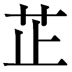
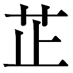

🏠
日
月
縦書き／横書き

はじめに
明治創建以来、昭和の敗戦にいたる間、日本は戦争に明け暮れ、七十七年目にして国家体制は音を立てて崩壊した。この間、日本が経験した戦争（出兵）は十二度にも及んだ。「日清戦争」「北清事変」「日露戦争」「日独戦争」「シベリア出兵」（「尼港事件」を含む）「南満出兵」「山東出兵」「満州事変」（「上海事変」を含む）「日中戦争」「張鼓峰事件」「ノモンハン事件」「太平洋戦争」などがそれである。
日本が自らの力量をわきまえることなく、対外的膨張主義の道を選んだのは、「日清・日露戦争」による勝利を跳躍台としての、明治四十年の「国防方針」の決定が端緒である。この出来事が日本の近現代史のプロセスを本質的に規定し、この時から「太平洋戦争」での完膚なきまでの敗亡への道が掃き清められていたのだ。
「国防方針」の要旨は、「帝国ノ国防ハ攻勢ヲ以テ本領トス」とされた侵略的拡張主義の公然たる決定であり、「国防ニ要スル帝国軍ノ兵備ノ標準ハ用兵上最モ重要視スヘキ露米ノ兵力ニ対シ 東亜ニ於テ攻勢ヲ取リ得ルヲ度トス」といわれるように、世界最強の国家を向こうに回し、東アジアで攻勢をとることにあった。
この「国防方針」の下で、陸軍は「南守北進」（太平洋正面は海軍に任せ、満州、シベリア、中国に侵攻する戦略）、海軍は「北守南進」（朝鮮、満州、シベリア、中国は陸軍に任せ、太平洋正面の米国、英国、オランダおよび支配地域を制圧する戦略）の路線をとることで、国軍（陸海軍）の統一された「調整作戦」のない、別々の方向へ疾走する無制御の二元的な分裂路線をとることとなった。
日本はこのような対外的膨張主義の下で、覇道を追求し、「富国強兵」を国家のスローガンとしていたものの、国の実力からしてそのこと自体が自己矛盾でしかなかった。スローガンを実現するには、十分に自給可能な物的資源、効率的経済制度、高度に発達した基礎技術と生産技術、高い水準に達した資本蓄積など所与の前提条件が備わっていて、はじめて可能であった。
これらの前提を決定的に欠いていた日本は、「八紘一宇」という蜃気楼の旗印の下で東南アジアの諸国から物的資源を略奪し、これらの諸国を敵に追いやる撞着を増幅した。そればかりか、国力が軍事力拡大の犠牲となり、「貧国弱兵」への道と崩壊への道を必然的に歩むこととなった。
一九四五年八月の太平洋戦争での敗北から、六十年の歳月が閲した。だが、今もなお戦争のあまたの傷跡が、ことに日中、日韓、日朝間の国際関係・外交関係に暗い翳を落としている。日本人は戦争でどのような不可逆的歴史を刻んだのか。今また再びそのことを思い起こさなければならない外的内的インパクトが日本人の心に重い課題をかしている。自分の尺度でしかものを考えないといわれる日本人の思考様式は今も変わっていない。
本書は、筆者がかつて上梓した『魔性の歴史』（一九八五年二月・文藝春秋版、一九九一年六月・同文庫版、一九九八年秋・光人社文庫版）を戦後六十年を機に新書版にしたものである。
かつての戦争の歴史は、「魔性の歴史」（米内光政が盟友荒木二郎へあてた手紙からの借用）であった。日本人は昭和史の中で、十五年の長い歳月にわたって、アジアを中心とした世界に暗黒の世を作り出す主役として登場した。「魔性の歴史」に幕が降りて後、戦後の一時期、自らがどうしてそのような恐るべき"壊劫"の日々（仏教にいう"四劫"の一つ。世界壊滅の期間）を作り出したかを思い、深い悔悟の念を抱いた。
だが、年がたつにつれて、悔悟の念は薄れ、侵略の歴史から受け継いだ自らのプロトタイプを消去するために、日本人一流のやり方で歴史を綴る文言をなし崩しに改竄しようとしたのである。それが今もしばしば論議の的になる「教科書問題」や「歴史認識問題」である。
「魔性の歴史」は、他民族に対する侵略の歴史ではあったが、他方、それがとりわけ「魔性」とされる所以は、あの暦命の日々の中で、日本の戦争指導者が演じたどうしようもない無知、愚行、狂気、残忍、錯誤などが自らの運命の選択をめぐってさえ、平然と行なわれたからである。
筆者が訴えたいのは、同時代人である戦争経験者たちが日々去り逝く中、彼らに代わって日本の現近代史に改めて科学的照射を当て、日本の未来を背負う若い世代にわれわれの思念を再度伝えたいということである。
本書は、今後も機会あるごとに論議されるはずの歴史の道程を、国家経営学（マクロ経営学）的観点ともいえる視点から見た、恐るべき矛盾の再照射に他ならない。
二〇〇五年夏
筆者
"聖戦"という無謀な戦い
かつて、日本人が選択した文字どおり正気の沙汰とも思えない歴史の道程の中で、当時も無論、太平洋戦争の開戦をめぐってその前提や条件を検証する問題が提起されたのも事実ではあった。例えば、当時最大の問題は、二正面作戦を出来れば回避し、一触即発の事態にあったソ満国境をも意識しつつ、中国からどのようにして手を引くか？ という問題もその一つであった。
もっとも、当時の軍国主義者たちが考えたことは、後でもふれるように、それまで中国に押しつけて来たあらゆる種類の不平等な取り決めを即時廃棄し、侵略行為を即時停止して軍隊を全面的に引き揚げるといったものではさらさらなかった。彼らが考えていたことは、中国侵略の実もとり名もとった後で、中国戦線で拘置されているあまりに大きな戦力を、ソ満国境や太平洋戦域にどの程度転用することが出来るかという恐ろしく虫のよい打算だった。
だが、実をいえばこの問題は、客観的に見て、当時の日本の国力や戦力にかかわる死活的とさえいうべき極めて重大な問題に外ならなかったのだ。
「対米戦争に備える為に第一になすべきことは支那事変の解決であった」と元海軍少将横山一郎は、かつての太平洋戦争を顧みて、戦後三十五年もたった一九八〇年三月発刊の彼の著書の中に歴史のｉｆについて書いている。「もしそれが出来ないならば、支那事変の完遂を放棄して大陸に於ける戦線を縮小することであった。日本軍は海岸線まで撤退して、軍事的にも経済的にも国家の総力をあげて、対米英戦争の準備を整えるべきであった」と（横山一郎回顧録『海へ帰る』原書房 八〇頁）。
横山によれば、太平洋戦争の最大の敗因は、一つには、国力を消尽した「支那事変」を始末することなく戦争に突入したことであった。横山のこうした設問は、かつての十五年戦争が今や遠い昔の物語となった時点での、歴史の不可逆性を無視した詠嘆的回顧に過ぎないように見える。が、軍部の指導者たちのうちの少なからぬ人々は、少なくとも主観的にはこの問題について当時も真剣だった。だが、そこに日本軍国主義の重大なアポリア（難問）があったのである。
無論、日本が中国に足をとられているということは、太平洋戦争をめぐって日本の主敵となった連合諸国、とくにイギリスにとって政戦略上まことに都合のよいことだった。シンガポールや香港など東アジアに拠点と利権をもち、ビルマや印度を支配していたイギリスにとって、日本を容易に南進させないためにも、日本の軍事力が中国という巨大な磁場により強くより長く吸いつけられていることが必要だったのである。
一九四〇年の中頃、日本の要求によってビルマの援ルート閉鎖が問題となっていた時、チャーチル英首相がハリファックス外相に送ったといわれる七月二十日付の書簡がこのことを証明している。「中国、日本間の公平にして名誉ある和平と称する一件については、きわめて徐々に進むのがよいのではなかろうか」とチャーチルは述べた。「日本人が現在の繁忙（日中戦争─引用者）から解放されることはわが利害にとって都合がよくないと私は考える」と（戦史叢書『大本営陸軍部大東亜戦争開戦経緯』〈１〉九七～九八頁）。
夜郎自大 ところで、「北支事変」を拡大し日中全面戦争にまで事を運んだのは、いうまでもなく日本の戦争推進者たちではあったが、彼らは、しかし、戦争に臨むに当たってかならずしも戦力や戦備を周到に整備していたわけではなかった。
後でも述べるように、太平洋戦争の場合もそうだったが、満州侵略以来の日中戦争に関しても、日本の軍国主義者の主流は自らの国力（ウオー・ポテンシャル）を勘定に入れることなしに、相手のそれをまるで故なく過小評価する荒唐無稽の自己過信に陥っていた。
明治創業以来、あたかも突如として近代史の中に跳び込んだ日本は、歴史の帝国主義的発展段階において、膨張主義の夢を追い求めつつ休む暇もなく戦争に次ぐ戦争を経験して来たのであった。日清戦争（一八九四年～九五年の十カ月）が始まり、それが終われば北清事変（一九〇〇年の四カ月）が始まった。だが、北清事変が終わると、ついで日露戦争（一九〇四年～〇五年の十九カ月）が始まり、さらにこの日露戦争が終わればこれに引き続いて第一次大戦とその後のシベリア出兵（一九一四年～二五年の百二十七カ月）が始まったのである。そして、このシベリア出兵が終われば今度は山東出兵（一九二七年～二八年の十八カ月）が始まり、この山東出兵が終わればついで満州事変（一九三一年～三七年の七十カ月）が始まり、そしてこの満州事変の発展の後に日中戦争と太平洋戦争（一九三七年～四五年の九十八カ月）が重なるといった具合の、まるで悪魔の駅伝競走のように、戦争のバトンがつぎつぎと引き継がれていったのである。
こうして、日本の直接軍事費（陸軍・海軍省費、臨時軍事費および徴兵費）の一般会計に占める比重は、一八八七年（明治二十年）以来、「平時」でさえ三割から時には四割以上に達し、戦時には九割近くに達する高比率となっていたのであった。「日清戦争以来五十年間にわたる戦費支出の継続が途切れた唯一の時期」があったとすれば、それは一九三一年四月から八月のわずか五カ月間でしかなかったのである。戦前の日本の歴史は、文字どおり、掛値なしの戦争の歴史そのものであったといってよかろう。
日本はこれらの度かさなる戦争の中で、いってみれば、まだしも満州事変までは事をうまく運んだかのように見えた（もっともシベリア出兵は大失敗だったのだが）。財政に食い込んだ高い軍事費のおかげで、かなりの戦力が造成されていたからでもある。だが、問題を子細に検討してみると、その時々の戦争に日本が勝利を得たのは、戦争の期間が短いか、あるいは敵となった相手に内部的な崩壊の要因があるなどがその原因といってよかった。事態が少しでも長引けば（例えばシベリア出兵）、日本の財政は戦争の重圧に耐えられないといった状況をげんにしばしば経験して来ていたのである。
一旦、戦争が起これば、日本の侏儒経済（ちっぽけな規模の経済）には、もともと持久力などといったものはなく、また正攻法をもって敵を圧倒し去るに足る巨大なハード戦力を造成するなどということは、事の始まりからどだい無理な話というべきだった。しかも、こともあろうに懐の深い中国のような大国を相手に、である。いうまでもなく、結論は明々白々であった。
日中間に本格的な戦争が始まるわずか一カ年前の一九三六年、例えば日本が生産した陸戦のハード戦力は、小銃で二万五四〇〇挺、機関銃で二四〇〇梃、火砲で五九〇門、航空機で六〇〇機といった戦備に過ぎず、この程度のハード戦力の補給力をもってして、わずか一年後に、日本の広さの二六倍、その広がりはアジア大陸の四分の一といわれる九六〇万平方キロの領土が広がり、五億の人口を持つ中国大陸で、すべての人民を敵として泥沼の一大消耗戦を起こすなどといったことは、あまりにもひどい計算違いといってよかった。
問題はこのハード戦力の量の不足のみにあるのではなかった。質の面においても、銃も砲もほとんど全てが日露戦争時代の一昔前の代物に依存していた。こうしてハード戦力のあまりにお粗末な正体を覆い隠すために、後でも述べるような、自己欺瞞と自己陶酔に陥ったソフト戦力をめぐる精神主義ばかりが一人歩きしていた。
しかもさらに悪いことには、昔、中国の西南部にいたといわれるあの野蛮人と同じように、「漢」の強大なポテンシャルをも知らず、また自らの矮小な力量をも知らずして、ただ空威張りのみうまい「夜郎」というのが当時の日本軍部に外ならなかった。いわゆる夜郎自大である。
こうして、当時の日本の軍国主義者たちの目から見れば、ナチスがユダヤ人やロシア人を訳もなく蔑んだように、中国人は最も下等な人種、地球上の とも見えたのである。おかげで日中戦争が始まっても、とりわけ日本陸軍の戦争指導部は後日、太平洋戦争のさまざまな局面に見られたと同様、兵力の逐次投入を行ないつつ戦局を拡大するという蟻地獄への道に踏み込んでいったのである。
とも見えたのである。おかげで日中戦争が始まっても、とりわけ日本陸軍の戦争指導部は後日、太平洋戦争のさまざまな局面に見られたと同様、兵力の逐次投入を行ないつつ戦局を拡大するという蟻地獄への道に踏み込んでいったのである。
ちなみに日本陸軍の劣悪な装備と敵を侮った夜郎自大は、日中戦争の過程で時に無敵であるはずの"皇軍"が手痛い打撃を受ける素因ともなったのである。一九三七年八月の開戦早々、上海攻略戦で、日本軍が強いられた手ひどい苦戦や、この年の九月、平型関の戦いで第五師団の受けた壊滅的打撃などがその典型的な事例であった。
無名の戦 だが、中国人を侮蔑し切っていた日本人は、経験の中からしかるべき教訓を引き出そうとはしなかったのである。
三七年九月二日、日中戦争が局地的な紛争としての「北支事変」から「支那事変」という呼称に変えられることで全面戦争へと発展し、それから四カ月ほど経た後の三八年一月十六日、思い上がった"長袖者"近衛文麿首相は、とり返しのつかないとんだ大チョンボをしでかしてしまったのである。「帝国政府は爾後国民政府を相手とせず、帝国と真に提携するに足る新興支那政権の成立発展を期待し是と両国国交を調整して更生新支那の建設に協力せんとす」を主意とした「帝国政府声明」を発表することで、文字どおり天に向かってツバを吐く滑稽な一人芝居を演じてしまったのだ。それはまさに"聖戦"という、実は、無名の戦をめぐっての撞着に満ちた自己宣告といってよかった。
だが、演出されたのは滑稽な一人芝居だけではなかった。楽屋の裏側から古めかしい大道具がもち出され、二つの人形劇が上演されることとなったのである。日本の戦争推進者たちは、この「帝国政府声明」と相前後してもっともらしく化粧した二つの傀儡政権をデッチ上げることにその限り成功した。
周知のとおり、その一つは、三七年十二月十四日、北平（北京）でつくり上げられた王克敏を行政委員長とする中華民国臨時政府であった。無論、臨時政府が確立した行政権はせいぜい日本軍が軍事的影響力を及ぼし得る河北・河南・山東・山西・チャハルの五省に対する名目的なものに過ぎなかった。日本人が黒幕となった臨時政府が支配し得た行政区がもしあったとすれば、それは当時中国の民衆がこの傀儡政権を揶揄して呼んだ「城内政府」、つまり、北平城内だけに限られていたということだ。
ところで、もう一つの傀儡政権は、三八年三月二十八日、南京でデッチ上げられた梁鴻志を行政委員長とする中華民国維新政府であって、その行政区は江蘇省と浙江省の二省に跨ってはいたが、いずれは北平政権へ吸収されるはずであった。中国民衆は南京の新雅飯店で成立したこの維新政府を「飯店政府」と呼んでこれを笑したといわれる。ともあれ、二つの操り人形を主役としたこれらの人形劇は、一九四〇年三月三十日になってその短い前座の幕を閉じる運命にあった。この日、南京において傀儡の真打ちともいうべき汪兆銘を首班とした中華民国政府が樹立されたのである。この「中華民国政府」といわれるものが日本の戦争推進者たちの手によって建てられた一個の空中楼閣に過ぎなかったことは、周知のとおり、後日、歴史がこれを証明した。
一九三八年一月の近衛声明以後、日中戦争はそれ自体、自己運動となって、もはや、誰の手によっても止めることの出来ない勢いをつけ、まるで急坂を転がる石ころのように弾みをつけて回転していく。とはいえ非力な国力（ウオー・ポテンシャル）の日本にとって、物事の行き詰まりは予想外に早くやってきた。最初の行き詰まりが現われたのは、三八年十月の広東攻略と武漢三鎮の占領を機にしてであった。日中戦争の勃発以来、日本はわずか十五カ月にして大きな息切れを経験していた。明らかに、この時をもって日本の戦略的攻勢は早くもその終焉を迎えていたのである。
日本人が事の始めから侮っていた"支那人"ではあった。一戦一戦で日本軍は確かに勝利を収めてはいた。だが、その勝利といえるものも、広大な中国の膨大な人民の大海の中でのわずかに点と線の確保をもたらしたに過ぎない程度のいわばミクロの戦闘における勝利だった。
確かに中国の軍隊は、いたるところで蜘蛛の子を散らすように敗走してはいた。戦意も低く、軍紀も乱れ、装備も貧弱だった。が、よく考えてみると、中国軍の度重なる敗走にもかかわらず、肝腎の国民党政権はいっこうに手を上げる気配を見せないばかりか、むしろ日本軍に空間を与えては彼等自身時を稼ぐという、まるで日本軍に対して蟻地獄ともいうべき消耗戦を強いていたのだ。
中国軍の行動は、"遅滞行動"と呼ばれる持久の一種である防勢的戦術行動であって、時間を稼ぎ地域を守る防御戦闘ではなく、地域を犠牲にして時間を稼ぐ戦術行動に外ならなかった。巨大な国土と膨大な人民があって初めて可能な中国流戦法であったということだ。
日中戦争というのは、時間と空間の概念の根本的に異なる二つの民族の戦であった。結局のところ、われわれ日本人は、海千山千の"支那人"に体よく翻弄されているのではないのか？ 日本軍は確かにそこら中で暴れ回ってはいるが、それもこれも釈尊の掌の上で動き回っているあの一匹の猿に過ぎないのではないのか？ この頃になって初めて、日本人は、かつて指摘された中国と中国人についての、ある無気味な事実に気付き始めていた。「何処の国でも、人間と同じく、心臓は一つです。ところが中国には心臓は無数にあります」という、一九二七年三月、南京事件を契機に発言したあの"軟弱外交"の張本人幣原喜重郎の言葉を。日本軍が経験したことは、まさにそのことだった。中国には刺すべき心臓が何処にもないという、考えてみれば身の毛もよだつ、それは恐るべき事実であった。
広東と武漢三鎮の攻略戦より四カ月ほども前、晩年と違ってその当時は天才的な先見性をもって事態の発展過程を見ていた毛沢東（当時四十五歳）は、この年の五月二十六日から六月三日にかけて根拠地延安で行なった「持久戦について」の講話において、日中戦争の成り行きを洞察し、この戦争が三つの発展段階を経る持久戦となり、最後に日本が敗北し中国が勝利する全過程を的確に分析していた。毛が講話をしたころの日中戦争の発展段階は、日本の戦略的侵攻、中国の戦略的防御の時期と規定されていたが、その後、この発展段階は日本の戦略的現状維持、中国の反攻準備へと変転、さらに日本の戦略的退却、中国の戦略的反攻へと変貌するというのが戦争をめぐる大筋の見通しであった。
周知のとおり、日中戦争はまさに毛の見通しどおりに発展していたわけだが、広東と武漢三鎮後の戦局は、明らかに日本の戦略的現状維持への移行期といえた。
暴走する現地軍 日中戦争が勃発して七カ月ほどたった三八年二月十六日、日本の戦争指導部は、この日開かれた御前会議において、対ソ戦を考慮しつつ、なお戦面不拡大の方針を打ち出してはいた。この方針の下で、在中国兵力の半減、召集者の帰還、積極作戦を予想しない兵力の駐留などがうたわれていた。
こうした御前会議の決定は、日本の国力をマクロから見た軍部中央のいわば"良識派"が、戦面拡大の非を洞察し、日中戦争に自信をもっていなかったことの証左であった。だが、一九三一年（この年満州事変勃発）以来の日本の歴史が物語って来たように、いかに天皇を中心とした御前会議の決定であろうとも、下剋上の価値観が体質化した現地軍の動きを抑えることは出来なかったのである。
こうして、戦面不拡大の御前会議の決定は、当時、弾みのついた現地軍の徐州を目指すいきり立った悍馬の勢いによって、こともなげに葬り去られたのであった。
中国侵略の歩測が、遂に徐州へと延び、さらに広東・武漢三鎮へと延びていった時、日本の直面する困難は客観的にますます尖鋭化していった。再び在中国兵力の縮減計画が三九年度の戦備予算をめぐって持ち上がったのは当然の事柄であった。
当時、なみなみならぬ危機感に駆り立てられていた陸軍省軍事課は、戦費の削減をとおして、もはや泥沼化した日中戦争から足を抜こうと焦慮していた。日中戦争を「自主的に終結する方向に転換することが、国家のため有利」というのが判断の基礎となっていたのである。
問題の第一は侏儒経済につきまとう財政事情の窮迫であった。非力な日本の戦争経済にとって、日中戦争すらがその当初から肩に担い切れない重過ぎる荷物となっていたのである。戦争の拡大か不拡大かをめぐる論議が日々交わされる中で、結局、戦面はずるずると拡大していったが、この時、ほとんど信じられないことに、三七年七月に日中戦争が勃発して以後、戦面拡大とともに陸軍が最初に出食わしたものは、実に弾薬の欠乏という、戦争を決意した国家としては、全く想像の域を超えたウオー・ポテンシャルの厚い壁であった。鉄砲をもってむやみに走り出したものの、すぐ弾が切れ、ただ好戦の気分だけが一人でつっ走るといった具合に物事は進んでいったのである。
行き詰まりのドミノ現象は、さまざまな形で現われ始めた。作戦が"進展"するにしたがって、弾薬の増産が急務となり、弾薬が増産されればされるほど、今度は、小銃、機関銃、火砲、戦車、航空機などの兵器生産に配分されるべき予算が縮小されるという、ここでもまた、トレード・オフないしはクラウディング・アウトの関係、すなわち、何かを得れば、何かが犠牲になるという関係が働くというのが侏儒経済のいつわらぬ現実であった。
こうして、三七年度の兵器費の五六％を占めていた弾薬費は、翌三八年には実に七六％へと上昇、その分兵器生産が圧迫されるというのが財政の実態であった。事実、日本のＧＮＰは、後でも述べるように三九年をピークとして、その後は次第に低下していく。この三九年、陸軍は中国戦線に二五個師団の支那派遣軍を展開していたが、これだけの軍隊に対する補給すら不完全のままであったといわれているのだ。日本軍は日中戦争の遂行にすら、武器の不足という作戦上の決定的な物理学的手詰まりを経験していたのである。
しかも、日中戦争の延長線上に世界最強の帝国主義国アメリカを主敵として戦う太平洋戦争を予想しながら、全く信じられないことに地上兵器としての銃、弾薬、戦車、自動車の生産は、太平洋戦争突入三年前のすでに三八年という年にピークに達し、以後、次第に下降するといった有様であったという。
ソ満国境─ノモンハンの大敗 陸軍の在中兵力縮減計画は、三九年五月、威力偵察を目的として、こともあろうに虎の尾を踏みつけたノモンハン事件を通じ、衝撃的な形をもって触発された。寓話の中の蛙のように、身を膨らませて大見得を切ろうとした日本軍はペちゃんこに叩きつけられてしまったのである。それは日本人の経験が初めて出食わした大量報復を伴っての酸鼻を極めた近代戦の結末であった。日本軍はノモンハンの挑発的愚行の中でソ連軍に完膚なきまでに大敗を喫したのである。いうまでもなく戦力の圧倒的な格差がその原因であった。
当時、ソ満国境に展開していた極東ソ連軍は兵員で三〇個師団、関東軍一一個師団のほぼ三倍であった。戦車の数はソ連軍の二二〇〇輌に対して日本軍はわずか二〇〇輌、つまり十一分の一でしかなかった。航空機の数もソ連軍の二五〇〇機に対して日本軍は五六〇機、すなわち四・五分の一と開いていた。
すでに陸軍は三八年七月、当時、スターリンが犯した赤軍幹部の大量粛清によるソ連軍部の指揮系統の動揺を「天の与うるもの」として、ソ満国境の張鼓峰に一個師団単位の兵力をもって威力偵察を強行、その結果、手ひどい打撃をこうむっていた。
ちなみに、この戦闘に投入された第十九師団六九一四人のうち、死傷者の数は一四四〇人（死傷率二〇・八％）に達する有様であった。中でも師団隷下の第七十五連隊の場合は、戦闘に投入された一三七九人のうち死傷者は七〇八人（五一・三％）にも達したといわれる。陸軍では死傷率が三〇％に達すれば、その部隊は一時的に戦闘力を喪失、五〇％に達すれば壊滅とされていることから見て、まさにこの戦闘の中核部隊は壊滅的打撃を受けたということである。
だが、ノモンハンの戦闘では事態はいっそう深刻なものとなった。この戦闘に最初に投入されたのは第二十三師団であった。巨大な敵に対するこれが日本軍一流の兵法の常道を無視した相も変わらぬ兵力の逐次投入であった。後で繰り返し述べるように、兵力の出しおしみは、もともと日本が保有する戦力の非力が根本原因となっての、兵力温存思想と裏腹の関係において形成された、寡をもって衆に当たることを至上の価値観（攻撃精神ないしは玉砕主義）にまで高めた倒錯的用兵思想のあらわれに外ならなかった。こうして、最初の戦闘は日本軍捜査隊の全滅という結果をもって終了する（第一次ノモンハン事件）。
ついで日本軍第二十三師団を加えて、第七師団隷下の歩兵第二十六連隊と第一戦車団支隊を投入、激戦の末、惨憺たる敗北を喫したのである。記録によると、第二十三師団一万五一四〇人中その死傷率七九％、砲兵部隊二九〇〇人中その死傷率五〇％といずれも壊滅的打撃をこうむり、さらに第七師団一万六一三人中その死傷率三三％、第八国境守備隊四五七九人中その死傷率三二％とこれまた戦闘力を喪失するほどの打撃を受け、しかも投入された火砲八二門中七七門が破壊されるといった惨状であった。
この戦闘がいかに激烈を極めたものだったかは、戦没した高級将校の数の多さから見てもその事実を容易に想像することができよう。戦死ないし自決した師団参謀長および連隊長級の大佐ならびに中佐の数一〇、重傷一。重傷を負うた団長級の少将一といった有様であった。ソ満国境にこの時、この世のものとは思われぬカタストロフィの惨劇が演じられたのであった。
こうして、張鼓峰とノモンハンの「鉄か肉か」の戦闘で、決定的な戦力パリティ（均衡）の格差を思い知らされ内心恐ろしく動揺していた陸軍は、中国戦線の兵力をソ満国境に引き抜くために、上述のごとく在中兵力の縮減計画を立てたのである。もともとソ満国境をめぐる小ぜり合いは、一九三二年から数えても三六年ころまでに実に四八〇件にも達していた。長大な国境線は常に不気味な緊張をはらみ、片時も手を緩めることの出来ない状態がそこに続いていたのだ。弦は張られたままだった。
三二年、ソ満国境を挟んでの日ソ兵力パリティは、極東ソ連軍六個師団、関東軍三個師団であったが、日本人が満州を占領して以来、"セキュリティ・マインデッド"な国民性を持つロシア人たちは、"開かれた国境線"を窺う不逞の輩たちの行動を防遏するため敵を圧倒するに足る兵力を投入した。彼らは一九一七年の革命をぶっ潰そうとして他人の弱味につけ込み、その翌年の一八年から四カ年以上の長きにわたって沿海州、黒龍江、ザ・バイカルなどの他人の家に土足で居座っていた、あの日本人の無謀極まる暴虐な内政干渉を、彼らの記憶の中から決して忘れ去ろうとはしなかったのである。
こうして、三二年になると、日本軍六個師団に対してソ連軍は八個師団を投入、三六年には、五個師団の日本軍に対して一六個師団のソ連軍といった具合に、圧倒的に優勢なパリティの兵力を投入して、形勢を逆転させていたのである。それは一方的なシーソー・ゲームといってよかった。日本軍は見る見るうちに劣勢となり、三九年にはこれが前述のごとく、ソ連軍三〇個師団対日本軍一一個師団と、その相対戦力は大きく開くにいたったのである。
当時も（そして今も）、敵の三倍以上の戦力を集中して備える（防御も攻撃も）というのが、歴史と地勢によって形成されて来た、いささか過剰安全保障癖ともいえる、ロシア人の心性から発した戦法の定石である。彼らの作戦は、戦略的には文字どおりの正攻法を常としていた。ちなみに、上述の戦力パリティは四〇年末になって変化し、ソ連軍の兵力はいっそう膨れ上がって、三二個師団（狙撃三〇個師団、騎兵二個師団）、戦車二七〇〇輌、航空機二八〇〇機に加えて、極東海軍基地の潜水艦一〇三隻、その総兵力七〇万と潮のごとく迫り上がっていた。
一方、これに対する関東軍は、一一個師団と国境守備隊一三隊の兵力三五万。つまり、そのパリティは二分の一。さらに戦車では五分の一、航空機でも二分の一の劣勢であった。こうして、日ソ軍事力の巨大な格差という余りにも重い響きで押し迫る重圧が、中国の侵略に手を染めた日本陸軍の頭上に、常に離れることなくのしかかっていたのである。
二兎を追う ところで、いうまでもなく、満州と中国は地続きの大陸である。いやそれ以上に満州は、今日いわれているように中国大陸の東北三省（奉天省、吉林省、黒龍江省）である事実に変わりはない。この中国大陸への侵略をめぐって、日本は無謀にもソ連と中国という二つの巨大な敵を相手とする政戦両略を展開して来たのである。言葉を換えていえば、それこそが危険極まる二正面作戦に外ならなかったのである。もともと国力と戦力のむやみに非力な日本が二つの大国を相手にすること自体、正気の沙汰ではなかったのだ。
このあまりにもひどい妄断が行なわれたのは、三六年五月の「帝国国防方針、所要兵力および用兵綱領」の第三次改訂においてであった。この時、想定敵国にソ連（露国）と中国（支那）が登場したのである。
一方この時、海軍は海軍で陸軍とは別に、もう一つの超大国アメリカ合衆国（それにイギリス）を想定敵国に登場させていたのである。日本の陸海軍は自らが非力な狩人であるにもかかわらず、常々、二兎（いや、正確には、ソ連、中国、アメリカ、イギリスなどなど多兎というべきだが）を追い求めることで、さなきだに（そうでなくてさえ）非力な自らの力量（戦力）をいっそう非力なものへと分裂させて来たのであった。
日本は文字どおり四面楚歌の中に自らが好んで身をおく、あまりにも無謀な覇道を歩んで来たのである。日本の戦争推進者たちが、常々、ひどい分裂症に悩まされ続けていたのは、おおいに理由のある事柄だったのである。
こうして、二兎を追う陸軍の妄断の中で、在中兵力の縮減計画が立てられる。が、この対ソ連戦を考慮して立てられた縮減計画なるものの中身は、文字どおり苦肉の策以外の何物でもなかった。地上軍、航空兵力とも、その兵力規模は表面の数字において変化はなかったものの、師団の装備は五％削減され、備蓄すべき三会戦分の弾薬を二会戦分に減らすといった実質的な兵力の縮減、いいかえれば、戦力の骨抜きが行なわれたのである。
それは、官僚の中でも最も官僚的な軍部官僚得意の 棲を合わすだけの"作文"であった。「こうして予算の面から対支兵力八五万を五〇万にする方針が一応樹立された」（戦史叢書『大本営陸軍部大東亜戦争開戦経緯』二一一頁）というわけであった。
棲を合わすだけの"作文"であった。「こうして予算の面から対支兵力八五万を五〇万にする方針が一応樹立された」（戦史叢書『大本営陸軍部大東亜戦争開戦経緯』二一一頁）というわけであった。
すでにこの段階で明らかなことは、現地軍のむやみに拡張主義的な作戦図案に対して、日本の非力な国力を対応させようとすれば、戦力そのものを水で薄めねばならないという絶対的な自家撞着が顕在化していたということである。軍部官僚が鉛筆の芯をなめてデッチ上げた策案ではあったが、それは結局のところ、の共食いの類といってよかったのである。
ドミノ現象 だが、日本陸軍の宿痾ともいうべき分裂症がこの時再発した。陸軍中央における在中兵力削減のこうした動きにもかかわらず、中国戦線という余りにも深い泥沼に足をつっ込んでいた支那派遣軍にとって、その泥沼から足を引き抜くことは容易なことではなかったのである。焦れば焦るほど、より深刻な矛盾の底に自ら沈澱していくのがおちであった。
一九三九年十一月十四日、第十一軍司令官岡村寧次中将の書いた支那派遣軍総司令官宛の「支那事変速決に関する意見具申」の中に認められているとおり、すでにこの時、「抑々敵軍抗戦企図ノ破摧衰亡ハ至難中ノ至難」といわれる、文字どおり絶望的な戦況が日本軍に重くのしかかっていたのであった。日本軍にとってすべての状況は不可逆的（回帰不能）であり、将軍や参謀たちが選択した道は、ここでもまた矛盾に満ちたパラドクシカルな戦法である日本人一流の速戦即決のための攻勢主義であった。
もともと五億の人民大衆を擁する広大な中国大陸を戦場としての戦において、速戦即決などという作戦は条件として成立するはずもなかったし、事実、日本軍は中国軍（国民党軍、紅軍）が仕掛けた大持久戦の罠の中に絡め取られていた。速戦即決を狙っての攻勢主義というのは、焦慮の生み出した矛盾のドミノ現象に外ならず、日本軍はもはや退くに退けない自縄自縛の状況下に身をおいていたのであった。日本軍は渦の中に巻き込まれていたが、そのおかげで渦そのものの大きさが分からなかったのである。
こうした戦況下での兵力の縮減という陸軍中央の机上プランが、現実を反映していなかったのは当然だった。中国での事態は、この時すでに容易なものではなかった。日本軍にはもともと、あのとてつもなく広大な中国を占領・確保するだけの力は無論なかったが、このころになると敵の拠点を攻撃した後、ただちに反転して後方基地へ撤収するといった、まるで山賊か野盗の類の戦法を繰り返していた。こうして点と線を守るだけで精一杯だった支那派遣軍は、兵力削減の中央計画に強い抵抗を示した。いうまでもなく、もしそれを受け入れれば自らの身に倒壊の危険が及ぶという、軍事的にもひどい危機感にさいなまれていたからである。
一九三九年末以降における日中戦争をめぐって、戦争は膠着状態に陥っていた。その後、日本軍に作戦上の目立った動きがあったとすれば、四〇年の五月から六月にかけて実施された陸軍による宜昌作戦と、同年五月中旬から九月上旬にかけて行なわれた陸海軍による重慶・成都爆撃くらいであった。だが、それが作戦の限界点であった。いいかえれば、四一年十二月八日の太平洋戦争突入時の一年半近くも前に、すでに日本は中国戦線で破るに破れぬ厚い壁にぶち当たっていたのであった。先に述べたように、すでに日本の戦争経済はＧＮＰ指標で三九年にピークに達していたのである。
日本の戦争推進者にとって、このアポリアを打開する方法がもしあるとすれば、それは南方地域における戦略物資の奪取であり、また日中戦争そのものの矛盾をもし"解決"する方法があるとすれば、それはナチス・ドイツのヨーロッパにおける緒戦の"勝利"の中で、状況に便乗する機会主義的な行動をとることでしかなかった。
四〇年九月二十七日に締結された日独伊三国同盟条約は、行き先の知れないバスに乗り遅れまいとする日本の戦争推進者たちの、思慮と展望を欠いたあまりにも馬鹿馬鹿しい喜劇であった。ベルリン・ローマ・東京枢軸の形成は、まことに皮肉なことに、これに参加した日独伊三国にとって、その手のこんだ演出にもかかわらず、軍事同盟としては実質的な意味を持たない、文字どおりお粗末極まる紙の上の同盟に過ぎなかったのである。が、中国にとっては、アメリカとイギリスとの統一戦線の中で、日本との間には断固として単独講和を締結せず、ともに闘う堅い絆を結ぶ契機となり、日中戦争をめぐる中国の立場はこれによってむしろ強化されるにいたったのであった。中国の国際的な立場の強化は、いうまでもなく力の均衡において日本の立場をより弱体化する羽目に追い込んだのである。いまや、日本は太平洋戦争というより危険な懸崖へと駆り立てられていく。
海軍の立場 ところで、当時、陸軍と違って海軍の提督や参謀たちは、日中戦争が解決されない状態の下では太平洋戦争に突入すべきではない、と考えていたといわれる。だが、その真意は何だったのか？
例えば、一九四〇年七月九日に起案された「世界情勢ノ推移ニ伴フ時局処理要綱」海軍案において、対南方武力行使に関し、「支那事変ノ処理未ダ終ラザル場合ニ於テハ第三国ト開戦ニ至ラザル限度ニ於テ施策シ」と述べることで、極力米英との紛争を避けることを主張、「支那事変ノ処理概ネ終了スルカ又ハ世界情勢特ニ有利ニ進展スルニ至ラバ好機ヲ捕捉シテ一層対南方施策ヲ推進シ情況ニヨリ武力ヲ行使シテ目的達成ニ努ム」というのがその本音であった。
ここに述べられているのは、いうまでもなく、「北守南進」の思想であって、海軍といえども不戦を唱えていたわけではなかったという事実は明白である。海軍の提督や参謀たちは、おなじ軍国主義者とはいえ陸軍の将軍や参謀にくらべて、いわば猪突型の軍人ではなく、ただ機会主義的な立場をとっていたに過ぎなかったというべきである。それというのも、日本海軍は、自らの実力（海軍戦力）の限界を仮想敵との対比において熟知していたからであった。それが海軍のいわば現実的感覚ともいえるものであった。だが、とはいえ、日本海軍は支那事変に積極的に反対していたわけではなかった。
いずれにせよ、「支那事変の解決」ないしは「処理」といわれるものが、太平洋戦争突入のための先決条件であったことは確かではあった。が、ここでのもっとも重大なキー・ワードである「解決」とか「処理」とかいわれる言葉の真のコンセプトが一体何を意味していたかは、改めて検討を要する問題である。これについては後で述べる。
"和平"の中身 以上の事実からも事の一端が分かるように、日本の軍国主義者たちは中国への侵略をめぐって、事の当初からその最後にいたるまで、明らかに重大な軍事的自己矛盾に陥っていた。彼らはいくたびとなく、対中和平工作という神頼みを交えたさまざまな画策を行なってはいたが、それらすべては日本人一流の物事を即興的にしか決めないという、まるでシナリオのない出たとこ勝負の茶番劇に過ぎなかったし、またこれも日本人一流の、いささかたりとも相手の立場を考慮に入れることのない自己中心主義的なアプローチに過ぎなかったのである。
彼らの主意は徹頭徹尾中国との間に平等互恵の原則に基づいた国家関係を結ぼうというのではなく、あくまで「東洋の盟主」としての日本の足下に中国を跪かせ、数々の利権を掌中に収めた上での支配と被支配の関係の樹立、いいかえれば夜郎自大の尊大な振舞いの中で、覇道を追求しようとするまやかしの黒い陰謀に外ならなかったのだ。
かつて戦時中、日本人に協力したビルマの独立運動家バー・モーがいったとおり、日本の軍国主義者というのは、人種（日本人という）に縛られた人間であり、他人に対する人種の押しつけ、一方的な思考、日本人の視野においてしかものを見ない偏狭さ、相互理解能力の完全な欠如、他民族に対する自己の思考と使命の押し売り、行為のバリエイションをめぐるたった一つの選択、ただ一つの目的と関心、そして自らの国益のみを追求する民族であり、まさにそれこそが"日本人流"ともいうべき属性にふれているが、中国に対する当時のやり口もまた日本人独得の島国根性が発現した行為であり思考形式であったといってよい。
ところで中国に対する偽りの和平工作劇は、日中戦争が始まった当初からさまざまな道具立てをしつらえ、衣裳をつけて上演されては来た。
一九三七年七月十一日、「北支派兵」が決定されてすぐ、近衛首相は東方会系の宮崎龍介という名の人物を中国に派遣しようとしたが、この宮崎が渡航直前に憲兵隊の手によって逮捕されるという茶番の寸劇をもって、この劇は短い幕を閉じる。この時、日本政府の肚の中には和平案の大綱すらなく、これまた日本人一流の、先の即興によるアプローチに過ぎなかったのである。向こうへ行けばなんとかなるかも知れない、というのが近衛のはらづもりであったのだ。
ついで、この年の八月になって在華紡績同業会理事の船津辰一郎という一人の民間人が和平工作劇の第二幕目に登場する。中国人の間で顔がひろいというこの男の人脈を政府が利用しようと考えたのであった。船津は、国民党政府外交部亜州司長の高宗武と接触したが交渉になんらの成果も見られなかった。この時も肝腎の日本政府に和平の条件をめぐる具体的なシナリオがまるでなく、また戦争の不拡大というはっきりとした意思もなかったからである。アドバルーンはあげられたが、風船は瞬時にして破れてしまったのである。
三七年十月一日になって、日本の戦争推進者たちは、「支那事変対処要綱」という和平条件についてのシナリオを思いついたが、それはあまりにも身勝手なものであった。日本政府がデッチ上げた策案は、先に述べた日本人流の典型的ともいうべき作文であった。政府はこの中でそれまでに占領・確保した中国領土を意識の背景におきつつ、華北と上海に非武装地帯を設定することを国民党政府に要求し、さらに日本の占領した、本来は中国固有の領土であるはずの満州国"独立"の承認を強い、日本と国民党政府との間に防共協定を締結してソ連と中国共産党の影響力を締め出し、 華北での利権を確保するために、海運、航空、鉄道、鉱業など経済の基礎構造をめぐる日中合弁事業の設立などを中国に要求することとしたのである。
華北での利権を確保するために、海運、航空、鉄道、鉱業など経済の基礎構造をめぐる日中合弁事業の設立などを中国に要求することとしたのである。
これらの要求は、日本人流の無作法さと無法さをかなりの程度反映してはいたが、なおこの段階では控え目のものといえた。日本政府はこれらの要求を中国に突きつけるため、駐華ドイツ大使トラウトマンを利用した。この時、中国の介石は、日本軍の圧力による南京陥落の危機感に苛まれ、領土主権の保全を条件にあわやこの日本の要求を呑もうとしたのであった。
だが、日本の軍国主義者たちはこの年の十二月十四日の南京陥落を背景に、突如、"革面"（いわゆる小人革面・つまらない人間は表面だけを改めるという意味）し、彼らの長い爪を伸ばし始めたのである。相手が折れると見るや否やその弱味につけ込んで要求を過大なものに競り上げる、それは、日本軍国主義者流の尊大にして無法かつ理不尽極まる態度の典型であった。
こうして、日本の軍国主義者たちは、新たな要求を中国に突きつけ、今度は華北と上海ばかりでなく、さらに華中へと地域を拡げてこれを非武装地帯とし、満州国の承認にさらにつけ加えて華北と内蒙古に傀儡の「自治政権」をつくること、および、こともあろうに、自らが侵略しておきながら、中国に賠償金の支払いを要求するなど、相手の存在をまるで無視した、先の相互理解能力の完全な欠如という日本人の心性をあますところなく暴露したのであった。
しかもこの交渉を打ち切ったのも日本人自身であった。「要求の具体的な内容を知りたい」とする国民党政府側の返答を、中国人流の時間稼ぎの逃げ口上と見た近視眼的な日本政府は、一九三八年一月十五日の日本側が勝手に設定した中国側の回答期限が切れるや否や、その翌日の一月十六日、先に見た近衛声明を発表して国民党政府と一方的に絶縁し、以後は傀儡政府の樹立に執念を燃やすといった、これもまた、先に述べた他民族に対する自己の思考と使命の押し売りを始める始末であった。悪名高い近衛声明と同時に、トラウトマン工作は打ち切られたのである。こうして、芝居の第三幕となったドタバタ劇の幕は下りる。
トラウトマン工作は失敗したとはいえ、少なくともそれは「居中調停」（第三国がとりもつこと）の形をとった公式の外交交渉であった。この公式の外交交渉に強引に幕を引いたのが、「国民政府を相手とせず」とした近衛声明であった以上、以後もし公式の和平交渉が行なわれるとすれば、天に向かってツバを吐いたこの近衛声明自体を撤回する必要があるのは当然の事柄であった。
無論、問題が尊大な日本軍国主義者の"面子"にかかわる事柄である以上、近衛声明を反古にすることは表向きに出来る仕事ではなかった。
三八年五月二十六日の近衛改造内閣で外務大臣となった宇垣一成は、外相受諾の条件として近衛にたいし「一月十六日の声明を反古にするかも知れんがよろしいか」とする彼の所信にしたがい、この年の六月下旬から七月上旬にかけて、香港総領事中村豊一と国民党政府行政院副院長兼財政部長孔祥の秘書喬輔三との間での、和平条件をあぶり出す非公式の交渉を進めた。この交渉で宇垣は依然としてトラウトマン工作時と同じような和平条件を中国に突きつけ、さらにこともあろうに、国民党政府の中心人物であり、「国家元首」でもあり、しかも多くの中国人の支持を得ていた介石の下野を要求、同時に日本のデッチ上げた占領地の傀儡政権と国民党政府を合同させるなど、国家主権そのものを人もなげに冒した要求を、相手の顔前にぶっつけたのである。
繰り返すまでもなく、これもまた先に述べた、ただ一つの目的と関心の下で、自らの国益をのみ追求する日本人流の思い上がった属性のあらわれであった。一九三八年九月一日、喬輔三は、香港で中村豊一総領事に対し交渉決裂の意思表示の後、舞台からその姿を消していった。これが奇妙な芝居の第四幕であった。
長期持久戦 日中間における和平交渉といわれるものは、その外にも二つのルートをつうじて行なわれていた。その一つは国民党政府副秘書長の周仏海、それに先の外交部亜州司長の高宗武、さらに第一科長の董道寧などの中国側要人と、参謀本部第二部第八課長の影佐禎昭大佐、および参謀本部支那課支那班長今井武夫中佐を中心とする日本側メンバーに、同盟通信社上海支局長松本重治、満鉄南京事務所長西義顕、および中外興信所長伊藤芳男らの民間人が絡んだ和平工作であった。中国側のメンバーには後、高宗武に代わって江寧県県長の梅思平が登場するが、いずれにせよこれらのメンバーを中心とした和平工作は、三八年六月から動き出していたものの、なんら肯定的な結末を得ることはなかったのである。
さらに同じころ動いていたもう一つのルートは、「大公報」（漢口）の主幹の張李鸞と同紙香港のジャーナリスト胡霖を中心メンバーとし、矢田七太郎公使と「朝日新聞」の神尾茂などを日本側メンバーとして絡ませたルートであったが、このルートもまた結果としていかなる成功にも導かれることはなかったのである。
これらのルートをつうじての虚々実々の肚のさぐり合いの中で、海千山千の中国側は慇懃で円満な表情の中にも日中戦争をめぐる鋭い現状認識を示し、日本側の条件に言葉巧みな反論を提起していた。日本人の要求は、中国人にとってあまりにも受諾不可能な非現実的なものであった。繰り返していえば、中国戦線で蟻地獄の中に足を突っ込んでいたのは、日本人であって中国人ではなかったのである。
無論、その後も和平工作といわれるものは断続的につづけられた。日本陸軍が一時は血道をあげ、自らがしつらえた傀儡政権である汪政権の正式承認まで遅らせて飛びついた「桐工作」と呼ばれる和平工作にしても、日本が中国に最終的に突きつけようとした条件は、相手国の主権を完全に無視した理不尽きわまる覇道の追求そのものであった。
「桐工作」は、一九三九年以来、支那派遣軍参謀今井武夫大佐と国民党政府の大物宋子文の弟と称する「宋子良」との間の接触によって始められていた。陸軍はこのうさん臭い「和平工作」をつうじて、日本にのみ有利なありとあらゆる無理難題を中国人におっかぶせたのである。
四〇年三月、参謀総長が示した交渉人板垣征四郎中将（支那派遣軍総参謀長）宛の「桐工作実施要領」に示された日本側の条件といわれるものは、まるで にも棒にもかからないひどい代物であった。
にも棒にもかからないひどい代物であった。
その中には、中国による満州国偽政権の承認、蒙疆および北支における日本占領軍駐兵の承認、北支の重要資源の開発利用をめぐる日本の特権の要求、南支沿岸の特定島嶼における海軍基地設置の要求（海軍はこの外に揚子江特定地点での艦船部隊の駐留、航泊の自由等を要求）、日本軍事経済顧問の受け入れの要求、日本人の中国における居住・営業の自由の許容と保証の要求、汪傀儡政権と重慶政権の合作の要求など、相手を虫けら以下に見下した大言壮語がならべ立てられていた。まさにこれこそが、日本の軍国主義者のいう「和平」あるいは「支那問題の解決」ないしは「処理」と称するものの実態であった。
日本人の黒い肚のうちを百も承知していた中国人は、一時動揺はしたものの、一部のいんちきな連中は別として、日本人の差し出す手には決して乗らないことを決意したのである。枢軸国側と連合国側という色分けが年とともにはっきりしていくにつれて、中国人は自らが決して孤立して戦っているのではないという事実に、確信を抱き始めたのであった。しかも、主敵日本が中国での泥沼の戦に疲労困憊しているという事実の中で、中国人は時が全てを解決することを知っていたのである。
「桐工作」が失敗した後、四〇年十一月三十日、日本は汪傀儡政権を承認し、この傀儡政権を利用しての「支那事変の解決」と「処理」に一縷の望みを託したが、日本人のこの下手な演出は、ますます汪政権を孤立化し、無力化することに手を貸す以外の何物でもなかったのである。
四〇年十一月十三日、御前会議において決定された「支那事変処理要綱」で、日本の戦争推進者たちは、自らの最も不得意とする「長期大持久」の局面に事態が入ったことを認めざるを得なかった。
いうまでもなく、この「長期大持久の新事態」といわれるものは、日本にとって抜き差しならぬ戦争の膠着状態を意味した。非力な日本にとって今やこの局面においてなすべきことがあるとすれば、軍旗を巻いて占領地を放棄し中国戦線から兵力を引きあげることによって、今までむやみに流されて来た国力の出血を止めることであった。だが、この際もまた兵力縮減の計画は、現地支那派遣軍の強い抵抗に出食わしたのである。
四一年一月十六日、日本陸軍は、大本営陸軍部の会議において、中国戦線での今後の出方を決め、四一年夏秋に一度圧力をかけることを考えるとして、もしそれが「解決」にならなければ長期持久態勢に入り、この段階から数年をかけて兵力を七五万から五〇万に縮減する計画を採択する一方、まるで分裂症まがいのもう一つの暴走計画である、"好機"をとらえて太平洋に打って出る南進計画と、対ソ戦備の促進計画を決めたのであった。「大東亜長期戦争指導要綱」と「対支長期作戦指導計画」と呼ばれた計画がそれであった。日本陸軍は、こうして、中国という巨大な蟻地獄から抜け出すために、今度は太平洋というさらに巨大な焦熱地獄へと足を踏み入れたのである。
四一年七月二日、この日開かれた御前会議において「情勢の推移に伴ふ帝国国策要綱」が決定された。「要綱」によれば、日本は一方において「南方進出の態勢を強化」「本号目的達成の為め対英米戦を辞せず」とする南進と、他方では、「密かに対『ソ』武力的準備を整へ」「独『ソ』戦争の推移帝国の為め有利に進展せば武力を行使して北方問題を解決し」とされる北進が決定されたのである。この御前会議決定は二正面作戦の決定どころではなく、げんに戦争が進展している中国戦線を含めると、それは明らかに無謀を極めた多正面作戦というべきであった。こうして、日本は全世界の実に大小合わせて五六カ国を戦争相手とする、自己破滅への道をひた走りに走っていく。
中国という強烈な磁場
兵力の配分 ところで、「支那事変の解決」ないしは「処理」と関連して、なによりも先に明らかにしておく必要のある事実は、太平洋戦線に投入される戦力との配分において、当時、中国と満州（仮りにこの二つの地域を分けるとして）にどれだけの兵力が拘置され、どれだけの戦費が投入されていたかという、いわば戦争経営学上の視点から分析すべき問題である。いいかえれば、中国と満州の戦域に対する兵力と戦費投入の傾斜が、どれだけ太平洋戦域に対する兵力と戦費投入の足を引っ張ったか、という問題に他ならない。
まず兵力だが、史上最強の帝国主義国アメリカ合衆国を主敵とした太平洋戦争の開戦時において、陸軍地上部隊の大半は、依然、満州を含む中国戦線に拘置されていた。
当時、日本陸軍が全体として保有していた師団の数は六二個師団。うち内地には一四個師団、朝鮮には二個師団、満州には一三個師団、中国には二三個師団、そして南方には一〇個師団というのが戦力配分の内訳であった。いいかえれば、全保有師団のうち、満州・中国の北方戦線（対中・対ソ）に三六個師団、つまり五八％という過半に及ぶ兵力が拘置され（中国だけで三七％）、南方戦線には一〇個師団、つまりわずかに一六％が割かれたに過ぎなかったのである。
一方、これ以外にも、それぞれの軍司令部に所属する隷下の混成旅団およびこれに準ずる兵力があったが、これについても状況は同じようなものであった。旅団の全数五八個旅団。うち、内地一一個旅団、満州二四個旅団、中国二〇個旅団、南方三個旅団（朝鮮なし）というのがその内訳であった。この場合もまた満州と中国に対して四四個旅団、つまり七六％という圧倒的な兵力が拘置され（中国だけで三五％）、南方に対してはたったの三個旅団、つまり五％程度が割り当てられたに過ぎなかったのである。
もっとも、以上の数字を総兵員数から見ると、兵力配分の比重は若干変わってはくる。太平洋戦争開戦時の陸軍総兵力は二一〇万（この他に航空・船舶その他を加えると二二七万）。うち満州・朝鮮が七四万、中国が六八万とそれぞれ三五％および三二％、つまり、この地域で六八％と圧倒的な兵力の集中を示し、内地の総予備は五三万、すなわち二五％、そして新戦場となった南方地域には一五万、いいかえれば、わずかに七％に過ぎなかったのである。太平洋戦争が勃発した時点においても、日本陸軍の主戦場は史上最強の帝国主義国を相手として戦う太平洋ではなく、あくまで中国戦線であり、ソ満国境であったということだ。
こうして、日本の陸戦兵力はさなきだにその物質的非力をかえりみることなく、太平洋の広正面にわたってむやみやたらと分散配置されていったのであった。有形無形の各種戦力を総合して、敵に勝る威力を緊要な時期と場所に"集中"発揮することが、戦勝獲得のため極めて重要とされる"戦の原則"を、日本人は事の当初から無視し去っていたのである。つまり、事の当初から敗北の根本的原因があった、ということだ。
いうまでもなく、広正面にわたって戦力を均等に配分するということは、前後左右、四方八方のすべての戦力が脆弱となり、どの戦線においても各個撃破されるのがオチである。
戦費の配分 ところで、それはともかく、以上の地域別兵力の配分に関して、太平洋戦争というのは「海主陸従」（海軍中心）の戦ではないか？ という反論があるかもしれない。が、問題は、事実の一つの側面がそのとおりであったとしても、では、戦費はどうだったのか？ という点に収斂されるはずである。太平洋の戦域に軍艦や航空機が必要なら（そして多くの陸兵は必要でないとしても）、いうまでもなく貧乏な財政を抱える日本としては、中国の戦線に投入された陸軍の戦力にかかわる戦費を節減して太平洋戦域に投入すべきであったろう、ということだ。
このような観点から、以下に戦費を指標として問題を検証しておこう。結論からいえば、"大東亜戦争"と名づけられた、東アジアのほぼ全域にわたっての大戦争を遂行するに当たって、日本の戦争推進者たちは、破産もなにもまるで考えることのない完全無欠ともいうべき禁治産者のごとく振舞ったのである。
事実、臨時軍事費の支出をめぐる地域別比重（占有率）を見ても、例えば陸軍の場合、一九三七年の日中戦争勃発年次で、総予算一六億五八八五万円（千円以下四捨五入、以下同じ）のうち、中国戦線の構成費は一二・五％であったものが、三八年には、戦線の拡大とともに、総予算三九億九三五〇万円のうちの一四％、三九年には、おなじく三七億三六五五万円のうちの一八・六％、四〇年は、四一億九〇七三万円のうちの一七・〇％と高まり、太平洋戦争開戦年次の四一年には、総額六三億八一九五万円のうち、南方戦線への支出によってその比重は低下したものの、なお一三％を維持し、日中戦争勃発年次のそれよりもいささか高いというのがその実情であった。
他方、この間の満州への支出は三七年以来これまた次第に高まり、その占有率は四〇年までにそれぞれ五・三％、七・四％、一一・〇％および八・八％へと推移、四一年には「関特演」を背景に中国戦線への支出をはるかに越える一八・八％を記録しているのである。
以上中国と満州を合算して考えると、日本陸軍が使った臨時軍事費に占める両地域の比重は、おなじ期間それぞれ一七・八％、二一・四％、二九・六％、二五・八％および三一・八％となって、臨時軍事費全体を大きく圧迫する要因として推移して来た事実が看取されてよい。
一九四一年、太平洋戦争の開戦とともに、南方戦線において支出される臨時軍事費が登場、その比率は陸軍臨時軍事費の四・七％となったが、世界最強の帝国主義諸国を相手とする戦費にしては、とくに中国のそれに比べて二・八分の一、満州のそれに比べて四分の一という極めて低い水準のものでしかなかった。
太平洋という中国（満州を含む）よりもさらに広大な地域を戦場とし、しかも貧弱な装備の中国軍と違って、日本軍よりもはるかに優れた近代装備の巨大な戦力をもつ連合軍を相手としての太平洋戦争において、日本はなけなしの戦力を絞り出しつつ、無謀な戦争を挑んだという事実がこの数字の中に如実に証明されているのだ。
が、このことは既に述べたとおり、縦深の深い中国（満州を含む）の複雑な戦線に巨大な戦力が拘置され巨額の戦費が投入されていることを物語っているが、もし、日中戦争がこの時点で解決されていたら、太平洋戦線に投入された戦力（戦費）は、ハード戦力、ソフト戦力とも数倍に達することは可能であったとする主観主義的な論拠ともなったのである。が、それはともかく、太平洋戦争の緒戦当時も日本軍は中国戦線でその兵力を拘置され、激しい消耗を強いられていた。
例えば、阿南惟幾中将が強攻した長沙作戦がその一つの例だった。一九四一年十二月二十四日、第十一軍は三個師団の兵力をもって一度退いた長沙への作戦を再興した。香港作戦に呼応するはずだったこの長沙作戦は、明らかにその範囲を超えた現地軍司令部の独断専行であった。明けて一九四二年一月一日、日本軍は長沙に突入したが、中国軍の激しい側面攻撃でさんざんな目にあい大損害を被って、一月十五日、長沙を撤退した。
「第二次長沙作戦での死傷者数約五五〇〇は、フィリピン作戦の約一万一〇〇〇にくらべれば少ないが、香港作戦の約二一〇〇、マレー半島作戦の約三八〇〇、シンガポール作戦の約五一〇〇、ジャワ作戦の約九六〇のいずれをも上まわっていた。大本営が大規模作戦はおこなわないとしていたにもかかわらず、このような死傷者がでたのである。そこに太平洋戦争のなかにおける中国戦線の比重の大きさと、戦況の深刻さがしめされていた」（木坂順一郎『太平洋戦争』小学館 四八頁）といわれているのである。
長沙作戦の強攻は、後でも述べる長期持久態勢という戦略的後退の中でフラストレイションにさいなまれていた日本陸軍の、ヒステリックな行動の典型的なシンドロームの表われであった。
が、緒戦のころはまだそれでよかった。確かに太平洋の戦域では事は思いどおりに進み、しかも安上がりに済むように見えた。しかし、年が経るにつれて、相つぐ戦域の拡大の結果、南方地域への戦備投入は増大した。一九四二年には陸軍の臨時軍事費総額一〇三億六八〇〇万円のうち、南方地域の占有率は八・九％となり、四三年には一五七億六四三四万円のうちの一六・二％、四四年には四五五億一〇六九万円のうちの二二・六％となり、戦場が本土に近づく終戦の年の四五年（一～十月予算）には二〇八億六九二三万円のうちの三・九％となるといった推移をった。
不可逆的状況 ところで、その後の中国・満州はどうだったのか？ 例えば、一九四二年八月のアメリカ軍によるガダルカナル侵攻から始まったソロモンの一大消耗戦をめぐって、ハンド・ツウ・マウスの状態で戦力の造成と補給を必要としていた日本は、ソロモンの惨劇を自らの目で凝視しながら、依然として中国と満州の戦域になけなしの戦費を投入しなければならないという不可逆的状況に身をおいていたのであった。まず中国への戦費の比重は、一九四二年に一〇・八％（四一年は一三％）とその比重を下げたが、それでもなおこの比率は南方戦費のそれを凌駕していたのである。
この年、長期大持久態勢をとったはずの中国戦線において、急にあわただしい動きが始まった。太平洋戦域での緒戦の戦勝に気をよくした陸軍は、国民党政府を屈伏させるために、こともあろうに中国奥地の四川省の重慶にまで攻め入る「五号作戦」を計画した。だが、非力なウオー・ポテンシャルの日本にとって、中国作戦と南方作戦とは互いに干渉し合う物理学的な関係に立っていた。大本営は、この四川作戦にほぼ一五個師団の兵力を投入する馬鹿でかい規模の作戦を考えていた。だが、一九四二年九月三日にいたって支那派遣軍が作戦準備を大本営から指示された時、太平洋戦線の一角、ソロモンのガダルカナルにおいて、にわかに戦局が緊迫、むしろ中国戦線からこのソロモン方面への兵力抽出が必要となるといったトレード・オフの関係が働き、結局のところ、この四川作戦は「幻の作戦」と化したのであった。
四川作戦が中止される一方で、この年の四月、太平洋戦争をめぐって起こったもう一つのインパクトが、中国戦線に無視出来ない干渉作用を与えた。浙作戦の発起がそれであった。この年の四月十八日、太平洋戦域での戦勝に驕っていた日本に一つの衝撃が加えられた。ドーリットル空襲がそれだが、このＢ‐25を使ってのアメリカ人の冒険主義的行動に挑発されて、日本人は、一つは太平洋戦争の転回点を画したミッドウェイ作戦を発起し、もう一つはＢ‐25が日本空襲後の着陸基地として選んだ玉山（江西省）、衢県、麗水（浙江省）の三飛行場を攻略する狙いの、先の浙作戦を発起したのである。
「せ号作戦」と呼称されるこの作戦に投入された兵力は、第十一軍および第十三軍隷下の、実に八個師団以上にも脹れ上がった。第十三軍は、この年の六月、目標となった三つの飛行場とその周辺地域を徹底的に破壊するとともに、第十一軍と協同して、さらに浙線を東西から打通するより広範な大破壊作戦を展開したのである。目的を達した後、第十一軍は南昌付近へ、第十三軍は金華以東へと撤収した。
この浙作戦は、一九四二年という年における中国戦線での最大の、いわば積極作戦であったが、それ以外にもこの中国戦線で蟻地獄に陥っていた日本軍は、大規模な治安戦を余儀なくされていたのである。例えば、この年の五月一日から六月二十日にわたって実施された「三号作戦」と呼称される河北省中部平原における八路軍根拠地に対しての治安戦には、実に三個師団と二個旅団に達する兵力が釘付けとなったのであった。
中国戦線で点と線のみを確保し、中国民衆の敵意の眼差しの中で一日たりとも枕を高くして眠りにつくことの出来なかった日本の侵略軍にとって、この治安戦は精力と戦費をひどく消耗する作戦であった。無数のトーチカや望楼、延々と続く遮断壕が、この作戦のためにつくられねばならなかったといわれているのだ。
一九四二年における中国戦線をめぐっての臨時軍事費の比重が、すでに述べたとおり一〇・八％にも及び、この年の南方戦線の比重を上回ったのは、以上に見た作戦のおかげであった。
一九四三年に入って太平洋戦域での事態は、いよいよ破局に向かう趨勢へとのめり込み、連合艦隊司令長官山本五十六大将の戦死から始まるこの不吉な徴候の年度において、中国戦線へ投入された陸軍の戦費比重は、前年度の一〇・八％を超え、さらに南方戦線の比重一六・二％さえも凌駕して、一六・七％へと逆にふたたび高まるといった、抜き差しならぬ状況が醸し出されていたのである。
中国戦線は日本にとって、災害のみをもたらす、振り切るに振り切れない、疫病神となっていたのだ。一九四三年の中国戦線をめぐって、日中両軍の間には"戦略的対峙"の状況が続いていた、と木坂順一郎は述べている。一九四三年初頭現在、依然として中国戦線に拘置されていた陸軍兵力は、師団数で二四個師団、旅団数で一六個旅団に達し、これに航空中隊の一三個中隊を加えると六〇万以上に達していたといわれているのだ。
だが、六〇万といった程度の数をもってしては、もはや日本軍は積極的な占領地の拡大はおろか、出撃しては原態勢へもどるという、このころでは空間をも取れないまま、時間と戦力を浪費する作戦に終始するのが常であった。事態は文字どおり膠着状態に陥っていたのである。
「まず華北では、四三年春から『粛正作戦』と称する治安戦をたびたびおこなったにもかかわらず、中国共産党の勢力が次第に増大し、夏以後は治安の悪化が表面化しはじめた」と木坂は書いている。「華中では、漢口・岳州（現岳陽）・沙市をつらねる揚子江三角地帯での江北殲滅作戦（二月中旬～三月下旬）、沙市・宜昌以南、洞庭湖以北の揚子江南岸地区での江南殲滅作戦（五月五日～六月十日）、南京の南南東一三〇キロにある広徳周辺の制圧をねらった広徳作戦（九月三十日～十月十五日）、洞庭湖西方の常徳付近の中国軍にたいする常徳殲滅作戦（十一月二日～四四年一月初旬）という四つの作戦が実施された。これらの作戦は、いずれも中国軍にある程度の打撃をあたえたが、作戦終了後占領地域を放棄して原態勢に復帰した場合には、もとのもくあみになるのがつねであった」と（木坂順一郎前掲書 二六八頁）。
一九四三年という年をつうじて、太平洋戦線における敗勢が日に日に深刻化していく中で、日本軍は中国戦線においてがんじがらめの自縄自縛状態となっている身を、いかんともすることが出来なかったのである。すでに述べたとおり、この年、戦費が急増したのは、ほとんど休みなく続けられたこれらの"殲滅作戦"のおかげであった。
一九四四年、太平洋戦争をめぐる戦局の決定的なカタストロフィの段階において、事態はまたもや目を疑うばかりの異常なパターンを示すにいたった。この年、対中国の臨時軍事費比重は、実に四八・三％へとかつてなく膨れ上がった。この数字は、陸軍臨時軍事費の約半分、南方戦費の二倍以上を指し示す一見信じ難い数字といってよかった。一体、この年、日本軍の主戦場はどこにあったのか!? 当時、そこかしこで「玉砕」を続けていた日本軍にとって、いうまでもなくその主戦場は太平洋戦域であるはずだった。だが、それにもかかわらず、この年、日本陸軍は、戦費から見るかぎり中国軍を主敵として戦っていたのである。太平洋戦域にある前進根拠地への戦力の補給は、ほとんど見限られていたというのが、いつわらぬ日本の実情であった。
中国戦線におけるこの年の臨時軍事費の異常な著増は、一九四三年の夏から秋にかけて現出していた日本軍をとりまく深刻な戦況を反映していた。当時、国民党政府軍の総兵力は三〇〇万と見られ、そのうちの九個師団二五万が貴州、湖南の戦線に展開、ビルマ戦線における英米軍と連合して対日反攻の気配を示していた。そして一方では、日本本土を狙う長距離爆撃機Ｂ‐29の基地が大陸において整備され、一九四四年の春から夏にかけて五〇〇機が集中する確算があると考えられるにいたっていた。
こうして、日本陸軍は、中国大陸を南北に縦断しての、しかし敵制空権下での、一五〇〇キロに及ぶ遠大な作戦線にわたる「大陸打通作戦」（打通・ブレークスルー）を敢行せざるを得ない羽目に陥っていたのである。当時、日本軍が展開していた兵力は、二五個歩兵師団、一個戦車師団、一一個混成旅団、一個騎兵旅団および一個飛行師団の総兵力六二万であった。
これらの兵力は、先に示した開戦時の兵力（二二個師団と二〇個混成旅団）と比べても、ほぼ同等の兵力であった。「大陸打通作戦」に投入された兵力は、このうちの一五個師団、約五一万（その他馬匹一〇万頭、火砲一五五一門、戦車七九四輌、自動車一万五五五〇輌）に達した。それは、いうまでもなく、在中総兵力の八二％以上に達する巨大な戦力であり、日中戦争始まって以来の大作戦といわれる規模であった。
「一号作戦」と呼ばれたこの作戦は、この年の四月十七日に発動された。五月九日、第十二軍は、確山において京漢線を打通、五月二十五日には洛陽を占領した。一方、第十一軍は五月二十七日、迫り来る太平洋戦域でのマリアナ戦をよそに、岳州付近で行動を開始、六月十八日には長沙を占領、さらに八月八日には衡陽を占領したが、それはひどい苦戦の後の占領であった。日本軍はこの戦で火砲弾薬の欠乏に悩まされ続けていた。他方、第十一軍は広東方面の第二十三軍に協同、十一月十日、桂林と柳州を占領、同二十四日に南寧を占領した。さらに十二月三日、第十一軍の一部は、毒山を占領、十二月十日には第十一軍および第二十三軍による仏印公路の打通が成功した。
この「大陸打通作戦」は一九四五年に引き継がれ、この年の一月から二月にかけて南部粤漢線の打通と遂川および南雄の占領の後、さらに三月から四月において老河口と江の攻略が実施された。だが、「大陸打通作戦」を含めたこれら一連の作戦も大戦略上の観点からすれば、なんの成果をも収めることはなかった。在中アメリカ戦略空軍の活動は封殺されず、中国軍の戦意も失われることはなかったのである。いや、それどころか、こともあろうに中国大陸での作戦期間中、太平洋戦域では天王山といわれたマリアナとフィリピンが落ち、いまや、沖縄戦が始まっていたのである。
繰り返すまでもなく、このことは、太平洋戦域での破局の段階においてさえ、中国戦線が日本陸軍（日本）にとっていかに過重な重荷となっていたかを、はっきりと物語っている。
ちなみに、この年、対南方戦費と対中国戦費の大幅な増加をまかなったものは、対満州戦費の相対的削減もさることながら、それまで臨時軍事費の圧倒的な地域別シェアを占めていた、対日本本土戦費であった。この年、対日本本土戦費は、その比率で過去に例を見ない比率へと減少したのである（一九三七年から四五年にいたる陸軍の日本本土臨時軍事費の比重は、七八・四％、七六・二％、六七・八％、七一・三％、五九・二％、六四・二％、五四・六％へと推移し、一九四四年には、これが急激に二二・四％へと落ち、日本本土が戦場となろうとしていた四五年には五六・三％へと回復している）。
ところで、一九四五年に入っても対中国戦費の比重は二二・〇％と高い水準を維持し、対南方戦費の三・九％と比べると、実に五・六倍以上の占有率を占めていたのである。南方戦線の臨時軍事費の比重がひどく小さくなったのは、すでに述べたとおり、もはや南方は戦域としての意味を失うほど、連合軍に完全にほぼ制圧されていたからであった。
だが、こうした状況下において、中国戦線には、すでに述べたとおり、比重の高い戦費の投入を余儀なくする戦況が続いていた。「大陸打通作戦」が終了し、消耗した日本軍の行動が止まるとすぐ、この年の五月、中国軍は反撃を開始し、その圧力を受けて日本軍はついに南寧、柳州および桂林を放棄するにいたった。もはや、中国戦線の日本軍は昔日の面影もなく、もっぱら防衛戦に駆り立てられていたのである。
この年の四月五日、ソ連による日ソ中立条約の延長停止通告を契機に、対ソ戦の切迫を感じていた日本陸軍は、四月十八日、広東・広西の両省に展開していた五個師団を華北と華中へ吸収し、六月には「支那派遣軍対米作戦計画大綱」にしたがって、一方では、華北と華中に兵力を集中して対ソ戦に備え、他方では北京、上海、南京、武漢および広東などの主要都市とその周辺のみを確保する戦線の縮小を始めたのであった。日本軍の戦略的防御と後退の局面で、中国戦線にも、いまや、瓦解の音が高まっていたのである。
以上の経過から容易に見取ることが出来るように、中国戦線に投入された臨時軍事費の比重は、一度たりとも太平洋戦争の主な舞台となった南方戦線でのそれを下回ることなく、常にはるかに高い水準を維持していたということである。今さらながら、驚くべき事実であるといってよい。小国日本は、こともあろうに自らの手で自らの足に重い鎖をはめながら、恐るべき巨人と戦ったということである。
一方、では、満州をめぐる陸軍の臨時軍事費はどうだったのか？ 一九四二年、満州に投入された臨時軍事費のシェアは一三・六％となお南方戦線（八・九％）よりも高かった。それ以後は、四三年に一〇・五％、四四年に五・〇％、四五年に八・二％へと低下していった。いうまでもなく、太平洋戦域での敗勢の中で初めて日本陸軍はこの戦域での戦争に本腰を入れ出し、頽勢挽回のためようやくソ満国境に展開していた陸軍部隊を南方に転用、ソ満国境に事を起こさないことを願う「北方静謐」の戦略的防衛態勢の敷設を必要としたのである。
満州に展開された日本軍は、強大な北方の敵ソ連に備えての布陣を第一義とした陣構えのために、巨大な戦力と戦費を投入して来たが、その他にもこの地域での抗日中国軍による治安戦は、関東軍にとって常に頭の痛い問題であった。ことに一九三八年六月に始まった八路軍による熱河省への浸透作戦に手を焼いていた関東軍は、一九四一年十月から四三年春にかけて「南西地区粛正工作」による戦闘に、相当の戦力を投入せざるを得なかったのである。熱河省における八路軍は、四三年春に一時撃退されたが、四四年には再度浸透し、北支那方面軍を悩まし続けた。満州に投入された戦費の比重の推移がこのことを物語っている。
ちなみに、四五年に前年度の五・〇％から八・二％へと占有率が上昇したのは、すでに述べたとおりの中国の場合と同様の理由で、南方戦線の比重が極端に低下したことも大きな要因ではあった。
こうして、いずれにせよ、一九四一年以降の中国および満州の両地域（いうまでもなく、満州もまた中国にほかならないが）における陸軍臨時軍事費の占有率合計は、四一年が三一・八％、四二年が二四・四％、四三年が二七・二％、四四年が五三・三％、そして四五年が三〇・二％とそれぞれ南方地域の六・八倍、二・七倍、一・七倍、二・四倍、および七・七倍となり、太平洋戦争を戦いながら日本陸軍の場合、その戦力と戦費の圧倒的部分を中国という強烈な北方の磁場に吸引されていたのであった。
もし、中国に投入された戦力ないしは戦費が太平洋戦域に投入されていたとしたら？ という歴史のｉｆが、当時も問題となり、そして今も回顧的に語られるのは必ずしも故なしとしない。
海軍の軍事費 ところで、以上に分析したのは陸軍の臨時軍事費をめぐる問題であったが、では、他方、海軍の場合はどうだったのか？
一九三七年の日中戦争勃発時から太平洋戦争開戦前年の一九四〇年まで、海軍もまた（陸軍ほどではなかったにせよ）臨時軍事費のシェアをこの四カ年に、それぞれ、五・六％（臨時軍事費総額は三億七五四五万円）、四・八％（同八億一九〇万円）、三・九％（同一一億七七五万円）および三・九％（同一五億三一八一万円）と中国にとられていた。これらの比重は、貧乏な日本海軍にとって決して小さなものではなかった。しかも、この比率は「海主陸従」の戦いが始まった一九四一年以降終戦までの五カ年間に逆に高まり、それぞれ七・四％（同三一億五〇七万円）、四・六％（同八三億八五一五万円）、一二・一％（同一三七億七九四四万円）、三〇・六％（同一九〇億六九四六万円）および一二・八％（同二二億四〇三三万円─但し四～十月）と推移しているのである。
他方、南方戦線の占有率は同期間それぞれ〇・七％、五・四％、五・六％、九・八％、および二・三％となり、ことに一九四三年には、中国の比重が南方戦線の二倍強（二・一六倍）、四四年では三倍強（三・一二倍）、四五年では六倍弱（五・五七倍）となり、繰り返していうが、「海主陸従」の戦が戦われているはずの太平洋戦域の戦費が、中国戦線のおかげでむやみに食われているという、一見、信じ難い事実がこの数字から証明されるのである。もっとも、四五年の中国の倍数が高いのは、先に陸軍臨時軍事費の場合に指摘したように、この年、南方戦線での日本軍の全面的後退がもたらした、対南方戦域臨時軍事費の極端な比重の低下が原因ではある（満州に関してはさすがに日本海軍の臨時軍事費は取るに足らぬ程度のものであった）。
ちなみに、一つの試算をすれば、一九三七年以来、もし日本海軍が中国大陸に臨時軍事費を投入する必要が全くなかったと仮定すると、その分で（一〇五億二六二六万円）インフレを考慮しても「雲龍」型空母（一万七一〇〇トン。予算八七〇四万円）約一〇〇隻の建造が可能であったことになる（他の事情を一定として）。海軍にしてからが大きな足枷となっていたこの中国問題は、太平洋戦争における戦力をめぐって極めて深刻な問題を提起していたのである。
「撤兵問題ハ心臓タ」 ところで、政戦略上、中国からの撤兵ないし中国戦線をめぐる大幅な戦力縮減が、太平洋に指向する非力な日本にとって、実は第一級の問題であることが明々白々とした事実であったにもかかわらず、何故、日本はそうした道を歩まなかったのか？
この問題については、戦争の法則としての不可逆性などに関して一部既に述べたとおりだが、その根本的な原因は、外でもなく日本が明治以降追求して来た対外的拡張主義という根本的な路線そのものにあったのである。中国大陸から何の獲物をも取らず手ぶらに近い状態で撤兵することは、この対外的拡張主義という日本帝国主義の根本的な路線上の後退、あるいは敗北を意味したのである。
一九四一年十月十四日、第三次近衛内閣の閣議で、アメリカ合衆国からの強い撤兵要求をめぐって、近衛首相のいった「撤兵問題ニ何トカ色ツヤヲツケレハ外交ノ見込アリト思フ」という発言に対して、当時の陸軍大臣であり急進的主戦派の頭領だった東條英機大将が答えた「撤兵問題ハ心蔵（心臓─引用者）タ」という言葉こそ、日本軍国主義者の矛盾に満ちた本音の表現であった。
東條はいった。「撤兵ヲ何ト考ヘルカ、陸軍トシテハ之ハ重大視シテ居ルモノタ、米国ノ主張ニ其儘服シタラ支那事変ノ成果ヲ壊滅スルモノタ、満州国ヲモ危クスル更ニ朝鮮統治モ危クナル」と。東條はこの発言の中で、撤兵は「退却」であり、「降伏」であり、「青史ノ上ニ汚点ヲ貽スコト」になるといった言葉を吐いているが、これらの言葉は、繰り返していえば、遠くは明治以来、日本が極東と東アジアの大陸で鷲づかみにして来た巨額の権益を撤兵によって一挙に喪失することの、一つは現実的な危惧の表明であった。
利権をめぐる闘鶏場 日本の戦争推進者たちが中国を鷲づかみにし、一旦、取ったものを決して手放そうとしなかったのは、無論、物質的な基盤があってこその行為であった。そのことは中国に対する帝国主義列強の投資の占有率推移を見ても分かるように、
例えば一九一四年（大正三年）、国別の投資占有率は、総投資一六億一〇三〇万ドルを一〇〇として、イギリス三七・七％、ロシア一六・七％、ドイツ一六・四％、日本一三・六％、フランス一〇・七％、アメリカ三・一％、ベルギー一・四％、その他〇・四％であったが、その十七年後の一九三一年（昭和六年─満州事変勃発の年）には、総投資額三二億四二五〇万ドルを一〇〇として、イギリス三六・七％、日本三五・一％、ロシア八・四％、アメリカ六・一％、フランス五・九％、ドイツおよびベルギーそれぞれ二・七％、その他が二・四％と大きく変貌した。いいかえれば、この間における日本の占有率は、率の倍数で実に二・五八倍（投資額のそれでは二億一九六〇万ドルから一一億三六九〇万ドルと五・一八倍）と伸び、イギリス（比率の倍数ではマイナス二・七％、投資額の倍数では六億七六〇万ドルから一一億八九二〇万ドルと一・九六倍）を追い上げて、かつての四位から二位へともう少しで一位に迫るという急速な進出を示すことで、まずイギリスの権益を大きく圧迫するにいたったのである。
一方、おなじ期間、アメリカが地歩を拡大（比率の倍数で一・九七倍、投資額では四九三〇万ドルから一億九六八〇万ドルへと実に三・九九倍へ）、中国市場に強い楔を打ち込むことで、日本との帝国主義的抗争はいやがうえにも激化していったのである。まさに中国は帝国主義列強の利権をめぐる闘鶏場と化していたのである。
アメリカが中国よりの日本の撤兵を強く主張する理由は、まさにこの英米資本と日本資本の角逐がその背景にあったということであり、日本が撤兵を決して肯定しなかった理由もまたそこにあったといってよい。日本の軍国主義者たちにとって、中国から手ぶらで手を引くことは、国家的敗北と日本軍国主義そのものの崩壊を意味したのである。彼らが中国との和平交渉で徹頭徹尾相手に要求したことは、すでに述べたとおり、広範な軍事的・政治的・経済的な利権であった。だからこそ、撤兵は彼らの「心臓」をえぐり取られると同様の致命的な意味をもっていたのである。
問題はそればかりではなかった。その日、東條のいった「陸軍トシテハ駐兵問題ヲ譲ルコトハ出来ナイ」、撤兵は「軍ノ志気ニ関ス」、「士気ヲ失ツタ軍ハ無ニモ等シイ」という一連の言葉は、急坂を転がる石の勢いを誰も止めることはできないといった、戦争の不可逆性の主観的表現であると同時に、一方では、中国よりの撤兵が陸軍の拠って立つ政治権力基盤の喪失への別の危惧の表現に外ならなかったのである。
撤兵すれば、明治以来、「南守北進」を基本路線とし中国の東三省（満州）を侵略するために、防共の名において（資源奪取の目的もあったが）、華北への侵略を強行し、こうした侵略のプロセスの中で対ソ戦を意図して来た日本陸軍は、「北守南進」を基本路線として来た日本海軍に道を開け、海軍をクローズ・アップさせることで陸軍の存在意義を失い、影が薄くなるといった日本人流のケチな派閥根性が、そこに働いていたのである。
国家の中にもう一つの国家をつくっていた日本陸軍の思い上がった侏儒の思念であった。彼らは、国益をわきまえず、なによりもまず派閥の利益を優先していたのである。
国家の危急存亡の中で、自らの利益を追求することに汲々としていたもう一つのインタレスト・グループがあった。日中戦争がはじまった一九三七年の十月五日の軍需動員以来、投資に巨額の資金をつぎ込み大増産に向かって狂奔していた財界にとっても、日中戦争の拡大は歓迎すべき事柄であったが、和平は嫌悪すべき事態であった。
こうして、日中戦争をつうじて四五万五七〇〇人の日本人が戦死したにもかかわらず（無論その何十倍の中国人の犠牲のもとで）、むやみに欲の皮のつっぱった日本の軍国主義者たちは、この膨大な死者の群れをも国家に対する忠誠の尊い犠牲者として利用し、撤兵は英霊に対して申し訳ないという、中国から手を引くことのない理由の一つに英霊を使ったのであった。今日の世代がとうてい理解出来ない日本軍国主義者流の独断的妄言が、この時代にはまかり通ったのである。
いうまでもなく、日本の中国侵略自体が、帝国主義戦争としての、太平洋戦争の決定的な原因の一つであった。中国大陸において自らの利権を伸長させようとしていたアメリカ人にとって、他人の分け前のことをまるで考えようともせず、あまりにも傍若無人に事を進めていく目尻のひきつった狂犬どもは、ことの外、目ざわりな存在であった。
すでに対日戦を決意していたワシントンが、一九四一年十一月二十六日、開戦間際に示した事実上の"最後通牒"である「ハル・ノート」において、日本の中国大陸における全ての獲物を否認したのは理由のないことではなかった。ハル国務長官が突きつけた「ノート」の中で、「日本国政府ハ支那及印度支那ヨリ一切ノ陸、海、空軍兵力及警察力ヲ撤収スベシ」「合衆国政府及日本国政府ハ臨時ニ首都ヲ重慶ニ置ケル中華民国国民政府以外ノ支那ニ置ケル如何ナル政府若クハ政権ヲモ軍事的・経済的ニ支持セザルベシ」という二条項は、決定的な意味をもっていた。この"最後通牒"は、一九三一年以降に日本が中国大陸で獲得したものを、全て白紙にもどすことの決然たる要求であり、日本のファナティックな「目尻のひきつった狂犬ども」を逆上させることで、相手に戦争の引き金を先に引かせるための挑発であった。
一九四一年十二月一日、日本人は目の前に突き出された槍の穂先を見るや否や、瞋恚（自分の心に逆らうものを怒り怨むこと）の炎の中で御前会議において遂にアメリカ合衆国に対する開戦を決定したのであった。
日本の軍国主義者の中でも、つとに中国の東三省への侵略（とその発展）が、遂には対米戦争へと連動することを予見していた者もいたことは確かであった。一九二九年七月五日の日付で、石原莞爾中佐が書いた「国運回転ノ根本国策タル満蒙問題解決案」の中で、石原は対中国外交は対アメリカ外交であると看破し、満蒙を日本人が奪うためには「対米戦争ノ覚悟ヲ要ス」と書き、「モシ真ニ米国ニ対スル能ハズンバ速ニ日本ハソノ全武装ヲ解クヲ有利トス」として、中国の東三省への侵略とその後の日中全面戦争が、必然的に太平洋を戦場とする対米戦へと発展するという道順を洞察していたのである。
だが、石原の滑稽さは、日中戦争が太平洋戦争へと発展する過程での日本の悲劇的な運命を予見することなく、十五年戦争の発端での仕掛人となったことにあった。
こうして、日本の中国侵略（当然満州を含めて）自体が、太平洋戦争の原因である以上、日中間の戦争が言葉の本来の意味において平和裡に解決したとすれば、太平洋戦争そのものも起こらないというのが歴史の論理的かつ現実的帰結であったはずである。ちなみに、このような観点からいうと、日中戦争を解決して対米戦争に突入すべきであったとする戦後の旧職業軍人間の一部の所説は、過ぎ去った時間の中に蜃気楼を再現しようとする、あまりにも馬鹿馬鹿しい観念論というべきである。
旧職業軍人によって、戦後もこのような所説が口をついて出るということの恐ろしさは、かつて日本人を戦争に追いやることに積極的な役割を果たした彼らが、かつても今も、歴史と事実の中から何物をも学び取らなかったという、彼らの脳軟化症にあるばかりではない。問題の所在は、このような所説が戦後の今日において、ぬけぬけといい始められるようになった今日の日本の状況にあるといえよう。
無資源国日本
開戦がわずか半年近くにおし迫った一九四一年六月五日、同日付で作成された「現情勢下ニ於テ帝国海軍ノ執ルベキ態度」のなかで、海軍は、開戦ともなれば、国力の造成上、資源が「ボトル・ネック」となるという深刻な日本の現状を十分認識していた。
この「執ルベキ態度」によれば、「ボトル・ネック」となる資源は、米や燃料はいうにおよばず、「重要戦用資材」と呼ばれるもののほとんど全てに及んでいた。ニッケル、生ゴム、錫、モリブデン、コバルト、銅、バナジュム、鉛、水銀、石綿、雲母、アンチモン、亜鉛、タングステン、マンガン、クロム、工業塩などがそれであった。つまり、大戦争を遂行する上で、まるでなにもかもが不足しているということを、日本の戦争推進者たちの主流は百も承知していたのである。
あの太平洋戦争をめぐって当時の日本人が、何故、このような状態で戦略物資を十分に備蓄することなく事を運んだかは、今日の世代の目から見ればあまりにも奇異な出来事であるはずだ。「もし対英米戦争を決意したならば、大陸戦線の縮小と共に戦略物資の備蓄に全力を注がなければならなかった」と元海軍少将横山一郎すらそう指摘しているのである。
もっとも、そう述べると同時に英米に向かって、「好戦政策から平和政策に転向した姿勢を示し乍ら、コツコツと戦略物資をためこまねばならなかった」（横山一郎前掲書 八〇頁）という、備蓄のための政治的韜晦（つつみかくすこと）の可能性は、余りにも他の条件を一定とした、歴史的には非現実的な仮説に過ぎない。資源問題をめぐって、では、当時の歴史的現実はどのような相貌を示していたのか。これが第二の設問である。
名和教授の深憂 無資源国日本にとって備蓄の問題は、今日と全く同じように、国力と戦力とを造成することが出来るか否かの死活的問題であった。もともと日本の資源自給率といわれるものは慄然たる状況にあった。日本は長期の持久戦となる大規模な戦争を遂行できる国家ではなかったし、今もない。
さらにより重大な問題は、もともと日本という国は、重要資源の大半を、こともあろうに、太平洋戦争当時の敵国となった米英蘭三国、ないしはその経済圏および中国に依存していたという宿命的ともいうべき事実にあった。
すでに一九三七年、故名和統一教授が、その名著『日本紡績業と原棉問題研究』において、日本の資源問題を分析し、深刻な問題を投げかけたことは、当時、真に国を愛した一部の先見の明ある日本人の間では周知の事柄であった。教授は、当時の日本の貿易をめぐる貿易相手国と貿易商品の組み合わせを三つの基本的環節に分けて、問題の所在を分析した。教授によれば日本の対外貿易は、第一環節としての日・米間の生糸＝綿花貿易、第二環節としての日・英間の綿布＝重工業貿易、第三環節としての日・満支貿易からなりたっているとされた。
日本はその第一環節において、アメリカに圧倒的な市場依存度をもつ生糸を輸出し、アメリカから石油、機械類、鉄、木材パルプおよび綿花を輸入している。これらの輸入品はいずれも日本にとって死活的に重要であり、とりわけ綿花は、貿易のメカニズムから見て、日本がそれを輸入し外貨獲得の最重要品目である綿布を作る上で、決定的な意味をもっている。が、にもかかわらず、皮肉なことにアメリカにとっては、たとえ日本からの生糸輸出が止まっても、まるで痛痒を感じないといった関係が貫かれている。生糸の輸出がなければ綿花の輸入は不可能で、綿花の輸入がなければ綿製品の輸出はありえず、重工業原料（軍需用を含む）の輸入は行ない得ない。とすれば日本にとって対米生糸輸出こそは、日本の貿易、従って日本経済全体にとっての「アキレスの踵」であると名和は断言したのである。
ついで、第二の環節、つまり輸入綿花を加工して綿布を生産し、さらにこれを世界市場に輸出して重工業原料を輸入する、主に日・英間の貿易について教授は述べた。この環節においても日本の輸出品が容易に保護主義の対象とされるにもかかわらず、日本がイギリスおよびその経済圏から輸入する商品のほとんどすべてが、日本にとっては重工業ないし軍需工業原料として不可欠の資源であると。
名和が書いたとおり、当時の日本は鉄鉱石を英領マレーや海峡植民地（シンガポール、マレー）やオーストラリアから、銑鉄をインドから、アルミニウムをカナダから、鉛を同じくカナダから、亜鉛をカナダとオーストラリアから、生ゴムを海峡植民地から、羊毛をオーストラリアから、綿花をインドから輸入するなど、いずれにせよイギリスの経済圏に依存していたのである。もしアメリカとイギリスを向こうに回して日本がこれらの国々と衝突するともなれば、その「衝突は悲劇的であらねばならぬ」と名和は、当時、身の危険をもかえりみず警告したのだ。
日本は自らの工業製品および機械類を輸出し、農産物、食料品および鉱物を輸入する中国（満州、支那）との第三の環節を持ち、著しく輸出超過を示しているとはいえ、この環節の貿易は全体の五分の一程度に過ぎず、政治的に不安定なこの第三環節が、第一と第二の環節を代替することはできないと名和は分析した。
「昭和六年九月以降日本の大陸政策の強行は真に刮目に値するものであった」と名和は書いた。「だがこの数年の経過を顧みて、それははたして英米からの制約低減にどれだけ成功したと見るべきであろうか？ 貿易表は日本が大陸政策強化の準備として、重工業・軍需工業生産力拡充に焦慮すればする程、世界市場への依存、原料輸入は増大すると云う循環を示した。ここに日本経済の深憂が存する」（名和統一前掲書 四七三頁）と教授は、太平洋戦争の始まる四年前に出版した著作の中で、日本経済の構造的矛盾をこのように喝破したのである。
戦争の危機が迫り、供給国が禁輸の挙に出るか、戦争が起こってシー・レーンが封鎖されるともなれば、こうした状況が、日本経済を崩壊に導く状況へと変転するのは、火を見るよりも明らかだった。事実、日本が仮想敵とし、相手もまた日本を仮想敵として来たアメリカにとって、なにか事が起これば、禁輸やそれに近い言動をちらつかせることで日本を威し上げることは、自らのイニシアティブとオプションにおいて、事を決めることの出来る極めて有効な手段と考えられていた。
例えば、一九三九年七月二十六日、日本の中国侵略に対抗して、天津イギリス租界封鎖事件を契機に、アメリカが行なった日米通商航海条約の破棄通告は、当時の日本の朝野に重大な衝撃を与えた。条約の無効は、その日から六カ月後の一九四〇年一月二十六日以降に実施される運びとなり、事実はその後も無条約のまま日米通商関係は相当の期間存続するにはしたのだが、事態の運行はアメリカの一方的なオプション下にあった。
いずれにせよ、一九三九年七月二十六日の威しによって日本が激震を受けた理由は、先に見た名和教授の「深憂」において明らかであろう。
経済封鎖による扼殺 ところで、当時、対米関係はいうに及ばず、極東をとりまく国際政治関係は、日本にとって容易ならざる相貌を示していた。一九三七年七月に始まった中国への侵略戦争でさえ、当時の日本にとって、それは余りにも大きな負担であった。代表的な軍国主義者の間でさえ、戦争の不拡大が主張されるといった有様だった。が、にもかかわらず、恐るべきことは、弾みのついた戦争推進者たちの主張に引きずられて、先に述べたように戦線はどうしようもなく拡大していた。しかも、その一方で、こともあろうにこの一九三九年の五月に起きたノモンハン事件は、依然として解決せず（停戦協定成立は九月）、初めはなんの理由もなく相手をなめてかかっていた日本軍は、ソ連軍の圧倒的な鉄量の前に惨憺たる敗北を喫していたのである。
こうしたこともあって、この一九三九年という年は、戦前・戦中の日本にとって、後でも述べるように、最も重要な意味を持つ年であった。重要な意味というのは、この年、日本のＧＮＰがピークに達したということである。つまり、太平洋戦争という未曾有の大戦争を後二年に控えながら、この年を境にして、以後、日本の国力は、次第に疲弊していったということだ。
こうした状況にあった日本という国の指導者が、世界最強の帝国主義諸国を相手に戦争を挑んだという事実を、今の世代が理解することは恐らく困難であろう。
災害は重なった。火の車の台所の中に、今度は、通商条約の破棄という別の疫病神が東から海を渡ってやって来たのである。この年の前年、つまり、一九三八年当時、日本の対米輸出依存度は、輸出の大宗である生糸で仕向地別総輸出額（価値）の八二％、絹織物で一五％、缶詰類で一三％、玩具で二五％に達していたことから、これらの商品がアメリカ市場を失うともなれば、それは、当時の外貨取得源のほぼ四分の一（二三％）が失われることを意味した。
通商条約の破棄通告を契機に、生糸・絹織物の相場は、当然のことながら大暴落を演じた。だが、より深刻な問題は、先にも述べたとおり日本がアメリカからの輸入に大きく依存していた基礎資源の輸入途絶の可能性だった。例えば、日本が戦争遂行上、不可欠とした資源、石油（原油）は、一九三八年に八二％（数量では一九三九年に九〇％）の依存度にも達し、鉱油は五六％、綿花は三八％にも達していたのである。すでに述べたとおり、米英の経済圏に頼ることなく、日本は日中戦争といえども戦争を遂行することはおぼつかなかったのである。
戦争と資源。それは、日本にとって文字どおり絶対矛盾の選択であった。戦争をやるなら資源がいる。戦争をすれば資源は手に入らない。もし、資源が欲しければ戦争政策を放棄する以外に術はない、という自縄自縛に日本の戦争推進者たちは陥っていたのである。
日本に対する経済封鎖の効果が、どの程度役に立つかをワシントンは百も承知していた。彼らは禁輸によって合衆国の要求する対日条項を、もしかすれば日本人に呑ませることが出来るかも知れないし、また戦争が起こったとしても、海外から資源の来なくなった日本の経済がウオー・ポテンシャルを維持する上で、そう長続きするはずはない、と考えていた。その意味でも、アメリカは日本に対して絶対優位に立っている、と彼らには思えたのである。この点に関連して、例えば、ハーバード・フェイスは、つぎのように書いた。「日本には、輸入の途絶えた一部の原料、機械、部分品を保存する必要から生産を節減、代替、あるいは制限しないですむような基礎産業はほとんど存在しなかった」と（『真珠湾への道』みすず書房 一八七頁）。
日本を経済封鎖によって扼殺する。それが、太平洋戦争の開戦前から開戦後にいたって発動された合衆国の基本戦略であったのだ。
タイト・ロープ 日本は、無論、戦争に備えて、ある程度の備蓄政策を実行に移しては来た。例えば、貿易を管理することで、優先度の低い物資の輸入を抑え、優先度の高い物資の輸入を促進する政策がそれであった。羊毛の輸入は、一九三七年を一〇〇として四〇年には四〇％にまで減らされ、綿花は、三六年を基準として見ると、四一年には三二％ヘと減少。こうした消費財の輸入削減の一方で、戦略物資の輸入は急激に増大した。ボーキサイトは三六年から見て、四〇年には一一・三倍に増え、ニッケルは三六年を基準として四一年には二〇・四倍増。鉄鉱石も三六年を一〇〇として見ると、一四三へと増加した。
このような備蓄の増大をもたらしたもう一つの方法は、繰り上げ輸入あるいは特別輸入といわれる政策上の火急の駆け込み買付けにもあった。「繰り上げ輸入とは、物動計画による既定の輸入を繰り上げて実施することであり、特別輸入とは、日本銀行所有の金準備を流用して行なう既定計画外の臨機輸入であった」（戦史叢書『大本営陸軍部大東亜戦争開戦経緯』〈１〉三五七頁）。
繰り上げ輸入は、一九四〇年の物動計画を達成する一助として、一九三九年度後半期から行なわれ、一方、特別輸入は、第二次近衛内閣成立後の一九四〇年八月ないし十月の二回にわたって行なわれた。この繰り上げ輸入や特別輸入は、いずれも仮想敵とされた米英とその経済圏から形振りかまうことなくしゃにむに実施された。「買える間に成るべく多くを買って置く」というまるでタイト・ロープ（綱渡り）に似た所行であったといってよい。
だが、所詮、焼け石に水とも思えるこれらの駆け込み買付けが一九四一年の「和戦の関頭における物的国力判定にあたり、悲観的傾向を打ち消す一つの要素となった」（戦史叢書前掲書 三六〇頁）という事実があったとされているが、冒頭に見た海軍などの物資をめぐる危機感からして、まことに奇妙なあまりに近視眼的な判断といわねばならない。当時、資源について楽観的な見通しを持っていたこれらの人々は、恐らく空中に楼閣を描いていたのであろう。
ハンド・ツウ・マウス 英米蘭を向こうに回して戦う太平洋戦争をめぐって、十分な戦略物資を備蓄するなどといった問題は、ドン・キホーテ流の倒錯的夢想であった。日本が中国を土足の下に蹂躙し、仏印に毒手を伸ばしつつ、虎視眈々として、新たな領土としての南方地域を狙っていることが、まぎれもない事実として進行している時、侵略戦争遂行のための資源を英米蘭の三国が、そういつまでも日本に分け与えるなどといったことは、あり得ようはずのない事柄であった。だが、不思議とも思えようが、当時の日本人は、そのことを信じようとはしなかったのである。
アメリカは、日本が中国を侵略して以来、ずっと、対日経済制裁を考えていた。最初の経済封鎖とも見るべきものは、日中戦争が始まって十一カ月目の一九三八年六月の武器輸出をめぐる「道義的禁輸」から始まり、日本が南部仏印に侵攻して後、一九四一年八月一日に発動された対日経済封鎖の最後の切り札ともいうべき石油の全面禁輸へとつづいたことは、周知の事実である。
石油の禁輸をめぐって、この年の七月二十四日、ルーズベルト大統領が、つぎのように語ったことはよく知られた事実だ。「もし米国が日本に対する石油供給を停止したとしたら、日本は一年前に蘭印におしかけていって、既にこの地域での戦争はとっくに起こっていたことであろう」と。石油をもっと早く全面禁輸しなかった理由はなんだったのか？ 大統領はいった。「そこで、言ってみれば、われわれ自身の利益のため、英国の防衛のため、また大きくは海洋の自由のために、南太平洋での戦争防止を期待して、日本に石油を供給するという『手』があったわけで、この『手』は二年間役に立った」と（戦史叢書『大本営海軍部大東亜戦争開戦経緯』〈２〉三九九頁）。大統領の発言は、いうまでもなく、日独伊の枢軸諸国に対する大量報復の戦備を整えるための「手」、つまり、時間稼ぎに外ならなかったのである。
アメリカを相手に戦うかどうかの問題が、まさに石油の問題に「還元」されるという認識は、当時の日本における論議不要のコンセンサスといってよかった。一九四〇年五月に行なわれた海軍軍令部の図演で、「海軍は開戦後二カ年半の作戦所要を賄い得る燃料を貯えているが、米英の全面禁輸を受けた場合、四、五カ月以内に南方武力行使を行なわなければ主として燃料の関係上戦争遂行が出来なくなる」（戦史叢書『大本営陸軍部大東亜戦争開戦経緯』〈１〉三六八頁）という研究結果が導き出され、以後、この認識が永野修身軍令部総長や山本連合艦隊司令長官らの持久可能二年論とともに、開戦時期を経済封鎖後四カ月ないしは六カ月とする認識に、決定的な影響を与えたといわれていたのであった。
いずれにせよ、後でも述べるように、石油の禁輸が引き金となって、日本は戦争を決意したのだ。そのことは、例えば、一九四一年六月五日付で、軍令部の石川軍務第二課長が起案した「現情勢下ニ於テ帝国海軍ノ執ルベキ態度」と題した文書の中にも、海軍が「猶予ナク武力行使ヲ決意スルヲ要ス」タイミング、いわば有事の第一の項目に、「米（英）蘭ガ石油供給ヲ禁ジタル場合」が明記されるといった形で物事はエスカレートしていったのである。
こうして、なけなしの資源を獲得するために、日本は南方の資源地帯に手を伸ばす計画を立てた。石油（蘭印）、ゴム（東南アジア一帯）、ボーキサイト（蘭印ビンタン島）、ニッケル（同セレベス島）、錫（同スマトラ島、マレー、ビルマ）、鉛（蘭印）、銅（フィリピン）、鉄鉱石（フィリピン、マレー）、米（仏領インドシナ、タイ）、マニラ麻（フィリピン）、キニーネ（蘭印）など、日本が喉から手の出るほど欲しがっている基礎資源や物資が、そこに転がっていた。日本は、これら東南アジアの産物に、さらに、綿花（インド）と羊毛（オーストラリア）を加えることで、自らを中心とした自給圏、すなわち、経済的・資源的基礎としてのかの悪名高い"大東亜共栄圏"の創設を夢見たのである。
連合諸国による経済封鎖のおかげで、日本は、戦争に備えるための基礎資源の備蓄に事欠き、そのことが国力の拡大再生産に重大なボトル・ネックを形成する羽目となった。
一九四一年九月六日の御前会議において、鈴木貞一企画院総裁が奏上した国力および資源に関する現状は、その言葉よりもその実態においてさらに深刻なものがあったのである。鈴木は、当時の全面的経済断交下にあって、「帝国ノ国力ハ日一日ト其ノ弾発力ヲ弱化シテ居ルコト」を述べ、とくに、液体燃料については、民需の場合、最大限に規制しても、一九四二年六月ないし七月頃には在庫が枯渇するという絶望的な見通しを指摘し、さらに、もし戦争に突入するともなれば海上輸送力の関係から判断して、日本経済の生産力は、一時、現水準の半分に低下するだろうと訴えたのである。
が、鈴木の主観的意図とは別に、南方地域における資源獲得そのものが戦争目的となるという論理が導き出される。それは、いってみれば、備蓄が前提となった戦争ではなく、「武力戦ノ成果ヲ直ニ生産ニ活用スル様企図セネバナラヌ」と鈴木のいう、資源を手に入れるための（まさにそのための!?）戦争に外ならなかったのである。
「武力戦ノ成果ヲ直ニ生産ニ活用スル」という、いわば、ハンド・ツウ・マウスの行為に、時間の概念を導入する時、事態は、しかし、容易なものではなかった。そこには、一つの重大なプロセス（時系列）が捨象されていたのである。仮りに、蘭印のビンタン島の占領に成功したとして、そこで採取されたボーキサイトを船で運び、日本本土のアルミナ工場にもって来るだけで、いかに"神速"をもってしても、三十日では不可能であった。まして、アルミナ工場でアルミニウムを作り、それが武器としての航空機となって、戦力が造成されるためには、ゆうに半歳の月日が必要とされたのである。
戦後の今日、海外投資を企画する民間の一企業ですら、中長期の計画をもって事に当たっているにもかかわらず、当時の日本の戦争推進者たちが、この程度のことすら考えなかったということは、いまさらながら驚くべき事実であったといってよい。
問題はそればかりではなかった。後日になって現実が実証したごとく、輸送手段としての商船が、敵に阻止されることなくボーキサイトを日本に持ち帰るということは、あまり当てに出来ない、これはすぐれて確率論に属する問題であったということだ。つまり、鈴木のいう「武力戦ノ成果ヲ直ニ生産ニ活用スル」ということは、一個のパラドックスに過ぎなかったのである。だが、このパラドックスに基づいて、太平洋戦争の主戦場を南方戦域とする軍令部の戦略が措定される。
「特ニ物ガ減リツツアリ」 日本の軍部を中心とした支配層の"大東亜共栄圏"構想は、しかしながら、近づけば近づくほど遠ざかっていく蜃気楼のようなものであった。当時、心ある学究の徒が、一身の危険をもかえりみず、まことの愛国心をもって指摘したとおり、大東亜には何千年来のアジア的停滞と牢固たる封建的生産関係が支配しており、こうしたところに、近代的な開発事業を移植することは、社会経済学的に見てもほとんどフィージビリティ（実現可能性）のないプロジェクトであったのだ。まして、自らも、半封建的生産関係に縛られ、そのおかげで資本蓄積の低位な日本の経済力と、さらに、遅れた跛行的な（つりあいがとれない状態の）技術力をもってして、事が成就するなどと考えることは、文字どおり、画に過ぎなかったのである。
だが、問題は、それだけではなかった。以上に述べたことは、事実の客観的側面だが、さらにコインにはもう一つの裏面があったのである。南方資源を喉から手の出るほど欲しがっていた日本の戦争推進者たちは、開戦と同時に、これらの資源地帯をいともたやすく手に入れることに成功したかに見えた。だが、日本人がそこでしたことといえば、資源の収奪以外の何物でもなかった。つまり、資源を継続的、かつ安定的に手に入れるために、腰を据えて、これを開発するといったことは、及びもつかない事柄であったのだ。こうした搾取の後に残ったものは、せっかくの資源地帯の無残な荒廃に外ならなかった。
さらにもう一つ。戦争推進者たちは、一九三一年以来、自らが強行した無名の戦を"王道楽土"の建設とか"大東亜共栄圏"の建設とかいう大時代的な芝居の台詞じみた言葉をもって粉飾しようとしたが、その中身は、"一視同仁"どころか、他民族に対する極端な蔑視に基づいての差別と掠奪の政策に外ならなかった。
このような典型的なファシズムの世界観に基づいた占領政策のもたらしたものは、虐政であった。そして、この虐政がもたらしたものは、占領地における政治的、経済的、社会的荒廃と、日本人に対する民族的レジスタンスであった。アジア諸民族の怒りの炎の中で日本人が経験したものは、いずれにせよ、占領政策の完全な破綻であった。この戦争がもたらした後遺症は、戦後の今日においてもなお完全には癒えていない。
ともあれ、戦争推進者たちは、尻に火のついた状況下での混乱した頭脳の中で、戦いを急いでいた。早くしなければモノがなくなるというのが第一の理由であった。早く立たなければ敵の戦力との間に打ち勝ち難いパリティ（均衡）が開くというのが第二の理由であった。もっとも、一九四一年十二月が開戦の好機として選ばれた戦略上の理由には、この外にいくつかあるがここではふれない。
早くしなければモノがなくなるという事実認識が、日本海軍にとって、いかに深刻であったか、という点については、次のような証言がある。この証言が明らかにしているとおり、無資源国日本にとっては、備蓄が問題というよりも手持ちの資源を一日も早く有効に使用すること、つまり、無駄に消尽する前に戦争で役立たせることの方がより現実的な問題だったということだ。
一九四一年九月三日、第五〇回政府大本営連絡会議において、永野軍令部総長は、次のように述べた。速記録を分かり易く書き改めると、〈帝国は各般の方面において、特にモノが減りつつある。すなわち、国力がせ細りつつある〉と永野はいう。
〈これに反して敵側は、だんだん強力になりつつある。時を経れば、日本は、いよいよせて、足腰が立たなくなるだろう。また、日米関係の修復を外交交渉に頼って行なうという現在のやり方を忍耐の出来る限り続けるとしても、適当な時期に、開戦の見込みをつけなければならない。外交で関係修復が到底避けられないと判断した時は、早く、決意をする必要がある。今なら戦勝の「チャンス」があると確信しているが、このような機は、時間の経過とともになくなることを恐れている（中略─引用者）。要するに、国軍としては、非常な窮境に陥らないように、また開戦の時期を我方のイニシャティブで決め、先制を占める以外に他に勝つ方法はない。こうすることで、勇往邁進する以外に手はないということだ〉と（戦史叢書『大本営海軍部大東亜戦争開戦経緯』〈２〉四六一頁）。
まさに窮鼠猫を む小国の自暴自棄の運命が、この言葉の中に物語られているといってよい。
む小国の自暴自棄の運命が、この言葉の中に物語られているといってよい。
石油の決定的不足 何もせず、ただ手をこまねいていては、ジリ貧になるとする資源をめぐる焦慮の中でも、最も深刻なものは、既に述べた石油問題だった。海軍にとって、いうまでもなく、油がなければフネは動かず、航空機も飛ばせなかったからである。
例えば、一九四一年八月一日（この日アメリカによる対日石油禁輸発動）、軍令部軍務局は、作戦に必要と考える石油の需給関係に関しての見積もりを新たに作成したが、その結論は、「十六年十月までに開戦しなければ、第二年目末には、決戦用の燃料にも事かくことになりかねない」（戦史叢書『大本営海軍部大東亜戦争開戦経緯』〈２〉四五二頁）というにあった。
事実、一九四一年十月二十三日の東條新内閣と統帥部との初連絡会で、永野軍令部総長が述べたように、日本は、なにもしなくとも、一時間ごとに四〇〇トンの石油を減耗しており、急速に和戦のいずれかを決めるというより、もはやこの段階では戦争の決意を決めなければならないほどの事態の切迫を彼らは感じていたのである。
「日本に不足している資源の中でも、石油ほど供給が少ないものはなく、石油ほど戦争行動にとって決定的な重要性をもつものはなかった」とかつてＪ・Ｂ・コーヘンも書いた（Ｊ・Ｂ・コーヘン『戦時戦後の日本経済』上巻 岩波書店 一九八頁）。開戦の年、一九四一年の日本の石油生産量はアメリカの、実に、七二一分の一（日本・一九四万バレル、アメリカ・一四億バレル）にしか過ぎず、人造石油を入れても、平時需要の一二％にも満たなかったのである。日本の戦争推進者たちは、石油の決定的不足という事実を十分意識しており、専らその備蓄に心魂を傾けては来た。
石油（原油と精製品）の備蓄が、戦前、最大の量に達したのは、一九三九年であったが（この年五一四〇万バレル）、その後は連合国（英米蘭）の禁輸によって次第に減少し、開戦の前日にはその八割程度（四三〇〇万バレル）の水準へと下がっていた。今日の消費水準からすれば、十日程度との寥々たる数字であったが、当時の水準からすれば、二年はもつとされており、その間に、一方では、南方油田地帯を早期に確保し、他方では、可能なかぎり人造石油の生産を推進することで自給態勢を整えようというのが、当時の戦争推進者たちの"計画"であった。
彼らは、このデスク・プランの中で、一方においては、備蓄を取り崩しつつ、他方では、人造石油と南方石油の増産を過剰に見積もることで、ここでもまた得意の蜃気楼を戦争計画の中に描いて見せたのであった。
だが、いうまでもなく、すべてが錯誤であったことを、後日、事実がそれを証明した。いずれにせよ、原油取得の中心地域は、専ら南方占領地域と見なされていた。戦争計画者は、当初、国内の原油生産をほとんど無視して、ヒト、カネ、モノを南方へとつぎ込んだ。石油に国運を託した熱い眼差しがじっと南方に注がれていた。
日本にとって僥倖ともいえる事実は、太平洋戦争の初期の戦闘行動において、南方の原油産出地帯が、予期された完全破壊からまぬがれることが出来たという事実だった。一部は破壊されたものの大部分はほとんど無傷だったのである。
開戦前の一九四〇年、南方の原油生産量は、年産六五一〇万バレルであった。開戦後は、無論、戦争のおかげで操業度は著しく低下したが、占領地ボルネオの製油所から原油を積んだ第一船が日本に向けて出航したのは、早くも一九四二年四月のことであった。
こうして、一九四二年の南方地域の原油生産量は、二五九四万バレルとなり、そのうちの四〇・五％が日本に向けて運ばれたのである。四三年になると、生産量は、四〇年対比で七六％にも回復して、四九六三万バレルと五〇〇〇万バレルの大台に近づいた。が、この年、日本に運ばれたのは、そのうちの三分の一にも満たないわずか二九％に過ぎなかったのである。四四年になると生産は急激に低下し、四〇年対比五七％相当の三六九三万バレルに落ち込んでしまったのである。
一方、この年、日本に運ばれたものは、わずかに一三・五％に過ぎなかった。四五年に入ると（前半）、生産は四〇年対比でわずかに一〇％相当の六五五万バレルとなり、日本に運ばれたものは皆無といった有様であった。
「一九四三年頃は南方石油の運用が相当うまく行っていて、東条が石油問題は解決したと声明したほどであった」とＪ・Ｂ・コーヘンは、以上の事実経過をふりかえりながら次のように述べている。「日本への輸入は増加して、三〇年代のアメリカからの輸入量の約三分の一になった。南方地帯には石油が不足することはなく、艦隊は思いのまま現地で燃料を積取ることができた。しかし、その一九四三年の末には石油の内地輸送が困難に遭遇しはじめた。事実石油輸入の頂点は、一九四三年度第一四半期であった（この時三七一万バレル─アメリカ合衆国戦略爆撃調査団報告『日本戦争経済の崩壊』日本評論社 統計 二一一頁Ｃ～五〇─引用者）、一年後の四四年度第一四半期の輸入量は前年同期の二分の一以下（同上九九万バレル─引用者）になり、更に一年後の一九四五年第一四半期には完全に消滅してしまった」と（コーヘン前掲書上巻 二〇八頁）。
統計によると、一九四二年以来、南方地域での生産量のうち、同地域で消費されるか、または、戦火で滅失したものは、南方地域総生産量の実に七五％にも達したのである。日本は南方地域を占領して、原油を手に入れることにはある程度成功したものの、それを本土に輸送して国力と戦力の造成に役立てることには、ほとんど失敗したということである。
その原因は、いうまでもなく、もともと数少なかった油槽船（タンカー）の喪失にあった。「日本は五七万五〇〇〇総トンの油槽船をもって開戦した」とコーヘンはこの間の事情について書いた。
「一九四三年には隆々たる勢いで油槽船腹も八三万四〇〇〇総トンに増え、その四分の三は、南方石油の内地送還に当っていた。しかし油槽船の喪失は一九四二年の四〇七四トンから一九四三年三八万八〇一六トン、一九四四年七五万四一〇六総トンと激増し造船高をはるかに引離した。一九四四年初期のトラックとパラオに対する二回の殲滅的な攻撃において、母艦搭載機は日本の聯合艦隊に附属する油槽船の三分の一を撃沈した」と（コーヘン前掲書上巻 二〇八頁）。
一九四四年二月十七日と十八日の両日、トラックの空襲によって失われた船舶は（艦艇以外に）三四隻、約二〇万トン、この中にはかけがえのない五隻のタンカー、約五万トンが含まれていたのである。トラックでの被害は、大井篤が書いたように、「世界船舶史上、恐らく、今だかつてなかったに違いない」（大井篤『海上護衛戦』朝日ソノラマ 一七一頁）といわれる最大規模のものであった。トラックについで、この年の三月三十日と三十一日の両日に行なわれたパラオの空襲でも、海軍艦艇の損害と同時に船舶が被った被害は大規模なものに達し、この時もまた二三隻、一〇万トンの商船が沈没、うち七隻が油槽船であった。これらのタンカーの損害によって、連合艦隊の作戦に大きな影響が出たのは勿論、本土に対する石油輸送にも重大な支障がもたらされたのであった。（注）人造石油の生産は一九三七年の「人造石油事業法」以後の「七年計画」下に行なわれたが、その生産量は目標のわずか九・五％に相当する四一六万バレルに過ぎなかった。幻の人造石油といってよい。
船舶か艦艇か
無資源国日本にとって基礎資源を確保しようとすれば、いうまでもなく占領を予定している南方地域から資源を輸送するために十分なトン数の船舶を、常時、確保しておくことが必要だった。
先にもふれたとおり、日本が仮りに南方地域を成功裡に占領出来たとして、さて、そこに眠っている資源を現地で加工・精製し最終製品として完成する工業能力は、経済発展段階のひどく遅れたそれらの諸地域にはほとんどなかったし、第一、インフラストラクチュアそのものが未発達の状態にある以上、日本としては、事の始めから基礎的な経済建設に手をつけねばならず、事をうまく運ぶためには戦争ではなく、むしろ平和の道を選ぶ以外に、ほんとうは選択の道はなかったのである。
発展途上国に大型工場を建設するためには、たった一つの工場ですらどんなに早く見積もっても、その完成は五年や七年では無理であった。とすれば日本にとっての早道は、南方地帯から粗原料そのものを日本本土に運び、そこで、加工・精製する以外、いかなる手段もなかったということだ。そのためになににも増して重要なことは、輸送手段の確保の問題であった。
「コレナラナントカナル」 前にもふれたとおり、無資源国日本は、（今日もそうだが）全て海外からの船舶輸送に原料資源を頼っていた。だから、これらを輸送するためにどれだけの船舶保有量が必要かは、無論、容易に計算出来る事柄だが、問題は事が戦争である以上、開戦時点の船舶保有量がどれだけあったとしても、それが撃沈されるか損傷を受けるかして、日々、減耗していくという事実である。太平洋戦争時の日本にとっての決定的な弱点は、敵による海上封鎖であった。だが、日本の戦争推進者たちはその事の重大さに余り気づいてはいなかったのだ。
アメリカ合衆国戦略爆撃調査団がかつて指摘したとおり、日本は、開戦年度の一九四一年度において、二四万一一二〇トンの新たな船舶をつくったが、この数字は、太平洋戦争前の一九三五年以来の「最低記録」であった（アメリカ合衆国戦略爆撃調査団報告前掲書 四一頁）。
当時、日本にとって、一九四〇年（この年、既に戦前のＧＮＰは三九年をピークに下降に転じていた）並の国力造成ないしは維持のための船腹の民需用（物資輸送用）必要トン数は、総保有トン数六一〇万トン（一〇〇トン以上の船舶─以下概数）のうち、最低三五〇万トン（逓信省）ないし三〇〇万トン（陸軍省）と見込まれていた。だが、四一年八月初旬に作成された陸軍省戦備課の国力判断報告によれば、開戦四カ月前のこの時点ですら、民需用船腹は、陸海軍による徴用のおかげで、二二〇万トン、つまり、必要トン数の七三％ないし六三％といったところだった。
南方作戦が実施された場合、軍の徴用は、陸軍一五〇万トン、海軍二〇〇万トンと見込まれ、さらに、戦争第一年目において、五〇万トン、第二年目において、七〇万トンの損害が予想され、新造船は年間四五万トンと推定すると、（戦備課の計算によれば）作戦開始当初、民需用は、約一三〇万トンに落ちると計算され、その場合の物資輸送量は、製鋼原料と米の場合で所要量の八〇％、石炭、肥料、大豆、各種鉱石、綿花、塩の場合で四〇％、その他は一〇％となり、「斯クテハ国民カ生テ行ケヌ」事態となることは明らかであった。
もし、陸海軍の徴用が全体で三〇〇万トンで済むとすれば、製鋼原料と米は、その所要量の一〇〇％、重要物資は七〇％、その他は八％程度の輸送が可能となり「コレナラナントカナル」と見られていたのである。こうして、「判決トシテ徴傭ヲ陸海軍合計三〇〇万総トン程度ニオサヘルコトカ絶対必要テアル」という結論が導き出されたのである。
一方、海軍の計算によれば（「現情勢下ニ於テ帝国海軍ノ執ルベキ態度」）、船腹総トン数六一〇万トン中、民需用に絶対必要とされる数は、逓信省の推計値と同様、三五〇万トン、戦時徴用は、海軍が最低必要トン数で一七〇万トン、陸軍が二〇〇万トン（ピーク）から一〇〇万トンと見込み、これに造船能力の五〇万トンないし七〇万トン、戦時喪失率約一〇％を加減して、不足分を六〇万トンと想定。この六〇万トンについては「補充ハ可能ナリ」という楽観論を主張していたのであった。
だが、いざ戦争ともなれば、この作戦用の船腹需要は、いや応なしに脹れ上がる。当時の日本の戦争推進者たちは、彼らの貧困な想像力の中で、一時は作戦に船腹をとられても、作戦が短期に成功した暁には、すぐにでも陸海軍の徴用船を民需用船舶の運航をつかさどる船舶運営会に返還出来るというあてずっぽうな時間表を作成していたのである。
日本は六四〇万トン程度（六三三万七〇〇〇トン。但し一〇〇総トン以上の船舶。五〇〇総トンでは五四二万一一四三トン─船舶運営会統計）の船舶をもって戦争に突入した。が、これらの船舶の大半が軍に徴用され、太平洋戦争の全期間をつうじて、船舶運営会用の三〇〇万トンライン（一〇〇総トン以上の船舶基準）がかつかつ確保されたのは、一九四二年八月から十二月までのたった五カ月に過ぎず、この期間の平均トン数は、三一一万トンであった。だが、五〇〇総トン以上の統計では、三〇〇万トンの大台が確保されたことはただの一度もなかった。このクラスでは四二年十月に二八六万トンと三〇〇万トンの大台に近づいたものの、この時がピークで、しかもこの時ですら就航可能トン数は、二四七万トンと必要量をひどく下回っていたのである。
事態をこの点からのみ観察しても、日本の戦争推進者たちは、戦争を遂行するに足る船舶を十分確保するために、開戦年度の新造船量を当然極大化する必要に迫られていたのだが、それとはまるで正反対に、太平洋戦争前の一九三五年以来の最低量に抑え込まねばならないという、重大な矛盾に突き当たっていたのである。矛盾というのは、いうまでもなく、船舶か、それとも艦艇か、という非力な日本の侏儒経済固有の二律背反に外ならなかったのだが、これについては改めて後で述べる。
逆に出たサイコロの目 国力造成の不可欠の要件である船舶の輸送力の貧弱さは、すでに一九四一年七月の「関特演」用（八〇万トン）および南部仏印占領用（二〇万トン）の船舶が徴用された時に、はっきりと現われていた。この作戦遂行のおかげで、当時の物資動員計画は、たちまちにして破綻し縮小を余儀なくされたのである。開戦とともに始めは緒戦の勝利による戦線の拡張が、船舶をめぐる作戦上の必要性をますます増大し、ついで戦局不利の段階にいたると、今度は沈没激増のために当然の事ながら民間への徴用解除が空手形となるといった具合に、物事は進んでいったのである。
作戦線の拡大による船舶の軍徴用の増加という、抜き差しならぬ誤算がひどい形でもち上がったのは、ガダルカナルの攻防戦をめぐってであった。ソロモンでの一大消耗戦が次第に激化するにつれて、一時、徴用解除（一九四二年四月以降）された作戦用船舶の解傭予定が中止されるか、あるいは、もっと悪いことに、新規徴用が間断なく行なわれるという致命的な事態がやって来たのだ。
船舶が作戦用に引き抜かれるということは、いうまでもなく国力造成用の物資輸送船舶にすべてを けた物資動員計画をめぐる当時の日本人一流の一六勝負において、サイコロの目が裏目に出たということであった。日本の戦争推進者たちの時間表は、こうしてまたもや大きく狂い始めたのである。
けた物資動員計画をめぐる当時の日本人一流の一六勝負において、サイコロの目が裏目に出たということであった。日本の戦争推進者たちの時間表は、こうしてまたもや大きく狂い始めたのである。
一九四二年七月二十九日、二四万トンにのぼる陸海軍徴用船の既定解傭計画が中止されたのを手始めに、九月には、さらに六四万七〇〇〇トンにも及ぶ既定計画が中止されるといった有様であった。それ以後は、むしろ新規徴用が行なわれ、この年の十二月十日には、三八万五〇〇〇トンにも達する陸軍徴用と三万トンの海軍徴用によって、少なからざる民需船が引き抜かれたのである。いうまでもなくガダルカナルの敗勢をめぐる状況がその背景にあったのだ。
その後、四三年に入ると、この年の六月二十九日に、七万トンの陸軍徴用と一〇万トンの海軍徴用が決定されたが、それというのも遠い北辺のアリューシャン（アッツ、キスカ）にまで手を伸ばしたための、作戦の裏目をめぐる、それは手痛いシッペ返しの結果であった。
敗勢とともに事態は加速化する。この年の九月、「絶対国防圏」の設定とともに、防備の強化が迫られるや否や、一度に二五万トンの徴用と、さらにこれに加えて毎月三万五〇〇〇トンの陸海軍新規徴用が決定されるといった始末であった。
翌一九四四年に入って、この年の一月から四月の間に三〇万トンの陸海軍新規徴用が決定されたのは、中部太平洋および西ニューギニアの防衛をめぐる、落日を引き戻そうとしての甲斐なき作戦がその契機であった。同年八月、迫り来る「捷一号作戦」に備えて、フィリピンの防衛のために、一〇万五〇〇〇トン、九月には二〇万トンの新規徴用の決定が行なわれる。さらにこの年の十一月十五日には八万トン、十二月二十日には一五万トンの船舶の引き抜きが、台湾、琉球、および小笠原などの、いまや、差し迫った本土防衛のために決定されたのであった。
徴用は、以後も、同じ作戦目的のために追加して行なわれ、この年の十二月に、五万五〇〇〇トン、そして、四五年に入って、一月に、七万五〇〇〇トン、二月に、二万トンが決定され、三月に入ると、本土決戦準備のために中国大陸からの物資輸入を目的とした八万トンの陸軍徴用が決定されるといった始末であった。
だが、一連の過程で民需船の徴用も、船舶の喪失とともに、当然のことながら、日を追ってペース・ダウンしていった。月別で見た徴用船腹のトン数が山形にせり上がったのは、ガダルカナル戦の真っただ中の四二年十一月の一九万トンと、十二月の二九万トン、およびマリアナをめぐる激しい前戦が始まった四四年三月の一五万トンと、四月の一三万トンであった。実際の徴用が最後に行なわれた四五年五月には、わずかに、一七四六トンの船舶が引き抜かれたに過ぎなかったのである。
沖縄戦が始まり、日本本土がまさに戦場となっていたこの段階では、広大な太平洋に散在した各所の戦力は、敵の制空・制海権下で寸断分裂されつつ、孤立無援の状態となり、船舶を徴用する必要のある作戦さえ、これを実施することが最早不可能となっていたからである。
慣性の法則 一方、思慮を欠いた日本の戦争推進者たちの頭脳の中には、作戦線の伸長による船腹の不足が考慮に入れられていなかったという事実のほかに、もう一つの驚くべき事実は、戦争によって、船舶が沈められるという現実の蓋然性に対する想像に、大きな欠落があったということである。彼らの頭脳を支配していた慣性の法則は、ここでもまた根拠のない希望的観測と楽観主義であった。
ここに一つの証拠がある。例えば、一九四一年十二月十五日付立案の逓信省による商船建造計画（当時、商船については逓信省が管掌、四二年七月以降、海軍省に移行）によれば、四二年から四五年にいたる間の建造量は、ほぼ三九万トンから七万トンへと年を追って逓減する計画が立てられていたが、それというのも、「逓信省の役人たちは、米国は潜水艦の使用を忌み嫌っていると実際に信じていた」からだといわれていたからである。この言葉の裏付けとなったものは、戦後、合衆国戦略爆撃調査団の尋問に対して答えた野村直邦大将の次のような滑稽とも幼稚とも思える証言であった。アメリカの潜水艦についてどう思うかと尋ねられた野村は、こう答えたという。
「日本では、アメリカ人は以前から水中艦艇の廃止を主張しているくらいだから潜水艦を好まないのだと思っていた。それで貴国があんなに盛んに潜水艦を使おうとは思いもかけなかった」と（コーヘン前掲書上巻 七二頁）。
ともあれ、船舶の沈没をめぐって戦争の現実はどのような様相を呈したのか？ 一九四一年十二月から四二年十二月にいたる戦争第一年目の沈没トン数は、五〇〇総トン以上の船舶の合計で、一〇二万トン。これに対する建造の実数値は、わずかに二四万トンと沈没の二四％にしか過ぎない有様であった。この余りに過少な建造トン数は、日本側の戦略的攻勢のこの段階における捕獲または引き揚げの六一万トンによって補充されはした。だが、事態の収支決算においては、それだけではなお、沈没トン数を相殺することはできず、保有トン数は、この期間で五四二万トンから五二五万トンへと減少、一七万トンの減耗を計上することとなったのである。だが、その後はもっとひどかった。すべての予定表は反古にされ、見通しはまるでトランプで作った家のように潰れてしまったのである。
戦争第二年目（一九四三年暦年）の沈没トン数は、対前年比六三％増の一六六万トンにも達した。第三年目（四四年）の事態は、文字どおり、目を覆うばかりであった。太平洋という名のあまりにも巨大な胃袋の中に呑み込まれた沈没船のトン数は三〇七万トン。この数字は、戦争推進当局者の全ての予想をはるかに超えた数であることを意味した。戦争には、経済企画当局（例えば企画院）が予想していなかった第四年目（四五年）があった。この年の沈没は、年初からの七カ月半で二八万トンに達した。
無論、考慮に入れなければならないのは、戦争第二年目以降の建造と捕獲または引き揚げである。統計によれば、第二年目の建造は、五一万トンと記録されている。いいかえれば、第一年目の実数値の二・一倍であった。第三年目には、建造は大きく増加して一〇七万トン。つまり、これまた対前年比で二・一倍と増大しているが、この程度の増え方ではそれぞれの年で沈没の三一％および三五％を補充できたに過ぎなかったのである。
戦争第四年目において、日本人が最後の力を振り絞って行なった建造のトン数は、四七万トンに達したが、その沈没補充率ともいうべき数値は、四〇％にしか過ぎなかったのである。一方、捕獲または引き揚げは、戦局が戦略的守勢の中で敗色を深めるにつれて、年ごとに激減した。第二年目が一〇万トン、第三年目が三万トン、第四年目が六〇〇〇トン（五八八〇トン）といった具合にである。これではどうしようもない状態といってよかった。
日本の戦争推進者たちは、開戦に先立って、船舶の被害をあまり考慮せず、被害が続発するにしたがって、必死の建造に努めたが、それはまるで"賽の河原"の小石積みのような徒労な努力に似ていた。彼らが、輸送船舶の建造に、航空機に次ぐ優先順位を与えたのは、ガダルカナル戦を発端とした南東戦線をめぐる彼我の攻防戦で、日本の輸送船団が南東太平洋の海底につぎつぎと叩き込まれた頃からであった。
こうして、連合軍による船舶攻撃のおかげで、開戦当時の一〇〇総トン以上の船舶保有トン数六三四万トンは、終戦時には、二二一万トンへと三五％ヘ、五〇〇総トン以上のものでは、五四二万トンから一五五万トンへと二九％に激減した。しかも、これら残存船舶の大半は、事実上航行不能の状態におかれたびた鉄のスクラップか、さもなくば低速・非能率の小型のボロ船でしかなかったのである。
四一年十二月、日本の船舶によって輸送された物資量は、それでも四一八万トンを数えた。だが、それ以降、この輸送量は、開戦とともに低下して、例えば四二年一月には二六四万トンと急減したが、その後は徴用解除とともに増加、この年の十月には四〇二万トンにまで回復した。だが、これが戦争期間中における物資輸送のピークであった。
この時以来、輸送量は鋭い下降線を描きはじめる。すなわち四三年八月には、ついに三〇〇万トンの大台を割り込み（二九九万八四八四トン）、以後、一度としてこの大台を回復することなく、四四年六月には二〇〇万トンの線をも支え切ることなくして、一九九万トンへと落ち込んだのである。それからというものは直線的に下降、ちょうど一年後の四五年六月には、一〇〇万トンの線すら切って七四万トンにまで低落、終戦の月の八月には、三二万トンと海上輸送はほぼ杜絶状態といった有様であった。
これを年次別で見ると、四一年の物資輸入量は、四八七二万トンであったが、四二年には、三九八四万トンと前年比八二％へと低下、四三年には、三六四〇万トンと七五％ヘ、四四年には、二一七八万トンと実に半分以下の四五％ヘ、四五年一～八月には、わずかに七七一万トン、つまり、年率換算で二四％へと激減するといった具合であった。物資輸入の激減は、いうまでもなく、戦争経済という、ただでさえあまりに貪欲な胃袋をつうじる食道を断つに等しい死活的な出来事であった。日本の国力と戦力が壊滅した最大の原因は、まさにこの点にあったのである。
油槽船の場合 ところで、油槽船（タンカー）の場合は、どうだったのか？ 開戦当初の四一年十二月初め、日本は、五八万トン（以下概数）のタンカーを保有していた（この時の石油備蓄量は四三〇〇万バレル）。戦争第一年目において、沈没したタンカーは、わずかに一万トン（九五五七トン）に過ぎなかった。これに対して新建造されたもののトン数は、二万トン余りとこれもひどく少なかった。
戦争遂行上、石油輸送がキー・ポイントとなるという日本海軍の認識の重大さからいえば、この程度の建造トン数はあまりにも過少であった。もっとも、第一年目には、新建造に加えて四万トンばかりの改造と六万トン程度の捕獲または引き揚げが保有量の増加に寄与したが、本来、この捕獲または引き揚げは、偶然に左右される要因である以上、精密時計のような正確さを要求される戦争計画においては、アテにできる代物ではなかったのである。
南方地域からの石油輸送が急に頭をもたげたのは、四二年五月からである。このことは、この年の四月二十九日に始まったタラカンからの本土向け第一船の出航、さらに五月八日に開始されたバリックパパンからの第一船の積み出しを嚆矢として、以降、南方占領地からの石油輸送が本格的に行なわれ始めたことを物語っている。待望の石油は手に入った。だが、それを運ぶタンカーは大丈夫か？
このことについて、四二年五月の油槽船に関する統計は、注目すべき事実を物語っている。この年の四月以前、ゼロトンだった「日本へ油輸入中」の月中船舶トン数が、この五月に、一挙に、二六万トン（以下概数）と記録されている事実と、さらに一方、四月に、三八万トンもあった（それ以前も似たりよったりのトン数だが）「日本沿岸用」油槽船のトン数が、この五月には、逆に一五万トンとほぼ四〇％にも激減、以後、南方占領地からの石油輸送の増大とともに増加するタンカーの増分の褄を合わせるため、「日本沿岸用」タンカーが引き抜かれているといった事実がそれだ。日本の戦争推進者たちが、喉から手の出るほど欲しがっていた占領地からの石油輸送が可能となったとたん、肝腎のタンカーが手ひどく不足して来たことを、この事実が物語っているといってよい。戦争計画のない戦争を戦っていたことの、それが如実の証左であった。
戦争第二年目（一九四三年）に入ると、沈没トン数は、大幅に増大し、一七万トンと跳ね上がった。とくに、この年の九月、アメリカの作戦当局は、潜水艦部隊に、日本のタンカー攻撃を最優先とする命令を下したのである。この年に入ってはじめて、日本はやっとタンカーの建造に力を入れ、二五万トンを新建造、これに改造の一万トンと捕獲または引き揚げの六〇〇〇トンを加えて、年末には、八七万トンを保有するにいたった。
死活的な問題が持ち上がったのは、戦争第三年目（一九四四年）だった。この年、沈没は、八二万トンと前年の実に四・七倍に達したが、この喪失トン数は、年初の保有トン数（八四万トン）をほとんど全部帳消しにするほどの大きさであった。もし、六二万トンという、対前年比二・四倍の新建造がなく、一八万トンの改造がなければ、日本の油槽船統計の「現在高」はゼロトンとなっていたに違いない。
一方、この年の捕獲または引き揚げは、わずかに六〇〇〇トンと前年同様、ほとんど無視するにたるトン数にしか過ぎなかった。戦争第一年目の六万トンと比較すると、戦略的守勢の段階における、それが、事態の雄弁な証明であった。死力を尽くした増産努力にもかかわらず、この年の保有トン数は、年末に八六万トンと、年初の保有トン数を割り込むこととなったのである。
戦争第四年目（一九四五年）になって、沈没トン数は三六万トンを数えたが、問題は新建造にあった。この年、新建造は三月をもって打ち切られ、年中の新建造総トン数は、わずかに九万トンに過ぎず、一方、タンカーから逆に作戦用の海軍艦艇等への改造が行なわれることで、三二万トンものタンカーが姿を消してしまうといった有様であった。
ちなみに、この年の沈没トン数が比較的少ないのは（前年比三九％）、南方からの石油輸送が二月以降遮断されたためである。タンカーは南方地域に閉じ込められ、一歩も動くことのできないような状況におかれていたのである。
いずれにせよ、こうして、一九四五年八月十五日におけるタンカー保有トン数は、二七万トンと開戦時の五八万トンに比べて四六％、保有ピーク時（四四年一月）の八七万トンに比較して三一％に激減していたが、この保有トン数のうち就航可能トン数は、九万トンと保有トン数の三分の一に過ぎないほどの惨状を呈していたのである（以上トン数は概数）。
通常の船舶と同様、日本は肝腎の油槽船に対してさえ、戦争を遂行するための必要量を、予め、ちゃんと計算してはいなかったのである。「計画の失敗は、建造さるべき船舶のタイプにもあった」と合衆国戦略爆撃調査団報告は指摘した。
「一九四〇─四一年には大型タンカーは一隻も作られず、タンカー全体の建造量もまた三〇年代中頃以降での最低を記録した。すなわち一九四〇年から一九四二年に至る三カ年のタンカー建造量は、それぞれ三九二八、八四八六、四万七七四三トンであった。造船計画上の過誤は、後一九四三、四四年頃になりタンカーへ最優先が附せられて、全造船量の三分の一がタンカー建造に向けられても取返しのつくものではなかった」と（アメリカ合衆国戦略爆撃調査団報告前掲書 四一頁）。
船舶建造の隘路 無論、これには宿命的ともいえる理由があった。その理由というのは、これまた資源問題と密接不可分に絡む鋼材問題であった。「日本の戦争経済の最も基本的な制約要素は鉄鋼生産の貧弱さにある。戦争中の造船や軍需品の生産計画も終始鉄鋼の生産で抑えられた」という、鋼材をめぐる造船（輸送船）と造艦（作戦用艦艇）のトレード・オフの関係、あるいは一種のクラウディング・アウトともいうべき状況について、コーヘンはかつて次のように述べた。
「一九三〇年代の末、大規模な建艦計画に着手した時には、商船の建造を縮小しなければならなかった。両方の要求を充たすだけの鋼材がなかったからである。戦争末期になって何をおいても商船の補充が必要になった際には、艦艇の建造を圧縮し、基礎産業の維持補給用の鋼材さえ削減して、辛うじて商船に廻すことが出来た」と（コーヘン前掲書上巻 一六九頁）。
例えば、一九三七年の船舶の新建造（一〇〇トン以上の鋼船）が四四万トン（以下概数）であった時、海軍艦艇のそれは、六万トンであったが、これが四一年になると前者が二四万トンとほぼ半減、後者が二三万トンと急増したが、物資輸送用船舶と作戦用艦艇が同時に増産されるといったことは、侏儒経済にとってとてもできない芸当であった。
他方、建造とは別に、作戦用艦艇の改装・修理の急造もまた、物資輸送用船舶への鋼材供給を制約した要因であった。さらに、作戦用艦艇が、民間の造船所で建造されたことから造船設備の隘路が生まれたことも、船舶建造を圧迫した原因だったのである。
船舶建造の不如意は、無論、ひとり鋼材の不足のみに原因があるのではなかった。材料面から見ても、この鋼材のほかに、銑鉄や石炭やコークスや酸素やカーバイトにいたるさまざまな材料が不足していたし、また、艦艇や船舶の戦時緊急修理や緊急改造などが頻発するにつれて、建造計画にクラウディング・アウトが生じたこと、さらには兵員の大量動員によって造船労働力が不足したことなど、複合的な要素が重なり合ったのである。
陸海軍の抗争─戦争指導の不統一 問題は、しかしながら、上述の物質的理由のみにあるのではなかった。日本戦争経済にまつわりついていたどうしようもない権力の割拠性、官僚主義、日本人の属性としての小出し主義（非力な侏儒経済がその根本にあった）などの人災にもあったのである。
当時、商船運航関係の仕事にたずさわっていた有吉義弥は、このことについて次のように回想している。船舶運航の側から見てどうしようもなかった第一の問題は、「陸海軍の抗争」であったと有吉はいうのだ。明治以来の双頭の国家権力ともいうべき陸海軍の対立は、太平洋戦争当時、後でも述べるように、"日日戦争"と日本人自身が自するほどの、ひどい状態にまで昂じていた。「船舶（国家の経営諸資源の全てを運ぶ手段である）をめぐる分取り合戦は、開戦当初から始まっていたが、負けが込んで来るとますますひどくなり、最後まで続いた」（括弧内─引用者）と有吉は証言している。
「陸軍と海軍の御用船には大本営連絡会議でワクが定めてあったのだが、負けが込んで来るとあちら、こちらに部隊を動かして、敵の来そうな方面に手当をする。まさに周章狼狽であるが、そのたびにいるのは船だから、ひどい取り合いをやる。出先の総軍の司令官などは眼の前に船が来ると強引に召し上げて使った。大本営の命令違反であったが、それほど（前線は）苦しかったということ、（それだからこそ）大本営の威令が行われなくなっていたということである。こうやって強引に召し上げた船を『配当船』といった。『配当船』は延べで、二百九隻、十五万二千トンであった。昭和十九年六月に米軍サイパン上陸の際、その方面に就航中であった船舶運営会の大型船の半量である百九隻、四十六万トンを『臨時配当船』という名前でイキナリ召し上げられ、そのうち半分の二十万トンが撃沈されてしまった」と（括弧内─引用者）。
陸海軍の抗争を含めての日本軍部の驚くべき「戦争指導の不統一」が、船舶の使用に異常な混乱を巻き起こしたのである。
問題の第二は、これも上述の問題と同じ根をもつ、「担当官庁の方針が『麻の如く乱れ』ていたこと」である。決定が「朝令暮改」となり、「形式主義」が、戦争という最も重大な"国の大事"においてさえ、まかり通っていたのだ。
さらに、第三の問題は、戦争であるにもかかわらず、統制が不徹底で、「小出し」に行なわれ、「万事が後手であったこと」（有吉義弥『日本海運とともに』日本船舶広報協力会 一六九、一八〇頁）であった。
すべてこれらのことが、なけなしの船舶の運航を無秩序なものとし、その効率的使用を妨げることで重大な否定的影響を及ぼしたことを、これらの証言は物語っているのである。民主主義の国家アメリカ合衆国や大英帝国などが権力と意志と組織を統一して戦争に当たったのとくらべ、当時、全体主義国家であったはずの日本が、こうした無秩序と硬直化したメカニズムの中で戦争を戦ったのは、無論、偶然ではなかった。対応をめぐる柔軟性の欠如こそが、まさに、全体主義国家の宿痾であったということである。
海上護衛をめぐる用兵の論理
ソ連の海軍総司令官ゴルシコフ元帥が書いた『戦争および平時の海軍』という本がある。この本は、戦後、大海軍国となったソ連海軍の任務に関して、六つの基本的任務を掲げている。その一つは、核時代を迎えた今日における海軍としての核戦略への寄与であり、こうした戦略は、無論、かつての太平洋戦争当時ないしはそれ以前にはあり得なかったものである。
ところで、後の五つの基本的任務は、大海軍国なら過去も現代も、当然、それを取り入れることを避けては通れない任務、というべきものだ。すなわち、その第一は、当然のことながら、敵の海上戦力の撃破。その第二は、敵の海上交通の破壊。その第三は、味方の海上交通の護衛。その第四は、地上軍に対する協力。その第五は、平時におけるプレゼンスなどである。
太平洋戦争当時、あるいはそれ以前の日本は、アメリカやイギリスに伍しての"大海軍国"を自他ともに許したものだが、本来、大海軍国である国の海軍の基本的任務からすると、日本は、上述のうちの少なくとも第二と第三の任務に関しては、それを果たせるだけの海軍戦力を備えているわけではなかった。いわば、かつての日本海軍は、片寄った任務のみを遂行できるだけの戦力しか持ち合わせない中進国的海軍であって、ゆめゆめ、大海軍などではなかったということである。
夢想もしなかった海上護衛 こうした日本海軍にとって、資源を確保するための南方作戦は、事のはじめから重大な自家撞着そのものであった。第一の矛盾は、一九四〇年五月に実施された軍令部の図演に関する所見が述べているように、海上交通護衛作戦を第二義的な作戦とせざるを得ない非力なウオー・ポテンシャルでは、要地を占領・確保しても、必要な資源を日本本土へ輸送する船団を、安全に護衛するに足る護衛戦力が確保できないといった、戦策・戦略上の絶対矛盾であった。
この図演をめぐって、吉田善吾海軍大臣が投げかけた「蘭印における資源要地を占領しても、海上交通線の確保困難にして、資源を日本に持ち帰ること不能ではないか、然りとせば蘭印攻略は無意味ではないか」（中澤佑刊行会『海軍中将中澤佑』原書房 四五頁）という作戦上の重大な疑問は、太平洋戦争をめぐる海軍作戦の事の当初における論理的な手詰まりと矛盾を、はしなくも物語っていた。
艦隊決戦による速戦即決以外、対米戦に勝つ手立てはないという日本海軍の作戦思想が、もともと、日本経済のウオー・ポテンシャルを反映した、戦力の非力という物質的構造（下部構造）から導き出された作戦思想（上部構造）であった以上、戦争経済に持久力を持たせるための周到な施策や計画を遂行すること、つまり、十分な戦備を完成するために、海上護衛戦力を必要にして十分な条件下で整備するなどといったことは、どだい無理な注文といってよかった。
巨大な海軍力をもつアメリカを仮想敵とし、その対米戦略において、敵国海軍を迎え撃つための漸減作戦を基本パターンとしていた日本海軍は、海上護衛をめぐって、もともとごく狭い範囲のことを考えていたに過ぎなかった。
太平洋戦争開戦前の作戦計画（一九三八年度、三九年度、四〇年度）において明らかにされているように、対中国作戦中、対米戦生起の場合の海上護衛をめぐって、日本海軍は、オホーツク海、日本海、黄海、東海および本邦太平洋沿岸の海上交通の確保は、これを行なうものとし、南支那海および南洋群島の場合は、状況の許す限りこれを確保するために努力する、といった程度の肚を括っていたに過ぎなかったのである。ここでは、いうまでもなく、南方資源の本土輸送をめぐっての海上護衛問題をどうするのかといった総力戦上の死活的な問題が、まるで提起されていなかったのである。
では、海上護衛問題をどう解決するのか？ 当時の日本海軍のこの問題に対する構想は、驚くほど貧弱なものであった。防衛庁戦史が述べているように、「海上交通の安全は、まず第一線兵力による制海制空によって確保を期すとともに、直接護衛兵力としては、防備兵力の一部を割いて当面に対処するほか、戦時急造艦艇および要すれば第一線兵力の一部等をもって、所要兵力をまかなう」といった程度のものであって、「これらの考え方の中には、わが海軍として、今次戦争中のように広大な海域にわたる海上護衛などは、年来全く夢想もしていなかったことが端的に現われている」のである（戦史叢書『海上護衛戦』七頁）。
転倒した価値観 戦争への軍靴の音が高まり、総力戦を心底で意識しつつ、南方資源に眼を向けた時、日本海軍の眼に映ったものは、渺茫たる南溟に浮かぶ大小の島嶼であり、シー・レーンであった。
一九四一年十一月三日、開戦をわずか一カ月後に控えたこの日付の「対米英蘭戦争帝国作戦計画」において、日本海軍は、にわかに海上護衛問題について重大な作文上の手直しを行なわざるを得なかったのである。海上護衛の対象とするシー・レーンの範囲を、従来のオホーツク海、日本海、黄海、東海および本邦太平洋沿岸としていたものの中から、オホーツク海をはずし、南支那海を入れ、さらに急遽南下してジャワ海とセレベス海を挿入し、これを確保の対象とする一方、南洋群島方面と、フィリピン東方海面ならびにオホーツク海のシー・レーンは、これを極力確保するに努めることとなったのである。
では、拡大されたシー・レーンの確保に必要な海上護衛戦力は、一体、どこから捻出されるのか？ だが、あまりにもお粗末なことに、この肝腎の問題については、なんら回答は与えられなかったのである。
日本やイギリスのような島国であって、総力戦上の重要物資を海外に依存している国々にとっては、国力、従って、ウオー・ポテンシャル造成の不可欠の手段である船舶に対する海上交通護衛は、論理的にも、現実的にも、戦争遂行上、作戦の大前提となるという意味で作戦に優先し、あるいは少なくとも作戦と並立するはずのものであった。だが、海上護衛の重要性を主張することは、艦隊決戦至上主義を無批判に信奉する当時の日本海軍にあっては、これを一個の観念論と見る価値観の転倒が支配していたのである。
こうして、日本海軍は、まず、客観的にはその拠って立つ国力の非力ゆえに、ついで、主観的には戦局の見通しと敵に対する無知（この場合とくにアメリカの潜水艦の威力）に基づいた根拠のない楽観主義のゆえに、海上護衛作戦を第二義的以下ともいうべき軽い意味の作戦とすることで、これを事の始めから物語の後景に押しやり、後でも述べるように、海上決戦を第一義とする作戦思想に象徴された"攻撃一辺倒"のあまりにも一面的なモノマニア的作戦と作戦思想に固執することで、むしろ敗戦と自滅への道を急いだのであった。
開戦当時、日本が保有していた船舶（商船）は、二〇総トン以上で五六六一隻、六四四万トン。一〇〇総トン以上で二六九三隻、六三〇万トン（以上登録船舶。本土、朝鮮、台湾、関東州合計）。これに外国船舶の四九隻、一六万トンを加えると、一〇〇総トン以上で二七四二隻、六四六万トンであったが、このうちの大型機帆船、曳船、漁船を除く運航用船舶は、二五二九隻、六三四万トンであった。ちなみに、この中で五一九隻、二一六万トンが陸軍徴用船（Ａ船）、四八二隻、一七四万トンが海軍徴用船（Ｂ船）、そして、一五二八隻、二四四万トンが、民需船（Ｃ船）であった。
当時、これら二五〇〇隻以上にのぼる船舶の海上護衛をめぐって、本土、台湾、中国、関東州、朝鮮および樺太の各沿岸ならびに相互間のシー・レーンについては、各鎮守府および警備府が（中国方面については支那方面艦隊が）それぞれの区分けに従ってこれを防護する。これ以外のシー・レーンについては、連合艦隊が担当するものとされていたのである。
ところで、以上の四つの鎮守府（横須賀、呉、佐世保、舞鶴）、五つの警備府（大湊、大阪、鎮海、馬公、旅順）、連合艦隊、それに支那方面艦隊が保有していた海上護衛戦力の実態は、まことに微々たるものであった。港湾防備に限定されざるを得ない戦力、あるいは艦艇そのものの性能から外洋では耐波性に問題があって使えないものなどを除くと、せいぜい護衛戦力といえるものは、旧式駆逐艦一六隻、水雷艇一二隻、掃海艇一九隻、海防艦四隻、敷設艦四隻、合計五五隻。これに対して護衛を必要とする船舶の数は、繰り返していうと、二五二九隻、いいかえれば、単純計算で船舶四六隻に対して護衛艦艇一隻という寥々たる有様であったということだ。
もっとも、これら護衛艦艇のほかに海上護衛戦に充当できる航空機があったが、それも当時の海軍保有機数二五〇八機中わずかに二〇一機に過ぎなかったのである。しかも、それらの機数は、外戦部隊としての五つの航空隊と四つの艦隊および警備府に分散（以上七四機）、他方、内戦部隊としての八つの航空隊と一つの警備府に分散（以上一二七機）配置されていたのである。
海上護衛戦力、とくに、艦艇の数の少なさもさることながら、戦力の質的側面（性能、破壊力など）も、海防艦といい駆逐艦といい、およそ頼りにできる代物ではなかったのである。
他方、日本とまるで違ってアメリカやイギリスなどの大海軍国には、作戦部隊としての艦隊とは独立に護衛担当の艦隊があった。いいかえれば、攻撃と防御（補給・輸送などのロジスティックスを含む）をバランスよく保つための分掌化され、専門化された艦隊があったということだ。
例えば、一九四一年六月現在、つまり太平洋戦争開戦前、アメリカ海軍は、護衛空母一隻、駆逐艦一七六隻を含む二八〇隻の海上護衛艦艇をもっていた。しかも、当時、武器輸送のための護衛すべきシー・レーンの距離は、カナダ東岸からイギリス沿岸（例えば、ケベック─リヴァプール間二六三四キロ）までであって、日本の太平洋戦争当時の場合の門司からシンガポール（四七〇四キロ）よりもはるかに短かったのである。至極単純な計算ではあるが、仮りに、日本が先の五五隻の護衛艦をもって、シンガポールまでの四七〇四キロをカバーした場合と、アメリカが二八〇隻の護衛艦をもって、リヴァプールまでの二六三四キロをカバーした場合のカバレッジ率ともいうべきものは、日本がアメリカの約九分の一ともいえる比率であった。
いずれにせよ、膨大な商船隊や護衛艦隊を創出すると同時並行して、強力な海上決戦兵力を創出するウオー・ポテンシャルは日本にはなく、海上決戦兵力に重点を置けば置くほど、商船隊や護衛戦力が軽視されるというのが、日本のどうしようもない実力の程であったということだ。
無視された第一次大戦の戦訓 海上護衛の重要性について、戦訓のチャンスが与えられなかったわけではなかった。かつて、第一次大戦中、日本海軍は、イギリスの要請を受けて、船団護衛のための特務艦隊をインド洋、南支那海、南アフリカ方面、地中海、オーストラリアおよびニュージーランド方面などに派遣したことがあった。だが、こともあろうに、日本海軍は、ドイツ海軍の潜水艦による海上交通破壊に対して戦った自らのこの時の重大な経験を、それが縁の下の力持ちの仕事であるがゆえに一顧だにせず忘却する一方、一九一六年五月三十一日、北海で生起した英独両艦隊によるユトランド沖海戦のロマンティシズムに眼を奪われていた。
この他人どうしの海戦に臨場感を働かせて、日本海海戦の過去の栄光をそのイマジネーションの上に重ね合わせつつ、「ポスト・ジャットランド（ユトランド）型」といわれる新たな弩級主力艦（「長門」「陸奥」）の建造に血道をあげることで、海上護衛の戦訓を戦史の上から抹殺してしまったのである。
もしも、日本海軍の中央が物事にたいしてもう少し分析的であり、柔軟であったとしたら、この第一次大戦における潜水艦戦の戦訓は、戦史の上でカテゴリカリーに（絶対的に）無視できないあまりにも重大な戦訓であったはずだ。閻魔の鏡に映し出された潜水艦戦の地獄絵図を、彼らは、まるで見ようともしなかったのである。
周知のとおり、第一次大戦の全期間を通じて撃沈された連合国の商船は、実に総トン数一二八五万トンにも及んだ。しかも、この喪失トン数を原因別に分析してみると、航空機によるものが〇・〇六％（八〇〇〇トン）、水上艦艇によるものが四・三八％（五六万三〇〇〇トン）、機雷によるものが八・七二％（一一二万トン）であったのに比べて、潜水艦によるものが、実に、八六・七九％（一一一五万三〇〇〇トン）という圧倒的比率に達していたのである（以上の数字は外山三郎『大東亜戦争と戦史の教訓』原書房 六〇頁第五表）。
外山が指摘しているとおり、とくに大戦中の一九一六年九月にいたって連合国が失った船舶は、月次で二三万トン、つまり、年率二七六万トンにも達し、一九一七年～一八年の世界造船量二四五万トンを上回り、以後、凄まじい勢いで喪失のペースは高まっていったのである。（注）第一次大戦における暦年別連合国船舶喪失トン数は、一九一四年（八～十二月）三一万トン（以下概数）、一五年一三一万トン、一六年二三三万トン、一七年六二四万トン、一八年（一～十一月）二六七万トンに達した。 日本海軍が事実の中からしかるべき結論を導き出さなかったのは、なにもこの第一次大戦という、日本人のほとんどが戦争の圏外にあって、戦場絵巻を高みの見物で眺めていた時代の物語ばかりではなかった。ふたたび外山の指摘を借りれば、第二次大戦において日本が開戦するまでの間にドイツ海軍は、すでに九六二万トンもの連合国商船を海の中に葬っていたという、いわば、ひどく身近な事実にさえ、しかるべき評価を下してはいなかったのである。日本海軍の中央は、明らかにウロコの張りついた瞳孔を通して焦点の定まらないまま、事実をただぼんやりと眺めていたに過ぎなかったのである。
彼らは、艦隊決戦至上主義という教条主義と、アメリカの潜水艦戦力をむやみに過小に見る幻想の中で、海上護衛作戦の重要性に関して、いかなる事実からも戦訓を学ぼうとはしなかったのである。戦訓はそれを学ばないのが、戦訓であるといわれる、それが問題の主観的側面であった。
大艦巨砲主義と仮説と だが、問題にはさらにより重大な客観的側面があった。いうまでもなく、この客観的側面こそ、人間の意識、つまり、用兵、作戦、戦策、戦略、軍備などにまつわる意識を決定する、物質的基盤であるということだ。国力の非力のゆえに、海上決戦戦力そのものが不備かつ劣勢であった日本海軍にとって、繰り返していうが海上護衛手段を整備するか海上決戦戦力を増強するかは、二者択一の問題だった。海上護衛のために常に 迫した財布（戦費）の中身をはたいて、例えば、より多くの護衛艦隊を創建するよりも、海上決戦のため、より巨大な戦艦をつくるという、古ぼけた一点豪華のギガント・マニア（大艦巨砲主義という名の）が市民権を得、そうした思想が幅を利かせていたのは、いうまでもなく存在が意識を決定したということだ。
迫した財布（戦費）の中身をはたいて、例えば、より多くの護衛艦隊を創建するよりも、海上決戦のため、より巨大な戦艦をつくるという、古ぼけた一点豪華のギガント・マニア（大艦巨砲主義という名の）が市民権を得、そうした思想が幅を利かせていたのは、いうまでもなく存在が意識を決定したということだ。
海上護衛に戦力を割くことについて、かつて開戦前、日本海軍がしたことといえば、「昭和十二年度海軍戦備補充計画」において、たった四隻の海防艦建造を計画したことくらいであった。その後、海防艦の建造が改めて計画されたのは、「昭和十六年度戦時追加建造計画」においてであった。
当時、日本海軍の意識を支配していたものは、大艦巨砲において敵に優越し、短期に勝利を収めるなら海上護衛のための戦力にはそれほど力を入れずにすみ、護衛に当てる戦力は、作戦部隊の戦力のなかに組み入れるべきだという"論理"であった。いうまでもなく、この"論理"は、余りにも脆い仮説（幻想）の上に立っていたのだが、その仮説、つまり、"短期に勝利する"という仮説こそ、逆説的にいえば戦力の非力が導き出した希望的観測という名の戦策ないしは戦略上の矛盾に外ならなかった、ということである。
だが、ここで持ち上がったのは致命的な事態だった。"短期に勝利する"という仮説の下で、作戦線は、馬鹿でかく伸びていった。ハワイも取りオーストラリアも取るという無謀極まる幻影の中で、海軍の戦争推進者たちは、ヒットラーと同質の思考形式の下に、作戦線を拡大する愚行を繰り返したのである。
彼らは、日本の商船隊と自らの海上護衛戦力のことをさっぱり忘れ去っていた。作戦線の延長と正比例する兵站線の延長のことも、とんと頭の中に去来することはなかった。さすがにハワイやオーストラリアのことは、陸軍の反対で取り止めはしたが、それでもなお自らの力量を計算して、かつて伝統的な作戦の張り出し線の限界域と考えていたマーシャル・カロリン・マリアナを越え、アリューシャン・ミッドウェイ・フィジー・サモア・ソロモン・ポートモレスビーにまで、作戦線を拡大しようというのであった。作戦線の延長は、当然のことながら、それ自体輸送力の増大を必要とすると同時に輸送力の損耗（沈没）が不可避的にこれに加わる。
こうして、そうでなくてさえ不足していた商船隊に、あまりにも網目の粗雑な海上護衛という名のベールしか被せられなかった時、敵の食となる船舶の数がいよいよ増大していくのは、避けることのできない宿命だった。海上交通護衛のあまりの手薄が、日本の海上輸送力の不足をますます加速化していったのである。
さらに、一方では、南方占領地よりの資源還送問題というやっかいな問題があった。戦力を維持するためには国力の維持が不可欠だ。国力を維持しようとすれば、まさにその頸動脈ともいうべき資源の海上輸送力を維持しなければならない。海上輸送力を維持しようとすれば（ことに造船工業力はひどく小さいので）、海上交通護衛戦力を強化しなければならない。
海上交通護衛戦力を強化するためには、一体、なにをどうすることになるのか？ 海軍の作戦当局は、この回り灯籠のような運命の連環の中で、論理と現実の袋小路に追い込まれたのである。海上交通護衛戦力を強化するためには、一体、なにをどうすべきか？ この設問に答えるには、いうまでもなく、海上決戦兵力をそれに割かねばならないという、どうしようもない自家撞着にぶち当たったからであった。
だが、現実はつぎのようなものであった。当時、商船の運航にたずさわっていた先の有吉は述べている。
「商船の造船は逓信省の所管で、海務院が出来た時、運航、造船、船員を政策の三本柱とする、ということであったが、艦艇の建造を担当する海軍艦政本部が何でも最優先に持って行ってしまうから、逓信系で担当していてはロクに資材も工員も回って来ないだろう、という心配から、縄張りを拡げることの好きなお役所には珍しく、厭がる艦本（海軍艦政本部）にムリに頼んで担当して貰うことになり、昭和十七年の二月に（造船業務を）移管した。艦本というところは、それこそ、大艦巨砲主義の権化みたいな、全知全能を軍艦の建造に打ち込んでいる集団だから、商船の計画造船など迷惑至極のようであった。ここでも商船は継子扱いだった。艦本の担当官は頭ごなしであった。船が出来上ると、いろいろテストをして、船主が納得したら受け取る、という段取りが普通なのだが、そんな手続きどころじゃない。強引に受け取らされて満足に動かない船はいくらもあった。恐る恐る頼みに行くと『軍艦で忙しいんだ。文句をいわずに何とか動かせ』と脅かされた」と（括弧内─引用者 有吉義弥前掲書 一七七～一七八頁）。
当時の海軍艦政本部における艦隊決戦至上主義の倒錯した主観的ビヘービヤーが、この文章の行間に写し出されている。
井上成美の海上護衛論 緒戦のころは全てが順風満帆といった具合に進んでいた。一九四二年三月十七日の大本営・政府連絡会議において、作戦状況のフォロー・アップが行なわれた際、日本の戦争推進者たちは、物事を明らかに楽観していた。初期作戦における成功は、予想以上のものであるという認識の下で、日本海軍は、主要なシー・レーンの確保が有利となったと考えていたのである。
開戦前には、戦略的守勢を予期していたが、いまや、戦局は戦略的攻勢に転じようとしている、というのがその判断であった。物事の勢いに関する現象的判定に限って見れば、これは必ずしも間違った見方ではなかった。それに、船舶の損耗についても、開戦前に計算した数字を下回っている。つまり、すべてが予想以上にうまく運んでいるということだ。
無論、戦争指導部のこうした楽観論に疑問を投げかける者もないわけではなかった。大本営・政府連絡会議の判定の中には、重大な盲点が隠されているのではないか？ 「真珠湾でアメリカの戦艦を沈めたり、香港やシンガポールやマニラから米英の根拠地をうばったことだけで、主要交通線の確保ができるようになったとでも、思い込んでいるように見える」大本営・政府連絡会議のブリーフィングに関して、大井篤は、重大な疑問を持っていたという。日本が確保したというシー・レーンに対する、アメリカ潜水艦の存在が忘れられているのではないかと（大井篤前掲書 七九頁）。
当時、日本海軍の将官クラスにも、明晰な洞察力に富んだ"予言者"がいた。海軍中将井上成美（後、大将）その人であった。
一九四一年一月三十日付の海軍大臣宛意見書「新軍備計画論」の中で、井上が書いた所論は、太平洋戦争をめぐる戦争の全てのパターンを、ほぼ的確に見通していた歴史的所論ともいうべきものである。「新軍備計画論」は、後で述べる「昭和十七年度海軍軍備補充計画」、いわゆる 計画を"ズサン極まる明治のアタマで立案した計画"とし、井上はこの中で、アメリカの日本に対する「海上封鎖ニヨル海上交通制圧ニヨル物資窮乏ニ導キ得ル可能性大」、「海上封鎖モ技術的ニ不可能ニ非ズ」などを指摘し、さらにアメリカの対日戦争形態を予言して次のように述べているのである。
計画を"ズサン極まる明治のアタマで立案した計画"とし、井上はこの中で、アメリカの日本に対する「海上封鎖ニヨル海上交通制圧ニヨル物資窮乏ニ導キ得ル可能性大」、「海上封鎖モ技術的ニ不可能ニ非ズ」などを指摘し、さらにアメリカの対日戦争形態を予言して次のように述べているのである。
「米国ハ多数ノ潜水艦ヲ日本近海及日本ノ生命交通線ニ活動セシメ、航空機ト協力シ根強ク日本ノ海上交通破壊ヲ行ヒ、日本ノ物資封鎖ノ挙ニ出ヅベシ。日本ハ国家生存及作戦遂行上ノ必要ニヨリ、米ノ潜水艦及航空機ノ攻撃ニ対抗シ、海上交通線ノ確保ヲ要スベシ。此ノ意味ニ於テ、海軍ノ海上交通確保戦ハ、日米作戦中重要ナル一作戦ナリ」と。
次いで、井上は、「制海権ニ就テ」の中でこう書いているのだ。
「帝国ハ西太平洋ノ制海権ヲ確保スルヲ要スルコト、従来ト異ナラズ。茲ニ制海権ト云フ意味ハ立体的ノ意味ニシテ、潜水艦及航空機ノ発達セル今日、制海ノ意味ハ、潜水艦存在セザル旧時ノ如ク絶対的ナラズ、又一方、制空ナクシテハ制海ナキコト、及制空権ヲ得バ相当程度ノ制海ヲ得ラルコトニ注意ノ要アリ。此処ニ相当程度ト謂フ所以ハ、制空権アル処、敵水上艦艇ノ活動ハ敵ニ不利ナルヲ以テ、大部分之ヲ封ズルヲ得ベク、潜水艦ノ活動ハ相当其ノ余地ヲ存在スルノ意味ナリ」と（井上成美伝記刊行会『井上成美』資一二八～一三一頁）。
だが、この時もまた聖書（新約ルカ伝）に書かれたように、"予言者、故郷に容れられず"というのが世の常であった。
アメリカの潜水艦戦力 ここで、改めて、アメリカ海軍の潜水艦について述べておく必要があろう。アメリカ海軍が、潜水艦をシー・レーンの破壊戦力として使用することをこの種の艦艇の主な任務としたのは、一九三九年（昭和十四年）が終わってからのことであった。それまでのアメリカ海軍は、日本海軍同様、敵艦隊（艦艇）の攻撃を潜水艦の主任務としていた。海上交通破壊戦に潜水艦の用兵上の任務を集中させたのは、いうまでもなくヨーロッパでのドイツのＵボートの活躍が、戦訓を提供したからである。
アメリカという国は、その伝統的なプラグマティズムの精神（思考様式）から、相手が敵であろうと味方であろうと有用と思われるものについては、あまりものにこだわることなくそれを取り入れる国柄だ。とはいえ、アメリカ海軍の提督たちの中にも（例えばハルゼー提督）、アメリカの作戦指導部が日本の真珠湾奇襲を"奇貨"として、無防備の船舶を無警告で撃沈する「無制限潜水艦戦」を発動した後も、潜水艦の攻撃の主目標をめぐる優先順位を依然、艦艇第一、油槽船第二、商船第三、としていたケースがある。潜水艦の主目標を商船、ことに油槽船に集中したのは、一九四三年の後半以降のことといわれている。
その後、アメリカ海軍は、対日潜水艦戦をめぐる攻勢において、今度は、まず日本の駆逐艦という番犬を血祭にあげて後、ついで獲物の商船を狙うという、これもまた理に適った戦法をとったのである。もっとも、こうした戦法がとられたのは、一九四四年五月以降のことであったが。
開戦当初、太平洋に展開していたアメリカの潜水艦戦力といわれるものは、しかしながら、そう大したものではなかった。全保有隻数の約半分といわれる五一隻が対日戦に回されていたが、その内訳は艦隊型（大型、航洋性）三九隻、Ｓ型（旧式中型、局地戦用）一二隻であった。
太平洋戦争初期のころ、アメリカ潜水艦の活動は、確かに不活性だった。潜水艦の対敵破壊力である肝腎の魚雷が、開戦二日目の一九四一年十二月十日、フィリピンのキャビテ軍港を襲った日本海軍航空隊の空襲によって、思わぬ被害を受け、保有していた二二三本という大量の魚雷を喪失、一年以上にわたる魚雷不足に見舞われる一方、その性能にも機構上の致命的欠陥といわれるもの（深度調整装置と起爆装置）があったからである。
こうしたことから、アメリカ海軍は、用兵上も緒戦のころには単独襲撃戦法をとっていたが、その後、潜水艦戦力が増大し、魚雷の性能が向上し、レーダーが搭載され、それに加えて、高性能の無線電話が使用されるにつれて、ドイツから学んだ"ウルフ・パッキング"戦法（狼群戦法）による複数襲撃戦法を採用。三～四隻の潜水艦が相互に連携をとり合ったこの"ウルフ・パッキング"戦法の食となる日本の艦艇や、ことに商船や油槽船の数は急に脹れ上がっていったのである。
アメリカの潜水艦による日本商船の沈没トン数は、日本海軍が太平洋の制空権を握っていた一九四二年六月まで、つまり、先の井上成美の洞察した「制空権ヲ得バ相当程度ノ制海」を得ていたはずの段階で（「潜水艦ノ活動ハ相当其ノ余地ヲ存在スル」この段階で）、全沈没トン数四一万トン（四一年十二月～四二年六月─但し五〇〇総トン以上）のうち、その五八％に当たる二四万トンに達していたが、その比率は、四二年八月のアメリカ軍のガダルカナル侵攻作戦の開始とソロモンをめぐる一大消耗戦の過程で次第に上昇していった。アメリカ海軍が"ウルフ・パッキング"戦法を採用したのは、この過程の四三年四月からであった。
アメリカの潜水艦戦力は、開戦後、急速に増強され、太平洋に回されたものは、先に述べた開戦時の五一隻から、四三年九月ころには、一一八隻（艦隊型約一〇〇隻、Ｓ型一八隻）に達し、四四年八月ころには、約一四〇隻に及び、同年末には、一五六隻、そして四五年八月の終戦時には、一八二隻（艦隊型一六九隻、Ｓ型一三隻）へと脹れ上がった。太平洋戦争中にアメリカ海軍が建造した潜水艦の隻数は、二〇三隻にも達した。
アメリカ海軍は、このように潜水艦の建造に拍車をかけるとともに、他方、電池魚雷、新型磁気爆発尖、夜間潜望鏡、超短波レーダー、無音測深儀、ＦＭソーナー、敵味方識別装置（ＩＦＦ）などを開発して、高度に発達した科学技術の上に立つ戦力の増強に努めた。これに比較して、国力の非力のゆえに、特攻兵器としての人間魚雷をもって、若者たちの貴い命の犠牲の上に巨大な国力のアメリカに戦いを挑んだ日本の戦争指導者たちの、あまりに矮小かつ非道な戦術行動は、まるで異次元の物語というべきである。
アメリカの対日海上交通破壊戦をめぐって、日本が喪失した船舶は（五〇〇総トン以上）、太平洋戦争の全期間を通じて、二二五九隻、八一四万トン（使用不能となったものを入れると二五三四隻、八九〇万トン）に達したがそのうちの六〇％に当たる一一五〇・五隻、四八六万トン（括弧内同上五五％、一一五二・五隻、四八六万トン）が潜水艦、三〇％に当たる七五〇隻、二四七万トン（同三一％、八三八隻、二七五万トン）が航空機、五％に当たる二一〇隻、四〇万トン（同五％、三五七隻、四二万トン）が機雷によるものであった。（注）両洋艦隊をもつアメリカ海軍の全潜水艦保有数は、一九四二年一月現在で一一一隻、四三年一月現在で一八六隻、四四年一月現在で同じく一八六隻、四五年一月現在で二三六隻、終戦の四五年八月現在で二六七隻であった（「Ｖｏｉｃｅ」昭和五十八年四月号 奥宮正武「シーレーン防衛擁護論」二四六頁）。
（注）太平洋戦争の全期間を通じてアメリカが失った潜水艦は五二隻であった（戦史叢書『海上護衛戦』一八八、二九四～二九五、四一三～四一四、五五三頁）。
海上護衛戦力といわれるもの
作戦と護衛の対立 日本海軍に初めて海上護衛隊が登場したのは、開戦後、四カ月たった一九四二年四月十日のことであった。海上交通護衛の必要性は、もともと、開戦前、護衛手段というものをまるで持たない陸軍の要望するところだったが、一九四一年十月下旬に行なわれたという参謀本部からの申し入れを、軍令部は、四の五の理由を並べ立ててまるで素気なく断わっていた。その舌の根も乾かぬうちに、いまや、急遽、海軍部内において、連合艦隊が、特設海上護衛隊の編成を軍令部に申し入れ、軍令部がこれを受け入れるといった事態が起こったのは何故か？
「緒戦における海上輸送は、そのほとんどが進攻作戦に伴う作戦輸送であり、そのうえ輸送地域もおおむね限られた範囲であった。そのためこれらの護衛の大部分を担当する聯合艦隊にとっても、その主作戦と護衛とが完全に遊離するほどのものではなかった」と防衛庁戦史は、その間の事情について書いている。「しかし全般作戦が進展し、作戦地域が逐次拡大されてゆく一方、南方資源地帯の攻略に伴い、物動輸送も次第に増加してきた。そのため護衛航路も多数多岐にわたり、主作戦任務を重視する聯合艦隊にとって、護衛はようやく重荷に感じるようになってきた」と（戦史叢書『海上護衛戦』一一三～一一四頁）。
要するに、兵站線の拡大や物資送還をめぐる海上交通護衛に、連合艦隊の作戦用艦艇が、随意、引き抜かれることで作戦上の支障が起こるというのが連合艦隊の言い分であったのだ。後でも述べるように、身の程を弁えないむやみな連続攻勢主義の破綻が、制海権を支配したと自負していたこの段階で早くも現われたのである。日本海軍戦力の持つ底の浅さといってよかった。
当時の日本の作戦線は、いわれるとおり、一〇〇〇カイリ単位で延びていった。例えば、横須賀からサイパンは一二八〇カイリ、サイパンからトラックは六〇七カイリ、トラックからラバウルは八〇〇カイリ、ラバウルからガダルカナルは六〇〇カイリであった。また、門司から高雄は九四三カイリ、高雄からシンガポールは一六二五カイリもあったし、門司からパラオは一六七〇カイリもあった。無論、横須賀からミッドウェイにいたっては二二〇〇カイリもあり、横須賀からハワイまでは三三七九カイリにも達する道程であった。
当時、日本が手を伸ばした作戦線の全長は、戦後の一九八一年ころの日本の商船が張りめぐらせた航路網に匹敵するといわれた、べら棒な長さであった。今日、その航路をカバーするのに四〇〇〇万トンの船舶の運航をもってしてすら必要な貨物の約半分しか運べないといわれているが、それと同じ長さの作戦線を拡げに拡げた緒戦のころの太平洋戦争当時における、日本の全船舶保有量は、すでに述べたとおり、わずかに六四二万トン、いいかえれば、戦後の今日における必要量のほぼ十二分の一にも満たなかったのである。作戦と船腹の関係にまるで整合性を欠いた、軍事的ファナティシズムによる暴走以外の何物でもなかったということだ。
海上護衛隊の登場 開戦からこの段階までのシー・レーンの護衛は、先にもふれたように、一元的な組織の下で統轄されることなく、文字どおりバラバラの状態で行なわれていた。例えば、門司─シンガポール間の船団航行の場合の護衛は、佐世保鎮守府から馬公警備府へ、馬公警備府から連合艦隊へといった具合に担当海域別の駅伝リレーのような格好で行なわれていた結果、当然その引き継ぎにチグハグな事態が、それもしばしば、発生していた。
このような馬鹿げた事態を回避するためにやっと編成されたのが、日本本土─台湾、台湾─マレー、台湾─マカッサル海峡のシー・レーン防衛を任務とする第一海上護衛隊（泊地シンガポール、後、一九四四年十二月十日以降、第一護衛艦隊へ昇格）と、日本本土─トラック─ラバウル間の同上任務を遂行する第二海上護衛隊（泊地トラック、四四年七月十八日解隊）であった。
ところで、これらの新編護衛戦隊の戦力をどこから捻出するのか？ それが問題であった。新たに護衛艦艇を建造するにしては、物的ポテンシャルはなく、時もまた待ってくれない以上、鎮守府や警備府から、在来の、つまり、旧式の、しかも、なけなしの戦力を引き抜く以外に、どんな知恵もなかったのである。
こうして、これら鎮守府や警備府から、ひどく苦労して調達された各種の艦艇は、結局、連合艦隊の所属となったのである。一 みの戦力が、日本海軍の右のポケットから左のポケットへ移されたというのが、戦力バランス・シートの結末であった。四苦八苦して捻出された戦力とはいっても、それらは結局、旧式の軽巡や駆逐艦などを中心とした微々たる戦力に過ぎなかったのである。（第一海上護衛隊、当初一七隻、第二海上護衛隊、当初三隻、後、同年九月七隻。以降、第一海上護衛隊の戦力は、ほぼ二〇隻程度で推移、四四年十月末には海防艦中心に五三隻へと艦隊規模に増強、さらに作戦指揮下に特設空母一隻、練習巡洋艦一隻編入、他方、航空戦力も保有。第二海上護衛隊の戦力は四三年十一月一一隻程度に増強─戦史叢書前掲書 一一七～一二四頁、二二八～二二九頁、二三一～二三二頁、二三八頁、三四五～三四九頁）。
みの戦力が、日本海軍の右のポケットから左のポケットへ移されたというのが、戦力バランス・シートの結末であった。四苦八苦して捻出された戦力とはいっても、それらは結局、旧式の軽巡や駆逐艦などを中心とした微々たる戦力に過ぎなかったのである。（第一海上護衛隊、当初一七隻、第二海上護衛隊、当初三隻、後、同年九月七隻。以降、第一海上護衛隊の戦力は、ほぼ二〇隻程度で推移、四四年十月末には海防艦中心に五三隻へと艦隊規模に増強、さらに作戦指揮下に特設空母一隻、練習巡洋艦一隻編入、他方、航空戦力も保有。第二海上護衛隊の戦力は四三年十一月一一隻程度に増強─戦史叢書前掲書 一一七～一二四頁、二二八～二二九頁、二三一～二三二頁、二三八頁、三四五～三四九頁）。
海上護衛隊の創設を契機に、日本海軍は、その後、戦局の進展（悪化）につれて、状況に追従するにはことごとに遅ればせながら、新たな組織と戦力の創出をめぐって一定の動きを示した。一九四二年十月十日、軍令部に第十二課が新設され、その所掌事項の一つに「海上護衛保護計画」が組み入れられたのもそうした動きの一つであった。だが、当の第十二課といわれるものは、上記所管事項については佐官級担当（中佐）が一人という「貧弱な陣容」であった。
大井篤が嘆いたように、第一次大戦当時ですら、イギリスは、対独潜水艦戦と通商保護のために、「軍令部内に副次長制を設け、古参の大佐級を長とする四つの部が副次長の下に置かれ、将校だけでも百数十名の膨大な陣容」を抱えていたのである。こうした戦訓を見た大井が「第十二課はせめて現在の三倍位の陣容にすべきであるという要望を出したが、ついに実現されなかった」という（戦史叢書前掲書 一九三頁）。
攻撃のみに力点を指向して、防御は手薄のままといった奇形的な海軍用兵思想の、それが一つの象徴であることは、繰り返すまでもない。
その後、一九四三年十一月十五日になって、海上護衛総司令部が設置されたのは、一定の意味では、「画期的」な出来事ではあった。この年の九月「絶対国防圏」の設定を余儀なくされるほどに、日本の作戦線は縮小し、船舶の被害もまた軍令部の予想を超えて危機的状況を示していた。当時、軍令部は月間の沈没トン数を六万トン程度（五万八〇〇〇トン）と見込んでいたが、この年の九～十一月の沈没トン数は六六万トンと月平均で予想の四倍近くに達するといった有様であった。
大井篤の指摘するごとく、「絶対国防圏」への後退決定は、ラバウル─マーシャル諸島の線で徒労な"決戦"を挑もうと焦慮していた連合艦隊が、むやみに船舶を消尽したことから来る国家総力戦上の国力との関係で決められた「船舶問題」がその契機であった。
だが、日本の戦争指導部、ことに海軍はこの一九四三年十一月、依然としてソロモン諸島に固執、ブーゲンビル島をめぐる累次の激しい攻防戦に駆り立てられていた。が、それはともかく、累増する船舶の目に余る被害に、なみなみならぬ危機感を持っていた海軍は、一九四三年九月二十五日の連絡会議において、潜水艦による船舶の損耗を月間三万トンに抑えるためには（当時、これ以外に、航空機および海難による損耗はさらに三万トン程度あった）、実に三六〇隻の護衛艦艇と、二〇〇〇機の航空機が必要だと見積もっていた（伊藤軍令部次長報告）。これら全てのことが海上護衛総司令部設置の背景であった。
新設された総司令部の下に、第一および第二海上護衛隊が吸収され、他方、海上交通護衛および対潜水艦作戦に関しては、鎮守府ならびに警備府の司令長官を指揮する権限が総司令部に与えられた。初代の司令長官に及川古志郎海軍大将（海兵三十一期）が就任したこともまた注目に値する事柄ではあった。及川大将は、当時の連合艦隊司令長官古賀峯一大将（海兵三十四期）よりも先任であった。
だが、この人事は"実"はともかく"名"のみ尊んだ演出に過ぎなかった。事実、この海上護衛総司令部の中身は、病み上がりの半病人によって構成されていたといわれる。総司令部の設置は心理的効果を持ってはいたが、「参謀長もいつ着任するか知れなかった」と総司令部作戦参謀だった大井篤は書いている。「参謀はたった三、四人（事実、先任参謀は四名─引用者）戦病後の保養先から引っ張り出されてきた気の毒な人が何人かいた。さっそく大事な役目を果たさねばならぬはずの航空参謀は本務が航空本部部員であったから、滅多に顔を出さなかった」と。大井によれば、海上護衛総司令部の印象は、「何か素人の集りで、小馬鹿にされたような、体裁ばかりいい司令部だった」（大井篤前掲書 一三三～一三四頁）という。それが、この総司令部のソフト戦力の中軸機能の実態に外ならなかったのである。
では、ハード戦力はどうなったのか？ 第一および第二海上護衛隊の戦力といわれるものは、先の伊藤軍令部次長の報告の中で必要とされた三六〇隻の護衛艦艇と比較すれば、当時、第一海上護衛隊の保有艦艇数は全部で二三隻、第二海上護衛隊のそれは総計三三隻、つまり僅かに六・四分の一という寥々たる戦力にしか過ぎない有様であった。この海上護衛隊のハード戦力に鎮守府と警備府の戦力を合算してもそれは大したものではなく、むしろ、船団の足手まといになる代物が多かったといわれる始末であった。しかも、これに対して、当時、護衛の対象となっていた船舶は、一〇〇総トン以上で二七三八隻にも達していたのである。
こうして、海上護衛総司令部といわれるものの実態は、開庁時に、永野軍令部総長すらが公式の挨拶において表明したごとく、「今に至って海上護衛総司令部ができるということは、病が危篤の状態に陥って医者を呼ぶようなものであるかも知れないが......」（戦史叢書前掲書 三〇六頁）といわれるほどの、それは、危機的というよりも、文字通り、絶望的な状況下での開庁であった。西欧でいわれるように、意志決定において日本人は何事も即興的（衝動的）に決めるとされる、これが典型的な事例の一つであった。
航空戦力と対潜攻撃部隊の登場 海上護衛戦力の中に艦艇戦力とは別の航空戦力が特設されたのは、海上護衛総司令部が発足してから、ちょうど一カ月後の一九四三年十二月十五日のことであった。新編された航空隊は九〇一空と呼ばれ、海上護衛総司令部の直属となった。
日本海軍においては、対潜水艦作戦や護衛作戦に振り当てられた専従の航空隊といわれるものは、かつてなかった。こうした作戦に航空機が必要とされる場合は、それぞれの基地航空隊の戦力が、いわば寸借されるというのが実情であった。
海上護衛総司令部発足当時の航空戦力といわれるものは、その指揮下にある各鎮守府および警備府のささやかな航空戦力（その全部を集めても二五二機、一九四三年十二月一日現在）に過ぎず、しかも、最北は日本列島の大湊から、西は朝鮮半島の鎮海と中国東北の旅順、最南は台湾にいたる広大な地域の一一もの航空隊に分散・点在するという、魚を取るには余りにも粗々しい網の目の対潜水艦狩り機能とでもいってよかった。
こうした猥雑過少な航空戦力を補完するために編成された九〇一空（館山）の戦力は、上述の小型機（二五二機）とは違って、航続距離が長大で搭載能力の大きな（電探、磁探搭載可能とする）、しかし、旧式の陸攻（九六式）と飛行艇（九七式）が基幹であった。だが、これらの陸攻や飛行艇が対潜海上護衛上カバーできるシー・レーンの範囲は、その航続力（陸攻三三六三カイリ／一六〇ノット、飛行艇三一五九カイリ／一三〇ノット）から見て、横須賀─小笠原、あるいはサイパン（横須賀─サイパン間片道一二八〇カイリ）間のシー・レーンの護衛が可能となる程度であって、それ以上のものではなかった。
が、それはともかく、これらの航空戦力は後日、増強され、四五年一月一日には、九五三空を統合、大小機数合わせて二一二機を擁する「大航空隊」（四五年五月現在）へと脹れ上がる。なお、この過程で四四年十一月から四五年一月の間に九三一空（佐世保）および九三六空（シンガポール）が海上護衛作戦に動員され、後で述べる第一護衛艦隊の作戦指揮下に入れられることで、航空戦力の増勢が行なわれた。
九〇一空の新編と関連して注目すべきことは、四隻の護衛空母（「雲鷹」「海鷹」「大鷹」「神鷹」）が海上護衛総司令部に編入され（四三年十二月十五日。但し護衛任務就航は後日）、護衛空母飛行隊として先にふれた九三一空が創設されたことである（四四年二月一日佐伯。主戦力九七式艦攻四八機）。
だが、空母（商船改造）が海上護衛戦力として投入されたとはいえ、その戦力は、むしろ、無用の長物視された向きがあった。ある回想に語られているとおり、空母搭載機自身、対潜攻撃能力が低く、「余り歓迎できないというのが真相であった」（江口英二大佐回想。戦史叢書前掲書 三一一頁）。
さらに一方では、空母の高速力からして、足ののろい船団と行動を伴にすることは、甚だしく不利な状況を招くことも事実であった。「雲鷹」の「戦闘詳報」にある「護衛空母ハ之ヲ廃止スルヲ可ト認ム」とさえ書かれるほど、船団と空母の連動関係は、ひどくぎくしゃくした、まるで歯車のくいちがった関係にあったようだ。
こうして、事実、皮肉なことに、護衛空母自身、四隻のうち三隻（「大鷹」「神鷹」「雲鷹」）までがアメリカの潜水艦の手で撃沈されるといったミイラ取りがミイラとなる運命をったのである（「海鷹」は艦載機により大破擱座）。
第一・第二海上護衛隊の存在にもかかわらず、この両隊の護衛可能なシー・レーンは、ひどく限定された範囲のものであったし、他方では、手持ちの護衛艦艇の数からいっても、それは余りにも不十分で、依然、多くの船舶が、身にまとう甲冑もなく、しかも、単独航行を余儀なくされ、自らの運命を常に死と対面させつつ、広大な海原の中で、ただ当てもなく僥倖のみに頼っていたというのが実情だった。
こうして、四四年四月十日に、すべて遅ればせながら鹿児島─沖縄間の航路帯の護衛を担当する第四海上護衛隊が編成され、五月二十日には東京湾─紀伊水道間のシー・レーン確保を目的とする第三海上護衛隊が編成される。いずれも戦局がおしつまり、ひたひたと波の洗うごとく戦場が日本本土に近づいて来てからのことであった。
一方、四四年四月一日、特設船団司令部が設置されたが、それも司令部とはいえ建制上の組織ではなく、それぞれが一定の現職にある幹部要員が兼任するという、中途半端なエキストラ的性格のものであった。防衛庁戦史も指摘するごとく、この司令部は、隷下に固有の部隊を持たず、輸送作戦ごとに戦力が割り当てられるといった具合で、チーム・ワークに問題があったばかりか、兼任制度のおかげで護衛任務に全力投球できないといった重大な欠陥を持っていたといわれている。
ところで、海上護衛隊の増設による船舶の護衛もさることながら、一方では、敵潜水艦のなすがままの状況をブレークスルー（打通）するため、こちらから積極的に撃滅する対潜機動作戦部隊の創設の必要性に駆られていた日本海軍は、連合艦隊の隷下に四四年八月二十日、第三十一戦隊を編成して目的を達成しようとした。対潜水艦攻撃を任務とするこの第三十一戦隊がどれほどの戦果を挙げたかについて、手元に記録はないが、敵潜水艦の活動を制圧する上で全体として見れば、余り成果があったとは思えない。
流用された護衛戦力 なけなしの戦力を無理に無理を重ねて、海上護衛戦に投入したのが日本海軍であった。だが、一旦、事が起きると、この海上護衛戦力を海上決戦戦力として、文字どおり、"流用"することが、事のよしあしにかかわらず不可避的な事態となったのである。
四四年八月九日、軍令部は、来るべき「捷号作戦」をめぐって、海上護衛総司令部隷下の部隊と関係鎮守府部隊および警備府部隊を指揮する権限を、海上決戦部隊の総本山である連合艦隊司令長官に与えることで、決戦戦力の補強を断行した。
防衛庁戦史が指摘しているように、この措置には海上護衛総司令部から、戦力の誤用による徒らな消耗をめぐって、「疑義」と「異論」があったが、非力な戦力の日本海軍にとっては、「乾坤一擲の決戦に、残存有効戦力を結集するため」の背に腹は替えられぬ決断であった。
四四年十月、果たせるかな、台湾沖に敵の大機動部隊が来襲するや、日本海軍は、まず海上護衛戦用に準備して来た対潜水艦用の磁気探知装置やレーダー装備の新鋭航空戦力（九〇一空）をこの戦場に投入し、大きな損耗を被ってしまったのである。
「台湾沖航空戦」。それは、今となっては、周知のとおり、軍艦マーチという勇壮な音楽に合わせて報道された、しかし、その実はアメリカ海軍の大勝利に終わった海戦であった。
大井篤が書いたように、連合艦隊司令部は、この台湾沖の"大戦果"をめぐってこともあろうにほとんど損傷を受けなかったアメリカ機動部隊に対する"追撃戦"を計画、その作戦に海上護衛部隊を投入しようとしたのである。「護衛艦は武器といえば大きくても一二センチ砲を二門か三門もっているだけである」と大井は、連合艦隊司令部の余りに馬鹿馬鹿しい作戦計画についてあきれ顔で書いている。「速力は最高一八ノットか一九ノットにすぎない。船体は薄っペらな鉄板で造られている。こんな弱い艦艇が、（中略）それ（敵─引用者）が相当の損傷を受けているからと仮定しても、戦艦や巡洋艦に近よれるものではない」と。
しかも、このような作戦計画が持ち出されたのは、「新聞ラジオを通じて、『水上艦艇にて追撃中、更に厖大な戦果期待せらる』と発表放送される予定だから」と考える作戦指導部の驚くべき浅知恵によるものであったというのである（大井篤前掲書 二八九～二九〇頁）。
まさに現実と完全に遊離した空想の世界の中で作戦を指揮した、軍官僚の浅薄極まる恐るべき茶番といってよい。
四四年十二月十五日、航空戦力統合の動きが現われたのは、こうした台湾沖での思わぬ消耗がその背景にあった。統合編成されたのは、九〇三空と九五一空であった。四五年一月一日になって、さらに九〇一空が拡充される。これら一連の動きによって、海上護衛に当てられた航空戦力は量的には増強されはしたが（一八八機）、その内実は種々雑多ともいうべき戦力の集合体であって、台湾沖航空戦以前の実戦力を、決して上回るものではなかった。
一方、四四年十一月十五日、この年の四月に設置された特設船団司令部の臨機・応急的なその場しのぎの性格上の問題点（幕僚の臨時の兼務とか、固有の戦力をもたないといった）を解消するために、当然のことながら、固有の司令部と固有の戦力をもった建制の護衛戦隊第一〇一戦隊が編成され、ついで四五年一月一日、第一〇二戦隊が、同一月二十日には、第一〇三戦隊が、それぞれ編成されて、四四年十二月十日付で、第一海上護衛隊の昇格した第一護衛艦隊に編入された。
もっとも、建制艦隊とはいえ、「レイテ沖海戦」後のこの段階で編成された艦隊の戦力といわれるものは、至極、お粗末なものに過ぎず（例えば、第一戦隊の戦力、練習巡洋艦一隻、海防艦六隻。第二戦隊および第三戦隊もほぼ同様）、編成後ほぼ二カ月後の四五年一月十二日、フランス領インドシナ沖で船団護衛中、連合軍機動部隊の攻撃を受け、ひとたまりもなく壊滅的打撃を与えられるといった始末であった。
一九四五年一月一日、海上護衛総司令部とその戦力が連合艦隊司令長官の作戦指揮下に入った。それは、すでに述べた四四年八月九日における「捷号作戦」をめぐっての場合と違って、全面的な隷属を意味した。連合艦隊という名の海上決戦戦力の総本山に、海上護衛戦力が引き込まれたことは、現象面から見ると海上護衛をめぐる用兵上の決定的ともいえる後退を意味した。
それまでも海上護衛戦力が海上決戦戦力に流用されるといったことがしばしば起こった。繰り返すまでもなく日本海軍全体としての戦力の非力が、海上護衛をめぐる用兵と戦力配分を、二義的なものとしていたからである。こうして事態が悪化すればするほど、日本海軍は、ますます近視眼的となり、海上決戦を優先してなにがなんでも手っ取り早く事を決める短慮な機械論的攻勢主義を加速化していったのである。
だが、いうまでもなく、この攻勢主義なるものには大きなワナがあった。戦力を保持し造成するためには、日本のような国にとって資源を輸送するシー・レーンの確保が、客観的に見て第一級の問題であった。そのためには、むしろ、逆に、海上決戦戦力を海上護衛戦力に、一時、流用することこそが必要だったのである。つまり、そうしない限り、戦力を保持し造成するために経済的構造（戦力のインフラストラクチュア）が崩壊するからである。まず戦力を維持すること。それがまさに論理の帰結でなければならなかったのである。海上護衛総司令部とその戦力が、連合艦隊の指揮下に入った事態をめぐって、大井は要旨次のように書いている。
〈海上交通を確保することは、戦争遂行上、武力戦に劣らぬ重要性をもっている。海上護衛総司令部を連合艦隊司令部の隷下に従属させるなどということは、「総力戦における一大誤」ともいうべき事柄である。海上護衛部隊は、いってみれば、ひとり海軍部内の組織であるばかりでなく、物動輸送の面から見ると、それは政府（国家全体─引用者）のものであり、また、陸軍の要求とも密接に連携されるべき組織体であって、海軍が勝手に独占し、事を運ぶということは許されるべき事柄ではなく、「総力戦が泣く」〉と（大井篤前掲書 二五七～二五八頁）。
だが、当時、すでに、フィリピンをめぐる攻防戦が日本軍の決定的な敗勢の中で最終段階に入っており、後で述べるように、多くの南方航路は放棄され、「海上護衛以前の問題にまで縮減されていた」というのがいつわらぬ事態であった。つまり、日本海軍の残存戦力をどうやりくりしても、最早、どうにもならぬ末期的症状が誰の目にも明らかとなっていたのである。
最後の戦い─海上護衛戦 一九四五年三月下旬、連合軍の侵攻の大津波が、日本本土の最南端沖縄に打ち寄せようとしていた時、太平洋の要所要所で制空制海の両権を連合軍の手に渡してしまっていた日本は、最早ほとんどの航路帯を喪失、残るは日本海のみといった事態に追い込まれていた。
日本海という日本の海上交通の裏海域でシー・レーンを確保するという最後の試みがなされ、この目的のために編成されたのが、第七艦隊、第一〇四戦隊および第一〇五戦隊であった。
第七艦隊が第十八戦隊を基幹として、連合艦隊隷下、対馬海峡の防衛のために編成されたのは、この年の四月十日であったが、その指導部（司令長官および全幕僚）は、第一護衛艦隊の兼務、その戦力もまた微々たるものであった。一方、同日付編成された第一〇四戦隊も大湊警備府隷下、日本列島北方の津軽宗谷両海峡防衛を主任務としたが、その戦力もまた寥々たるものであった。他方、第一〇五戦隊が編成されたのは、五月十日で、舞鶴鎮守府に編入、日本海シー・レーンの防衛を任務としたが、その戦力もまた似たり寄ったりのものだった（これら戦隊の護衛戦力といわれるものは、せいぜい護衛艦六～七隻に過ぎなかった）。なお、これらの外に、五月五日、舞鶴鎮守府部隊として、建制の対潜訓練隊第五十一戦隊が編成され（その戦力潜水艦二隻、海防艦一三隻）、さらに、六月十日、呉鎮守府部隊として、日本海西部の掃海作戦に当たる第八十一戦隊が編成されている（その戦力海防艦わずかに一隻および呉・徳山防備隊）。
周知のとおり、一九四五年四月六日、戦艦「大和」の特攻出撃という馬鹿でかい犠牲を払った徒労の作戦で、艦艇戦力のほとんどすべてを失った日本海軍にとって、この段階以後に、もし、作戦といえるものがあるとすれば、それは、なけなしの海防艦戦力を動員しての沿岸海上護衛作戦でしかなかったのである。
ところで、"裕仁天皇の池"とされた日本海も、アメリカ潜水艦の脅威から決して安全ではなかった。一九四五年六月三日から六日にかけて、秘密兵器周波数測定式探知機（ＦＭＳ）を装備した九隻のアメリカ潜水艦による"バーニー作戦"と呼称された日本海侵入作戦が開始され、日本の潜水艦一隻と商船二八隻（五万五〇〇〇トン）を撃沈した後、一隻を除く八隻のアメリカ潜水艦群は悠々と宗谷海峡からの脱出に成功したのであった。
一九四五年に入っての沿岸海域をめぐる海上護衛戦が、いかに激烈であったかは、海防艦の喪失隻数が、太平洋戦争の全期間を通じての喪失隻数七八隻中、この年に入って、実にその七三％に当たる五七隻にもおよんだことからも容易に判断され得る事柄である（海防艦沈没隻数は原書房『海防艦戦記』付表三より計算）。しかも、この沈没隻数の圧倒的な部分が、日本列島および朝鮮半島沿岸に集中しているのである。大艦巨砲主義の日本海軍にとっての最後の戦は、まことに皮肉なことに、ゆめゆめ艦隊決戦などではなく、実に海上護衛戦であったということだ。
海上護衛の実態
お粗末なハード戦力とソフト戦力 日本海軍の海上護衛戦力といわれるものには、ハード戦力といい、ソフト戦力といい、重大な欠陥とウイーク・ポイントがつきまとっていた。その詳細については、ここで改めて述べないが、一口でいって、護衛艦そのものの数の不足とお粗末な装備（例えば、水中探信儀、聴音機、レーダー）、さらには、第二線級ともいうべき乗組員の質と未熟な訓練などがそれであった。
こうして、特攻や玉砕戦法と同様、事実上の護衛なき裸の商船を（それも国力の造成をその双肩に担う）敵の制空制海権下に航行させることで、自滅を急ぐ結果がもたらされる。事実、船舶の被害の大きさもさることながら、その一方で、船員をめぐる戦没率には、「慄然とするものがあった」とある回想は述べている。戦後にまとめられた統計によると、太平洋戦争期間における軍人軍属の戦没率は、陸軍が八％、海軍が一二％であったのに対して、商船乗組員のそれは、なんと、その四倍から六倍近くに達する四六％にもおよんだ、といわれているのである。「この率だと、送り出した船員の人たちの半分は帰らなかったということである。これは我々が実際に経験した感じと一致する。こういう事実を前にして、作戦指導の錯誤や愚劣なミスで、商船が無益に失われるというのは、痛恨に耐えなかった」とその回想は怒りを込めて告発しているのだ（有吉義弥前掲書 一六八頁）。
海上─護衛第一段階 ところで、海上護衛をめぐって、防衛庁戦史は、太平洋戦争中の期間を区分し、これを四段階に分けている。「戦争初期の海上護衛戦」といわれる段階は、開戦の一九四一年十二月から、ガダルカナルへのアメリカ軍上陸後二カ月目のソロモンをめぐる戦いの始まった四二年十月まで（第一段階）、「海上護衛問題の重大化」とされる段階は、この四二年十月から、ブーゲンビル島沖航空戦の熾烈化したソロモン・ニューギニアをめぐる戦局の最終段階の四三年十一月まで（第二段階）、「海上護衛戦の本格化」といわれる段階は、この四三年十一月からレイテ沖海戦をめぐるフィリピン戦の始まった四四年十月まで（第三段階）、「海上交通路の塞」といわれる段階は、この四四年十月から、日本の敗戦にいたる四五年八月まで（最終段階）の各段階がそれだ。
まず、海上護衛戦そのものにあまり重大な関心がもたれなかった第一段階において、一船団五隻程度で編成された船団当たりの護衛艦艇数は一隻といった場合が多く、余程特別の場合で二隻ないし四隻といわれ、全く護衛のつかない丸裸の船団も少なくなかったが、なお、この段階では、アメリカ潜水艦の活動は、すでに述べたように、一般的には不活発であった。とはいえ、かなりの商船がアメリカ潜水艦の食になっていたことも確かであった。
しかし、ある回想が述べているように、第一次大戦における海上交通護衛の戦訓から、日本海軍には、当然、「万般の準備があるものと信じていたのに、いざ、商船用に大砲や対空機関砲などの要求に行くと、満足に貰えたためしがなく、（中略）残念ながら、この期に及んでわかったことは、日本海軍は、商船の護衛については全く無準備だったということで、海軍を信頼していただけに、失望もし、憤慨もした」（有吉義弥前掲書 一六〇～一六一頁）というのが商船を運航する民間側の見た海上護衛の実態であった。
敵潜水艦の跳梁がはじまると、商船の運航率（輸送貨物量／輸送船舶重量トン）は、明らかに、低下の方向に向かって大きな否定的影響を受ける。潜水艦を避けるために、船舶の出航が遅れたり、一旦出航した船舶が最寄りの港に退避したり、あるいは之の字運動をしたり、場合によっては、大きく 回航路をとったりするために、荷役日数が延びたり、航海日数がより多くかかったりするからである。
回航路をとったりするために、荷役日数が延びたり、航海日数がより多くかかったりするからである。
ちなみに、ある統計によると、一九四二年、第一・四半期の全民需船総合の商船運航率は一・四一であったが、敗戦の近づいた四五年七月には、これが〇・八へと低下するといった具合であった。
海上護衛─第二段階 海上護衛問題が「重大化」したといわれる先述の第二段階においても、船団に対する護衛の壁は、第一段階とおなじように、その厚みを増すことはなかった。四二年十月から四三年十月の期間にわたって、九三六船団、四五九一隻の商船が運航されたが、このうち、護衛艦艇がつけられたのは、仝船団数の六五・六％に当たる六一四船団であって、三四・四％に相当する三二二船団は丸腰の船団であった。しかも、護衛がつけられたとはいえ、一船団当たり単純平均で、ほぼ五隻の商船に対する護衛艦艇の数は、この段階でも、大半が一隻、時に、多くて二～三隻といった寒々としたエスコート振りであった。
防衛庁戦史が指摘しているように、四三年十月六日に高雄を出航、サンジャックに向けて航行した二六隻よりなる最大の船団（第三二八船団）の場合ですら、護衛艦艇は、たったの二隻に過ぎなかったのである。普通なら、せめて五隻は必要であった。
ただ、四三年の中頃までは、アメリカ潜水艦の襲撃目標が、どちらかといえば日本海軍の戦闘艦艇に向けられ、潜水艦の配備も商船の航路帯ではなく日本本土の太平洋岸沖により多く重点指向されていた関係から、船団の会敵数といわれるものや全船団数に対する会敵比率、従って、被害船舶数、あるいは全船団に対する被害比率は、事を重大視する必要のあるほどの注目すべきパラメーターを示してはいなかったのである。
四二年十月から四三年五月の八カ月間に運航された、のべ五六二船団、二三六四隻中、アメリカ潜水艦に遭遇したものを月別の船団数を基礎に計算すると、三四船団（三三・八八六船団）となり、一〇〇船団のうち、わずかに六船団（六・〇五船団）が会敵した勘定である。いいかえれば、この期間におけるアメリカ潜水艦の活動は、それほど活発ではなかったということだ。
他方、全船舶に対する被害比率とその隻数は、この期間に運航された船舶のべ数のうち、わずかに〇・五％にしか相当しない一二隻に過ぎなかったということである。アメリカ潜水艦の活動不活発さもさることながら、当時、すでに述べたようにアメリカの魚雷の性能にも問題があり、これがなお未解決の状況にあったことも原因の一つではあった。
だが、船舶に対して海上護衛が手薄だったのは、なにも船舶の被害が少なかったといったことに原因があるのではなかった。問題の本質は、繰り返していえば、日本海軍のモノマニア的ともいえる艦隊決戦至上主義の、アンバランスな精神構造にあったのだ。日本海軍は、敵味方を問わず商船というものを軽視していたのである。
海上護衛をめぐる第二の問題点は日本海軍の、ことに連合艦隊の作戦思想に象徴された連続攻勢主義という、明らかに作戦上の焦慮の上に立った固有の精神構造にあった。こうした傾向は、とくに緒戦の攻勢の段階における山本五十六大将の思想に顕著な形で現われていた。地図すらないといわれたソロモンの海と空の涯にある孤島ガダルカナルに前進拠点をおし進めるといった無謀な試みがなされたのは、こうした精神構造上のシンドロームの一つであった。ガダルカナルは、当時の前進根拠地ラバウルからですら六〇〇カイリも離れていたのである。ということは、一旦、事が起こっても航空機（ことに戦闘機）の手がぎりぎりにとどく程度の距離に作戦線を延長したということだ。
前進拠点を一つ増やせば、それを守るためにさらに手を伸ばして他に前進拠点を設けざるを得ないといったドミノ現象は、戦争の物理学でもあったが、日本の戦争推進者たちは、前進根拠地のマトリックス状の相互守備関係を無視して、あまりにも遠い地の涯に碁石を打つといった、焦慮の生む過剰攻勢癖に駆り立てられていたのである。繰り返していえば、ガダルカナルがまさにその典型でもあった。
こうして、大局からの判断ではなく、その時々のストレスに駆られて進められた恣意的な作戦線の漫然たる延長のおかげで、陸海軍の作戦用に抽出される船舶と艦艇がどんどん増える一方、Ｃ船と呼ばれた国力造成上決定的に重要な民需船は削減され、それに当てるべき海上護衛艦艇は、いっこうに増強されないという悪循環を、結局は、いつまでたっても根本的に断ち切ることはできなかったのである。
事態が急変したことが、誰の目にも明らかになったのは、四三年六月のことであった。この月、船団の会敵数とその比率が、一六・七％に急上昇したのである。もっとも、こうした徴候は、すでに四月から五月にかけて現われていた。会敵数とその比率は、このあたりから増える傾向を見せ、被害もまた増大し始めていた。すでにふれたように、この年の四月、アメリカ海軍は、"ウルフ・パッキング戦法"の採用に踏み切っていたのである。四三年六月から十月までの五カ月間に運航されたのべ三七四船団、二二二七隻中、会敵した船団は、四四船団（四三・八六八船団）となり、前八カ月間の一〇〇船団中の六船団に比べ、一二船団（一一・七六％）と二倍に跳ね上がったのである。一方、被害比率もまた前八カ月に比較して、これも二倍へと急増したのである。会敵比率が急増すれば被害比率も急増することを、この事実が整合的に物語っているといってよい。
海上護衛─第三段階 海上護衛が「本格化」したといわれる第三段階に入って、船団に対する護衛艦艇の比率が高められたが、これは一個の船団に編入された商船の隻数を増大する、いわゆる大船団主義が採用されたからでもある。
防衛庁戦史によれば、四三年十一月から四四年十月のちょうど十二カ月において、編成された船団四八六船団（但し、四三年十二月の資料はなく、この月の数字は含まれない）、三五六七隻のうち、その七〇・六％に当たる三四三船団（防衛庁戦史の数字は七〇・六六％となっているが）に護衛がつけられ、第二段階（六五・六％）におけるよりも五％程度の改善を見たが、依然、船団の三〇％近くは、全く無防備な状態で運航されていたのである。
第三段階の初期、すなわち、四三年十一月から四四年三月までは、一個船団当たりの護衛艦艇数は、なお、一隻か二隻といった薄い防壁でしかなかったが、四月以降、大船団主義が採用されることで、船団当たりの護衛艦艇の数は、時に、五隻から一〇隻といった具合に増大した。一個船団の商船の数は、四三年十一月から四四年三月までの平均で、六隻（六・一七三九隻）と、それ以前の五隻にくらべて一隻増えた程度に止まっていたが、四四年四月から十月までの平均では、これが八・六隻（八・六〇九二隻）と増加した。つまり、いわゆる大船団主義とはいっても平均すればこの程度のものに過ぎなかったのである。
ところで、この段階における会敵数や会敵比率、あるいは、被害船舶数や、被害比率は、どのような足取りを示したか？ 一口でいえば、これらのパラメーターの示したものは、アメリカ潜水艦の活動の活発化と、さらにこれに航空機による空襲の激化を加えて、日本の船舶にとっては、月を追うて状況が危機的なものへと悪化していったという事実である。
この時期、運搬船団の三分の一が出航すれば必ず敵に出くわすといった状況を経験していたが、これは第二段階（四二年十月～四三年十一月）の平均会敵比率八・九七％に比べて三倍から四倍におよぶ数字であった。しかも四四年五月に入ると三九・四％とついに四割に迫り、六月には驚くべきことに五一・六％、七月には五〇・〇％となって、出航すれば必ず半数が会敵するといった有様となっていた。しかも、事態は改善されるどころか、ますます悪化していくばかりだった。八月、日本の船団の会敵比率は、なんとも信じられないことだが、ついに一〇〇％を超えて、一二五・七％となったのである。
いいかえれば、一つの船団が平均して一・二五七回も敵潜水艦に出くわすといった状況を、この数字が表わしているということだ。しかも、さらに考慮に入れねばならないのは、敵航空機との会敵であって、これを入れると、この月の会敵比率は、実に、一四〇・〇％にも跳ね上がり、以後、月を追うて増えていく。こうして、九月になると、会敵比率は、ハイペースを保って九三・一％となり、これに航空機のそれを入れると、一二九・六％、さらに十月には、前者が一一六・二％、後者を入れると、実に、一五一・四％へと高まるといった具合であった。
薄い防壁によってしか守られていない日本の船団にとって、敵の潜水艦と航空機が、これに蝟集して襲うといった状況は、もはや太平洋が死神にとり憑かれた恐怖の墓場と化していることを物語っていた。
事実、この段階にいたって、船団の被害は月を追うて急増した。海上護衛戦の第二段階（四二年十月～四三年十一月）での全船舶に対する被害比率は、〇・七四％、被害船舶数は三四隻であったが、第三段階に入ると、この八カ月だけで、被害比率は三・五四％と第二段階のそれの五倍近く（四・七三八倍）にも跳ね上がり、被害隻数は九六隻と、ほぼ三倍弱（二・八二三五倍）にも達した。この被害船舶数に、航空機によるものを加えると、隻数は九九隻に増える。
ところで、先の会敵比率が一〇〇％を超えるにいたった四四年八月以後においては、船舶の被害が、文字どおり急増する。こうして、この第三段階を通じて見た全てのパラメーターは、まず、会敵比率五二・一％（第二段階では八・九七％）、会敵船団数二五三船団（航空機を入れると二七九船団、同上八四船団）、被害比率五・七％（同上〇・七四％）、被害隻数二〇二隻（航空機を入れると二〇五隻、同上三四隻）とそれぞれ第二段階と比較して、比べようのない数値を示しているということだ。
繰り返していえば、「海上護衛戦の本格化」といわれるこの第三段階において、日本の船団は、時間の経過とともに、太平洋の海底を墓場とする地獄の消耗戦に引きずり込まれていったのである。
海上護衛─第四段階 海上交通路の「塞」といわれる第四段階（四四年十月～四五年八月）に入って、事態は、文字どおり絶望的なものとなった。日本の国力、したがって、ウオー・ポテンシャルを造成する南方からの資源輸送は、とりわけ四五年三月下旬以降の沖縄戦の段階において、その望みを完全に断たれてしまったのである。いいかえればこの時以降、日本の海上交通路といわれるものは、本土沿岸を除いて全く消滅、連合軍による海上封鎖が完成したということである。日本の戦争経済は、まさにその息の根を止められたのであった。
事態が第四段階に入った四四年十一月には、船団当たりの船舶数は、なお、平均五・九七隻と、いわゆる大船団主義をとっていたが、船舶沈没の激増と放棄された航路帯の増加による輸送のボトル・ネックの形成、さらには、身を軽くしての運航率の向上の必要と航空機に対する会敵危機分散の必要などから、四五年一月には、ふたたび小船団主義へ移行することとなった。
一方、船団護衛は、商船隊の数の減少から、この時期、皮肉なことに、逆に改善され、四四年十一月から四五年三月まで（資料欠の四四年十二月を除く全船団数一二三船団、五四三隻）、護衛がつけられなかった船団は、わずかに三個船団と、むしろ、手厚いエスコートが行なわれたが、無論、このことは、他方における会敵数の激増を反映するものであって、商船も護衛艦艇も、空中と水中から襲いかかって来る死の恐怖に対して、必死の形相をもって戦ったのである。
ところで、この絶望的な段階に入っての太平洋の制海制空権は、無論、完全にヘラクレス（連合軍）の大きな手にがっちりと握られていた。一旦、任務を帯びて輸送船団が出航するや否や、その航海は死への旅立ちを意味した。
四四年十一月、会敵比率は八七・二％であった（十二月資料欠）。が、四五年になると、五三・一％に落ちたが、この比率の低下は、単なる偶然に過ぎなかった。同年二月になると、一〇九・一％と跳ね上がり、三月には、一二六・三％と上昇した。以上の数字は、対潜水艦会敵比率だが、これに航空機との会敵比率を加えると、それぞれ、一〇七・七％、一〇八・七％、一五一・五％および最後には二一五・八％となって、出航船団は、日本の港を離れるや否や、会敵から免れることはできず、ことに、三月にいたっては、一回の運航で二回も死神と巡り合う、文字どおり、地獄の海の中に身をおかねばならなかったのである。
水中における巨大な黒い死神との出会いもさることながら、空中に乱舞する黒い死の鳥との出会いは、四四年八月以降、急に高まるといった状況であった。
問題はそればかりではなかった。日本の港湾や内海においてさえ、商船は、もはや安全ではなかった。四五年三月二十七日以降、アメリカ軍は、本格的な対日機雷作戦を実施、このため多くの商船が触雷する羽目に陥ったのである。こうして、沿岸航路ですら死の航路と化してしまったのである。日本は、もはや手も足も出ないといった最悪の状況に立たされ、ほとんど完全に、連合軍の足下に慴伏される運命を味わったのである。
「Ｂ二九の機雷で瀬戸内海が通れない、となると船を動かすところは全くなかった」と当時の混乱した状況を有吉義弥は回想している。「細々と大陸づたいの『蟻輸送』、南鮮関門間の『南鮮中継』といった苦心の輸送も瀬戸内海の航路が使えたから、役に立ったのだが、瀬戸内海が全然通れないとなると、南鮮からの荷物は、山陰の港に所構わずブチ揚げることになった。一時山陰の港街は海岸も、道路も大豆だらけになったことがある」と（有吉義弥前掲書 一八四～一八五頁）。
こうした状況下での船団の被害は、第三段階の四四年八月以降の二桁台を切ることはほとんど不可能となった。「海上交通路の塞」といわれた最終段階に入ると、被害比率と被害船舶数は、引き続き先の会敵比率の上昇と比例して増大した。
こうして、最終段階に示現されたパラメーターは、会敵比率九〇・二％（第三段階では五二・一％）、会敵船団数一一一船団（航空機を入れると一四八船団、第三段階では、それぞれ二五三および二七九船団）、被害比率一三・一％（同五・七％）、被害隻数七一隻（航空機を入れると一〇〇隻、同二〇二隻および二〇五隻）となり、それが末期的症状の特徴であった。
日本海軍が海上交通護衛を軽視していた理由は、ニミッツのてきびしい論評のとおり、連合軍の潜水艦の威力をなめていたことの他に、船団護衛を"防衛"とみなす一面的な攻勢偏重主義にあった。「連合軍側はこれとまったく対照的に、船団の護衛なるものは敵の潜水艦を一掃する最上の好機を与える防勢と攻勢の双方である、という見解に立っていた」。日本人は明らかに物事を弁証法的に見ていなかったのである。「けっきょくのところ、日本側がその船団護送組織を確立したときにさえ、当局はできるだけ独船方式の柔軟性を保持することに未練を残して、大船団の周囲に一つの強力な攻勢的な警戒幕を張る利点を犠牲にした」と彼は書いている。
「この妥協は一隻だけの護衛艦を容易に回避できた攻撃潜水艦群を防衛するにせよ反撃するにせよ、どちらにとっても、けっして有効なものとはいえなかった。もし、日本側が五隻か六隻の護衛艦を伴った三〇ないし五〇隻の大船団を編成していたとすれば、彼らは輸送能力の損失もなく、また護衛任務に割り当てられる艦艇の数の増加も必要とせずに、その船団にはより大きな安全性をあたえたにちがいない。その上、これらの多数よりなる強力な護衛艦群は、攻撃潜水艦にとっては相手が一隻の場合に比べてはるかに危険な存在だったに相違ない。（中略）日本側護送制度の各種の弱点にもかかわらず、独航船の撃沈率は船団内の損害よりも二倍半も多かったのである。そのうえ、米海軍は戒、機雷、飛行機、あるいはその他の単一原因のいずれで失ったよりも多数の潜水艦を船団護衛艦によって撃沈されたのである。したがって、その結論は明白である。すなわち、もし日本側がもっと早くもっと効率的な護送制度を採用していたら、日本はあるいは米潜水艦の攻撃武器としての有効性を大いに減殺していたかもしれない、ということである」と（Ｃ・Ｗ・ニミッツ、Ｅ・Ｂ・ポッター『ニミッツの太平洋海戦史』恒文社 三八八～三八九頁）。
航路帯の放棄
開戦とともに、連続攻勢主義の下、太平洋を押し渡り、身の非力をかえりみず、むしろ身の非力のゆえに、広大な作戦線をひろげた日本ではあったが、その日本が戦局の逆転によって、最初のシー・レーンを放棄したのは、一九四三年七月であった。
この年の五月十二日、アメリカ軍が、アリューシャン列島の日本軍占領地アッツ島に上陸するや否や、それから一週間もたたないこの月の十八日、早くも大本営はアッツの守備隊を見殺しにする同島の放棄を内定していた。
日本最北端の島、幌筵から計算しても、このアッツ島までの距離は、一三〇〇キロ。補給に重大な弱点を抱え、一方で、南方戦線に足をとられていた大本営は、こともあろうに、同島二五〇〇名の日本軍守備隊の運命を作戦上の名目において見離すという非業を敢えてしたのである。
もともと、ミッドウェイ作戦の支作戦として行なわれたアリューシャン作戦ではあったが、アッツ、キスカの両島を占領したものの、この作戦の積極的意義はほとんどなかった。そればかりでなく、両島を占領したとしても、それを確保するには、ロジスティックスに重大な問題があったのである。
作戦と補給能力の限界を超えて行なわれたアリューシャン列島への日本のプレゼンスは、しかしながら、アメリカ人の注意を引きつける上では十分であった。彼らは、アリューシャンを取り返すことで、海空軍基地を建設、日本本土に対する「積極的な脅威」を与える挙に出たのである。アリューシャンの奪回は、日本列島の頭上にふりかざされた"あいくち"であった。
アメリカ軍上陸から十七日目の五月二十九日、霧の深い冷たい孤島で勇戦奮闘した日本軍守備隊は全滅した。ついで七月二十九日、キスカ島守備隊五二〇〇名が木村昌福少将率いる日本海軍水雷部隊の「勇気と米軍の手落ちとアリューシャンの霧の組合せ」（Ｌ・スナイダー『戦争』下巻 人物往来社 一三七頁）という、戦史に残る奇跡的な出来事によって救出されたが、いずれにせよ、この日をもって、幌筵─キスカ間の航路帯は放棄されたのである。
一九四三年十一月二十一日、太平洋の東方に張り出したギルバート諸島の日本軍外郭拠点、マキンとタラワにアメリカ軍が上陸、二十四日と二十五日の両日、ここを守備する日本軍守備隊が全滅した。四三年九月三十日の御前会議で、陸軍の主張するマリアナ・カロリン・ニューギニア西部の線を結ぶ「絶対国防圏」への戦線縮小が、その東側の外郭線にあるマーシャル・ギルバートの戦域での決戦を主張する海軍の作戦思想と対立しつつ、決定された時、「絶対国防圏」外の東太平洋に点在した小さな島嶼の日本軍守備隊は、孤立無援の悲運の中に陥れられたのである。
反攻するアメリカ軍の最初の食となったのが、マキンとタラワであった。この年の十一月二十二日から二十九日までの四次にわたるギルバート沖航空戦が戦われ、ギルバートをめぐる戦局は過熱していた。アメリカの機動部隊がギルバートの北方にあるマーシャルを襲うのは時間の問題だった。十二月五日、ルオット、クエゼリン、ウオッゼなどに襲いかかったアメリカ機動部隊と、日本機動部隊との間に激烈な空戦が展開された。
マーシャルをめぐる騒然たる状況の中で、トラック─クエゼリン間一一〇〇カイリのシー・レーンが放棄されたのは、この一九四三年十二月である。
日本の航路帯は、このころから月ごとに寸断されていった。いうまでもなく、ロジスティックスの破綻は、作戦と戦争経済の基礎構造の破綻を意味する。
一九四四年一月に入って、呉─パラオ間のシー・レーンがまず放棄された。この航路帯に船舶の被害があまりにも大きかったからである。呉─パラオ間のシー・レーンは閉鎖されたが、これに代わって台湾航路および台湾─パラオ間のシー・レーンが重視された。
一方、この月には、パラオ─ニューギニア間のシー・レーンが放棄された。ニューギニア北岸一帯への上陸作戦をめぐって、連合軍の連日にわたる空襲が激化したことが原因であった。輸送船は、一旦、港を出ると、いたるところで死の危険に直面するのが常であった。
ついで二月、パラオ─トラック間の一〇八〇カイリの航路帯が放棄される。「絶対国防圏」の防衛線上に東に向かって突出したカロリン諸島所在の日本の最重要拠点トラックに、突如として、大凶事が降って湧いたのである。この月の十七日から十八日の大空襲でトラックは一瞬にして悪魔の熔鉱炉と化し、壊滅的な打撃を受けたのであった（二七〇機の航空機が破壊され、一一隻の艦艇と三〇隻の船舶が海没、さらに一一隻の艦艇が損傷、二隻の船舶が座礁）。トラックは、もはや前進根拠地としての意義を喪失、連合艦隊主力は、パラオへの後退を余儀なくされ、残された陸戦兵力は、なんの役にも立たない戦力として完全に孤立、遊兵化することで"髀肉の嘆"をかこつ有様であった。雲烟万里の太平洋のあちこちで連合軍潜水艦の跳梁は、いよいよ激しくなり、日本の航路帯は、日々脅威にさらされていた。
翌月の三月に入って、一六〇〇カイリに近い佐伯─パラオ間のシー・レーンが閉鎖された。絶対的に不足していた護衛艦の節約がその理由であった。一方、佐伯─パラオ間のシー・レーンに代わって、サイパン─パラオ間のシー・レーンが新たに開設されたのもこの三月であった。
「絶対国防圏」の南翼を形成する戦域でも激闘が続いていた。この戦域の広さは、まさに、日本列島とほぼ同じ長さにわたる、ニューギニア、アドミラルティ諸島、ビスマーク諸島、そして北部ソロモン諸島へと続いていたが、いまや、これらの海は、日本の輸送船にとって死の狩場と化していた。「絶対国防圏」の最も重要な要点を形成する内南洋でも、戦雲は急を告げ、ここでもまた、同じ事態が招来されていた。この月の終わりにパラオが大空襲を受け、日本の艦船が大被害（艦艇七隻と船舶二三隻を喪失）を受けたのである。
パラオ空襲時における船舶の被害 ところで、この際、ロジスティックスの問題と関連して注目しておくべきことは、上述のパラオ空襲時における船舶の被害の大きさについてである。こうした事実は何故起こったのか？
「当時パラオに所在の連合艦隊司令部は敵機動部隊が接近して来ていることを二日も前から気づいていたが、最後の瞬間まで、船舶には何等の警告も与えなかった」といわれる、まるで奇妙な事実が、後日、戦争指導部によって行なわれた調査団報告の中に報告されているという。
「そして空襲前日、決戦戦力たる艦隊水上部隊の本隊に出航退避を命じたが、船団の方は、かえって、パラオ港内にとどまらせるよう同地根拠地隊司令部に処置させた」とされているのである。船団を人身御供とするようなあまりにも奇怪な事実といってよい。
だが、そのあと「パラオ根拠地隊司令部は連合艦隊の指示によって空襲前夜（夜になってあわてて─引用者）、船舶に知らせる処置をとったが、その時にはもう日がくれていた。そしてボートを出して、一船、一船ずつ提灯をつけて知らせまわる始末であった」（大井篤前掲書 一九一頁）というなんとも様にならない事実が報告されているのである。文字どおり、「貧すれば鈍する」のたとえである。日本人は危急に臨むと信じ難いほどの残忍さ（船舶を見捨てる）と愚鈍さ（提灯をつけて走り回る）を発現するといわれている例がこれだ。
だが、この時、出航してももう間に合わないと悟った商船の船長らは、逃げることを断念して港内で爆撃されるなら乗員はまだしも島に逃げられると考えたという。パラオ空襲をめぐる輸送船のあまりにも甚大な損害の遠因が、ロジスティックスを含む総力戦に関しての、広い認識を欠いた、艦隊決戦至上主義にあったことは明らかである。日本海軍主流のこうした視野狭窄を生み出した物質的基盤が、日本戦争経済をめぐる戦力構造の構造的非力にあったことは、いまや、繰り返すまでもない。
太平洋にけた野望の墓場 越えて四月。この月放棄されたシー・レーンはなかったが、日本の輸送船は太平洋のいたるところでアメリカ潜水艦の好となっていた。雲烟万里の太平洋は、いまや、どこもかしこも日本輸送船団の墓場と化していたのだ。
こうして、五月に入って、カウ（ハルマヘラ）─マノクワリ（北西部ニューギニア）間の航路帯と、スラバヤ─アンボン間のシー・レーンが放棄された。前者は、連合軍が北部ニューギニアのホランジヤに陸上基地を進出、制空権を確保したのがその原因であり、後者もまたホランジヤと西部ニューギニアのビアク島の連合軍陸上基地によってシー・レーンが制空権内にとらえられたからであった。
一九四四年六月、日本にとっての戦局は、"天王山"といわれたサイパン戦を焦点としてのマリアナをめぐる敗戦によって、決定的に悪化していた。こうして、この月、サイパン─内地間一二八〇カイリ（但し内地は横須賀）のシー・レーン、およびサイパン─パラオ間のシー・レーンが放棄された。サイパンという"金城鉄壁"を誇った「絶対国防圏」の要衝が脆くも崩れ去り、日本の戦争推進者たちが太平洋にけた野望の墓場が掘られたのである。
一方、この月に入って、油田地帯のバリックパパン（ボルネオ）─マニラ間のシー・レーンも放棄された。バリックパパンの油をシンガポールへ集中することとなったからだが、それというのも、マカッサル海峡、セレベス海、スル海などにアメリカ潜水艦が蝟集、これらの海が、いまや日本の油槽船にとって死の運命を避けることのできない恐るべき海と化していたからである。
七月、暗い暦命の日々に、もはや太平洋のいずこの戦場においても、日本軍の軍旗が戦勝の旗色に翻ることはなかった。この月に入って、中国に基地を置くアメリカ航空機と、ルソン海峡、台湾海峡、南西諸島に、「蝟集出没」（戦史叢書『一号作戦〈３〉広西の会戦』四〇頁）する潜水艦の活動が急に活発化するにつれて、南支那海は、危険極まる魔の海域となっていたのである。
この七月、もう一つ忘れてならないことは、中国で活躍するアメリカ第十四空軍が、「遂に揚子江を完全に封鎖することに成功した」（アメリカ合衆国戦略爆撃調査団報告前掲書 八六頁）ことであった。日本が輸入する鉄鉱石の九〇％以上が中国産の鉄鉱石であってみれば、揚子江の封鎖がいかなる意味を日本戦争経済にもたらしたかは自明のことであった。
しかもこの揚子江の封鎖には、さらに、おまけがついていた。第十四空軍の海上掃蕩が激しくなるにつれて、日本商船は止むなく沿岸を遠く離れた航路へと追い出された。そこに待ちうけていたものは、今度は、航空機ではなく、潜水艦という名の海の悪魔であった。
ついで、パラオ─フィリピン間のシー・レーンとパラオ─バリックパパン間のシー・レーンが、パラオに対する連合軍の来攻を予期した日本人住民の引き揚げ完了の後放棄されたのは、八月に入ってのことであった。
ところで、八月十一日のグアムの失陥とともに、日本の「絶対国防圏」といわれるものは、小笠原諸島・硫黄島の線へと大きく後退、それ以後、この線が中部太平洋での日本の外郭線となった。マーシャル諸島はいわれるように"空洞"に過ぎなかったのである。
さらに、日本軍部一流の中世的表現をもって"金城鉄壁"ともいわれ、東條首相がその実態を知ってか知らずかその防衛に太鼓判を押したとされるサイパン、それにテニアンやグアムによって守られていたマリアナの陣もまた、殻の薄い貝殻に過ぎなかったのだが、これに関してここで一つふれておく必要のあることがある。もともと、マーシャルやギルバートからマリアナやカロリンへ防衛線を下げること自体大きな撞着があったという事実についてである。海軍がそれに固執したおかげで主観的には戦線の後退を意図していた陸軍の目算にもかかわらず、それとは裏腹に、日本の戦争指導部は、連合軍の仕掛けた蟻地獄のなかに足を深く引きずり込まれていたのである。
大井篤が書いたように、日本海軍は、手持ちの防御資材の九〇％ともいわれるものを、この戦線に投入、その膨大な兵員と軍需品を集中していたおかげで、当然のことながら、大量の船腹をこの方面に張りつけざるをえず、それがまた被害を受けて甚大な消耗を来すという矛盾の悪循環に陥っていたのである。「絶対国防圏」の構築が決定した後も、日本海軍がなお、マーシャル─ラバウルの線での決戦に固執していた以上、新しい防衛線をマリアナ─カロリンに線引きするというのは、一種の観念的用兵論にしか過ぎなかったということだ。
が、それはともかく、一方では、日本にとっての作戦線の縮小と後退は、それ自身、シー・レーンの萎縮と放棄の範囲の拡大を意味し、そのことはなによりも、日本の継戦能力を支える資源輸送の迫と、最後には、その枯渇を意味する国家的に死活的な問題を日本の戦争推進者たちの眼前に突きつけると同時に、それはまた"大東亜共栄圏"という名の、野望の描いた空中楼閣の消滅を物語るものであった。
一九四四年の秋九月。すでに開戦後三十四カ月が経過、太平洋上の主要戦域では、日本軍と連合軍との間に攻守所を変えた戦が、「ミッドウェイ海戦」での日本海軍の地滑り的大敗以来、二十七カ月もつづき、戦局にいよいよ最後の段階が訪れようとしていた。
この月、日本はさまざまなせっぱつまった理由に基づいて、三つのシー・レーンの放棄を余儀なくされていた。その一つは楡林（海南島）─高雄（台湾）間六六〇カイリのシー・レーン、および、楡林─マニラ間のほぼ同距離のシー・レーンの放棄であった。
この航路帯が放棄されたのは、戦局の緊迫が要請した航空機の急速な増産のため、一にも二にもボーキサイトに輸送の重点を指向する必要があったからである。海南島からの、これも甲乙つけ難い重要物資であった鉄鉱石の還送を放棄することで、なけなしの船舶をボーキサイトの輸送ルートに振り替えるという、それは余りにも矛盾に満ちた選択といってよかった。
「アメリカ合衆国戦略爆撃調査団報告書」がかつて書いたとおり、「戦争中期にはアルミニウムは航空機工業に関する限りでは潤沢な供給があった。しかし四四年に急激に引上げられた航空機増産目標を達成しようとすると、利用できる原料から生産されうる以上のアルミニウムが必要となったであろう。海上封鎖は四四年初めからボーキサイトの輸入を激減させ、年末には新規の供給はほとんど停止に近かった。この事実と、またアルミニウム工業が華北の粘土頁岩を大規模に処理できなかったことの結果として四四年五月から一二月までの間にアルミニウム生産は六六％下った。かくて日本における金属製飛行機の生産の終末も間近に迫っていた」（アメリカ合衆国戦略爆撃調査団報告前掲書 一〇六頁）。
つまり、一九四四年中期以降のこうしたアルミニウムの生産状況が、上述の航路帯放棄をめぐる背景でもあり、また船舶をボーキサイト還送に振り替えたとしても、結局、それが不首尾に終わったという事実をこの「報告」は、物語っているのである。
いずれにせよ、鉄も欲しいアルミも欲しいという状況の中で、日本の戦争推進者たちは、「釣り上げるか、針を切るか」の最後の土壇場に追い込まれていたのである。
この月に放棄された航路帯の二つ目は、フィリピン─カウ（ハルマヘラ）間のシー・レーンであって、放棄の理由はフィリピンとハルマヘラの中間にあるモロタイ島が連合軍の手に落ちたからであった。放棄された三つ目の航路帯は、マニラ─サイゴン間のシー・レーンであった。もともと、ひどく不足していた海上護衛戦力を、別の、より緊急性のある航路帯へと転用する必要があったというのが、放棄の理由であった。
レイテ沖海戦 ところで、このころ、日本の戦争指導部は太平洋における次の戦場がフィリピンであることを念頭に、「捷一号作戦」と呼称されたフィリピン戦に備えて、遅まきながら満州に展開していた戦力の一部を"天王山"と目されたフィリピンに注ぎ込んでいた。
だが、防衛庁戦史も書いているとおり、当時、満洲からの兵力転用をめぐって、「敵の航空機や潜水艦による妨害はますます激しくなり、海上輸送は逐次危殆の度を増してきた」一方、「内地への還送物資の輸送も、敵の妨害による船舶損耗のため計画を大きく下回り、六─八月の間において、船舶損傷により生じた軍隊の被害は約一・七万名、軍需品の海没は四・七万立方米、また八月における還送物資の海没は約五万屯に達した」（戦史叢書『南西方面陸軍作戦マレー・蘭印の防衛』二八五～二八六頁）。この月の四日、南方軍によって、「武装航路帯」といわれるものの設定が発令されたのは、こうした状況の下においてであった。だが、この「武装航路帯」と呼ばれるものに、実質的な意味があったかどうかは、ひどく疑わしい。いずれにせよ、日本のシー・レーンをぐ鎖の環は、このころ、日がたつにつれてバラバラに寸断されていったのである。
十月。連合軍がついにフィリピンのレイテ島に上陸、太平洋戦争に重大な転機を画したこの月、シンガポール─メダン（スマトラ）間のシー・レーンが放棄された。なけなしの油槽船をスマトラのパレンバンに集中するのがその狙いであった。この月の下旬、「レイテ沖海戦」が生起、日本海軍は戦艦「武蔵」以下多数の艦艇と航空機を失い、レイテ湾突入を果たさずして、フィリピンの海に恨み深き大敗を喫した。まさに、一九四四年十月、フィリピンの空と海と大地は、日米両軍の凄絶な死闘の生地獄と化し、胸を裂く物語の舞台となったのであった。
一九四四年十一月。この月、三つの航路帯が放棄された。その一つは、サイゴン─ミリ（北部ボルネオ）間のシー・レーンで、放棄の理由は、なけなしの海上護衛戦力を他の緊急を要する航路帯へ転用するためであった。その二つは、マニラ─ミリ間のシー・レーン、その三つは、セブ─ダバオ間のシー・レーンであって、これらは共に連合軍のレイテ上陸が放棄の直接の原因であった。以後、日を追ってフィリピンを中心としたシー・レーンはずたずたに分断される。
開戦三年目の一九四四年十二月、今や、日本の終末は日とともに近づいていた。この月、マニラ─セブ間のシー・レーンが放棄されたのは、レイテ方面の戦局がついに絶望的な局面にはまり込んだからであった。レイテ島を失った日本軍にとって、もはや、その対岸にある一衣帯水の島セブとマニラ間のシー・レーンを保持することは不可能であり、また無意味でもあった。
大東亜共栄圏を結ぶ航路帯 フィリピンをめぐる酸鼻を極めた戦のさ中に、年は改まった。一九四五年に入って、いまや、日本は最後の審判を受けようとしていた。
この年の一月、四つの航路帯が相次いで放棄された。その一つ目はマニラ─シンガポール間の一三四八カイリにおよぶシー・レーン。その二つ目はマニラ─高雄（台湾）間のシー・レーンであって、いずれもフィリピンの首都マニラを抱えるルソン島に連合軍が上陸したのがその直接の原因であった。ついでその三つ目は、シンガポール─ミリ間のシー・レーンで、モロタイ島に基地を置いたアメリカ軍のミリに対する航空攻撃が常態化したのが原因だった。さらにその四つ目はシンガポール─ラングーン間のシー・レーンであった。この航路帯には、アメリカ潜水艦の脅威が日増しに高まり、日本の商船にとってマラッカ海峡からベンガル湾への道は死の航路と化していたのである。
この月の二十五日、藁をもむ思いで連合艦隊による南方地域からの最後の緊急輸送が開始されたが、この「南号作戦」と銘打たれた作戦は、明くる月の九日まで続行され、この作戦に従事した一五船団のべ四五隻の商船中二〇隻と、のべ五〇隻の護衛艦中四隻が沈没するにおよんで、三月十六日、作戦は中止されるという、どうしようもない暗い事態が訪れていたのである。
二月に入って、シー・レーンをめぐる事態は、戦局の苛烈化とともにいよいよ険悪の様相を深めていたが、船舶の相次ぐ沈没による絶対的な不足が原因となって、この月、高雄─上海間と高雄─香港間の台湾─中国を結ぶ航路帯が放棄された。
三月に入って、事態は、次第に奈落に向かって加速化していた。この月、高雄─シンガポール間一六二五カイリのシー・レーンが放棄され、ついに、日本がかつて中国から奪った領有地と「大東亜共栄圏」を結ぶ最後の航路帯が放棄されたことを、この事実は意味したのだ。
日本は、いまや、南方資源の流れ来るパイプのバルブの全てを締められてしまったのである。高雄─シンガポール航路の放棄は、いうまでもなく、南支那海が、連合軍の航空機と潜水艦のおかげで航行不能の海域となったことを物語っていた。
日本本土沿岸航路の放棄 航路帯の放棄は、無論、これだけに終わったわけではなかった。さらに、これに加えて、日本本土─小笠原間の航路帯が放棄され、ついで、東京─北海道間および東京─大阪間の日本本土沿岸航路までが放棄を余儀なくされたのである。
もとより、それらは、硫黄島を基地としたアメリカ軍の陸上機よりくる脅威がその原因であった。日本本土をめぐる制空制海権は、いまや、ほとんど完全に連合軍の掌中に帰したのである。
硫黄島という島は、一見、とるに足らぬ無価値な島ではあったが、日本列島の命運にとっては、それが切れてしまえば、最後の止めともなる頸動脈のような存在であった。二月十九日、この島にアメリカ軍が上陸して以来、三月に入って凄まじい激戦が続いていたこの硫黄島の戦をめぐって、さしもの日本軍も三月下旬には、その組織的抵抗を終えていたのである。
この月、Ｂ‐29の大編隊が関門海峡を襲い、機雷による初めての内海シー・レーンの封鎖作戦を開始したことは、恐るべき新たな事態の到来を意味した。この機雷による封鎖作戦はその後四カ月半にわたって実施され、日本の領海に投下された機雷の数は、全部で一万二〇〇〇個に達した。
「日本本土の山岳の多い島国的な地形は道路や鉄道交通に制限があり、いきおい沿岸航路が一貫して、きわめて重要性を持っていた」と『日米太平洋空戦史』は、機雷敷設作戦による日本戦争経済扼殺の狙いについて語っている。
「米軍が硫黄島を占領すると瀬戸内海から南への出口は危険に曝されることになった。
こうして、本州と九州間の下関海峡のみが北部本州へ行くのに、長い時間と燃料消費を要しない、比較的安全な外洋への出口として残されたのである」。
下関海峡の封鎖。それは、燃えつきかけていた日本戦争経済に対する最後の止めともなったのである。
「最初の攻撃以来、日本の船舶は海峡の掃海が完了するまでは、航行を全面的に拒否したが、機雷作戦と同時に、Ｂ‐29は日本人に火の責苦を与えつつあり、食糧の貯蔵が底をついたので、船舶は危険をかえりみずに運航を続けなければならなかった」（デイヴィッド・マンディ＆ルイス・ノールズ『日米太平洋空戦史』講談社 一五五～一五六頁）。
この背に腹はかえられない行動のおかげで、終戦までに実に八〇万トン以上の日本の船舶が機雷にふれて沈没する羽目となったのである。（注）投下機雷による日本船舶沈没トン数については、別の数字がある。例えばアメリカ合衆国戦略爆撃調査団報告書『日本戦争経済の崩壊』では三五万三〇〇〇トンとなっている（同報告書 八七頁）。 四月、太平洋戦争における最後の、そして、幾十万の無辜の民を運命の犠牲としたあまりにも凄惨な地上戦闘をめぐる災害が、沖縄にふりかかった。この月、日本本土─台湾間、および日本本土─沖縄間のシー・レーンが放棄された。四月一日早々、アメリカ合衆国が、時間表にしたがって四個師団からなる侵攻兵力を投入、日本列島の柔らかい下腹部、沖縄本島中部西岸に上陸作戦を敢行して以来、日本軍との間に激闘が展開され、孤立した沖縄をめぐるシー・レーンが切断されたのは、いまや、避け難い宿命であった。
もはや、日本にとって、失うべきものはほとんど残されていなかった。無条件降伏を甘受して塗炭の苦しみにあえぐ国民を解放すること。それが残された唯一の道であった。航路帯も、このころになると、ほとんど放棄されていたおかげで、この五月には前月以上に失われたシー・レーンはなかった。
六月に入って、黄海と東支那海を通じる中国大陸と日本本土の航路帯が、連合軍の潜水艦と航空機によって完全に制圧され、ついに、門司─大連、門司─青島の、中国大陸と日本本土に渡された海上の最後の橋が切断された。六月下旬、沖縄における日本軍の死闘についに最後の幕が降り、沖縄防衛の日本陸海軍部隊は、組織的戦闘を終了、全軍が壊滅した。
七月に入って、Ｂ‐29による空襲にも増して、アメリカの艦載機など小型機の乱舞による中小都市の攻撃が我もの顔に行なわれ、その一方で、アメリカ艦隊および潜水艦による本土砲撃が連日のごとく続いた。いまや、日本本土は、空襲と艦砲射撃のおかげで、文字どおり蜂の巣状の大小のクレーターによって特徴づけられる瓦礫の大地と化した。事ここにいたっては、もはや日本本土沿岸のシー・レーンすら死の海と化していたのである。
終戦の月の八月、日本海諸港間のシー・レーンと、フランス領インドシナ、マレー、オランダ領インドネシア方面のシー・レーンを含む残存航路帯のすべてが閉鎖された。日本列島は、苦悶の色の中に、その「魔性の歴史」の最後の幕を降ろそうとしていた。列島は征服され、国民は、飢餓と憎悪と恐怖の中で死を見つめていた。ほとんどすべてが廃墟と化した日本列島に、最後の鉄 が打ち降ろされたのである。原爆の投下とソ連の参戦によって止めを刺された日本軍国主義は、ついに崩壊した。三年八カ月におよんだ大殺戮の暦命の日々に最後の終止符は打たれたのである。
が打ち降ろされたのである。原爆の投下とソ連の参戦によって止めを刺された日本軍国主義は、ついに崩壊した。三年八カ月におよんだ大殺戮の暦命の日々に最後の終止符は打たれたのである。
海上護衛をめぐるアポリア
見誤った米国潜水艦の威力 こうして、日本にとって、資源を確保しようとすれば、膨大な商船隊を必要とし、この商船隊を安全に航行させるためには強力な海上護衛艦隊を必要とし、この海上護衛艦隊を整備するためには、十分な資源と生産力をこれに回す必要があるという、この循環の図式が、所詮、決戦兵力を弱体化せざるを得ないという結論へと導かれた時、この方程式そのものが成り立たないことが、アプリオリィの前提によって立証されたのである。その前提というのはいうまでもなく、国力の非力であった。
この国力の非力を糊塗するために、日本が採用した戦略は、まず短期決戦の仮説の下に強力な決戦兵力を創建し、それとのトレード・オフの関係において、商船の建造を不十分な程度で進めつつ、護衛艦隊については、お茶を濁す程度にして事を運ぶという戦略であった。では、肝腎の資源はどうするのか？ という戦争遂行に当たっての基本的な問題に対する解答は、当初は、短期決戦による勝利という仮説の上になんとなく満たされているように見えたが、問題は、この仮説そのものが至極簡単に崩壊してしまったことにあった。
強力な海上交通護衛手段のない日本の商船隊は、合衆国の潜水艦による封鎖作戦には、ひとたまりもなかった。その点が最後にはドイツ潜水艦に打ち勝った電波兵器をもつイギリスとの違いであった。開戦から終戦までの間に貨物船と油槽船（いずれも五〇〇総トン以上の鋼鉄船）合計で、八六二万トンが沈没、この他に九四万トンが損傷を受けたが、このうち、潜水艦によるものの被害は、実に五四・七％と支配的な比率に達したのである（その他航空機によるもの三〇・八％、機雷によるもの九・三％、海難によるもの四％、艦艇によるもの一％以下といわれる─以上数字は、コーヘン前掲書上巻 一五三頁）。
それはさておき、このような事態の中で、資源に関していえば、日本にとって南方地域が役に立ったのは、開戦後、せいぜい一年と半歳程度のごく短い期間の歳月においてでしかなかった。合衆国の潜水艦その他の攻撃手段による海上封鎖とそして空襲こそ、日本戦争経済を完全な崩壊への連鎖反応に導いたもっとも効果的な戦略であった。封鎖によって、日本戦争経済は、産業連関上の激しい誘爆現象をつぎつぎと引き起こしていったのである。
成り立たなかった方程式 戦争遂行に当たっての不可欠な主要資源の輸入が、目立って減少し始めたのは、早くも四三年の後半からであって、四四年には、この傾向にいっそうの拍車がかかった。日本の戦争経済は、四五年八月の無条件降伏による終戦の時よりも、六カ月ないし十二カ月前に「すでにその根源が枯渇していた」（アメリカ合衆国戦略爆撃調査団報告前掲書 六五頁）といわれる状況にあったのだ。
船舶の建造にも十分手をつけられず、海上護衛手段の確立も後手に回ることで、文字どおり、欠陥だらけの戦備をもって、南方資源を獲得しようとした太平洋戦争とは、一体、なんであったのか？ このことについて、Ｊ・Ｂ・コーヘンは、かつて、つぎのように書いたことがある。
「戦争中に連合軍が撃沈した日本の船舶は合計一〇五八万三七五五トンで、そのうち、八六〇万トンが五〇〇総トン以上の商船、一九〇万トンが海軍艦艇であった。五〇〇トン以下の商船を除いて（これについては集計されたものがない）計三、〇三二隻が海底に葬られたのであった。
これは日本の船舶事情にとってまことに決定的な事実であった。日本が一トン造る毎に三トン沈められたのだから、不十分な商船保有のまま戦争に突入した日本の商船隊はやがて皆無になる運命にあった。この事態は、輸入原料への大きな依存性と関連して日本を破滅の淵に追い込んだのである。
悪循環が加速度的に発展して行った。船舶の消耗のため原料輸入が困難になって鉄鋼生産が激減した。このため逆に造船が制約されることになり、日本は遂に喪失を補充する程度の造船活動さえなし得なかった。その結果日本は一種の経済的絞殺の状態に陥り、一九四五年初頭には既に危篤状態になっていたのであって、これに最後の止めをさしたのが空襲であった」と（コーヘン前掲書上巻 三七九頁）。
船舶と海上護衛をめぐるさまざまな矛盾の中で、日本は、もともと成り立ち得ない方程式を自らデッチ上げることによって、自滅の道をつっ走っていったのである。
不沈空母論は現実的か？
周知のように、日本は、第一次大戦における対独戦の結果、かつてドイツ領であった南洋群島のうちのマリアナ、カロリン、マーシャルにおよぶ大小一四〇〇以上の島嶼を、委任統治領として事実上占有することとなった。決定がなされたのは、一九一九年（大正八年）のパリで開かれた講和会議においてであった。
南洋群島は、太平洋を挟んで宿敵となった日米間の宿命的な戦場とみなされていた。東西二七〇〇カイリ、南北一〇〇〇カイリにおよぶ広大な海域に散在するこの島嶼群の戦略的価値は、つとに重視されていた。防衛庁戦史も述べているとおり、この南洋群島には、アメリカ領であるグアム島が楔を打ち込んだ格好で「挟在」していた。
しかも、「この委任統治領の東端はハワイへ約二四二〇浬、西端は比島へ約五〇〇浬、全般的に眺めるときは、ハワイから比島に通ずる米国の戦略要線を中断する地形をなして、日米両国にとって作戦上重要な要点を形成し、対米作戦の場合、日本海軍の最も利用価値の高い地点となり、対米作戦構想に重大な変化をもたらす」戦略的要衝であった（戦史叢書『海軍軍戦備』〈１〉一四七頁）。
こうしたことから考えて地勢学的に戦略的なこれら地域の一帯をめぐり、日本に来寇するであろうアメリカ太平洋艦隊をその侵攻途上で漸減するため、ここに不沈空母たる航空基地を大々的に整備すべきであった、というのが第三の幻想となったのである。「対米戦争準備として日本海軍が第一になさねばならなかったことは、内南洋（委任統治南洋群島）に於ける島嶼航空基地の整備であった」と先の横山一郎は彼の著書に書いている。「不沈空母たる島嶼航空基地を民間航空網開発の口実を以て急速整備するのである」と（横山一郎『海へ帰る』八一頁）。
井上成美「新軍備計画論」 確かに、当時も、この太平洋に数多く散在する島嶼を不沈空母とせよとする意見は、先の井上成美が、一九四一年一月三十日付をもって及川古志郎海相に提出した「新軍備計画論」において展開された所論でもあった。井上の書いた「新軍備計画論」は、当時の軍令部が作成した「第五次軍備充実計画案」に対する手厳しい批判文書に外ならなかった。
井上は、当時、航空本部長の職にあり、軍備充実計画案を審議する海軍省首脳会議に出席、この計画案が「余りにもお粗末で、一体之で日本の国防のことを真剣に研究したのか、と疑われて、ほうっておいては大変なこととなると思い、私は我慢が出来なくなって、大凡次の通り意見を述べた」と彼の「思い出の記」に書いている。
「『この計画を拝見し且つ只今の御説明を聴くに、失礼ながら余りにも旧式で、これでは丸で明治、大正時代の軍備計画である』」と井上は、文字どおり、歯に衣を着せず毒づいたという。
「『説明によると、ただ米が戦艦をＡ隻持つから日本は８Ａ／10隻必要だ、米が空母Ｂ隻持つから吾は空母８Ｂ／10隻なければならない、と言った考え方で、米の軍備に追従して、各種の艦艇をその何割かに持ってゆくだけの誠に月並みの計画で、その間、一旦米と戦争になったら、どんな戦をする事になるのか、その戦は何で勝つのか、それに何が、何程必要なのか、と言った様な説明もなければ、計画にも表われていない。日本の様な国情の国は特徴と創意豊かな軍備を持つべきであるのに、この計画には少しも、自主性もなければ、特異性もない。斯様な杜 な計画に厖大な国費を費し得る程日本は金持ちではないし、仮りにこの計画通りの準備が出来たとしても、こんなことで米に勝てるものではない。同じ金を使うなら、もう少し気の利いた使い方をすべきだと思う。軍令部はこの要求を一応引込めて、篤と御研究になったら良いと思います』」と。要するに、井上は、軍令部の旧態依然たる大艦巨砲主義を批判して、「海軍の空軍化」を主張したのである（井上成美伝記刊行会前掲書 資三四～三五頁）。
な計画に厖大な国費を費し得る程日本は金持ちではないし、仮りにこの計画通りの準備が出来たとしても、こんなことで米に勝てるものではない。同じ金を使うなら、もう少し気の利いた使い方をすべきだと思う。軍令部はこの要求を一応引込めて、篤と御研究になったら良いと思います』」と。要するに、井上は、軍令部の旧態依然たる大艦巨砲主義を批判して、「海軍の空軍化」を主張したのである（井上成美伝記刊行会前掲書 資三四～三五頁）。
こうして、井上は、航空本部長の名において、先の「新軍備計画論」を書き、その中で不沈空母論を展開しているが、その要点は（井上自身によれば）次のようなものであった。
「一、航空機の発達した今日、之からの戦争では、主力艦隊と主力艦隊の決戦等は絶対に起らない。
二、巨額の金を食う戦艦など建造する必要なし。敵の戦艦など何程あろうと、我に充分な航空兵力あれば、皆沈めることが出来る。
三、陸上航空基地は絶対に沈まない航空母艦である。航空母艦は運動力を有するから使用上便利ではあるが、極めて脆弱である。故に海軍航空兵力の主力は基地航空兵力であるべきである。
四、対米戦に於ては陸上基地は国防兵力の主力であって、太平洋に散在する島（南洋群島等─引用者）は天与の宝で非常に大切なものである。
五、対米戦では之等基地争奪戦が必ず主作戦になることを断言する。換言すれば上陸作戦並びにその防御戦が主作戦になる。
六、右の意味から基地の戦力の持続が何より大切なる故、何をさておいても、基地の要塞化を急速に実施すべきである。
七、従って又基地航空兵力第一主義で航空兵力を整備充実すべきである。之が為戦艦、巡洋艦の如きは犠牲にしてよろし。
八、次に日本が生存し、且、戦を続ける為には、海上交通の確保は極めて大切であるから之に要する兵力は第二に充実するの要あり。
九、潜水艦は基地防御にも、通商保護にも、攻撃にも使える艦種なる故、第三位に考えて充実すべきである」（井上成美伝記刊行会前掲書 資三七～三八頁）。
「海軍の空軍化」ないしは不沈空母論に関する井上の主張は、以上の項目中一から七におよぶものであるが、いずれにせよ、井上は、航空機の発達した今日、主力艦どうしの艦隊決戦は起こらないと断言し、巨額の金を使う戦艦など建造の必要はなく、航空戦力の造成に力点を指向せよと説いたのである。ただ、この航空戦力の運用において、空母は運動性能には秀れているが、敵の攻撃には極めて脆弱である以上、太平洋に散在する天与の宝ともいうべき島嶼を不沈空母に仕立てよ、と主張したのだ。
もっとも、この、「思い出の記」（続編）といわれるものは、戦後の一九五七年十月に発刊されたものであり、一九四一年に書かれた「新軍備計画論」とは必ずしも同じ理論ではなく、太平洋戦争の過程に示現された事実関係によって、力点がより明確に整理された主張というべきである。
が、いずれにせよ、この井上の洞察力と先見性に満ちた卓見は、まさに、先覚者、世に入れられずの類ともいうべく、日本海軍中央の入れるところとはならなかったばかりか、むしろ、井上は中央から遠ざけられる運命を負うこととなる。
大西瀧治郎「純正空軍」論 ところで、日本海軍部内において、井上成美よりも、より壮大に見える規模で「海軍の空軍化」をつとに主張していたもう一人の人物があった。一九四四年十月のレイテ沖海戦をめぐって、皮肉な歴史の運命に翻弄され、なけなしの航空戦力をもって、ついには、自らのいう「統率の外道」神風特攻の創始者となった大西瀧治郎海軍中将である。
大西は、彼が航空本部教育部長の職にあった一九三七年七月、「航空軍備ニ関スル研究」を起案、海軍航空本部の名においてこれを関係者に配布した。彼はこの中で、太平洋における制海権の確保は基地大型航空機によってのみ可能であるとの認識を示しつつ、つぎのように述べたのである。
「近キ将来ニ於テ 艦艇ヲ主体トスル艦隊（空母等随伴航空兵力ヲ含ム）ハ基地大型飛行機ヨリ成ル優勢ナル航空兵力ノ威力圏（半径約千浬）ニ於テハ 制海保障ノ権力タルコトヲ得ズ（行つめる─引用者）帝国海軍ノ任務タル西太平洋ニ於ケル制海権ノ維持ニ関スル限リニ於テハ 強大ナル基地航空兵力ノ整備ガ絶対条件ニシテ 彼我水上艦船ノ如キハ本海域ニ関スル限リ殆ンド問題トナラズ 本思想ノ下ニ軍備補充計画ヲ樹立スル要アリ」と（戦史叢書『ハワイ作戦』付録第三 五一四頁）。
井上成美の「新軍備計画論」に先立つこと約三年六カ月前に、大西は、井上と同じように、基地航空機、いいかえれば、不沈空母による制海権（制空権）の確立を主張していたのであった。
彼は、西太平洋および支那海の日本領土（台湾、南西諸島、南洋、南方諸島、千島を含めた）距岸約一〇〇〇カイリをカバーする諸地点に「強大精強ナル大型基地ヲ整備スル場合ニ於イテハ」、この海域での敵の侵攻作戦は「殆ンド不可能」であって、日本は、「概ネ完全ニ其ノ制海権ヲ保有スルコト」ができるとし、将来の日本海軍の戦力の主体を空軍を中心とした「純正空軍式兵力」とすることを主張したのであった。「純正空軍式航空兵力ノ用途ハ」と大西は述べた。
「陸方面ニ於テハ 政略的見地ヨリ敵国政治経済ノ中枢都市ヲ 又戦略的見地ヨリ軍需工業ノ中枢ヲ 又航空戦術的見地ヨリ敵純正空軍基地ヲ空襲スル等 純正空軍独特ノ作戦ヲ実施スル外 要スル場合ハ敵陸軍ノ後方兵站線 重要施設 航空基地ヲ攻撃シ陸軍作戦ニ協同スルニ在ル（行つめる─引用者）又他方海方面ニ於テハ 攻撃圏内ニ在ル敵艦艇及海軍施設ニ対シ単独作戦シ 或ハ艦隊ト協同作戦ス 又其ノ威力圏海域ヲ清掃シ 或ハ敵ノ海上交通ヲ破壊シ 制海権ノ掌握行使ニ関シ海軍艦船ト其ノ任ヲ分担スルニ在リ」と。
大型基地航空機をもって制海権をおおむね確保することができれば、ワシントン条約以来とりわけ重大視されてきた日米（英）間における水上艦艇の保有比率などは、「殆ンド問題トナラザルコトニ注意スベシ」と大西は断言したのである。いうまでもなく、それは、水上艦艇のパリティをもって、海軍の相対戦力を算定して来た旧態依然たる海軍の伝統的思想に対する挑戦に外ならなかった。
こうして大西は、「『艦船ヲ主体トスル兵力ニ依リ国防ニ任ズル機関ガ海軍ナリ』」とする従来の仮説（大西にはこれが仮説と見えた）に対し、それならそれで、もし、彼のいう「純正空軍」を精強なものに育成すれば、「海軍ノ任務ハ大イニ軽減セラレ 従ツテ海軍兵力ハ現在ヨリ著シク小ナルモノヲ以ツテ足レリトスルニ至ルベシ」とする別の仮説を対置したのである。
大西は、「純正空軍」を主力とする方が、総合的に見て、本来、非力なはずの日本海軍戦力をバックとした海軍の任務を「有効且ツ経済的ニ達成」できると信じていたようである。
大西はさらに、自己の提起した論旨の文脈に対する反論を予想して、「『使用兵種ノ如何ヲ問フトコロニアラズ 制海権ノ保全ニ任ズル機関ガ海軍ナリ』」とする海軍の任務をめぐる本質論が、もし、提起されたならば、これに答える明快な論理を準備していた。そのような見解が示されるならば、と大西は、待ち構えたようにこう述べているのである。「海軍兵力ノ主体ハ純正空軍式兵力トナリ 海軍自体ガ空軍化スルコトトナルベシ」と（戦史叢書前掲書付録第三 五一八～五二一頁）。海軍の空軍化。まさにそれこそが、大西の年来の主張だったのである。
以上の大西の主張の中で、特に注目に値する点が二つある。その一つは、基地大型機（大型爆撃機）による制海権の確保である。後日、太平洋戦争において、日本本土に対し原爆を含めての無差別爆撃を行ない、日本を全面的かつ最終的な壊滅状態に陥れ、日本の敗戦を決定的なものとしたのが、主としてマリアナを基地としたアメリカの戦略爆撃機"スーパー・フォートレス"Ｂ‐29であったことは、物事が日米そのところをかえたとはいえ、大西の主張の正当性を証明するものであった。ただ、大西の正当性が日本には否定的な形で、そしてアメリカには肯定的な形で実証されたことは、これもまた歴史の皮肉というべきであった。
後でもふれるように、大型機とはいっても、日本の爆撃機の威力は、せいぜい海軍の中攻や陸軍の重爆どまりで、これらの爆撃機は、アメリカの"空の要塞"にくらべると、まるで及びもつかない代物であった。
ちなみに、太平洋戦争期間中、最も多用された海軍の一式陸攻（但し三四型）とアメリカのＢ‐29の性能の一部を比較すると、最大時速では、前者が二二〇〇メートルの高度で二三六ノット、これに対して、後者が七六三五メートルの高度で三一一ノット。最大航続距離では、それぞれ、二四〇四カイリに対して、三五六〇～五二二〇カイリ。武装では、二〇ミリ四門と一三ミリ一門に対して、一二・七ミリ一二門と二〇ミリ一門。爆弾搭載量では、七二〇～一〇〇〇キロに対して、九〇〇〇キロとまるで格段の差があったのだ（戦史叢書『海軍航空概史』付表第一）。無論、当時の日本経済には、"空の要塞"を本格的に出現させ得る生産技術も資源もなかったのである（「連山」は試作段階に過ぎなかった）。
次に注目すべき第二の点は、大西が述べた「純正空軍式兵力ノ用途」の中で、空軍の破壊すべき広範な攻撃目標が設定されていたことであった。太平洋戦争の現実過程で、日本人が選んだ目標は、敵の艦艇や航空機を中心とした極めて限定的なものに過ぎなかったが、アメリカ人が選んだものは、大西が指摘した全ての目標であった、ということである。
大西は、日中戦争の始まる前の一九三七年のこの段階で、"空軍"というものについて、その本質を洞察していた日本海軍の極めて数少ない人物の一人であった。井上と同様、大西もまた、世にいれられない預言者の一人であった。彼の起案した「航空軍備ニ関スル研究」は、大艦巨砲主義を信奉する視野狭窄の海軍中央（軍令部軍務局）によって、「怪文書」とまでされる烙印を押され、航空本部によって回収される始末となったのである。
ところで、南洋群島に航空基地を造成するかどうかの戦略論議は、日本海軍において、全くないわけではなかった。井上や大西の発想とは別に、土肥一夫の記憶として伝えられるところによると、彼は、一九三八年十二月から四〇年四月の第三十七期海軍大学甲種学生時代に、海大で、「南洋群島の戦略的価値を論ぜよ」とするテーマで論議が行なわれたことを回想している。土肥の回想について書いたある執筆者によると、この時「価値ありと主張する学生は航空基地化論を唱え、価値なしと主張する学生は、海戦史家でシー・パワー理論の創始者であるマハンの戦略によってアメリカは飛び石伝いに日本へ進攻してくるから、南洋群島はアメリカが取ってしまうといった。議論は平行して、戦略教官富岡定俊大佐も結論を出さなかったとのことである」（井上成美伝記刊行会前掲書 三〇一～三〇二頁）と書いている。
それはともかく、南洋群島を不沈空母とし、そこに、アメリカの侵攻軍に対して有効な打撃を与えるに足る航空戦力を集中せよとする井上や大西の意見は、果たして現実的だったのかどうか？ 井上や大西のいう不沈空母論。それも一個の幻想ではなかったのか？
時間は限定されていた 先に述べたように、日本は第一次大戦における対独参戦での戦勝の結果として、一九一九年、南洋群島中の一四〇〇島以上といわれる多数の島嶼を占領することとなったものの、これらの島嶼はあくまで国際連盟からの委任統治領であって、平時、ここに不沈空母としての航空基地を含む軍事施設を大々的に設営・展開することはできなかった。そのことは、一九二〇年十二月十七日に発効した委任統治条項によってはっきりと規定されていたのである。
しかも、この日本の委任統治領の近くには、先のグアムやさらにはウエークなどの米領島嶼が「挟在」あるいは外在し、もし日本が目に見える程度に攻撃的性格を持つ航空基地の設営に専念するともなれば、アメリカがしかるべき島嶼に作戦上の意味を持つ抑止力を形成することは、予想される当然の対抗措置であった。
例えば、一九三四年、アメリカは、ウエーク、ジョンストン、キングマン、リーフなどの島嶼を海軍省の管轄下におき、翌三五年には、ミッドウェイ、ウエーク、グアムなどの諸島に「定期航路の中継地の名目」で水上基地を設けるなど一定の作戦上の動きを示す事実も見られた。他方、周知のように、一九二二年（大正十一年）二月六日に調印され、同年八月十七日に発効したワシントン条約において、太平洋地域をめぐる防備制約が日本、アメリカ、イギリスの間で約定されたこともまた、南洋群島その他に基地を設営することを不可能にしていた。
例えば、条約第八項において、「日、米、英は東太平洋上にある所有領土の防備の現状維持を約定、米国はアラスカ及びパナマ運河地帯の海岸に近接する島嶼、ハワイ諸島を除く。英国はカナダ海岸に近接する島嶼、濠州及びその領土ニュージーランドを除く。日本は除く所なし」との規定の下で、日本は、南洋群島はいうに及ばず、千島諸島、小笠原諸島、奄美大島、琉球諸島、台湾および澎湖諸島、ならびに将来取得することあるべき太平洋における島嶼たる領土および属地をめぐる防備を禁止されたのである。
一方、アメリカも、上述の除外規定以外のフィリピン、グアム、サモア、アリューシャン諸島ならびにアメリカが太平洋において領有し、または将来取得することあるベき島嶼たる属地での防備は、これを禁止されることとなったのである。他方、イギリスもまた上述の除外規定以外の香港およびイギリスが東経一一〇度以東の太平洋において領有し、または将来取得することあるべき島嶼たる属地での防備は、同様、これを禁止される取り決めが締結されたのだ。
こうした事実から見て分かることは、太平洋の海と空で戦雲が次第に動くにつれて、日本が、もし、多くの島嶼を"不沈空母"とする機会があったとすれば、このワシントン条約が期限切れとなり、無条約時代が始まった一九三七年以後のことであらねばならなかった。いいかえれば、日本にとって与えられた時間は、日本が太平洋戦争に突入する一九四一年末までの五カ年に過ぎなかったということだ。
ワシントン条約が失効し、防備制限条約がなくなるとともに、日本は、ようやく、南洋群島を中心とする太平洋の島嶼での基地建設を本格的に開始する機会をつかんだ。
例えば、一九三七年十月二十五日の軍令部総長の海軍大臣宛要望（「支那事変ニ関聯スル第二次戦備促進ニ関スル件商議」）において、硫黄島、パガン、サイパン、天寧（千島）の航空基地拡張と滑走路舗装、ペリリュー、ポナペの基地整地および滑走路舗装、その他、元山、千歳、敷香（樺太）、新竹（台湾）、佳木斯（ジャムス─満州）などを含む基地の整備が要望され、次いで、一九三八年十月二十八日付の要望（「支那事変ニ関聯スル第三次戦備促進ニ関スル件商議」）において、父島、硫黄島、パガン、サイパン、パラオ、ポナペ、クサイ、ヤルートの各航空基地での特殊火点の整備が要望された。
さらに、一九三九年九月十六日付の要望（「支那事変ニ関聯スル第四次戦備促進ニ関スル件商議」）においては、南洋群島に配備する独立の艦隊（第四艦隊）の新設が要望され、それら一連の動きの中で、日中戦争の過程に生起することがあるかも知れない対米戦争の準備が促進されたのである。
だが、これらの動きは、日中戦争に付随しての、いわば副次的な動きに過ぎなかった。太平洋戦争を意識した、いささかあわただしい動きが始まったのは、一九四〇年八月十六日にもたれた海軍省と軍令部の戦備促進に関する打ち合わせにおいてであった。現に実施中の航空基地施設を最小限使用可能とする工事の促進。とくに、トラック基地の被攻撃時における強靭性の向上、サイパン、パラオにおける特設航空廠およびトラック、マーシャル方面における特設航空支廠の建設。現に建設中を含む基地の整備による作戦持続能力（一カ月ないし二カ月）の付与などがそれで、当時、航空基地としては、パラオ、サイパン、ウオッゼ（中攻、飛行艇各二隊）、トラック（中攻一隊）、ルオット、タロア（中攻二隊）、ポナペ（飛行艇二隊、艦上機二隊）、ヤルート（飛行艇二隊）、テニヤン、パガン（中攻一隊）が建設・整備の対象となっていたのである。
戦力の充実した航空基地を諸所方々に完成するためには、しかしながら、時間はひどく限られていた。時間表を遅らせるには、当時、事態はあまりにも切迫していたのである。日本人がこれらの島嶼に建設しようとしていた"不沈空母"といわれるものは、上に述べたように、作戦持続能力がせいぜい一カ月ないし二カ月と期待される程度の代物であった。もっぱら、シャベルとモッコに代表された前近代的労働手段と人力に頼り、ブルドーザーに代表された近代的機械力をほとんど全くといってよいほど欠如していた日本の設営戦力にとって、これが精一杯の仕事であった。
無論、こうした貧弱な設営戦力とも密接に関連して、南洋諸島での地上航空基地造成には、後で述べるように、地勢学的にも、大基地を作るに値する適地は、ひどく限られていたという問題もあったのである。
一方、ワシントン条約が失効すると同時に、アメリカやイギリスもまた、日本に対抗して、強引な動きを示し始めた。条約失効時の一九三七年、アメリカは、日本の南洋群島を東側面から窺う形で、ジャビス、パルミラの領有とホーランド、ベーカーなどの領有を宣言し、越えて一九三八年には、フェニックス諸島のカントンとエンダベリーの両島をイギリスとの間で共同領有し、さらに、一九三九年以降、ハワイ（カネオへ湾）、ミッドウェイ、ウエーク、ジョンストン、パルミラ、およびアリューシャン列島の付け根に近いコジャック島などの各島嶼に、航空基地や潜水艦基地などを含む前進拠点を建設、着々と東太平洋に一連の堡塁を築いたのである。
日本が備えればアメリカも備える、それが軍事的抑止行動の相互作用というべきものであった。日本が着々として軍事基地を造成している時、アメリカが何もしないまま、ただ手をこまねいているなどと考えることは、想像力の完全な欠如以外の何物でもなかったのである。
防備を固めたのは、アメリカばかりではなかった。イギリスもまた一九三八年に、シンガポールに要塞を竣工させ、香港の防備を固めることで、日本の侵略の黒い手から、極東、ことに、中国での彼らの獲物を守ろうとしたことは、帝国主義的行動の必然の帰結であった。
事実と思考のさまざまな経過を経て、開戦直前の一九四一年十一月初頭、南洋方面に造成された日本海軍の基地は、陸上基地としては、サイパン、テニアン（中攻八〇機、戦闘機四八機─常用機および予備機を含む展開可能機数。以下同じ）、パラオ、タロア、ウオッゼ、ルオット（それぞれ一四四機および四八機）、トラック（それぞれ二四機）、および南鳥島（それぞれ四八機と二四機）、他方、水上基地としては、サイパン、トラック、パラオ（飛行艇それぞれ二四機）、ウオッゼ（同三四機）、イメッジ（同三六機）などであった。つまり、これが日本の不沈空母の全戦力であり、巨大な敵を相手とする長期持久の戦での戦力にしては、大したものではなかったのである。
戦争の時間的余裕を自らの観念の中でひどく限定していた日本の軍部が、内南洋を含む本格的な航空基地を中核とした邀撃帯構想を採用したのは、実は、太平洋戦争が始まり、ガダルカナルを中心とするソロモンでの死闘の中で、日本が決定的な守勢に立たされたガダルカナル撤退後の一九四三年三月であった。
この月の二十五日、海軍部の指示する「第三段作戦方針」に基づいて、連合艦隊が採用したのが上述の邀撃帯構想であった。「各邀撃帯は、前進根拠地を中核とし、三線の縦深を有する航空基地群をもって構成する」というこの構想について、防衛庁戦史は次のように述べている。
「その基地群は、数個の飛行場と十分な防御施設、同兵力を備え、更に補給、修理、工作、通信、医療などの機関もある要塞化したものとする。このような基地群をできるだけ縦横三〇〇浬の間隔に設定して、基地航空兵力を十分に活躍させようとするものであった」と。
第三邀撃帯とされた内南洋の場合、トラックが前進根拠地、次いで、第一線基地群として、マーシャル、ギルバート、ナウル、オーシャンが設定され、さらに、第二線基地群として、ブラウン、クサイ、ポナペを設定、最後に第三線基地群として、カロリン、マリアナが設定されるといった具合であった。とくに、ウオッゼ、マロエラップ、ミレ、クエゼリン、ルオット、アパママ、ブラウン、ポナペ、サイパン、テニアン、グアムなどの諸島嶼では、「長期間基地確保を目途とし」（戦史叢書前掲書 三四六～三四七頁）た要塞化が考えられ、これに加えて、これら邀撃帯の中に空母を中核とした海上兵力の投入が計画されていたのである。だが、これらの構想は、日本のウオー・ポテンシャルからして実現性は全くなく、日本海軍の築いて見せた単なる貝楼に過ぎなかったのである。
アメリカの対日戦略 無条約時代に入って、日本海軍は、南洋群島に以上のような航空基地や港湾施設（泊地）および燃料貯蔵施設などの整備に着手してはいたが、そうした動きも、ある種の地下工作に似ていた。これらの島々にハンマー音を高く響かせて大々的な軍事基地を造成するのは、以下に述べる理由からしてそれは容易な技ではなかったのである。
その理由というのはこうだった。日本がもし、南洋群島のそこかしこに航空基地を中心とした軍事基地の整備をめぐって策動すれば、無条約時代の尖鋭な国際的緊張関係、ことに日米両国間に日々発展しつつある緊迫した国家関係をめぐって、誰の目から見ても、合衆国の警戒心をいやが上にも昂らせる挑発行動となることは必至であった。
自らの生存にとって、バイタル・ポイントとなる戦略物資を、当のアメリカに決定的な形で依存せねばならないというウイーク・ポイントのある日本にとって、そうした行動が、合衆国の対日戦争準備を強め、禁輸のテンポを早めこそすれ、遅らせることはなかったはずだということだ。
とりわけ、南洋群島をめぐって忘れてならないことは、先にも述べたとおり、防備の凍結が規定されていたことである。この条項に違反して、公然たる群島の基地化が行なえない以上、当時の日本海軍が、事実、一旦、有事となった際、飛行場に転用できる農漁業産物の干場を作ることで、事実の隠を図ったのも無理からぬことであった。だが、いうまでもなく、こうした偽装飛行場が、強力な戦力となるはずはなかったのである。
合衆国にとって、太平洋での対日開戦に必要だったのは、時間の経過の中でのきっかけであり、口実であった。その基本的性格において、太平洋戦争は、外でもなく、帝国主義戦争であった。
アメリカは、とりわけ、日露戦争以後、年ごとに余りにも目立って膨脹する好戦的な新興帝国主義日本を仮想敵国と見なして、常々、対日作戦計画を立てることを忘れなかった。
最初の戦争計画は、早くも一九〇四年（明治三十七年）の日露戦争開戦直後に「オレンジ計画」として登場した。アメリカの対日作戦計画は、日本が一九〇七年（明治四十年）になって初めて立てた対米作戦計画よりも、実に三年も早かったといわれているのである。もっとも、この「計画」といわれるものは、日本を唯一の仮想敵と見立てての戦争計画ではなかった。当時のアメリカは、イギリス、ドイツ、およびメキシコすらも仮想敵に想定し、それぞれ、その戦争計画を、イギリスはレッド、ドイツはブラック、メキシコはグリーンなどと色分けしていたのである。
事態が変転し、アメリカが、太平洋に自らの重大な関心を集中しなければならない歴史の転換点が現われたのは、一九一四年から一八年にわたって戦われた第一次大戦で、日本が戦勝国となり、その結果として、敗戦国ドイツから、中部太平洋に拡がる旧ドイツ領の南洋群島（マーシャル、マリアナ、カロリン）を手に入れた時からであった。大小一四〇〇以上にのぼるこれらの島々は、明らかに、日本のアメリカに対する前進根拠地となる不気味な可能性を秘めていた。
こうして、日本は、アメリカにとって、「最も可能性の大きい敵」として、太平洋上に浮かび上がった。「目尻のひきつった狂犬」の存在を大きく意識したアメリカは、この「海主陸従」となる対日作戦において、優勢な海軍戦力の確立を痛感した。そのため、戦争計画としては、まず、最も目ざわりなマーシャル、マリアナ、カロリンの要衝を占領して、そこに基地を建設するといった構想を立てた。計画が立てられたのは、一九二六年のことといわれる。アメリカの戦争計画は、その後、ヨーロッパでのナチス・ドイツの台頭を考慮に入れて、いよいよ具体化されていった。
一九三九年六月、太平洋と大西洋の両洋における戦争を意識していたアメリカは、日独伊に対する戦争計画を樹立した。この戦争計画は、どちらかといえば、ヨーロッパを正面とした戦争計画であったが、
他方、そうした背景の下で、日本一国を相手とする戦争計画が樹立された。この対日戦争計画において、まず、緒戦には、東経一八〇度（アリューシャンのアムチトカ島周辺、ミッドウェイ島周辺、ハウランド島およびベーカー島周辺を結ぶ）以東で防勢をとった後、戦機に乗じて攻勢へと反転する四つの対日侵攻線が策定された。この時、日本への侵攻線として想定されたものは、まず、北方回廊ともいうべきアリューシャン列島からの侵攻線、ついで、中央突破ともいうべき真珠湾─ミッドウェイ─ルソンの侵攻線およびマーシャル─マリアナ─ヤップ─パラオの侵攻線、そして最後に南方回廊ともいうべきサモア─ニューギニア─ミンダナオの侵攻線などであった。
こうした四つのバリエイションが考慮された後、最終的には、真珠湾─ミッドウェイ─ルソンの侵攻線とサモア─ニューギニア─ミンダナオの侵攻線が最良のものとして決定されたといわれているのである。「レインボー作戦」といわれるものがそれであった。
この「レインボー計画」は、さらに、その後、太平洋戦争開戦年次の一九四一年春に立てられた「レインボー五」をもって完成する。この陸海軍の対日統合作戦計画である「レインボー五」の中で、海軍の基本戦争計画の一環としての太平洋艦隊の任務が規定されていた。それらの任務というのは、実松譲が書いているように、マーシャル─カロリン諸島における要地の攻略、前進艦隊根拠地をトラックに設定する準備、敵の海上交通線と要地に対する攻撃などがそれであった。
こうして、一九四一年七月二十二日、アメリカ海軍は、太平洋艦隊作戦計画の下で、三群のタスク・フォースをもって、マーシャル諸島の占領あるいは破壊を計画していたのである。
南洋群島の脆弱性 一旦、対米戦争が勃発すれば、南洋群島が不沈空母として大きな戦略的価値を発揮するという日本人の判断と同じように、アメリカもまた、この南洋群島にじっと鋭い眼差しを投げかけていた。これは後日明らかにされたことではあるが、事実、基地航空兵力（不沈空母）といわれるものが航空用兵上極めて重大な意味をもつことは、太平洋戦争のあらゆる局面において、実証された事柄であった。日本海軍航空部隊が緒戦において示したフィリピンの航空撃滅戦や、マレー沖海戦でのイギリス新鋭戦艦の撃沈などの目を見張る戦果は、すべて不沈空母から飛び立った航空戦力のおかげであった。その後、この不沈空母の威力が、日米その所を変え、とくに、一九四二年八月のガダルカナル攻防戦以後、アメリカ側によって発揮されたことは、周知のとおりだ。
だが、それはともかく、問題の南洋群島といわれるものは、日本人が東京で地図を拡げて考えるほど、その利用（軍事基地化）はやさしいものではなかった。非力な日本の戦争経済には、これらの島嶼群に長期不敗の態勢を固められるほどの設営戦力と補給戦力はなかったのである。
「ポナペ（東カロリン諸島）から東の島々は、いずれも、平坦で、堅固な陣地がつくれるような地形ではなかった」とある証言は述べている。「ヤシの実、若干の果物、魚介類はとれたが、主食にできる米はもちろん、芋類や野菜類さえも栽培ができず、飲料水は天水に頼るほかなかった」と。証言はマーシャル群島とギルバート諸島について述べたものであるが、以上につづいてこうも述べている。
「そのようなところに、かなり多くの陸海軍の航空部隊、地上部隊、艦艇などが配備されていたので（無論、開戦後）、将兵の生活を維持するためだけでもかなりの量の軍需品の輸送を必要としていた。が、幸いにも、艦船が利用出来る泊地は少なくなかったことが唯一の救いであった。（行つめる）陸上飛行場は、昭和十八年の中期頃には、クエジエリン環礁（マーシャル諸島）に二カ所あったほか、いずれの環礁にも一カ所だけしかなかった。そして、それらのすべての航空基地は、コンクリート製の航空機用掩体をつくったり、飛行機を広範囲に分散したりすることができる余地があまりなかった。また、各飛行場間の距離が遠く、敵の攻撃があった場合、相互に支援することは困難であった」と（括弧内─引用者 奥宮正武『太平洋戦争と十人の提督』〈下〉朝日ソノラマ 九七頁）。
いいかえれば、非力な日本の戦争経済にとって、日本よりあまりにも遠くはなれ、雲烟万里の中に点在する南洋群島を、それぞれが相互支援のできる精強な不沈空母に仕立てあげるには、荷物がひどく重過ぎたということである。
南洋群島をめぐって、それぞれの島を不沈空母に仕立てあげるにしても、その不沈空母がバラバラに孤立して存在していては、その作戦能力（継戦能力）はいうまでもなく脆弱である。これに強靭性を持たせ持続性のあるものにするためには、他の島に設けられた別の軍事基地との間に、相互支援の可能な、戦力の総合的調和を計っての、いわば、マトリックス状の網の目が張りめぐらされている必要があった。
この相互支援、全周防御、および縦深防御の可能な基地の集団を形成することは、地勢学的にもゆゆしい問題があり、それを解決するには日本という国に厖大な国力の裏付けのあるウオー・ポテンシャルが必要だった。
この際のウオー・ポテンシャルといわれるものは、地形を陣地に利用し得る設営戦力であり、ロジスティクス（補給、整備、交通、輸送、衛生）をめぐる戦力でもあった。このロジスティクスといわれるものは、作戦行動を維持し、培養し、さらに推進する重要な戦力であり、作戦行動の基盤を支援し、さらに作戦行動の限界を規定するものである。ことに離島作戦の場合は、この兵站にかかわる交通輸送路の安全が確保されていなければならない。だが、これらの島嶼の防御をめぐって、日本は重大な問題を抱え込んでいたのである。
防衛庁戦史が指摘したように、「飛行場建設に適する基地は互いに離れ過ぎ、当時予想される航空機の性能では、基地間の兵力の移動集中、相互支援が容易でなく、個々に撃破される脆弱性があった（戦争の実際の経過がこれを証明している）。これらの島嶼は、母艦群をはじめ各種艦艇と協力態勢にあって、はじめて抗堪性を増す。必要なのは、原則どおり、均衡のとれた総合的増強計画であったといえる」（戦史叢書『大本営海軍部大東亜戦争開戦経緯』〈１〉三〇六頁）とされた問題点がそれであった。
いうまでもなく、非力な日本のウオー・ポテンシャルをもってしては、これらの根本問題を解決することは、"ゴルディウスの結び目"を解くよりも困難な問題であった。戦史のいう「均衡のとれた総合的増強計画」などというものは、当時の日本にとって一個の自家撞着であって、そのこと自体が文字どおり、画に過ぎなかったのである。
すでにアメリカは事態の本質を早くから見抜いていた。
「中部太平洋には大きな陸地はなく、目標に選択できる多数の小島と環礁があるにすぎない。中部太平洋からの連合軍の進撃は、日本軍にとっては、島帝国全体に対する潜在的脅威となり、日本は各地点を防衛するため、太平洋全域にその兵力を分散せざるを得なくなるであろう。
むろん、こうした小島の要地に侵攻する連合軍部隊は、防御された上陸拠点を攻撃しなければならないであろうが、一つの小島、または諸島の攻略には、きわめて優勢な兵力を使用することができる。これら諸島間の距離は非常に大きいので、概して日本軍は相互の支援ができず、ひとたび増勢されつつある米空母の航空兵力によって孤立されたならば、日本軍はこれを増援できないであろう」と（括弧内─引用者 Ｃ・Ｗ・ニミッツ、Ｅ・Ｂ・ポッター『ニミッツの太平洋海戦史』恒文社 二〇四頁）。
不沈空母といわれるもの 事実、軍事基地として南洋群島の脆弱性（実は日本の戦力の脆弱性）は、太平洋戦争の現実過程で余すところなく白日の下にさらけ出されることとなった。華々しい戦果のうちに終わった第一段作戦後、一九四二年五月以降の（第二段作戦が始まるとすぐ）、山本連合艦隊司令長官のリーダーシップの下で、しゃにむに推進されていた連続攻勢主義の破綻といった形で、事は暴露される羽目となったのである。
「第二段作戦に入るや、基地航空兵力の主力は、正面を東に転換し、各基地に広く分散配備され、中攻、飛行艇で基地周辺七〇〇浬程度の戒（見張り）を実施し、基地の自衛と敵来攻の早期発見に務め、敵を発見すれば、速やかに兵力を集中して攻撃する戦法をとっていた」と防衛庁戦史は記述している。「しかし実際には機数の関係で必要全域の戒はできず、きわめて大きな穴があいていた。また各基地間の距離が遠くて計画のように簡単には兵力集中ができなかった。したがって十七年初頭のマーシャル方面への敵機動部隊の来襲に際しては、早期発見も有効な反撃もできなかった」と。
いうまでもなく、問題は早期の戦争終結を目指して、実は、彼自身、自らの戦力と補給の限界を越えつつ、無理に無理を重ねて強行した山本連合艦隊司令長官の連続攻勢主義が、あまりにも広正面に作戦線を拡げた結果の、戦争指導上の自己矛盾に根差していた。こうして、「基地航空部隊（不沈空母とされる）は、しだいに規模を拡大されてきていたが、第二段作戦に転換時、全保有機数は、開戦時の保有をようやく維持していた程度であった」（括弧内─引用者 戦史叢書『海軍航空概史』二七三頁）というのが海軍航空戦力の実態であった。戦線がむやみやたらと伸び切っていたにもかかわらず、である。
一方、航空基地化された島嶼の相互支援をめぐって、日本は大きな壁に突き当たっていた。つまり相互支援には戦闘機（主として零戦）の行動可能範囲が限界であったということだ。戦闘機より行動半径の大きい中攻だけの作戦は、重大な損耗を考慮することなしに、その継続は不可能であり、いきおい中攻を直掩する戦闘機の行動半径によって物事を計る尺度が決まったのである（注参照）。
ところで、軍事基地としての南洋群島の脆弱性、いいかえれば、日本の戦力の脆弱性について、ここで一つの実例を見ておこう。
四四年三月当時、内南洋方面には、海軍戦力として第十四航空艦隊と第四艦隊を合わせた中部太平洋方面艦隊（司令部在サイパン）が展開、一方、陸軍戦力としては第三十一軍を中心とした約一四万の兵力が展開し、これらの戦力は連合艦隊司令長官の指揮下に統合されていた。
一見、巨大な戦力に見えるこれらの陸海軍戦力にも、先に指摘されたと同様な事態、つまり、「敵が来攻した場合、各離島間をめぐって相互に支援し、あるいは増援しつつ、陸海軍の地上兵力を適時適切に機動的な運用を図る兵力移動用の艦艇やその護衛兵力などの手段は殆んど皆無というべき状態にあった。そのため、戦闘はそれぞれの島嶼に配備された兵力の単独戦闘となり、せっかくの軍司令部や方面艦隊司令部の存在にもかかわらず（有機的な）統合作戦が行われないといった運命に陥っていた。一九四四年六月のサイパン戦は、このことが現実となって現われた戦例である」（戦史叢書『海軍軍戦備』〈２〉一二一頁）といわれる事態が現出したのであった。
南洋諸島に構築された日本の不沈空母と期待されたものは、井上成美らが夢想した「絶対に沈まない航空母艦」でもなく、また群島そのものも「天与の宝」どころか「玉砕の島」でしかなかったのだ。"金城鉄壁"といわれたサイパンにしてからが、アメリカ合衆国の圧倒的な力の前には、一個の張り子の虎にしか過ぎなかったのである。
南洋群島に真の意味での「絶対に沈まない航空母艦」をつくるとすれば、それには一つの仮説が必要であった。つまり日本の国力がアメリカの国力を質的にも量的にも上回っているという仮説が。
先にふれたように、「南洋群島の戦略的価値を論ぜよ」とする海軍大学校での論議で、価値なしとする学生たちが主張したアメリカ軍の飛び石伝いの対日侵攻によって、南洋群島は逐次アメリカの手にわたるとした所論こそ、太平洋戦争の現実の姿であったということだ。圧倒的多数の空母群と巨大な不沈空母としての航空基地を、均衡のとれた総合戦力として利用できたのは、巨大な国力に支えられたアメリカの物語であって、非力な粘土の脚に支えられた日本の物語ではなかったのである。（注）中攻（一式陸攻）の最大航続力は、一一型で二〇二〇浬（一七〇ノット）、二二型で二五五〇浬（同上）、三四型で二四〇四浬（同上）であったが、これを援護する戦闘機（零戦）のそれは、二一型で一八九一浬（一八〇ノット）、三二型で一三二〇浬（同上）、五二丙型で一七九六浬（二〇〇ノット）、六三型で八二〇浬（同上）であった。この点ではアメリカ合衆国は大いに違っていた。太平洋戦争の緒戦から中頃にかけて活躍した"空の要塞"Ｂ‐17（Ｇ型）の最大航続力は三一三五浬、Ｂ‐24（Ｈ型）のそれは三二一五浬、後、それよりもいちだんと性能を向上させた"スーパー・フォートレス"Ｂ‐29にいたっては、既にふれたように、三五六〇浬から五二二〇浬（爆弾を搭載しない場合）に達した。アメリカのこれら超大型機は、その高空飛行性能と重装備のゆえに日本の戦闘機をまるで寄せつけないといった有様であった。ちなみに、その兵装について見ると、例えば、Ｂ‐29の場合、一二・七ミリ機関銃一二門、二〇ミリ機関砲一門によってハリネズミのごとく武装されていたが、これを攻撃する側の零戦の場合、二一型および三二型で七・七ミリ二門、二〇ミリ二門、五二丙型で一三ミリ一門、二〇ミリ二門、六三型で一三ミリ二門、二〇ミリ二門程度に過ぎなかったのである（戦史叢書『海軍航空概史』付表第一）。
立ちはだかる資源問題 ところで、ここにより根本的ないくつかの問題がある。
アメリカの標的とする南洋群島をめぐっての侵攻線上に、日本がアメリカの艦隊を撃破することのできる航空基地を大大的に建設し、制空権（制海権）を常時確保するためには、まずなによりもアメリカの航空戦力に対抗できる航空戦力の増強が必要であったが、果たしてそれは現実の問題として可能であったかどうか？ という問題がその一つだ。
この問題の本質は日本戦争経済のウオー・ポテンシャルをめぐる根本的で構造的な問題とかかわりあっていた。その第一はここでもまた日本の宿命といえる資源問題であった。
航空機生産に不可欠なボーキサイトなどの機体用粗原料から、エンジンその他に使われるクローム、ニッケル、コバルト、タングステン、バナジウム、チタニウム、モリブデン、マグネシウムなどの希少金属原料の絶対的欠如という日本固有の制約が、日本のウオー・ポテンシャルの前に立ちはだかっていた。一旦、戦争が起こりシー・レーンが封鎖されるともなれば、航空機生産の基盤が崩壊することは明々白々であったし、事実はまさにそのとおりに進行した。それは、吉田善吾海軍大臣が先述の図演において投げかけた、石油問題をめぐっての作戦にまつわる疑念と同じケースだった。
これは単なる一例に過ぎないが、例えば、ボーキサイトの例をとると、この機体用原料の鉱石はパラウ、ビンタン、マレー、インドシナなどから輸入され、その輸入がピークに達したのは四三年の八二万トン（概数）で、後で述べる航空機生産が最も急ピッチで進められた四四年、いいかえれば、戦局の最も重大な段階では、アメリカの潜水艦と航空機による海上封鎖のおかげで、三五万トン（同上）と一挙に四二％にまで激減してしまったのである。そして、四五年に入ると、その輸入量はわずかに一八〇〇トンと惨憺たる状況にまで落ち込んでしまったのだ。いうまでもなく、これではもはや航空機を生産し、戦争を継続することは不可能だったということだ。
一方、合金鋼に関連した先述の希少金属の過少供給もまた、航空機生産にとって重大なボトル・ネックとなった。「合金鋼の量ならびに質の低下はとくに航空機工業にとって大きな打撃であった」とかつてＪ・Ｂ・コーヘンは述べたことがある。「なかんずく航空機生産にとって危機的な問題となったのは、発動機、着陸ギヤー、モーターマウント、ターミナルフィティング等のための超抗張合金鋼の欠乏であった。一九四四年の春以後に航空発動機の生産が減ったのは合金鋼の欠乏が原因であったが、（中略）航空機生産の制約条件となったのは発動機の不足であった」と（括弧内─引用者 コーヘン前掲書上巻 一八四頁）。
他方、マグネシウムの生産が少なかったことも、航空機の戦闘力に少なからぬ影響をおよぼした。コーヘンも述べたように、例えば四三年、アメリカにおけるピーク生産時の生産量は、四四年の日本におけるピーク時の、実に三六倍に達したといわれているのだ。
このマグネシウムの合金は、例えば、アメリカの場合、エンジン容器、器具格納箱、操縦舵用フットバー、翼支柱、補助翼、胴体側面板、ドアおよび銃座などに使われることで、航空機の強度を高めたり、また、ドイツの場合に見られたように、より強力な爆装を可能としたが、日本はマグネシウム合金の使用について、その量の不足から「従来の使用法にとらわれた狭い時代遅れな観念」（コーヘン前掲書上巻 二三四頁）に支配されていたのである。
航空機等兵器生産をめぐって、その量および質に多大の影響をおよぼした資源の充足率に関する別の資料（鉄鋼統制会）によると、コバルトとニッケルについては、すでに開戦前の四〇年に所要量に対する取得率はそれぞれ五〇％および六〇％と低く、開戦年次の四一年には、これが驚くべきことに二〇％および三〇％とさらに一段と低下、四二年にはいっそう悪化して一〇％および二〇％という惨憺たる状態となり、四三年以降は五％および一〇％という目を覆うばかりの絶望的な数字へと落ち込んだのである。タングステン、モリブデン、バナジウム、クロミウムなどの取得率が過少となったのは四二年からであって、この年、タングステンとモリブデンは六五％となり、以後、四五年までこの比率のままであった。一方、バナジウムは七〇％、クロミウムは九〇％であったが、四三年に入ると、前者は六〇％、後者が七〇％へと低下、以降四五年までこの比率は全く改善されることはなかった。
マンガンとシリコンの取得率が過少となったのは四四年。この年、前者は七〇％となり、四五年にいたってもこの取得率は回復することはなかったが、後者もまた七二％ヘと低下して後、四五年にはさらに若干低下して七〇％となってしまったのである。
こうした事実に示されているとおり、いかに南洋群島に航空基地を造ってみても、航空機がなくては基地といわれるものもただの地面にしか過ぎなかったということだ。
最後に、航空機関連の資源問題をめぐってもう一つ指摘しておきたいのは、航空燃料としての石油問題であるが、これについては後で改めてふれることとする。
遅れた生産技術 航空戦力の増強という問題に否定的影響を与えた日本経済の構造上の問題は、上述の資源問題ばかりではなかった。もう一つの極めて重大な事柄は、日本資本主義の歴史的発展過程の後進性にかかわる事態であった。その問題点というのは、遅れた、マス・プロダクションに向かない、しかも生産性の低い、そして不 いの工作機械や、不足した熟練労働力、さらにこれに加えて、粗悪な部品といった生産技術上の基礎構造にかかわる、近代化以前の制約要因がそれだった。無論、日本資本主義の二重構造といわれる部品の下請的生産体制にも、以上に指摘した問題は適用される。
いの工作機械や、不足した熟練労働力、さらにこれに加えて、粗悪な部品といった生産技術上の基礎構造にかかわる、近代化以前の制約要因がそれだった。無論、日本資本主義の二重構造といわれる部品の下請的生産体制にも、以上に指摘した問題は適用される。
これらの点で、日本はおなじ後進資本主義国といわれたドイツよりもさらにいっそう遅れていた。例えば、工作機械一台当たりの従業員数という生産性にかかわる問題についてみても、製造工業全体の場合では、日本は一〇・八人を要したが、ドイツはほぼ五分の一の二・三人。問題の航空機工業の場合では、日本が六・一人、ドイツがその七割の四・二人であった。つまり、日本の工作機械にはより多くの人手がかかったというわけである。こうした立ち遅れが航空機生産の大きな制約要因となったのだ。
口で航空戦力の強化の必要性を唱えたとしても、それを地でいくには、日本のウオー・ポテンシャルは他の列強と比べて、相対的にも絶対的にもあまりに劣勢であったというべきである。
ちなみに、航空機生産の生産能率に関する別の資料を見ても、日本、ドイツ、アメリカ三国のそれには、つぎのような著しい懸隔があったのである。例えば、一労働日当たり機体生産量（重量ポンド）を指標とした生産能率で比較すると、アメリカを一〇〇とした日本の対米比率は、四一年七月の四四から四二年七月に三四、四三年七月に三八、四四年七月に二六、四五年七月に一八と、ほぼ一貫して著しい乖離を見せながら低下し続けているのである。もし、日米両国が仮りにおなじ重量ポンドの戦闘機を作ったとして、この期間、日本が一機作るのに対してアメリカはそれぞれ二・三機、二・九機、二・六機、三・九機および五・六機を作ったということである。このことは後でもふれるが、日米航空機の相対戦力をめぐる重大な問題を提起することとなったのである。
例えば、前述の四二年七月の段階で（ミッドウェイ海戦で日本海軍が惨敗した翌月）、仮りになんらかの戦闘において、日本が一〇機の戦闘機を失いアメリカに二九機の損失を与えたとすれば、この戦闘における相対戦力上の戦術的意義は、日米互角ということである。一方、もし日本が一〇機を失いアメリカもまた一〇機を失ったとすれば、相対戦力上の乖離は日本にとってその比較劣位を大きく開いたことを意味する。まして日本がアメリカよりもより大きな損害を出したとすれば、対米戦力パリティの日本の比較劣位は、絶望と奈落に向かって開いていくことを意味するわけである。ガダルカナル戦の生起した四二年八月以降の状況がまさにこれであったといってよい。
ところで、以上は日米の対米比較だが、ドイツの場合の対米比率はこの期間にそれぞれ八一、六九、八〇、四五と推移し、生産上の対米比較劣位を示してはいるが、日本に比べるとかなり高い比較優位を示しているのである。
いずれにせよ、日本の航空機生産をめぐる生産能率は、主敵アメリカに比べてもまた枢軸国のドイツに比べても、ひどく劣っていたことをこの事実は示しているのである。
航空機生産をめぐる基礎資源の絶対的欠乏と生産技術のべらぼうな後進性がもたらした、さらにもう一つの重大ともいうべき事態は、生産された航空機の実際の稼働率、つまり「有効作戦率」といわれるものが年とともに著しく減少していったという、作戦上の暗澹たる事実であった。
これについては、アメリカ空軍技術情報グループの調査による次のような証言が、その事実のひどさを物語っている。「仕上げと資材の品質低下、就中発動機と動力付属品の品質低下を示すものとしていえば」とこの証言は述べている。「日本の海軍は開戦当初八〇％の作戦有効率を維持出来るとしたが、この率は漸次下って五〇％となり、或る場合には二〇％になった〔訳註─作戦有効率とは手持機より損耗要修理機を引き第一戦機として作戦に使用できるものの比率で一カ月についていう。従って八〇％とすれば損耗のため補充を要するものは二〇％という意味である〕。
これらの損耗は、仕上の粗雑、原料の粗悪と管理の貧困の三者の結合によるものである。多くの場合発動機の不調によって前線に到着したものは三機のうち一機にすぎなかった」と（コーヘン前掲書上巻 三二八頁）。
このような有効作戦率を考慮に入れると、日本の航空戦力といわれるものの対米相対戦力は、先に見たよりもいっそうの比較劣位にあった、というのが事実に合致した計算であるといってよい。
航空機の質（性能）の粗悪が生み出したさらにもう一つの問題は、質の粗悪そのものを改善しようとして、めったやたらと新機種を作り出し、その質の問題が量に転化して航空機のマス・プロに否定的な阻害要因を形成してしまったことである。この問題をいっそう加速化し複雑化したのが、後でも述べる陸海軍の対立による戦力形成の二重体系と二重構造であった。
Ｊ・Ｂ・コーヘンがかつて述べたように、「海軍は五三の基本型式と一一二の変種を考え出し、陸軍は三七種の基本型式と五二の変種を、即ち合計して九〇種の型式と一六四の変種を造り出したのである」（コーヘン前掲書上巻 三〇七～三〇八頁）。
太平洋戦争当時、航空技術者であったある人の証言によれば、航空機生産において標準化や規格化が進まず、マス・プロに伴う品質管理が行なわれず、こうした状況下での兵器の更新や改修の激しい頻度のおかげで、量産に支障を来した事実が明らかにされているのである。いうまでもなく、これらの事実は、当時の日本資本主義経済がいかに後進的であったかを如実に物語っているのだ。
二重構造の日本航空戦力 日本の航空戦力が抱える問題をめぐって、さらに忘れられてならない、いくつかのバイタル・ポイントがある。その一つは、後でも述べるが、日本陸海軍航空戦力の形成をめぐる二重体系ないしは二重構造ともいうべき致命的問題が、日本の全体としての航空戦力の統合的で集中的な作戦上の運用を妨げ、さらに生産を阻害することで戦力の分裂とその浪費につながっていったという事実だ。
このことは、戦の原則の一つである「集中」の原則、例えば、陸海軍の航空戦力を総合して敵に勝る威力を緊要な時期と場所に集中発揮すること、あるいは「経済」の原則、例えば、戦において全戦力を有効に活用するために決勝点以外に投入する戦力を最小限に止め、「集中」を可能とすること、さらには「統一」の原則、例えば、陸海軍の航空戦力を統合して共通の目標を達成するため、両軍間の積極的協力を生み出し指揮の権限を一本化することなどの正攻法上の諸原則の貫徹を妨げる「亡徴」（亡国のきざし）を、太平洋戦争の諸所方々の戦において現出することとなったのである。
例えば、ガダルカナルの航空作戦に関して、陸海軍の間に起こった深刻な対立がその一つの事例だ。ガダルカナルの攻防をめぐって日々激しい消耗を重ねていた日本海軍が、陸軍にその航空戦力の派遣を要請した時、陸軍中央は当初この申し入れに強く反対した。その理由はいささか「複雑機微」であって、防衛庁戦史によれば、それは次のようなものだった。
理由の第一は、陸海軍間には戦前から戦域の分担といったある種の不文律のようなものがあって、「大陸方面は陸軍、太平洋方面は海軍、その中間は陸海軍協同」といった縄張りが観念的に頭の中で引かれており、陸軍は「戦前、南太平洋方面に陸軍部隊の常駐を計画したことはなく、陸軍航空の同方面作戦など、文字どおり夢想もしたことはなかった」こと。
その第二は、後でも述べる陸海軍間の航空機分取り合戦と関連して、海軍が陸軍の支援を求めて来た当時、「第一次ソロモン海戦」（一九四二年八月八日）と「第二次ソロモン海戦」（同八月二十四日）において、海軍が大戦果を報じている以上、なお海軍の航空戦力には「余裕があるはず」という印象の中で、陸軍が海軍に対して不信感をもっていたことなどが挙げられている。
こうしたことが背景となって、ガダルカナルをめぐる攻防戦の初期（一九四二年八月頃）に行なわれた海軍からの航空支援に対し、陸軍は次のような反対の理由を並べ立てたのである。
「まず第一に、陸軍航空は南方、特にビルマ正面の米英空軍制圧、パレンバン方面油田の防空、印支空輸の遮断、中国における米支空軍の撃破、満州方面の防衛、本土防空、北太平洋方面の警戒など、極めて広大な戦域に各種の重要任務を担当し、作戦的に余力がない」こと。「次に、陸軍航空は多年大陸作戦を基調として育成され、海洋方面の作戦に不向きである」こと。「また南太平洋方面には陸上連絡航路がなく、現地の航空戦備、特に飛行場の不足などの状況は、陸軍航空の派遣に適しない」こと。「更に陸軍航空の現況、要員、器材ともに全然余裕がない」ことなどがそれであった。
こうした陸軍側の反対理由は、事実に近いものではあったが、当時海軍側には陸軍航空戦力の実相に対する認識がなく、陸軍の反対はその航空戦力を満州に温存するためのでっち上げといった見方の中で海軍もまた相互不信をつのらせていたといわれる（戦史叢書『陸軍航空の軍備と運用』〈３〉四九～五〇頁）。
その後、ガダルカナルをめぐる攻防戦に地上兵力を投入、この戦線に深く関与させられることとなった陸軍が、制空権の重要性を理解し認識して初めて、やっと手持ちの第六飛行師団の戦力をラバウルの基地に派遣したのは、一九四二年の十二月から四三年の一月にかけてのことであった。
だが、陸軍は、航空戦に関する限り、あまり戦闘らしい戦闘をすることなく、四三年七月、中部ソロモンのレンドバ攻撃（七月二日と四日）後、ソロモンの攻撃を中止、ニューギニアに航空戦力を投入することとなる。そこに海軍側の大きな不満と不信が生じたわけだが、繰り返していえば、陸軍は事の始めからこの南東戦線といわれる戦域にその航空戦力を投入するなど、「文字どおり夢想さえしていなかった」のである。
もともと、陸軍の航空戦力といわれるものは、その全てが海洋戦ではなく大陸戦のために設計されて来たものであった。こうした建軍の思想は、後で詳しく述べるように、一九〇七年（明治四十年）の「帝国国防方針」および「用兵綱領」の初度決定以来、「南守北進」の大陸指向型大戦略に一貫して貫かれて来た思想ともいえるものであって、海軍の「北守南進」の海洋指向型大戦略とは根本的に対照的関係に立ち、そこに先に述べた航空戦力を含めての戦力全般の二重体系と二重構造が形成されて来たのであった。
このような根本思想は、太平洋戦争が勃発した一九四一年十二月末に立案着手された航空一〇〇〇個中隊創設の軍備、いわゆる「四号軍備案」においてさえ牢固として貫かれ、この一〇〇〇個中隊の地域別配分の基本構想では、満州が四〇％、中国が三〇％、内地が一〇％、南方が二〇％と大陸に実に七〇％の航空戦力を集中するというのがその眼目であったのだ。
こうした建軍の思想から陸軍航空の用兵思想もまた、「大陸における地上作戦を有利に展開させるために航空撃滅戦を重視する思想」、いいかえれば、地上作戦に対する直接協力が目的で航空撃滅戦はその手段とみなされていたのである。大陸戦、ことに満州を戦域としての対ソ航空戦に重点を指向していた陸軍は、その飛行場の設営についても互いに接近した多数の飛行場を設営し、「縦横の航空機動によって集中威力を発揮し、また被害を局限しようとする構想であった」（戦史叢書前掲書〈２〉五五四頁）。
こうしたことから、陸軍航空機の要求性能をめぐって、当然その航続距離は短くてすみ、これが海洋戦における島嶼基地間の遠距離相互支援ないしは敵根拠地への遠距離出撃を不可能なものとしたし、また肝腎の航法にしてからが陸軍の航法は海上航法には役立つはずもなく、さらに地上軍の支援を目的とした攻撃方法が艦船攻撃に利用できるはずはなかったのである。
ちなみに、こうした点ではアメリカ合衆国の陸軍航空戦力のあり方は、"空の要塞"に代表されるように、全く違っていたのである。
陸海軍の愚かな縄張り争い 防衛庁戦史も述べているとおり、「太平洋戦争の勝敗を決するものは、単純な艦隊決戦ではなく、航空基地の争奪をめぐる陸海軍の統合作戦であった。そこでは海洋離島作戦における制空権の価値が、決定的に重大であった」（戦史叢書前掲書 五五九頁）。つまり、海洋離島における航空作戦が主役となったこの戦争においては、日本の場合、客観的に見て海軍の航空戦力が主役となるべきであり、また事実、主役となったにもかかわらず、陸軍は海軍との間に生産機数の均等を主張して一度たりとも譲ることはなかったのであった。事実、太平洋戦争期間中の一九四一年度から四五年度まで（但し四五年は八月の終戦まで）の陸海軍航空機生産機数六万五〇二〇機のうち、陸軍の機数は三万三三〇六機、海軍のそれは三万一七一四機と、わずかながらむしろ陸軍機の生産機数の方が大きかったというのが事の実情であった（四二年度以降でも陸海軍総生産機数中、陸軍は二万九七四六機、海軍は二万九一六九機と陸軍の方がやや多かった）。
まさにこれこそが、「国の大事」（「孫子」）を前にしてなによりも最優先すべき国益を無視し、ただ自己のよって立つ"小乗的"立場からのみの縄張り争いにかまけていた、軍部という名の最悪の官僚主義機構の演じる醜悪かつ陰湿な許すべからざる茶番劇であったのだ。日本の陸海軍は日米戦争を戦いながら"日日戦争"を戦っていたといわれたゆえんがここにあったのである。
この"日日戦争"といわれた茶番劇は、文字どおり低俗そのものであった。
例えば、陸海軍の軍備計画（共通の敵を相手としているはずの）、ことに航空軍備計画の研究をめぐって、先に述べた陸軍の「四号軍備案」が立案されていた頃、海軍もまた、後で述べる計画の実施や、 計画の研究を進めていたが、「両軍航空軍備の研究状況は一切相互に秘密扱いされていた」（戦史叢書『陸軍航空の軍備と運用』〈２〉五三六頁）とまでいわれているのである。
計画の研究を進めていたが、「両軍航空軍備の研究状況は一切相互に秘密扱いされていた」（戦史叢書『陸軍航空の軍備と運用』〈２〉五三六頁）とまでいわれているのである。
また、航空機をめぐる研究開発や生産についても、陸海軍当事者の対立と抗争は、国益を無視した児戯に類するドタバタ劇にまでなり下がっていた。「外国の新機種乃至データーを入手した時は、陸海軍は常に研究の先陣争いをし、業者は陸海軍の研究終了後にモデルと材料を渡されて研究に着手したため非常に手遅れとなった」とある証言は述べている。「更に陸海いずれも外国航空機のデーターを業者に下付する時には、ただ一つの製作所を選び、データーを与え、その内容なり目的なりは他社には絶対秘密とされていた。従って陸海共に同一の外国航空機について内密の調査、改良、試作を別々の会社に命ずるという奇妙な事態が多かった......また一会社内で陸海双方の仕事を行う場合すら陸軍作業場、海軍作業場と劃然と区分されていた」（コーヘン前掲書上巻 三〇八頁）など、証言はさらに実例を挙げて日本の軍官僚といわれるものの、あまりにも馬鹿げたビヘィビヤについて述べているのである。
日本の軍国主義者には先に述べた戦の原則などまるでなかった、ということだ。そこにあったものは、「集中」に代わって「分散」が、「経済」に代わって「浪費」が、「統一」に代わって「分裂」があったということである。
こうした事実が、無論、航空機の大量生産に人為的な障害をもたらしたことは、当時誰の目にも明らかであった。
例えば、一機でも多くの航空機が必要となっていた四三年七月の切迫した戦況下で、日本の戦争指導部は戦力を少しでも絞り出すための苦肉の手立てとしてもっともらしい行政査察を実施した。この時、察使となった藤原銀次郎は、当時年間八〇〇〇機から一万機程度だった航空機の生産（四二年度の実生産は九五〇〇機、暦年では八八六一機）が、やり方によっては実に五万三〇〇〇機は可能（戦史叢書『海軍航空概史』では四万機とされている）という、すぐには信じ難いともいえる査察結果を報告した。
戦後、合衆国戦略爆撃調査団がこの藤原にその理由を尋ねた時、彼は次のように答えた。
「『陸軍と海軍の競争からいつも紛糾が生じていて、結局満足な結果が生じていなかった。彼らは大きな工場と立派な機械をもっていたにも拘らず、陸軍が大工場を建てると海軍も建てるといった具合で、能率にお構いなしに競争がおこなわれた。工場が不足なのではなく、能率的な操業という点がおそろしく欠けていた。......私は一つ一つの工場に行って経営者と会談し何機作れるかを弾き出した結果が、前記の数字になったのである。』」と（コーヘン前掲書上巻 一〇六頁）。
航空機生産の事実は、しかしながら、藤原銀次郎の査察結果から弾き出された数字に比べるとおよそ遠いものであった。例えば、四三年度の陸海軍航空機の全生産機数は一万七五一〇機（暦年では一万六六九三機）、戦時中の生産がピークに達した四四年度のそれでさえ、二万六七七五機（同二万八一八〇機）と藤原のいう数字と比べ、ひどい乖離があったのである。
こうして、味方同士であるはずの日本の陸海軍は、巨大な敵の眼前で先に述べたように"日日戦争"と皮肉られるような、なけなしの戦力資源をめぐっての争奪にうつつをぬかし、なんとも馬鹿げたことに日本の戦備体系と戦力構造を人為的に脆弱化させてしまったのである。
事の根本的な原因は後で詳しく述べるように、非力な狩人の二兎を追う「国防方針」の分裂の中に、あくなき帝国主義の、身のほど知らぬ夜郎自大の覇道が、視野狭窄のままに追求されたからであった。
短い勝利の日々
太平洋戦争がその年の十二月に始まった一九四一年（暦年）、日本は五〇八八機の航空機を生産することでこの未曾有の規模の戦争に突入した。
だが、この年、ヨーロッパを舞台にすでに戦争をはじめていたドイツとイギリスは、前者が日本の生産機数の二・三倍に当たる一万一七六六機、後者が三・九倍に相当する二万九四機を生産して激しい航空戦を展開していた。他方、アメリカはアメリカで無論、日本との戦争を予期してはいたが、なによりも当面対独戦で悪戦苦闘しているイギリスやソ連に航空機を供給する必要もあって、この年、日本の生産機数の三・八倍にも達する一万九四三三機を生産していたのである。
これを見ても分かるように、大戦争にのぞむ日本の航空機生産は問題にならないほど低かったということである。
開戦二年目の一九四二年になって、日本は八八六一機という対前年比一・七倍以上の航空機を生産した。が、主敵アメリカの生産は、この年、実に四万七八三六機の圧倒的な規模へと増大し、対前年比でも二・五倍以上となった。こうして、一九四一年に、一対三・八に開いていた日米の相対戦力の乖離は、一九四二年にはさらに開いて一対五・四となったのである。
ちなみに、この年のドイツの生産は一万五五五六機、イギリスのそれは二万三六七二機で、日本のそれぞれ一・八倍および二・七倍と開いていたのである。参戦諸国と比べて日本がいかにその航空戦力の造成において非力であったかという事実には覆い難いものがあったのである。（注）以上の機数は戦史叢書『陸軍航空の軍備と運用』〈２〉四〇三頁。但しドイツのみは誤植があると思われるので一九四一年～四四年の機数についてはコーヘン前掲書上巻三〇四頁の数字。以下同じ。航空機の中には戦闘機、爆撃機、偵察機、練習機、グライダー、飛行艇を含む。但し日本の場合、四四年以降の数字に特攻機を含むが「桜花」は含まず。
相対戦力 太平洋戦争をめぐって、日本に課せられた決定的な戦争の課題は、主敵アメリカ合衆国との間に、常にその相対戦力を比較優位に保持することであった。この点については航空戦力も同様であって、例えば日本海軍がハワイ真珠湾を奇襲し、アメリカ合衆国の多くの艦艇戦力とともに航空戦力を撃破し得たことは、重要な意味をもつ事柄だった。日本海軍はこの奇襲で二九機の航空機を失ったが、撃破した敵の航空機は三一一機にのぼった。つまり、この戦に限っていえば、日米の航空戦力は一対一〇・七の比率で日本が有利となったということである。
だが、物事をさらに正確な尺度で計ると、これらの数字にはいささか修正を必要とする理由がある。すでに述べたように、例えば、一九四二年の航空機生産をめぐる日米の乖離は一対五・四であった。アメリカ合衆国はヨーロッパでドイツやイタリアと戦っていたので、生産する全ての航空機が太平洋戦線に投入されたわけではなく、その何割かが投入されたに過ぎないが、仮りにその半分が投入されたと仮定して日米の相対戦力は一対二・七。この一対二・七が重要な意味をもって来るということである。
いいかえれば、日本はアメリカとの戦で味方が一機を失い敵の二・七機をやっつけて初めて、勝負なしの互角の戦をやったということになるのである。味方の一機を失い敵の一機を葬ったとしても、それは互角ではなく、相対戦力上日本は劣勢となったということだ。
こうした観点からいうと、真珠湾奇襲で日本が挙げた戦果は、一対一〇・七ではなく、一対三・九六五といった数字に修正されるべきだ、ということである。
が、いずれにせよ、この奇襲で日本は航空戦力上の大きな比較優位を獲得したことは、まぎれもない事実であった。
ハワイ奇襲後のフィリピン航空撃滅戦、ジャワ攻略戦、シンガポール航空撃滅戦、ポートダーウィン奇襲、ベンガル湾機動作戦（とくにコロンボ攻撃など）でも日本海軍は大きな比較優位を掌中に収めることができたのであった。日米の航空戦力をめぐって先に示した数字は生産機数に関するものであるが、問題は戦闘用の第一線機がとりわけ太平洋戦域において日米両国間にどのようなパリティをもって対決していたか？ ということである。
一九四一年十二月八日の開戦の日、太平洋方面に展開していたアメリカの第一線機は、陸軍機一二九〇機、これに海軍機の四〇二機を合算すると総計で一六九二機であった。これに対する日本の航空機は、海軍が一二五〇機、陸軍が一三七五機、両者合わせると二六二五機であった。日本が緒戦における一連の航空撃滅戦で成功を収めた時のアメリカ航空部隊の戦力は、七〇〇機を喪失してほとんど無力化されていたといってよかった。緒戦における日本航空部隊の対米相対戦力は、いずれにせよ圧倒的に日本側の優勢下にあった。
一九四二年一月当時の日本海軍航空部隊の第一線機の勢力（戦闘機、爆撃機、偵察機）は、二五二〇機であったと記録されている。だが、この日本の二五二〇機対アメリカのほとんど零機といった相対戦力は、一九四三年にいたる間に著しく変化し、同年一月のパリティは、日本の三二〇〇機に対してアメリカは三五三七機となり、この時点での日米相対戦力比は一対一・一といった形でほぼ互角のパリティを保っていたようであった。
アメリカが航空戦力の損失をカバーし、これを増強、日本を圧倒するのは無論時間の問題であった。すでに太平洋戦争突入時点において、日米両国の月産機数は、日本の四〇〇機に対してアメリカは二〇〇〇機、作戦航空部隊の保有機数は、日本のほぼ二七〇〇機に対して約一万機と乖離し、「生産教育等の縦深戦力増強計画では、五～一〇倍の開きができていた」（戦史叢書前掲書 四〇二頁）といわれていたのである。
日本の航空機生産が作戦上の要求から見てひどく迫して来たのは、一九四二年五月の「珊瑚海海戦」（五月七日～八日）での消耗を経た同年六月の「ミッドウェイ海戦」（六月五日～六日）と、越えて同年八月から始まったガダルカナルに対するアメリカ軍の反攻作戦を発端としてのソロモン洋上における凄絶な一大消耗戦をつうじてであった。たとえば、「珊瑚海海戦」で日本海軍は一〇〇機の母艦機を喪失したが、これは手痛い損失であった。というのもこの数字は、当時の艦上機月産実績（五月は一一四機）の九割に近い数字に相当したからである。
アメリカがこの海戦で失った航空機は六六機（アメリカ側の数字は高木惣吉『太平洋海戦史』岩波新書 五三頁）であったといわれるが、この一〇〇機対六六機の戦力喪失パリティは、この年の日米両国の生産機数をめぐるウオー・ポテンシャルから判定すると、日本にとっての比較劣勢はさらに数倍に開いたことを意味した。
また、ミッドウェイ海戦で日本海軍は虎の子の主力空母四隻の全てを海底に叩き込まれ、それと同時に二八五機（他に水上偵察機数機）の航空機を喪失した。この二八五機という数字は、当時の艦上機月産機数（六月九九機）の実にほぼ三倍に近い数字であった。この海戦でアメリカ側が喪失した機数が一五〇機であったことを見ると、日本の相対戦力上の損失はさらに倍加することとなる。これらの損失は、当時の日本戦争経済の航空機をめぐる生産力の限界から考えてどうみても手ひどい損害であった。
さえない陸軍航空戦力 一方、陸軍は、太平洋戦争の緒戦の段階において、愚鈍な作戦のおかげで手ひどい損害をこうむっていた。例えば、一九四一年十二月二十七日、マレーのスンゲイパタニの前進基地で八〇機を過集中していた第三飛行集団は、たった三機のブレンハイム機にき回され、地上にある航空機の実に九四％に当たる七五機に被害を受けるといった有様であった（炎上九機、大破二機、小破二四機、被弾四〇機）。この一九四一年十二月だけで第三飛行集団（菅原道大中将）は、定数一五六機中その七七％に相当する一二〇機をあるいは喪失するか、あるいは被害を受けるかして惨憺たる状況を経験していたのである。
陸軍航空部隊にとって凶事は続き、四二年一月一日の元旦早々、たった一機のブレンハイム機によって、クワラペスト基地にあった第三飛行集団の航空戦力は、ふたたび炎上（二機）と損害（二〇機）に見舞われたのであった。陸軍の場合、ほんの緒戦の時期においてそのなけなしの航空戦力に大きな打撃を受けるという無残な結果がもたらされたのである。海軍とはまさに対照的であったといってよい。
こうして、陸軍は、開戦後、一九四一年十二月には二四〇機、四二年一月には一二〇機を失い、同年三月末までには早くも五八八機を喪失、さらに海軍がミッドウェイで惨敗した同年六月までには七四四機を失っていたが、この喪失機数は開戦時の南方軍航空戦力七七〇機のほぼ全数の九七％に相当する数字であった。
太平洋戦域をめぐる戦局がこうしたものであったにもかかわらず、四二年三月にいたって、陸軍は奇妙な動きを示した。南方戦線の航空戦力を満州方面へ引き抜くといった動きがそれであった。この一二個中隊に相当する航空戦力の抽出は、アリューシャン・アラスカ方面におけるアメリカ航空戦力の陽動（増強）と、それがソ連と結びつくことによって北東方面が脅威にさらされるかも知れないという、ひどく過敏なソ連恐怖症がその誘因であった。日本陸軍は、三月当時、一五八個中隊の全航空戦力のうち、その四二％に当たる六七個中隊を南方戦域に展開していたが、これを五〇個中隊に減少し満州方面に六〇個中隊を展開するという構想をもっていたのであった。
つまり、日本陸軍は、すでに述べたように、太平洋戦争の真っ只中において依然として余りにも強く、北方の磁場に吸引されていたのだ。そのもう一つの誘因が、太平洋戦域における連合軍の本格的反攻を一九四三年以降と見る、戦争指導部の多分に希望的観測に基づいての誤った見通しにあったことはいうまでもない。
こうして、陸軍の航空戦力は、いたずらに分散し、しかもげんに戦場の圏外にあるはずの満州方面に拘置されることで、その分"虚"の戦力となってしまったのである。後日、南方戦線に危機的状況が訪れた時、これらの航空戦力が逆に南方戦域に向けて抽出される羽目となるが、こうした戦力の移動が、日本のなけなしの軍事資源（ヒト、カネ、モノ）に無用の浪費をもたらしたのは不可避的な事柄であった。いうまでもなく兵力の移動にはそれに伴う"通行税"が必要であり、移動の際の消耗は日本の場合とくにひどかったといってよい。
一方、すでに述べたように、陸軍はまた中国とビルマの磁場にも吸着されていた。四二年五月に開始された浙作戦に一九個中隊の航空戦力が投入され、それよりも先にはじまったビルマでの中部ビルマ会戦（三月中旬より）には、飛行師団単位の規模に達する三二個中隊（実動約二〇〇機）が投入されていたが、当時の陸軍戦闘機の中核戦力であった旧式の九七戦は、この中国とビルマの両戦線で敵戦闘機のため手ひどい苦戦を味わっていたのである。
腐敗と虚偽の構造 以上に述べた珊瑚海での損失も、ミッドウェイでの惨敗も、ガダルカナルでの死闘も全て四二年を中心とした事態であるが、この時期、奇妙なことにこうした航空戦力の一大消耗の中にあって、アメリカが日々日本をはるかに上回るピッチで航空機の大増産に注力し、航空戦力を惜しみなく戦場に投入していたのと対照的に、日本の航空機生産にはまるで腰が入っていなかったのである。
ミッドウェイの戦訓に衝撃を受けた軍令部は、従来の計画を航空戦力の増強を中心とした改計画に改めた。「昭和十七年度戦時航空兵力造成計画」といわれるものがそれだった。
しかし、「一九四二年にはアルミニウムは記録的増産となったとはいえ、その絶対量はまだまだ相対的に低かった。だがそれよりももっと注目すべきことはアルミニウムの配分であって、全量の僅か六九％が航空機生産用に向けられたにすぎないということである。相当量のアルミニウムが禁止された用途に横流しされていたから、この数字は航空機へ回った比率を過大に示していた。ことにアルミニウムに関する限り、一九四二年においてもっと精力的な航空機増産が可能だった筈である。しかるに航空機工場能力の大規模な拡大は、この年の年末、緊急の必要に迫られるまで行われず、そしてそれの充分な結果が現れたのは一九四四年に入ってからであった」（アメリカ合衆国戦略爆撃調査団報告前掲書 三八頁）。
戦時統制経済の下でさえ、いや、むしろ、戦時統制経済下であればこそ、横流しという名の腐敗が進行していたのだが、それにしても太平洋戦争真っ只中の、しかも伸るか反るかの戦の時に、航空機生産がこの有様であったということは、驚くべき事実であったといわねばなるまい。戦時における挙国一致などという言葉はタテマエに過ぎず、ホンネの部分に腐敗がはびこる、まさにこの実態こそが、太平洋戦争を戦う日本軍国主義の虚偽に満ちた真の姿であった。これもまた、太平洋戦争が戦後の世代に残した忘れられてならない一つの戦訓であったといってよい。
それはともかく、航空機生産をめぐって腐敗と虚偽の責任を負う者は、ひとり航空機の生産会社ばかりではなかった。むしろ軍部の方により重い責任があったのである。ミッドウェイで大敗を喫した海軍の戦争指導部は、自らの犯した全く弁明の余地のない作戦上の大失策をひたすら隠しようとし、そのために後で述べるような、周知のごとき、戦果を過大に、損害を過小に発表する、ウソの代名詞となった"大本営発表"を臆面もなくやってのけたのであった。
まず、作戦上の失敗だが、これにはいろいろあるにしても、ここで、若干指摘しておきたいことは、この海戦をめぐって、かつてニミッツ提督が論評した日本人の属性としての戦略戦術についてである。
日本人はこの時、ミッドウェイとアリューシャンの二つの作戦を同時並行的に行なうことで当初からまず戦力を分散した。味方の全力をもって敵の分力を撃つというのが"戦の原則"としての「集中」の原則である。「もし日本艦隊が集中していたならば」とニミッツはかつて述べた。
「三隻の米空母によって、日本がこの作戦に充当した八隻の空母（アリューシャン作戦への戦力投入分を含む）、一一隻の戦艦、その他多数の支援艦船を撃破し、これを敗走させ得ることは、いかに幸運と技量をともなっても、思いもよらないことである。（行つめる）アリューシャン列島に派遣された二隻の空母を中部太平洋に使用したならば、決定的な要素と充分なり得たであろう。ミッドウェイ作戦が成功したならば、日本はゆうゆうとアリューシャン列島を占領できたであろう。ミッドウェイ作戦で成功しなかったならば、アリューシャン作戦はその意義を失う」と。
日本人は明らかに手順をも間違えたのである。日本人の演じた作戦上のもう一つの喜劇は、当時の日本艦隊のもつ戦力の対米比較優位から見て、「奇襲」を必要としないにもかかわらず、「奇襲に依存するという錯覚をおかした」（括弧内─引用者 ニミッツ他前掲書 六六～六七頁）ことだとニミッツはシニカルに笑うのである。ミッドウェイでまさに奇襲に成功したのは、外でもなく当のアメリカであったのだ。
ちなみに、本来戦争というものは「実」をもって「虚」に勝つのが正道であり、それこそが正攻法である。今や肝腎なことは、この正攻法を成功させるものこそが機に乗じた「奇襲」戦法との組み合わせであるということだ。いいかえればウオー・ポテンシャルの非力な国が常に「奇襲」の連続をもって、敵に対する最終的勝利を収めるといったことは、そもそも条件として成立しないのである。「凡そ戦う者は、正をもって合し、奇をもって勝つ」。充実したポテンシャルがあって初めて「奇正の変」（「孫子」）が生まれるのである。だが、非力な日本の戦争指導部は、事の始めから、戦争奇襲、戦略奇襲、戦術奇襲に走ったのである。
「ミッドウェイ海戦」をめぐる大本営発表は、ウソで固められていた。戦果とされたものは米空母二隻撃沈と発表されたが、実際は空母一隻と駆逐艦一隻でしかなかった。撃墜した航空機は一二〇機と発表されたが、これはむしろ過小評価で実際は先に述べたように一五〇機だった（この他に「重要軍事施設爆破」というのがある）。
問題は「本作戦におけるわが方の損害」にあった。艦艇の損失は、空母一隻喪失、同一隻大破、巡洋艦一隻大破と発表されたが、ほんとうのところは、空母四隻と重巡一隻喪失、重巡一隻、駆逐艦二隻損傷が事実と合致した数字であり、航空機の喪失は三五機と発表されたが、事実は先に見たとおり二八五機以上であった。大本営発表に関していえばミッドウェイをめぐる日米の戦は悲観的に見積もって互角か、楽観的に見積もれば日本の勝利であった。だが、この大本営発表が余りに皮肉なことに、天に向かってツバを吐く行為となったのである。
「大本営海軍部は、ミッドウェイ作戦についても勝利を収めたとみられる発表をした。そのため飛行機増産の海軍の切実な要求は、民間会社に充分に理解できず、生産力を余りに拡大し過ぎれば、戦争終結後、その後始末に困るようになるのではないかと、不安を抱くに至っていたところも出ていた」（戦史叢書『海軍航空概史』二八二頁）といわれる笑うに笑えぬ泣くに泣けぬ状況がそれであった。勝っているならわざわざ航空機を増産する必要もなかろう。余ったアルミニウムは横流しすれば かるというのが、いつわらぬ資本の論理であった。
かるというのが、いつわらぬ資本の論理であった。
戦争の大局を見ることができなかった日本の企業家たちが、愚鈍な眼差しで闇取引のけにほくそ笑んでいたちょうど「そのとき南東方面（ガダルカナルを中心としたソロモンとニューギニアなど）において、大航空消耗戦が起り、その消耗率は、実に九五％（戦場に投入された航空機一〇〇機に対して年率九五機の割合で喪失）に達し、計画どおり増産が進んでいなかったこともあって、海軍は飛行機の不足から戦況不利に陥った。この消耗戦により早くも改計画は崩れ始めた」（括弧内─引用者 戦史叢書前掲書 二八二頁）といわれる状況が現出したのであった。貧すれば鈍するのたとえが、太平洋戦争の敗戦の局面における日本の戦争指導部の作戦指導に通じる事例は、あまりにも多い。
大凶の兆──山本連合艦隊司令長官の死
日本の航空機生産に曲がりなりにもやっと拍車がかかったのは、一九四三年になってからのことであった。ガダルカナルを中心としたソロモンでの一大消耗戦に、航空戦力の重要性を今さらながら覚醒された艦隊決戦至上主義の日本海軍が、増産に意欲を燃やさざるを得なかったことと、さらに他方、それまで大陸を専ら意識して地上戦至上主義という慣性の法則に頭を支配され、地上軍備に重点をおいて来た日本陸軍が、いささかなりとも自らの眼前に生起している事態に気づきはじめたからであった。
一万六六九三機というのがこの年の生産で、対前年比でも一・九倍と二倍そこそこの伸びを示した。が、一方、アメリカ合衆国は、この年、伸び率で一・八倍とほぼ日本同様のペースだが、絶対数では実に八万五八九八機の驚倒すべき生産実績を挙げ、日米間の生産をめぐる相対戦力は、依然として一対五・一の大きな格差を示していた。ちなみに、ドイツは二万五五二七機（戦史叢書『陸軍航空の軍備と運用』〈２〉四〇三頁の数字二万五五七二機は誤植と思われる─筆者）と日本の一・五倍、イギリスは二万六二六三機と同じくほぼ一・六倍を生産していた。
日米の生産パリティをめぐって重要なことは、それが前年に比べて単純に縮まったとはいえない事実が生産機数の中身にあった点だ。というのは、アメリカ合衆国の生産機数の中には、重量の重い超大型の戦略爆撃機の生産シェアが次第に大きくなっていったからである。例えば、"空の要塞"に象徴されたＢ‐17などがそれであった。日独両国にはこうした"空の要塞"を生み出すウオー・ポテンシャルはなかった。
ちなみに、Ｂ‐17は太平洋戦線にも投入され、南東方面の戦域で日本には撃墜手段がないと嘆かれるほどに、「傍若無人に」（戦史叢書前掲書 二九九頁）跳梁する有様であった。"空の要塞"は、後でも述べるように日本本土をめぐる戦略爆撃において、日本を無条件降伏に追い込んだ立役者だが、四二年当時の戦況においても「ガダルカナル争奪戦をめぐって日本を敗勢に導いたすべての原因こそ、落ちないＢ‐17が糸を引いているからだ」（淵田美津雄、奥宮正武『機動部隊』朝日ソノラマ 一五三頁）と海軍の航空参謀に深い溜息をつかせた厄介極まる代物であった。
空念仏の「貴重な教訓」 一九四三年という年に、日本の陸海軍、ことに海軍は、ソロモンとニューギニアを中心とした南方戦域において航空機の速成戦力を逐次投入、ガダルカナル戦以来の速成戦力の消耗を繰り返した。
戦力の小出しと分散。それは繰り返すまでもなく、非力なウオー・ポテンシャルを物質的基盤として戦っていた太平洋戦争時の日本のお家芸であった。
日本の戦争指導部は、戦の原則としての「集中」の原則を考慮することなく戦を進めていた。ガダルカナル以来生起した南東方面の「本格的な航空戦力」で、日本の提督や参謀たちは「貴重な教訓」といわれるものを得ているはずであった。
例えば、防衛庁戦史が述べているように「初動に大兵力を投入して航空優勢を確保しなければ航空消耗戦に陥ること、大きな基地設営力を準備して速やかに戦略上必要な縦深のある基地配備を整えることが緊要なこと、十分な練度を有する搭乗員及び飛行機の補充が不可欠のこと、これがため補充要員の準備、飛行機等の生産力の増大、補給機関の整備など、十分な戦力の縦深を確保していることが緊要であることなど」（番号は引用者 戦史叢書前掲書 二七四頁）がそれであった。
ここに指摘されたことは、戦をする者なら誰もが事の以前において十分考慮してかかるべき筋合の、むしろ戦争指導部の常識ともいうべきものであった。
が、こんな事を改めてもっともらしく指摘されねばならないほどに、太平洋戦争を戦った日本海軍の作戦指導部は、ぬかっていたのである。導き出された戦訓といわれるものは、それが戦訓である以上、少なくとも後日それに心をとめて戦に備えるべきものであったが、これらすべての戦訓は、空念仏に終わるのがせいぜいのところだった。というのも、結局、指摘された四つの「貴重な教訓」を、国の大事が始まる以前にも、また始まって以後の問題としても、実践に移すことができなかったのは、問題自体が、後でも述べるように、日本の戦力の非力という根源に収斂される基本的な構造問題にかかわっていたからに他ならなかったからである。
こうして、一九四三年の一年をつうじて太平洋戦域で戦う日米第一線航空戦力は、先に見た四三年一月時点の日本の戦力三二〇〇機、同アメリカのそれの三五三七機、つまり一対一・一のパリティから四四年一月の日本の戦力四〇五〇機に対してアメリカのそれは一万一四四二機、つまり一対二・八へと乖離していったのであった。
小敵の堅は大敵の擒（食）なり 一九四三年三月三日、ニューギニアの要点ラエへの輸送作戦が失敗（陸軍の全輸送船が撃沈された）、事の重大さに激震の衝撃を受けた陸軍が、ニューギニアに改めて作戦の重点を指向した時、不可解なことに海軍はなお依然としてソロモンに思考の全てを奪われていた。
連合軍の侵攻がソロモン・ダンピール海峡・トラック・パラオへとドミノ現象を起こし、日本海軍の前進根拠地がつぎつぎと崩壊、その結果、内南洋全体が崩壊することの心底よりする虞からであった。
こうして、大本営海軍部は四三年三月二十五日、「第三段作戦方針」を指示し、中部ソロモンおよび北東部ニューギニアを確保すると同時に、あわよくばガダルカナルとポートモレスビーを奪回するという空中楼閣をその作戦図の中に描いて見せたのである。が、いうまでもなく日本軍の形而上学的意図を笑うかのように、連合軍は優勢な航空戦力を投入して、逐次ソロモン・ニューギニア伝いの南東太平洋回廊を北上する作戦をひた押しに推し進めた。
この頃の日本航空戦力の実態は、陸軍機が海上作戦で重要な役割を果たしていたアメリカの場合とまるで異なって、陸軍機の場合ほとんど役に立たないといった跛行的な事態にあったこと、そしてさらに、航空戦力の主力を形成していた日本海軍にしてからが機材と搭乗員の消耗が補給によって充足されず、搭乗員の練度も低下するなど、連合軍との間にもはや「対等に航空戦を展開できる状態ではなかった」（戦史叢書前掲書 三〇九頁）というのがいつわらぬ姿であった。
非力な戦力にもかかわらず、ただただ強気の炎を燃やして戦い、結局は強大な敵の食となるだけの、大局での駆け引きを知らずモノマニア的攻勢主義に陥った、日本人一流の「小敵の堅は大敵の擒なり」（「孫子」）といわれるものがそれであった。
こうして、戦力の劣勢に追い込まれるほど、退却を知らない日本海軍の提督や参謀たちの脳裏に暗い危機感に包まれた激しい焦慮が生まれた。
四三年四月、山本連合艦隊司令長官自らが最前線基地ラバウルに将旗を進め、「い号作戦」と呼称された組織的な航空戦を強行したが、この時、基地航空戦力（二二四機）に加えて一時、空母航空戦力（第三艦隊の一九五機）が流用された。
この作戦はおおむね成功したとされたが、作戦によって失われた航空機は少なくなく（六一機）、日本海軍の予備というもののない第一線航空戦力にとってその損失は収支あい償うものではなかったのである。「い号作戦」中の四月十八日に起きた山本連合艦隊司令長官の劇的な死は、南東戦線の最突出部（攻勢終末点）における日本海軍作戦部隊の主将の切り死にという意味で、それは日本の深まりゆく敗勢をめぐっての大凶の兆であった。
一九四三年五月、太平洋の、今度は北東方面で新たな悲劇的事態が惹起した。すでに述べたとおり、日本の占領していたアリューシャン列島のアッツ島に対してアメリカ軍が上陸作戦を敢行したのである。非力な航空戦力をかこっていた日本海軍には、余りにも広大な太平洋の南北にわたる戦線のあちこちで、戦勢を支配し得る「主動」を保ち、各種の戦力を「集中」し、しかも所望の時間と場所に「機動」するに十分な戦力をスイングさせるだけの力はなかった。北東方面の新たな戦場に戦力を割けば割くだけ他の戦面の攻守に空隙が生じることは自明の事柄であった。
こうして、アッツの守備隊は見殺しにされ、太平洋戦争における「玉砕」という名で美化された最初の"棄軍"となったのである。日本の戦争推進者たちの作戦指導をめぐっての無責任と無謀と怠慢が生んだ、それは非業の犠牲であった。
"賽の河原"となったソロモン ソロモン・ニューギニアなどの南東方面の戦線をめぐる日米航空戦力のパリティは、日に日に乖離していた。相対戦力が自らに不利に乖離すればするほど、自失によって頭に血がのぼった日本海軍の提督や参謀たちは、「用兵の法」（「孫子」）を忘れる一方で、彼らの心に焦慮だけをつのらせる心的状況に身をおく有様となった。
相次ぐ消耗に苛立った基地航空部隊は、六月に入って「六〇三作戦」と呼称される、柳の下のドジョウを狙っての「い号作戦」の規模に近い航空作戦を、こともあろうに今はアメリカ軍の一大航空基地と化したガダルカナル方面に対して敢行した。この作戦での日本海軍航空戦力の損耗率は「い号作戦」時のそれを上回り、日米の相対戦力は戦闘ごとにさらに日本側に劣位な形で乖離する羽目となったのである。
ソロモン。それはまたもや日本にとって、まるで石（戦力）をいくら積み上げてもすぐに鬼たちがそれを蹴散らす三途の川のあの"賽の河原"に似ていた。
だが、徒労に徒労を重ねる戦力の投入はなおも続いた。一九四三年六月の終わり、連合軍が日本軍の予想したよりも二カ月も早く、突如として日本軍の航空基地のあるソロモン諸島のムンダの対岸にあるレンドバ島と、ニューギニアのラエ南方にあるナッソウ湾に上陸した時、南東方面の戦場で強大な敵の圧力の前に日本の基地航空部隊が苦境に陥っているのを見るに見かねた連合艦隊司令長官古賀峯一大将は、当時トラックで依然として錬成の途上にあった唯一の空母部隊（第二航空戦隊空母「龍鳳」飛行隊）を戦場に投入してしまったのである。その自明の結果として、なけなしの未完の器をむやみな消耗の悲運に追いやってしまったのは当然の事柄であった。
戦力は有限である以上、これを有効に活用する必要があり、決勝点以外に使用する戦力は必要最小限にとどめるというのが戦の原則の一つとしての「経済」の原則である。防備に回った状況の中で小出しの戦力を投入しても受身の事態に変化はなく、受身になれば戦力の融通性を欠き易く不経済になり易い。「経済」の原則とは、いずれにせよ「集中」を可能にするための手段である。
古賀連合艦隊司令長官のせっぱつまった選択は、人情からすれば当然ではあろうが、大敵を前にしての作戦は「単騎の力にあらず、聖人の謀なり」（「呉子」）といわれるように、単なる眼前の戦闘をめぐる戦術論上の発想では解決できない巨視的な大戦略に依拠するのが本来の兵法である点から見て、それは余りにミクロな発想であったといえる。
もっとも、不利な戦況をブレイクスルー（打通）するための対抗戦力というべきものは、この頃、既に日本には存在していなかったのである。
こうして、アメリカ軍が中部ソロモンに「足場」を築いた時、「彼我の航空態勢は急激に悪化し、この方面の（日本の）防御計画は崩れ始めた。ここにおいて大本営は、ついに八月十三日、中部ソロモンの作戦指導方針を持久（専ら防衛のみ）に改め、更に八月三十日、ニューギニア方面も、ラエ、サラモアからの撤退を指示し、南東方面は一層戦線が縮小された」（括弧内─引用者 戦史叢書前掲書 三一四頁）といわれる戦況へと事態は変貌していったのであった。巨大なスレッジハンマーで叩き潰され万力で締め上げられた、それが日本の姿であった。
一九四三年九月三十日、マリアナ・カロリン・北西部ニューギニア・バンダ海の回廊に線引きされた、いわゆる「絶対国防圏」の設定によって、戦略的防衛線の縮小が大本営において決定された後ですら、日本海軍はその「絶対国防圏」からはるかにはみ出た中部太平洋のマーシャルと、南東太平洋のラバウル（ビスマーク諸島のニューブリテン島）、ブーゲンビル（ソロモン諸島）およびダンピール海峡の戦線に固執、依然非力極まる戦力をもって強大な敵を相手に、それも気の遠くなるほどの広正面にわたって戦力を分散しつつ、身のほどを弁えぬモノマニア的な作戦にうつつをぬかしていた。繰り返していえば、日本海軍には「聖人の謀」などまるでなかったのである。
この年の十一月、連合艦隊の決戦部隊とされ、陸軍のたっての要請にもかかわらずその使用を極力しぶって来た小沢治三郎中将隷下の温存空母部隊（第一航空戦隊「翔鶴」「瑞鶴」「瑞鳳」）が南東戦域に投入され、十一月五日から十一日までに戦われた三次にわたるブーゲンビル島沖航空戦に参加、戦力の消耗に激しい拍車がかかった。
この「ろ号作戦」と呼称された作戦は、多数の機材と搭乗員を喪失して、すぐ中止される羽目となった。その結果、ラバウル・ニューギニア方面の日本海軍の航空戦力は連合軍保有戦力のほぼ一割といわれるまでに劣勢化してしまったのである。
一九四三年十一月、アメリカ軍は中部太平洋のマーシャル諸島とギルバート諸島の手薄な日本軍の防御陣地に対して新たな攻勢作戦を展開した。それは時と所を自らの意思で自在に選んで戦勢を支配し得るアメリカ軍の「主動」と「集中」と「機動」であった。日本軍は、その防御において不沈空母どころか事実上は空洞ともいうべきこれらの戦線で敵を迎え撃つために、後ろ髪を引かれる思いで北西方面の航空戦力（二十四航戦）と、今、激戦中の南東方面のなけなしの航空戦力を投入、すでに稀薄化し分散化していた戦力をますます層の薄いバラバラの戦力とする羽目に追いやり、結局、マキン、タラワ、アパママのギルバート諸島の突出部は相次いで失陥、一連の戦闘をめぐってこの時もまた多数の機材と搭乗員を失ったのである。
こうしてマーシャル諸島にあった二十二航戦は、壊滅的打撃を受けてテニアンに後退した。ギルバート方面に決戦の戦機を求めた日本海軍の、それは惨憺たる挫折であった。（注）「ろ号作戦」をめぐる一航戦の損害は甚大というべく機材だけでも一七三機中、実にその七〇％に相当する一二一機を喪失、さらにその錬成に長年月を必要とする搭乗員の損耗もまた一八一名に達するという取り返しのつかないほどの激しさであった。しかもこの搭乗員の中で飛行隊長四名、分隊長一一名の指揮官たちが未帰還者の列にその名を連ねるといった惨憺たる状況に見舞れたのである（戦史叢書前掲書 三二二頁）。
（注）一九四三年十一月十九日に始まり十二月三日に中止された「ギルバート沖海戦」と呼称された戦闘において、日本海軍は延べ一四五機を投入、その中の五七機が搭乗員とともに蒼空の彼方に消えたまま、再び基地に還ることはなかった。二十二航戦の場合、当時の実動機一〇五機の大半が失われた（戦史叢書『海軍航空概史』三二三頁、『大本営海軍部・聯合艦隊』〈５〉一四二～一四三頁）。
対立と分散と 南東方面といわれるソロモン・ニューギニアの戦域をめぐって、陸軍と海軍の間に作戦方針の重大な対立があったことはすでに述べたとおりである。
ソロモンを固執する海軍に対して、陸軍はニューギニアに主決戦場を措定、航空作戦もまたこの戦域に焦点を当てて施されていたが、陸軍がソロモン攻撃を中止してラバウルより第四航空軍所属の第六飛行師団をニューギニアのウエワクに移動し、第七飛行師団をアンボンからブトに移動した頃の四三年七～八月がこの戦域における戦力集中のピークといわれた。
が、その戦力も知れたもので、この年の八月十五日現在における最大稼働戦力といわれたものはせいぜい二五〇機程度であった。陸軍は当時太平洋戦争の主戦場となったニューギニアに航空戦力を投入したものの、優勢なアメリカ軍の航空戦力の前にはひとたまりもなく、その後、日を追うて「日本陸軍航空部隊は戦わずして無力化されてしまう」（太平洋戦争証言記録『作戦の真相』サンケイ新聞 九六頁）のがオチであった。ニューギニアにおけるマッカーサー軍の急進撃の前に、この年の十一月には、早くも第七飛行師団がアンボンに後退、十二月頃の稼働戦力は一五〇機程度にまで減少するといった有様であった。
ソロモンで海軍が孤軍奮闘し、ニューギニアが地獄のるつぼと化していた四三年六月頃、陸軍は依然、すでに述べたように、中国の在支米空軍や国民党空軍に足を取られ、春季と夏季の二度にわたる航空撃滅戦を戦うために、こともあろうに南方軍（第八飛行師団）と関東軍（第八十五戦隊）からなけなしの航空戦力を抽出、中国大陸においても消耗を重ねていた。この年の九月に「絶対国防圏」が設定された時、日本陸軍の航空戦力は、満州、中国、南西および南東太平洋の各戦域にわたって広範に分散配置され、優勢な敵の前に自ら解体する分力と化してしまっていたのである。
ちなみに、この年の九月十五日頃の陸軍航空戦力は、第一線機一八〇〇機。それが七個の飛行師団（一八三個中隊）に配備され、内地に三六個中隊（二〇％）、満州に五一個中隊（二八％）、中国に二四個中隊（一三％）、南西太平洋方面に三八個中隊（二一％）および南東太平洋方面に三四個中隊（一八％）と分散されていたが、全戦力の四一％が満州と中国に拘置されるといった有様であった。しかも、南西および南東方面といわれる太平洋戦域にしてからがそれ自体馬鹿でかい戦域であって、陸軍の航空戦力はいっそう分力化され、仏印、タイ、ビルマ、マレー、フィリピン、スマトラ、ジャワ、小スンダ列島、ボルネオ、ニューギニアなどにさらに細分化されて分散されていたというのが実態であった。当時、海軍の基地航空戦力はすべて太平洋戦域に投入されていた。南東方面に六三〇機（四五％）、南西方面に三四〇機（二四％）、北東方面に二〇〇機（一四％）およびニミッツの攻勢ラインの中部太平洋方面に二三〇機（一七％）といった具合であった。
この年の九月、「絶対国防圏」（千島・小笠原・中西部内南洋・西部ニューギニア・スンダ・ビルマの線）が設定され、中部太平洋が新戦場として登場して来た時、陸軍はこの方面の戦争の様態が海洋作戦となるという理由で、航空戦力の使用についてはまったく考慮の余地すらないといった態度を示していた。この時の陸軍航空の戦備の重点が東部蘭印とされたのは、それなりの理由に基づいてのことであった。「絶対国防圏」をめぐってまたもや陸海軍の作戦は根本から対立していた。海軍はマリアナを発進基地としてマーシャル・ギルバートでの決戦を目指していたのに反して、陸軍は、後方要域、ことに豪北の防備を重視していたからであった。こうしたことの結果、陸海軍の太平洋戦域における主作戦方面がバラバラになり、ここでもまた「総合集中戦力発揮に欠ける」（戦史叢書『陸軍航空の軍備と運用』〈３〉一三三頁）配備によって、日本の陸海軍は一本化された国軍としての作戦行動にもとる重症の分裂症にとりつかれていたのである。
いずれにせよ、日本の陸海軍の喪失した航空戦力は生産をはるかに上回る数字を示した。これは四三年度（暦年ではなく）の数字だが、この年、完成機数に比較した消耗の比率は、海軍が二〇五％、陸軍が一〇七％といわれた。海軍の喪失機数の比率が陸軍のそれの二倍近いということは、無論、海軍航空戦力が太平洋戦争における主力航空戦力として、アメリカの陸海軍機と渡り合った結果の凄たる帰結であった。
枯渇する戦力
ところで、太平洋戦争中、日本の航空機生産がピークに達したのは一九四四年であった。日本人はいまや渾身の力を振り絞り、なけなしの資材をき集めて航空機をつくった。その生産機数は対前年比一・七倍増の二万八一八〇機に達した。だが、アメリカもまた対前年比一二％増の九万六三一八機を生産、日本の対米格差は依然として一対三・四に開いていた。ちなみに、この同じ年、ドイツも最後の拍車をかけ大増産を実施して、三万九八〇七機と日本の一・四倍強を生産した。イギリスは、前年比ほぼ横 いの二万六四六一機を生産したが、これは日本の生産の九四％に相当する数字であった。
いの二万六四六一機を生産したが、これは日本の生産の九四％に相当する数字であった。
日米航空機生産の相対戦力がいささか縮まったとはいえ（前年は一対五・一）、一対三・四という格差は、アメリカにおける超大型戦略爆撃機の占有率の大きさを考慮するとさらに別の意味をもつ。
一九四四年という年は、日本の航空戦力にとって決定的な意味をもつ年であった。ソロモン・ニューギニア・中部太平洋、それにフィリピンでの死闘をつうじて、陸海軍の航空戦力は文字どおり壊滅的状態へとつき落とされたのである。この年の十月、「レイテ沖海戦」をめぐって登場した航空特攻は、正常な航空戦力の自滅と崩壊を意味する断末魔の出来事であったといってよい。
こうして、四四年をつうじて太平洋戦域における日米第一線航空戦力は、先に述べた四四年一月の日本の戦力四〇五〇機、同アメリカの戦力の一万一四四二機、いいかえれば、一対二・八のパリティから、四五年一月には、日本の四一〇〇機対アメリカの一万七九七五機、つまり、一対四・四へとぐんと開いてしまったのである。繰り返していえば、生起した航空戦において、仮りに日本が一機を失うことでアメリカの四・四機を撃墜して初めて、この勝負は相対戦力上互角というべきだが、日本がより多くを失うことで日本のディスパリティが乗数的に開いていったというのが現実の過程であったということだ。
青田刈り 一九四四年の一月の終わりから二月の初めにかけて、アメリカ軍は、今度はギルバート諸島から北上しマーシャル諸島の日本軍要点を襲った。この方面の日本海軍航空戦力の中心となるべき戦力（二十四航戦）が、依然として十分に戦闘態勢を整える以前の空隙を狙った定石どおりの攻勢によって、日本の航空戦力はまたもや崩壊した。ここでもまたアメリカ軍の「集中」と「機動」と「先制」の勝利であった。
この戦闘で日本はマーシャルの要点、ルオット、クエゼリン、エビジェを失陥した。マーシャルに対するアメリカ軍の大規模な作戦に挑発された日本海軍の戦争指導部は、この時もまた依然錬成の途上にある一航艦の戦力（戦力充実にはこの年の五月から六月までかかると予想されていた六十一航戦）を割いて、内南洋およびフィリピン方面に進出待機させる青田刈りともいうべき時機過早の戦力投入に踏み切ったのであった。
このころの日本海軍には、すでに作戦上の正攻法などといった用兵思想はなく、ただ事態に振り回されるだけの行動パターン、それも結局は徒労となり敗北の傷口を深めるだけの行動パターンがあるに過ぎなかったのである。大局を見る余裕を失った作戦指導部は、戦力の逐次投入という同じ手口の犯行を、まるでなんの知恵もなく繰り返すのみであった。それが戦略的守勢に追い込まれた兵の運命であった。アメリカ軍は石をもって卵を砕くように日本軍を砕いていたのである。
当時の日本海軍には（というより、もうかなり以前から）、南東方面でも戦い、しかも同時にマーシャル方面においても戦うことのできる、二兎を追うだけの航空戦力はまるでなかった。いや、そればかりか南東方面自体をも支え切れる戦力さえなく、この方面でも戦力はほとんど枯渇の状態におかれていたのである。南東方面には二つの航空戦隊（二十五・二十六航戦）が展開してはいたが、航空戦隊とはいってもそれは名ばかりの存在に過ぎなかった。
こうした一九四三年十二月頃の日本軍の状況とは裏腹に、アメリカ軍は、この月、ソロモンの要点ブーゲンビルに対して、実にのべ一六二五機という圧倒的戦力を投入して執拗な空襲を敢行、四四年に入ると今度は日本航空戦力の前進根拠地ラバウルに対して激越な空襲を強行するといった有様であった。いうまでもなく、それが「実」をもって「虚」に勝つ戦争の常道に外ならなかったのである。
もはやこの時、日本海軍最大の航空前進基地不沈空母ラバウルの過去の栄光は、燃え尽きようとしていた。
だが、日本海軍の戦争指導部の頭脳の中には、マーシャル・ギルバートの放棄は決心できたものの南東方面は決して放棄しないとする慣性の法則がどうしようもなく支配していた。マリアナ・カロリン・西北部ニューギニア・バンダ海という地図の上に線引きされた「絶対国防圏」を設定した以上（それも戦力の非力ゆえに）、そのはるかな外周線に位置する戦域になけなしの戦力の中からさらにそれを小出しにして投入するということは、戦の原則から逸脱する作戦思想以外の何物でもないにもかかわらず、この時もまた日本海軍の戦争指導部は兵法者の忌避すべき行為を同じパターンをもって、ただ繰り返すばかりであった。強大な敵に対して、退いてこれに備える態勢を固め、敵との正面対決はこれを避けるというのが「兵は詭道なり」（「孫子」）といわれる戦の原則の一つだ。にもかかわらず、日本海軍はここでもまた貧すれば鈍するという心的状況を再現する。
こうして、一九四四年一月、連合艦隊はトラックで依然錬成中の戦力を過早にもラバウルに投入、この時も戦力の消耗に拍車をかけたのであった。繰り返していうが、戦力は有限である以上、決勝点以外に使用するものは必要最小限にとどめようとする戦の原則としての「経済」の原則を逸脱し、いたずらにこれを消耗するというのが南東戦線での戦訓であった。こうして、一年にわたって文字どおり死闘の惨劇を繰り返したラバウルを基地としての航空戦で、五三〇〇機の航空機（地上での損失を含む）が破壊され、三〇〇〇名の搭乗員の生命が消えていったのであった。
日本海軍航空戦力の壊滅 一九四四年二月十七日と十八日の両日、日本海軍最大の前進根拠地であり不沈空母であるトラックに吹き荒れたアメリカ機動部隊の大空襲の嵐は、太平洋戦争における重大な転機をもたらす大事件となった。当時、トラックにあった日本の航空戦力だけでも、戦闘行動によって喪失したもの約七〇機、地上で破壊されたもの約二〇〇機、計二七〇機に達した（この外に艦船その他に莫大な被害があった）。
この空襲でアメリカ側が失った航空機はたったの二五機に過ぎなかった。それは、日本が「絶対国防圏」の最強の前進根拠地と頼む太平洋戦域の要衝に対する決定的な奇襲的痛打であった。トラックはこの奇襲によってその脆弱性を完膚なきまでに実証する羽目となったのである。このアメリカ軍の戦法は、非力な日本軍がその非力のゆえに奇襲に頼ったのと違って、強大な戦力を縦横に駆使しての、正攻と奇襲を組み合わせた、先の正は奇を生み、奇は正となる「奇正の変」（「孫子」）の典型的なケースであった。敵の意表に出て敵に対応の時を与えない戦の原則の一つ、この奇襲の成功は、日米間の航空戦力を含む戦力全般の均衡関係をさらに大きく乖離させる上で、繰り返していえば、決定的に重大な戦略的意義をもつものであった。
こうして、トラックは粉砕され、エニウエトクは孤立し、ラバウルは無力化されたこの「二月十八日、ソロモン諸島航空部隊（アメリカ軍の）飛行機は、ビスマルク諸島（同諸島のニューブリテン島にラバウルがある）上空で、日本軍の一機さえ発見しなかった」（括弧内─引用者 ニミッツ他前掲書 二四七頁）とアメリカ軍側のいう日本軍航空戦力の真空地帯が現出したのである。
トラックを破壊された連合艦隊は、この要点の再構築のため、問題の南東方面とさらに南西方面の航空戦力（二十三航戦）をトラックで失った戦力の穴埋めとして急遽集中する一方、いまや風楼に満つマリアナ方面にも戦力（一航艦隷下の六十一航戦）を動員することとなった。
このトラックの空襲→貴重な戦力の壊滅→なけなしの航空戦力の他方面からの結集というドミノ現象によって、南東方面の航空戦力は、ついに総引き揚げとなり、この空隙は二度と穴埋めされないまま、この方面の作戦は末期的な持久戦（全滅にいたる守勢）へと転換されることとなったのである。いうまでもなく、それは、南東方面の自軍を見殺しにした、攻勢作戦の事実上の放棄を意味するものであった。
トラックの壊滅的事態は、日本海軍の戦争指導部に計り知れない衝撃を与えた。問題は、「丁事件」として取り上げられ、「査問的性格を帯びた戦訓調査」が実施される始末となった。トラックの大被害は、「状況判断」「指揮」「服務」などに「各種ノ欠陥ヲ曝露」したところにその原因があったと分析された。
問題の根源は複合的であるが、戦の原則である情報と警戒によって、味方の戦力を守り、行動の自由を確保するための「保全」が欠落していたこと（例えば、基地からの索敵機が未帰還となっていた事実から推測される敵機動部隊の存在や、敵空母「エセックス」の電話傍受などの事実の無視）、および指揮系統の「統一」の原則が欠如していたこと（当時トラックには司令部や航空部隊などが多数混在、指揮統制がとれていなかった）など、敗勢の中で日本軍がすでに烏合の衆と化していたことに全ての根本的な起因があったのだ。
だが、「丁事件」としてまず取り上げられたこの査問事件は、結局、他の重大事件と同じようにうやむやのまま箱の中にしまい込まれた。統率上の責任をあくまで明確にするアメリカ合衆国の軍隊では考えられないことであり、"武士の情"が情実によって拡大解釈されて公然とまかり通る、それが日本の軍隊一流の、あいまいで不明朗なやり口であった。
が、それはともかく、日本海軍航空部隊が、ラバウルを作戦上の基地として放棄した一九四四年二月までの損害は、航空機の喪失機数で実に七〇〇〇機以上、搭乗員の戦死者数でなんと四五〇〇名以上に及び、日本海軍航空戦力はこの時以来、文字どおり壊滅的な「再起不能」の状態へと突き落とされたのであった。
一九四四年二月二十日、日本海軍が南東方面の航空戦をめぐって決定的意義をもつ航空基地としてのラバウルを放棄してトラックへ後退、次期作戦の焦点をマリアナ・東カロリンの線に向けようとした時、依然、この新たな戦域における防御態勢は、不覚にもほとんど完成していなかったのである。
ところで、日本海軍は、この「南東方面の作戦を経験して、初めて第一線航空基地（不沈空母─引用者）の具備すべき条件や設営力強化の緊要性を認識したと言」われているのである（戦史叢書『大本営海軍部・聯合艦隊』〈５〉二七六頁）。航空戦を戦うためには当然所要の要件が整備されていなければならないということを、日本軍の提督や将軍や参謀たちは、「国の大事」を始める前に知らなかったばかりでなく、事が始まった後に知った時には、カレンダーはもう過去のものとなってしまっていたのである。攻勢（攻撃）のみに眼をうばわれ、それとの均衡関係における防勢（防御）での、事を周到に準備して強靭性を保持し、戦力の総合的な調和を図る「防勢の原則」を、日本の戦争推進者たちは、愚かにも無視してかかっていたのである。
もっとも、問題は必ずしも主観的なものではなく、彼らが攻守にわたって必要な要件を具備した"不沈空母"をつくろうとしても、日本のウオー・ポテンシャルがそれを許さなかったという物質的な客観的基盤、つまり、いってみれば、戦争のインフラストラクチュアにあったのである。
だが、彼らが愚かだったのは、まさにこの事実に十分気づくことなく、アメリカ合衆国を主敵とした連合軍の巨大なウオー・ポテンシャルに向かって、身のほどを弁えることなく挑戦した点にあったのだ。
「天地の災にあらず」 すでに述べたように、四四年二月、海軍が南東方面の航空戦に敗退、この戦域を放棄してマリアナ・カロリン・ニューギニア北西部の回廊に線引きされた「絶対国防圏」を新たな戦域としてここに後退した時、この戦域の作戦準備はほとんど完成していなかった。
いうまでもなく、「絶対国防圏」の線引きが決まった四三年九月以降も、日本海軍は、南東方面の作戦にこだわり、ここにその航空戦力のほとんど全てを投入して決戦を求め、中部太平洋方面を顧みることなく戦力を消耗、「絶対国防圏」をもぬけの殻にしてしまっていたからである。決戦を求める攻勢作戦は、本来、彼我間の戦力パリティをめぐって、味方の相対戦力が敵に勝り、我が意思を敵に強要できる「主動」の立場が展開でき、その結果、敵に決定的打撃が与えられるといった条件下で発動されるものとされている。だが、皮肉なことに、このような条件を具備していたのは日本軍ではなく逆に連合軍であった。
こうして、劣勢を顧みず攻勢に出る、兵法の常道を完全に無視しての、日本海軍一流の矛盾に満ちたモノマニア的攻勢一辺倒主義のおかげで、日本は「絶対国防圏」と名づけられた中部太平洋の決定的要域において、国力の非力のゆえに敵に乗ぜられる空隙をつくってしまっていたのだ。
マリアナ・カロリンが敵の脅威にさらされて初めて、日本海軍はその空隙を埋めるため、依然錬成中の一航艦の航空戦力をあわててこの戦面に投入した。すでに決定的な防勢に回り、「受動」に陥ってほとんど行動の自由を失っていた、それが日本海軍の選択の余地のない対応の仕方であった。建設中の一航艦の投入は、いうまでもなく、"青田刈り"の繰り返し以外の何物でもなかった。こうして精鋭戦力をめざした一航艦錬成の目的は、早々と崩れ始めたのである。一航艦とともにこの時、中部太平洋艦隊（第四艦隊と第十四航艦よりなる）が新設されたが、これは全て「寄せ集めとも言える部隊」（戦史叢書『海軍航空概史』三六九頁）でしかなかったのである。
四四年二月二十三日、前日のブラウン（エニウエトク）占領後、アメリカ機動部隊がマリアナを空襲、この日、一航艦は（二十二航戦を含めて）、早々と虎の子の戦力を消耗する憂目を味わったのであった（被害一二三機、残存機数僅かに一一機）。
一九四四年三月、微弱な反撃力しかもたなくなった日本の航空戦力のおかげで、戦勢に乗じた連合軍は嵩にかかった攻撃を展開した。まさに「円石を千仞の山に転ずるがごとくなるは、勢なり」（「孫子」）といわれるものがこれであった。
この月、連合軍はニューギニアの北方にあるアドミラルティ諸島を攻略してダンピール海峡を解放、さらに四月二十二日には同じくニューギニア北中部のホランジアとその東方のアイタペに上陸した。いまや日本は中部太平洋とニューギニアの二つの道を通って侵攻作戦を進める巨大な敵の圧力を受ける羽目となったが、これに対する有効な防壁を築き上げることはほとんど不可能であった。
一九四四年三月二十九日から三十一日にかけてのアメリカ機動部隊による西カロリンのパラオとヤップの空襲、とりわけ、日本海軍の前進根拠地パラオに対する空襲は、二月のトラック空襲と同様、戦争の潮流を転換する重大な局面を形成した。この空襲によって、日本海軍の航空戦力はまたまた大打撃を受けたのである（損害機一航艦および二十六航戦合計約一四〇機。残存機数一一八機中実動九二機。多数の搭乗員が戦死した他、艦船にも重大な被害があった）。
パラオの空襲による甚大な被害は、パラオ自身の前進根拠地（不沈空母）としての意義を喪失せしめ、連合艦隊はその拠点を内南洋より中南部フィリピンへと大きく後退せざるを得ない状況に追い込まれたのであった。
提督や参謀が、敵の兵力を計量することができず、寡兵をもって巨大な敵に歯向かい、自軍に「選鋒」といわれる中核となるべき戦力（とくに航空戦力）を欠いた、それは「北」（「孫子」）といわれる敗北への必然的な道程に外ならなかった。まさにこの種の敗北は「天地の災にあらず、将の過ちなり」（同上）といわれるものであった。
問題はそればかりではなかった。この時、空襲を避けてフィリピンのダバオに向け避退中の連合艦隊司令長官古賀峯一大将が、航空機事故で行方不明（殉職）となり、日本海軍の中枢連合艦隊の指揮系統が一カ月以上にわたって麻痺したことは、当時の日本海軍がすでに戦争に対する即応能力（当事者能力）を失っていたことの明白な証拠であった。また、福留参謀長が敵手に落ち、作戦計画書や暗号書類などの最高機密文書が連合軍の手に渡ったことは、その後の戦局に計り知れない重大な影を落とした。
二つの天王山 一九四四年五月三日、大本営海軍部は、新たに連合艦隊司令長官となった豊田副武大将に対し、主決戦場を西カロリン南方海面とする「あ号作戦」を指令した。だが、西カロリン南方海面を主決戦場とするこの決定は、泊地をボルネオのタウイタウイとする機動部隊が艦隊を動かす時のタンカーの不足から割り出された主観主義的な文字どおりの打算に外ならなかった。すでに「主動」を敵に渡した日本海軍の、これもまた神頼みに過ぎなかったのである。
この同じ月の五月二十七日、ニューギニア北岸沿いに侵攻していた連合軍が、オーストラリア北部とフィリピン南部を大型機の航空攻撃圏内に収め得る重要な戦略的価値をもった、ニューギニア北西部のビアク島に上陸した。この敵上陸によってビアク島の戦略的価値に初めて気づいた陸海軍は、ビアク奪還のため三次にわたる「渾作戦」を発動したが、連合軍のマリアナ方面への侵攻によって作戦は不成功裡に終わり、日本の航空戦力は、このとき機材の損耗と搭乗員のマラリア罹患によって大きく低下、その後の「あ号作戦」にもこれが重大な悪影響を及ぼすこととなったのである。
一九四四年六月十五日、アメリカ軍は、ついに「絶対国防圏」マリアナの要衝サイパン島に対して上陸作戦を強行した。この日、連合艦隊は、「あ号作戦決戦発動」を下令、十九日から二十日にかけて（西カロリン南方海面ではなくそれよりも遠い）、マリアナ西方海面を決戦場とする「マリアナ沖海戦」が生起した。
まさにそれは、太平洋戦争における「絶対国防圏」をめぐっての天王山の戦であった。アメリカ軍をして"マリアナの七面鳥狩り"と笑せしめたこの航空戦において、少数の、しかも弱兵と化した日本海軍の航空戦力は、完膚なきまでに敗北を喫したのである。この航空戦において、日本海軍が喪失した航空機の機数は二九八機、「あ号作戦」作戦期間中（四四年六月十日～二十五日）、戦死した搭乗員の数は、一五三二名にものぼった。しかも空母三隻（「大鳳」「翔鶴」「飛鷹」）が撃沈されるという惨状を経験した。
こうして、七月六日のサイパン陥落に引き続き、八月一日にはテニアンが、同十日にはグアムが陥落、「絶対国防圏」はここに音を立てて崩れ落ちたのである。
この航空戦をつうじて日本海軍機動部隊の航空戦力は再起不能となり、もはや敵に対する有効な反撃力を喪失した。こうした事態の中で、ひどい焦慮と錯乱に陥った日本のファナティックな一部の戦争指導部の人々の脳裏に、絶望の象徴としての十死零生の戦法が、ふと思い浮かんだのであった。
いずれにせよ、このマリアナの失陥は、ビアクの失陥とともに連合軍の以後の作戦の延長線上に、フィリピン、そして、そこから沖縄へと通ずる道を切り開き、その一方では、さらに重大なことに"空の超要塞"Ｂ‐29の基地建設を可能とすることで日本本土空襲への道を啓開し、他方、潜水艦の基地を設営することでシー・レーンの破壊による日本戦争経済の根底を揺がす起爆装置がここに完成するという結果をもたらしたのである。
一九四四年十月、戦局の焦点が、フィリピンに向けられようとしていたこの月の十二日から十四日にかけて、フィリピン戦の大規模な前戦となった「台湾沖航空戦」が生起した。
この航空戦で迎撃の側に立った日本陸海軍航空部隊（主に海軍）は、ＳＦ並みの"幻の大戦果"（撃沈、空母一〇隻、戦艦二隻、巡洋艦三隻。撃破、空母八隻、戦艦二隻、巡洋艦五隻）を挙げたが、戦果の実態（損害を受けたもの空母三隻、巡洋艦四隻。但しいずれも軽微）がこれほど馬鹿げた妄想に満ちていた戦例は、戦史の上でもかつて見られなかったことであった。逆にこの航空戦で、日本海軍は、なけなしの航空機を約一九〇機も喪失した。全てそれらは、開戦時に比べて驚くほど練度を低下させていた搭乗員たちのせいであった。
一九四四年十月十七日、アメリカ軍のレイテ湾口スルアン島に対する上陸作戦の推進によって、フィリピンを新たな戦場とした凄惨かつ大規模な殺戮戦の幕は切って落とされた。
越えて同月二十日、アメリカ軍の四個師団がついにレイテ島東岸に上陸した。この時、フィリピンにあった日本の航空戦力は、文字どおり寥々たる寡兵であった。一航艦の航空戦力は、わずかに三九機が見込める程度に過ぎず（十月二十日現在）、四航軍（陸軍第四航空軍）の戦力は、これもわずかに三〇機に過ぎなかった（十月十九日）。「比島現地航空部隊の兵力は、陸海軍合せても約七〇機にすぎず、戒、索敵さえ思うようにできなかった」（戦史叢書前掲書 三九七頁）といわれる状況であった。すでに、巨大な戦争の嵐が吹き始めたときの、フィリピンにおける、これが日本軍の反撃力の実態であった。
日本海軍は、焦燥の中にフィリピンに対する航空戦力の機動集中を計ろうとして苛立っていた。十月十九日、台湾に展開していた二航艦にフィリピンへの進出が下令されたが、二航艦の戦力は、保有機数三九五機、実動機数二三五機に過ぎなかった。このうち実動機の大半に当たる七五％は戦闘機（一七六機）であり、「攻撃戦力（爆撃機や雷撃機─引用者）がきわめて少なかった」（戦史叢書前掲書 三九七頁）というのがいつわらぬ状況であった。
先の一航艦の場合も、三九機中実にその八七％が戦闘機（三四機）であり、四航軍の場合は三〇機中四〇％がこれも戦闘機（一二機）であった。まさにこれらの事情こそが、戦闘機に爆弾を抱いて敵艦に体当たりする特攻の直接的な物質的背景となったのである。
フィリピンにおける特攻作戦は、まず日本海軍によってその先鞭がつけられる。その後、フィリピンの戦場に向かって日々航空戦力が投入されたが、レイテ突入をめざした栗田艦隊の反転と、なによりも日本海軍の艦艇に与えられた大打撃によって、「フィリピン沖海戦」もまた日本の敗北に終わったことは周知のとおりである。以後、航空特攻に作戦の超重点を指向した「統率の外道」が慣性となって働き、日々、航空戦力の消耗が繰り返されたのである。
フィリピン戦線における航空作戦が事実上の終末を迎えたのは、一九四五年一月。この間の特攻作戦に投入された日本の航空戦力は、特攻機だけで、海軍が約四五〇機、陸軍が約二五〇機といわれている。無論、このほかにも通常の戦闘で失われた航空戦力は、文字どおり甚大なものであった。この「捷号作戦」期間（一九四四年十月十日～十一月三十日）に失われた海軍搭乗員は一八七三名、同じく陸軍の搭乗員は特攻だけで二五一名（四四年十一月七日～四五年一月十三日）にも達した。こうして、もう一つの天王山をめぐる戦において、日本は再び敗亡の憂き目を見たのである。（注）一九四四年十月一日現在の状況として把握されていた海軍搭乗員（操縦、偵察、搭乗整備）の練度は次のように劣悪な状況下にあった。例えば一航艦では、隊付尉官六〇名中三四名（五七％）が成績ＣＤなどと区分される要錬成者であり、下士官兵一〇四三名中三九四名（三八％）が同様このクラスに属していた。二航艦では、同じく前者三九四名中三三一名（八四％）、後者一六七九名中一〇六九名（六四％）もの搭乗員が要錬成者、十三航艦でも、それぞれ五四名中五一名（九四％）および二三六名中一〇一名（四三％）、三航艦でも、それぞれ四二六名中三八九名（九一％）および一四三〇名中七五〇名（五二％）、最後に三艦隊でも、それぞれ一八四名中一六八名（九一％）、九三六名中三八七名（四一％）が依然錬成を要するとされる未熟練搭乗員であった。これら全てを合計すると、日本海軍の航空作戦部隊のうち、隊付尉官一一一八名中九七三名に相当する八七％、下士官兵五三二四名中二七〇一名に当たる五一％が要錬成者であったということだ。これが「台湾沖航空戦」とその後に引き続いて生起した太平洋戦争のもう一つの天王山といわれた「フィリピン沖海戦」周辺の日本海軍航空部隊の練度の実相であった。
分力化する陸軍航空戦力 一九四四年、日本陸軍は、ニューギニアの戦線において死闘の惨劇を繰り返していたが、その航空戦力は、急速に低下し、この年の四月二十二日、アメリカ軍のホランジア上陸を機に第六飛行師団はついに壊滅した。四三年一月から四四年四月までの南東方面における作戦期間中、日本陸軍が喪失した航空機は三〇〇〇機以上、この数字はこの期間中に生産された第一線作戦機のほぼ三分の一にあたる膨大な消耗を意味した。
太平洋戦争の焦点がニューギニアに向けられ、所在の日本軍がその寡兵のゆえに悪戦苦闘を強いられていた折も折、日本にとっていまや疫病神となった中国大陸において、湘桂・粤漢・南部京漢鉄道沿線の要域を占領確保して、中国所在の敵航空戦力を覆滅するための「一号作戦」がもち上がり、第五航空軍は、二〇個航空中隊の戦力を動員して、この年の五月、作戦行動を開始した。
中国における敵航空戦力は、アメリカ空軍のそれと合算して五二〇機程度と判定されていたが、なによりも厄介なのは日本本土を狙うＢ‐29の出現であった。第五航空軍は、これに対して実動戦力二三〇機をもって対抗したが、「一号作戦」の作戦地域では相対戦力は「彼我伯仲」といわれ、雲南や四川などの奥地では、米支連合軍が制空権をにぎり、Ｂ‐29の日本本土空襲が行なわれるなど制空権をめぐる全般の情勢は日本にとって不利に展開し、「一号作戦」の本来の意味は早々と崩れていた。
しかもこの作戦をめぐる航空戦において、第五航空軍が五月二十七日から八月九日間に一〇五機の航空機を失ったことは、相対戦力上、手痛い損失であった。中国の磁場に吸引されていた日本軍は、いまやどうあがいてみてもその巨大な泥沼から足を引き抜くことは不可能であった。
この年の秋、まさに太平洋戦争の天王山と目されたフィリピンでの決戦が生起しようとしていたその折も折、フィリピンに二〇〇機の航空戦力しか展開できなかった陸軍が、中国に一五〇機の貴重この上ない航空機を送り込まねばならない羽目に立ちいたったのは、自らが選んだ宿命のおかげであった。この湘桂第二期作戦をめぐって、中国に作戦行動を続けた陸軍航空部隊は、フィリピンにその戦力の一部を抽出されたばかりか、爆弾さえ欠乏する有様で、衡陽・桂林方面の制空権は、敵に支配されるといった状況におかれる始末であった。
問題は中国だけにあるのではなかった。中国大陸作戦のドミノ現象として生起せざるを得なかったビルマにおいても、この年の三月八日、こともあろうにもう一つの大陸インドに向かう狂気のインパール作戦が開始され、当時（一月）、インド・ビルマ方面に展開していたと判断された米英両軍の航空戦力一〇〇〇機に対して、日本陸軍航空戦力一七〇機がこれに立ち向かうといった不利な形勢が展開され、ここでもまたなけなしの航空戦力が拘置されるといった有様であった。
インパール作戦は、周知のごとく、目も眩むばかりの惨憺たる敗北に終わり、七月二日、中止の止むなきにいたったが、マリアナをめぐる一大決戦が展開されるさ中の、それは余りにも身の非力の程を弁えぬ、誇大妄想に頭を支配された驚くべき作戦であったといってよい。日本の戦争指導部はすでに完全に頭がいかれていたのである。
この年の十月になってフィリピンに血の色をした戦雲が漂うや否や、ビルマ所在の航空戦力は、その一部（一式戦一八機）がマニラに引き抜かれ、戦力は次第に枯渇、この年の年末には、ビルマをめぐる航空戦力は、二〇〇〇機対六〇機、つまり三三対一にも乖離したといわれているのだ。
この頃になってついに、満州方面の陸軍航空戦力が南方戦線へ急遽転用されることとなった。第二飛行師団が南方軍の隷下へ、第四飛行師団が第四航空軍の隷下へ編合されることとなったのは、この年の五月十二日（但し発令日）であった。これらの編合がすべてフィリピンを決戦場とした戦力の投入であったことはいうまでもない。
だが、陸軍の航空戦力が、太平洋戦争の主戦場となったフィリピンに集中的に投入されたとはいっても、その用兵上の実態は、なけなしの戦力のやり繰りに過ぎず、真の意味で、「集中」とはほど遠いものがあった。事実は、寡兵が広正面にいっそう甚だしく分力化してしまうといった有様となってしまったのである。
例えば、この年の七月、陸軍の航空戦力は、定数三五〇三機に対して保管機数（保有機数）はその七四％に過ぎない二五八六機。さらに肝腎の出動可能機数（実動機数）は、定数の四八％、つまり保管機数の六五％にしか過ぎない一六六九機という寥々たる戦力であった。しかも問題は、これらの戦力が大陸と大洋の気の遠くなるほどの広正面にわたってバラバラに分散配置されていたことにあった。
出動可能機数を指標として見ると、例えば、南西方面に二一三機（保管機数では四一四機）、豪北方面に六二機（同一五三機）、フィリピン方面に二九三機（同四八〇機）、中国方面に一九六機（二七五機）、満州方面に四三機（五五機）、台湾方面に一四七機（一八八機）、内地方面に五七三機（八二四機）、北東方面に一四二機（一九九機）といった具合であった。いまや戦局の天王山となったフィリピンへの集中率は、わずかに一七・六％（一八・六％）に過ぎなかったということだ。
いまや日本陸軍にとって広正面に分散している航空戦力を決勝点に適時集中することは、「至難」（戦史叢書『陸軍航空の軍備と運用』〈３〉二九四頁）の業であった。海上航法に不馴れな陸軍航空戦力の決勝点への集中を阻んだ決定的理由は、海上輸送力と海上護衛戦力の非力にあったといわれているのである。
いずれにせよ、満州方面からの航空戦力の転用のすぐ後の、この年の九月十八日、大本営は関東軍に対して満州方面での持久守勢戦略への転換を下令、遂に、「実質的に満州国の完全な防衛を断念」（戦史叢書前掲書 二九五頁）するにいたったのである。いうまでもなく、大正期以来、執念深く追求されて来た対ソ戦略の最終的破綻を、それは意味したのである。
こうして、この年の九月中旬、ソ満国境を挟んだ日ソ航空戦力のパリティは、日本の一〇〇余機対ソ連の一〇〇〇余機へと乖離し、そして年末には、ソ連の航空機はさらに一五〇〇機へと増大するにいたったのである。日本の対敵航空戦力は、ここでもまた文字どおり"九牛の一毛"といった状況へと転落するにいたったのだ。航空戦力を主戦力として戦った太平洋戦争において、日本はこの時、すでに勝運に見離され完全な敗北の憂き目を味わっていたのである。
こうした状況を物質的背景として、日本陸軍の航空用兵思想の中に航空特攻が登場したのは、実は日本海軍のそれよりもかなり早い一九四四年の二月下旬のことであった。陸軍中央の航空関係者の発意によって検討を開始された航空特攻戦法は、この年の三月に入って、早々と参謀本部において、その公式採用が決意されるにいたった。
七月にいたって、鉾田と浜松の教導飛行師団に参謀総長の指示に基づく航空特攻隊編成が内示され、八月中旬には特攻機への改修が行なわれるといったテンポで事は進められた。海軍と違って陸軍の場合は、航空特攻に関する限り、すべてが参謀本部のトップ・ダウンによって、この地獄の戦法が決定されたのである（詳細は拙著『特攻』光人社ＮＦ文庫参照）。
終焉──無条件降伏へ
一九四五年。日本の無条件降伏は、客観的に見て、もはや時間の問題ではあった。が、日本の戦争指導者たちは、罠にかかった獣の最期のように、なお必死にあがいていた。
この年（八月まで）、日本は八二六三機の航空機を生産したが、アメリカの四万六〇〇一機に比べると、とうてい比較に値する数字ではなかった。日本の対米パリティは、単純な数字面の計算においてすら一対五・六にも開いていたのである。ちなみに、この同じ年、イギリスは、日本の四六％増の一万二〇七〇機を生産した（ドイツの数字は明らかではない）。
一方、太平洋方面に展開された日米の第一線機は、先に述べたように、四五年一月現在で、日本が四一〇〇機、アメリカが一万七九七五機のパリティで対峙していたが、この数字はその後変化して、この年の八月十五日現在で、日本は四六〇〇機を保有。これに対してアメリカは、四月に二万四〇三機、七月に二万一九〇四機と増え、一月現在の日米パリティ一対四・四は、終戦時に一対四・八へとさらに乖離していたのである（但し、アメリカの数字は七月現在）。
硫黄島での抵抗 フィリピンをめぐる酸鼻を極めた日米両軍の戦いのさ中に、年は改まった。一九四五年という年に、日本は、いまや最後の審判を受けようとしていた。連合軍は、ついにフィリピンの心臓部ルソン島のリンガエン湾沿岸に上陸した（一月九日）。フィリピン戦線をめぐる戦局はすでに大詰めを迎え、アメリカ軍の日本軍に対する戦いは、文字どおり"シラミ潰し"の段階に入っていた。フィリピン戦線では、もはや日米両軍間に航空戦と呼べる戦闘は、この時終わっていた。
アメリカ軍のリンガエン湾上陸の翌日、日本海軍の第一連合基地航空隊司令部は、その全戦力を消耗して台湾へと後退したが、この海軍の行動は、在フィリピン陸軍第四航空軍には事前にまったく知らされていなかったといわれるほど、陸海軍の作戦協同は、この段階でバラバラに乱れてしまっていたのである。それはまさに末期の症状といってよかった。
一方、豪北方面でもまた陸軍を中心とした航空戦力は、補給と補充を断たれたまま、「持久」といわれるなす術のない戦略的守勢の状況下に塞させられていた。
事態は満州においても同様で、ここでも「持久」という名の、もっぱら戦線の静謐を願う戦略的守勢の中で、日本軍は身を潜めていた。
他方、中国では、支那派遣軍は、この年の一月下旬（二十七日）、南部粤漢線を占領、一九四四年十月以来、柳州を攻略し、以後、南寧の南西地区で南方軍派遣部隊と連、南北打通に成功した。「一号作戦」は、ほぼ成功したものの、しかしながら、フィリピンにおける敗戦のおかげで、中国大陸を通じる南方物資の陸送は不可能となり、作戦の戦略的意義は、「ほとんど失われていた」（戦史叢書前掲書 三七二頁）といわれる事態が到来していた。しかも、中国方面の航空戦をめぐる戦況も、日本軍にとっては芳しくなく、Ｂ‐29は跳梁するままで、日本の陸軍航空戦力にこの時「疲労の色」（戦史叢書前掲書 三七二頁）が見えていたといわれる状況が現出していた。
またビルマでも、インパールでの惨憺たる敗北後、日本軍は、イラワジ河での会戦に備えていたが、連合軍航空戦力と日本陸軍のそれとの間に、二〇〇〇機以上対五〇機以下という四〇対一以上のパリティが開いていた。
一九四五年に入って連合軍の最後の侵攻目標が措定されていた。まず硫黄島と沖縄が「決定的目標」として選択され、これらの島嶼を最終的な跳躍台として、連合軍は、日本本土に対するホロコースト（皆殺し）を計画していた。
いまや、航空戦力の決定的損耗の中にあえいでいた日本の陸海軍にとって、そのなけなしの戦力をめぐり、硫黄島にも沖縄にも強力な反撃力を同時に配分するといった技をこなすことは、まるで水銀の玉を二本の""むよりも困難な芸当であった。
こうして、まず硫黄島が見殺しとなり、とりあえず航空戦力の重点が沖縄に投入されることとなった。一九四五年二月十日、第五航空艦隊（五航艦）が新編され、この非業の運命を背負った航空艦隊（航空艦隊とはいってもすでに空母はなかった）が、以後、陸軍とともに特攻を主体とした「統率の外道」をもって沖縄戦に突入する。
一九四五年二月十六日と十七日の両日、アメリカ機動部隊の大編隊が関東地方に来襲した時、この方面を防衛する三航艦は、劣勢戦力の温存を意図して自在な敵の跳梁に拱手傍観するのが関の山だった。すでに日本海軍は、真珠湾奇襲の開戦当初から山本五十六大将によって代表された、驀直前進型の連続攻勢主義による戦力の消耗と、一方、栗田提督など多数の人々によって代表された"フリート・イン・ビーイング"思想を基調としての温存主義による戦力消耗の繰り延べという、矛盾した戦法を随所に展開して来たのである。
一九四五年二月十九日、アメリカ軍は、ついに硫黄の悪臭が鼻を突く、日本本土に近い太平洋上の小さな島に上陸作戦を強行した。日本の陸海軍航空部隊の特攻を交えた寡兵の航空戦力と硫黄島日本軍守備隊の血で血を洗う力戦奮闘による反撃の凄まじさは、アメリカ軍を驚倒させるに十分であった。この硫黄島という島は、繰り返していえば、じつは日本列島の命運にとっては、頸動脈ともいうべき存在であった。栗林兵団が組織的な抵抗を終え全滅したのは、三月二十五日のことであった。
硫黄島の激戦で日本軍が被った二万九三三名の損害（戦死一万九九〇〇名、戦傷一〇三三名）に対して、アメリカ軍の損害が二万八六八六名（戦死六八二一名、戦傷二万一八六五名）にも達したことは、周知のごとく、この戦での日本軍の抵抗の凄まじさを物語るものであった。あの余りにも小さな、文字どおり猫の額のような島で三十五日間にもわたって阿修羅のごとく戦った日本人のファナティシズムの極限の姿を、これらの数字は黙示しているのだ。
こうして、いずれにせよ、硫黄島は、以後、日本空襲に向かったＢ‐29の格好の不時着基地となり、このＢ‐29を日本本土まで直掩し、あるいは日本本土を単独で攻撃できるＰ‐51"ムスタング"戦闘機のおあつらえ向きの基地として、日本にとっては致命的な役割を果たす、呪うべき空の悪魔の不沈空母と化したのであった。
沖縄の凄惨な戦闘 この年の三月に日本を訪れた季節は、美しい装いをもった季節ではなかった。三月の早々からアメリカ機動部隊艦載機の空を覆う大編隊が、西南諸島に襲いかかり、これらの小さな島々を一瞬のうちに恐怖の生地獄と化した。天地を轟々と震撼させての凄まじい百雷による荒々しい大殺戮戦の、それが序曲であった。周知のとおり、「アイスバーグ作戦」と呼称された沖縄侵攻作戦の幕が切って落とされたのである。
この年の三月二十四日、西カロリンのウリチ・アトルの島モグモグに一八万二一一二名の連合軍将兵と一四五七隻の艦艇が結集していた。いうまでもなく、それが沖縄に向かう巨大な侵攻軍のすべての戦力であった（数字はＷ・マンチェスター『回想太平洋戦争』コンパニオン出版 三四〇頁）。
一九四五年三月下旬のある日、西カロリンからやって来た雲霞のごときアメリカ侵攻軍は、その伝統的な戦法に従って、まず沖縄の外堀を埋め始めた。沖縄本島の西方に点在する慶良間列島とその周辺にまず上陸（三月二十六日～二十七日）したアメリカ軍は、ついで那覇を指呼の間に臨む神山島と前島に上陸し（三十日）、沖縄本島攻略の布石をかためた。それが手堅い正攻法をもって戦う超大国アメリカ合衆国の定石であった。
この月の中旬、「第二次丹作戦」が発動され、五航艦の梓特別攻撃隊によるウルシー（西カロリン）泊地突入（三月十一日）が強行されて後、特攻作戦を中心とした攻撃目標のすべてが沖縄に向けられていた。「桜花」搭乗の神雷特別攻撃隊が飛行長野中海軍少佐の「湊川だよ！」の絶望の響きを宿した重い呟きを残して、「九州沖航空戦」に出撃、全機撃墜の悲運に見舞われたのは三月下旬のことであった（三月二十一日）。
その後も五航艦、第八飛行師団（台湾）、第一機動基地航空部隊、さらには第五基地航空部隊（台湾）、第六航空軍など特攻隊を含む出撃が実施されたが、二二隻の大空母群と一二五〇機の艦載機を投入しての、絶対優勢のアメリカ航空戦力を前にしては、散発的な「寡」の戦力で戦う日本軍に巨大な「衆」の敵を押し返す有効な戦勝の機会は、もはや皆無といえた。
太平洋戦争における最後の、そして幾十万の無辜の民を残酷な運命の犠牲とした、あまりにも凄惨な地上戦闘をめぐる災害が、沖縄に降りかかったのは、周知のとおり、一九四五年四月一日のことであった。
この沖縄の日本軍に対する支援は、空と海から行なわれていた。いまや、「統率の外道」といわれた作戦は、陸海軍両統帥部において公然たる作戦と化し、四五年四月一日の申し合わせによって全軍特攻化した航空戦力を主戦力とする、海軍の「菊水第一号作戦」と陸軍の「第一次航空総攻撃」が沖縄方面に雲合霧集するアメリカ艦艇群に対して実施された四月六日を手始めとして、空からの死の攻撃は、以後、一〇次にわたって陸続として続いた。この四月六日、航空作戦の、いわば敵を引きつける一種の囮作戦として、いまや文字どおり無用の長物と化した戦艦「大和」以下一〇隻の艦艇が、その巨体を敵の眼前に曝け出しつつ海上特攻として出撃した。追いつめられた日本の無能な戦争指導者の自暴自棄が生んだ日本的ニヒリズムの不条理の犠牲となって、以後、数千の尊い生命が沖縄のすき透る碧空と碧海に連日引きも切らず死の舞踏を繰り返した。
だが、いうまでもなく、すべてこれらの作戦にはいかなる合理性もなかった。自滅を早めるだけの作戦が、愚かな失敗に終わる運命にあることは、自明だった。「大和」以下、海上特攻の主力は、のべ三〇〇機以上にのぼるアメリカ機動部隊の艦載機によって全滅、沖縄投入作戦というナンセンスを極めたファナティシズムの最後の倒錯的虚栄は、脆くも破綻した。周知のとおり、一九四五年四月七日のことである。
その後、来る日も来る日も特攻は続き、幾多の日本の若者たちが幻世にその翼を休める場所を知らず、この世に心を残しつつ、彼岸に瞑する場所を求めて春の桜花のごとく散って逝ったのである。若者たちが死をして守ろうとした沖縄は、しかしながら、一寸刻みに破壊され、いかんともし難い仮喘（気息絶え絶えの状況）の中にあえいでいた。
この年の五月になって、攻勢に出たアメリカ軍は、日本軍司令部の所在した首里城址の一角に突入（二十九日）、首里地区一帯を占領した（三十一日）。日本の第三十二軍は最早いかなる増援の望みをも断たれていた。支援があるとすれば、空からの特攻作戦のみといってよかった。沖縄は、日本本土の防波堤として事の始めから捨てられる運命にあったのである。
太平洋戦争の終末をめぐって、いまや、事態は大きく変わろうとしていた。ナチス・ドイツを打倒した連合諸国の対日攻勢があわただしい動きを見せ始めたのだ。ワシントンでアメリカ合衆国統合戦争計画委員会が開催され（五月五日）、"コロネット作戦"と呼称された「関東平地侵攻計画概要」を作成、ついで開催されたアメリカ合衆国統合幕僚会議において（同月十日）、この"コロネット作戦"と同時に"オリンピック作戦"と呼称された九州侵攻作戦が、ついに正式に承認されたのである。
一方、この月の下旬には、ポツダムにおいて連合諸国の予備会談が開催され（同月二十八日）、ソ連首相スターリンは、八月中に日本に対して戦端を開くことを宣言した。また他方、マッカーサー元帥は、日本本土に対する上陸作戦準備を下令（同月三十一日）、連合軍による日本侵攻の猛々しい軍鼓の音は、日を追って高まっていった。日本を鋏状包囲してのホロコーストの季節が刻々と近づいていたのである。
中国戦線でも、日本軍は雪崩現象を呈し始めていた。この年の五月二十八日と三十日、大本営陸軍部はついに支那派遣軍に対して戦面の縮小を下令した。武漢地区は保持するが、湖南、広西、江西省方面の湘桂、粤漢鉄道沿線の占領地からの兵力の撤退と中・北支への転用がそれであり（五月二十八日）、さらにこれに続いて、一個軍（四個師団）を中国戦線から抽出し、満州および朝鮮へ転用するというのがそれであった。迫り来る対ソ戦の準備でもあったが、中国での広い戦面を最早これ以上もちこたえることはできなかったからである。
六月に入って、いまや、日本本土にもっとも近い沖縄では、各地で目を覆うばかりの巨大な雪崩現象が生起していた。小禄地区の複雑な迷路が続く洞窟陣地に立て籠もっていた海軍陸戦部隊が全滅（十一日）、陸軍主力部隊の第三十二軍が末期現象としての各隊ごとの戦闘に移行（十九日）、各部隊の全戦闘力を総合して共通の目標を達成するための緊密な調整と部隊間の協同を計る、戦の原則としての「統一」は、すでに崩壊し、その組織的戦闘を終了して壊滅。そして二十三日には、第三十二軍司令官牛島満中将、同参謀長長勇中将が沖縄本島最南端の複郭陣地摩文仁の丘で自決（二十三日）するなど、この一連の崩壊現象の中で、無辜の住民を多数巻き込んだ凄惨な日本軍の死闘に、ついに最後の幕が降りたのである。
こうして、沖縄作戦に呼応した陸海軍航空部隊の特攻作戦も空しく、終戦の日を後わずか二カ月足らずの間に控えていることも知らずして、千早ぶる鬼神と化した日本の若者たちが、冷酷な暦命の日々に翻弄され、青春をして、沖縄の空に散っていったのである。
沖縄の航空戦に投入された日本の航空機は、のべ機数で、海軍が八五八六機、陸軍がほぼ二〇〇〇機を超える機数であったといわれ、航空戦力の主体は、やはり海軍であった。この沖縄戦において、海軍が喪失した航空戦力は、一三九七機にのぼり、そのうち特攻機は、一〇〇五機と圧倒的な数（七二％）に及んだ。この沖縄戦をめぐる「天号作戦」（一九四五年三月二十一日～六月三十日）において、戦死した海軍の搭乗員は、二八六六名にものぼった。それは、先に述べた「あ号作戦」（四四年六月十日～六月二十五日）の一五三二名および「捷号作戦」（四四年十月十日～十一月三十日）の一八七三名をはるかに上回る数字であった。一方、陸軍が特攻で喪失した機数は、約九〇〇機、その搭乗員数は特攻だけで一〇二二名であった。
この特攻作戦をつうじて、連合軍側にもまた多くの犠牲が出た。ある記録によると、この沖縄戦をめぐって、「日本軍の人間爆弾は全部で四百隻の船を沈め、九千七百二十四人の水兵の生命を奪った。これは海戦の歴史でも、他に例のない犠牲といえるかもしれない」（マンチェスター前掲書 三四八頁）といわれるほどのものであった。
沖縄での凄まじい特攻戦にもかかわらず、太平洋と中国と満州の戦域に分散投入されていた日本軍の航空戦力は（なけなしではあったが）、皮肉なことになんらなすことなく、完全な遊兵と化していたのである。
幕閉じた「魔性の歴史」 一九四五年六月二十九日、沖縄が占領されるとすぐ、アメリカ合衆国大統領は、「十一月一日九州侵入計画」を承認した。こうして、ついに日本本土侵攻の恐るべき最後のけが試みられようとしていたのである。
連合軍による大規模な日本本土侵攻！ それを、日本人は、無論、予見してはいた。すでに、どうしようもなく劣勢化し、客観的にはもはや継戦能力をほとんど失っていたウオー・ポテンシャルのすべてを動員して、日本の戦争指導部は、事に当たろうとしていた。周知のとおり、竹槍までが動員された。いまや、悲劇的なことは、日本の戦争推進者たちが、一昔前、農民一揆やヤクザの出入に使われたこの"武器"をもって、核爆弾を完成していたアメリカ合衆国の巨大な戦力を迎え撃つことの喜劇を、喜劇と考えなかったことであった。
連合軍の上陸作戦を阻止するために準備された反撃の主戦力は、特攻であった。こうして、日本海軍は、七月十五日までに特攻機三二五〇機を整備したが、その内容は恐ろしく貧弱なもので、この中のほぼ五五％以上を占める一八〇〇機が練習機であった。後でも述べるように、この時期、日本本土は"空の超要塞"Ｂ‐29や各種の小型機によって完全に慴伏されていた。
日本の陸海軍は、敵の空襲に対して極力反撃に出ず、航空戦力の温存にやっきとなっていた。いうまでもなく、連合軍の上陸作戦に備えての戦力温存ではあったが、温存というものは、それまでの戦訓が示したように、結局は地上で航空機を喪失するという賽の目が裏目に出るケースの多いけに外ならなかった。地上にある航空戦力というものは、繰り返していえば、「虚」の戦力である。敵機の空襲になす術もなく破壊されるばかりの光景に挑発され、切歯扼腕していた将軍や提督や参謀たちは、今度は温存作戦を放擲して、敵機に立ち向かうといった中途半端な攻勢主義に出ることで、練度の低い搭乗員を乗せた、性能の劣る、なけなしの航空戦力をふたたび消耗するという愚行を繰り返していたのである。「決号作戦」という最後の特攻作戦が陸海軍の間で合意されたが、機材、搭乗員とも準備不十分となって、この作戦もただの空中楼閣となってしまった。
一九四五年八月、日本列島は苦悶の色の中にその「魔性の歴史」のドラマの幕を降ろそうとしていた。列島は空から征服され、ほとんどすべてが廃墟と化した日本に、最後の鉄が打ち下ろされようとしていたのである。
ここに、太平洋戦争の全期間をつうじて戦った航空機に関する日本の収支決算がある。ある記録によると、まず、開戦時、日本軍が保有していた機数は、陸軍が四八二六機、うち第一線機は一六〇〇機、海軍が二一二〇機、うち第一線機一二四〇機、以上陸海軍合計の第一線機は二八四〇機であった。その後、戦争期間をつうじて生産された機数は、陸軍が三万二五〇〇機、うち第一線機三万三四六機、海軍が三万二三七七機、うち第一線機三万二九五機、以上陸海軍合計の第一線機は、六万六四一機であった。
これに対して戦争中損耗した機数は、陸軍が二万五五〇〇機、うち第一線機二万三八三五機、海軍が二万七〇二〇機、うち第一線機二万一九九八機、以上第一線機合計四万五八三三機であった。敗戦時の一九四五年八月十五日の保有機数は、陸軍が八九二〇機、うち第一線機三二〇〇機、海軍が七三〇〇機、うち第一線機二五九五機、以上陸海軍第一線機合計五七九五機であったとされているのである（以上の数字の外に五五〇〇機の特攻機の保有があったという）。（以上数字は太平洋戦争証言記録『作戦の真相』五八頁付表）。（注）終戦時陸軍保有機数には、作戦部隊、訓練部隊、予備を含む。なお作戦部隊保有機数の中には特攻機二〇〇〇機を含むとされている（戦史叢書『陸軍航空の軍備と運用』〈３〉四九九～五〇〇頁）。
"スーパー・フォートレス"Ｂ‐29"スーパー・フォートレス"（空の"超要塞"）と呼ばれたＢ‐29が、戦争の策源地日本本土に最初に飛来したのは、一九四四年六月十五日のことであった。中国からやって来た四七機の戦略爆撃機がこの時狙った目標は、北九州にある日本戦争経済の要点ともいうべき八幡製鉄所であった。戦略爆撃の主目標とされたのは、造船所、製鉄所、発電所、航空機工場、ボール・ベアリング工場および都市の工業地帯であったが、これらの目標の中でも、最初最優先目標とされたのがこの日本最大の製鉄所だった。
八幡製鉄所のこの時の被害は少なかったが、この日本経済の心臓部を狙っての戦略爆撃こそ、後日、日本の降伏の時期を決定する上で、「最も大きな役割を演じた」（アメリカ合衆国戦略爆撃調査団報告前掲書 一二三頁）といわれるものであった。
その後、中国の基地よりするＢ‐29の空襲は、散発的に続行されたが、日本本土に対する空襲が本格化する手始めとなったのは、一九四四年十一月のマリアナ基地（サイパン・テニアン・グアム）からする空襲であった。この時、「サン・アントニオ作戦」と呼称される中島飛行機武蔵野工場を主目標（"ターゲット３５７"と特定された）とした東京に対する戦略爆撃が発動されたのである。"ターゲット３５７"を主目標とした空襲は、前後一三回（そのうち一回は艦載機による）にわたって執拗に繰り返された。
最盛時には四万五〇〇〇人の従業員を抱え、五二万平方メートルの工場面積をもつ「この目標は、軍事的に日本本土上で最重要目標であった。日本の航空エンジンのうち三基に一基は、ターゲット３５７のいくつかの工場のひとつで製造されていた」と、Ｄ・Ａ・アンダートンは書いている。「一九四四年十一月二十四日の最初の爆撃直後、中島飛行機は工場疎開に着手し、一九四五年四月の二日、七日、十二日の三回にわたる爆撃の後、四月三十日に武蔵野工場での生産をすべて停止した。（行つめる─引用者）しかし、一三回におよぶ爆撃の成果を検討してみると、工場敷地内に投下されたのは、総投弾量の一〇％にも満たず、さらに実際に建物を爆破したのは、二％強であった。死傷者数も少なく、従業員二二〇人が死亡、二六六人が負傷しただけであった」と。
ちなみに、攻撃側のアメリカ空軍は、"ターゲット３５７"をめぐる作戦で、四〇機の"スーパー・フォートレス"と四四〇人の搭乗員を失うという、被災側の損失（死者）を上回る損害を出したといわれているのは、興味深い事実だ（デービッド・Ａ・アンダートン『戦略爆撃機Ｂ‐29』講談社 一四八～一四九頁）。が、ともあれ、Ｂ‐29の余りに執拗な攻撃によって、この日本最大の航空機工場が生産中止に追い込まれたことは、日本の航空戦力の再生産上で計り知れないダメージであったことにかわりはないのだ。
航空機工場で狙われたのは、無論、中島飛行機ばかりではなかった。日を追ってすべての航空機工場が攻撃され、中でも重点的な攻撃目標となったのは、太平洋戦争期間の一九四一年から四五年までに、航空機総生産の七割近くが集中していた、先の中島（二八・〇％）、それに三菱（一七・九％）、川崎（一一・八％）および立川（九・五％）各社の工場であった。
ところで、日本の航空機工場の全生産の七二％が、東京、大阪、名古屋の三都市とその近郊に集中していたことは、空襲から日本の航空機工業を守る上で、この上ない脆弱性を暴露する事実となった。この航空機生産基地の破壊をめぐって、アメリカ合衆国の戦略爆撃部隊は、例えば、ドイツに対しては二カ年半の歳月を費やして、九万トンもの爆弾を投弾し、やっとこれを壊滅に導いたが、日本に対しては一年と一カ月の間に一万六三〇〇トンを投弾しただけで作戦にケリがついたという事実の、それがまぎれもない原因であった（日本に対する投弾の八割は終戦前最後の四カ月に集中）。
戦争準備をめぐってのドイツ人の周到さと日本人の杜さについて、かつてコーヘンは次のように書いた。
「ドイツでは空爆の危険を考慮して、航空機工業を国内の各地に巧に散開し、しばしば未開発の地方に、また好んで森林の中に工場を建設していた。この顕著な例はカッセル・アルテンボイナのヘンシェル発動機工場である。建物の地取りは空爆の効果を最小限に止めるように考えてあり、建造物はゆったりとして不規則な角度で建てられ、建物はグループ別に出来る限り自立しうるようになっており、防空壕も備っていた。また部分品生産を同じ地方の都会に分散させるという考慮も払ってあった。この好箇の例は日本にも判っていたにも拘らず、何等これを取入れた考慮は払われなかった。（中略）
日本の航空機製作能力の大部分は太平洋戦争中に拡張されたのであるが、日本は航空機工業を、その生産がピークに達してから六カ月以内に工場を分解し車に積んで（文字通り牛車に）運ぶために、異常な努力を払ってわざわざ一カ所に集めたという次第であった。戦争開始の時期も方法も思うまゝに選ぶことのできた日本の軍事企画者たちの示したおろかしさは、史上まことに稀なものであった。戦時中日本の航空機工業の発展は分明であるが、急速に瓦解し去ったことは誠に理解し兼ねるものがある。四四年末政府は資材供給の現実を無視して、航空機生産高を増加すべきことを命じ、命令を出してから三カ月も経ぬうちに疎開を命じたのであるが、米国の有能なる軍事情報家すら航空機生産高の低下の程度と速度については一驚を喫している」と（コーヘン前掲書上巻 三〇三～三〇四頁）。
Ｂ‐29の空襲は、最初、軍需工場を中心目標としていたように見えたが、その後は、公然たる無差別爆撃となり、しかも大都市のみならず、地方の中小都市をほとんど席巻しての破壊活動へと発展した。
魔神のごとく、日本の各地に災を降り注ぐアメリカ戦略爆撃機の跳梁を、押し止める日本の航空戦力はもはや存在してはいなかった。このＢ‐29の空襲に機動部隊艦載機の大編隊による攻撃が加わって、日本本土の制空権は、すでに連合軍の掌中に完全に握られていた。Ｂ‐29の空襲の規模は、もはや、一〇〇機単位どころではなかった。五〇〇機前後の地獄の使者が、それもほとんど連日のごとく、日本本土のどこかの空に乱舞していた。轟音天地を圧しての空襲下で、敵に対する反撃力を失った日本の戦争推進者たちは、すでに放心状態に陥っていた。日本人は、この時になって初めて、自分が一体誰と戦っているのかを、はっきりと知ったのである。
一九四五年六月十五日、大阪が四四四機のＢ‐29に空襲され灰燼に帰したのち、この日をもって一つの「終止符」が打たれた。「日本の都市部破壊という計画の第一段階が終了し東京、名古屋、神戸、大阪、横浜、川崎の六大工業都市は根こそぎ破壊された」とアンダートンは、述べている。「結局、合計一七回の攻撃が行なわれ、のべ六九六〇機、一回平均四〇〇機以上の『スーパー・フォートレス』が出撃した。爆弾投下総量四万一五九二トン（先の数字一万六三〇〇トンとの関連不明）、損失は一三六機だった」（アンダートン前掲書 一六六頁）というのが、この恐るべき六大都市空襲の損益計算書であった。が、死の巨鳥の破壊活動は、それで終わったわけではなかった。
「主要工業都市が目標リストから外されると、第二一爆撃兵団の作戦参謀たちは、小都市に目を向けた。これらの都市には、数多くの工場や輸送センターがあり、従って当然の戦略目標であった。また、そうした都市は、密集した典型的な日本型都市であり、焼夷弾攻撃の格好の目標だった」（アンダートン前掲書 一六七頁）。
原爆投下 一九四五年八月六日、一発の爆弾が広島に投下された。一瞬、天を走って人々の目を眩ませる閃光を放った爆発の後、悪魔の咆哮が響き、さらにその後に巨大な死の入道雲が天に沖した。広島は、悪魔の熔鉱炉と化し、そして、壊滅した。この世のものとは思えない恐るべき悪魔の炮烙は、九日、長崎においても実施された。この中都市でもまた一発の原爆下に、すべてが炙殺された。
太平洋戦争を戦ったアメリカ合衆国にとって、日本の守りは、ドイツに比べると、それはちょろいものだった。日本人は確かにしぶとかったが、その日本人を降伏させるために、アメリカ軍が空からぶち込んだ投弾量は、別の数字によると、ヨーロッパ戦線での二七〇万トン（一〇〇〇トン以下四捨五入）に比べ、太平洋戦線では、わずかに五八万トン、つまり、五分の一程度に過ぎなかったのである。
この投弾量を敵本土だけに限って見ると、ドイツの場合、一三六万トン。これだけの投弾量でドイツ人が手を挙げたのに対して、日本には、たった一六万トン、つまり、ドイツの八・四分の一が投げ込まれただけで、日本の主要地域は、ほとんど全面的に焦土と化し日本人は白旗を揚げたとされているのである。これらの証言は日本が世界の超大国を相手に戦争を準備していた国としては、その肝腎の策源において、いかに脆弱であったかという事実を端的に物語っているといってよい。
ところで、アメリカ合衆国は、何故こうした脆弱な日本に対して徹底した無差別爆撃を敢えて実施したのか？ 彼らは原爆を含むこの無差別爆撃に関して、「しかし、これをもって一般市民に対する冷酷無残な戦争と考えるべきでない」とする自己弁護の理由を、臆面もなく以下の二つの理論によって構成したのであった。
その第一は、「日本のシステムは、大方の西欧諸国とは、大きく異なっていた」とする論理であった。
「それは、軍需、民需双方の部品の大半が、小さな街工場で作られていたことである。
主として組立て工程に当る工場を破壊しても、軍需産業の広範な崩壊にはつながらない。組立工場に部品を供給している下請工場を破壊してこそ、戦略爆撃は真の意義を見出せるのである」とするのがそれだった。
そして、その第二は、さらにそれよりも、いっそう恐るべきホロコーストの弁護論であった。「終戦の月に日本が編成した国民義勇軍は」とこの弁護論は述べている。「十五歳から六十歳までの男子と十七歳から四十歳までの女子から成り、防衛義務を負っていたのである。日本には一般市民はいなかった、という議論が成り立つのである」と（マンディ他前掲書 二五八～二五九頁）。牽強付会の論理こそ、しかしながら、勝者の殺戮の正当性を証明する恐るべき戦争の論理であったのだ!?
原爆につづく衝撃が加えられたのは、この月の八日であった。ソ連があたかも突如として対日参戦を行ない、九日、満州、北朝鮮、樺太の各地に怒濤のごとき侵攻を開始した。原爆とソ連の参戦によって最後の止めを刺された日本軍国主義はついに崩壊した。周知のとおり、三年八カ月にわたる大殺戮の暦命の日々に最後の終止符が打たれたのは、一九四五年八月十五日。そして、戦艦「ミズリー」の艦上において、日本人が降伏文書に署名したのは、一九四五年九月二日のことであった。
戦力をめぐる諸問題
さて、今までに述べて来たさまざまな事実の検証から理解できるように、太平洋戦争の全期間をつうじてアメリカ合衆国という国は、その巨大なウオー・ポテンシャルをもってして、またたく間に緒戦のハンディ・キャップを解消し、日本に追いついたと思ったとたん、これを大幅に追い越すことで圧倒的な優位に立ったのだ。ここに繰り返していえば、太平洋戦争に備えていかに南洋群島に航空基地（不沈空母）を整備したとしても、彼我の戦力の比較を超越した懸隔による日本の航空戦力の壊滅は、文字どおり時間の問題だったということだ。
ソフト戦力─搭乗員の練度の低さ ところで、以上に述べた諸点に関連してここで是非つけ加えておきたい若干の問題がある。その一つは、さなきだに寡兵の航空戦力をむやみに浪費させた人的戦力としての搭乗員の問題だ。
「開戦時における日本のパイロットたちは精錬の域に達していた」とアメリカ合衆国戦略爆撃調査団報告は、かつて述べた。「平均して陸軍のパイロットは約五〇〇時間、海軍のパイロットは六五〇時間の飛行時間を持っていた。しかし、これらの老練のパイロットたちは戦争開始から一カ年の空の激闘で殆ど消耗されてしまった」と（海空会編前掲書 五五四頁）。
ここに二つの問題がある。その一つは、日本のパイロットたちは果たしてその多くが（全てとはいわないまでも）「精錬の域に達していた」というのは事実だったのか？ ということ。その二つは（実は第一の設問とおおいに関係のあることだが）何故、「戦争開始から一カ年の空の激闘で殆ど消耗されてしまった」のか？ という問題である。
まず、第一の問題について、結論からいえば、日本の陸海軍の搭乗員たちの中で「精錬の域」にあったベテランたちの絶対数は、ごく少なかったということだ。
例えば、精強といわれた海軍の搭乗員にしてからがそうだった。防衛庁戦史が証言しているように、開戦九カ月前の一九四一年三月現在、海軍の操縦員三三七一名、偵察員三六八〇名中、「卒業（練習航空隊─引用者）したばかりの一人前でないものの比率がきわめて大きかった」（戦史叢書『海軍航空概史』一〇六頁）といわれているのである。もっとも開戦までの九カ月の間に凄まじい訓練が行なわれ練度は高かったものの、搭乗員の縦深戦力はその数から見てごく限られたものであったといえよう。
陸軍についても事態はおなじだった。開戦が眼前に迫った一九四一年十一月九日、在支第三飛行団長の報告として伝えられているところによれば、陸軍航空の術力は南方作戦のための特訓にもかかわらず、なお低い水準にあった。「夜間、海上航法は不十分で、暗夜飛行可能者は、中隊の半数程度である（中略─引用者）。操縦者の約三分の一は、その練度が丙（射撃、爆撃、夜間飛行の未修者又はこれに準ずるもの）である」（戦史叢書『陸軍航空の軍備と運用』〈２〉三七九～三八〇頁）といわれる状況にあったというのがそれだ。太平洋という海域を戦場とした航空戦をめぐって、緒戦時、全体として精強であったのは、陸海軍の数少ない搭乗員に過ぎなかったのである。
ところで、第二の問題としての搭乗員の消耗については、何が原因だったのか？
開戦時、日本は六〇〇〇名の操縦者を擁していた。陸軍が二五〇〇名、海軍が三五〇〇名というのがそのだいたいの内訳であって、これら搭乗員の練度は、戦局の後の段階のそれらに比較すれば高い水準に保たれてはいた。だが、問題はすでに指摘したその絶対数にあった。例えば、連合軍側のイギリスは、一九三八年に航空戦力のボトル・ネックが搭乗員にあることを見抜いて、この年、従来の年間養成員一六〇〇名を年を追って二万名にまで引き上げる計画を実施し、事実、一九四二年には、英連邦全体で六万名に達する搭乗員を教育、これがナチス・ドイツの空軍を相手とした英本土上空での"バトル・オブ・ブリテン"における勝利をもたらす原因となった、といわれているのである。
アメリカ合衆国においても陸軍が搭乗員の増勢に手をつけたのは、イギリスと同様、この三八年であった。陸軍の計画によると、従来の年間養成人員三〇〇名を一九四一年末までに九万名とするといった大規模なものであった。一方、アメリカ海軍は、陸軍の搭乗員の約半数程度を教育していたと見られ、陸海両軍を合算した航空のソフト戦力をめぐる縦深戦力には、極めて強力なものがあったのである。
太平洋戦争が勃発した一九四一年に、日本が養成した搭乗員は、陸海軍合わせて三〇〇〇名（その過半数は海軍）。これに対してアメリカのそれは、日本の四倍に近い一万一〇〇〇名であったといわれているが、防衛庁戦史が指摘しているように、「日米開戦時の作戦飛行部隊戦力は、二七〇〇機対一万機強と推定」され、「戦争初期の作戦兵力率は、ほぼ一対三であるが、生産教育等の縦深兵力増強計画では、五～一〇倍の開きができていた」（戦史叢書前掲書 三六八～三六九頁）といわれる状況であった。
太平洋戦争における航空戦で主役を演じた海軍の航空機搭乗員は、開戦前の一九四一年三月末現在ですらその充足率は低く、操縦員が八〇％、偵察員が七〇％といわれる状況であった。日本の陸海軍における搭乗員の錬成は、少数精鋭をめざした"名人教育"いいかえれば、ハード戦力の非力をソフト戦力の高い術力によって補おうとする旧式の軍事的徒弟制度をつうじて実施され、周知のとおり、近代的なマス・プロ方式による錬成ではなかったのである。それというのも、もともと艦隊決戦至上主義を用兵思想の中心においていた日本海軍は、航空戦による人的戦力の消耗とこれに対する系統的でかつ組織的な補充などにほとんど意を用いることなく、"量"を度外視した
"質"のみに目を向けていたのである。
日本海軍の戦争指導部の頭の中には、"量は質に転化する"という法則に対しての認識はまるで存在していなかったのだ。ついでにいっておけば、アメリカ戦略爆撃調査団報告書による終戦時のアメリカ搭乗員の平均飛行時間は、六百時間とされているが、これに対する日本の搭乗員のそれは、百時間程度にしか過ぎなかったのである。練度に大幅な格差のある搭乗員同士の戦闘において、勝利の女神がどちらに微笑むかは、改めて指摘するまでもなかろう。こうして、なけなしの日本の航空機の喪失にますます拍車がかかっていくのは自明の事柄であった。
搭乗員の消耗 ところで、このソフト戦力の問題についていえば、それをさらに深刻化したのは、搭乗員の使い捨てであり、この事実は、極めて重要な意味をもっていた。搭乗員に余裕をもつことで、戦闘→休養→再訓練→戦闘のシフト制を制度化し、このシフト制によってベテラン搭乗員の戦力を保持し向上することのできたアメリカと、搭乗員に余裕がなく、したがってシフト制が実施できなくて、疲労困憊の末に、戦力の再生産などお構いなく使い捨てられていった日本との差は、日を追って顕在化していったのである。
「私が、昭和十八年の中期や十九年の初め頃に、ソロモン諸島、ラバウルとその周辺の航空基地で見聞した限りでは、五体満足の状態で、内地の部隊に転勤を命じられた搭乗員は皆無に近かった」と奥宮正武も述べている。「言葉は適当ではないかも知れないが、第一線の搭乗員たちの多くは、戦死するか、負傷するまで酷使されたといっても過言ではなかった」と（奥宮正武『太平洋戦争と十人の提督』（下）朝日ソノラマ 四一～四二頁）。
日本の航空機搭乗員とは、後日の特攻につうじる、文字どおり"消耗品"に外ならなかった。このまさにシフト制の問題は、戦力の余裕と非力の問題であると同時に、民主主義と基本的人権の確立された国（アメリカ合衆国）と不在の国（日本）の合理主義（と不条理）をめぐる人間社会の歴史的発展段階の問題でもあったのだ。いささか飛躍していえば、戦争は合理的でなければ勝てないということをこの事実が示している、といってよい。
一方、先に述べたように、資源問題でもある航空ガソリンの欠乏が及ぼす航空戦力の問題もまた、日本にとって致命的な問題であった。アメリカ合衆国の七〇〇分の一の石油生産量しかなかった日本の国防にとって、文字どおり"石油の一滴は血の一滴"であった。
仮りに航空機がどれだけ増産されたとしても、石油がない限り戦力としての航空機は「実」の戦力ではなく、搭乗員のいない航空機と同様、「虚」の戦力でしかあり得ないのだ。いいかえれば、燃料油のない航空機などというものは、案山子に過ぎないということだ。石油不足が搭乗員の訓練不足をもたらし、搭乗員の未熟練が戦闘力の低下を来し、ついには訓練が中止されることで後続の搭乗員が養成されず、航空戦力がしだいに枯渇していく一方で、片道燃料だけですむ特攻攻撃が強行されたという事実について、かつてコーヘンは、次のような日本航空戦力崩壊の末期的事実について書いたが、これこそまぎれもない当時の現実に外ならなかったのである。
「飛行士の訓練も一九四四年には三〇時間、即ち従来の必要とせられた時間の半分以下に切られた。そして一九四五年の初めには訓練飛行がすべて廃止された。飛行士はただ指導者について行けばよいとされ、帰還は殆んど期待されなかった。自殺飛行（特攻攻撃）が行われた基本的理由の一つには、それが片道だけの燃料で済むからでもあった。戦闘出撃の損害は七〇％に上った。飛行機はテストなしに引渡しが行われた。ガソリンの質は九二オクタンから八七オクタンないしそれ以下に落され、中には相当量のアルコールが混用されたものもある。訓練飛行には一九四四年でも五〇％のアルコールが使われ、一九四五年にはそれが八〇％に引上げられた。訓練の不十分な飛行士と、正規のテストを経ない飛行機と、劣等な燃料と、こうした悪条件がったので、戦闘もない輸送途上の損害が四〇％にも上った。偵察飛行や対潜水艦戒飛行は削減された」と（コーヘン前掲書上巻 二一一頁）。
まさにこれらの原因こそが「統率の外道」としての特攻を国軍のコンセンサスにまで収斂した諸条件の一つであったということだ。
機材、運用など 日米航空戦力をめぐる第二の問題は、航空機の量的戦力に相乗効果（プラスとマイナスの）をもたらす質的戦力の問題であった。周知のとおり、太平洋戦争は、零戦に象徴された日本海軍航空戦力の性能上の質的優位によってその緒戦が華々しく飾られていた。零戦は、戦争初期に登場したアメリカ合衆国の戦闘機にくらべて多くの優位点を保有していた。「翼面荷重が低く、格闘性能は米軍のどの戦闘機よりも抜群に優れている。安定性が卓越している。失速特性が良い。ズーム率が高い。離着陸性能が優れている。操縦席の視界が良好」（海空会編前掲書 五五七頁）というのがアメリカ側の評点であった。
だが、無論、零戦にも欠点があった。二〇ミリ機関銃の携行弾数の少ないこと。コックピットの装甲および燃料タンク防弾の脆弱性。時速四八〇キロ以上での振動とフラッター発生などのそれであった。零戦の比較優位点と比較劣位点がアメリカ側で解明されたのは、周知のとおり、一九四二年六月、アリューシャンのダッチハーバー攻撃時、アクタン島に不時着した零戦をアメリカ軍が手に入れ、その性能分析を行なってからのことであった。アメリカが、こうして、零戦に対抗でき、むしろそれを性能の上で凌駕する新鋭戦闘機Ｆ６Ｆを開発、一九四三年末にこれを戦場に投入した時、零戦の時代は終わったのである。
無論、新鋭機生産をめぐる日米のシーソー・ゲームはその後も続いた。だが、皮肉なことに、日本に優秀機が登場した時にはすでにそれを操ることのできる搭乗員が枯渇するといった、ちぐはぐな状況が現出していたのである。こうして、すべての新鋭機もまた、特攻という残忍と愚劣の同居する作戦の中で使い捨てられる運命を経験したのであった。
運用システムの問題 航空戦力をめぐる問題点はその外にもあった。例えば、第三の問題は、航空戦力の運用上のシステムについてである。「米国側の標準からすれば、日本側は適切な整備、後方補給支援、通信、管制、さらに大量の飛行機を操作できるように、適当に準備された飛行場や航空基地の重要性を決して充分に認識していたとは言えない」とアメリカ戦略爆撃調査団報告は指摘している。
「その結果、日本軍は航空兵力の大部分を所望の時期に所望の場所に集中することができなかった。あるいはまた、日本軍は多少でも能率的に航空大編隊を管制する能力を持ち合わせているとは思えなかった」と（海空会編前掲書 五五五頁）。
要するに当時の日本には、戦争を経営し管理する方法論や客観的なシステムがまともに存在していなかったということを、これらの証言は物語っているのである。当時の日本の戦争指導部は、近代戦というものの本質をまったく理解していなかったということである。
以上、"不沈空母"をめぐるさまざまな問題について述べて来たが、日本が太平洋戦域全般にわたって、もし継続的な制空権の確立を可能にしようとするならば、その決定的な要件は、外でもなく、日本がアメリカ合衆国という国をそのウオー・ポテンシャルにおいて完全に凌駕していなければならないということであった。だが、この大前提は、架空の中にしか存在していなかったのである。こうして、いずれにせよ、南洋群島をめぐる"不沈空母"化の主張は、繰り返していえば、フィクショナルな空論であり、神話以外の何物でもなかったということである。
後進帝国主義国の悲願
渺茫たる太平洋を戦域とする巨大な主敵アメリカを向こうに回しての戦争。しかもその戦争が国家の総力をしての戦であり、長期持久の戦となることの不可避性をよく承知しつつ、何故、日本は、その要請に耐え得る戦備ないし戦力を蓄えることをせずして、戦争に突入したのか？ 横山を含めた多くの人々が指摘しているように、確かに日本は、戦争準備に全力を投入するどころか、ただ「漫然と」（横山前掲書 八〇頁）戦争に突入した感があった。
戦備について、事実、日本の国家諸資源（ヒト、カネ、モノ）をあずかる主要閣僚たちは、こともあろうに開戦間際になってさえ、なんの自信も持っていなかったばかりか、むしろ、内心では、戦争に反対していた。
開戦当時、大本営陸軍部の第一部長だった田中新一の回顧によれば、この問題をめぐって、開戦二カ月前の一九四一年十月七日に開かれた閣議を支配していたのは、意気消沈した雰囲気であった。小倉正恒蔵相や村田省蔵逓相（当時、逓信省は造船をも担当していた）は、物資や船舶をめぐる戦備について、こもごも国の「窮境」について語った。が、にもかかわらず、東條陸相の、「今日は既に普通の経済ではない、今や戦い抜かねばならぬ時代である」（戦史叢書『大本営陸軍部大東亜戦争開戦経緯』〈５〉一〇四頁）という、日本の現状に目を閉じての倒錯した妄言（でまかせ）が、閣議を開戦の方向へとひきずったといわれているのである。
いうまでもなく、ただただ強硬なトーンだけが空しく響く小児病的観念論に他ならなかったが、この日本人流の観念論こそが、ボルテッジの高い心的気圧の状況下での物事に対する超論理的支配者となったのだ。すでに述べた事実からも容易に推察できるように、陸軍出身の東條にしてみれば、アメリカを主敵とする太平洋戦争は、本来、「海主陸従」の戦であって、この戦域での戦争は、もっぱら海軍にまかせておけばよいと考えていたに違いない。こうした陸軍の伝統的思考様式が、この妄言の背後にあったと思われるのである。
戦備をめぐって、日本がしたことといえば、開戦わずか十三カ月前の一九四〇年十一月十五日に発動した海軍の出師準備（同日第一着作業開始、一九四一年八月十五日第二着作業開始）と、開戦後わずか三カ月とまぢかに迫った四一年九月にやっと発動された陸軍の動員と派遣（九月十八日派遣命令発令）くらいのものであった。防衛庁戦史も指摘しているように、陸軍の出足は海軍に比べて「かなり緩慢」（戦史叢書前掲書 四九頁）であったが、そのこと自体、参謀本部の南方作戦に対する研究が進んでいなかったことの証明でもあった。
もっとも、海軍の出師準備の発動にしてからが、その狙いは、もともとウオー・ポテンシャルの非力から予定どおりには進んでいない累次の海軍戦備計画を促進することにもあった。開戦間際になって、戦備や作戦に関する長期を見通しての研究よりも、開戦決意が先走ったということは、まさに驚くべきことといわざるを得ない。日本には「国の大事」をめぐっての戦中・戦後を見通した"大戦略"（リデル・ハート）といったものは、まったく存在していなかったのである。
陸軍は、戦争の幕が切って落とされて後、依然として長い月日の間、ソ満国境に兵力を集中し、中国戦線に足をとられて、波荒ぶ太平洋の戦域には、あまり多くの関心を示してはいなかった。陸軍が太平洋を主戦場と認めたのは、後で詳しく述べるように、一九四三年九月、敗勢のさ中で陣容を整えようとして観念的に線引きされた「絶対国防圏」の設定を契機としてであった。では何故、日本はこうした事態の中で、ルビコンを押し渡ったのか？ この問題については、先述のとおり、Ｊ・Ｂ・コーヘンの分析などに一部の解答が示されてはいるが、以下、二章にわたってさらに事実を敷衍して述べておこう。戦備と戦力の問題。これが第四の、そして最後の設問である。
「八八」艦隊 周知のとおり、明治以降の日本は、遅れた農業経済に重心をおくひどい後進国型の国民経済から一刻も早くテイク・オフするために、日々、工業化をめざしてひた走りに走りつづけて来た。富国強兵。日本が三百年の鎖国を解いて、近代国家への窓を開いた一八六八年（明治元年）から、十五年戦争での全面的な敗戦によって戦争の終結をみた一九四五年八月までのほぼ八十年近くの間、日本のこの国家的スローガンは、文字どおり、国民経済の重化学工業化を土台とした軍国主義国家の創設を意味する指標だった。
だが、日本がひたすら富国強兵をめざしたとはいえ、所詮、日本の国力は、先進資本主義諸国のそれに比べて、その著しい非力を隠すことはできなかった。近代国家（資本主義的国民経済）を造成するための基本的条件である基礎資源を欠いていた日本にとって、その基礎資源を供給してくれる国々を敵に回して戦うなどといった行為は、すでに述べたとおり、もともと、天に向かってツバを吐く行為でしかなかったからである。世界が戦争状態となり、基礎資源の供給の途絶した時、日本の国力は枯渇する。それが、日本にとって必然の論理だった。繰り返していえば、もともと、日本という国は、戦争のできる国ではなかったのである。
日清・日露の両戦争に日本が勝利を収めたものの、この時の勝利といえるものは、実は、国力の限界点寸前で辛うじて達せられた厳しい勝利であった。日清戦争当時は、清国政府そのものが内部崩壊の状況に置かれていたし、日露戦争当時もまたロシアのロマノフ王朝は、革命の嵐の中に揺らいでいた。両戦役での日本の戦勝は、天の利によるものであって、講和の時期の舵取りをちょっとでも間違えば、あるいは、敗北の憂き目に出くわしていたかも知れなかったのである。
一九〇五年（明治三十八年）、非力な国力の日本が、敵後方（本国）の政治的動揺とアメリカ大統領の時宜を得た平和調停に助けられて、やっとあの巨大な北方の帝国主義国ロシアに戦勝した時、当時の日本の為政者や軍部の指導者たちは、戦勝を手放しで喜ぶどころではなかった。「勝って、兜の緒を締めよ」という、日本海軍の名参謀秋山真之が、連合艦隊解散の辞に書いた言葉どおり、日本は、新たな国際情勢の下で、新たな軍備に取り組まねばならなかったのである。
一九〇七年（明治四十年）四月四日、陸海軍統帥部の手による「帝国国防方針」、「国防所要兵力量」および「帝国軍用兵綱領」の初度決定が行なわれた時、その想定敵国は、第一に、陸軍の意向によってロシア、第二に、海軍の意向によってアメリカが挙げられるほどに、アジアをめぐる日米の国家関係は、日露戦争当時の帝国主義的協調関係から、帝国主義的対立関係へと一八〇度の変化を示していたのだ（なお、この時の第三の想定敵国はフランスであったが、これは当時の露仏同盟を意識したものである）。
ところが、この想定敵国をめぐるこうした国防政策の策定は、以後、四十年ばかりの日本の運命に重大な影響を与えた。陸軍は対露（対ソ）指向、海軍は対米指向という、この二元的に截然と分裂した国防政策こそ、非力な国力を生みの母体として造成される日本の戦備体系と戦力構造における国家諸資源の配分をめぐっての、むやみな分散と浪費をもたらし、全体としての日本の戦備体系と戦力構造を脆弱化させる最も罪深い元凶となったのだ。
この点では、ドイツ人は、いささか理にかなった選択をしていた。日本人と同様、非力な国力の中で、頭の痛い戦力問題を抱え込んでいた彼らは、戦力造成の中心をもっぱら陸軍におき、大陸軍国をめざした。そのおかげで、ドイツの海軍力といわれるものは、三流といってよかった。
ちなみに、第二次世界大戦が勃発した一九三九年現在、戦艦で、イギリスが一二隻を保有していた時、フランスは五隻、ドイツは三隻でしかなかった。同じように、重巡では、それぞれ、三隻、二隻、二隻、軽巡では、六二隻、一九隻、四隻、空母では、七隻、二隻、〇隻、駆逐艦では、一七八隻、六九隻、二一隻、潜水艦では、五六隻、七五隻、五七隻とドイツの非力は際立っていた。艦艇総保有トン数で見ても、イギリスの二〇〇万トンに比べて、ドイツは、その九分の一近くのわずか二三万五〇〇〇トンに過ぎなかったのである（以上数字はスナイダー『戦争』上 人物往来社 一六六～一六七頁）。
ドイツが、イギリスに対抗し得たのは、ひとり、潜水艦のみであった。第二次大戦において、ドイツは、その非力な海軍力を、もっぱら通商破壊戦に使用するために、潜水艦戦力に海軍戦力を突出させ、戦争初期に相当程度の成功を収めたことは、周知の通りである。こうしたドイツの戦備体系や戦力構造と違って、ドイツ人よりも非力であったはずの日本人は、陸軍力と海軍力をめぐって、明治以来、八十年の間、ずっと二兎を追いつづけて来たのである。「国防所要兵力」の初度決定において、日本は、世界第一の陸軍国ロシアを意識しつつ、陸軍戦力を平時二五個師団、戦時五〇個師団と策定する一方、海軍戦力については、イギリスにつぐ大海軍国アメリカに伍するため、いわゆる「八八艦隊」の創設を策定することとなった。「八八艦隊」とは、戦艦八隻、巡洋戦艦八隻（いずれも艦齢八年未満の新鋭艦）を最低限の基幹戦力として、それに巡洋艦以下の補助艦艇を配した一大海軍戦力を意味した。
以後、一九三六年（昭和十一年）六月にいたるまで、三次にわたる所要兵力の改訂が実施されるが、いずれにせよ、平時二五個師団、戦時五〇個師団の陸軍戦力といい、「八八艦隊」を基幹とした海軍戦力といわれるものは、当時の日本の国力をはるかに超える所要戦略単位であった。まさに「富国強兵」どころではなかった。「強兵」を実現するためには、国民経済の民間セクターと国民生活を限度以上に切り詰めて初めて実現し得る、じつは「貧国強兵」の、無謀としかいいようのない超軍国主義的政策であったのである。
トーン・ダウン「八四」「八六」艦隊 一九〇七年における「国防所要兵力量」の初度決定当時の日本の国力にとって、八隻の新鋭戦艦とさらに同数の巡洋戦艦を造るなどということは、容易な事柄ではなかった。事実、「八八艦隊」が完成するまでに、じつに十三年という長い歳月を必要としたのである。それは、「富国強兵」の国家スローガンを掲げて帝国主義的抗争の国際場裡に躍り出た後進帝国主義日本の、いってみれば、凄まじいとさえいえる悲願の結末であった。日本はまず、精一杯背伸びして仮想敵国の海軍に追いつこうとした。
「八八艦隊」案は、一九一四年（大正三年）十月の防務会議の決定において、「八四艦隊」、つまり、戦艦八隻はそのままとし、巡洋戦艦を四隻の半数に減らす案へとトーン・ダウンすることで、やっと一九一六年（大正五年）二月と一七年（同六年）七月の議会の承認（予算案）を得るといった始末だった。いうまでもなく「財政の現況」（八代海軍大臣）が問題だったからである。
当時、日本が仮想敵国の第二に挙げていたアメリカは、一九一六年に入って、海軍戦力の軍拡第一次三カ年計画を決定、戦艦一〇隻、巡洋戦艦六隻を基礎戦力とする一五六隻（二三万トン）の艦隊造成をめざしていた。いわば「十六」艦隊ともいえるものであった。防衛庁戦史が指摘しているように、すでに、一九一二年（大正元年）現在で対日三割の比較優位にあったアメリカが、この計画を完成するとすれば、そのパリティは一〇割の優勢となる見込みであった。
時あたかも、第一次大戦の真っ只中で、この一九一六年の五月には史上最大の海戦といわれたユトランド沖海戦が、英独両海軍の間に戦われた。「八八艦隊」計画は、欧州大戦以前の計画であり、その後の帝国主義諸国間の新たな抗争の局面からすれば、この「八八艦隊」ですら、いまや、不十分と見た海軍は、巡洋艦以下の補助艦艇の新建造や艦型改良を図るとともに、巡洋戦艦二隻の追加を期し「八六艦隊」案を推進、その予算案が議会を通過し公布されたのは、一九一八年（大正七年）三月のことであった。
「八八八」艦隊 国力と戦力造成の乖離が進み、そのことによって、帝国主義諸国間の抗争の激化と、それに対抗すべき戦力の造成が遅延する中で、日本海軍の焦慮は日々高まっていった。こうして第一次大戦の終末期の一九一八年六月二十九日、「国防所要兵力」の第一次改訂が行なわれる。改訂によって、まず、想定敵国、「第一ロシア」「第二アメリカ」に変化はなかったものの、第三の想定敵国にこの時、フランスに代わって、中国が登場する。日本が中国に突きつけた悪名高い「対華二十一カ条要求」（一九一五年）に端を発した中国における反日の高まりが、その背景にあったことはいうまでもない。こうして陸軍の戦時戦力は、装備近代化をテコとして師団数を減少、四〇個師団となる一方（初度五〇個師団）、想定敵国との間の戦力パリティの乖離という恐怖の白昼夢の中で、海軍はまたまたあらたに主力艦八隻の増強を含む「八八八艦隊」計画（追加八隻には戦艦、巡洋戦艦の区別なし）を推し進めたのである。
ところで、一九〇七年（明治四十年）に策定された「八八艦隊」計画が依然として完成していないこの段階で登場した、あたかも胡蝶の夢を追うごとき「八八八艦隊」の構想は、すでに一九〇七年四月の「八八艦隊」計画が登場したほぼ同じ時点で、当時、秋山真之とならぶ日本海軍切っての戦略戦術の"重鎮"とされた佐藤鉄太郎（当時海軍大佐）の『海防史論』（明治四十年五月）や『帝国国防史論』（明治四十一年四月脱稿）において分析示唆された艦隊編成であったとされている。
佐藤は、日本の国力の非力を十分に弁えた上で、「攻むるに足らず、守るに足る」戦略的守勢の海軍戦略戦力単位を構想していた。防衛庁戦史が書いているように、佐藤によれば、侵略艦隊は迎撃艦隊に比し、その戦力パリティにおいて五割以上の比較優位性を必要とするという前提に立って、戦的守勢に立つ「防守艦隊」は、想定敵国の艦隊に対して少なくとも七割のパリティを確保する必要があると考えられていたのである。
その佐藤の所論は、その後の日本海軍の戦力パリティをめぐる基本的作戦思想として継承されたことは周知のとおりである。いわゆる「逸をもって労を待つ」作戦がそれであった。しかも佐藤は、これと同時に、軍備をめぐる攻撃力と運動力をとくに重視し、局地優勢主義の重要性と、質によって量を補う「寡をもって衆を制す」劣勢艦隊の論理を展開しているが、こうした戦略戦術が、太平洋戦争にいたる過程と太平洋戦争において、日本海軍の提督や参謀の頭脳構造の中に、重大な、むしろ破滅的ともいうべき矛盾を含んで浸透していったことも、史実の上で確かな事柄であった。
例えば、この佐藤の所論について、太平洋戦争における日本海軍の敗戦の諸原因を戦後いち早く分析した元連合艦隊参謀の千早正隆は、次のように述べているのである。
「アメリカ海軍では、 Wooden ship but iron menと言うが」と彼はいうのだ。「日本海軍の戦術家と言われた佐藤鉄太郎中将はエネルギーの法則をって、Force=1/2MV（Ｍ：兵力量、Ｖ：術力）だとして、劣を以って優を破るには精鋭でなくてはならないとした。結論には誤りはないのであるが、エネルギーの法則を充分に検討せずに引用して、実力が一・五倍以上であれば大軍にも対抗し得るとしたところに、誤りがあったと言わなければならない。しかも、その実力そのものが、（実力そのものについては）彼我の正確な比較は平時ではほとんど不可能であるので、この公式を金科玉条としたところに非常な危険があった。
Wooden ship but iron menと言うが」と彼はいうのだ。「日本海軍の戦術家と言われた佐藤鉄太郎中将はエネルギーの法則をって、Force=1/2MV（Ｍ：兵力量、Ｖ：術力）だとして、劣を以って優を破るには精鋭でなくてはならないとした。結論には誤りはないのであるが、エネルギーの法則を充分に検討せずに引用して、実力が一・五倍以上であれば大軍にも対抗し得るとしたところに、誤りがあったと言わなければならない。しかも、その実力そのものが、（実力そのものについては）彼我の正確な比較は平時ではほとんど不可能であるので、この公式を金科玉条としたところに非常な危険があった。
私の旧友で数学に長じた一海軍士官は、これに関して疑問を持って研究した結果、Force=MVの方が正しいと主張したが、今にして思えば、彼の言の方にむしろ傾聴すべきものがあったように思われるのである」と（括弧内─引用者 千早正隆『日本海軍の戦略発想』プレジデント社 九七頁）。
Ｖ（術力）を二乗とした佐藤の公式の中から、後日、まさに特攻の思想が逆説的な形で導き出されたと筆者は思う。
一方、佐藤は彼の「史論」において、中国を含む北方への陸軍兵力の進出が、日本の総合戦力の形成を分断した事実に警告を与えているが、まさにこの警告こそ、満州侵略から太平洋戦争にいたる日本軍国主義者のモノマニア的思考から出た、身の程を弁えない、多正面作戦（あるいは作戦そのものの分裂）の愚を突く不吉な警告であったと同時に、戦備体系と戦力構造の二重化（脆弱化）の危険性を訴える（しかし、海軍のインタレストから見た）主張に他ならなかったのである。
ところで、一九一八年六月二十九日の「国防所要兵力第一次改訂」において登場した「八八八艦隊」計画の策定をめぐり、現実よりも計画が先行する中で、やっと一九〇七年策定の「八八艦隊」の完成が促進されることとなる。予算案が議会を通過し公布されたのは、一九二〇年（大正九年）八月一日になってからのことであった。先に述べたように、この間三年の歳月が経過しているのである。
初度決定より十三年ぶりの「八八艦隊」の出現。だが、後進帝国主義の国力の現実には、予想を超えて厳しいものがあった。もし「八八艦隊」が完成すれば、その経常の維持費だけでも年間六億円が必要とされ、当時の国家財政（歳出）一五億円に比べるとただそれだけで歳出の実に四〇％が食われるといった有様だった。海軍のその他の予算、それに陸軍の予算を考慮すれば、軍事費の国家財政に占める負担は、べら棒なものになり、海軍省上層部でさえ、軍事費をめぐるアポリアを憂慮する羽目に陥っていたといわれている。「八八艦隊」の建造が軌道に乗ったとされる一九二一年（大正十年）ころのそれが日本の現実であったということだ（ちなみに戦後一九八五年の防衛予算の比重は六％）。
が、これより先、国家財政の過重負担という現実と未来を見詰めていた海軍は、一九一九年（大正八年）六月から国際的軍縮の得失の研究を開始し、一九二〇年八月の答申案において、軍縮のメリットがデメリットよりも大きいという結論に達していた。
答申案によると、メリットと見られる諸条項には、次のごとく、国力と戦力の限界点に係わる死活的な問題が含まれていたのである。
すなわち、「建艦競争に歯止めをかける軍縮は、国民の負担を軽減し財政の窮迫を緩和し、国内的には文化施設の増設促進（国民の文化的生活の向上）に役立ち、他方、国際的には、国家間の対立感情を和らげ、戦争勃発の機会を減少し、世界平和に役立つ。またそればかりか一方では、想定敵国の海軍戦力を一定の規模に制限出来、その巨額の富を艦艇建造に傾注するのを防ぎ得ることから、日本との対敵戦力パリティを一定の水準に固定することが可能で、現状のような敵国の増艦計画に終始脅威を感ずることがなくなり、作戦の立案が容易となる」（戦史叢書『海軍軍戦備』〈１〉二九四頁）という、当時の日本にとってこれ以上によりよい道があろうはずのない選択であった。当時の日本海軍には、軍拡が土壇場に来るに及んで、自らの国力の非力を思い知る知性がなお働いていたようだ。
海軍をめぐる軍縮と軍拡と
「ワシントン条約」締結へ 一九二一年十一月十二日、日米英仏伊の五カ国代表を集めてワシントンで開催された海軍軍縮会議は、翌年の二月六日にいたって条約の調印を見た。会議の日本代表は、時の海軍大臣加藤友三郎であった。加藤は、日米間の国力パリティのあまりにも大きな格差を熟知しつつ、軍拡競争を放置すれば、「日米間ノ海軍力ノ差ハ益々増加スルモ接近スルコトハ無ク日本ハ非常ナル脅迫ヲ受クルコトトナルベシ」（戦史叢書前掲書 二九七頁）との見通しの上で、アメリカ五、イギリス五、日本三の軍縮パリティ案を呑んだのである。
海軍軍備制限条約は、政戦略上いうまでもなく、当時、極東で気になる行動をとり始めた新興帝国主義日本の戦力に手枷足枷を嵌めることで、自らの版図に対する脅威を未然に防ごうとする超大国の平和の美名に名を借りた政戦略に他ならなかった。
当時の日本が米英のこのような策謀を百も承知しつつ、あえてこの両条約に調印したのは自己の力量に対してまだしも現実的な認識を持っていたからである。もし、日本が米英を向こうに回して建艦競争に打って出るとしたら、物事の去就はあまりにも明々白々であった。日本の非力な国力からすれば、戦力パリティが米英を凌駕するなどということは、ひどい幻想にしか過ぎなかったのである。もし仮りに、背伸びした戦力が形成されたとしても、それは、国民経済に過度な負荷を課すことで、遅かれ早かれ国力そのものの崩壊を意味したことは、後に歴史がこれを証明したとおりであった。それよりもなによりも、シェアを固定し、太平洋の軍事的"現状維持"（ステイタス・クォ）を果たすことの方が、日本にとってははるかに現実的な選択と考えられたのである。
もっとも、ここでついでに触れておけば、こうした「ワシントン条約」締結時の、加藤友三郎全権の理に適った妥協の論理に、反対を唱えていた部内の人々も少なくなかったということだ。例えば、首席随員の加藤寛治中将がその一人だった。加藤寛治によると、一旦、日米間に事が起こるとすれば、戦力を急速に造成できる国力を保有するアメリカと、そうでない日本との間の戦力パリティは開くばかりであって、だからこそ、日本としては常備兵力を充実しておくべきだというのが、その論旨だった。
友三郎と寛治の世界観あるいは歴史観の違いからする主張の対立点がそこに反映していたといってよい。友三郎の方は、日米間の国家関係に友好と平和を基調とした政戦略路線を考えていたが、寛治の方は、歴史的法則ともいうべき帝国主義的衝突の不可避性を予測していたというのが、その違いであった。そして、皮肉なことに、前者の考え方が仮説となり、後者の見方の方が、現実の歴史過程となってしまったのである。
「ワシントン条約」締結一年後の一九二三年（大正十二年）二月二十八日、「国防計画」「国防兵力」「用兵方策」をめぐって抜本的な改訂が行なわれたのは当然だった。この第二次改訂において、想定敵国としてアメリカ、ロシア（ソ連）、中国が重視されたが、とくにアメリカには、最大限の関心が払われることになった。「就中近き将来における帝国の国防は」と当時の国防方針は述べているのだ。「我と衝突の可能性最大にして且強大なる国力と兵備とを有する米国を目標とし、主として之に備ふ」と（戦史叢書前掲書 七一頁）。日本の運命にとっての不吉な予兆がそこに示されていたということだ。
こうして、決定されたのが、戦時四〇個師団（第一次改訂と変わらず）の陸軍戦力と、他方、主力艦九隻、航空母艦三隻、大型巡洋艦一二隻以上を含む、巡洋艦四〇隻、水雷戦隊、潜水戦隊、旗艦巡洋艦一六隻、駆逐艦一四四隻、潜水艦七〇隻と、若干の常設基地航空隊よりなる海軍戦力であった。
だが、とはいえ、一九二三年九月二日に突発した関東大震災は、こうした海軍軍備に深刻な影響をあたえた。補助艦艇の建造をめぐる年度計画の繰り延べ、あるいは一九二六年（大正十五年）度完成目標の航空隊増設の繰り延べが余儀なくされたのである。
「ワシントン条約」のもたらしたものは、しかしながら、補助艦艇をめぐる新たな軍拡であった。軍縮で押さえ込まれた日仏伊の三国に危機感を伴ったフラストレイションが日々増大して行くのは避け難い反応だった。
一方、「ワシントン条約」をめぐる五・五・三の危機感が日本海軍にあたえたものは、後の「甲標的」、つまり、半特攻的兵器としての特殊潜航艇の出現であった。それは、いうまでもなく、非力の国力が生む非力の戦力を奇道の戦力で補おうとした、切羽詰まった時の日本人独特の恐るべき思念の産物だった。「甲標的」は、「ロンドン条約」における補助艦艇をめぐる軍縮での再度の緊張した危機感の中で、一九三三年に具体的な形をとって戦力構想の中に現われる。
「ロンドン条約」 一九三〇年（昭和五年）一月、日米英仏伊五カ国代表出席の下にロンドンで開催された海軍補助艦艇をめぐる新たな軍縮会議において、以下の決定がなされた（同年四月、条約調印）。まず、甲級巡洋艦（大型）については、日本の対米比率は、わずかに六割二厘。他方、乙級巡洋艦では、かろうじて七割となり、駆逐艦では、七割四厘が確保され、潜水艦では、日米英三カ国ともそれぞれ五万二七〇〇トンと配分されることで、全体としては、日本の対米比率は七割ぎりぎりの六割九分七厘となったのである。
日本の当時の現状からすれば、このロンドン会議を決裂に追い込むのは、国力という根本的な問題からして得策ではなかった。日本にとって国運の選択のクライテリオン（基準）は常に、この非力な国力という原点にあり、この原点に立ち返って物事を決定する限り、それは、依然、理性的な選択であるといえた。まさに、いわれるとおり、現実的なものは合理的であり、合理的なものは現実的であるということだ。
事実、日本が「ロンドン条約」を呑んだのは、自らの財政の現状からであった。当時、濱口雄幸首相が海軍首脳（岡田啓介海軍大将、加藤寛治軍令部長、山梨勝之進次官）に説明したといわれる日本の財政事情は、「国家のすべての施設を停止して一切の費用を海軍に振り向けてもなお足りない状況」（戦史叢書前掲書 三九五頁）といわれる、文字どおりの火の車の中にあったのである。
 計画の登場 一九三〇年九月三十日現在（ロンドン条約調印は同年四月二十二日、条約公布は一九三一年一月一日）、日本海軍は、一〇隻の戦艦を主力とする二八〇隻、一一三万七五五二トンの艦艇と一七隊（五〇〇機）の航空隊を保有していた。
計画の登場 一九三〇年九月三十日現在（ロンドン条約調印は同年四月二十二日、条約公布は一九三一年一月一日）、日本海軍は、一〇隻の戦艦を主力とする二八〇隻、一一三万七五五二トンの艦艇と一七隊（五〇〇機）の航空隊を保有していた。
火の車の財政という国力の非力からして「ロンドン条約」に調印せざるを得ず、その「ロンドン条約」がもたらした戦備体系の不備と戦力構造の弱体化にさいなまれていた日本海軍は、それからの欠落を補うために、一方では、条約量艦艇の建造を急ぐとともに、他方では、条約制限外艦艇の建造と、その頃なお重大な戦力として国際的には認識されるまでにいたっていなかった航空戦力の拡充に乗り出すこととなる。いわゆる「第一次補充計画」（一九三一年度発足、一九三六年度目標）、略称 計画といわれるものがそれであった。
計画といわれるものがそれであった。
無論、一九三一年の不況下の日本で、事はそれほど簡単に運ぶはずはなかった。この年、官吏の減俸などの"行革"が断行され、東北地方は大凶作を経験していた。農業経済になお多くのものを依拠する日本経済にとって、これは無視できない経済現象であった。こうした状況の中で、軍令部の当初の要求は（無論、かなりのサバをよんでもいたが）、艦艇建造、航空隊増設とともに、最終的には大幅な削減を受けたが、それも当然の成り行きであった。
「物的戦力の谷間」といわれた時代──陸軍軍備
旧態依然たる装備 一九〇五年、日露戦争はこの年終わったが、それ以後も、日本は、国力以上の戦備体系と戦力を保有しようとして、無理に無理を重ね国家財政に占める三〇％以上の軍事費の圧力は、侏儒経済を大きく圧迫、大多数の国民の生活を窮乏のどん底に突き落とす一方、戦力の形成をめぐって、対ソ指向の陸軍と対米指向の海軍との間に、二重構造が形成されるにいたった。いいかえれば、軍事費の配分そのものが、つねに陸軍と海軍との間で、トレード・オフの関係にあって、国軍全体としての総合戦力をバランスよく拡大するなどということは、望むべくもない事柄であった。
こうした中で、帝国主義諸国相互間の紛争はいよいよ激しくなり、軍拡を強いる主観的・客観的条件はつねに発展していた。日本は、幸運にも第一次大戦にき込まれることが少なく、大きな負担となる戦力（国力）の消耗を経験することもなくて、むしろ、大戦によって漁夫の利を占める立場にあった。だが、一方では、日本は、第一次大戦間における各種の新兵器と装備体系の飛躍的な発展から大きく取り残される破目となったのである。
この大戦を通じて、新兵器と新装備体系、例えば、自動連続発射火器、長距離射程砲を含む火砲類、無線通信機材、航空機とそれに対する防空装備、戦車を含む走行車輌や自動車などの機械化装備、さらには、化学兵器などの発達はめざましく、無論、こうした近代的なハード戦力をめぐるイノベイションが日本の戦備、ことに陸軍の装備に重大な影響を及ぼさないはずはなかったのである。だが、これらの近代的兵器と装備体系を生み出すことは、単にカネのかかる問題であるばかりではなかった。なによりも、それを生み出す生産技術体系が問題だったのである。
当時、後発の帝国主義として極東の一角に頭を擡げた日本資本主義ではあったが、その遅れた経済に、こうした兵器と装備体系を生み出す十分な国家諸資源やテクノロジーは存在していなかったのである。防衛庁戦史も指摘しているように、「陸軍の編成装備は、依然として旧態（日露戦争型）を脱せず、列強陸軍に比し質量ともに著しい 色を有するにいたった」（戦史叢書『陸軍軍戦備』九〇頁）といわれているのだ。
色を有するにいたった」（戦史叢書『陸軍軍戦備』九〇頁）といわれているのだ。
こうして、日本陸軍は、兵器と装備体系の近代化という軍拡の必要性と、一方における財政上の困難の板挟みの中で、後に述べる軍縮の必要性という絶対矛盾に着するのだが、この矛盾を止揚せんとしたのが、あいも変わらぬ、猛訓練と精神教育とによるソフト戦力の向上といった日本軍国主義者流の例の手口であった。こうして中原茂敏のいう「物的戦力の谷間」（一九〇七年～一九三〇年）が形成される。
「山梨軍縮」と「宇垣軍縮」 ワシントン・ロンドン両条約などの海軍軍備制限の大きな波は、陸軍にも波及せずにはおかなかった。一九二〇年三月十五日に起きた株式市場の大暴落を契機としての戦後恐慌によって、軍縮への動きが加速化されたことは確かだった。戦後恐慌下の一九二一年、陸海軍軍事費は、シベリア出兵（一九一八年八月～一九二二年十月）下で、国家財政を激しく圧迫、予算総額一五億八三〇〇万円に占める軍事費の総額は、この年約七億三〇〇〇万円、総予算の半分に迫り、シベリア出兵費用だけで四億四〇〇〇万円と前代未聞の数字を記録するにいたっていた。軍事費の重圧から抜け出すため、一九二二年三月二十四日、衆院は、「陸軍軍備縮小建議案」を可決、これが「第一次軍縮」、あるいは、世にいう「山梨軍縮」である。
一九二三年九月、周知のとおり、マグニチュード七・九といわれた強烈な地震が関東を中心に大震災をもたらした。この大震災による被害総額は、五五億円以上（五五億六三八万六〇〇〇円）にも及び、当時の歳出総額一五億円に比べても、じつに、その三・七倍にも達する大規模な損害を日本の国民経済にもたらしたのである。国家予算の一〇％近い額にも達した災害復旧費一億三三〇六万円のおかげで、財政の迫にいっそうの拍車をかけられた政府は、一九二五年五月一日から、世にいう「宇垣軍縮」を実施したのであった。
だが、「山梨軍縮」から「宇垣軍縮」にいたる一連の過程で、日本陸軍のハード戦力（物的戦力）は、時代に合った近代的戦力として整備されることはなかったのである。
トロイの馬─陸軍による学校の兵舎化 ところで、このような軍縮と反軍の社会的風潮の中で、陸軍の反動的陰謀は進められていた。その最も注目すべきものは、一九二六年に新設された陸軍省整備局の機構に示されたような国家総動員体制の礎石の構築であった。こうした組織を構築しつつ、まず陸軍は、反軍の世相をブレークスルー（打通）するため、日本イデオロギー構造の中心部である教育の城に、公然とトロイの馬を進めたのである。
一九二五年四月十三日に公布された「陸軍現役将校学校配属令」による学校教育の開始がそれであった。中学以上の学校に対する教練の導入は、生徒、学生などを対象とした学校の"兵舎化"による若年層国民予備軍の形成を狙ったものであった。が、それは同時に、二〇〇〇名に及ぶ現役将校を配属将校といった形でいわば軍縮対象から外し温存するための画策であった。ソフト戦力の形成と温存に成功した「配属将校制」は、陸軍にとって、さらにもう一つの政治的野望を実現する手段となった。周知のとおり、一九一〇年（明治四十三年）にできた在郷軍人会と同じように、兵舎化された学校は、陸軍を支える広汎な政治的票田となったのである。
さらに、陸軍は、一九二七年四月一日の「兵役法」公布を利用して、軍縮下で、一方においては従来の現役三年制を短縮した二年制を採用し、他方で、予備役を在来の四年四カ月から一年延長して五年四カ月とするなど、国民予備軍のプールを拡大しようとしたのである。無論、こうした施策によって、有事における潜在的な動員可能量が、数字の上で増大したことは確かであった。
が、それはともかく、こうして、在郷軍人会に加わる人々の数は増大した。一九一四年十月以来、この在郷軍人会には、海軍の軍人も加えられたが、その数は、陸軍に比べて圧倒的に少なかった。在郷軍人会に結集する予備軍は、陸軍を中心に年々膨れ上がり、陸軍は、政治に無関心だった海軍と違って、以後、国民の中に巨大な政治勢力を形成することに成功していったのである。
こうした学校教練や在郷軍人会を通じての厖大な予備軍の形成と並行して一九二六年四月二十日、政府は、「青年訓練所令」を制定、十六歳から二十歳までの一般青年を対象とした教練や軍国思想教育（修身および公民科の設置）を通じての別の予備軍の形成に乗り出した。訓練所は全国を網羅する規模に達し、当時の市町村数（一万一九四八）よりも、さらに多くの訓練所（一万五九三〇。一九二七年三月末現在）が創設されるといった具合で、この訓練所で訓練を受けた青年の数は実に一〇〇万（九五万五九九〇名）に迫った。日本はまさに"兵舎列島"ともいえる観を呈していたのである。
こうして、「物的戦略の谷間」のもっとも深い渓谷部となった軍縮期を通じて、ソフト戦力は、維持、温存ないしは拡大され、軍国主義の思潮は、日本の上部構造にむしろ広く深く浸透していった。陸軍にとって、いわば"臥薪嘗胆"の、この忌むべき軍縮期を通じて蓄積されたフラストレイションのエネルギーは、いまや、地殻の奥深くで捌け口を求めて動き出そうとしていたのである。
"カサンドラ・クロス"への出発
 計画と
計画と 計画 一九三一年九月十八日、日本の跳ね上がった陸軍部の一部中堅層がイニシエイターとなってデッチ上げた中国東北の柳条溝に事を構えての満州事変と、それ以後に生起した一連の中国に対する本格的侵略の過程で、日本は、世界の眼から見ていよいよ狂暴な帝国主義者の相貌をあらわすにいたった。この日本の対中国侵略は、いうまでもなく欧米植民地主義者の権益に対する重大な侵犯に外ならなかった。
計画 一九三一年九月十八日、日本の跳ね上がった陸軍部の一部中堅層がイニシエイターとなってデッチ上げた中国東北の柳条溝に事を構えての満州事変と、それ以後に生起した一連の中国に対する本格的侵略の過程で、日本は、世界の眼から見ていよいよ狂暴な帝国主義者の相貌をあらわすにいたった。この日本の対中国侵略は、いうまでもなく欧米植民地主義者の権益に対する重大な侵犯に外ならなかった。
一九三三年三月、日本は、自ら国際的孤立の道を選択する羽目となる国際連盟からの脱退を通告する。このような状況の下でアメリカは無論手を拱いているはずはなかった。防衛庁戦史が述べているように、アメリカは、戦艦一五隻を太平洋方面に配備、さらに大西洋海軍部隊の索敵部隊を太平洋に回航、駐留しつつ、攻勢正面を太平洋とする鶴翼の陣を構えることで、対日示威運動を示す一方、一九三三年六月には、「海軍建艦三カ年計画」が大統領によって承認され、三四年三月十五日には、「第一次ヴィンソン案」（補助艦艇充実案）が成立、ほとんど同じ月日の三月十七日には、「ヴィンソン・トランメル法案」が議会を通過した。
この法案は、ワシントン・ロンドン両条約の許容限度内で海軍兵力を拡充することを目標に、八カ年計画の下に艦艇九四隻、航空機三三〇機の増大をめざすものであった。ちなみに、上述の「建艦三カ年計画」は、当時のアメリカの不況を背景とした産業復興政策の一環でもあったのである。
ささくれ立つ太平洋の波高き海面を凝視していた日本海軍は、「刻下の急務」に対処すべく、さきの計画にダブらせて、一九三四年度から三七年度にいたる計画を発足させる。
が、このも、と同じように、事は必ずしも円滑に運んだわけではなかった。この場合も、非力な国力を背景とした財政の壁が立ちはだかり、軍令部の当初要求案八七隻一五万九〇〇〇トンは、結局、四八隻一三万七〇〇〇トン、つまり、隻数で五五％、トン数で八六％をもって落着したのである。
「ワシントン条約」と「ロンドン条約」において、国力の非力のおかげで"会稽の恥"を味わった日本海軍は、猛訓練や、夜戦戦法によるソフト戦力の向上に狂奔する一方、戦力構造の防御的側面をないがしろにした、もっぱら戦術的攻勢に力点を置く攻撃一辺倒の跛行的な戦備体系の形成に傾く傾向を示した。
ちなみに上述の夜戦にしてからが、この日本海軍の得意とした戦法は、敵の発見および攻撃において、人間の目の透視力に頼るソフト戦力の限界的向上に依存したものであったが、後日の太平洋戦争において、アメリカ海軍がレーダー攻撃を採用するや否や、この得意の戦法は、たちどころに破綻する運命を味わうこととなる。
いずれにせよ、ツリム（頭）の片寄った戦法は、たちどころにその矛盾を露呈したが、日本海軍は、事の重大性に一時、気づきはしたものの、このインバランスの攻撃一辺倒主義は、日本海軍用兵思想の母斑であり、戦力の属性として、結局は、一九四五年八月の敗戦にいたるまで止揚されるどころか、むしろ、ますますモノマニア的な形で激発し、最後は、特攻へとエスカレートするにいたったのであった。
「友鶴」事件 一九三四年三月十二日早暁、佐世保港外で起こった水雷艇「友鶴」の荒天下における沈没事件は、条約制限外のわずか六〇〇トンの小艦艇に、こともあろうに一二・七センチ砲三門、五三センチ魚雷発射管四門の過重兵装を搭載、さらに速力三〇ノット、航続距離三〇〇〇カイリ（一四ノット）の過大性能を課した結果の復元力の過小が原因であった。
防衛庁戦史によると「友鶴」の沈没は、艦の重心点が余りに高いことが第一の原因で、さらに吃水線の浅いことも風力と関連して問題であると見なされていたが、こうした船体構造と関連して、なによりも問題だったのは兵器の過大搭載であった。「友鶴」の兵装は、驚くべきことに、一等駆逐艦と同じ重量といわれ、異常に高い重心点のおかげで、風波による傾斜時の復元力に致命的な問題があったとされているのである。いうまでもなく、小さな船に大きな大砲というあまりにも無茶な設計に基づいて軍備が強行されたのは、軍縮条約による制限の抜け穴を潜ろうとした弱国の、自らがそれに嵌った陥穽に外ならなかった。
だが、問題は、「友鶴」ばかりにあったのではなかった。防衛庁戦史が指摘しているように、一九三二年前後に設計された大型艦艇である空母、潜水母艦、巡洋艦などから、小型艦艇の駆逐艦、掃海艇、敷設艦、および駆潜艇にいたるまで、復元力の不足という設計上の重大なチョンボが発見されたのである。
「友鶴」事件をめぐって、動転した海軍は、一九三四年、加藤寛治海軍大将を長とする調査委員会を発足、大改装工事を行なった。この工事によって、兵装や性能（速力など）のグレード・ダウンが行なわれた艦もあった。防衛庁戦史は、この大改装工事による結果について「『雨ふって地固まった』観があった」（戦史叢書『海軍軍戦備』〈１〉四三九頁）としているが、果たしてそうか？
なるほど、「友鶴」事件を引き金とした一九三四年から三五年にわたる大改装は、問題を一時的に解決しはしたが、それはいってみれば単なる臨床医学的解決に過ぎなかった。日本海軍の基本的用兵思想としての防御を欠如した、攻勢重点主義のもつ固有の矛盾は、先にも指摘したとおり、日本が、自ら追い込まれる原因を作って行く敗戦の状況の中で、ますます尖鋭化して行くというのが歴史の現実だったのだ。
「第四艦隊事件」「不祥事件」といわれたものが、「友鶴」事件の余韻なおさめぬ一九三五年九月二十六日に、ふたたび起こった。「第四艦隊事件」といわれているものがそれである。この日、演習のため、北海道南東方海上を航行していた同艦隊が、荒天下荒れ狂う巨大な三角波に乗せられ、波浪に翻弄されて、艦首喪失、艦橋圧潰、艦橋前面破損、飛行甲板圧潰などの重度の損傷から、艦首振動・船体皺発生、その他さまざまな船体破損を蒙るという惨憺たる状況を経験したのである。
一九三五年十月三十一日、今度は、小林躋造海軍大将を長とする調査委員会がもたれ、五カ月にわたる調査の結果、結局、船体強度の不足が原因と判明した。無論、補強工事が行なわれ問題はその限り解決されたかに見えたが、これもまた臨床医学的対応に過ぎなかった。攻撃のみに逸る日本海軍は、この時も、船体構造に発生した不安の予兆を完全に無視して、演習に臨んだのである。それには証言がある。
西島海軍技術大佐が、この「第四艦隊事件」の前後をめぐって述べているところによれば、演習前の教練運転の際、特型駆逐艦の前甲板にバックリングが生じ、この不安を醸す現象について、造船技術側は、用兵側に問題の徹底的糾明を進言したが、用兵側は、これを聞き入れず、応急処置のまま演習に参加したという。蛮勇という倒錯した価値観が支配した世界であったが、まさにこの証言の中に、日本海軍のインバランスな用兵をめぐる頭脳構造の実態がはしなくも物語られているといってよい。防御（保全・保守）の側面を無視した攻撃一辺倒の軍備体系と戦力構造がいかに脆弱なものであるかは、後日、太平洋戦争でのそこかしこの戦闘をめぐって否応なしに暴露される。
攻撃一辺倒主義─日本とドイツの場合 すでに述べたとおり、太平洋戦争の敗戦直後、逸早く、日本海軍の敗戦の諸原因を分析した、先の千早正隆は、日本海軍の戦術・戦略思想の中に、「『攻撃は最良の防禦なり』としてことさら防禦を軽侮する風はなかったか」を痛恨の思いとともに語っている。
例えば、太平洋戦争で主戦力となった航空母艦。その航空母艦について、千早は書いている。一九四五年春、沖縄戦で特攻攻撃にあい大火災を起こしたアメリカ空母「フランクリン」と「バンカーヒル」は、不死身の強靭性を発揮して猛火を克服するという、「ほとんど信じ難い事実」を立証したが、他方、日本の空母「赤城」「加賀」「蒼龍」「飛龍」は、一九四二年六月の「ミッドウェイ海戦」において、巨大な火となって沈没。さらに四四年十一月には「大和」型戦艦改造空母「信濃」が、同年十二月には制式空母「雲龍」が、それぞれ、紀伊半島南方および支那海において、米潜水艦によって撃沈されたが、「そのいずれの場合にも、防禦上の欠陥を認めないわけにはいかない」と。
問題は、空母ばかりにあるのではなかった。零戦にしてからが、アメリカをして「放胆」とも思わしめるほど「完全に無防禦であった」し、一式陸攻にいたっては、ニックネームどおり、まさに"ライター"であったと千早は書いているのである（千早前掲書 九八～一〇〇頁）。
攻撃力に重点をおく、ツリムの片寄った戦力の形成は、ひとり日本人のみが発明した専売特許ではなかった。それは、非力な国力を背景として、無理やり事を急ごうとした侵略国家共通の産物であり、共通の発想であった。例えばドイツがそうだった。「ドイチェラント」「アドミラル・シェア」「アドミラル・グラフ・シュペー」など三隻の軍艦によって代表されたドイツの"ポケット戦艦"。一一インチ砲六門、六インチ副砲八門、魚雷発射管八門を備え、二六ノットの最高速力をもち、アウトレンジで敵を攻撃することのできるこれらの戦艦は、陸軍戦力の形成に重点をおき大海軍国にはなり得なかったドイツが、必然的に過小となる海軍戦力を、与えられた条件下で、その限りいかに極大化するかに腐心した時の苦心の作であった。"ポケット戦艦"は、「巡洋艦の大きさに、戦艦の威力を秘めていた」（スナイダー前掲書〈上〉一六五頁）。艦体は溶接され、リベットを用いず、砲身も軽量化されることで艦体重量が減らされたが、さらにその目的を倍加するために、防御を犠牲にした薄い装甲が施されたのである。
問題は、戦艦だけではなかった。第二次大戦で、連合国に凄まじい恐怖を与え、六年間で、二七〇〇隻にのぼる連合国と中立国の船舶を撃沈した、かの"Ｕボート"もそうだった。
防御と艦内の居住条件（つまりソフト戦力）を犠牲にして、攻撃力にのみ重点をおかれたのが、この"Ｕボート"だったのである。こうして、攻撃力のみに重点がおかれた"Ｕボート"は、連合国側のレーダーによって、後日、圧伏され、重大な損害を受けるにいたった。失われた"Ｕボート"の数は戦争の六年間を通じて、七八三隻に及び、失われた乗組員の生命は、三万二〇〇〇人にも達した、と記録されているのである。
話はもとにもどるが、こうして「友鶴事件」以来、日本海軍の攻撃一辺倒の用兵思想は、さらに量から質へとメタモルフォーズすることとなった。「友鶴」型水雷艇の兵装のグレード・ダウン（一二・七センチ砲三門を一二センチ砲三門へ、五三センチ魚雷発射管四門を二門へ）や建造の削減（二〇隻から一二隻へ）に危機感をもった日本海軍は、代替水雷戦力を増勢するために、ソフィスティケイテッドな性能と威力をもつ九三魚雷（酸素魚雷）を発明するとともに、ついに、半特攻兵器としての「甲標的」を採用するにいたる。こうして、この九三魚雷は、後、人間の操縦する特攻兵器「回天」の母体となるという運命をたどるのである。いずれにせよ、攻撃一辺倒のこれらの戦備計画の推進こそ大破局の待つ"カサンドラ・クロス"（生と死の分岐点）への不吉な出発であった。
計画─無条約時代 一九三四年六月十八日に始まった第二次ロンドン会議の予備交渉をめぐって新たな軍縮の妥協点が見出せないまま、対立を続けていた日米英三国は、同年十二月二十日にいたって、同会議の休会を宣言した。
そのわずか九日後の十二月二十九日、日本政府は、ついに「ワシントン条約」の廃棄を通告、ついで一九三六年十一月一日、ロンドン会議（第二次）を脱退した（一九三六年末をもって、ワシントン・ロンドン両条約とも無効となる）。いうまでもなく、極東、東南アジアへの新たな進出をめぐる海軍戦力のフリー・ハンドを確保することによって、軍縮会議で示された米英のくびきから、いつかは逃れようとする、それは、戦争推進者たちの衝動の爆発であった。
一九三六年六月三日、日本は、軍縮無条約下の局面に備えて、「国防方針」「国防所要兵力」「用兵綱領」の第三次改訂を行なった。この改訂において、想定敵国とされたものは、第一にアメリカおよびソ連であり、ついで中国とイギリスの四カ国であった。「国防所要兵力」において、まず、陸軍戦力は常設二〇個師団、在満州六個師団とし、これが戦時には五〇個師団への増設、航空戦力は約一四〇個中隊への増設が想定された。
一方、海軍戦力は、主力艦一二隻、航空母艦一〇隻、巡洋艦二八隻、水雷戦隊六隊（旗艦六隻、駆逐艦九六隻）、潜水戦隊七隊（旗艦七隻、潜水艦七〇隻）、および常備基地航空隊六五隊（平時一一七七機、戦時一四〇二機）の実現が目標とされた。第三次改訂の眼目となった海軍戦力量は、以後十年間においてその対米パリティを七割ないし八割とする点にあった。いうまでもなく、日本海軍の戦略的防御とアメリカ艦隊の漸減作戦をめぐる迎撃成功の、それが限度と見なされた戦力量であった。
軍縮の足枷を脱して、日本海軍が、自主的軍備ともいえる「第三次補充計画」、いわゆる 計画に着手したのは、一九三七年度からであった。もっとも、一九三四年に発足した先の計画は、本来なら、三七年度に完成の予定であったが、艦艇では一年ないし三年、航空戦力では二年程度の遅延が生じていた。前者に関していえば、もともと、造船能力が不足だった上に、先述のごとき、一見、不測の事態ともいえる「友鶴事件」や、「第四艦隊事件」が惹起したこともあって、多数の艦艇の大改造が突発し、それが建艦遅延の原因となり、後者については、空母竣工の遅延、大型機の性能問題などがその原因であったといわれているのである。
計画に着手したのは、一九三七年度からであった。もっとも、一九三四年に発足した先の計画は、本来なら、三七年度に完成の予定であったが、艦艇では一年ないし三年、航空戦力では二年程度の遅延が生じていた。前者に関していえば、もともと、造船能力が不足だった上に、先述のごとき、一見、不測の事態ともいえる「友鶴事件」や、「第四艦隊事件」が惹起したこともあって、多数の艦艇の大改造が突発し、それが建艦遅延の原因となり、後者については、空母竣工の遅延、大型機の性能問題などがその原因であったといわれているのである。
いずれにしても、このような錯雑たる状況下での計画のスタートであった。この計画の下で建造を予定された艦艇は、六六隻、二六万九五一〇トンであった。計画の目玉は、大艦巨砲の象徴ともいうべき超弩級戦艦「大和」と「武蔵」であった。計画の対象となった戦艦以外の主な艦艇には、二隻の空母と一隻の水上機母艦などが含まれていた。
一方、計画において、艦艇の建造とともに一九三七年着手、四〇年完成予定の航空隊一四隊（五五六機）の増設が企図された。これが完成の暁には、陸上航空隊五三隊、八二七機（実施部隊三八一機、練習航空隊四四六機）および艦船搭載機一〇八九機、計一九一六機（うち実施部隊一四七〇機）の航空戦力が実現する見込みであった。
ところで、計画に登場した「大和」型超弩級戦艦の建造。それは、世界最大の海軍国アメリカを向こうに回しての建艦をめぐる"フリー・コンペティション"に、まるで自信のなかった日本海軍の夢見た一点豪華主義の戦力に他ならなかった。
六万五二〇〇トン（基準排水量）という史上最大の戦艦から発射される九門の四六センチ（一八インチ）砲の砲弾。その一発当たり弾量は一・四六〇トン、その最大射程は四万一四〇〇メートル。いずれも、過去の海戦から見れば、敵をアウトレンジで圧倒することのできる、それは身ぶるいするほどの新兵器であった。
当時、アメリカの「アイオワ」型戦艦の基準排水量四万五〇〇〇トン、主砲一六インチ（九門）、イギリスの「ヴァンガード」型戦艦のそれぞれ四万二五〇〇トン（常備状態）、一五インチ（八門）と比べると、「大和」型戦艦の威力ははるかにすぐれていた。まさに「大和」や「武蔵」は、当時の日本海軍の主流とされた艦隊決戦派のエースであった。「春秋の筆法をもってすれば」と、千早正隆がいみじくも述べているとおり、もし、この「大和」と「武蔵」が建造されなかったとすれば、「日本海軍は対米戦争の決意をしなかったであろう」（千早前掲書 五九頁）。
「大和」級戦艦。それは、非力な国力を背景として、劣等感に陥っていた日本人の、まさに"ギガントマニヤ"好みの作品であった。日本人は、この「大和」（そして「武蔵」）に、蜃気楼を見ていたのである。不沈戦艦「大和」が出撃すれば！ という、この神頼みに似た願望の中に、日本海軍は、画の勝利を描いていたのである。それが非力な者のコンプレックスが生んだ倒錯の心理であった。
だが、すでに、戦艦の時代は過ぎ去っていた。皮肉なことに「大和」に象徴された超弩級戦艦は、結局、"無用の長物"と化してしまったのである。その末路は、周知のとおり、あまりにも悲痛で、あまりにも儚いものであった。
黒いエネルギー──陸軍軍拡への道
満州事変のきっかけ 先にも述べたように、軍縮期間を通じて深層に蓄積された日本陸軍の欲求不満の黒いエネルギーは、いずれかに捌け口を求めて、いつかは噴出しようとしていた。仕掛けが出来上がった後、彼らにとって必要だったのは、ただきっかけだけであった。きっかけ！ それこそがまさに血の臭いのする故意と作為によってデッチ上げられた一九三一年九月の悪名高いかの満州事変に外ならなかった。
一九二八年、この年、ソ連の第一次五カ年計画が始まった。この五カ年計画が完成すれば、ソ連の国力は増進する、というのが陸軍の危機感であった。しかも一方、中国では、満州に根を張る張学良政権と国民党政府の合体による政治・軍事勢力の統一が実現した。となれば、中国に巨大な反日勢力が形成される。こうした事実認識が、いよいよ陸軍の危機感を倍加したのである。
「満州問題」の武力解決。それが、陸軍省部内に「牢固たる通念」として形成される。大江志乃夫が書いているように、一九三一年四月一日の師団長会同において、満州および東部内蒙古さらに極東ソ連領などへの侵略が、日本の資源と販路を獲得するための国家の永遠の存立条件である、という国際情勢をめぐる主張が行なわれ（第二部長講演）、満州（中国）をめぐる武力侵略が、陸軍部内の公然たるコンセンサスとなったのである。満州事変は、関東軍だけの独走ではなかったということだ。
一九三〇年四月、「宇垣軍縮」の立案者、宇垣一成陸相が第一回軍制調査会で軍制整理方針を示すや否や、陸軍の対外的拡張主義者集団（とくに上原勇作元帥の一派）の中で忌避されていた宇垣に対する不満の合唱の声がいっせいにあがった。宇垣は弁明し、軍制調査の目的は、経費削減ではなく国軍の改善を眼目とすることを述べたが、以後、調査会の審議は進まず、改善案の大綱が成案を見たのは、一九三一年六月になってからのことであった。
だが、この改善案によると、過渡期における戦力の低下は誰の目にも明らかであった。陸軍部内の「宇垣軍縮」に対する風当たりは激しく、宇垣個人についても批判が高まっていた。宇垣は、日本陸軍の戦備体系を危機に陥れている、というのであった。「一九三一年の三月事件後宇垣陸相が退任して、南次郎が後任陸相となると、軍制調査会の空気は一変した」と藤原彰は書いている。「ロンドン条約をめぐる統帥権干犯問題、満蒙の危機の宣伝などにより、軍国主義的機運がたかまるなかで、軍縮よりも国防強化がより主要な目的となり、調査会の結論は、軍備の改善と拡張に主眼が置かれることとなったのである」と（藤原彰『太平洋戦争史論』青木書店 九五頁）。
一九三一年七月一日、陸軍は南新陸相の下で軍制改革草案を発表し、事を構える手立てを講じようとして動き出していた。周知のとおり、一九三二年二月二日、ジュネーブで軍縮会議が開かれた時、日本はすでに満州で事を起こし、戦火は中国に拡がっていった（第一次上海事変）。こうした状況の中で軍縮会議などというものは、いまや、カリカチュアに過ぎなかった。
日本は、もはや軍縮を巡る国際的取り決めに肯定的な態度を示すことはなかった。いうまでもなく、満州事変そのものが、軍縮の否定を意味したからであった。軍縮から軍拡へ。まさに量から質へと、歴史は一転する。
「大正末期から昭和初期にかけて、わが満州守備部隊の地位は、年々相対的に低下し、日本の権威の上からも、日清日露両役の結果としての、わが特殊権益擁護の上からも憂うべきものがあった」（戦史叢書『陸軍軍戦備』一二〇頁）と防衛庁戦史は述べている。一昔前の軍国主義者の認識と同次元に立っての分析である。
まさにこのような政戦略上の発想の延長線上に満州事変の直接のきっかけとなった柳条溝事件がデッチ上げられる（一九三一年九月十八日）。こうして、事実、戦備の重点は、以後、満州を中心に移行する。時あたかも、一九二七年三月の金融恐慌。
「富国強兵」の矛盾 さらに、二九年十月二十四日、ニューヨーク・ウォール街の株式大暴落に端を発した世界大恐慌と、これら大パニックの三〇年に入っての日本への波及といった、一連の経済動乱の時代であり、こうした事態が対外的に事を起こす背景でもあったといえる。こうして、富国強兵のスローガンは、陸軍の暴走を引き金に一九三〇年代に入って、高々と掲げなおされたのである。
「富国強兵」。だが、このスローガンには、すでに述べたように、大きな矛盾がまつわりついていた。もともと、いかなる国にとっても、「富国」と「強兵」とは、相対立する概念である。一国の国民経済にとって、軍事経済セクターの比重が高ければ高いほど、その国の経済は対外競争力を失って比較劣位となり、一方で、国民生活はその水準を低下させるという事実こそ、まぎれもなく、経済法則の発現によって導き出された事実である。
例えば、証例は、後年の事に属すが、一九六〇年以降の世界経済において、軍事経済セクターの比重の最も低い日本経済が最も高い成長率を示したのは、偶然ではなかったのだ。軍事経済セクターの肥大は、国民経済のさまざまな機能と構造に重症のシンドロームを発現させる。「強兵」は「富国」につながるどころか、「貧国」の原因となるのである。
しかも、国民生活の窮乏化（戦前における日本の国民生活は、戦後の今日と比べようもないほどひどかった）は、社会不安を増幅し、政治的危機を醸成する。反体制的不満が、潜在的ではあるが、しだいに、澱みのように沈澱し、それが、警察国家の下で、国民の目を外に向けようとする「強兵」政策の強化、つまり、対外侵略への一層ののめり込みという軍国主義の逆スパイラル型の悪循環を導き出すのである。こうして、「強兵」は、じつは、国力の崩壊へとつながっていく。
戦前の日本の場合、肥大化した軍事経済セクター（それ自身、ひどくいびつだったが）が、国民経済の実力を無視して一人歩きしたおかげで、国力が戦力に食われ、国民経済が早期に崩壊への道を歩むという重大な結果を招来した。当時の日本経済にはとうてい強大な兵を養うほどの容量はなく、この事実を等閑視した驚くべき無計画さと、杜極まりない戦備の拡大によって、時を経ず壊滅したということである。つまり、日本には、もともと、あれだけの侵略戦争をやる力などまるでなかったにもかかわらず、一握りの戦争推進者たちが国民を 動して、"時の勢い"をつくり、それが国家的破滅へとつながっていったということだ。
動して、"時の勢い"をつくり、それが国家的破滅へとつながっていったということだ。
風、楼に満つ──宿命の海軍軍拡
 計画の登場 一九三八年五月十七日、ルーズベルト大統領が「新ヴィンソン海軍拡張計画」（「第二次ヴィンソン案」）といわれる海軍戦力の大々的な拡張案に署名したのは、無論、偶然ではなかった。一九三七年七月七日に勃発した日中戦争は、その後、しだいに拡大し、日本の中国侵略は勢いに乗ってその歩を進めていた。大統領が署名した日は、日本軍が後二日で徐州を占領するという日だった。一九三八年一月、ルーズベルト大統領は、彼の年頭教書において、ファシズムの侵略に対抗するための十分に強力な軍備保有の必要性を国民に訴えていた。アメリカの軍事費は年とともに増大し、例えば、「第二次ヴィンソン案」が成立した三八年には、一二・九％となり、その翌年の三九年には一四・四％へと三四年に比べれば率の倍数でもほぼ二倍に跳ね上がっていた。
計画の登場 一九三八年五月十七日、ルーズベルト大統領が「新ヴィンソン海軍拡張計画」（「第二次ヴィンソン案」）といわれる海軍戦力の大々的な拡張案に署名したのは、無論、偶然ではなかった。一九三七年七月七日に勃発した日中戦争は、その後、しだいに拡大し、日本の中国侵略は勢いに乗ってその歩を進めていた。大統領が署名した日は、日本軍が後二日で徐州を占領するという日だった。一九三八年一月、ルーズベルト大統領は、彼の年頭教書において、ファシズムの侵略に対抗するための十分に強力な軍備保有の必要性を国民に訴えていた。アメリカの軍事費は年とともに増大し、例えば、「第二次ヴィンソン案」が成立した三八年には、一二・九％となり、その翌年の三九年には一四・四％へと三四年に比べれば率の倍数でもほぼ二倍に跳ね上がっていた。
この「第二次ヴィンソン案」の下で新たに建造の計画された艦艇は、四万五〇〇〇トン級戦艦三隻計一三万五〇〇〇トン、二万トン級空母二隻計四万トン、巡洋艦六万八七五四トン、その他駆逐艦、潜水艦、補助艦艇等合計七二隻（戦闘艦艇四六隻、補助艦艇二六隻）および航空機六五〇機であった。これが完成される予定の一九四一年には、アメリカ海軍は、じつに二四隻の戦艦、八隻の空母、四八隻の巡洋艦、二八一隻の駆逐艦、一一六隻の潜水艦を含む四七七隻、一九〇万トン（艦齢超過艦を除いても一四〇万トン）の大海軍に膨れ上がり、第三次補充計画の日本海軍の対米艦艇戦力のパリティは、六四％となるはずだった。一方、アメリカの第一線航空機は、この計画によって三〇〇〇機に増強されることとなっていたのである。
他方、イギリスもまた一九三七年に五カ年計画を立て海軍についても大拡張を計画、それが完成すると、二五隻の主力艦、一二隻の空母、その他艦艇合わせて二〇〇万トンの戦力を保有、アメリカを凌駕して、文字どおり、世界最大の大海軍戦力を擁するはずであった。一方、イギリスは、日本のアジア侵略に備えて、自らの帝国主義的獲得物である香港やシンガポールなど植民地の軍事基地を補強することも忘れなかった。
緊張感が年を追ってエスカレートしてゆく中で、恐怖の均衡に駆り立てられた日本海軍は、「昭和十四年度海軍軍備充実計画」を策定、一九三一年度の計画以来、最大の軍拡計画がスタートすることとなった。 計画と呼ばれるものがこれである。この計画の下で打ち出されたものは、「大和」型戦艦二隻を含む八〇隻、三二万一〇〇〇トンの艦艇の建造を一九三九年度から四四年度の六カ年にわたって実施する一方、七五隊、その保有機一五一一機（別に海上航空戦力一七四機）の航空隊（実施部隊三四・五隊、練習航空隊四〇・五隊）の新設を一九三九年度から四三年度にわたって実施する、かつてない最大の海軍軍拡であった。
計画と呼ばれるものがこれである。この計画の下で打ち出されたものは、「大和」型戦艦二隻を含む八〇隻、三二万一〇〇〇トンの艦艇の建造を一九三九年度から四四年度の六カ年にわたって実施する一方、七五隊、その保有機一五一一機（別に海上航空戦力一七四機）の航空隊（実施部隊三四・五隊、練習航空隊四〇・五隊）の新設を一九三九年度から四三年度にわたって実施する、かつてない最大の海軍軍拡であった。
計画が、それまでの軍備"補充"計画と違って、その名のとおり、軍備"充実"計画であったことは、艦艇建造で、この計画が計画の三九隻、七万三〇〇〇トンに比べトン数で四・四倍、計画の四八隻一三万五〇〇〇トンに比べ、同じく二・四倍、計画の六六隻二七万トンに比べ一・二倍であったこと、さらに航空隊の増設で、と計画における一四隊の五・四倍、計画での八隊の九・四倍であることからして自ら明らかである。
まさに計画は日本海軍が来るべき太平洋での戦いにその命運をかけた海軍軍備であり、これが完成すれば、対米戦力パリティは八割となるはずのものであった。この計画こそ、日本海軍が、太平洋戦争に「最後の勝敗をかける宿命を負って誕生した拡充計画であった」（戦史叢書『大本営海軍部大東亜戦争開戦経緯』〈１〉三〇五頁）といわれるものだった。
だが、この計画の完成は、当時、泥沼化しつつあった中国戦線での陸軍の軍備増強をめぐる迫した情勢とかち合い、陸軍軍備とのトレード・オフの関係の中で撞着を生んだばかりでなく、海軍内部の軍備計画との関係においても二律背反を生ぜしめたのである。計画は、国力の非力の中で精一杯つま先立った、いってみれば、無理に無理を重ねた計画だったということだ。事実、航空隊七五隊の増設そのものが、当時の日本の生産力の限度を超えた計画であって、これを達成するためには、計画の「大和」と「武蔵」など超弩級戦艦の建造を中止する必要があったのである。
航空軍備を充実・拡大し、その一方で、大艦巨砲主義をも実現するといった計画当時の日本海軍の選択が、日本の非力なウオー・ポテンシャルからして、まるで蜃気楼に望みを托すに似た事柄であるということ。このことは、まさに、日本のおかれた否定し難い客観的現実であった。
軍拡シーソー・ゲーム 一九四〇年六月、アメリカでは、日本海軍の計画をも考慮に入れた「第三次ヴィンソン案」による海軍軍備拡張計画、すなわち、二カ年の短期にわたって完成を予定した空母三隻を含む二二隻の艦艇一六万七〇〇〇トンの建造計画が議会に上程され、承認された。しかも、そのすぐ後の同年七月、一九四一年から四六年の六カ年に、当時の日本の年間ＧＮＰを一〇％近くも上回るなんと一〇〇億ドルを投入して、海軍艦艇の七割増強をめざす二五七隻一三五万トンの艦艇の建造と、これまた実に一万五〇〇〇機の航空機の増強を目論む、壮大な「スターク計画」を可決させるにいたった。世にいわれる「両洋艦隊案」である。
この計画が完成すれば、アメリカは、日本を意識した太平洋とドイツ・イタリアを睨んだ大西洋の両洋において、二正面作戦の可能な大艦隊と大航空部隊を保有することとなるのであった。"民主主義の兵器"アメリカの巨大な生産力の歯止めがはずされた、それは、巨大な鉄球が急坂を転がる勢いに似ていた。
この計画が完成すれば、日本海軍は一体どうなるのか？計画で夢見た対米八割の戦力パリティは一瞬にしてふっ飛んだ。もし「両洋艦隊案」が現実のものともなれば、計画を完成して後の日本海軍の戦力（但し一九四四年）、つまり主戦闘艦艇二八〇隻、一三〇万トンの戦力の対米パリティは、三〇〇万トンの海軍力をもつアメリカと比べて（但し一九四六年）、四三％にも低下するはずであった。すなわち、この計画が完成の暁には、アメリカ海軍は、実に、三五隻の戦艦、二〇隻の空母、八八隻の巡洋艦、三七八隻の駆逐艦、一八〇隻の潜水艦など合計七〇一隻（三〇〇万トン）に達する恐るべき"アルマダ"（ARMADA無敵艦隊）と、さらに二万五〇〇〇機にものぼる、当時の日本海軍の目から見れば、文字どおり、雲霞のごとき圧倒的な航空戦力が造出されることとなったのである。まさに、アメリカの開戦決意は一九四〇年夏に決まったといってよい。後は、どのようにして時をかせぐかであった。
こうして、日米両国間に、海軍戦力をめぐる軍拡のとどまる所を知らないシーソー・ゲームがいよいよその上下運動を激しくする。まず、日本海軍は、アメリカの「第三次ヴィンソン案」に対抗して、「第五次軍備充実計画」、略称計画を立案、さらに「両洋艦隊案」に対抗して「第六次軍備充実計画」を策定しようとしたが、この計画は、文字どおり幻の計画に過ぎなかった。計画が具体化されたのは、やっと開戦の年の一九四一年であった。
シーソー・ゲームが始まった時から、勝負の去就は目に見えて明らかだった。日本人が、シーソー・ゲームで宙に浮き上がった自らのポジションをアメリカ人と交替させようと努力するには相手はあまりに体重の重い巨人であったということである。
画の計画 一九四一年の春、軍令部によって計画のデッサンが描かれ、海軍省に提出された。画に近いともいえるこの計画によると、まず、艦艇戦力については、「大和」型と記された戦艦三隻、「新型」と特記された超巡洋艦二隻、「大鳳」型と記された空母三隻を含む一五九隻六五万トンの建造計画が示され、航空戦力については、実施部隊六七隊（一三二〇機）、練習航空隊九三隊（二一三八機）の増設が目論まれている。いずれも、非力な日本の国力にとっては、馬鹿でかい机上プランであった。
計画が実現するか否か？ すでにこの問題は、当時の日本の国力、つまりウオー・ポテンシャルの限界をはるかに超えた次元の物語であった。計画を強行すれば、中国に手足をとられている陸軍の戦力に大きな穴があくことは必至だった。この問題をめぐって、一九四一年六月頃に、陸海軍の間で対立抗争が激化したことを防衛庁戦史は指摘している。いずれにせよ計画は、着手前の計画段階で開戦を迎え、一九四二年六月にいたって改計画として発足、一方、計画は先述のようになんの跡形もなく湮滅してしまったのである。
戦備の補充ないし充実といわれるものは、以上に述べた一連番号のものの他、 、、などと呼称されるものによっても実施されたが、いずれもたいしたものではなかった。
、、などと呼称されるものによっても実施されたが、いずれもたいしたものではなかった。
重圧と焦慮 一九四一年九月二十九日、開戦をわずか二カ月あまり後に控えたこの日、山本連合艦隊司令長官が永野軍令部総長に述べたという、戦争の見通しについての発言の記録がある。山本は彼の発言の中で、戦備、ことに航空戦備の不備について言及しつつ、戦争の初期の段階では「相当なる戦」ができるとその短期での確信を披瀝しながら、この戦争の無謀さについて次のように訴えたのである。
「次に一大将として第三者の立場として一言せば（連合艦隊司令長官としてではなく、客観的に見れば─引用者）、日米戦争は長期戦となること明なり、日本が有利なる戦を続け居る限り米国は戦を止めざるべきを以って戦争数年に亘り、資材を蕩尽せられ、艦船兵器は傷き、補充は大困難を来し、遂に拮抗し得ざるに至るべし。のみならず戦争の結果として国民生活は非常に窮乏を来し、内地人は兎も角として、朝鮮、満州、台湾は不平を生じ、反乱常なく、収拾困難を来すこと想像に難からず、かかる成算小なる戦争は為すべきにあらず」と（戦史叢書『大本営陸軍部大東亜戦争開戦経緯』〈５〉八八頁）。事実はまさに、山本の予測どおりに発展したのである。
長期的に見れば、まるで成算がなく、しかも間違いなく長期化する戦となることを、百も知り尽くしながら、日本海軍は何故、「暴虎馮河」の無謀を敢えてし、「逆兵」の挙に出たのか？ すでに述べたとおり、日本海軍が開戦を決意した戦略上の理由の最も差し迫ったものの一つは、資源、ことに石油の枯渇に象徴された戦力の立ち枯れの問題だった。だが、その他にも、日本海軍を焦慮の中に追い込んだ重大な契機があった。日米間の日を追うての戦力の格差の拡がりがそれであった。時間がたつほど、日本は追い込まれるという作戦上の深刻な位相の認識と、潜在的恐怖の高まる中で、日本海軍は（結局、山本五十六大将を含めて）、戦を急いだ。
例えば、一九四一年五月八日、野村駐米大使が日米交渉をめぐる険悪な情勢報告の中で述べた証言。「私カニ承知シタル所ニ依レハ米国カ日独両国ヲ現実ノ敵トシテ戦フ場合ノ為太平洋方面ニテ自強ノ策ヲ取リ数年後完成スヘキ大海軍及大空軍ヲ以テ対日決戦ヲ試ムヘキ意向ナルカ如シ......」。
この野村電について、防衛庁戦史は、次のように解説しているのである。
「これはきわめて重要な報告であって、その後の経過にかんがみ、事態をもっとも正確にとらえた進言であった。もっとも、この観察は、同時に、数年にして決定的な非勢となる運命にあるなら、むしろ早期の開戦をのぞましいとする選択にも根拠を与えるものであった」と（戦史叢書『大本営海軍部大東亜戦争開戦経緯』〈２〉二七九頁）。
戦力不十分の出師準備 すでにふれたように、一九四〇年十一月十五日、開戦十三カ月前のこの日、海軍大臣より出師準備（出兵準備）が奏請され、同日、第一着作業着手が発令された。この出師準備発動の狙いは、もともと、ウオー・ポテンシャルの非力から予定どおりには進んでいない累次の海軍戦備計画を促進することにあった。出師準備の発動は、しかしながら、永野軍令部総長が奏上したとおり、「完成ノ暁ニ於キマシテモ本格的作戦ニハ尚兵力不充分」なものに過ぎなかった。防衛庁戦史も指摘しているように、戦備を促進し、「万一の場合、不覚をとることのないよう、準備しておくというようなものであり、はじめから行使を企むものではないというのである」（戦史叢書前掲書 六四頁）。
こうして、この出師準備は、実際には開戦時においてさえ完成しなかったのである。防衛庁戦史は証言している。
「出師準備の発動に際し、最も憂慮されたのは軍需品の不足であった。すなわち平時案画していた軍需品整備貯蔵に関する数量は当面編成された部隊、艦船の規模と予想供給方面の広大さに比較するときは全く桁違いに僅少なものであった。特に航空関係の最重要な大型爆弾、航空機用の九一式魚雷、二〇ミリ機銃及び同弾薬包等の充足率は一〇％ないし三〇％に過ぎず、しかもこれらの生産能力もまた低少であって、このまま推移すれば開戦後数カ月にして貯蔵皆無の状態となるものと判断されたので、大型爆弾は戦艦主砲砲弾の改造により、また魚雷、機銃は艦政本部系統の同種兵器の生産能力の転換により、緊急増産を図ることを措置した」という（戦史叢書『海軍軍戦備』〈１〉八一八頁）。
戦史はこれに続いて、航空用魚雷（九一式）の増産のために艦船用魚雷（九三式）からの生産の転換の際に起こった数カ月にわたる魚雷の全面的な生産中止という、当時の日本戦争経済の基幹部門における余りにもお粗末な生産技術体系について証言しているのである。
このような事態の中で、陸軍と海軍の物資取得をめぐる分取り合戦は、「まさに無政府状態」（戦史叢書前掲書 八二〇頁）といわれるような状況を呈した。
当然のことながら、海軍の計画は、事の当初からひどい不確かさにつきまとわれていた。開戦寸前の一九四一年十月三十一日、海軍省兵備局が算定した計画完成のための所要主要資材をめぐる四一年度～四三年度の三カ年の見通しにおいて、普通鋼材と特殊鋼材で約七〇％、ニッケルで約一五％、電気銅で約三〇％、鉛で約二〇％、亜鉛とアルミニウムで約五〇％の取得可能量しか見込まれないというのが当時のいつわらぬ現実であった。
臨界状況のソフト戦力 だが、このような、ハード戦力の非力にもかかわらず、天皇の戦士たちは、いまや、宿敵との開戦を控えての風雲急を告げる中で、まるで、疾走寸前の競走馬のように、逸りに逸っていた。開戦が近づくにつれて、ソフト戦力の練度は明らかに臨界状況に達していた。
事実、一九四〇年十一月十五日以降、連合艦隊は、出師準備をめぐって、文字どおり"月月火水木金金"の寧日なき猛訓練に明け暮れていた。戦力は、日を追って充実していくかに見えた。以下、千早正隆の証言によって事態の進展を跡づけてみよう。
一九四一年七月二十六日、日本の強引な南部仏印進駐を契機に、アメリカは、ついに文字どおり日本の生命線ともいえる石油の全面禁輸を打ち出した。千早は書いている。
「連合艦隊はそれらの目まぐるしい動きをよそに一意、訓練にいそしんでいた。米国が日本の南部仏印への進駐に対して経済制裁の措置に出てきたときにも、何らの警戒体制もとられなかった。その頃までには連合艦隊の編成はますます充実したばかりでなく、新しい器材も次から次へと登場してきた。零戦や一式陸攻が艦隊の訓練に参加するようになったのは、これより少し前であったし、酸素魚雷が巡洋艦、駆逐艦に広く使用されるようになったのは、この頃からであった。艦隊の訓練は一段と熱を帯び、その術力はとみに向上した。また、乗員の士気もきわめて高かった」と。開戦時、ソフト戦力は、まさに臨界状況の中で煮え滾っていた。千早は書く。「連合艦隊の戦力がこのとき以上に高まったことは、かつてないことであった。そのシナリオに誤りがなければ、少なくとも負けることはないはずであった」と（千早前掲書 七三頁）。
一九四一年十一月三十日、天皇に拝謁した嶋田繁太郎海軍大臣が、「海軍大臣として、総ての準備は完了したと考えるか」という天皇の下問に、「人員、物資は充分に整備を終わり、大命の下るのをお待ちいたしております」（千早前掲書 一三九頁）と答えたのは、必ずしもこの東條の"妾"と悪口をいわれた男の単なる無思慮な即答ではなかった。嶋田はこの時、艦隊の士気がきわめて高いこと、艦隊の練度は十分で、各艦隊長官は十分な自信を持っていること、ハワイ作戦参加部隊は自信に れ、士気きわめて旺盛で、同部隊長官も満足していることなどを奉答しているが、森を見ず、樹のみを見た視点からすれば、事態は、まさにこうした状態にあったといえる。
れ、士気きわめて旺盛で、同部隊長官も満足していることなどを奉答しているが、森を見ず、樹のみを見た視点からすれば、事態は、まさにこうした状態にあったといえる。
「南守北進」──陸軍の戦備指向
ソ満国境の対決 満州事変をデッチ上げることで「物的戦力の谷間」から抜け出す格好のシナリオと舞台装置を作り出すことに成功した日本陸軍は、一九三六年の海軍軍縮の無条約時代の到来による日本海軍の軍拡路線に乗り遅れてはならじと「軍備充実計画」を策定、一九三七年四月発足、四二年を目標年度とする軍拡計画に乗り出した。「第一号軍備」といわれるものがそれである。この計画で、戦時においては四〇個師団の地上兵員と一四二個中隊の航空部隊の動員が考えられていた。「軍備充実計画」の特徴は、師団をめぐる戦略単位の数を大幅に増加することであった。この「画期的な計画」といわれるものの内容は、明治以来の師団編成である一個師団歩兵四個連隊を歩兵三個連隊、つまり、「三単位師団」へ改編することを根幹とするものであった。
陸軍のこの軍拡計画は、ソ連軍を主仮想敵とする陸軍伝統の「南守北進」の戦略に基づくものであった。当時、ソ連は、ソ満国境に巨大な戦力を集中し、日本の陸軍部は、この極東ソ連軍に重圧を感じていた。もっとも、物事を正当に表現するとすれば、このソ連軍の集中は、日本の脅威を感じたればこその対抗措置というべきものであった。
一九三一年九月に企てられた中国領東三省満州への侵略は、ソ連に重大な意味を与えずにはおかない日本の邪悪な挑戦であった。日本陸軍にとって、沿海州を含む東シベリアと中国の東三省は、ずっと以前から、ロシア（ソ連）との戦の予定戦場と想定されていた。十三世紀の蒙古軍の侵入以来、外国軍隊の侵略（ナポレオンの侵攻、第一次大戦でのドイツの侵入、その後の日本をはじめとするシベリア出兵）に悩まされ、幾度か民族の危難を経験して来たロシア人である。
常時外敵の窺う長大な国境線に不安を感じ、人一倍、"セキュリティ・マインデッド"な国民性をもつ、この北方の民族は、日本人の挑発に、この時以来、過剰とも思える反応を示したが、じつは、これがロシア人特有の正攻法であった。先述のように、日本が満州を犯すや否や、ソ連は、間髪を入れず、極東軍の増強に乗り出し、日本軍に対して、常に圧倒的な戦力パリティを保持することを忘れなかった。日ソ間の戦力パリティは常時不均衡を示し、日本は一九三一年から四〇年にいたる十年間を通じて極東ソ連軍の戦力を一度も凌駕したことはなく、ひどく劣勢に甘んじなければならなかったのである。日本軍のソ満国境での劣勢は、いうまでもなく、満州侵略に端を発した日中戦争への過程で、"隴を得て蜀を望む"日本が、中国戦線に大軍を拘置せざるを得ない破目に陥った結果の戦力の分散が、その原因の一つではあった。
日本陸軍は、「物的戦力の谷間」以来、基本的には、日露戦争当時の装備に毛の生えた程度の旧式装備から脱し切れず、一方、第一次大戦を経験して（ロシア人はドイツ人と戦った）、それなりに近代化されつつあったソ連軍に比べると、その装備は、はるかに劣っていた。
これはほんの一例に過ぎないが、一九三七年一月現在で、極東ソ連軍の保有していた戦車は、ソ満国境に展開したものだけでも、約一二〇〇輛といわれていたが、これに対する日本陸軍の戦車は、装甲車と軽戦車を含めても、六〇〇輛に満たないといった有様であった。
ソ満国境をはさむ広大な地上戦域での戦闘に決定的な役割を果たす戦車について、日本陸軍は、生産力と生産技術とそして資源（鉄鋼など）の壁に突き当たっていたのである。すでに述べたように、やがて、この事実の重みを、日本陸軍は、張鼓峰とノモンハンにおいて思い知らされることとなったのである。
鉄か肉か─ノモンハン 一方、このころの中国軍も二〇〇万余といわれる兵員と八五〇機余の飛行機を擁する、少なくとも数の上から見れば巨大な軍隊となっており、日本軍にとっても気になる存在であった。
このような事実を背景として策定された「軍備充実計画」ではあったが、これを達成するための軍需品製造工業能力は、ひどく劣弱ですでに軍拡のこの段階においてさえ、防衛庁戦史も指摘しているとおり、「眼前の軍備充実計画の実現すらおぼつかない実情にあり、有事の際における需要を満たすには更に大きな不安があった」（戦史叢書『陸軍軍戦備』一四七頁）といわれるのが、満州事変をデッチ上げて、無謀な軍拡路線をひた走ろうとした日本の国力の現状であった。
日中戦争が拡大し、欧州をめぐる独ソ間の緊張が高まるにつれて、さらに、ソ満国境をめぐる紛争が多発した。事態は、ついに一九三八年七月にいたって張鼓峰における日ソ間の武力衝突にまで発展した。
こうして、陸軍は、先の「第一号軍備」に次いで、矢継ぎ早に、一九四三年を目標とした「第二号軍備」つまり、「修正軍備充実計画」の完成を急いだ。この「第二号軍備」の下で、師団数は四〇個師団から六五個師団へ、航空部隊は一四二個中隊から一六四個中隊へ拡大されることとなった。だが、この軍拡計画は、陸軍の強引な主張にもかかわらず、この時もまた、国力（侏儒財政）の壁に突き当たった。一九三九年十二月、結局、六五個師団・一六〇個中隊の戦力造成は合意されたものの、それは三会戦分の弾薬を二会戦分に削り、第一線師団の装備を既定計画の五％減とするといった戦力を薄める苦肉の策を弄してのことであった。
先述のごとく、一九三九年五月に、あたかも突如としてもち上がったノモンハンでの日ソ両軍の衝突は、日本陸軍に重大な衝撃を与えた。一九三七年七月以来の劣悪な装備の中国軍相手の戦闘で通用した日本陸軍の旧式装備も、ソ連軍を相手にした戦闘ではまるで通じなかった。多くの人々が指摘しているように、ノモンハンでの戦闘は、日本陸軍が、じつに初めて経験した近代戦であった。
日本陸軍は、「第一号軍備」以来、ソフト戦力、つまり、兵員の頭数の増大に重点をおいた軍拡を行なってきた。広大な中国戦線が日々拡大するにつれて、占領、確保のための兵員の増員が必要だったからであるが、他方では、軍拡で、ハード戦力を充実しようにも、当時の日本の工業力（生産技術体系）や資源量では、どうにもならなかったからである。こうして、数も少ない軽量の戦車と小火器しかもたなかった日本陸軍は、数に圧倒的に優った重戦車群と大火力を動員したソ連軍の前で、惨憺たる敗北を喫したのである。それはまさに、肉をもって鉄に当たる血戦であった。
だが、もともと工業力の後進性の故に、近代的兵器をもって装備し得なかった日本陸軍は、この宿命的事実の前で、形而上学的な飛躍を図った。ハード戦の不備を、相も変わらず、精神主義で代位・補充されたソフト戦力の量的拡大によって、むやみに"止揚"しようとしたのである。
このノモンハンの戦闘こそ、来るべき太平洋戦争での戦闘パターンの予兆であった。だが、頑迷とも固陋ともいえる視野狭窄の軍国主義者にとっては、ノモンハンからしかるべき戦訓を引き出す自己批判の科学的合理主義などは、彼らの頭脳の片鱗にも存在しなかったのである。
敵を知らず 一九三六年、この年二九万だった日本陸軍の総兵力は、翌三七年七月の日中戦争の勃発と、戦火の拡大につれて、一挙に九五万へと膨れ上がった。動員兵力のうち、じつに五三％に達する五〇万の兵力が中国戦線に展開され、二二％相当の二一万が朝鮮と満州に張りつけられ、二四％相当の二三万が総予備として内地にあった。
一九三八年末にいたると、総兵力は一一三万と増大し、この中で、中国戦線に派遣された兵員数は五六％相当の六八万と増加、朝鮮・満州に動員されたものは二〇％相当の二三万と増大、内地の総予備は一九％相当の二一万へと減少した。「ノモンハン事件」の起こった一九三九年、地上軍の総動員数はさらに膨れ上がって一二四万に達した。このうち、中国派遣軍は五六％と依然過半を超え七〇万となったが、それが中国戦線への動員の飽和点であった。
朝鮮・満州への動員は二三％相当の二九万と増大、内地の待機軍は、一九％の二四万となった。この時期、日本陸軍は、中国戦線では持久戦の陣構えを取り、一方的な政略的和平を図って、むしろ伝統的な「南守北進」の戦略にしたがい、対ソ戦に重点を転換しようと企んでいたのである。
一九四〇年六月、陸軍は蟻地獄と化した中国戦線でのどうしようもない状況の中で、軍備を支える国民経済の破綻の進行とともに、先の「第二号軍備」、すなわち六五個師団完成の目標年度をもとの一九四四年から四六年へと繰り延べを余儀なくされるにいたった。航空部隊についても、もとの一六二個中隊は一六〇個中隊へとその計画が変更される。これが、外でもなく、「更改軍備充実計画」、あるいは「第三号軍備」と呼ばれるものであった。が、この計画は、実質的には「第二号軍備」の大幅な後退を意味する以外の何物でもなかった。
すでに、一九三八年から三九年にかけて、国民経済破綻の不気味な軋み音がしだいに大きく聞こえ始めていた。こうして一九四〇年末、それでも総動員数は一三五万と増大した（対前年比八・九％増）。だが、中国戦線への動員数は五〇％へと低下して六八万となった。
これに反して、朝鮮・満州への派遣軍は、一貫して増大し、二六％相当の三五万となった。内地の総予備も二四％相当の三二万となった。四一年になると事態は一変した。独ソ戦勃発とともに「関特演」の下にむやみな動員が強行される。四一年十一月、総動員数は一八五万（対前年比三七％増）と膨れ上がった。この時「朝鮮・満州」と区分される地域への動員数（その殆ど全部が満州）は、じつに五九％と中国戦線での動員六八万、すなわち三七％をはるかに超える異様な膨張を示したのである。この時点での内地の総予備は、二〇％相当の三七万となった。
こうして、日本陸軍は、一方では"ソ連の脅威"に危機感を増幅しつつ、他方では、ハイエナのように機をうかがっては、こともあろうに先述のような張鼓峰やノモンハンでの「威力偵察」を強行したり、あるいは「好機」をとらえて、性懲りもなく「関特演」のごとき、まるで対ソ開戦すれすれの蠢動を見せるなどのブラフを弄んでいた。繰り返していえば、日本陸軍の戦略指向は、「南守北進」に第一義的な重心がおかれていたのである。いいかえれば、陸軍にとって、対米戦略は、第二義的な意味合いをもつに過ぎなかったのだ。だが、そうはいっても、日本陸軍は、ソ満国境に展開した優勢なソ連軍には、手も足も出ないというのがいつわらぬ実情だった。
陸軍は、こうして、ソ満国境で、事実上、金縛り状態となり、すでに述べたとおり、後日、泥沼化した中国戦線でも動きのとれない状態となってゆくのだが、いずれにせよ、その「南守北進」の政戦略は、日本陸軍にとって、常に、それ以上に優先度のない死活的意義をもつ政戦略であった。一九四一年十二月の太平洋戦争開戦時に、陸軍の総動員数は、先述の二一〇万（対前年比五六％増）へと急増した（この他に航空・船舶その他を加えると二二七万）。朝鮮・満州への動員数は、十一月の八〇万に比べ、七四万と若干の低下を示して三五％となり（南方作戦へ抽出）、中国は、絶対数で横いの六八万、三二％となり、内地の総予備は二五％相当の五三万へと膨張した。一方、この時、南方戦線には七％に相当する一五万の地上軍が展開されたに過ぎなかったのである。
こうした南方戦線への低い動員数の根拠となった理由には、この戦線をめぐる対敵パリティ上のバランスといった問題もあったが、なによりも、日本陸軍が、いままでに述べて来たような対ソ戦、つまり、大陸作戦や寒冷地作戦という作戦の形態に規定されて、南方で予想される島嶼作戦（渡洋上陸作戦）や熱帯地作戦での用兵や戦備体系（戦務体系）にただちに即応できる準備がなかったことも大きな理由の一つではある。
こうしたこともあって、いずれにせよ、世界最強の敵を相手とする南方作戦は、陸軍にとって、こともあろうに単なる支作戦に過ぎないと考えられていたのである。
日本陸軍は、対米戦争をめぐって、もともと、フィリピンの攻略およびグアムの占領に若干の兵力（一個師団か二個師団）をさく程度のことを考えてはいたが、藤原彰が指摘しているように、「総合的・全体的な計画」をかつて一度も検討したことはなかった。
それにしても、日本海軍ではなく、日本陸軍が、史上最強の帝国主義アメリカを向こうに回しての太平洋戦争で、開戦の主導権を握ったという、この一見、奇妙な事実は一体どう説明されるべきか？ それは、いうまでもなく、太平洋戦争の原因となった日米両帝国主義国家間の最大の対立点が、中国をめぐる利権の争奪を根本問題とした日本の中国よりの撤兵問題にあったからである。中国に大きくコミットしていたのは、日本海軍ではなく、日本陸軍であった。すでに述べたとおり、中国を失うまいとすれば、必然的に太平洋戦争に突入するというのが、歴史の弁証法だったのである。
逆説的にいえば、陸軍を太平洋戦争に駆り立てた原因は、まさに、陸軍の伝統的政略戦である「南守北進」そのものにあったということだ。南方進出が、当然、米英を一体とした戦争へと発展することを見通していた海軍と比べて、陸軍が米英可分論という、あまりにも馬鹿げた、あまりにもお粗末な幻想を抱いていたのは、ソ連については研究してはいたが、アメリカについては、なにも知らなかった陸軍の偏った思考様式、つまり、北進一辺倒の用兵思想がもたらした欠落と撞着の論理が原因であった。日本陸軍は、アメリカ陸軍の実力についてほとんどなんの情報ももたず、したがって、対米戦備体系の構築に周到な検討を加えるなどといったことはまったくなかった。
これは、ほんの一例に過ぎないが、千早正隆が「一笑話」として、戦後、回顧しているように、当時、陸大の戦術担当教官ですら、ヨーロッパ戦線で活躍したアメリカの地上戦力の中心、かのシャーマン戦車についてさえ、まったくなにも知らなかったというのだ。一九四三年という第二次大戦の戦局のおしつまったころの話だが、まさに一事が万事というべき事例であった。このことについて、「日本陸軍の戦車の権威であった教官にしてすら、それを知らなかったとするならば、その他は推して知るべしである」（千早前掲書 一二六頁）と千早は嘆いているが、日本の戦争屋の真に驚くべき無知と、無責任、怠慢をこの事実は暴露しているといってよい。
アメリカの実力をまるで知らなかったからこそ、日本陸軍は、時代錯誤の精神主義を振りかざして、こともあろうにわざわざ開戦の主導権をとったということである。
己を知らず 開戦第一段階の一九四二年当時のことだが、アメリカ人の眼から見た日本の戦備（兵器）は、合衆国戦略爆撃調査団が、いささかあきれかえった眼差しをもって述べたように、「大戦争をしている国としては驚くほど貧弱なもの」だった。しかも、調査団報告のいうとおり、日本の兵器生産はその絶対水準において低かったばかりでなく、軍の指導部は、太平洋戦域では、一体、どんな種類の兵器が必要とされるかということすら、十分に理解していなかったほどの馬鹿さ加減であった。その結果、最終製品としての兵器生産に関して、ひどく誤った計画を実行していたというのである。
軍指導部は、先にも述べたように、太平洋戦争を始めながら、依然として、中国と満州に足をとられていた。そのおかげで「南方作戦が開始された時産業動員のキイ・ファクターである兵器生産の優先は（現に戦争の長引いている─引用者）、中国に於ける大陸作戦の必要に応ずるための兵器類の確保に指向されていた」（アメリカ合衆国戦略爆撃調査団報告前掲書 四〇頁）。つまり、アメリカを主敵とする太平洋戦域でも、旧態依然たる兵器を使っていたということである。
報告が指摘しているとおり、太平洋戦争で最優先に必要となった航空兵器、航空弾薬および部品、それに潜水艦探知機などが先順位として認識され、その生産に重点がおかれ始めたのは、後でも述べるように、戦局が破局に向かう開戦三年目の一九四三年においてであった。
日本陸軍は、アメリカ陸軍のハード戦力の手ごわさを知らないばかりではなかった。日中戦争で大動員され、いやがうえにも膨れ上がった日本陸軍の数の上からの強大さから見ると、開戦年当時におけるアメリカ陸軍の戦力の実態と思われるものは、大したものではない、と考えていたのである。まさに日本陸軍は身を膨らませた蛙に似ていた。
この頃アメリカ陸軍の戦力は、二九個の歩兵師団と四個の装甲師団、それに二個の騎兵師団から成る総兵員一六〇万といわれる戦力であった。他方、空軍は二〇〇個中隊といわれたが、資材の欠乏によって戦力の隘路が形成されていると見られていた。
これに対して、日本は、開戦時、二一〇万の陸軍兵力を擁していた。数の上では、明らかに日本がひどく優位にあるように見えた。だが、戦争が始まると、アメリカ地上軍は、この国の厖大な国家資源を背景として、見る見るうちに急速に増強され、一九四三年の中頃には、じつに二一五個師団八八〇万の兵員に膨れ上がっていたのである。後でも述べるように、アメリカという巨大な国民経済のもつ巨大な潜勢力のおかげであった。
だが、ついでにいっておけば、アメリカのこの潜勢力を無視していたのは、なにも陸軍だけではなかった。アメリカをよく知っているといわれた日本海軍ですら、千早正隆が述懐しているように、「あの第一次大戦でアメリカが示した兵員や艦船の大規模なしかもみごとなほど迅速な動員力に驚嘆しながらも、生産力というものが戦争遂行上の『重要な因子』であり、戦局を左右するテコであることを余り知らなかったばかりか、研究さえしなかったのが日本海軍であった」（千早前掲書 一二七頁）といわれているのだ。
先に述べたように、日本陸軍が南方へ向けての動員と戦力展開を下命したのは、開戦の日が押しせまった一九四一年九月になってからのことだった。開戦が切迫するにつれて上陸作戦をめぐる戦術上の研究はなされたが、占領地の占領確保、とくに島嶼の占領とその攻防をめぐる戦策や戦備についての具体的な計画がまったく欠如していたこともまた、まぎれもない事実であった。繰り返していえば、陸軍がアメリカを主敵と認識し、やっとその重い腰を上げたのは、ガダルカナルの反攻がはじまって、南東戦線（南太平洋戦線）に重大な危機が訪れて後のことであった。
かつて、明治時代の二度の戦役において、陸軍と海軍が共通の敵（清国とかロシアとか）と戦っていたとき、作戦遂行上、全面的な協同が行なわれていた。が、陸軍が対ソ指向、海軍が対米指向と、日本の国防方針が截然と二つの方向に分裂して以来、両軍の間の協力関係は、マクロの段階はいうに及ばず、しばしばミクロの段階でもなくなってしまい、むしろ、対立関係こそが激しくなるといった有様であった。千早によれば、「開戦前の陸海軍間の研究で、上陸作戦以外の部面ことに作戦構想等に対して、戦略的な検討が加えられたという証拠はほとんどない」（千早前掲書 一一二頁）といわれているのである。
太平洋戦争という、文字どおり、日本がかつて経験したことのない危急存亡の歳月に、日本の陸海軍は、アメリカ人がやったようなティーム・プレーに徹するどころか、個々バラバラの作戦行動をとることによって、日本のなけなしの戦力を分散し、浪費することに、皮肉にもお互いがその愚かさを競い合っていたのである。
暴虎馮河
一九四一年十二月初頭、日本海軍が太平洋という名のルビコンを押し渡ったとき、累次の既定軍備補充ないし拡充計画の中で立案された戦備をめぐって、なお、四六〇隻にものぼる多数の艦艇が一九四四年度を俟たねば完成せず、依然、三〇〇〇機を数える多数の航空機が一九四三年にならなければでき上がらないという"仕掛りの戦力"ともいうべき"虚"の戦力があり、できれば、一艦でも一機でもが一日も早く、"実"の戦力となることを、日本海軍の提督や参謀たちは、焦慮の中で願っていた。
非力な国力というどうしようもない宿命を背負った日本人にとって、十分な戦備を整えるにはあまりにも時間が足りなかったのである。この点では、ドイツ人も同じであったが、アメリカ人やイギリス人やロシア人は違っていた。
以下、問題の戦備（軍需生産）造成をめぐる各国の国力の違いを国際比較の視点から分析してみよう。
乖離激しい日米の動員力 一九四四年、つまり、第二次大戦における主要交戦諸国の軍需生産がピークに達したこの年を一〇〇として見たＦ・ステルンベルグの戦備指標によると、一九三八年の各国別指数は、それぞれアメリカ二、イギリス四、ソ連一二、日本八、ドイツ一六など、全体としては低いものの、これら五カ国は、この年、戦備をめぐってかなり大きな違いを見せていた。当時、アメリカとイギリスは、なお形勢を傍観していたが、日本は日中戦争第二年目を迎えて、しかるべき戦備の増強を行なっていた。
ドイツの指数がこの時点で最も高かったのは、他でもなく、一九三八年というこの年がドイツにとって戦争を意図した開戦前年の年であったということだ。他方、ソ連の指数が高いのは、"セキュリティ・マインデッド"な国民性をもつこの国の人々が、ヨーロッパに暗い戦雲の近づくのを予知していたからである。
一九三九年にいたって、これらの指数は、アメリカの前年同様の二を除いて、かなりの変貌を見せる。イギリスは一〇、ソ連は二〇と急増、日本は一〇とやや上昇したのに比べてドイツは二〇を示して、ソ連と並んだ。
周知のとおり、一九三九年という年は、ドイツによって挑発された第二次大戦の発端の年であった。が、ここで注目すべきことは（後でも述べるが）、ドイツの軍需生産が開戦の年にしてはあまりに低い、ということだ。
一九四〇年。ヨーロッパと極東での戦争を、依然、外から眺めていたアメリカでも指数は動き、五となったものの、それは各国の中では、当然もっとも低いものであった。ヨーロッパ諸国の指数は、イギリスの三四、ソ連の三〇と高まり、ドイツは三五と跳ね上がった。この年、日本の指数は一六と増大したが、この開戦前年の指数が先のドイツの指数とまったく一致しているのはいささか興味深い。
ついで一九四一年。ヨーロッパでの戦争が拡大し、太平洋でもついに戦端が開かれるこの年になって、戦争の当事国となったアメリカの指数は、一一となおかなり低い水準であったが、他方、欧州では、イギリスが五九、ソ連が五三と急上昇、その一方で、印象的なのは、ドイツが三五と前年の横いにしか軍需生産の水準を引き上げなかったという事実だ。ヨーロッパの多数の国々を敵に回して戦っている国としては、それはまことに奇妙な現実であった。他方、日本はこの年三二へと上昇したが、この数字はそう大きなものではなかった。
越えて一九四二年。この年、事態は注目に値する変化を示す。アメリカは、この事実上は開戦第一年において（太平洋戦争は四一年十二月に始まったが、アメリカにとってそれは奇襲によって挑発された戦争であり、本格的といえる戦備はなお整ってはいなかった）、軍需生産の指数を一挙に四七へと引き上げたのである。先にふれたように、開戦第一年目のドイツが二〇、日本が三二であったのと比べて分かるように、それは巨大な国力に裏付けられた凄まじい動員力の賜であったといってよい。イギリスは、急迫する状況に応じて指数を八三にまで高め、ソ連もまた七一にまで引き上げた。日本は四九にまで高めたが、主敵アメリカの四七に比べてそれほど高くなかったのは、依然、この年の前半までは（六月五日の「ミッドウェイ海戦」まで）"楽勝"が続いていたからである。
とはいえ、日米両国間における軍需生産の絶対量の違い（いうまでもなくアメリカの方が圧倒的に高かったが）から判定すると、上述の指数がほぼ同じであったということは、アメリカがドイツと戦っていたことを考慮してさえ、日本がすでにこの段階で絶対的には大きな格差をつけられていたということである。一方、ドイツはこの年、五一と高まったが、開戦四年目の指数としては、それはひどく低い指数というべきだった。
一九四三年に入ると、さらに状況は変化する。この年、アメリカは九一と急上昇を示し、戦争経済の操業度ともいうべきものをもう一息で一〇〇％にまで引き上げるほどの戦争努力を払った。イギリスは、この年、いかなる国よりも早く、エンジンをフル回転させ、指数一〇〇という臨界状況を現出した。ソ連もその指数を高めたが、それが八七とアメリカよりも低かったのは、戦争前半の段階における敗勢の後遺症に祟られていたからであろう。この年、日本は七二、ドイツは八〇となったが、これらの指数は、主要交戦諸国中、最も低いものであった（以上数字は、Fritz Sternberg, Kapitalismus und Sozialismus vor dem Weltgericht八四頁）。
ところで、これらの指数は、一体、何を物語っているのか？ かつてＪ・Ｂ・コーヘンが書いた次の論評は、当を得た論評であると筆者は思う。「日本とドイツは経済的脆弱性と経済動員の点ではなはだ似かよっている」とコーヘンは書いた。
「両者とも輸入原料に依存する『持たざる国』であり、両者とも軍需品や資材のストックを蓄積しておいて、それを緒戦において計画的に無準備の敵にぶっつけ破壊的な効果をおさめた。またそののちは両者とも自己の力を過信して相手方の狂熱的な経済動員に対抗するため経済基盤を拡大する努力をしなかった。殲滅的な打撃をあたえることに失敗したのち、戦局の危急にめざめてかれらが資源の全面的動員を企図したときにはすでに手おくれであった。
戦争初期におけるドイツの軍需生産の拡大はわずかなものであった。一九三九年から一九四一年までのあいだのドイツの国民総生産の増加は、一九三九年ライヒス・マルク基準で計算して四％以下であった。そして日本の一九四〇年から一九四二年までの増加は二％強であった。開戦後三カ年間のドイツの兵器生産額はおどろくほど低いものであった。飛行機、トラック、戦車、自走砲等については一九四〇年、四一年、四二年のイギリスの生産はドイツより多かった。日本と同様ドイツは長期戦を計画していなかったし、それに対する準備もなかった。ポーランド戦と対ソ戦初期の楽勝にうぬぼれて、ヒットラーは一九四一年末には軍需生産の減少と、再転換の開始を命じたほどであった。ジャワ、スマトラ、ボルネオ、マレー、ビルマ等の制覇に気をよくした日本でも、一九四二年における軍需産業の工場、機械支出は、一九四一年より現実に減少しているのである。
日本がガダルカナルの喪失で覚醒したように、ドイツはスターリングラードの潰滅に愕然となって新任の軍需生産相シュペーアのもとに軍需生産全体の水準を引上げるための真剣な努力をはじめた。ドイツの生産額は日本と同じく一九四四年に絶頂に達したが、しかしこの時期にはすでに経済の基盤が崩壊しつつあった」と（コーヘン前掲書上巻 八一頁）。
日本もドイツもまさに素手で虎に立ち向かい、徒で川を渡る"暴虎馮河"の開戦であったといってよい。
自壊する陸海軍戦備
ミッドウェイの大敗北 Ｊ・Ｂ・コーヘンが述べたように、日本は、ドイツと同様、緒戦の頃は、敵が無準備であったおかげで、特筆するに足るめざましい戦果を挙げることに成功した。一九四一年十二月から四二年五月一杯にかけて、日本にとっては、すべてがうまく運んでいるように見えた。だが、この頃には、戦場の外で、日本と連合諸国との間に戦力の造成をめぐって、すでに目を見張るほどの格差がついていたのだが、日本の戦争推進者たちは、その事実に正当な評価を下してはいなかったのである。
戦場の外で進行していた事態とは別に、まさに戦場そのものにおいて、日本海軍の戦備体系と戦力構造に、あまりにも重大な、文字どおり、動転すべき衝撃が加えられたのは、日本海軍が、なお勢いに乗って、戦勝の美酒に酔いつつ立案した粗雑な作戦計画のもとに、敵を侮り、一戦をいどんだ一九四二年六月五日の海戦においてであった。すでに述べたとおり、「ミッドウェイ海戦」と呼称されるこの痛恨の戦において、日本海軍は、運命に見放され、信じられないほどの敗北を経験したのである。
先に述べたように、戦力の非力な日本海軍にとって、仮りに敵と同率の損失であれば、戦力パリティは同一を保持できるが、同数の損失であれば、パリティはいっそう劣勢となり、より多くの損失であれば、決定的な劣勢を招く。まさに、ミッドウェイの敗北は、この第三のケースを意味した。それは、文字どおり、とり返しのつかない敗北であった。日本海軍にあたえられた課題は、いつ、いかなる場所での戦においても、戦力パリティを優勢へと導くために、より多くの敵に致命的な損害を（あの真珠湾やマレー沖や印度洋での時のように）、しかも、連続してあたえることであった。
改の登場─机上のプラン ミッドウェイの敗北後一カ月もたたない一九四二年六月三十日、軍令部は、大きく綻びた戦備体系と戦力構造の再編をめざして、急遽、その優先順位を第一、航空機、第二、航空母艦、第三、潜水艦および対潜水艦戦力（第四、その他）とする、航空戦力重点の再建案を打ち出した。「昭和十七年度戦時航空兵力増勢及艦船建造補充計画」がそれであった。
この計画の第一の眼目となった航空戦力の増勢については、計画下での所要航空隊数とされた二三二隊をさらに一挙に三四七隊に増設（七八三二機）、艦船航空戦力を一二九隊（二四六七機）とすることであった（完成目標年度一九四六年末）。
一方、艦艇については、じつに二一隻の空母を新造、八隻を他の艦種から改造することを中心に、その他艦艇の増勢と、優先順位劣位の既計画での戦艦、巡洋艦などの建造取り止めあるいは中止が打ち出された。
すなわち、以上の計画のため空母については計画で決定された三隻を一八隻とし、計画下での超弩級戦艦を空母（「信濃」）に変更、さらに、このほかおよび計画下でそれぞれ一隻を新建造し、他方、既成の他艦種から三隻、商船から五隻の改造が計画された。また、その他艦艇の増勢については計画の一一八隻を三四三隻とし、他方、同計画下での戦艦および巡洋艦など三七隻と、計画での戦艦一隻およびならびに計画下での巡洋艦三隻の建造取り止め、または中止が決定されるという、まるで蜂の巣を突いたような戦備体系と戦力構造の衝撃的な机上での再編が計画されたのである。
以上の再編計画は、一見して、大艦巨砲主義からの訣別に見える。だが、果たしてそうか？ 千早正隆が指摘したように、それは必ずしも、大艦巨砲主義から航空第一主義への全面的転換ではなかったのである。そのことは、艦隊編成が依然として旧態のままであったことから立証できるが、「ちなみに、連合艦隊の編成そのものが航空母艦中心のものに根本的に編成替えされたのは実に昭和十九年になってからであった」（千早前掲書 二五二頁）。
だが、仮りに、日本海軍が大艦巨砲主義を止揚して、航空第一主義の戦備体系と戦力構造、さらに艦隊編成に編成替えを計画したとしても、もはやこの時点では、時すでに遅く、すべてが後の祭といえた。
この大きな手直しを加えられることとなった計画は、これによって改計画と改められる。改計画は、日本海軍がかつて手がけた軍拡の中では前例のない大きなプロジェクトだった。一九四二年六月現在、なお、累次の既定計画下に建造されつつあった艦艇の"仕掛け量"は四一〇隻にものぼるといわれたが、この頃になると、戦争の進行とともに損傷を受けた多数の艦艇の修理が相ついで必要になるという混み合った状況の下で、この計画によって新たに三六一隻、一一六万トンというかつてない量の厖大な建艦の仕事がもち上がったのである。
資材も労働力も不足している状況下で、このような途方もない大計画を達成するためには、日本のウオー・ポテンシャルはあまりにも矮小であった。事実、改計画をめぐる新造艦艇三六一隻中、後日、完成を見たのは隻数でわずか六・一％にしか過ぎない二二隻。半成と見なされたものは一二隻、あとの三二七隻は未着手または建造取り止めとなるといった惨憺たる有様であった。改計画というのは、文字どおり画にちかい計画だったということだ。
ガダルカナルの大消耗と計画 周知のとおり、一九四二年八月七日、米軍は、南太平洋の一角において（日本軍にとっては）あたかも突如として、反攻の火蓋を切った。ソロモン諸島の南の先端にある、当時は名も知られていない小さな島、ガダルカナルが、このとき、にわかに脚光を浴びる。
悲劇の島、ガダルカナル。それは、日本海軍が布石した遠い飛石であった。ラバウルの基地から六〇〇カイリも離れたその飛石は、日本海軍の長足の戦闘機（零戦）でもってしても、掩護可能な距離の二倍も離れたところに位置していた。
ガダルカナルは、完全に孤立していたのである。米軍の反攻を一九四三年以降と見て、タカをくくっていた日本軍にとって、この孤島に襲いかかった、予想外に早く、予想外に強いハリケーンは破壊的な衝撃をあたえた。
この南太平洋の小島をめぐる局地争奪が日本海軍の伝統的戦備体系および戦力構造、つまり、艦隊決戦型のそれにあたえた衝撃は大きく、用兵上新しくかつあまりにも重大な問題を提起したのである。
このとき、ソロモンをめぐって、相ついで起こった数次の海戦、例えば一九四二年八月八日～九日の「第一次ソロモン海戦」、同年八月二十四日～二十五日の「第二次ソロモン海戦」、同年十月十一日～十二日の「サボ島沖海戦」、同年十月二十五日～二十七日の「南太平洋海戦」、同年十一月十三日～十五日の「第三次ソロモン海戦」、同年十一月三十日の「ルンガ沖海戦」などで、日本海軍は、後でも述べるような少なからぬ艦艇を喪失、そのため、日本の対米パリティは、いっそう劣勢化した（アメリカ海軍の喪失艦艇もほぼ同戦力）。
だがそれよりもなによりも、ガダルカナルの奪回が主作戦である日本軍にとって最も緊急性を帯びた作戦は、シー・レーンの確保をめぐる輸送補給作戦の問題であった。ソロモンの島嶼をめぐる局地攻防戦において、急に多くの輸送船を失った日本海軍は、改計画の追加として、一九四二年十月に一一隻の輸送用潜水艦の建造を決定した。この四二年十月というのは、ガダルカナルの攻防をめぐる日米の激闘がピークに達したときであった。
日本軍は、ガダルカナルを奪回しようとして二回の総攻撃を行なっていたが、いずれも失敗に終わっていた。ガダルカナルを奪回するには、戦力の逐次投入ではなく、局地集中の正攻法が必要であった。だが、そのためには、一挙に三万の陸兵と、三〇〇の火砲と、三万トンの軍需物資を揚陸する必要があり、それに要する輸送船は一五〇隻と計算され、駆逐艦を使うとすれば八〇〇隻が必要という計算が立てられていたのである。
いうまでもなく、これらの数字は、日本海軍にとっては途方もない天文学的数字に外ならなかった。こうして、一九四二年十月の輸送用潜水艦一一隻の建造についで、一九四三年二月には、海上護衛用小型駆逐艦四二隻の建造が決まった。いずれも、「昭和十七年度戦時艦船建造補充計画」と呼ばれるものがそれだが、文字どおり、それは、泥棒を見て縄を綯う類の計画であったといってよい。
この計画に基づく潜水艦の起工は一九四三年二月に始まったといわれているが、すでにこのとき、日本軍は、ガダルカナルを放棄していた（二月一日～七日撤退）。だが、いずれにせよ、計画された一一隻の潜水艦は、四四年十月を最後に全部竣工を見、中部太平洋に散在する離島への補給作戦に従事したが、中でも印象的なのはそのうちの六隻が特攻兵器「回天」の搭載艦として、後日、水中特攻作戦に使われたことである。
一方、駆逐艦の方は、四二隻中、竣工したものは二六隻に過ぎず、その他は建造中止または取り止めの運命となった。四五年に入り、日本がそれまでに太平洋でかっさらった全てのものを失い、いまや本土決戦が近づきつつある段階で、シー・レーン護衛作戦そのものが成り立たなかったからである。
米軍の反攻による予想外の戦局の急転回と、その戦局が要請する用兵ならびに戦備体系および戦力構造上のドラスティックともいえる転換をめぐって、潜水艦にしろ駆逐艦にしろ、たとえそれが小艦艇であるとはいえ、その建造が一朝一夕にでき上がるものでないことは明らかであった。事態は急迫し、それに追従するには、現実はあまりにも先行していた。まさに発想の転換が求められていたのである。
四二年八月に始まったソロモンの一大消耗戦において、四三年三月までのわずか八カ月の間に、日本海軍の失った艦艇は、戦艦二隻、空母一隻、巡洋艦五隻に達していたが、なによりも注目すべき事実は、駆逐艦二一隻、潜水艦九隻（その他艦艇三隻など）のように駆逐艦および潜水艦の被害が目立ち、また輸送艦船の沈没もこの同じ時期に八九万トン（概数）と（月平均一一万一一一二トン）、四一年十二月以来四二年七月までの同じ八カ月間の四七万トン（同）（同五万九二八三トン）に比べ、ほぼ一・九倍にも達していたことである。日本海軍は、ソロモンをめぐる一連の海戦において、先に述べたとおり、敵に同率以上の損害をあたえての勝負ではなく、一大消耗戦に巻き込まれた果てに、その対米戦力パリティをいよいよ劣勢化するにいたったのである。
ソロモンの海戦をめぐる戦力上の問題に関して、一つ忘れてはならないことは、アメリカの新兵器レーダーの出現であった。このレーダーによる無照射射撃（探照灯を使わない射撃）を受けて、伝統的に夜戦で鍛えられて来たはずの天皇の戦士たちが、動転を禁じ得なかったのは、「サボ島沖海戦」のときからである。人間の肉眼によって敵を発見するという文字どおり原始的な方法に頼っていた日本海軍は、以後、連合軍を向こうに回しての空と海との戦いで、決定的な戦力上のハンディキャップを背負うことによって、ますます追い込まれていったのである。
こうして、四三年四月、日本海軍は急場に対処して、先に述べた理由から、建造するのにもっとも手っ取り早い艦船の緩急順序を優先する、海防艦三三〇隻、魚雷艇四八〇隻（甲一〇〇隻、乙三八〇隻）、および潜水艦五〇隻とともに、戒艇三九〇隻（甲九〇隻、乙三〇〇隻）、高速輸送艦三二隻および潜水輸送艦一九隻の建造を計画し、他方、陸上防備戦力の増勢をも合わせて計画した。「昭和十八年度戦時艦船建造補充並ニ陸上防備兵力増勢実行計画」、略称計画がそれであった。
"ゼロ・サム"ゲーム だが、なにかを突出させようとすれば、別のなにかをへっこまさざるを得ないという"ゼロ・サム"ゲームこそが、ウオー・ポテンシャルの非力な日本海軍の宿命だった。無論、計画それ自体も、過大な計画であるとされ、上述の要求戦力は一九四三年六月に早くも大幅に削減され（海防艦は二四四隻へ、魚雷艇甲は二八隻へ、乙は四五二隻へ、潜水艦は一三隻へ、戒艇甲はこの段階で未定、乙は三〇〇隻へ、高速輸送艦は一〇隻へ、潜水輸送艦は七隻へなど）、他方、このほかに、すでに決定された戦備計画体系の中から二隻の空母の建造中止と、さらに二隻の空母、二隻の巡洋艦、三隻の潜水母艦、四隻の飛行艇母艦、および二隻の給油艦など、じつに一三隻の大型艦艇の起工繰り延べが強行されざるを得ない破目となったのである。
大艦巨砲主義が戦備体系と戦力構造および用兵思想の中から跡形もなく消えてしまったこの段階で、航空戦力優先の用兵思想は、思想としてはなお生きてはいたが、それもまた、まことに皮肉なことに、実際の戦備体系あるいは戦力構造としては、その一角が突き崩され、そうすることで初めて、広大な太平洋に拡げた無数ともいえる局地（島嶼）防衛のためのシー・レーン作戦がある程度可能となるといった事態が、この時、訪れていたのである。
だが、いうまでもなく、この段階にいたって、日本海軍の戦備体系と戦力構造は、そこかしこで大きく綻んでいた。日本海軍は、ソロモンとそれにニューギニアの攻防をめぐってついにこのとき以来、開戦前からもっとも恐れていた消耗戦に引きずり込まれていったのである。アメリカもまたかなりの苦戦を強いられていた。だが、国家の総力をつぎ込んだ補給戦をめぐる力くらべでは、侏儒はアトラス（ギリシャ神話に登場する巨人）の敵ではなかったのだ。結果は自明だった。日を追うての日本の対米戦力パリティの劣勢がますます深まっていったのである。
陸海軍の軋み音 一九四二年三月、太平洋戦争をめぐる第一段作戦は、日本軍にとって、成功のうちに終了した。この時期は、結果から見てひどく短かったとはいえ、日本のアメリカに対する、いわば戦略的攻勢の日々といってよかった。陸軍の「第四号軍備」といわれるものがまとまったのは、この第一段作戦終了と時を一にしていた。
計画によると、一九五〇年（昭和二十五年）を目標に（それは余りに遠い目標だったが）、当時の保有戦力五一個師団を、じつに、一一七個師団ないし一二九個師団へ、航空部隊一五〇個中隊をなんと一〇〇〇個中隊へと、文字どおり飛躍的に増強するが、前者については、当面四六年を目標に一〇〇個師団、後者については五〇〇個中隊を編成するというのが、その内容だった。が、周知のごとく、これらの軍備計画は、単なるデスク・プランに過ぎず、「時期尚早」（戦史叢書『陸軍軍戦備』三五二頁）の口実の下に、後は虹のごとく消え去っていった。当時の陸軍参謀たちの描いた"大いなる幻影"に過ぎなかったのである。
太平洋戦域における戦線のむやみな拡大とともに、ソフト戦力もまたしだいに枯渇し、陸軍の戦力と海軍の戦力との間に、早くも一九四二年、トレード・オフの軋み音が激しく聞こえ始めた。現役兵の不足をめぐる矛盾は、戦勝のこの段階（それは束の間の戦勝だったが）において顕在化し、例えば、海軍は四二年度に必要とされる新たな兵員七万八〇〇〇人を満たすためにはその四分の一に当たる、二万人の（第一・第二補充兵をもってしても十分ではなく）、新たに"青田刈り"にも似た少年兵をもって構成される志願兵を必要としたが、一方、陸軍は陸軍で、この年の二月以降、南方他民族までを「兵補」として狩り立て、台湾人を「特別志願兵」、そして多数の朝鮮人を「徴兵」の対象とするまでにいたったのである。こうして、なんの罪もないアジアの民衆までが、"皇軍"の兵士として、帝国主義戦争の劫火の中に巻き込まれ、そして恨みをのんで消えていったのである。
"アポリア" 一九四二年春までの戦勝の段階において、陸軍は、「軍容刷新」の名の下に、それまでにむやみに拡がり、かつ多正面に分散した戦力を整頓する必要に迫られていた。陸軍の作戦思想は、すでに述べたとおり、海軍とはまるで正反対に、南方戦線においては、持久・防衛をめざし、太平洋に戦火が燃えさかっていたこの段階においてすら、その眼は、依然として北方に注がれていた。いずれにせよ、当時の比較的安定した戦局において二〇七万人と算定される地上軍が必要とされていたが、これだけの兵力を維持することは、国力の観点からみてすでにひどい重荷となっていたのである。
いいかえれば、日本の戦力は背伸びできるだけ背伸びし、早くもこの段階において、飽和点に達していたということであり、さらにいえば、この段階における日本の戦勝は同時に敗戦の兆でもあるという、いわゆるアリストテレス流にいう"アポリア"（難問）が、戦力と戦局の中に現われていたということだ。陸軍中央が計画した「軍容刷新」は、四二年六月の「ミッドウェイ海戦」をめぐる日米海軍戦力の大幅なパリティの逆転を転換期とし、さらに、同年八月、にわかに急を告げた南太平洋の一島嶼ガダルカナルを起点とした米軍の反攻と、他方、「五号作戦」と呼称された中国戦線における四川省作戦の策案によって、なすことなく崩壊する。
バラバラの矢 先に述べたとおり、ソロモンにおける日米両軍の一大消耗作戦をめぐって、両軍戦力のパリティは決定的な格差を拡げた。一九四三年二月、ガダルカナルで奇跡的な撤退の成功を見たものの、この南太平洋に燃えさかった劫火は、間もなく、北太平洋のアリューシャンへと飛び火し、四三年五月には、アッツが、七月にはキスカが米軍の手に落ちる。
この年の九月、日本はついに、好むと好まざるとにかかわらず、全面的持久態勢の構築を余儀なくされ、いわゆる「絶対国防圏」にまで敗退する。すでに、この時期、陸軍の戦力は多正面の戦域に分散し、相互に、まるで有機的な支援関係のない孤立化したバラバラの戦力と化していたのである。
この年の九月、陸軍の地上軍総兵力は、師団単位で見て、南西戦域に一三個師団、南東戦域に五個師団、中国戦線に二六個師団、満州・朝鮮に一五個師団、本土に一一個師団の総計七〇個師団がてんでんバラバラに配置されているといった具合であった。それは、一つにまとまった総合戦力ではなく、それぞれ、別の方向に射かけられた一本一本の矢に過ぎなかったのである。
いうまでもなく、戦力が分散すると、攻撃の面においても力を殺がれ、防衛の面においては、毛利元就の故知にまつまでもなく、ひどく脆弱なものとなるのは避けられない運命だ。もともと非力であった戦力は、こうして、ますます劣勢化していく。
一九四三年初頭の陸軍地上戦力五八個師団は、九月に七〇個師団へと増加したが、航空部隊の方は一八四個中隊から一八三個中隊へと、増えることはなかった。問題は、航空機の増産と搭乗員の増員にあったのである。こうして、陸軍は、ソフトの戦力を増勢するため、四三年三月、少年飛行兵の採用年齢を一年下げての大量採用、航空士官の増員のための卒業期の繰り上げや、他の兵科からの転用などの兵力の速成を図る一方、この年の七月、予備役の動員（「特別操縦見習士官制度」）に血道をあげることとなった。
他方、地上兵力の増員をめざして、この年の九月、第二国民兵（三十三歳～四十歳）の狩り出しの準備を進め、さらに十月には、在学者の徴兵延期を全廃することで学徒の動員を図り、十二月には現役下士官の補充（「特別幹部候補生制度」）、徴兵適齢の十九歳への低下を図るなど、若者を速成訓練の下で戦場に駆り立てたのである。
もっとも、兵力増勢の生贄となった者は、若者ばかりではなかった。この年の十月、下士官の服役終期を四十歳から四十五歳までに延期し、さらに兵役法を改正してまで兵の服役を下士官同様延長して"老兵狩り"を進め、さらに台湾人にも兵役法を適用するといった具合に、強権によるソフト戦力の無二無三な形成が進められたのである。
急場の策 一九四四年に入って、連合軍はマーシャル諸島に来寇し、つぎつぎとこれを落とした。日本の外郭線に対する重大な挑戦がはじまったのである。日本は、すでに一九四三年二月のガダルカナルからの退却以来、戦略的守勢を余儀なくされていたが、連合軍のマーシャルへの来寇以後、この守勢は、一度も攻勢に出ることのない「純然たる防勢に、しかも最後の抵抗線のない、ただ抵抗しながら後退するという戦法に変わった」（千早前掲書 一六三頁）のである。
連合軍はすでに、あらゆる戦域において主導権を握っていた。彼らは、速度を早め、日本軍に時をあたえることなく、押しまくった。このような連合軍の侵攻の前になんらなす術を知らず、補給を絶たれた日本軍は飢餓と瘴癘（気候・風土による熱病）の中で自壊作用を早めていった。「その当時の前線の将兵の間で、堪え難いほどの切実さで叫ばれたのは、『ああ、あと一カ月あったなら』の言葉であった」と千早は述べている（千早前掲書 一六三頁）。「あと一カ月！」。それは、いうまでもなく、防衛線の早期構築についての嘆息に外ならなかったのだが、それもまた神頼みの空論に過ぎなかったのである。
一九四四年の三月末現在、陸軍の総兵力は、じつに三六五万人という厖大な数に膨れ上がっていた。が、しかし、なんともなさけないことに、兵員の体力の弱体化や練度の未熟に加えて、肝心のハード戦力である装備の充足はいよいよ不十分となり、戦闘力にすでに大きな欠陥が生じていた。
この段階に入っての日本陸軍の戦備をめぐって、防衛庁戦史が指摘しているように、すでに、この戦備の基盤となる余力が枯渇する一方で、戦局の急迫化に伴って、戦備が追われる形となり、しかも、本格的な戦備形成ができず、いわば、その場しのぎの小刻みの施策となって、精鋭部隊を作ろうとすれば、現在部隊の改編と転用といった急場の策がとられざるを得ない状況に着していた。しかも、一方では、海上輸送力に隘路が形成されたことから、戦力（国力）の増勢は遅々として進まぬ状況であった。
満州防衛力の瓦解 一九四四年に入って、物動計画は、日本の戦争経済にとって、重大な問題と化していた。戦力の基礎が掘り崩されていたのである。こうした病状は、すでに一九四三年のある時期から進行していた。陸軍が、ついに物動の観点からも、背に腹は変えられず、伝統的な作戦正面であった北方よりの資材の転用と、さらに、中国戦線からの装備の「流用」を決定したのは、四三年十一月のことであった。陸軍にとって、対ソ戦の回避は、もはや、心底からの願望であった。太平洋の戦面において、この年の九月、すでに述べたように「絶対国防圏」が設定され、その時以来初めて、陸軍はやっと太平洋を主戦場と認めるといった有様であった。まさに諷刺漫画の対象ともなる頭脳構造であったといってよい。
一九四四年頃の報告が示すとおり、陸軍が執念をかけた満州の防衛力は、瓦解の徴候を示していた。ある報告によると、それまでに関東軍から転用された部隊の数は六五。さらに、満州で編成され転用した部隊は九二にも達し、さながらに満州（関東軍）は、南方戦線の兵站、後方、あるいは策源地のごとき観を呈していた。こうして、四四年四月頃の関東軍兵力は、航空兵力を含めて四二年の半分に低下し、その実戦力は、五分の三程度になっていたといわれているのである。
兵力の老兵化 一九四四年十一月現在、日本陸軍の兵員は、総動員兵力で四〇七万九〇〇〇人と、数の上だけではひどく膨れ上がっていた。この総兵力に占める現役兵は、しかしながら、一四七万九〇〇〇人、つまり、わずかに三六・三％にしか過ぎず、六三・七％に相当する二六〇万人が応召兵であった。もっとも、この外に、当時動員可能と見積もられていた在郷軍人の数は、四三〇万二〇〇〇人であった（在郷軍人数五八五万五〇〇〇人、うち召集不可能とされた者一五五万三〇〇〇人）。
ところで、上述の四〇七万九〇〇〇人のうち、定員外の兵員は約一〇万人とされ、それを除く約三九八万人のうち、太平洋戦域に投入されていた地上軍兵員は、台湾を含めると、一三八万一〇〇〇人、つまり三四・七％に達し、中国七六万六〇〇〇人、朝鮮五万七〇〇〇人、満州四五万六〇〇〇人と、満州に投入された兵員の数は著減していた。なお、これ以外に、本土（沖縄を含む）には八六万八〇〇〇人の地上軍が展開していた（地上軍以外に航空の三三万五〇〇〇人、船舶の一一万八〇〇〇人がある）。
ゲリラと正規軍 ところで、肝心の装備はどうだったのか。一九四一年度を基準として見ると、日本陸軍の動員兵力は、太平洋戦争決戦局面のこの四四年に三・五倍に増大したにもかかわらず、航空兵器をのぞく、一般兵器の生産は一・五倍にしか増加しなかった。この中で、とくに増加したものは舟艇、通信・電機兵器、工兵器材および光学兵器であって、砲、銃、弾薬などの殺傷兵器はむしろこれらに食われて減少していたのである。
戦車、牽引車、自動車などの機動兵器もまた例外ではなく、これと同じ運命をった。これらの殺傷兵器や機動兵器の生産がピークに達したのは、なんとも不可解なことに、日中戦争二年目の一九三八年であったといわれている。いいかえれば、米英を主敵とする太平洋戦争開戦の三年も前から、陸軍の地上兵器生産は下降線をっていたということだ。
その結果、太平洋戦争をめぐっての日米両国の陸軍師団装備には、まるでゲリラと正規軍の違いともいうべきひどい格差が見られた。
例えば、中原茂敏が書いているように、当時の平均的なアメリカの師団装備と、最良の日本の師団装備を比較した場合、人員では、日本は七五・七％、小銃では三一・三％、機関銃では三五・七％、火砲では七・五センチ口径以上で一四・三％、七・五センチ口径以下で二七・三％、戦車では一七・四％、ジープでは〇％、自動貨車では四八・五％と、日本の師団装備は、あまりにもみじめといってよかった。火砲だけで見ても、アメリカ一個師団の砲の倍数は五・二倍を超え、口径から見た砲弾の威力からすると五倍、つまり、二六倍の火力の総合戦力をアメリカの一個師団は保有している勘定だった。
また日本の火砲は、一九〇五年（明治三十八年）と一九〇八年（同四十一年）に制定された「老砲」であり、小銃も、アメリカ軍の自動小銃に比べると、まるで時代錯誤も甚だしい三八式（明治三十八年制定）歩兵銃を歩兵の主装備として日本軍は使用していたのである。
「絶対国防圏」が崩れ落ち、敵手が硫黄島から沖縄へと日本本土の外郭に及び、日本本土そのものがついに最後の決戦場として王手をかけられた時、それまで、日本が太平洋、満州、中国の広大な戦線に展開していた約二六〇万人もの厖大な戦力は、肝心の本土決戦にはまったく役立たず、皮肉にも、遊兵と化してしまっていたのだ。王将を救援すべき味方の戦力が、遠く各地に分散展開して、味方の本陣にかけつけるべきいかなる手段をももち合わせていないといった状況と、それはおなじだったのである。
特攻兵器の登場 開戦後、わずか二年ばかりの短時日の間に、大艦巨砲主義から航空優先主義へ、そして局地補給戦力の形成へとめまぐるしく揺れ動いて来た日本海軍の戦備体系と戦力構造、それに用兵思想の推移は、それ自体が敗戦のプロセスに照応していた。この後に、一体何が来るのか？ それこそは、戦備体系と戦力構造の崩壊を象徴し、用兵上「外道」の統率思想となった特攻（その戦力と戦術）に外ならなかった。
一九四三年八月十一日、海軍中央（軍令部・海軍省）において、「第三段作戦に応ずる戦備方針」が討議された（もっとも第三段作戦方針はこの年の三月に決定されていた）。この「第三段戦備」では、航空が最優先課題となったが、その中心は、もはや艦船航空（空母を中核とした）ではなく、基地航空隊を整備充実することであった。
とはいえ、物事はしかしすんなりと運んだわけではなかった。すでにこの頃のアルミニウムの不足はひどいもので、資材の配分をめぐる陸海軍の抗争は、すでに述べたように極度に尖鋭化し、結局、一九四三年度は、海軍の要望する機数の八四％、四四年度は八六％が生産目標となったが、問題の生産実績は、四三年度についてはかろうじて九六・六％を達成したものの、四四年度についてはたった五二％しか達成しないといった惨状であった。
一方、艦船関係では、この「第三段戦備」において、もはや大型艦艇は作戦上無用の長物と化し、同時に資材の面から見てももっぱら損傷艦の修理が中心となり、累次の既計画での目標達成と、輸送用小艦艇の建造に戦備体系の重点がおかれることとなったのである。そこには、いまや昔日の海軍の海を圧するあの大艦隊の威容を見ることは困難であった。
ところで、太平洋戦争には「天王山」といわれた日本海軍決戦のいくつかの場面があるが、その中でも言葉の本来の意味に近い「天王山」といえる局面は、周知のとおり、やはり一九四四年六月十九日に生起した「マリアナ沖海戦」と、サイパン、グアム・テニアンなどの戦略的要点を形成する島嶼の争奪をめぐる戦闘である。
この「マリアナ沖海戦」に投入された日本海軍戦力を比較すると、まず、主戦力空母の相対戦力は、正規空母においてアメリカ一・四（七隻）対日本一（五隻）のパリティ、軽空母ではそれぞれ二（八隻）対一（四隻）とアメリカが優位を占めていた。
一方、母艦搭載機は、アメリカ二（九五六機）に対して日本一（四七三機）とこれもアメリカが優位に立っていた。またその他の艦艇においては、戦艦で前者の一・四（七隻）対後者の一（五隻）、重巡でそれぞれ一（八隻）対一・三七五（一一隻）を投入していた結果、戦艦と重巡を合算した砲戦力のパリティは、ほぼ均等であった。大きな乖離が見られたのは、軽巡をめぐるアメリカの六・五（一三隻）対日本の一（二隻）、駆逐艦をめぐる二・四六（六九隻）対一（二八隻）といった戦力においてであった。
すでに述べたように、日本海軍は、この「マリアナ沖海戦」において、一方的な惨敗を喫し、なけなしの空母三隻とかけがえのない多数の航空機（三九五機）およびその搭乗員を失ったのである。いうまでもなく、それは、再生不能の痛手であった。この時、日本人がアメリカ人にあたえた損害といえば、これもすでに述べたように、一一七機の航空機の喪失と若干の艦艇の損傷といった程度のもので、アメリカ側が喪失した艦艇は一隻もなく、日米間の海軍戦力パリティにおけるますます一方的な日本の劣勢に、激しい拍車がかかったのである。つまり、それが、特攻作戦発動前夜の実情だった。マリアナをめぐる戦闘、とくにサイパン陥落以降の戦局を元連合艦隊参謀長草鹿龍之介は、アメリカにとってもはや残敵（日本軍）掃蕩作戦の段階であったと述べているが、特攻作戦は、まさに残敵となった日本人が生み出した窮鼠猫をむ作戦であった。
周知のとおり、作戦としての特攻が発動されたのは、一九四四年十月のフィリピン戦をめぐってのことだが、この"十死零生"の戦法については、先述の四三年八月十一日に開かれた「第三段作戦に応ずる戦備方針」討議の席上、黒島亀人軍令部第二部長が既にそのことを口走っているのである。「必死必殺戦法ト相俟ツテ不敗戦備ヲ確立スルヲ主要目途トスル」と（戦史叢書『海軍軍戦備』七三頁）。黒島が軍令部第二部長に就任したのは、四三年七月十九日、「軍令部の軍備担当の責任者に同大佐が就任したことは、海軍部が特別攻撃を採用するうえに決定的な意義をもつこととなった」（戦史叢書『大本営海軍部・聯合艦隊』〈６〉三二二頁）と防衛庁戦史も述べているのである。
つまり黒島こそ特攻提唱の張本人であり、イニシエイターであったということだ。山本連合艦隊司令長官の懐刀といわれ、奇抜なアイデアに富むという理由で山本に重用された"名参謀"の用兵思想の破綻を、この事実は意味していたといってよい。
ハワイ真珠湾奇襲作戦をめぐる戦術構想に関して貢献した黒島ではあったが、結局、戦局の最後の段階において特攻一辺倒の「外道」の用兵思想を曝出してしまうのである。黒島には奇道はあったが正攻法はなかった。彼はまさに非力な日本海軍の用兵思想の一人の代弁者であったといってよかろう。
このことからも理解できるように、「必死必殺戦法」といわれるものは、後日これを発動した大西瀧治郎中将ただ一人の偶発的な発意のみが引き金になったのではなかった、ということである。特攻。それは、日本の末期的な戦備体系と戦力構造が、特殊の日本イデオロギーに裏打ちされて生み出された異端の産物であった。日本人の伝統的価値観が、ある状況の中で倒錯したとき、不特定多数の雰囲気が醸し出す、理性の圧殺が生み出した"飛躍"の用兵思想であった。「特攻作戦に適応する兵器の緊急開発実現の要望はまず用兵側の軍令部から起こり海軍省側はこれに即応した」（戦史叢書『海軍軍戦備』一二五頁）と防衛庁戦史は書いている。では、それは何時か？
すでに述べたように、一九四三年九月三十日の御前会議において、「絶対国防圏」への戦線の縮小が決定された時、日本の敗北はもはや明らかであった。ソロモンでの一大消耗戦でハードとソフトを問わず戦力の基幹部分に大きな打撃を受けていた日本は、この時すでに、失われた戦力を再興する国力に事欠いていた。日々脹れ上がる連合軍の巨大な戦力と、消耗戦につぐ消耗戦によって枯渇していく味方の戦力を目の前にした第一線の戦士たちの心身に焦慮と疲労が重なるにつれ、彼らの心に芽生えたものがあった。必死必殺の特攻戦法がそれであった。
第一線で芽吹き始めた特攻への動きは、無論、組織的なものではなく、散発的なものであった。それに特攻が"十死零生"の作戦である以上、ハードとソフトを問わず、戦力の再生産を期待することは不可能となる。一度出撃した飛行機は二度と帰ることなく再び敵をやっつけることはできない。だが、戦力の補給のない、いまや、"寡"をもって"衆"に立ち向かう戦を宿命とした第一線にしてみれば、一度飛んでいった飛行機が二度と帰らないことは、もはや日常的な出来事であった。
それならそれで、戦果を極大化するためには、通常の攻撃方法よりも、もっと確実と推量される必死必殺の戦法を選ぶ方がむしろ条理に適った戦法であるかのように見えたのである。五〇％以上の生還率がなければ兵を戦場に投入しない民主主義国家アメリカ合衆国の戦争哲学と違った、それこそが、軍国主義国家の中で生きつづけて来た日本人が窮状に喘いだ時の物事の判断基準であった。
もっとも、最初のころは、第一線からはるかに離れた中央の作戦室にいる人々（彼らの耳には砲声もとどかず、彼らの目には人間が死ぬ様子も見えず、彼らの腹は日々の食事に事欠くこともなかった）にとっては、第一線の指揮官たちの、一度失えば二度と使うことができない戦力をめぐる不可逆的な用兵思想をただちに肯定するには、それはあまりに短慮に見えた。大西瀧治郎中将にしてからがそうであった。四三年六月二十九日、大西を訪れた城英一郎大佐（侍従武官）が、「特殊航空隊」（航空特攻隊）の構想を提唱した時、大西中将は「今ダソノ時ニ非ズ」（戦史叢書『大本営海軍部・聯合艦隊』〈６〉三二三頁）と答えたといわれているのだ。
「回天」「震洋」「桜花」 しかし一方、中央は中央で、戦力がマクロ的観点から見て、最早手も足も出ないほど、絶対的に枯渇していく事態を計数上はっきりとめる以上、小艦艇中心の"ゲリラ艦隊"をさらにいっそう小型化し、小回りの利く戦力としての何物かを準備しておくことの必要性を痛感してはいた。
事実、四四年四月、作戦の大本を握る軍令部が海軍省に対して「緊急実験」を要望したといわれる、秘匿名"金物シリーズ"の"新兵器"九件のうちの三件、"Ｓ金物"と呼称された「海龍」（魚雷二本または艇首に爆装。小型潜水艇。約二〇〇隻生産）、"金物"と呼称された「震洋」（艇首に爆装。高速小型水上艇。約六〇〇〇隻生産）、"金物"と呼称された「回天」（人間搭載の魚雷。約四二〇隻生産）などは、後日、特攻兵器として実戦に使用されるか、または配備されるかした兵器であり、" 金物"と呼称された「震海」（敵艦船の底部に爆薬を仕掛ける小型潜水艇）も、実用化はされなかったが、これもまた特攻兵器に外ならなかった。
金物"と呼称された「震海」（敵艦船の底部に爆薬を仕掛ける小型潜水艇）も、実用化はされなかったが、これもまた特攻兵器に外ならなかった。
特攻（戦力、作戦）への準備は、以後、海軍中央においてすすめられ、四四年七月十日頃（といわれる）には、海軍省軍務局第一課による計画の提案と同時に、特攻基地隊としての「第一特別基地隊」が呉鎮守府内に編入された後、八月三十日には、海軍省人事局長および教育局長の連名による横須賀および呉各鎮守府宛要員選抜および教育に関する申進が発布され、九月十三日には、海軍省内に早々と「海軍特攻部」が発足するといった具合であった。
こうしてまず、水上・水中特攻が、戦力としても作戦としても、海軍省、軍令部、艦政本部、電波本部、運輸本部、水雷学校など海軍中央を巻き込んだ組織的計画として登場していくのである。それは、文字どおり恐るべき末期的局面へののめり込みであった。
これら水中・水上特攻の中心となったものは、「回天」と「震洋」であった。「回天」は、軍令部の量産要求（一九四四年四月）に基づいて量産され、四四年七月のマリアナ失陥後に登場した。四四年十一月二十日（「神風」特攻発動後）の「玄作戦」に初陣として出撃、以後、数回にわたる戦闘に出撃したが、防衛庁戦史も述べているように、親船としての潜水艦の犠牲も多く、「いくばくもの攻撃成果も挙らず、士気に及ぼす影響は計り知れないものがあった」（戦史叢書『海軍軍戦備』一七七頁）といわれているのである。以上の潜水艦搭載の「回天」とは別に、四五年五月一日以降、海軍は本土決戦に備えて、各陸上基地に「回天」を配備、突撃隊を編成したが、敗戦とともにこれらの「回天」もついに実戦に参加することはなかった。
他方、「震洋」の量産が始まったのは四四年五月、最初の部隊編成が行なわれたのが同年八月であって、以後、内外各地に派遣されたが、「震洋」もまた記録されるに足る戦果を挙げることはなかった。脆弱な"モーター・ボート"をもってする強襲にどれほどの効果があるのか？ 当初から大きな疑問がもたれていた、といわれる。防衛庁戦史が書いているように、「震洋」はただなんとなく特攻突撃をするだけのものとして、当初、その用兵についてはあまり研究されることはなかったといわれているように、必中のための必死ではなく、特攻そのものが自己目的となった感のある、あまりにも貧困な発想の産物に外ならなかったといってよい。
以上に述べた水上・水中特攻の外に、「神風」特攻発動以前の航空機特攻として登場したのが四四年八月にの呼称で設計が開始され、同年九月に量産に入った「桜花」（頭部爆装の小型ロケット噴射式グライダー。八七〇機生産）がある。航空特攻専用機として計画されたものはこの外にもあるが、敗戦の日までに、いずれも未完に終わっている。
周知のとおり、「桜花」は、その母機を一式陸上攻撃機とし、胴下に吊り下げて発進、戦場到達後発射される仕組みであった。そのため陸攻隊基地において部隊編成されたが、その最初の部隊は、四四年九月、神之池空で「神風桜花特別攻撃隊神雷部隊」として開隊、以後、沖縄特攻作戦に投入されたが、戦果は僅少で、その大部分は母機とともに敵戦闘機に食われ、悲劇的な最期を遂げたのであった。
もともと、圧倒的な敵戦闘機のむらがる中で、ひどく鈍速の一式陸上攻撃機を母機とするその戦術的仕組み自体に決定的な矛盾（ウイーク・ポイント）があったのである。「桜花」による特攻が成功するためには、なによりもまず、一時的にせよ予定戦場における制空権の確保が大前提であった。もし、制空権が確保されている状況が常態であるとすれば、そうした戦局下ではそもそも特攻作戦そのものを発動する必然性はなかったというのが、物事の論理的帰結であるはずだ。制空権が敵にとられた戦局下で、単に滑空能力しかないグライダー（空戦能力のまったくない）「桜花」を使用しての特攻作戦に、はじめから成算などあろうはずはなかったのである。
このような「桜花」を、合理主義的でプラグマティックな方法論を観点としてものを考えるアメリカ人が"ＢＡＫＡ ＢＯＭＢ"と蔑称したのは、破局に追い込まれたときの日本人の発想の貧困と暴虎馮河の行動様式が笑の対象となったからに外ならない。だが、日本人にとって、特攻の世界は論理の世界ではなかったのである。それは、もはや、生田惇のいう「合理、非合理の世界ではなく、念力の世界」（生田惇『陸軍航空特別攻撃隊史』ビジネス社 一一三頁）といわれる世界だったのである。
陸軍特攻 陸軍が特攻戦法を検討し始めたのは、四四年二月下旬といわれる。検討が始まったとほぼ同時に、三月に入って、参謀本部は、早々とそれもいきなり航空特攻戦法の採用に踏み切ったのであった。それまで体当たり戦法に統率上の理由から反対の強かった航空総監部の首脳人事にまず手がつけられ、航空総監兼航空本部長安田武雄中将は外されて、軍事参議官兼多摩陸軍技術研究所長に転補され、その後任に参謀次長を兼ねる後宮淳大将が当てられると同時に、航空本部次長として陸軍航空のベテランと目されていた菅原道大中将が転補されたのである。まず、強引に道を掃き清めてからといった手口であった。
こうして、体当たり戦法が作戦の中に制式かつ組織的に組み込まれていくのだが、それは必ずしもすんなりと決まったわけではなかった。例えば、ここに一つのエピソードが伝えられている。当時、航空本部教育課にいた内藤進（終戦時、第三航空軍参謀、中佐）は、それについてある座談会の席上次のように語っているのだ。
航空総監が後宮大将に代わった後、会同があった。その会同で、「まず総監が発言され、『現戦況を打開するため、必殺体当たり部隊を編成する』ことの可否を問う趣旨の質問があったんです。（行つめる）ところが上の人は誰も発言しないのです。これは大変なことになると思い、私は感情が激していたのでしょう手を挙げてかなり激烈な調子で反対論を述べました。（行つめる）航空総監は、戦果が挙がらないのは航空がだらしがないからだという発想のようですが、私は装備と用兵の問題だと主張したのです。そうしたら石川少佐が立ち上って、『内藤少佐の意見に全然同意』と言ったため、総監の命でこの会議はなかったことにせよ、御破算だということになりました」と（括弧内─引用者 田中耕二、河内山譲、生田惇編『日本陸軍航空秘話』原書房 二四九頁）。
内藤が上述の発言の中で「上の人は誰も発言しないのです」といった光景について語っているのはいささか興味深い。安田中将から後宮大将への航空総監交替が、特攻作戦の制式採用の含みをもっていることを知っていた「上の人」たちは、このとき、総監の意図を忖度して沈黙していたのであろう。それを知らなかった内藤や石川は作戦としての体当たりに反対した。このとき、若手少佐の反対という事実だけが白々とした形で、総監をはじめとする「上の人」たちの心底に残ったのである。ちなみに、内藤がこの後すぐ、「パレンバンの参謀」（第九飛行師団）として転勤させられたのは恐らく偶然ではなかろう。
こうして、陸軍においてもまた特攻は、トップ・ダウンによって強引に決定されたのであった。四四年七月、九九双軽と四式重など爆撃機を中心とした航空機の特攻機への改装が行なわれる。その後、特攻の編成と推進が決定されたのは、四四年九月二十五日。航空特攻に関する限り、陸軍の決定は海軍よりも三週間以上も早い。
後宮大将は、航空本部長に転補されるとともに、第三航空技術研究所長の正木博少将に特攻兵器の研究開発を命じた。陸軍はこの点で海軍に比べて周到であったといえる。特攻戦法の採用が参謀本部で決まり、これに伴って関連首脳人事が決定され、さらに特攻兵器の用法上の研究開発が進められるという一連の手順が踏まれているのである。航空特攻作戦の発動に関する限り、海軍の場合はいささか個人的色彩が濃く、いわば"人情的"に事が運ばれた感が強い。例えば、四四年十月初旬のある日、軍令部総長官舎で開かれた四首脳会談で、大西瀧治郎中将が特攻作戦を提唱した時、及川軍令部総長が「涙をのんで、あなたの申し出を承認することにします。（中略）しかし、実行にあたっては、あくまで本人の自由意志によってやってください。けっして命令してくださるなよ」（括弧内─引用者 実松譲『日本海軍英傑伝』光人社 二〇三頁）といい、大西中将に下駄をあずけたという事実が、事実であったとすれば、一定の意味で、陸軍の場合といささか対照的である。
後宮大将の命令を受けた正木少将は、四四年七月になって、航空特攻攻撃に関する答申を行なっているが、その答申の行間と文脈には、正木の特攻攻撃に反対する良心の軌跡が"奴隷の言葉"をもって語られているのである。この正木博少将の答申は、生田惇が論評しているように、その結論において事実上不可能な事柄を提案したものであったといわれる。九九双軽の爆弾の標準搭載量は四〇〇キロ。もしそれに一トンもの爆弾を搭載すれば「飛行性能が極端に低下する」ばかりか、弾倉も閉まらず、そんな状態で敵艦に突入することができないのは自明だというわけである。いずれにせよ正木少将は、そのような形で体当たり攻撃という不条理な戦法に抵抗したのである。
ところでもう一つ。海軍においてはほとんど論議の対象とはならなかったようだが、陸軍で大きな問題となったのは、特攻隊に関する軍隊編成上の問題であった。特攻を天皇に上奏裁下を仰いで制式の軍隊編成にするかどうか？ について激しい論議が交わされたのであった。
海軍では、四四年七月八日、嶋田軍令部総長が参内、水中・水上の特攻の編成をおぼろげな形ではあるが天皇に奏上している。しかし、陸軍では事はそのようには運ばなかった。激しい論議の末決まったことは、（結果として、海軍と同じだが）、陸軍の特攻隊は、正規の軍隊編成として認知されることなく、「第一線指揮官が臨機に定めた部隊編成」といった形をとることとなったのである。特攻という航空作戦の破綻から生まれたあまりに残酷な"十死零生"の戦法を「天皇の名において命令することは適当でない」と陸軍上層部が考えた結果の、それは文字どおり、苦肉の策であった。天皇を配慮しての屈折した思想と措置の中に、陸軍もまた海軍の大西瀧治郎中将と同様、特攻作戦を「統率の外道」と考え、そのような作戦を天皇の名において実施することの不さを感じていたのであろう。少なくともこの一事において、特攻というものが道徳的に（もしそのような価値規範があればの話だが）許すべからざる必要悪であるという認識があったといえるかも知れない。
こうして、陸軍の特攻は、いってみれば、陸軍内部の自発的にでき上がった私設の集団という形をとることとなったのである。生田によれば、「特攻は、表面的には一般の軍隊に準じ、隊名、隊長などが定められているが、厳密にいえば、リーダーを有する殉国同志の集団である。隊長には人事教育、賞罰などに関する完全な統率権がなかった」（生田惇『陸軍航空特別攻撃隊史』四三頁）といわれる異次元の位相があたえられていたのである。
外でもなく、タテマエに拘る日本陸軍軍官僚一流の、実は、姑息な手段に過ぎなかったのである。海軍の場合も大西中将独自の責任の下で特攻隊が編成され、軍令部は、話は聞いたが、といった格好で事をあいまいにしたのである。几帳面な陸軍と"スマート"な海軍の違いであった!?
特攻の物質的基礎 通常兵器としての航空機をもってする特攻が作戦として初めて発動されたのは、周知のごとく、一九四四年十月の「レイテ沖海戦」においてであった。ところで、この海戦に出撃した日本の艦艇部隊にしてからが、無謀を絵に描いたような"特攻部隊"だった。このとき、軍令部の参謀たちが頭に描いたものは、全滅を期してのレイテへの"殴り込み"であった。
フィリピンを失っては日本本土の防衛が不可能となる以上、マッカーサー軍が上陸したレイテに対して、ありったけの海軍戦力を投入するという、それは状況に押し詰められ、知恵を絞りようのなかった参謀たちの決意が生んだ"作戦"の構図であった。フィリピンを失った後、艦隊が存在していること自体、もはや無意味、と彼らは考えたのであった。土壇場に追い込まれたときの、それが日本人特有の後事をまるで顧みない、自暴自棄の清算主義であったといってよい。無論、こうした清算主義の物質的基盤となったものこそ、海軍戦力の寥々たる現状であった。
一九四一年十二月八日の開戦時から四四年九月末の「捷号作戦」直前に至るまでの日米両国の海軍戦力パリティは、一体どのように変化して来たのか？ 防衛庁戦史を資料として、以下それを追跡してみよう。
まず開戦時のハワイ真珠湾奇襲直前（一九四一年十二月八日）、日本海軍の保有艦艇（空母、戦艦、巡洋艦、駆逐艦、潜水艦。以下、アメリカ合衆国も同様）トン数は、一〇〇万一〇〇〇トン（二三七隻）、これに対するアメリカのそれは、一四三万九〇〇〇トン（三四五隻）、日本の対米比率は、六九・六％であった。これがハワイ攻撃直後になると（四一年十二月十日）、日本一〇〇万トン（二三六隻）、アメリカ一三一万三〇〇〇トン（三四一隻）となり、日本の対米比率も七六・二％と有利に変化した。
その後、「ミッドウェイ海戦」前（四二年五月末）には、日本一一〇万トン（二三五隻）、アメリカ一四七万一〇〇〇トン（三六八隻）となって、対米比率は、七四・八％とほぼ横いながら日本がわずかに不利になるといった推移が示されていた。このパリティは、「ミッドウェイ海戦」直後に変容し、日本一〇〇万四〇〇〇トン（二三〇隻）、アメリカ一四四万九〇〇〇トン（三六六隻）、対米比率六九・三％と、日本はほぼ開戦直前のパリティへと引きもどされていたが、それでもなお七割近くを保持しており、このとき、必ずしも決定的に不利な状況におかれていたわけではなかったのである。
以後、日本の新建艦が遅々として進まぬ中で、アメリカの新建造はハイ・ピッチで進み、ガダルカナルに対する米軍反攻前（四二年七月末）において、日本の保有トン数一〇三万トン（二三二隻）に対して、アメリカは一五九万五〇〇〇トン（三九三隻）と著増、対米比率はこの段階で六四・六％へと蹴込む、といった有様であった。
だが、アメリカのガダルカナルへの反攻に始まったソロモンをめぐる一大消耗戦において、事態は大きく変貌した。日本のガダルカナル撤退時（四三年二月八日）における日本の保有トン数は一〇〇万七〇〇〇トン（二一二隻）、これに対するアメリカの保有トン数は一八一万トン（四五七隻）へと一挙に跳ね上がって、対米比率は七割を大きく割り、五五・六％と明白な劣勢を示すにいたったのである。まさにソロモンをめぐる一大消耗戦こそは、すでに述べたように、日本の非力を実証する上で太平洋戦争の全過程における重大な局面であったといってよい。日本は、この胸突き八丁の道程において、アメリカに大きく水をあけられたのである。
以後、局面は急坂を転がるごとく変化する。アメリカ軍総反攻の直前（四四年一月末）、日本の保有トン数が九九万六〇〇〇トン（二〇八隻）とトン数および隻数の絶対数において低下したのとまるで対照的に、アメリカは二八五万トン（六六一隻）とその保有トン数および隻数を一気に引き上げ、日本の対米比率は、もはやこの時、わずかに三五％とまるで勝負にならないほどの劣勢へと落ち込んだのである。
日本にとって状況は日々悪化し、「マリアナ沖海戦」前（四四年五月末）にいたって、その保有トン数は九八万二〇〇〇トン（一八六隻）とさらに低下、これに反し、アメリカの保有トン数はじつに三一八万八〇〇〇トン（七三四隻）と上昇、日本の対米比率は三〇・八％へと、もはやいずれにしても太刀打ちできない決定的な劣勢に突き落とされていたのである。事態を加速したのは、いうまでもなく、「マリアナ沖海戦」であった。この海戦（四四年六月二十一日）以後、日本の保有トン数は九〇万二〇〇〇トン（一八二隻）、アメリカは変化はなかったものの、日本の艦艇が失われたおかげで、日本の対米比率は二八・三％へとさらにいっそう落ち込んだのである。
「捷号作戦」直前（四四年九月末）において、日本の保有トン数は八七万九〇〇〇トン（一六五隻）とじりじりと減少した反面、アメリカは、じつに三五二万二〇〇〇トン（七九一隻）を保有、日本の対米比率は、ここにおいて、四分の一の二五％という、いっそうの決定的劣位を示すにいたったのである。まさにこれこそが日本人の思考を特攻作戦へと思い詰めさせるにいたった物質的基盤であった。
日本海軍は、レイテに上陸したマッカーサー軍とこれを支援するアメリカ海軍の膨大な艦艇群を撃攘すべく、連合艦隊のほとんど全ての主力を投入して事実上最後の一矢を放った。が、このとき、戦場に投入された日米間の戦力格差は、繰り返していうが、すでに決定的ともいえるほどに開いていた。後日、「レイテ沖海戦」と呼称された史上最大の凄絶極まる海戦に、アメリカ軍が投入した戦力は巨大なものであった。これを日本海軍の投入した戦力と比較するとき、この「レイテ沖海戦」は、"天王山"などではなく、また雌雄を決する決戦でもなかった。というのも、日米間の戦力格差は、このとき、あまりにも一方的に乖離していたからである。
まず、海戦に投入された主戦力である空母について比較すると、アメリカ海軍の大型制式空母八隻に対して、これに対抗し得る日本の空母は、わずかに一隻（「瑞鶴」）に過ぎなかった。大型制式空母の戦力パリティは、単純に見ても八対一。軽空母については、アメリカ海軍の八隻に対して日本はわずかに三隻、その戦力パリティは、二・七対一であった。しかもアメリカ海軍の空母といわれるものは、以上の一六隻だけではなかった。さらに一八隻の護衛空母群がこれに加わる。上陸軍援護を任務とするこの種の護衛空母については、日本海軍はただの一隻も保有してはいなかったのである。つまり、護衛空母における日米間の戦力パリティは、一八対〇であったということだ。以上、アメリカ海軍の空母総数はじつに三四隻、これに対する日本のそれはたった四隻に過ぎず、文字どおり隆車に向かう蟷螂（かまきり）の姿といってよかった。
問題は、無論、空母をめぐる戦力パリティのみにあるのではなかった。当然のことながら、母艦搭載機の数を考慮に入れなければならない。アメリカ海軍の母艦機は一二八〇機、これに対抗し得る日本海軍のそれは、わずかに一一六機、つまり、一一対一のパリティであった（この他に一航艦五〇機、陸軍第四航空軍の一九八機が地上にあった）。このような比率で、仮りに通常の航空戦が戦われたと想定しても、日本海軍に勝ち目があろうはずはなかった。しかも量は質へ転化する。それが戦争にも通ずる弁証法である。
航空戦力という主戦力の乖離の大きさに加えて、戦艦以下の艦艇をめぐるパリティもまた大きな段差を示していた。例えば、戦艦だが、アメリカ海軍がこの海戦に動員したものは一二隻。これに対抗する日本海軍の戦艦は九隻で、艦数のパリティではアメリカ海軍が三三％も上回っていた。他方、重巡においては、日米のパリティは逆転して、日本海軍が優位を占めていた。アメリカが六隻を投入したのに対して日本は一四隻を出動させた結果、戦力パリティは、一対二・三と日本側の優勢を示してはいた。
駆逐艦数では、日米の差は、ふたたびアメリカにとって圧倒的に優位となった。アメリカ海軍は七〇隻の大部隊を投入、さらにこれに加えて護衛駆逐艦一一隻を動員したのに対して、日本海軍は三三隻を投入、戦力パリティは、二・五対一に開いていた。最後に、この海戦には潜水艦も投入され、アメリカ海軍は一三隻、日本海軍は一〇隻を投入した。
いずれにせよ、日米間の決定的な差は、アメリカ艦隊が手厚い"航空の傘"によって守られていたのに反して、日本艦隊（ことに栗田・志摩・西村の各指揮官に率いられた艦隊）は、ほとんど丸裸同然の姿であった点にある。ともあれ、これらすべてが一九四四年十月の「レイテ沖海戦」当時における日米両海軍の歴然とした乖離を示す戦力パリティであったということだ。
特攻作戦が発動された「レイテ沖海戦」は、太平洋戦争をめぐる日本の宿命をあまりにも残酷な形で浮き彫りにした一幅の地獄絵図を現出した。日本海軍は、戦略的に見ていかなる作戦目的をも達成することなく、またまた多数の艦艇と兵員、それに航空機と搭乗員を、ふたたび還ることのない修羅場に送り込んだのである。この海戦で日本海軍が失った戦力は、四隻の空母のすべて、九隻の戦艦のうちの三隻、一四隻の重巡のうちの六隻、七隻の軽巡のうちの四隻、三三隻の駆逐艦のうちの一一隻にも達した。じつは二八隻にものぼる鋼鉄の艨艟がフィリピン沖の海面から数多くの人命とともに暗く深い海底に向かって姿を消していったのである。
一方、アメリカ海軍の損害は、三四隻の空母のうち三隻、八一隻の駆逐艦のうち三隻、合計でわずかに六隻に過ぎなかった。
日米両海軍において、無論、沈没以外に損傷を受けた艦艇は少なくない。が、それにしても、この二つの国の海軍が受けたダメージの差は、文字どおり雲泥の差といってよかった。日本海軍にとって、「レイテ沖海戦」は、事の始めから天に見放された戦であった。この海戦で、日本が失った海軍艦艇戦力は、トン数で二九万一〇〇〇トンに達し、先にふれた「捷号作戦」直前（一九四四年九月末）の保有トン数八七万九〇〇〇トンの三分の一にも及んだのである。
残された海軍艦艇は、すでに六〇万トンを切り、しかも、その多くが損傷を受けているといった惨憺たる有様であった。この時点で、恐らく、日本の対米パリティは、一七％を切ったものと思われる。
ちなみに、「レイテ沖海戦」をめぐる日本海軍の作戦判断には、アメリカ海軍でいわれる"健全な軍事的判断"といった尺度は働いていなかったようである。日本海軍の作戦判断や作戦行動には、"適合性"（シュータビリティ。判断や行動がうまく状況に適っているかどうか？）、"実現可能性"（フィージビリティ。同じく実現の可能性があるかどうか？）、"受容性"（アクセプタビリティ。投入された戦力に対する損耗の度合いが受容できる程度のものかどうか？）といった原則はまるでなかったということだ。いいかえれば、まさにこのときの日本人の思考様式と行動様式を支配していたものは、合理性のかけらもない自暴自棄のけでしかなかったのである。
主戦力と化した特攻 一九四五年一月十九日、大本営が上奏した「帝国陸海軍の作戦計画大綱」に明らかなように、すでにこのとき、日本と連合諸国の太平洋戦争をめぐる戦力パリティの推定格差は、文字どおり天と地ほどにも開いていた。
例えば、海上戦力であって、アメリカとイギリスの両海軍が、対日指向を可能とすると推定される戦力は、制式空母で三対一以下（連合諸国一七～一八隻対日本六隻）、特設空母では四六ないし五六対一（四六～五六隻対一隻）、戦艦ではほぼ四対一（一九～二二隻対五隻）、巡洋艦では四対一以下（四四隻対一〇隻）、駆逐艦では八対一（二九五～三〇〇隻対三七隻）、潜水艦では三対一以下（一六〇隻対五二隻）という日本海軍の敵に対するかなりの過小評価においてすら、戦力パリティのべら棒な格差は、いよいよこの段階で決定的な意味をもつにいたったのである。
上奏のいうごとく、「彼我海上戦力の現況は懸隔少なからざるもの」があるどころではなかった。しかも、他方、なによりもいっそう死活的な問題は、艦船を動かす肝腎の燃料その他を考え合わせると、もはや水上艦艇は、この段階において「大なる期待をかけ得ない（否、全く期待をかけ得ないというべきだが）」"虚"の戦力と化し、さらに決定的な主戦力である「航空母艦においても搭載機数、練度の関係から当分（正しくは永久にというべきだが）期待をかけ得る見込みはない」（括弧内─引用者 戦史叢書『海軍軍戦備』〈２〉一三〇頁）と自ら認め、かつ、そうしたほとんど絶望的ともいうべき戦況を、天皇に報告せざるを得ないほど、このとき、日本海軍の戦力は枯渇寸前の状態にあったのである。
ちなみに、一九四一年十二月の開戦時から、四五年八月の日本の無条件降伏にいたる日米間の水上戦力パリティの総合指数は、年とともに決定的に開いていった。開戦時のパリティは、先に述べたとおり、主要戦闘艦艇において、アメリカのほぼ一三八万二〇〇〇トンに対して、日本は九七万六〇〇〇トンと約七〇・六％そこそこであって、理論上可能とされる戦略的防御戦力（対敵約七割といわれる）の最低ラインを保持していた（もっとも、日本海軍は戦略的防御理論から導き出された漸減作戦を捨て、切れ目なき戦術的攻勢に出たのであるが）が、事態は日を追うて変化する。
上述の数字とは別の、ある資料によってその推移を跡づけると、開戦時の戦闘艦艇の総排水量は、日本の九八万四〇〇〇トン、アメリカの一四四万トン、つまり、日本の対米パリティは六八・三％（この資料によるとパリティは六割九分五厘と計算されているが）であったが、四三年末においては、九七万二〇〇〇トンとあまり変化のない状態の日本と比べて、アメリカは二八〇万七〇〇〇トンと飛躍的に増大して、日本の対米パリティは三四・六％と大幅に低下（同三割五分三厘と計算されているが）、終戦時にいたっては、日本の二七万四〇〇〇トンに対して、アメリカは四二七万四〇〇〇トンとなり、パリティは、わずかに六・四％へと壊滅的な開きを見せているのである。
一方、主戦力の空母をとり上げると、開戦時、日本の一五万二〇〇〇トン（一〇隻）に対して、アメリカは一六万二〇〇〇トン（八隻）とほぼ均等のパリティであったものが、終戦時には、それぞれ、五万二〇〇〇トン（四隻）と一三六万トン（一〇一隻）といわれるように、日本の対米パリティは、三・八％とまさに微分的な数字へと低落していったのである。
他方、先の「作戦大綱」において推定されていた陸上戦力についてはどうだったのか？ （航空戦力についてはすでに述べたとおり）。
大本営が推定した連合諸国の戦力は、師団数で、フィリピン方面が一〇ないし一三個師団。これに対しての日本の戦力は、一四個師団。中部太平洋方面が敵の一一ないし一四個師団に対して、日本が二二個師団。南東方面が敵の一二ないし一三個師団（これにオーストラリア、ニュージーランド軍の二一個師団を加えると三四個師団）に対して、日本は一六個師団。北部太平洋方面が敵の一ないし二個師団（これにカナダ軍の二個師団を加えると三ないし四個師団）に対して、日本は四個師団が対峙していたが、日本の場合、上述の師団数とは別に、その質的戦力は、現有の貧弱な装備と事実上途絶した補給（兵站）から判断すれば、極めて劣勢なものであったといってよい。
一方、インド洋方面では、アメリカおよびイギリス軍の展開兵力は二一ないし二二個師団、後方兵力を含めると五二ないし五五個師団、さらに国民党政府軍三六個師団がこれに加わっていたが、これに対峙する日本の兵力は二二個師団に過ぎなかった。
中国方面でも、事態は日本軍にとって容易ならざるものがあった。この広大な戦線で、日本軍に対抗していた国民党政府軍は二三二個師団と推定され、さらにこれに、旺盛な抗日の士気に燃え立つ中国紅軍があった。これら抗日中国軍に対する日本の兵力は三七個師団に過ぎなかったのである。
満州方面でも、日本軍は圧倒的なソ連軍の沈黙の重圧を受けて金縛りの状態におかれていた。ソ連軍二三個師団に対して日本軍は一〇個師団に過ぎなかった。大本営の上奏文には陸軍兵力の不足にからむ師団新設の「緊要」を訴えているが、まさにこのとき、日本は、文字どおり四面楚歌の状況におかれていたのである。
いまや、戦力の枯渇に自暴自棄となったのが、日本の戦争指導者たちであった。彼らは日本本土に迫り来る連合軍の軍靴の日増しの高まりに、理性を失い、作戦をめぐって前後不覚のひどい心神耗弱に悩まされていた。こうして、当時、軍令部が戦備に関する海軍省宛要望書（一九四五年一月二十日）に認めたように、「主戦兵力を航空兵力及び水上水中特攻兵力とし、その戦力発揮に最重点を指向する」（戦史叢書前掲書 一三二頁）。言葉の本来の意味においての「統率の外道」の、海軍中央における公然たる一般化へと、事態は進展していったのである。
こうして、一九四五年三月一日、海軍航空隊の全軍特攻化が計画される。太平洋戦争中に、日本人が、単に恣意的な、あるいは偶然の一過的な、戦力ないしは作戦として採用したものではなく、公然と、組織的かつ継続的に採用したこの特攻こそ、仏教にいう「十不善業」の中の「殺生」と「妄語」と「綺語」と「両舌」と「瞋恚」と「邪見」の極度であったといってよい。
一九四四年十月のフィリピンにおける攻防戦で、特攻が初めて登場したとき、なおそれは、局地戦（フィリピンという太平洋戦争における"天王山"としての戦略上の重大な意味をもつ局地戦ではあったが）に限定された用兵上の概念であった。「レイテ沖海戦」で手ひどい打撃を受けた後、日本海軍には、もはや、戦うに足る通常戦力は残されてはいなかった。本土決戦の大規模な前戦となった沖縄戦をめぐって、日本海軍は、文字どおり、なけなしの残存通常戦力戦艦「大和」以下を特攻で失ったが、その後には、もはや通常戦力というべきものはほとんどなにも残ってはいなかったのである。例えば、四五年四月二十五日現在、（「大和」出撃後）の日本海軍戦力としては、日本海軍総隊（連合艦隊、海上護衛艦隊、鎮守府、警備府、航空部隊）の全兵員が一六九万三二〇〇人に達していたが、肝腎のハード戦力である艦艇戦力は、すでに見る影もなくせ細っていた。このとき、戦艦四隻と空母六隻中、健在なものはただの一隻もなく、巡洋艦一一隻中の二隻、駆逐艦四一隻中の三〇隻、潜水艦五九隻中の四五隻が健在とされていたものの、艦艇を動かす油は枯渇寸前にあったのである。まさにこのような戦力の状況こそが、繰り返していえば全軍特攻化の物質的基盤であったということだ。
一九四五年五月二十日、すでに完全に神経の麻痺した軍中央は、世にも恐るべき特攻の威力増大について、以下のような要望を平然と語ることができたのである（大本営海軍部第一部長発海軍省軍務局長、海軍航空本部および海軍艦政本部両総務部長宛要望書）。「特攻攻撃により爆弾を（飛行機とそして搭乗員もろとも）敵艦船の水線下に確実に命中させる方法。特攻機突入時の撃速増大方法
突撃時攻撃機の翼を切断し速力を急増し、敵の防禦砲火と戦闘機による被害を局限し併せて撃速を増大し命中効果を大にする（中略）。
頭部Ｖ爆弾（炸裂威力増大のため特別に工夫した内部にＶ状凹みのあるもの）の実験を至急完了し実施部隊に供給する。
炸裂威力助成剤の実験
液体酸素、過酸化水素、黄燐等の搭載により特攻機の自爆威力を増大する方法の研究実験。
（略）」（括弧内─引用者 戦史叢書『海軍軍戦備』〈２〉一四五～一四六頁） だが、一体このような飛行機に乗せられるのは誰なのか!? こんな飛行機を作れと要望した大本営海軍部の参謀たちなのか？ 「中央当局の努力にもかかわらず」と、戦後三十年もたった一九七五年八月刊行の防衛庁戦史は、いまもなお、無批判かつ無神経な旧軍の恐るべき倒錯した価値観の中で書いている。「終戦までに具体的に搭乗員の崇高なる特攻精神にふさわしい（!?）威力を具備した特攻機は出現しなかった」と!? （括弧内─引用者 戦史叢書前掲書 一四六頁）。
敗戦直後、かつての連合艦隊参謀であった千早正隆は敗戦をめぐる「痛恨の反省」を込めて「千早メモ」にこう綴った。「特別攻撃について責められなければならないのは、それに参加した隊員では決してない。責められなければならないのは、このような残酷な戦法を実施した作戦指導者である。（行つめる）太平洋戦争末期の日本海軍がいかに追いつめられたとはいえ、世界の戦史にもその類を見ない生還の望みの全くない戦法を採用したことは、日本のゆがんだ精神至上主義の悲しき所産であったとの非難を全面的に受けなければならない。特別攻撃で多くの有為の青年の生命を犠牲にしたことは、どんなに慚愧しても慚愧しきれるものではない」と（括弧内─引用者 千早正隆前掲書 二六九頁）。
特攻が、日本海軍の（そして陸軍も同様）主戦力となったことは、とりもなおさず、戦力の再生産の否定、いいかえれば、戦力の経時的自滅を意味していた。一九四五年四月の「大和」出撃とその万斛の恨みを呑んでの海没は、一つの象徴的悲劇であったといってよい。千早正隆が指摘しているように、「大和出撃」は、作戦などと呼べるべき代物ではなかった。「成功の算」は、初めからまるで度外視されていたのである。まさに「大和」とその乗組員たちは、帝国海軍の"伝統"に生きるため、という形而上学的倒錯的価値観に基づいて死地に赴いたのである。それは、楠木正成の湊川出陣（一三三六年）の故事を、非力な軍国主義日本が観念的位相において再生産した"滅びの美学"であり、その美学に魅せられた日本人的ナルシズムに外ならなかったのだ。
現代の合理主義的人間のクライテリオン（基準）から判断すると、戦力の再使用のない、ただ一回きりの使用でそれを完全に消耗する作戦としての特攻は、文字どおりナンセンスと呼ぶべき論外の作戦である。沖縄戦で自分の乗り組んでいる艦艇に突っ込んで来た特攻機搭乗員の全身の表情を至近の距離から眺めていた一人のアメリカ軍将校は、その光景のあまりの凄絶さの中に語るべき言葉を失いつつも、なお彼ら固有の合理的精神をもって、次のように語っているのである。
「人びと自身を、相手に死をもたらす人間ミサイルに仕立てあげ、その結果、人びとをそれ以上、各自の祖国にとって役立たなくさせるよりも、戦って生きのび、さらにもう一日戦う方がどれほど立派なことだろうか」と（デニス・ウォーナー、ペギー・ウォーナー『神風』〈下〉時事通信社 三四頁）。
崩壊する陸海軍戦力 終戦約四カ月前の一九四五年四月六日、いいかえれば、沖縄戦が始まってほぼ一週間目、そして「大和」出撃のこの日（現在）、日本陸軍の地上戦力は、一六九個師団（他に独立混成旅団九九個旅団）と、一見数の上では巨大な戦力に脹れ上がっていた。
が、しかし、この一六九個師団のうち、一九四四年から四五年にわたって編成された練度未熟の新編師団が一〇二個師団、つまり、全体の六〇％にも達していた。とりわけ、日本本土に展開していた五九個師団（この他に二個戦車師団と一個高射師団）のうち、一七％相当の一〇個師団が、四十四年になって編成され、七六％に相当する四五個師団が四五年に入って編成された速成師団であった。本土防衛五九個師団のうち、常備師団として平時に編成された精鋭師団は、わずかに三個師団に過ぎなかった。陸軍実戦力の寥々たる有様といってよかった。一方、航空戦力についてはすでに述べたように、これもまた微弱な戦力が特攻機を中心として展開されていたに過ぎなかった。
本土決戦用に根こそぎ動員された陸軍地上兵力は、頭数の上ではともかく、その実態は文字どおり"張り子のトラ"か"案山子"にしか過ぎない弱兵であった。天皇の戦士たちは、例外なく飢えていた。目玉ばかりがギョロギョロしていたが、戦士としての練度は低く、装備の行きわたらない、弾薬の欠乏した徒手空に近い集団に過ぎなかった。
とりわけ、肝腎の装備はひどいものだった。当時、日本本土の中心部である関東平野に展開していた第十二方面軍の第三次兵備部隊の装備充足率は、銃剣ですら三〇％以下、小銃もわずかに四〇％以下と、二人に一人さえそれを持つことのできないゲリラのごとき装備であったが、その小銃の弾薬にいたっては、わずかに五％といったゲリラ以下の兵装であった。さらに各種の砲は、数の上ではほぼ定量が充足されていたものの、その弾薬はなんと零といわれ、敵と一戦を交える前にすでに撃つべき弾のない"虚"の戦力でしかなかったのである。
問題はそればかりではなかった。ソフト戦力そのものが、その精神面においても"雑軍"と化し、文字どおり敗残兵と同じ心的状況に追い込まれてしまっていた。「士気の頽廃、軍紀の崩壊」がそれであった。四五年七月二十五日に開かれた陸軍の軍紀風紀刷新に関する会合での作戦部長宮崎周一中将の報告に語られているのは、軍紀の弛緩、離隊逃亡、必勝の信念の低下、特攻隊員の悪質犯罪、物欲色欲に関する犯罪、飲酒による将校の犯行（とくに下級召集将枚）など、「軍隊ノ実情寒心ニ堪ヘズ」（藤原彰『太平洋戦争史論』一九六頁）といわれる事態が現出していたのである。
一九四五年六月、男子は、十五歳から六十歳、女子は、十七歳から四十歳までが「義務兵役法」という名の絶望的な動員法によって狩り出されることが決定されたとき、日本は、すでに断末魔の症状の中に喘いでいた。
「一億総特攻！」。陸軍の将軍や参謀たちの多くが、そして海軍の提督や参謀たちの少なからぬ人々が"空劫"の世を招くあまりにも不吉なその言葉の中で、美しい大和島根の国に生地獄絵図を再現しようとしていたのであった。恐るべきことに彼らは本気だった。日本に生きとし生けるもの、森羅万象の全てを戦力化しようとするこの根こそぎ動員は、本土を戦場と予定しての動員であった。
四五年六月、沖縄が掌中に入って後、アメリカ軍は、この年の十一月には、九州南部に上陸（「オリンピック作戦」）、その後、四六年春頃には、日本本土の中心部関東平野に侵攻する壮大な殺戮の企て（「コロネット作戦」）を計画していた。日本人は、このとき、アメリカ軍の巨大な鉄の攻撃に対して肉弾による体当たりをもって立ち向かおうとしていたのである。
戦力の崩壊過程で、日本軍国主義の戦争指導者たちは、ひどい絶望感にかられ、一方では特攻を主戦力とする「外道の作戦」を強行したが、他方では、あまりにも馬鹿げた、あまりにも幼稚な発想に基づいての"戦力"の形成に大真面目に取り組んでいた。この"戦力"は、二つの"兵器"（!?）によって喜劇的な形で象徴されていた。その一つは、和紙とコンニャクで作られた"風船爆弾"、つまり、文字どおり運を天に任してのみ敵地（アメリカ）へとどく科学不在の"マンガ兵器"、その二つは、先述の"タケヤリ"つまり、核時代において、それ以上噴飯の対象となるもののない"アナクロ兵器"であった。
一方、軍における先述の士気の頽廃や軍紀の弛緩と同様（いや、あるいはそれ以上に）、民間における厭戦と反軍の気分は増大し、「道義の頽廃」といわれるものや、「自己防衛の観念」、つまり、「敢闘奉公の精神」の欠如、さらには「諦観」や「自棄的風潮」が日々高まり、民間の指導層やインテリゲンチャーのなかには、「焦燥」や「和平冀求」の気分が「底流」となって流れ出ているというのが、日本の戦争指導層の見た一九四五年中頃の国民のメンタリティであった（四五年六月八日御前会議での報告「国力ノ現状」の中の「民心ノ動向」藤原彰前掲書 一九三～一九四頁）。
しかも一方では、天皇に対する「呪詛」「怨嗟」などを含めた告発や批判などが治安警察の耳に入るほど「天皇制下の最大のタブーであった天皇の神聖への冒」（藤原彰前掲書 一九五頁）がそこかしこで囁かれるといった始末であった。
天皇に対する冒。それはいうまでもなく、明治以来の軍国主義日本の精神的支柱が、遂に公然と崩壊したことのいつわらぬ徴候であった。そうした心的状況の中で、どれだけの日本人が動員されようとも、「海を圧する大艦隊、空を覆う大空軍、地を埋めつくす上陸軍」（千早前掲書 二八六頁）を擁したアメリカ合衆国という国に勝てるはずはなかったのである。
一九四四年十月にレイテの戦場で始まった特攻作戦の発動は、繰り返していえば、戦力の再生産や温存をまるで考慮に入れることのない、文字どおり、自暴自棄の作戦であった。このとき以来、日本の戦備体系と戦力構造は、雪崩れを打って自壊への一途をたどっていったのである。
敗戦への道程で、量のみから見た陸軍の兵員数は、馬鹿でかく肥大していた。敗戦時の兵員数は（正確なことは分からないが）五五〇万人に近かったものと考えられる。
一九三七年七月の日中戦争勃発時から四五年八月までの戦争終結時までの九年間に、戦争に狩り出され非命に斃れた陸軍関係戦没者の数は一四八万二三〇〇柱を数えるという。
一方、圧倒的な戦力格差の下で、日本海軍がアメリカ海軍に敗北を喫したときの最終的な戦力の対米パリティは、先述のわずかに六・四％、つまり、ほぼ一六分の一という文字どおりなけなしの状態にあった。だが、この残存戦力の中でも、まともな状態にあったものは、駆逐艦以下の若干の小艦艇に過ぎなかった。大型艦艇についていえば、残存した戦艦四隻のうち三隻は大破着底、一隻は中破。空母六隻のうち二隻は大破着底、二隻は中破、二隻は小破。巡洋艦一一隻のうち九隻が損傷をうけ、わずかに二隻が健在といったように、主力残存艦艇のほとんど全部が鉄の骸でしかなかったのである。文字どおり、完膚なきまでの敗残であった。日本海軍八十年の歴史の、それが落日の姿であった。
日米ウオー・ポテンシャル比較
ＧＮＰと軍事費の比較 第二次大戦は、それに参戦した諸国家にとって国家の総力をあげての戦争であった。太平洋戦争もまた、日本にとっては、文字どおりの総力戦となった。この総力戦の根底にあるものは、いうまでもなく、一国のハード戦力を規定するウオー・ポテンシャルとしての国民経済の体力である。
ところで、この国民経済の体力をめぐって、太平洋戦争を戦った日米両国は、どの程度比較優位、または、比較劣位にあったのか？ まず、そのメルクマールの一つとして、以下に軍事費と国民経済（ＧＮＰ）との関係に絡む問題を取り上げよう。
太平洋戦争当時、年々増大する軍事費が国民総生産にどのような影を落としていたかは、戦後の防衛費一％論議と関連して、恐らく興味のある問題でもあろう。一九四〇年（昭和十五年・以下年度）、太平洋戦争開戦前年のこの年、日本の軍事費は、ＧＮＰの一七％という、今日では驚くべき高さの比率に達していた。いうまでもなく、一九三一年以来の中国（満州を含む）侵略と南方作戦の戦備が軍事費を大きく押し上げていたからである。一方、この同じ年、アメリカの比重は、二・六％にしか過ぎなかったとはいえ、この国のＧＮＰの絶対値からいえば、これは無視できない数字であった。
この段階で、アメリカは、太平洋をめぐる日本との戦争にはまだほとんど備えてはいなかったが、ヨーロッパ大陸と大西洋をめぐる連合諸国のドイツとの戦には、かなり踏み込んだ姿勢を示していた。アメリカは、すでに始まっていた第二次大戦をめぐって、少なくともこの段階においては、連合諸国の兵器工場としての役割を果たしていたのである。
アメリカの国民経済もまた、かなりの程度戦時色に染まっていた。「一九三九年九月、ヨーロッパで勃発した第二次世界大戦は、アメリカ経済を決定的に戦時型に再編させる契機となった」と神野璋一郎教授はかつて述べた。
「一九三七年恐慌を境としてルーズベルトの経済政策は軍備を中心とする方向に大きな転換を示そうとしていたことは、一九三八年の年頭教書においても明らかにみられるところである。そしてこの政策の転換を本格的に軌道にのせるに至ったのは戦争の勃発であった。大戦の勃発と同時に、ルーズベルトは中立法の発動を宣言したが、それから二カ月後の十一月には、新中立法の制定によって武器禁輸条項が廃止され、交戦国にたいする武器の現金売却が認められることとなった。これによって現実にアメリカは、ファシズムの侵略とたたかう国々にたいして直接に物質的援助を与えることとなったのである。アメリカ経済の戦時転換への第一歩がふみ出されることとなった。中立法の改正後一カ月余りの間に、ヨーロッパにおける戦線は拡大し、アメリカの援助も、従来に比してより積極的に行わなければならない段階に入った」と（神野璋一郎『戦争とアメリカ資本主義』東洋経済新報社 八三頁）。
太平洋戦争の過程をめぐって、たがいに敵対する日米両国のＧＮＰに占める軍事費の支出（軍事工業への民間投資をも含む）は、その後、どのように変化していったか？ 一九四一年、開戦の年、日本の軍事費の比重は、前年よりも六・一ポイント上がって、二三・一％へと上昇した。この比重の増大は、日本が、史上最強の巨大な敵アメリカを相手にするには、かなり不十分だったとはいえ、それなりに戦争に備えていたことの証左であった。一方、アメリカの比重は、前年から比べると、八・六ポイントとこの年急に増大して、一挙に二桁台に乗り、一一・二％となっていた。この年の三月、アメリカでは「武器貸与法」（「合衆国国防促進法」）が成立、五月から六月にかけて、いわゆる「レインボウ第五号計画」を決定し、主敵をドイツと見なした作戦計画を明確にうち出すとともに、この年の八月から九月にかけて、北アメリカとアイスランドのシー・レーン防衛をめぐって、事実上の対独参戦（ドイツ潜水艦に対する挑発など）を行なっていたのである。
一方、この年の六月、ドイツ軍がソ連に侵攻を開始したこととあいまって、アメリカの対連合国武器援助は本格化し始め、ヨーロッパと大西洋戦域をめぐる情勢は、アメリカにとっても急を告げるにいたっていた。「宣戦はしないが戦争はする」というのが議会制民主主義下における煩雑な国会手続き（宣戦布告をめぐる）を慮ってのルーズベルト大統領一流の戦争推進政策であった。が、いずれにせよ、この年の十二月八日にいたるまでは、日本はまだ、アメリカにとって、主敵ではなかったのである。
一九四一年における軍事費の対ＧＮＰ比一一・二％という、このアメリカの数字は、比率そのものよりも、比率の中身（絶対値）が問題であった。いうまでもなく、それは、巨大な軍需生産（戦備・戦力）を意味していた。アメリカのＧＮＰが他の国々とくらべて、ずば抜けて高かったからである。ちなみに、神野教授の計算によると（アメリカの一九四三年八月における軍需品標準価格により計算されている）、この年、「アメリカ以外の連合諸国」（イギリス、フランス、ソ連など）の軍需資材生産額は一六五億ドル、「枢軸諸国」（日本、ドイツ、イタリアなど）における生産額は一五五億ドルであったが、まだこの段階で公然と戦争（宣戦布告）していない「アメリカ」の生産額は四七億六〇〇〇万ドルと上記「アメリカ以外の諸国」全体の二九％、「枢軸諸国」全体の三一％にも達していたという事実が、このことを明白に裏付けているのだ。この年、アメリカの工業生産は急速に伸びていた。
ちなみに、第二次大戦以前のアメリカの工業生産のピークは、大恐慌のはじまった一九二九年だったが、この年を一〇〇とした総合指数で見ての工業生産は、一九三九年に通年で九九・九にまで回復していた。もっとも、月度でみれば、この一九三九年の十月には、戦前の最高水準を突破していたのである。その後は、一九四〇年に一一三・六、四二年に一四七・三へと急上昇を示すにいたった。いうまでもなく、軍需生産に支えられての上昇に外ならなかった。
一九四二年、つまり、太平洋戦争開戦二年目に入って、戦備と戦力の造成に対する日米両国の対応関係に激しい変化が起こった。戦争を挑発した側の日本の対ＧＮＰ軍事費比率が三〇・五％へと七・四ポイント高まったのは、一見、当然のようにみえるとしても、挑発された側のアメリカの比重が、日本を上回って、三三・五％へと一挙に二二・三ポイントも上昇した事実は、とりわけ注目すべき事柄であった。ＧＮＰの絶対値をめぐって、日米両国の間には、天と地ほどの開きがあり、そうした格差を土台としての軍事費の比重の逆転は、戦力の乗数的乖離をめぐる重大な事態を生み出したのである。
ちなみに、この年、「アメリカ以外の連合諸国」における軍事資材の生産額は二四〇億ドル、それに対する「枢軸諸国」における生産額は二五二億五〇〇〇万ドルであった。が、他方、「アメリカ」だけの生産額は、じつに二〇五億ドルと、「アメリカ以外の連合諸国」の八五％、「枢軸諸国」の八一％にも達した結果、「アメリカ」と「アメリカ以外の連合諸国」の生産は四四五億ドルにもなり（四一年には二一二億六〇〇〇万ドル）、対「枢軸諸国」のパリティは、一・七七倍（四二年には一・三七倍）へと圧倒的な格差を見せるにいたった。他方アメリカの工業生産総合指数は、この年、一九二・七へと上昇していたのである。
開戦前後の日本のＧＮＰの推移 開戦二年目のこの年、とくにその前半において、日本は、まだ緒戦における戦勝の余韻の中で、戦局の推移を眺めており、さらに、戦争は短期という希望的観測に捕われて（日本陸軍は長期持久を覚悟していたものの、日本海軍は短期決戦主義を夢みていた）、すでに述べたとおり、国民経済を全面的に戦争経済へと転換していなかったのである。事実に対する予測（長期持久という）よりも、希望的観測あるいは願望（短期に戦争を終わらせたいという）が現実に対する支配的な要因となるという、日本人流の、それは決定的な錯誤であった。
ある証言によれば、このような、希望的観測の結果、「企業整備や戦力増強政策が法制化されたのは、一九四三年の春になってからのことであった。アメリカは、開戦と同時にそれに着手し、戦闘員の養成も急速かつ大量に開始したが、日本は一年立ち遅れた」（「対米英蘭戦争指導要綱」作成をめぐる石井大佐の回想。戦史叢書『大本営陸軍部大東亜戦争開戦経緯』〈５〉三四〇～三四一頁）といわれているのである。
皮肉なことに、アメリカの対応は、日本と極めて対照的であった。ルーズベルト大統領がやったことは、国民経済のもつ国家諸資源のあらゆるポテンシャルをフルに動員して、軍需生産を大幅に引き上げるために、軍需関連の総生産を最大限に高揚させることであった。事実、合衆国戦略爆撃調査団報告によると、一九四〇年を一〇〇としてＧＮＰの成長指数で見ても、アメリカの国民経済は一九四一年に一一八、四二年に一三六と戦後の高度成長期の日本にも似た飛躍的な伸びを示しているのだ。繰り返すまでもなく、軍需生産がテコとなっての伸長であった。
だが、こうしたアメリカに戦争を挑んだ日本では、事はあまりにも対照的だった。同じ一九四〇年を一〇〇とした四一年のＧＮＰの伸びの指数はわずかに一〇一、四二年もわずかに一〇二と、成長率がほぼ横いといった、じつは大戦争をやっている国としては、零成長に近く驚くべき低成長を記録したにとどまったのである。
このことは先にふれたように（また後でも述べるように）経済力が根幹となった国家総力戦をめぐって、日本の戦争推進者たちの認識に大きな欠落があったという主観的な問題もさることながら、より決定的な事柄は、日本経済がすでに太平洋戦争開戦前の一九三九年に、じつは、ＧＮＰ指標でみた成長のピークに達し、それ以降は、むしろ成長が下降していたという国力疲弊の結果であった。いいかえれば、当時の日本は、日中戦争を遂行するだけで、戦力の造成が国力を低下させるほどの重荷となっていたこと、したがって、世界の超大国を束にして戦う太平洋戦争などは、もともと、その遂行が不可能だったということを、この事実は物語っているのである。
まさにこうした侏儒経済の日本とはまるで対照的に、アメリカは、戦争突入と同時に巨大な国民経済のもつ大出力のエンジンをフル回転させて、圧倒的な戦備と戦力の増強を短期間になしとげていったのである。
開戦三年目の一九四三年になって、太平洋をめぐる諸所方々の戦域に、勝者と敗者の、あからさまな逆転の徴候が現われて初めて、日本の戦争推進者たちは、太平洋戦争が長期持久の戦となることを思い知らされたのである。
この年の実質ＧＮＰ（一九四〇年＝一〇〇）は、一一三へと伸びたというのがアメリカ合衆国戦略爆撃調査団報告の計算だが、この計算は後で述べるように問題が多い。いずれにせよ、太平洋の戦域から次第に追い返されつつあった日本が、重大な危機感の中で軍事費の対ＧＮＰ比重を、四〇％の大台を跳び越えて前年比一一・六ポイント増の四二・一％ヘ、やっと押し上げた時でさえ、アメリカは、同じように、一一・五ポイントも引き上げて、日本よりも高い四五・〇％を実現していた。ちなみに、この年「アメリカ以外の連合諸国」における軍需資材の生産額は、三〇〇億ドル。それに対抗しての「枢軸諸国」における生産額は二九〇億ドルとほぼ均衡していたが、「アメリカ」一国だけで、じつに三九五億ドルと、「アメリカ以外の連合諸国」の一・三二倍、「枢軸諸国」の一・三六倍にも達し、「アメリカ」を含めた連合諸国の総額は六九五億ドルにもなって、対「枢軸諸国」パリティは、二・四倍の圧倒的な格差へと拡がっていったのである。
一方、アメリカの工業生産総合指数（一九二九年＝一〇〇）は、この年二三四・五へと上昇、戦前のピークに比べて二倍をはるかに越す高揚を示したのであった。他方、ＧＮＰ（一九四〇年＝一〇〇）の成長率は、一五八へと伸長した。こうして、一見、奇妙なことに全体主義の日本やドイツやイタリアなどと、民主主義のアメリカという、物資動員効率の点でより有利なはずの前者と、より不利と見られる後者の、ウオー・ポテンシャルの格差は、前者が劣位に、後者が優位にという、逆説的なパターンをもって開いていったのである。
開戦四年目の一九四四年、日本は、最後の力を振り絞った。すでに破局は近づいていた。この年、日本の戦争経済は、消えていく 燭の最後のように、末期の高揚を示したかにみえた。戦略爆撃調査団報告の計算によるＧＮＰ指標は、一二四へ伸長したと見積もられ（後でみるように、この数字には大きな疑問がある）、軍事費の対ＧＮＰ比重は対前年比八・八ポイント増と、ついに五〇％の大台に乗って五〇・九％となった。一方、アメリカのＧＮＰは一六五にも伸びたが、軍事費の比重はわずかに一ポイント増の四六％に止まった。いうまでもなく、アメリカにとっては、それで十分過ぎるくらい十分だったからである（以上ＧＮＰ、軍事費比率の数字はアメリカ合衆国戦略爆撃調査団報告『日本戦争経済の崩壊』二九頁第四表、三〇頁第五表による）。
燭の最後のように、末期の高揚を示したかにみえた。戦略爆撃調査団報告の計算によるＧＮＰ指標は、一二四へ伸長したと見積もられ（後でみるように、この数字には大きな疑問がある）、軍事費の対ＧＮＰ比重は対前年比八・八ポイント増と、ついに五〇％の大台に乗って五〇・九％となった。一方、アメリカのＧＮＰは一六五にも伸びたが、軍事費の比重はわずかに一ポイント増の四六％に止まった。いうまでもなく、アメリカにとっては、それで十分過ぎるくらい十分だったからである（以上ＧＮＰ、軍事費比率の数字はアメリカ合衆国戦略爆撃調査団報告『日本戦争経済の崩壊』二九頁第四表、三〇頁第五表による）。
事実、この年「アメリカ以外の連合諸国」における軍需資材生産額は三一〇億ドル（四三年 三〇〇億ドル）、これに対する「枢軸諸国」のそれは、前年（二九〇億ドル）よりも七％も低下した二七〇億ドルであったが、「アメリカ」はただ一国で、四三五億ドル（四三年 三九五億ドル）と戦時のピークに達していた。こうして、「アメリカ」は、「アメリカ以外の連合諸国」の一・四倍、「枢軸諸国」の一・六一倍にもなり、「アメリカ」を含む連合諸国総計では、じつに七四五億ドルにも膨張して、対「枢軸諸国」パリティは、二・七六倍にも跳ね上がったのである。
つまり、アメリカにとって、これ以上の軍拡が必要でなかったのは、客観的には、この年になって、全体としての「枢軸諸国」の軍需資材生産額が前年よりも低下していたからでもある。この年、アメリカの工業生産総合指数が、前年の二三四・五から二二九・一へと二％低下したのはなにも偶然ではなかった。ちなみに、終戦の年の指数は、さらに下がって一九四・五となっているのである。
ところで、ここで断わっておく必要のあることが一つある。以上に示した軍事費の比重とＧＮＰに関する数字は、戦略爆撃調査団報告が、終戦直後に分析した数字だが、この数字と関連して、一九五八年に発刊された経企庁の「国民所得白書」では、日本の実質ＧＮＰの計算について、かなり違った計算値が算出されているということだ。したがって、「白書」をもとに算出すると、例えば、一九四〇年を一〇〇としたＧＮＰでは、四一年が一〇一、四二年が一〇三、つまり、調査団報告の、それぞれ一〇一および一〇二とほぼ同一だが、問題は、一九四三年の一〇三と四四年の九九である。
調査団報告の数字は、前に述べたごとく、それぞれ一一三および一二四となっているのだ。両者の違いは、調査団報告が、この両年の日本の実質成長率を大きくプラスと計測したのと異なって、経企庁は、低成長ないしマイナス成長と見積もった点にある。経企庁の数字によれば、とくに一九四四年は、戦争経済の最後の高揚年度などではなく、実質成長の面ではむしろ一九四二年～四三年がピーク、四四年は大幅な下降と計算されているのだ。ついでにふれておけば、先に筆者が一九三九年が戦前実質ＧＮＰのピークであると述べたのは、この経企庁統計に基づいてのことである。
この経企庁統計によって、一九三六年を一〇〇とみたＧＮＰの推移をみると、日中戦争勃発時の一九三七年に、一二三・三と文字どおりの高成長を示し、以後、三八年には、一二七・三（対前年比三・三％増）とこの年一転して早くも鈍化（低成長）、三九年には一二八・五（同〇・九％増）と、ピークに達したものの、むしろ横いに近く、四〇年には一二〇・九（同マイナス六％）と大きく下降、以後、四一年に一二二・七（同一・四％増）と、やや反転上昇、四二年には、一二四・四（同一・四％増）とわずかな上昇を持続したものの、この年に戦時中のピークに達し、四三年は一二四・四（同〇％）と完全な横いの零成長となり、四四年には一一九・八（同マイナス四％）とマイナス成長に転落しているのである。
事態は以上のごときものだが、筆者が、ここで追求している戦備および戦力の造成にかかわるウオー・ポテンシャルの問題と関連した分析、いいかえれば、日本とアメリカの戦争経済をめぐるＧＮＰの伸びに示された日本経済の限界と、ＧＮＰに占める軍事費の比重の加重負荷が、いかに日本にとって担い切れない重荷であったかということを、アメリカと比較検討する問題についていえば、むしろ、経企庁の資料の方が、当時の日本経済の深刻な現実をより正確に反映していると考えられるのである。
経企庁の数字をもとに、日本のＧＮＰに対する軍事費の比重を算出し直すとすれば、一九四〇年の軍事費比重一七・〇％と四一年の二三・一％はそのままだが、四二年は三〇・二％と若干低下（合衆国戦略爆撃調査団報告の数字は三〇・五％）、四三年は逆に四六・二％（同四二・一％）と上昇して、この年むしろアメリカ（四五％）をわずかに凌駕し、四四年には六三・八％（同五〇・九％）と大幅に増加して、アメリカのそれ（四六・〇％）を一七・八ポイントも上回るといった具合であった。いいかえれば、日本の軍事費は、戦争経済下での成長の停滞とマイナス成長の中で、いよいよ高まり、後でも述べるように、日本経済は、構造的ひずみを増しつつ最後には崩壊したのである。
アメリカ経済の底力 だが、アメリカ経済はそうではなかった。アメリカの戦争経済は、すでに述べてきたように（日本と違って）、むしろ軍需生産をテコに、力強い高揚を示した。その秘密は、いったいどこにあったのか？
多数の分析家がかつて述べたとおり、その第一の点は、一九三九年にアメリカが戦争経済を構築し始めたとき、この国には過剰な遊休設備が大きな口を開けて待っていたということである。これと対照的に、日本の場合は、長い間続いてきた日中戦争のおかげもあって、予備というものをまるで持ち合わせていなかったのである。後でもふれるように、アメリカの場合は、日本の戦争経済の"手から口へ"と表現されるようなその日暮らしの経済ではなかったのだ。
第二の点は、軍需生産をめぐる新しい技術を伴った厖大な投資が行なわれたということである。アメリカは三軍を統括する強力な大統領権限を発動して、民需生産から軍需生産への転換を実施するとともに（加工工業設備中四八・三％にあたる二九〇億ドル分）、新生産設備の大拡張（日本の一九四〇年度ＧＮＰの約二・二倍にもあたる二〇〇億ドルが四〇年七月から四四年七月の四カ年に投資された）を実現した。あたらしい生産設備を付与された新規設備投資のうち圧倒的な部分（既存設備の六四％にあたる）が、軍需生産と関連した生産手段生産部門への投資であったといわれているのだ。日本には戦時中に開発された新しい生産技術などはアメリカに比べればほとんど皆無に等しかったのである。
第三の点は、戦争経済への移行過程の一九四〇年に、アメリカには就労可能な厖大な労働力（約七五〇万人）が存在していたということだ。つまり、このような多数の失業の存在が、先の巨大な遊休設備をもつ工場に投入されることで、すでに述べたような戦時生産の急速かつ大量の造成を実現することを可能にしたのである。日中戦争に厖大な兵力を投入し、ソ満国境に巨大な兵力を張りつけ、さらに太平洋戦争に少なからぬ兵力を動員していたおかげで、予備の労働力がほとんど枯渇していた日本と比べて、アメリカの事情は、まるで異なっていたということである。
第四の点は、アメリカにおける産業組織の高度な統合（インテグレイション）と生産過程の近代化（自動化）によって、高い生産力の発現が可能となったということだ。猥雑過小な零細企業群を下請化して初めてなり立っていた二重構造の日本経済、したがって、生産過程の近代化などはおよびもつかなかった日本経済と比べて、このアメリカのマス・プロ体制こそ、巨大なウオー・ポテンシャルを造成する高度なシステムそのものであった。
第五の点として、さらにつけ加えるとするなら、アメリカにとって、資源の自給がほとんど無尽蔵に可能であったということだ。アメリカに産しないゴムにしても、人造ゴムによって成功裡にこれを代替し、絹糸（落下傘用）にしても、ナイロンによって、立派にこれを代位した。無資源国日本が封鎖作戦によって膝を屈したのとはまるで異次元ともいうべき位相にアメリカは位置していたのである。はっきりいえば、この豊富な資源こそ、もっとも重要なアメリカのウオー・ポテンシャルであったのだ。
トレード・オフ 太平洋戦争当時、日本とアメリカ合衆国のＧＮＰがいったい絶対額で見て、どの程度の規模であり、またそれを経済的基盤とした日米両国のウオー・ポテンシャル（総戦力）がいかなる程度のものであったかを、ここで改めて明らかにしておくことは、一つの興味ある問題であろう。戦後の一九八二年の日本の対米ＧＮＰは、ほぼ五二％、いいかえれば、アメリカ合衆国の対日ＧＮＰ比が二倍であるのと比べて、太平洋戦争当時の日米のＧＮＰは、文字どおり途方もなく開いていた。
たとえば、一九四〇年、アメリカ合衆国のＧＮＰがほぼ一〇〇〇億ドル（「米国合同経済委員会報告」）であったとき、日本のＧＮＰは約九二億ドル（経企庁「国民所得白書」の円建てＧＮＰを日銀統計局「本邦主要経済統計」記載の為替レート平均値により算出）、つまり、開戦前年のアメリカ合衆国のＧＮＰは日本のＧＮＰの一〇・九倍という、気の遠くなるほどの格差を示していたのである。開戦時の一九四一年になって、この格差はさらに一二・七倍へと開いた（アメリカ合衆国のＧＮＰはアメリカ合衆国戦略爆撃調査団報告の数字。日本のそれは経済企画庁「白書」の数字に基づき倍数を計算）。今日から見れば、当時の日本人の、文字どおりの無鉄砲さにはただただ呆れるばかりである。国家総力戦となる戦争に、自国のＧＮＰのほぼ一三倍もある国に対して戦争を挑んだ日本の戦争推進者たちの頭脳構造とはいったいどのようなものであったのか!? 今日において、これをたとえてみれば、アメリカ合衆国を相手にブラジルないしスペインなどに類するＧＮＰ小国が、全面戦争に突入したといった感じである。
以後、両国のＧＮＰの格差は、先述の伸び率からも分かるように、開戦後、年とともにますます乖離の度を深めていったのである。四二年には、日本の一に対してアメリカは一四・三倍、四三年には一六・六倍、四四年には一八・一倍といった具合にである。
こうして、アメリカの対日ウオー・ポテンシャルの倍数は（ＧＮＰとそれに占める軍事費の比重を指標として計測すると）、至極単純に見て、一九四〇年の開戦前、アメリカの軍事費比重が二・六％、日本のそれが一七・〇％の場合ですら、ＧＮＰの分母の大きさとの関係で、すでに一・七倍にも開いていたともいえるのである。その後、これが開戦年次の一九四一年になると、じつに六・二倍、四二年は一五・七倍、四三年には一六・二倍と、年々著しく開き、四四年には、少し落ちたが、一三・一倍と、それでさえ途方もない乖離を示し続けたのである（以上の軍事費の中には軍人等に支払われる俸給、被服費、食糧費などの、いわばソフトの費用が含まれている）。
ところで、ここで一つ指摘しておきたいのは、日本における戦力の形成がその経済力（無資源という条件をも含めて）の矮小性のゆえに、こちらを立てればあちらが立たなくなる"トレード・オフ"の関係の中で決定的に制約されていたという事実だ。「日本の陸海軍兵器並びに自動車の生産は、（中略─引用者）日本経済に固有ないろいろな制約によって左右された」とかつてコーヘンは、トレード・オフの問題について次のように書いた。
「戦車や無限軌道車輛を生産しようとすれば自動車の生産を著しく縮小せねばならなかったし、また四四年にピークに達した航空機生産に合せて航空兵器の生産水準を高めようとすれば、砲、弾薬、タンク等の陸軍地上兵器に対する鋼材割当を甚だしく削減せねばならなかった。またもともと生産高の限られた鋼材を優先的に商船建造に回すためには、すべての兵器計画──たとえ実質的には拡大していたとはいえ──を、予定された生産計画乃至軍の要求量以下に押えねばならなかった」と（コーヘン前掲書上巻 三三八頁）。
以上に述べた事実がはっきりと証明しているように、日本にとって、たとえ、開戦前であれ、対米戦に備えてハードの戦備や戦力を充実するなどということは、アメリカ合衆国のマクロの段階におけるウオー・ポテンシャルとの天と地の開きともいうべき乖離の現実から見て、それは、むしろ滑稽とも論評すべき絵空事に過ぎなかったということだ。
不幸なことに、当時の日本人の一部にアメリカ合衆国という国の力量のあなどり難さを知っている人々はいたが、それにしても彼らの認識には、定量的な裏付けはなく、事実をめぐってただ漠然とした不安を感じているに過ぎなかったのである。ＧＮＰの格差が戦備と戦力の格差を生み、その格差が乗数効果をもってますます開いていくということについては、恐らく誰もがそのことを真剣に考えもしなかったようである。こうして、コーヘンが指摘したように、日本の軍需品生産は、そのピークにおいてさえ、アメリカ合衆国の一〇分の一にも満たなかったのである。
日本は、アメリカ合衆国の巨大な戦力に対抗するため、軍需産業の増強に激しく拍車をかけ、しゃにむに突っ走っては来たが、日本経済の脆弱な粘土の足では、いまや異様に膨張し奇形化した軍事部門という名の頭部を、所詮、支え切ることはできなかった。こうして、膨大な軍事費の増大が国民経済に巣食う巨大なガンとなって、結局は日本戦争経済の死期をいっそう早める役割を果たしたのである。
これらの徴候は、太平洋戦争の開戦時からはっきりと現われていた。戦前の日本のＧＮＰがピークに達したのは、先に述べたとおり、一九三九年（昭和十四年）であった。前年、つまり、一九三八年から急に鈍化し始めたＧＮＰ（三八年は三七年に比べて実質三・三％の成長率であった）は、三九年に、対前年成長率〇・九％という、横いともいうべき零成長に近い成長率をもって、もはや飽和点に達してしまったのである。
繰り返していえば、日中戦争ですら、日本の経済にとっては分に過ぎた過大な負担だったということだ。無資源の基礎に立つ日本経済が成長を追求しようとすれば、輸出によって外貨を稼ぎ、その外貨によって資源を輸入することになんのさしさわりもない平和という条件が大前提であるべきだった。
通商関係が閉ざされた状況下で、しかも、再生産回転にとって、長期で見れば極めてネガティブな役割しか果たさない軍事経済セクターを肥大化させるということは、外でもなく国民経済の自殺を意味したのである。
軍事経済と絶対的窮乏 一九四一年以降、日本の財政は軍事色一色に塗り潰されていた。歳出に占める直接軍事費の比重は年とともに七割から八割以上にも増大、日本経済に巣食う戦争経済のガンは止める術もなく肥大化していったのである。
戦争経済を賄うために発行された膨大な赤字国債、それが重大な原因となって加速された悪性インフレ、その二つの相互の悪循環によって、国家財政は破産し、金融構造は崩壊するにいたった。
軍需生産に最優先権をあたえる国家的な諸資源（ヒト、カネ、モノ）の総動員は、一九三七年十月以来、もう長い間極端な傾斜的集中をもたらし、国民経済に鋭い亀裂を走らせていた。中小企業は国家による企業整備によって強権的に抹殺された。生産手段は軍需用原材料のためスクラップとして強制的に供出させられ、店主や従業員は徴用工として軍需工業の労働組織に再編された。これらの過程は日本資本主義を支えて来た"二重構造"の基礎を掘り崩す過程であったし、一方では、国民経済の生産力の崩壊をもたらし、他方では、国民生活の絶対的貧困化を推し進める過程でもあった。
一部の財閥を中心としたビッグ・ビジネスは巨額の利潤を稼ぎはしたが、とはいえ、皮肉なことに、所詮は、戦争によってはなにも得るものはないという苛酷な現実を、後日になって嫌というほど思い知らされたのであった。いうまでもなく、太平洋戦争は、日本人にとって国家を無条件降伏に導き、国土を瓦礫と化した惨憺たる敗北の戦だったからである。
ともあれ、日本戦争経済における国民総生産の構造をめぐる崩壊の諸事実は、おおむね次のようなものであった。
まずその一つの特徴は、戦争の過程で国民総支出の最大の項目である個人消費支出が年とともに激減の一途をたどったことである。結論からいえば、日本という小国にとって、アメリカ合衆国という超大国を相手として戦う戦争が、結局は、国民大衆の悲惨な生活の犠牲において強行されたということであった。例えば、一九三四～三六年平均（戦前の比較正常水準年度と見なされた）の実質国民総支出に占める個人消費支出の比重六五・九％（ほぼ戦後の今日と同様）は、戦争の過程で年とともに一貫して低下、四四年には、三四・〇％へと縮小するといった始末であった。いうまでもなく国民生活の絶対的窮乏化が、戦争とともに肥大化する軍事経済の犠牲において、急速にすすんでいったことをこの数字は意味しているのである。
ここにもう一つ、国民の窮乏化を端的に示す別の統計がある。個人所得を階級別に分類したその統計によれば、開戦前の一九四〇年、五分位の第五階層（最低階層）に分布していた個人数の比率は、六七・五八三％であったが、これが四五年の敗戦年次には、なんと九〇・〇四五％にも高まっているという事実が示されているのである（その他の階層の貧困化もおしなべて高まっている）。それはまさに、このときから五十七年前の一八八八年（明治二十一年）の状態（九〇・四〇九％）へと、日本人の生活を半世紀以上も引きもどし、転落させてしまったことの明白な事実の証明にほかならなかったのである。
巨大な潜勢力をもったアメリカ合衆国では、事実はまったく逆だった。先述の日本の個人消費支出が一九四〇年から四四年の間に、二八％も絶対的に低下（九七億円から七〇億円へ）したのと比べて、アメリカ合衆国の場合は一六％も増加したと記録されているのである。ちなみに、ドイツの場合も、四四年の個人消費支出の比重は、三七％と日本のそれとほぼ同様の事態を示してはいたが、それでもなお日本より少しは高かったことも事実ではあった。「日本の消費者は」とかつてコーヘンは述べた。「資料の得られるどの交戦国の市民よりもひどい戦争の打撃をこうむったのである」と（コーヘン前掲書上巻 八〇頁）。これらの事例と比較して、アメリカ合衆国の場合は大いに異なっていた。日本やドイツの一人当たり実質個人消費支出が一九三六年～三七年を一〇〇とした四四年の対比で、日本七八、ドイツ八五と低下していったとき、アメリカは逆に一二二へと上昇するといった具合であった。もともと絶対値の低い日本（三六～三七年で九八ドル）や比較的高いドイツ（同三五四ドル）と、すぐれて高かったアメリカ合衆国（同四七三ドル）との格差は、年とともにいよいよ開いていったということをこの事実は物語っているのである。
日本の場合、国民生活の破綻は、一つの逆説的なパターンをもって進行した。生活の絶対的窮乏化が進んでいるにもかかわらず、エンゲル係数が逆に低下するといった事態がそれであった。例えば、三六年の三三・一％は、四四年に三〇・六％へと低下をさえ示しているというのがそれである。絶対的窮乏下でのエンゲル係数の低下というこのパラドックスを成立させたものは、いうまでもなく、食糧の絶対的不足という危機的ファクターであった。
事実、日本人が摂取するカロリーは、太平洋戦争前の一九二二年から四〇年を一〇〇とした国内生産の食糧を基準とする指標で、四五年には、七四にまで低下したといわれているのである（カロリーの絶対量では、三一年～三五年平均の二二六五カロリーから四四年には、一九〇〇カロリーへと低下）。カロリーに表わされた食糧の絶対的不足は、ソフト戦力の形成上死活的意味をもつものであるが、日本人のこの状況こそ、無条件降伏の物質的基盤の決定的な要素の一つであったといえよう。
国民生活の絶対的窮乏化は、無論、食生活だけの現象ではなかった。すでに述べたように、アメリカによるシー・レーンの封鎖と空襲によって、食をはじめとした衣および住におよぶ全般的窮乏化へと事態が波及していったことは、周知のとおりである。
国民総生産の構造に現われたもう一つの崩壊現象は、民生部門（非軍事部門）の投資が犠牲となってこの部門が崩壊したという事態であった。民間セクターの危機を示す赤信号は、早くも一九四一年の開戦年次から点滅していた。この年、民間総資本形成の中の工場および設備に対する総投資のうち、軍需産業の比重が、六五％に達していたと考えられることから見て（この比率はアメリカ合衆国戦略爆撃調査団報告のそれを参考にした。以下同じ）、非軍事部門での民間資本形成は、このころ、すでに極度に圧迫されていたのである。
一方、政府支出もまた急増（三四年～三六年平均の二・三倍）したが、これもまた六五％強と見られる軍事支出によって突き上げられた結果の増大であった。以後、事態は年々悪化し、四四年には民間投資の九二％が軍需部門に食われるといった有様であった。一方、政府支出のうちの軍需支出もまた九二％となり、この年、民間・政府両部門の軍需投資（支出）は、太平洋戦争期間のピークを形成した。
以上の過程から見て分かるように、すべてが民生部門の犠牲において強行されたのである。「非軍需産業の生産設備は、戦争中を通じて荒廃のまゝに放置され新規の資本支出もほとんど見るべきものがなかった」（コーへン前掲書上巻 八一頁）という指摘は、事実を正確にいい当てている。いずれにせよ、民生部門を極度に圧迫してなお、日本の軍需生産は、そのピークにおいてさえ、先に述べたとおり、アメリカ合衆国の一〇分の一以下といわれるタカの知れたものであったということだ。
戦力が国力を食う 太平洋戦争に国運のすべてをした日本にとって、最も深刻な問題は、一つの戦力を増強しようとすれば、他の戦力がその犠牲となるといった先述の戦力間トレード・オフの関係にあるばかりではなかった。日本の侏儒経済にとっての最悪の問題は、戦力の増強がその増強の基盤（インフラストラクチュア）である国力を食い荒してしまうといった不可抗力に属すべき事実にあった。
例えば、中原茂敏が書いているように、電力部門一つをとってみても、国民経済の基本的エネルギーであるこの電力の供給を維持し、さらに増産するためには、発電機や、変圧機や、電動機などが必要だが、これらの生産材が軍需優先に調達され、あるいは機器生産会社が通信機などの電気関係兵器の増産に走った結果、電力の供給は、開戦年の一九四一年以降、ほぼ横いとなり、日本と対照的に電力供給量が急増したアメリカ合衆国との間に、国力の決定的な格差が生じたといわれる事実がそのほんの一例である。
アメリカ合衆国戦略爆撃調査団報告によると、火力・水力発電合計で生産のピークを記録した一九四一年を一〇〇としての電力会社および鉄道所属の総発電量は、四二年に九九・五、四三年に一〇三・一、四四年に九五・五と推移し、四五年の前半には、わずかに三一・一へと崩落しているのである。国家の総力を挙げて、しかもあれだけの大戦争をやった日本が、その戦争期間中に、電力供給量をただ一度だけ、しかもわずかに三・一ポイントもち上げただけで、四二年から四四年の間の、三一年から始まった十五年戦争をつうじての、最も重大な意味をもったこの三年間に、持続的な高揚を経験しなかったことは、致命的な事柄であった。
こうして、電力の生産が全体として停滞している中で、今度は、太平洋戦争の兵器の要となった航空機用アルミニウム生産のために、電力の多くの部分がもっていかれてしまった結果、国民経済の非軍事経済セクターにおける電力の供給は、ますます制限され、戦力が国力を食う現象がドミノのごとく連なって、破綻を大きくしていったのである。
ちなみにアルミニウムについてみても、戦争第二年目の四二年度、直接軍需用（航空、陸軍、海軍）に配当されたものの比重は、このときすでに八〇％にも達し、間接軍需および民需といわれるものは、残りの二〇％に過ぎなかった。これが四三年度ともなると、前者は、さらに増えて八五％、四四年度には、年間全体で九五・五％へと高まったが、じつは、この年度の第四・四半期以降は、間接軍需および民需への割当ては零となり、一般陸軍用および一般海軍用の割当ても零、したがってアルミニウムの一〇〇％がもっぱら航空機に使用されることとなって、この産業分野では、戦力が国力の全てをあますところなく食い潰す結果となってしまったのである。
このような事態は、基礎産業資材として不可欠の鋼材についても見られた。先の戦略爆撃調査団報告記載の統計によると、日中戦争の勃発した一九三七年度の軍需用鋼材の割当率は、一八％（船舶を入れると二四％）であったが、ＧＮＰがピークに達した三九年度には、これが二七％（同三三％）となり、恐らくこの程度の軍需用割当てが国民経済との競合の限界であったと思われる。が、その後、四一年度には、じつに四九％（同五六％）と軍需用に集中、四二年度には、五〇％（同六一％）、四三年度には五三％（同七〇％）、四四年度には五五％（同八三％）、四五年度には五四％（同八五％）へとジリジリ高まり、鉄道、産業設備、公共事業、建設、機械器具、鉄製品、輸出その他の産業分野を激しく圧迫したのである。無論、鋼材の総生産が増大すれば問題はなかったかも知れないが、この総生産も三九年度を一〇〇として四一年度には九五・二、四二年度には八五・二、四三年度には九七・〇、四四年度には八三・一、四五年度（第一・四半期）には年率換算で五七・五へと崩落、事態を決定的に深刻化させたのである。
鋼材の総供給量が逐年減少し、しかもそのうちの大半が軍需に回されることで圧迫され疲弊した産業部門の一つに戦争経済を支える上で要をなすエネルギー部門の主体の一つであった石炭産業があった。鋼材の割当ては、中原茂敏によると、一九四〇年度を一〇〇として、四一年度には六三、四二年度には四七、四三年度には四〇、四四年度には二九、四五年度には三〇に減少したと記録されている。
ちなみに、石炭の国内生産量は、一九四〇年度が戦前のピークとなっていたが（五七三一万トン）、この年を一〇〇とした指数で、四一年度は九七・〇、四二年度は九四・五、四三年度は九六・九、四四年度は八六・一、四五年度前半は年率で五六・二へと低下しているのである。このような出炭量の減少は、鋼材割当ての減少による機械の大幅な故障の増大（四四年度に四〇年度基準でその故障率はなんと一六・一倍にも達したという）、爆薬割当ての減少（四〇年度一〇〇として四五年には七四）、セメント割当ての削減（同一二）、さらに坑木割当ての縮減（同八六）などの複合要因によって加速されていったのである。
一方、食糧生産にとって、重要な要素となる肥料産業に対する鋼材割当ても四〇年度を一〇〇として、窒素肥料の場合、四三年度が七〇、四四年度が三〇、燐酸肥料の場合、それぞれ四〇および六〇へと削減されたといわれる。肥料の生産は、四一年の開戦年度（但し肥料年度は八～七月）に窒素、燐酸、加里合わせてすでに三七年度の七二・二％に落ち、以後、逐年、減少。四二年度には六〇・六、四三年度には四五・三、四四年度には一七・一へと崩落していったのである。
造艦造船、武器、爆薬の生産に集中して割り当てられた鋼材は、鉄鋼業やセメント工業への鋼材の割当てを削り取ることでかろうじて充足された。中原によると、その充足率は、四一年の開戦年度ですら六三％、以後、四二年度には四七％、四三年度には四〇％、四四年度には二九％、四五年度には二〇％であったとされ、セメント工業の場合は、八五％からスタートして、それぞれ八一％、六三％、四〇％および一二％という数字が記録されている。いずれも惨憺たる状況を表現する数字であるといってよい。
一方、四五年度になると、戦力発揮の上で不可欠の爆薬の生産にも鋼材の割当てが減らされ、本土決戦に重大な支障があったことを中原は指摘しているのである。開戦以来、年々増産され続けて来た爆薬の生産は、四五年の四月～七月になって、対前年同期比で二五％もの減産となってしまったのである。こうした中で、日本の戦争指導者たちは、こともあろうに本土決戦を叫び続けていたのだが、事態はまさにそれどころではなかったのである。
以上述べた日本戦争経済崩落のドミノ現象は、物事のほんの一斑を物語っているに過ぎない。が、いずれにせよ、なけなしの国力をめぐって、戦力の増大を図ろうとすればするほど、国力そのものを圧迫、そのことが結局は国力そのものの枯渇へとつながるという、カタストロフィへの連環が形作られていったということである。
日本戦争経済の崩落 日本の戦争経済には、以上のほかにさまざまな困難が襲いかかった。
すでに述べたように、太平洋戦争期間中、生産がピークに達したのは一九四四年においてであった。だが、このとき、最終製品の生産設備能力はピークに達したものの、その最終製品の加工・組立に必要な原料・資材の生産は、すでにその一年前の四三年にピークに達していたという、日本戦争経済の跛行性、その「基本的な矛盾」があらわになっていたのである。鋼塊、鋼材、石炭、コークス、鉄鉱石、銑鉄、アルミナ、アルミニウムなどほとんどすべての基礎物資の生産が四三年にピークを迎えて後、四四年にはダウンするといったパターンを見せていたのだ。
日本は、最大限の努力をはらって、最終製品、つまり、船舶、航空機、各種兵器、弾薬などを生産する設備能力を高めたが、せっかくの原料・資材がこれについていかないという状況は、「何という大きな皮肉──日本にとって正しく悲劇であった」（コーヘン前掲書上巻 一五六頁）とかつてコーヘンは書いたのであった。
事態を破局へと導いたものは、すでに述べたように、シー・レーンをめぐるアメリカの封鎖戦略であった。「一九四四年度の半ばには海上輸送に対する連合国の攻撃のため原料輸入が激減して、生産額の増大が不可能となったばかりでなく、基礎産業の基盤が覆えされた。ストックの利用によって最終製品の生産水準はなお三カ月ないし九カ月間持続することはできたけれども、この時すでに日本戦争経済はその基底において分解していた」（コーヘン前掲書上巻 一五七頁）のであった。本土空襲が激化したのは、すでに述べたように、四五年三月以降、この空襲によって日本戦争経済は最終的に壊滅したのである。
破局に見舞われたのは産業セクターばかりではなかった。人間が生きるための食糧の問題にも、死活的事態がもち上がった。例えば、日本人の主食とされた米の生産は、一九三六年から四〇年の五カ年平均（一〇九八万トン）を一〇〇として、四五年には、じつに六〇（六六〇万トン）へと激減した。こうした傾向はその他の農産物についてもほぼ同じだった。日本人はいもを食うことでそのすき腹をかろうじて満たしたのである。無論、最後には食糧の輸入も途絶え、米の在庫は四五年にはたったの三・八日分へと落ち込んでしまったのである。主要な蛋白源であった水産物（鮮魚・塩乾魚）の生産も四五年には三九年の六五％（一九八万トン）へと減少するといった具合であった。
食糧問題は、国民の食生活にとって死活的な意味をもたらしたばかりではなかった。戦争遂行に欠くことのできない工業用原料である鉄鉱石、石炭、銑鉄、非鉄金属の海上輸送を犠牲にしてまで、塩、穀物、大豆などの輸送に重点が指向されるという、ひどい波及効果をもたらしたのである。こうして、いまや、日本は、莫大な人口の、飢えを抱える籠城列島と化していったのである。コーヘンのいったように、「沖縄戦の終了した頃には日本経済組織は既に壊滅していた」（コーヘン前掲書上巻 一五八頁）のである。ガダルカナル島のことを「餓島」といったが、いまや、日本列島全体が「餓島」となっていたのだ。
枯渇した労働力 最後に労働力の枯渇の問題がある。日本は、満州事変以来の十五年戦争の過程で、膨大な数にのぼる兵員の動員を行なって来た。満州事変勃発前年の一九三〇年（十月一日現在）、日本の男子人口三二三九万人に占める兵員の数は二四万三〇〇〇人。この段階ではなお、その比重は〇・七五％に過ぎなかった。が、一九四〇年（同）の太平洋戦争勃発前年には、男子人口三六五六万人に占める兵員数は一六九万四〇〇〇人、つまり、その比重は、四・六％強にも高まっているのである。いうまでもなく、日中戦争をめぐる大量動員とソ満国境への増兵によってであった。
ところで、この数字は、一九四四年（二月二十二日現在）にいたって変化する。この時点の男子人口三八六〇万五〇〇〇人、これに対する兵員三九八万人、その比重は、「絶対国防圏」設定のこの敗勢の局面において、じつに一〇・三％強へと高まったのである。いうまでもなく、兵員比重の増大は、年齢から見て生産性の最も高い労働力層からの容赦のない引き抜きを意味した。その結果、労働力の年齢別構成は、年とともに顕著な変化を示した。例えば、二十歳から三十九歳の層では、先の一九三〇年に絶対数八九三万人、構成比四七・〇％であったものが、四〇年には、それぞれ、八六六万九〇〇〇人、四三・九％ヘ、四四年には、七四五万二〇〇〇人、四〇・五％へと絶対数でも構成比でも激しく減少したのである。
兵員と労働力をめぐる深刻なトレード・オフの問題は、すでに早くからもち上がっていた問題であった。例えば、藤原彰が指摘しているように、日中戦争勃発翌年の三八年八月現在、陸軍兵員の構成は、三五年から三七年に徴兵された現役兵がわずかに一一・三％であり、これに対して三〇年から三四年徴集の予備役兵が二二・六％、二〇年から二九年徴集の後備役兵が四五・二％、二五年から三七年徴集の補充役兵が二〇・九％にも達するほどの老兵化ぶりであった。いうまでもなく、このことは、三十歳代の兵士が圧倒的に多かったということ、つまり、「この世代は工場においても農村においても、もっとも熟練した労働力であり、すべての点で国内の生産活動をささえる中心的な年代であった」という重大な事実を意味したのである。「精鋭な現役師団の大部分を対ソ戦用に控置し、当初中国戦線には後備役兵を主体とする特設師団を送ったことがこのような兵士の役種を生じた理由であった」と藤原は指摘しているのである。その結果、三七年七月から三九年のわずかな年月に、熟練労働力としての三十歳代の日本人の（いうまでもなく人間としても）貴重な生命が二〇万人以上も失われ、国民経済に対しても重大な損失をあたえたと（藤原前掲書 四四～四五頁）。
こうして、以後、日本の戦争推進者たちは、兵員動員とトレード・オフの関係に立つ労働力の確保のために、老齢者の徴用や学徒動員を含む若年労働力の狩り出し、さらには、女子労働力の職場への投入を行なうとともに、挙句のはてには、朝鮮人や中国人、それに一般捕虜に対する強制労働をもってしたのである。
一九四四年から四五年にわたって行なわれた兵員の大動員によって、日本の労働力は、その後、国力の造成と戦力の維持の上で激しい不足を経験した。産業部門およびとりわけ農業部門における資本の技術的構成が目立って低位な日本の戦争経済にとって、これは死活的な問題であった。事態は労働生産性に影響した。
周知のとおり、もともと日本経済の労働生産性といわれるものは、主要交戦国中最低だった。しかももっと悪いことは、戦争による被害の拡大とともに、ますます低下していったということである。
戦争末期、日本は重大な労働力の枯渇問題に直面していた。兵員の動員と、国家総動員といわれる経済計画との間の労働力をめぐるバランス・シートの破綻の「根本的矛盾」について、大江志乃夫は、次のように指摘している。
「一九四五年一月、一般師団四〇、独立混成旅団二二、その他軍直属部隊などあわせて一五〇万人の動員計画がたてられた。一五〇万人のうち、農業従事者三四万五〇〇〇人、工業従事者六五万人の召集が予定された。陸軍の計算によると、新規部隊編成のために六五万人の工場労働者を召集することは、既存部隊の兵力補充に必要な五〇万人とあわせて、一一五万人の工場労働者を兵力として抽出することを意味した。（行つめる─引用者）一一五万人の工場労働者を兵力として動員し、しかも生産水準を維持するために未熟練労働者を充当するとすれば未熟練労働者一五〇万人を必要とする。これに現存の一二四五万人の労働者の自然減耗分六五万人（約五％）の補充を考慮すると、じつに二一五万人の労働者を新規に調達しなければならなかった。つまり、一五〇万人の兵力を増加するためには六五万人の工場労働者を追加召集しなければならず、そのためにはこれにかわる未熟練労働者二一五万人を増員しなければならなかった。この数は一五〇万人の増加兵力を戦力として装備するためにも最低不可欠の国家総動員上の要求であった。このことからも、本土決戦なるものが、人的にも物的にも不可能であったことが知られる」と（大江志乃夫『天皇の軍隊』小学館 三〇九～三一〇頁）。
日本の戦争経済は、すでにこの時点で人的戦力の面からも完全に崩壊していたということである。
日米工業生産比較 日本の主敵アメリカ合衆国の戦争経済の場合、事態はまるで正反対といってよかった。この国では、軍需産業への国家投資が巨大なテコとなって、それが経済全体の持続的な高揚をもたらしたのである。主要な産業部門（生産材および消費材）は、一九三九年から始まり戦争がほぼ決着のついた四四年までの五カ年間において、年率平均一五％以上といわれる高度成長を記録しつつ、この間、生産を二倍以上にも引き上げることに成功したのであった。
だが、日本はそれどころではなく、生産はジリジリと減り、最後には三分の一の水準へとダウンしてしまったのである。それぞれの産業部門における均衡のとれた発展のおかげで、アメリカ合衆国は巨大な戦力を創出し、連合諸国の中心的な"兵器工場"として、その戦備と戦力を支える上で、文字どおり、決定的な役割を果たした。繰り返していえば、厖大な資源と高度なテクノロジーの裏付けによるものであった。
例えば、日本とアメリカ合衆国のこの二つの国の海軍が、まさに海軍（航空）中心の戦になった太平洋戦争の全期間をつうじて造成した戦力（新造艦艇の就役で見た）には、あまりにも大きな乖離があった。乖離は、時間とともに、鋏状差形をもってますます開いていった。まず、太平洋戦争で決定的な主戦力となった空母、なかでも制式大型空母は、日本の七隻に対して、アメリカ合衆国はじつに二六隻、つまり、三・七倍強。小型ないし護衛空母は、日本のわずか七隻に対して、アメリカは三桁のなんと一一〇隻、つまり、一五・七倍強。戦艦は、日本の二隻に対してアメリカ八隻、すなわち、これも四倍の戦力格差であった。さらに重巡にいたっては、日本の建艦は〇、これに対してアメリカは一五隻を建造しているのである。最後に軽巡では、日本の六隻に対してアメリカは三三隻、すなわち、五・五倍という戦力創出の格差を見せたのであった（以上数字は、伊藤正徳『連合艦隊の最後』角川文庫 三二一頁）。
太平洋戦争開戦前、すでに国力の余命いくばくもなかった日本が、戦争の主敵として選んだのは、こともあろうに、世界最強の超大国アメリカ合衆国であった。極東の一小国日本が、どんなにやっきとなって戦備や戦力の充実に狂奔したとしても、アメリカ合衆国という国は、所詮、歯の立たぬあまりにも巨大な巨人"アトラス"だったということだ。先に述べたとおり、日本は、一九三〇年代をつうじて重工業を発展させ、軍需工業を拡大し、かなりの程度、戦備体系と戦力構造を充実しては来た。無資源国である日本のような国の、この時期の経済的発展は、確かに外国人の目から見ても驚嘆すべきテンポのように映った。「これらの成果なしには日本の立案者達（戦争の─引用者）と雖も、真珠湾以後数カ月間になされたような軍事行動を考えてみることも不可能であったに違いない」とかつてアメリカ合衆国戦略爆撃調査団報告は述べた。「にも拘らず、日本は依然として重大な経済的弱者のままだった。すなわち食糧の何割かと重要な基礎的原料と近代工業国の血液ともいうべき石油を海外に依存しているということは、封鎖作戦に際し日本を絶望的に脆弱ならしめていた。しかも日本の軍事工業は比較的小さくかつ新しく建設されたものであるから能力には余力というものがなかった。また兵器生産の経験や他に大量生産の産業も少ない日本では、工業的機械学的に熟練した労働力を作り上げることが出来なかった。これは後日、経済が大規模な戦闘のため迫した時、熟練の不足、創意の不足、即席にものをつくる能力の欠如を意味していた。
要するに日本という国は本質的には小国で、輸入原料に依存する産業構造を持てる貧弱な国であって、あらゆる型の近代的攻撃に対して無防備だった。手から口への、全くその日暮しの日本経済には余力というものがなく、緊急事態に処する術がなかった。原始的な構造の木造都市に密集していた日本人は、彼らの家を破壊された場合住む家がなかった。
日本の経済的戦争能力は限定された範囲で短期戦を支え得たにすぎなかった。蓄積された武器や石油、船舶を投じてまだ動員の完了していない敵に対し痛打を浴せることは出来る。ただそれは一回限り可能だったのである。このユニークな攻撃が平和をもたらさないとき、日本の運命は既に定まっていた。その経済は合衆国の半分の強さをもつ敵との長期戦であっても、支えることは出来なかったのである」と（アメリカ合衆国戦略爆撃調査団報告前掲書 二三～二四頁）。
ちなみに、こうした日本の主体的状況が戦後の今日において大きな変化を遂げたかどうか？
いずれにせよ、アメリカ人が戦争の結末から導き出した結論は、要するに、日本の軍国主義の実態というべきものは、単なる"張り子のトラ"に過ぎないという事実であった。だが、あまりにも驚くべきことに、当時の日本人は、アメリカ人の人種偏見、独善、硬直した対日政策などに挑発されて、すべての現実を無視することのできる無思慮と、自己欺瞞と、神話に根差した楽観主義と機会主義に基づく希望的観測と、そして、ひどく複雑に屈折した対西欧コンプレックスと、さらに、日本人固有の恐怖心の変化ともいうべき悲壮美への耽 癖を交えて、ついにルビコンを押し渡ったのであった。今日から見れば、あり得ないと思われることを必然化させる歴史というものの恐ろしさである。
癖を交えて、ついにルビコンを押し渡ったのであった。今日から見れば、あり得ないと思われることを必然化させる歴史というものの恐ろしさである。
一九四一年九月六日、開戦の決まった御前会議において、永野軍令部総長が統帥部を代表して行なったといわれる挨拶には、この勝算なき戦に賽を投じた日本の戦争推進者の、選択のない道への暴走と、その不吉な運命がすでに示唆されていた。
「戦わざれば亡国と政府は判断された。戦うもまた亡国であるかも知れぬ。戦わざる亡国は魂まで失った真の亡国であり、最後の一兵まで戦うことによってのみ死中に活路を見出し得るであろう。戦ってよし勝たずとも、護国に徹した日本精神さえ遺れば我等児孫は再起三起するであろう。戦争と決定された場合、我等軍人はただただ大命一下戦いに赴くのみである。そうして最後まで戦い抜くであろう」
永野の決意に示されたものは、"特殊に日本的"と規定される日本人特有の意思決定のパターンであった。それを"飛躍"といってよし、あるいは、"狂気の沙汰"と呼んでもよい。アジアに対する自らの侵略行動を放棄する以外に摂理に適った道のない日本であった。が、その日本の選んだものは、侵略行動を阻止しようとする巨大な"応力"との対決、いいかえれば、物質的な自らの力量を無視した"狂気の飛躍"であった、といえるだろう。
満州侵略以来の十五年戦争は、日本の経済にとって恐るべき高価な戦であった。日本が、例えば、満州事変で浪費した戦費は、一九億五〇〇万円であったが、その額は、一九三一年当時の一般会計における歳出の一カ月平均の一四・一倍（十四・一カ月分）に当たっていた。これが日中戦争と太平洋戦争ともなると、いっそう驚くべき数字に跳ね上がる。浪費された戦費は、じつに七五五八億八九〇〇万円。歳出一カ月平均の九六一倍、つまり、なんと八十年分以上のものを食い荒した勘定である。九十八カ月の戦争期間の間に、日本は、一カ月当たり九・八倍の歳出に相当する金を雲散霧消させたのである（以上数字は日本銀行『本邦主要経済統計』一四三頁）。
一方、太平洋戦争における国富の被害もまた厖大なものにのぼった。被害総計（直接、間接の合計）は、六五三億二〇〇万円であった（うち資産的一般国富六四二億七八〇〇万円）。もし、戦争がなく、国富に被害がなかったと仮定すれば、一九四五年八月十五日現在で、日本は、二五三一億三〇〇〇万円と計算される国富をもっていたはずであったが、これが一八八八億五二〇〇万円へと減少した。つまり、無被害想定国富のほぼ四分の一を失った勘定となったのである。いずれにせよ、以上が、太平洋戦争における日本経済の収支決算であった。
歴史の原点が一つ狂うと以後数十年にわたって国家と民族を破滅への狂踊に導く、それが「魔性の歴史」の仕業であった。
太平洋戦争の全期間にわたって、いうまでもなく、神の意思としての"神風"は吹かなかったし、また吹くはずもなかった。だが、そのおかげで、なんとも悲劇的なことに、日本人（軍の指導部）は、あまりに人為的な"起死回生の策"を選んだ。この"起死回生の策"こそは、あたら二十歳の若者の、かけがえのない青春の命を人身御供として人類史上類例なき、人間を一個の爆弾として省みることのない、特攻と呼ばれる非道の策であった。広島や長崎の原爆とともに、我々はこのことを決して忘れない。
あとがき
本書が上梓されてから、既に二十五年がたった。この間、男女を問わず各年齢層の多くの読者の関心の下に本書は読まれてきたが、著者として気掛かりだったのは、戦争をまったく経験したことのない現代の青年層が、こうした本にどれだけの関心と興味を持っているかという問題だった。
ところが、京都のある大学で、本書が産業組織心理学の参考書として使われ、その際、多くの学生の綴った感想文を読んで、著者は再版の必要性を感じた。
「戦争の実態を知らない私にとって、太平洋戦争に関する知識はほとんど表面的なものしかない。歴史の流れを読み取れる程度」とある女子学生（Ｙ・Ｄ生）は、感想文の冒頭に述べている。「この本『魔性の歴史』を読むまでは......」と。
「『魔性の歴史』という本は、戦争のむごさ、悲惨さを後世へと語りついでいる。中学、高校の授業で習った日本の歴史には、これほどの内容のものはなかった」とある男子学生（Ｊ・Ｋ生）は書いている。「記憶にあるのは、外国からの侵略の時の悲惨さをほんの少し書いてあった教科書と、（中略）『......戦争起こる。そして......になった』という、戦争をただの通過点のように書いてある文章だけである」と。
「まるで集団催眠術にでもかかったように、狂った人達によって進められた戦争の真実を知り、これから、このような誤りを犯さないためにも、振り返るべき過去だと思う」とある学生（Ｎ・Ｆ生）は述べている。「誰でも環境や時代によって、そうなってしまう可能性があるということを、国民一人ひとりが認識すべきだと思った」と。
これらの文章で驚くべきことは、戦争の実体験や印象や記憶が全体として希薄化する日本の社会で、多くの戦争に関する本が上梓されてきたにもかかわらず──活字離れもあって──、現代の学生は、十五年戦争のあの長く暗い惨劇についてほとんど何も知らないという事実だった。また中学や高校の教科書に書かれた、まるでおざなりのクロノロジー式の叙述には血が通っていないという事実が語られているということでもあった。
このような中で、拙著を読んだ多くの学生たちは、日本の戦争指導者の愚鈍さを怒りをもって告発しているが、中でもある学生（Ｊ・Ｍ生）は、彼らに仮託しつつ、戦後日本の政治家の魯鈍な狂態についてこう書いている。
「『魔性の歴史』を読んで一番感じたのは、当時の軍国主義者と現代の日本の政治家の体質が似ているということだ」と。さらに、現代の政治家についてこう書いている。
日本が成長を続け世界の経済大国になる過程で、日本の政治家たちは、かつての軍国主義者が陥ったと同じような「自己陶酔」に嵌まり、バブル景気期には完全に「我を見失う」ほどまでになってしまった。「そして、バブル経済の崩壊を迎えるにあたって、地価や株式の暴落や金融システムの破綻といった構造的不況に陥っている状況においても、自己分析能力のない政治家たちは楽観的な見通ししか立てられず、小手先の改革によって世論を欺くことしかできない。（中略）このことからも現在なお、過去の成功例に酔いしれ、自己を客観的に分析できない日本的体質が残っていることがわかる。ぼくはこの本を読んで、日本人的特質・世界先進国の中でひと際特異な文化を持つ日本の短所、それによってもたらされる悲劇を教えられたような気がした」と。
さらに学生たちの多くは、「統率の外道」としての特攻のあまりにも非人間的な不条理さに嫌悪以上のものを示していた。爆弾を抱いて敵艦に突入していった若者たちが、まさに現代の学生たちと同年代の若者たちであったからでもある。
筆者は先に上梓した『特攻』（光人社ＮＦ文庫版）の「あとがき」で次のように書いた。学生たちの感想文を読んで感じた事柄は、「おざなりの歴史教育ではなく、事実を事実として、歴史を歴史として、繰り返し照射することの重要性を改めて認識させられた」と。このことを本書の「あとがき」でももう一度改めて繰り返しておく。
なお、本書の上梓にあたり特別の配慮を頂いた、ＰＨＰ研究所新書出版部の阿達真寿氏に、心から感謝を表明する次第である。
二〇〇五年夏
筆者
| マクロ経営学から見た太平洋戦争 (PHP新書) | |
| 森本 忠夫 | |
| (2005) | |
マクロ経営学から見た太平洋戦争
森本忠夫
森本忠夫
はじめに
明治創建以来、昭和の敗戦にいたる間、日本は戦争に明け暮れ、七十七年目にして国家体制は音を立てて崩壊した。この間、日本が経験した戦争（出兵）は十二度にも及んだ。「日清戦争」「北清事変」「日露戦争」「日独戦争」「シベリア出兵」（「尼港事件」を含む）「南満出兵」「山東出兵」「満州事変」（「上海事変」を含む）「日中戦争」「張鼓峰事件」「ノモンハン事件」「太平洋戦争」などがそれである。
日本が自らの力量をわきまえることなく、対外的膨張主義の道を選んだのは、「日清・日露戦争」による勝利を跳躍台としての、明治四十年の「国防方針」の決定が端緒である。この出来事が日本の近現代史のプロセスを本質的に規定し、この時から「太平洋戦争」での完膚なきまでの敗亡への道が掃き清められていたのだ。
「国防方針」の要旨は、「帝国ノ国防ハ攻勢ヲ以テ本領トス」とされた侵略的拡張主義の公然たる決定であり、「国防ニ要スル帝国軍ノ兵備ノ標準ハ用兵上最モ重要視スヘキ露米ノ兵力ニ対シ 東亜ニ於テ攻勢ヲ取リ得ルヲ度トス」といわれるように、世界最強の国家を向こうに回し、東アジアで攻勢をとることにあった。
この「国防方針」の下で、陸軍は「南守北進」（太平洋正面は海軍に任せ、満州、シベリア、中国に侵攻する戦略）、海軍は「北守南進」（朝鮮、満州、シベリア、中国は陸軍に任せ、太平洋正面の米国、英国、オランダおよび支配地域を制圧する戦略）の路線をとることで、国軍（陸海軍）の統一された「調整作戦」のない、別々の方向へ疾走する無制御の二元的な分裂路線をとることとなった。
日本はこのような対外的膨張主義の下で、覇道を追求し、「富国強兵」を国家のスローガンとしていたものの、国の実力からしてそのこと自体が自己矛盾でしかなかった。スローガンを実現するには、十分に自給可能な物的資源、効率的経済制度、高度に発達した基礎技術と生産技術、高い水準に達した資本蓄積など所与の前提条件が備わっていて、はじめて可能であった。
これらの前提を決定的に欠いていた日本は、「八紘一宇」という蜃気楼の旗印の下で東南アジアの諸国から物的資源を略奪し、これらの諸国を敵に追いやる撞着を増幅した。そればかりか、国力が軍事力拡大の犠牲となり、「貧国弱兵」への道と崩壊への道を必然的に歩むこととなった。
一九四五年八月の太平洋戦争での敗北から、六十年の歳月が閲した。だが、今もなお戦争のあまたの傷跡が、ことに日中、日韓、日朝間の国際関係・外交関係に暗い翳を落としている。日本人は戦争でどのような不可逆的歴史を刻んだのか。今また再びそのことを思い起こさなければならない外的内的インパクトが日本人の心に重い課題をかしている。自分の尺度でしかものを考えないといわれる日本人の思考様式は今も変わっていない。
本書は、筆者がかつて上梓した『魔性の歴史』（一九八五年二月・文藝春秋版、一九九一年六月・同文庫版、一九九八年秋・光人社文庫版）を戦後六十年を機に新書版にしたものである。
かつての戦争の歴史は、「魔性の歴史」（米内光政が盟友荒木二郎へあてた手紙からの借用）であった。日本人は昭和史の中で、十五年の長い歳月にわたって、アジアを中心とした世界に暗黒の世を作り出す主役として登場した。「魔性の歴史」に幕が降りて後、戦後の一時期、自らがどうしてそのような恐るべき"壊劫"の日々（仏教にいう"四劫"の一つ。世界壊滅の期間）を作り出したかを思い、深い悔悟の念を抱いた。
だが、年がたつにつれて、悔悟の念は薄れ、侵略の歴史から受け継いだ自らのプロトタイプを消去するために、日本人一流のやり方で歴史を綴る文言をなし崩しに改竄しようとしたのである。それが今もしばしば論議の的になる「教科書問題」や「歴史認識問題」である。
「魔性の歴史」は、他民族に対する侵略の歴史ではあったが、他方、それがとりわけ「魔性」とされる所以は、あの暦命の日々の中で、日本の戦争指導者が演じたどうしようもない無知、愚行、狂気、残忍、錯誤などが自らの運命の選択をめぐってさえ、平然と行なわれたからである。
筆者が訴えたいのは、同時代人である戦争経験者たちが日々去り逝く中、彼らに代わって日本の現近代史に改めて科学的照射を当て、日本の未来を背負う若い世代にわれわれの思念を再度伝えたいということである。
本書は、今後も機会あるごとに論議されるはずの歴史の道程を、国家経営学（マクロ経営学）的観点ともいえる視点から見た、恐るべき矛盾の再照射に他ならない。
二〇〇五年夏
筆者
マクロ経済学から見た太平洋戦争 目次
はじめに
第一章 刺すべき心臓のない国──泥沼の日中戦争
"聖戦"という無謀な戦い夜郎自大／無名の戦／暴走する現地軍／ソ満国境─ノモンハンの大敗／二兎を追う／ドミノ現象／海軍の立場／"和平"の中身／長期持久戦
中国という強烈な磁場兵力の配分／戦費の配分／不可逆的状況／海軍の軍事費／「撤兵問題ハ心臓タ」／利権をめぐる闘鶏場
第二章 資源と輸送と海上護衛と──戦略的条件の欠如
無資源国日本名和教授の深憂／経済封鎖による扼殺／タイト・ロープ／ハンド・ツウ・マウス／「特ニ物ガ減リツツアリ」／石油の決定的不足
船舶か艦艇か「コレナラナントカナル」／逆に出たサイコロの目／慣性の法則／油槽船の場合／船舶建造の隘路／陸海軍の抗争─戦争指導の不統一
海上護衛をめぐる用兵の論理夢想もしなかった海上護衛／転倒した価値観／無視された第一次大戦の戦訓／大艦巨砲主義と仮説と／井上成美の海上護衛論／アメリカの潜水艦戦力
海上護衛戦力といわれるもの作戦と護衛の対立／海上護衛隊の登場／航空戦力と対潜攻撃部隊の登場／流用された護衛戦力／最後の戦い─海上護衛戦
海上護衛の実態お粗末なハード戦力とソフト戦力／海上護衛─第一段階／海上護衛─第二段階／海上護衛─第三段階／海上護衛─第四段階
航路帯の放棄パラオ空襲時における船舶の被害／太平洋にけた野望の墓場／レイテ沖海戦／大東亜共栄圏を結ぶ航路帯／日本本土沿岸航路の放棄
海上護衛をめぐるアポリア見誤った米国潜水艦の威力／成り立たなかった方程式
第三章 幻の不沈空母──航空戦略の失敗
不沈空母論は現実的か？井上成美「新軍備計画論」／大西瀧治郎「純正空軍」論／時間は限定されていた／アメリカの対日戦略／南洋群島の脆弱性／不沈空母といわれるもの／立ちはだかる資源問題／遅れた生産技術／二重構造の日本航空戦力／陸海軍の愚かな縄張り争い
短い勝利の日々相対戦力／さえない陸軍航空戦力／腐敗と虚偽の構造
大凶の兆──山本連合艦隊司令長官の死空念仏の「貴重な教訓」／小敵の堅は大敵の擒（食）なり／"賽の河原"となったソロモン／対立と分散と
枯渇する戦力青田刈り／日本海軍航空戦力の壊滅／「天地の災にあらず」／二つの天王山／分力化する陸軍航空戦力
終焉──無条件降伏へ硫黄島での抵抗／沖縄の凄惨な戦闘／幕閉じた「魔性の歴史」／"スーパー・フォートレス"Ｂ‐29／原爆投下
戦力をめぐる諸問題ソフト戦力─搭乗員の練度の低さ／搭乗員の消耗／機材、運用など／運用システムの問題
第四章 胡蝶の夢──軍拡の破綻
後進帝国主義国の悲願「八八」艦隊／トーン・ダウン「八四」「八六」艦隊／「八八八」艦隊
海軍をめぐる軍縮と軍拡と「ワシントン条約」締結へ／「ロンドン条約」／計画の登場
「物的戦力の谷間」といわれた時代──陸軍軍備旧態依然たる装備／「山梨軍縮」と「宇垣軍縮」／トロイの馬─陸軍による学校の兵舎化
"カサンドラ・クロス"への出発計画と計画／「友鶴」事件／「第四艦隊事件」／攻撃一辺倒主義─日本とドイツの場合／計画─無条約時代
黒いエネルギー──陸軍軍拡への道満州事変のきっかけ／「富国強兵」の矛盾
風、楼に満つ──宿命の海軍軍拡計画の登場／軍拡シーソー・ゲーム／画の計画／重圧と焦慮／戦力不十分の出師準備／臨界状況のソフト戦力
「南守北進」──陸軍の戦備指向ソ満国境の対決／鉄か肉か─ノモンハン／敵を知らず／己を知らず
第五章 侏儒とアトラスと──日米戦力の比較検証
暴虎馮河乖離激しい日米の動員力
自壊する陸海軍戦備ミッドウェイの大敗北／改の登場─机上のプラン／ガダルカナルの大消耗と計画／"ゼロ・サム"ゲーム／陸海軍の軋み音／"アポリア"／バラバラの矢／急場の策／満州防衛力の瓦解／兵力の老兵化／ゲリラと正規軍／特攻兵器の登場／「回天」「震洋」「桜花」／陸軍特攻／特攻の物質的基礎／主戦力と化した特攻／崩壊する陸海軍戦力
日米ウオー・ポテンシャル比較 ＧＮＰと軍事費の比較／開戦前後の日本のＧＮＰの推移／アメリカ経済の底力／トレード・オフ／軍事経済と絶対的窮乏／戦力が国力を食う／日本戦争経済の崩落／枯渇した労働力／日米工業生産比較
あとがき
参考文献
第一章 刺すべき心臓のない国──泥沼の日中戦争
"聖戦"という無謀な戦い夜郎自大／無名の戦／暴走する現地軍／ソ満国境─ノモンハンの大敗／二兎を追う／ドミノ現象／海軍の立場／"和平"の中身／長期持久戦
中国という強烈な磁場兵力の配分／戦費の配分／不可逆的状況／海軍の軍事費／「撤兵問題ハ心臓タ」／利権をめぐる闘鶏場
第二章 資源と輸送と海上護衛と──戦略的条件の欠如
無資源国日本名和教授の深憂／経済封鎖による扼殺／タイト・ロープ／ハンド・ツウ・マウス／「特ニ物ガ減リツツアリ」／石油の決定的不足
船舶か艦艇か「コレナラナントカナル」／逆に出たサイコロの目／慣性の法則／油槽船の場合／船舶建造の隘路／陸海軍の抗争─戦争指導の不統一
海上護衛をめぐる用兵の論理夢想もしなかった海上護衛／転倒した価値観／無視された第一次大戦の戦訓／大艦巨砲主義と仮説と／井上成美の海上護衛論／アメリカの潜水艦戦力
海上護衛戦力といわれるもの作戦と護衛の対立／海上護衛隊の登場／航空戦力と対潜攻撃部隊の登場／流用された護衛戦力／最後の戦い─海上護衛戦海上護衛の実態お粗末なハード戦力とソフト戦力／海上護衛─第一段階／海上護衛─第二段階／海上護衛─第三段階／海上護衛─第四段階
航路帯の放棄パラオ空襲時における船舶の被害／太平洋に
けた野望の墓場／レイテ沖海戦／大東亜共栄圏を結ぶ航路帯／日本本土沿岸航路の放棄海上護衛をめぐるアポリア見誤った米国潜水艦の威力／成り立たなかった方程式
第三章 幻の不沈空母──航空戦略の失敗
不沈空母論は現実的か？井上成美「新軍備計画論」／大西瀧治郎「純正空軍」論／時間は限定されていた／アメリカの対日戦略／南洋群島の脆弱性／不沈空母といわれるもの／立ちはだかる資源問題／遅れた生産技術／二重構造の日本航空戦力／陸海軍の愚かな縄張り争い
短い勝利の日々相対戦力／さえない陸軍航空戦力／腐敗と虚偽の構造
大凶の兆──山本連合艦隊司令長官の死空念仏の「貴重な教訓」／小敵の堅は大敵の擒（食）なり／"賽の河原"となったソロモン／対立と分散と
枯渇する戦力青田刈り／日本海軍航空戦力の壊滅／「天地の災にあらず」／二つの天王山／分力化する陸軍航空戦力終焉──無条件降伏へ硫黄島での抵抗／沖縄の凄惨な戦闘／幕閉じた「魔性の歴史」／"スーパー・フォートレス"Ｂ‐29／原爆投下
戦力をめぐる諸問題ソフト戦力─搭乗員の練度の低さ／搭乗員の消耗／機材、運用など／運用システムの問題
第四章 胡蝶の夢──軍拡の破綻
後進帝国主義国の悲願「八八」艦隊／トーン・ダウン「八四」「八六」艦隊／「八八八」艦隊
海軍をめぐる軍縮と軍拡と「ワシントン条約」締結へ／「ロンドン条約」／
計画の登場「物的戦力の谷間」といわれた時代──陸軍軍備旧態依然たる装備／「山梨軍縮」と「宇垣軍縮」／トロイの馬─陸軍による学校の兵舎化
"カサンドラ・クロス"への出発計画と計画／「友鶴」事件／「第四艦隊事件」／攻撃一辺倒主義─日本とドイツの場合／計画─無条約時代黒いエネルギー──陸軍軍拡への道満州事変のきっかけ／「富国強兵」の矛盾
風、楼に満つ──宿命の海軍軍拡
計画の登場／軍拡シーソー・ゲーム／画の計画／重圧と焦慮／戦力不十分の出師準備／臨界状況のソフト戦力「南守北進」──陸軍の戦備指向ソ満国境の対決／鉄か肉か─ノモンハン／敵を知らず／己を知らず
第五章 侏儒とアトラスと──日米戦力の比較検証
暴虎馮河乖離激しい日米の動員力
自壊する陸海軍戦備ミッドウェイの大敗北／改
の登場─机上のプラン／ガダルカナルの大消耗と計画／"ゼロ・サム"ゲーム／陸海軍の軋み音／"アポリア"／バラバラの矢／急場の策／満州防衛力の瓦解／兵力の老兵化／ゲリラと正規軍／特攻兵器の登場／「回天」「震洋」「桜花」／陸軍特攻／特攻の物質的基礎／主戦力と化した特攻／崩壊する陸海軍戦力日米ウオー・ポテンシャル比較 ＧＮＰと軍事費の比較／開戦前後の日本のＧＮＰの推移／アメリカ経済の底力／トレード・オフ／軍事経済と絶対的窮乏／戦力が国力を食う／日本戦争経済の崩落／枯渇した労働力／日米工業生産比較
あとがき
参考文献
"聖戦"という無謀な戦い
かつて、日本人が選択した文字どおり正気の沙汰とも思えない歴史の道程の中で、当時も無論、太平洋戦争の開戦をめぐってその前提や条件を検証する問題が提起されたのも事実ではあった。例えば、当時最大の問題は、二正面作戦を出来れば回避し、一触即発の事態にあったソ満国境をも意識しつつ、中国からどのようにして手を引くか？ という問題もその一つであった。
もっとも、当時の軍国主義者たちが考えたことは、後でもふれるように、それまで中国に押しつけて来たあらゆる種類の不平等な取り決めを即時廃棄し、侵略行為を即時停止して軍隊を全面的に引き揚げるといったものではさらさらなかった。彼らが考えていたことは、中国侵略の実もとり名もとった後で、中国戦線で拘置されているあまりに大きな戦力を、ソ満国境や太平洋戦域にどの程度転用することが出来るかという恐ろしく虫のよい打算だった。
だが、実をいえばこの問題は、客観的に見て、当時の日本の国力や戦力にかかわる死活的とさえいうべき極めて重大な問題に外ならなかったのだ。
「対米戦争に備える為に第一になすべきことは支那事変の解決であった」と元海軍少将横山一郎は、かつての太平洋戦争を顧みて、戦後三十五年もたった一九八〇年三月発刊の彼の著書の中に歴史のｉｆについて書いている。「もしそれが出来ないならば、支那事変の完遂を放棄して大陸に於ける戦線を縮小することであった。日本軍は海岸線まで撤退して、軍事的にも経済的にも国家の総力をあげて、対米英戦争の準備を整えるべきであった」と（横山一郎回顧録『海へ帰る』原書房 八〇頁）。
横山によれば、太平洋戦争の最大の敗因は、一つには、国力を消尽した「支那事変」を始末することなく戦争に突入したことであった。横山のこうした設問は、かつての十五年戦争が今や遠い昔の物語となった時点での、歴史の不可逆性を無視した詠嘆的回顧に過ぎないように見える。が、軍部の指導者たちのうちの少なからぬ人々は、少なくとも主観的にはこの問題について当時も真剣だった。だが、そこに日本軍国主義の重大なアポリア（難問）があったのである。
無論、日本が中国に足をとられているということは、太平洋戦争をめぐって日本の主敵となった連合諸国、とくにイギリスにとって政戦略上まことに都合のよいことだった。シンガポールや香港など東アジアに拠点と利権をもち、ビルマや印度を支配していたイギリスにとって、日本を容易に南進させないためにも、日本の軍事力が中国という巨大な磁場により強くより長く吸いつけられていることが必要だったのである。
一九四〇年の中頃、日本の要求によってビルマの援ルート閉鎖が問題となっていた時、チャーチル英首相がハリファックス外相に送ったといわれる七月二十日付の書簡がこのことを証明している。「中国、日本間の公平にして名誉ある和平と称する一件については、きわめて徐々に進むのがよいのではなかろうか」とチャーチルは述べた。「日本人が現在の繁忙（日中戦争─引用者）から解放されることはわが利害にとって都合がよくないと私は考える」と（戦史叢書『大本営陸軍部大東亜戦争開戦経緯』〈１〉九七～九八頁）。
夜郎自大 ところで、「北支事変」を拡大し日中全面戦争にまで事を運んだのは、いうまでもなく日本の戦争推進者たちではあったが、彼らは、しかし、戦争に臨むに当たってかならずしも戦力や戦備を周到に整備していたわけではなかった。
後でも述べるように、太平洋戦争の場合もそうだったが、満州侵略以来の日中戦争に関しても、日本の軍国主義者の主流は自らの国力（ウオー・ポテンシャル）を勘定に入れることなしに、相手のそれをまるで故なく過小評価する荒唐無稽の自己過信に陥っていた。
明治創業以来、あたかも突如として近代史の中に跳び込んだ日本は、歴史の帝国主義的発展段階において、膨張主義の夢を追い求めつつ休む暇もなく戦争に次ぐ戦争を経験して来たのであった。日清戦争（一八九四年～九五年の十カ月）が始まり、それが終われば北清事変（一九〇〇年の四カ月）が始まった。だが、北清事変が終わると、ついで日露戦争（一九〇四年～〇五年の十九カ月）が始まり、さらにこの日露戦争が終わればこれに引き続いて第一次大戦とその後のシベリア出兵（一九一四年～二五年の百二十七カ月）が始まったのである。そして、このシベリア出兵が終われば今度は山東出兵（一九二七年～二八年の十八カ月）が始まり、この山東出兵が終わればついで満州事変（一九三一年～三七年の七十カ月）が始まり、そしてこの満州事変の発展の後に日中戦争と太平洋戦争（一九三七年～四五年の九十八カ月）が重なるといった具合の、まるで悪魔の駅伝競走のように、戦争のバトンがつぎつぎと引き継がれていったのである。
こうして、日本の直接軍事費（陸軍・海軍省費、臨時軍事費および徴兵費）の一般会計に占める比重は、一八八七年（明治二十年）以来、「平時」でさえ三割から時には四割以上に達し、戦時には九割近くに達する高比率となっていたのであった。「日清戦争以来五十年間にわたる戦費支出の継続が途切れた唯一の時期」があったとすれば、それは一九三一年四月から八月のわずか五カ月間でしかなかったのである。戦前の日本の歴史は、文字どおり、掛値なしの戦争の歴史そのものであったといってよかろう。
日本はこれらの度かさなる戦争の中で、いってみれば、まだしも満州事変までは事をうまく運んだかのように見えた（もっともシベリア出兵は大失敗だったのだが）。財政に食い込んだ高い軍事費のおかげで、かなりの戦力が造成されていたからでもある。だが、問題を子細に検討してみると、その時々の戦争に日本が勝利を得たのは、戦争の期間が短いか、あるいは敵となった相手に内部的な崩壊の要因があるなどがその原因といってよかった。事態が少しでも長引けば（例えばシベリア出兵）、日本の財政は戦争の重圧に耐えられないといった状況をげんにしばしば経験して来ていたのである。
一旦、戦争が起これば、日本の侏儒経済（ちっぽけな規模の経済）には、もともと持久力などといったものはなく、また正攻法をもって敵を圧倒し去るに足る巨大なハード戦力を造成するなどということは、事の始まりからどだい無理な話というべきだった。しかも、こともあろうに懐の深い中国のような大国を相手に、である。いうまでもなく、結論は明々白々であった。
日中間に本格的な戦争が始まるわずか一カ年前の一九三六年、例えば日本が生産した陸戦のハード戦力は、小銃で二万五四〇〇挺、機関銃で二四〇〇梃、火砲で五九〇門、航空機で六〇〇機といった戦備に過ぎず、この程度のハード戦力の補給力をもってして、わずか一年後に、日本の広さの二六倍、その広がりはアジア大陸の四分の一といわれる九六〇万平方キロの領土が広がり、五億の人口を持つ中国大陸で、すべての人民を敵として泥沼の一大消耗戦を起こすなどといったことは、あまりにもひどい計算違いといってよかった。
問題はこのハード戦力の量の不足のみにあるのではなかった。質の面においても、銃も砲もほとんど全てが日露戦争時代の一昔前の代物に依存していた。こうしてハード戦力のあまりにお粗末な正体を覆い隠すために、後でも述べるような、自己欺瞞と自己陶酔に陥ったソフト戦力をめぐる精神主義ばかりが一人歩きしていた。
しかもさらに悪いことには、昔、中国の西南部にいたといわれるあの野蛮人と同じように、「漢」の強大なポテンシャルをも知らず、また自らの矮小な力量をも知らずして、ただ空威張りのみうまい「夜郎」というのが当時の日本軍部に外ならなかった。いわゆる夜郎自大である。
こうして、当時の日本の軍国主義者たちの目から見れば、ナチスがユダヤ人やロシア人を訳もなく蔑んだように、中国人は最も下等な人種、地球上の
とも見えたのである。おかげで日中戦争が始まっても、とりわけ日本陸軍の戦争指導部は後日、太平洋戦争のさまざまな局面に見られたと同様、兵力の逐次投入を行ないつつ戦局を拡大するという蟻地獄への道に踏み込んでいったのである。ちなみに日本陸軍の劣悪な装備と敵を侮った夜郎自大は、日中戦争の過程で時に無敵であるはずの"皇軍"が手痛い打撃を受ける素因ともなったのである。一九三七年八月の開戦早々、上海攻略戦で、日本軍が強いられた手ひどい苦戦や、この年の九月、平型関の戦いで第五師団の受けた壊滅的打撃などがその典型的な事例であった。
無名の戦 だが、中国人を侮蔑し切っていた日本人は、経験の中からしかるべき教訓を引き出そうとはしなかったのである。
三七年九月二日、日中戦争が局地的な紛争としての「北支事変」から「支那事変」という呼称に変えられることで全面戦争へと発展し、それから四カ月ほど経た後の三八年一月十六日、思い上がった"長袖者"近衛文麿首相は、とり返しのつかないとんだ大チョンボをしでかしてしまったのである。「帝国政府は爾後国民政府を相手とせず、帝国と真に提携するに足る新興支那政権の成立発展を期待し是と両国国交を調整して更生新支那の建設に協力せんとす」を主意とした「帝国政府声明」を発表することで、文字どおり天に向かってツバを吐く滑稽な一人芝居を演じてしまったのだ。それはまさに"聖戦"という、実は、無名の戦をめぐっての撞着に満ちた自己宣告といってよかった。
だが、演出されたのは滑稽な一人芝居だけではなかった。楽屋の裏側から古めかしい大道具がもち出され、二つの人形劇が上演されることとなったのである。日本の戦争推進者たちは、この「帝国政府声明」と相前後してもっともらしく化粧した二つの傀儡政権をデッチ上げることにその限り成功した。
周知のとおり、その一つは、三七年十二月十四日、北平（北京）でつくり上げられた王克敏を行政委員長とする中華民国臨時政府であった。無論、臨時政府が確立した行政権はせいぜい日本軍が軍事的影響力を及ぼし得る河北・河南・山東・山西・チャハルの五省に対する名目的なものに過ぎなかった。日本人が黒幕となった臨時政府が支配し得た行政区がもしあったとすれば、それは当時中国の民衆がこの傀儡政権を揶揄して呼んだ「城内政府」、つまり、北平城内だけに限られていたということだ。
ところで、もう一つの傀儡政権は、三八年三月二十八日、南京でデッチ上げられた梁鴻志を行政委員長とする中華民国維新政府であって、その行政区は江蘇省と浙江省の二省に跨ってはいたが、いずれは北平政権へ吸収されるはずであった。中国民衆は南京の新雅飯店で成立したこの維新政府を「飯店政府」と呼んでこれを笑したといわれる。ともあれ、二つの操り人形を主役としたこれらの人形劇は、一九四〇年三月三十日になってその短い前座の幕を閉じる運命にあった。この日、南京において傀儡の真打ちともいうべき汪兆銘を首班とした中華民国政府が樹立されたのである。この「中華民国政府」といわれるものが日本の戦争推進者たちの手によって建てられた一個の空中楼閣に過ぎなかったことは、周知のとおり、後日、歴史がこれを証明した。
一九三八年一月の近衛声明以後、日中戦争はそれ自体、自己運動となって、もはや、誰の手によっても止めることの出来ない勢いをつけ、まるで急坂を転がる石ころのように弾みをつけて回転していく。とはいえ非力な国力（ウオー・ポテンシャル）の日本にとって、物事の行き詰まりは予想外に早くやってきた。最初の行き詰まりが現われたのは、三八年十月の広東攻略と武漢三鎮の占領を機にしてであった。日中戦争の勃発以来、日本はわずか十五カ月にして大きな息切れを経験していた。明らかに、この時をもって日本の戦略的攻勢は早くもその終焉を迎えていたのである。
日本人が事の始めから侮っていた"支那人"ではあった。一戦一戦で日本軍は確かに勝利を収めてはいた。だが、その勝利といえるものも、広大な中国の膨大な人民の大海の中でのわずかに点と線の確保をもたらしたに過ぎない程度のいわばミクロの戦闘における勝利だった。
確かに中国の軍隊は、いたるところで蜘蛛の子を散らすように敗走してはいた。戦意も低く、軍紀も乱れ、装備も貧弱だった。が、よく考えてみると、中国軍の度重なる敗走にもかかわらず、肝腎の国民党政権はいっこうに手を上げる気配を見せないばかりか、むしろ日本軍に空間を与えては彼等自身時を稼ぐという、まるで日本軍に対して蟻地獄ともいうべき消耗戦を強いていたのだ。
中国軍の行動は、"遅滞行動"と呼ばれる持久の一種である防勢的戦術行動であって、時間を稼ぎ地域を守る防御戦闘ではなく、地域を犠牲にして時間を稼ぐ戦術行動に外ならなかった。巨大な国土と膨大な人民があって初めて可能な中国流戦法であったということだ。
日中戦争というのは、時間と空間の概念の根本的に異なる二つの民族の戦であった。結局のところ、われわれ日本人は、海千山千の"支那人"に体よく翻弄されているのではないのか？ 日本軍は確かにそこら中で暴れ回ってはいるが、それもこれも釈尊の掌の上で動き回っているあの一匹の猿に過ぎないのではないのか？ この頃になって初めて、日本人は、かつて指摘された中国と中国人についての、ある無気味な事実に気付き始めていた。「何処の国でも、人間と同じく、心臓は一つです。ところが中国には心臓は無数にあります」という、一九二七年三月、南京事件を契機に発言したあの"軟弱外交"の張本人幣原喜重郎の言葉を。日本軍が経験したことは、まさにそのことだった。中国には刺すべき心臓が何処にもないという、考えてみれば身の毛もよだつ、それは恐るべき事実であった。
広東と武漢三鎮の攻略戦より四カ月ほども前、晩年と違ってその当時は天才的な先見性をもって事態の発展過程を見ていた毛沢東（当時四十五歳）は、この年の五月二十六日から六月三日にかけて根拠地延安で行なった「持久戦について」の講話において、日中戦争の成り行きを洞察し、この戦争が三つの発展段階を経る持久戦となり、最後に日本が敗北し中国が勝利する全過程を的確に分析していた。毛が講話をしたころの日中戦争の発展段階は、日本の戦略的侵攻、中国の戦略的防御の時期と規定されていたが、その後、この発展段階は日本の戦略的現状維持、中国の反攻準備へと変転、さらに日本の戦略的退却、中国の戦略的反攻へと変貌するというのが戦争をめぐる大筋の見通しであった。
周知のとおり、日中戦争はまさに毛の見通しどおりに発展していたわけだが、広東と武漢三鎮後の戦局は、明らかに日本の戦略的現状維持への移行期といえた。
暴走する現地軍 日中戦争が勃発して七カ月ほどたった三八年二月十六日、日本の戦争指導部は、この日開かれた御前会議において、対ソ戦を考慮しつつ、なお戦面不拡大の方針を打ち出してはいた。この方針の下で、在中国兵力の半減、召集者の帰還、積極作戦を予想しない兵力の駐留などがうたわれていた。
こうした御前会議の決定は、日本の国力をマクロから見た軍部中央のいわば"良識派"が、戦面拡大の非を洞察し、日中戦争に自信をもっていなかったことの証左であった。だが、一九三一年（この年満州事変勃発）以来の日本の歴史が物語って来たように、いかに天皇を中心とした御前会議の決定であろうとも、下剋上の価値観が体質化した現地軍の動きを抑えることは出来なかったのである。
こうして、戦面不拡大の御前会議の決定は、当時、弾みのついた現地軍の徐州を目指すいきり立った悍馬の勢いによって、こともなげに葬り去られたのであった。
中国侵略の歩測が、遂に徐州へと延び、さらに広東・武漢三鎮へと延びていった時、日本の直面する困難は客観的にますます尖鋭化していった。再び在中国兵力の縮減計画が三九年度の戦備予算をめぐって持ち上がったのは当然の事柄であった。
当時、なみなみならぬ危機感に駆り立てられていた陸軍省軍事課は、戦費の削減をとおして、もはや泥沼化した日中戦争から足を抜こうと焦慮していた。日中戦争を「自主的に終結する方向に転換することが、国家のため有利」というのが判断の基礎となっていたのである。
問題の第一は侏儒経済につきまとう財政事情の窮迫であった。非力な日本の戦争経済にとって、日中戦争すらがその当初から肩に担い切れない重過ぎる荷物となっていたのである。戦争の拡大か不拡大かをめぐる論議が日々交わされる中で、結局、戦面はずるずると拡大していったが、この時、ほとんど信じられないことに、三七年七月に日中戦争が勃発して以後、戦面拡大とともに陸軍が最初に出食わしたものは、実に弾薬の欠乏という、戦争を決意した国家としては、全く想像の域を超えたウオー・ポテンシャルの厚い壁であった。鉄砲をもってむやみに走り出したものの、すぐ弾が切れ、ただ好戦の気分だけが一人でつっ走るといった具合に物事は進んでいったのである。
行き詰まりのドミノ現象は、さまざまな形で現われ始めた。作戦が"進展"するにしたがって、弾薬の増産が急務となり、弾薬が増産されればされるほど、今度は、小銃、機関銃、火砲、戦車、航空機などの兵器生産に配分されるべき予算が縮小されるという、ここでもまた、トレード・オフないしはクラウディング・アウトの関係、すなわち、何かを得れば、何かが犠牲になるという関係が働くというのが侏儒経済のいつわらぬ現実であった。
こうして、三七年度の兵器費の五六％を占めていた弾薬費は、翌三八年には実に七六％へと上昇、その分兵器生産が圧迫されるというのが財政の実態であった。事実、日本のＧＮＰは、後でも述べるように三九年をピークとして、その後は次第に低下していく。この三九年、陸軍は中国戦線に二五個師団の支那派遣軍を展開していたが、これだけの軍隊に対する補給すら不完全のままであったといわれているのだ。日本軍は日中戦争の遂行にすら、武器の不足という作戦上の決定的な物理学的手詰まりを経験していたのである。
しかも、日中戦争の延長線上に世界最強の帝国主義国アメリカを主敵として戦う太平洋戦争を予想しながら、全く信じられないことに地上兵器としての銃、弾薬、戦車、自動車の生産は、太平洋戦争突入三年前のすでに三八年という年にピークに達し、以後、次第に下降するといった有様であったという。
ソ満国境─ノモンハンの大敗 陸軍の在中兵力縮減計画は、三九年五月、威力偵察を目的として、こともあろうに虎の尾を踏みつけたノモンハン事件を通じ、衝撃的な形をもって触発された。寓話の中の蛙のように、身を膨らませて大見得を切ろうとした日本軍はペちゃんこに叩きつけられてしまったのである。それは日本人の経験が初めて出食わした大量報復を伴っての酸鼻を極めた近代戦の結末であった。日本軍はノモンハンの挑発的愚行の中でソ連軍に完膚なきまでに大敗を喫したのである。いうまでもなく戦力の圧倒的な格差がその原因であった。
当時、ソ満国境に展開していた極東ソ連軍は兵員で三〇個師団、関東軍一一個師団のほぼ三倍であった。戦車の数はソ連軍の二二〇〇輌に対して日本軍はわずか二〇〇輌、つまり十一分の一でしかなかった。航空機の数もソ連軍の二五〇〇機に対して日本軍は五六〇機、すなわち四・五分の一と開いていた。
すでに陸軍は三八年七月、当時、スターリンが犯した赤軍幹部の大量粛清によるソ連軍部の指揮系統の動揺を「天の与うるもの」として、ソ満国境の張鼓峰に一個師団単位の兵力をもって威力偵察を強行、その結果、手ひどい打撃をこうむっていた。
ちなみに、この戦闘に投入された第十九師団六九一四人のうち、死傷者の数は一四四〇人（死傷率二〇・八％）に達する有様であった。中でも師団隷下の第七十五連隊の場合は、戦闘に投入された一三七九人のうち死傷者は七〇八人（五一・三％）にも達したといわれる。陸軍では死傷率が三〇％に達すれば、その部隊は一時的に戦闘力を喪失、五〇％に達すれば壊滅とされていることから見て、まさにこの戦闘の中核部隊は壊滅的打撃を受けたということである。
だが、ノモンハンの戦闘では事態はいっそう深刻なものとなった。この戦闘に最初に投入されたのは第二十三師団であった。巨大な敵に対するこれが日本軍一流の兵法の常道を無視した相も変わらぬ兵力の逐次投入であった。後で繰り返し述べるように、兵力の出しおしみは、もともと日本が保有する戦力の非力が根本原因となっての、兵力温存思想と裏腹の関係において形成された、寡をもって衆に当たることを至上の価値観（攻撃精神ないしは玉砕主義）にまで高めた倒錯的用兵思想のあらわれに外ならなかった。こうして、最初の戦闘は日本軍捜査隊の全滅という結果をもって終了する（第一次ノモンハン事件）。
ついで日本軍第二十三師団を加えて、第七師団隷下の歩兵第二十六連隊と第一戦車団支隊を投入、激戦の末、惨憺たる敗北を喫したのである。記録によると、第二十三師団一万五一四〇人中その死傷率七九％、砲兵部隊二九〇〇人中その死傷率五〇％といずれも壊滅的打撃をこうむり、さらに第七師団一万六一三人中その死傷率三三％、第八国境守備隊四五七九人中その死傷率三二％とこれまた戦闘力を喪失するほどの打撃を受け、しかも投入された火砲八二門中七七門が破壊されるといった惨状であった。
この戦闘がいかに激烈を極めたものだったかは、戦没した高級将校の数の多さから見てもその事実を容易に想像することができよう。戦死ないし自決した師団参謀長および連隊長級の大佐ならびに中佐の数一〇、重傷一。重傷を負うた団長級の少将一といった有様であった。ソ満国境にこの時、この世のものとは思われぬカタストロフィの惨劇が演じられたのであった。
こうして、張鼓峰とノモンハンの「鉄か肉か」の戦闘で、決定的な戦力パリティ（均衡）の格差を思い知らされ内心恐ろしく動揺していた陸軍は、中国戦線の兵力をソ満国境に引き抜くために、上述のごとく在中兵力の縮減計画を立てたのである。もともとソ満国境をめぐる小ぜり合いは、一九三二年から数えても三六年ころまでに実に四八〇件にも達していた。長大な国境線は常に不気味な緊張をはらみ、片時も手を緩めることの出来ない状態がそこに続いていたのだ。弦は張られたままだった。
三二年、ソ満国境を挟んでの日ソ兵力パリティは、極東ソ連軍六個師団、関東軍三個師団であったが、日本人が満州を占領して以来、"セキュリティ・マインデッド"な国民性を持つロシア人たちは、"開かれた国境線"を窺う不逞の輩たちの行動を防遏するため敵を圧倒するに足る兵力を投入した。彼らは一九一七年の革命をぶっ潰そうとして他人の弱味につけ込み、その翌年の一八年から四カ年以上の長きにわたって沿海州、黒龍江、ザ・バイカルなどの他人の家に土足で居座っていた、あの日本人の無謀極まる暴虐な内政干渉を、彼らの記憶の中から決して忘れ去ろうとはしなかったのである。
こうして、三二年になると、日本軍六個師団に対してソ連軍は八個師団を投入、三六年には、五個師団の日本軍に対して一六個師団のソ連軍といった具合に、圧倒的に優勢なパリティの兵力を投入して、形勢を逆転させていたのである。それは一方的なシーソー・ゲームといってよかった。日本軍は見る見るうちに劣勢となり、三九年にはこれが前述のごとく、ソ連軍三〇個師団対日本軍一一個師団と、その相対戦力は大きく開くにいたったのである。
当時も（そして今も）、敵の三倍以上の戦力を集中して備える（防御も攻撃も）というのが、歴史と地勢によって形成されて来た、いささか過剰安全保障癖ともいえる、ロシア人の心性から発した戦法の定石である。彼らの作戦は、戦略的には文字どおりの正攻法を常としていた。ちなみに、上述の戦力パリティは四〇年末になって変化し、ソ連軍の兵力はいっそう膨れ上がって、三二個師団（狙撃三〇個師団、騎兵二個師団）、戦車二七〇〇輌、航空機二八〇〇機に加えて、極東海軍基地の潜水艦一〇三隻、その総兵力七〇万と潮のごとく迫り上がっていた。
一方、これに対する関東軍は、一一個師団と国境守備隊一三隊の兵力三五万。つまり、そのパリティは二分の一。さらに戦車では五分の一、航空機でも二分の一の劣勢であった。こうして、日ソ軍事力の巨大な格差という余りにも重い響きで押し迫る重圧が、中国の侵略に手を染めた日本陸軍の頭上に、常に離れることなくのしかかっていたのである。
二兎を追う ところで、いうまでもなく、満州と中国は地続きの大陸である。いやそれ以上に満州は、今日いわれているように中国大陸の東北三省（奉天省、吉林省、黒龍江省）である事実に変わりはない。この中国大陸への侵略をめぐって、日本は無謀にもソ連と中国という二つの巨大な敵を相手とする政戦両略を展開して来たのである。言葉を換えていえば、それこそが危険極まる二正面作戦に外ならなかったのである。もともと国力と戦力のむやみに非力な日本が二つの大国を相手にすること自体、正気の沙汰ではなかったのだ。
このあまりにもひどい妄断が行なわれたのは、三六年五月の「帝国国防方針、所要兵力および用兵綱領」の第三次改訂においてであった。この時、想定敵国にソ連（露国）と中国（支那）が登場したのである。
一方この時、海軍は海軍で陸軍とは別に、もう一つの超大国アメリカ合衆国（それにイギリス）を想定敵国に登場させていたのである。日本の陸海軍は自らが非力な狩人であるにもかかわらず、常々、二兎（いや、正確には、ソ連、中国、アメリカ、イギリスなどなど多兎というべきだが）を追い求めることで、さなきだに（そうでなくてさえ）非力な自らの力量（戦力）をいっそう非力なものへと分裂させて来たのであった。
日本は文字どおり四面楚歌の中に自らが好んで身をおく、あまりにも無謀な覇道を歩んで来たのである。日本の戦争推進者たちが、常々、ひどい分裂症に悩まされ続けていたのは、おおいに理由のある事柄だったのである。
こうして、二兎を追う陸軍の妄断の中で、在中兵力の縮減計画が立てられる。が、この対ソ連戦を考慮して立てられた縮減計画なるものの中身は、文字どおり苦肉の策以外の何物でもなかった。地上軍、航空兵力とも、その兵力規模は表面の数字において変化はなかったものの、師団の装備は五％削減され、備蓄すべき三会戦分の弾薬を二会戦分に減らすといった実質的な兵力の縮減、いいかえれば、戦力の骨抜きが行なわれたのである。
それは、官僚の中でも最も官僚的な軍部官僚得意の
棲を合わすだけの"作文"であった。「こうして予算の面から対支兵力八五万を五〇万にする方針が一応樹立された」（戦史叢書『大本営陸軍部大東亜戦争開戦経緯』二一一頁）というわけであった。すでにこの段階で明らかなことは、現地軍のむやみに拡張主義的な作戦図案に対して、日本の非力な国力を対応させようとすれば、戦力そのものを水で薄めねばならないという絶対的な自家撞着が顕在化していたということである。軍部官僚が鉛筆の芯をなめてデッチ上げた策案ではあったが、それは結局のところ、の共食いの類といってよかったのである。
ドミノ現象 だが、日本陸軍の宿痾ともいうべき分裂症がこの時再発した。陸軍中央における在中兵力削減のこうした動きにもかかわらず、中国戦線という余りにも深い泥沼に足をつっ込んでいた支那派遣軍にとって、その泥沼から足を引き抜くことは容易なことではなかったのである。焦れば焦るほど、より深刻な矛盾の底に自ら沈澱していくのがおちであった。
一九三九年十一月十四日、第十一軍司令官岡村寧次中将の書いた支那派遣軍総司令官宛の「支那事変速決に関する意見具申」の中に認められているとおり、すでにこの時、「抑々敵軍抗戦企図ノ破摧衰亡ハ至難中ノ至難」といわれる、文字どおり絶望的な戦況が日本軍に重くのしかかっていたのであった。日本軍にとってすべての状況は不可逆的（回帰不能）であり、将軍や参謀たちが選択した道は、ここでもまた矛盾に満ちたパラドクシカルな戦法である日本人一流の速戦即決のための攻勢主義であった。
もともと五億の人民大衆を擁する広大な中国大陸を戦場としての戦において、速戦即決などという作戦は条件として成立するはずもなかったし、事実、日本軍は中国軍（国民党軍、紅軍）が仕掛けた大持久戦の罠の中に絡め取られていた。速戦即決を狙っての攻勢主義というのは、焦慮の生み出した矛盾のドミノ現象に外ならず、日本軍はもはや退くに退けない自縄自縛の状況下に身をおいていたのであった。日本軍は渦の中に巻き込まれていたが、そのおかげで渦そのものの大きさが分からなかったのである。
こうした戦況下での兵力の縮減という陸軍中央の机上プランが、現実を反映していなかったのは当然だった。中国での事態は、この時すでに容易なものではなかった。日本軍にはもともと、あのとてつもなく広大な中国を占領・確保するだけの力は無論なかったが、このころになると敵の拠点を攻撃した後、ただちに反転して後方基地へ撤収するといった、まるで山賊か野盗の類の戦法を繰り返していた。こうして点と線を守るだけで精一杯だった支那派遣軍は、兵力削減の中央計画に強い抵抗を示した。いうまでもなく、もしそれを受け入れれば自らの身に倒壊の危険が及ぶという、軍事的にもひどい危機感にさいなまれていたからである。
一九三九年末以降における日中戦争をめぐって、戦争は膠着状態に陥っていた。その後、日本軍に作戦上の目立った動きがあったとすれば、四〇年の五月から六月にかけて実施された陸軍による宜昌作戦と、同年五月中旬から九月上旬にかけて行なわれた陸海軍による重慶・成都爆撃くらいであった。だが、それが作戦の限界点であった。いいかえれば、四一年十二月八日の太平洋戦争突入時の一年半近くも前に、すでに日本は中国戦線で破るに破れぬ厚い壁にぶち当たっていたのであった。先に述べたように、すでに日本の戦争経済はＧＮＰ指標で三九年にピークに達していたのである。
日本の戦争推進者にとって、このアポリアを打開する方法がもしあるとすれば、それは南方地域における戦略物資の奪取であり、また日中戦争そのものの矛盾をもし"解決"する方法があるとすれば、それはナチス・ドイツのヨーロッパにおける緒戦の"勝利"の中で、状況に便乗する機会主義的な行動をとることでしかなかった。
四〇年九月二十七日に締結された日独伊三国同盟条約は、行き先の知れないバスに乗り遅れまいとする日本の戦争推進者たちの、思慮と展望を欠いたあまりにも馬鹿馬鹿しい喜劇であった。ベルリン・ローマ・東京枢軸の形成は、まことに皮肉なことに、これに参加した日独伊三国にとって、その手のこんだ演出にもかかわらず、軍事同盟としては実質的な意味を持たない、文字どおりお粗末極まる紙の上の同盟に過ぎなかったのである。が、中国にとっては、アメリカとイギリスとの統一戦線の中で、日本との間には断固として単独講和を締結せず、ともに闘う堅い絆を結ぶ契機となり、日中戦争をめぐる中国の立場はこれによってむしろ強化されるにいたったのであった。中国の国際的な立場の強化は、いうまでもなく力の均衡において日本の立場をより弱体化する羽目に追い込んだのである。いまや、日本は太平洋戦争というより危険な懸崖へと駆り立てられていく。
海軍の立場 ところで、当時、陸軍と違って海軍の提督や参謀たちは、日中戦争が解決されない状態の下では太平洋戦争に突入すべきではない、と考えていたといわれる。だが、その真意は何だったのか？
例えば、一九四〇年七月九日に起案された「世界情勢ノ推移ニ伴フ時局処理要綱」海軍案において、対南方武力行使に関し、「支那事変ノ処理未ダ終ラザル場合ニ於テハ第三国ト開戦ニ至ラザル限度ニ於テ施策シ」と述べることで、極力米英との紛争を避けることを主張、「支那事変ノ処理概ネ終了スルカ又ハ世界情勢特ニ有利ニ進展スルニ至ラバ好機ヲ捕捉シテ一層対南方施策ヲ推進シ情況ニヨリ武力ヲ行使シテ目的達成ニ努ム」というのがその本音であった。
ここに述べられているのは、いうまでもなく、「北守南進」の思想であって、海軍といえども不戦を唱えていたわけではなかったという事実は明白である。海軍の提督や参謀たちは、おなじ軍国主義者とはいえ陸軍の将軍や参謀にくらべて、いわば猪突型の軍人ではなく、ただ機会主義的な立場をとっていたに過ぎなかったというべきである。それというのも、日本海軍は、自らの実力（海軍戦力）の限界を仮想敵との対比において熟知していたからであった。それが海軍のいわば現実的感覚ともいえるものであった。だが、とはいえ、日本海軍は支那事変に積極的に反対していたわけではなかった。
いずれにせよ、「支那事変の解決」ないしは「処理」といわれるものが、太平洋戦争突入のための先決条件であったことは確かではあった。が、ここでのもっとも重大なキー・ワードである「解決」とか「処理」とかいわれる言葉の真のコンセプトが一体何を意味していたかは、改めて検討を要する問題である。これについては後で述べる。
"和平"の中身 以上の事実からも事の一端が分かるように、日本の軍国主義者たちは中国への侵略をめぐって、事の当初からその最後にいたるまで、明らかに重大な軍事的自己矛盾に陥っていた。彼らはいくたびとなく、対中和平工作という神頼みを交えたさまざまな画策を行なってはいたが、それらすべては日本人一流の物事を即興的にしか決めないという、まるでシナリオのない出たとこ勝負の茶番劇に過ぎなかったし、またこれも日本人一流の、いささかたりとも相手の立場を考慮に入れることのない自己中心主義的なアプローチに過ぎなかったのである。
彼らの主意は徹頭徹尾中国との間に平等互恵の原則に基づいた国家関係を結ぼうというのではなく、あくまで「東洋の盟主」としての日本の足下に中国を跪かせ、数々の利権を掌中に収めた上での支配と被支配の関係の樹立、いいかえれば夜郎自大の尊大な振舞いの中で、覇道を追求しようとするまやかしの黒い陰謀に外ならなかったのだ。
かつて戦時中、日本人に協力したビルマの独立運動家バー・モーがいったとおり、日本の軍国主義者というのは、人種（日本人という）に縛られた人間であり、他人に対する人種の押しつけ、一方的な思考、日本人の視野においてしかものを見ない偏狭さ、相互理解能力の完全な欠如、他民族に対する自己の思考と使命の押し売り、行為のバリエイションをめぐるたった一つの選択、ただ一つの目的と関心、そして自らの国益のみを追求する民族であり、まさにそれこそが"日本人流"ともいうべき属性にふれているが、中国に対する当時のやり口もまた日本人独得の島国根性が発現した行為であり思考形式であったといってよい。
ところで中国に対する偽りの和平工作劇は、日中戦争が始まった当初からさまざまな道具立てをしつらえ、衣裳をつけて上演されては来た。
一九三七年七月十一日、「北支派兵」が決定されてすぐ、近衛首相は東方会系の宮崎龍介という名の人物を中国に派遣しようとしたが、この宮崎が渡航直前に憲兵隊の手によって逮捕されるという茶番の寸劇をもって、この劇は短い幕を閉じる。この時、日本政府の肚の中には和平案の大綱すらなく、これまた日本人一流の、先の即興によるアプローチに過ぎなかったのである。向こうへ行けばなんとかなるかも知れない、というのが近衛のはらづもりであったのだ。
ついで、この年の八月になって在華紡績同業会理事の船津辰一郎という一人の民間人が和平工作劇の第二幕目に登場する。中国人の間で顔がひろいというこの男の人脈を政府が利用しようと考えたのであった。船津は、国民党政府外交部亜州司長の高宗武と接触したが交渉になんらの成果も見られなかった。この時も肝腎の日本政府に和平の条件をめぐる具体的なシナリオがまるでなく、また戦争の不拡大というはっきりとした意思もなかったからである。アドバルーンはあげられたが、風船は瞬時にして破れてしまったのである。
三七年十月一日になって、日本の戦争推進者たちは、「支那事変対処要綱」という和平条件についてのシナリオを思いついたが、それはあまりにも身勝手なものであった。日本政府がデッチ上げた策案は、先に述べた日本人流の典型的ともいうべき作文であった。政府はこの中でそれまでに占領・確保した中国領土を意識の背景におきつつ、華北と上海に非武装地帯を設定することを国民党政府に要求し、さらに日本の占領した、本来は中国固有の領土であるはずの満州国"独立"の承認を強い、日本と国民党政府との間に防共協定を締結してソ連と中国共産党の影響力を締め出し、
華北での利権を確保するために、海運、航空、鉄道、鉱業など経済の基礎構造をめぐる日中合弁事業の設立などを中国に要求することとしたのである。これらの要求は、日本人流の無作法さと無法さをかなりの程度反映してはいたが、なおこの段階では控え目のものといえた。日本政府はこれらの要求を中国に突きつけるため、駐華ドイツ大使トラウトマンを利用した。この時、中国の介石は、日本軍の圧力による南京陥落の危機感に苛まれ、領土主権の保全を条件にあわやこの日本の要求を呑もうとしたのであった。
だが、日本の軍国主義者たちはこの年の十二月十四日の南京陥落を背景に、突如、"革面"（いわゆる小人革面・つまらない人間は表面だけを改めるという意味）し、彼らの長い爪を伸ばし始めたのである。相手が折れると見るや否やその弱味につけ込んで要求を過大なものに競り上げる、それは、日本軍国主義者流の尊大にして無法かつ理不尽極まる態度の典型であった。
こうして、日本の軍国主義者たちは、新たな要求を中国に突きつけ、今度は華北と上海ばかりでなく、さらに華中へと地域を拡げてこれを非武装地帯とし、満州国の承認にさらにつけ加えて華北と内蒙古に傀儡の「自治政権」をつくること、および、こともあろうに、自らが侵略しておきながら、中国に賠償金の支払いを要求するなど、相手の存在をまるで無視した、先の相互理解能力の完全な欠如という日本人の心性をあますところなく暴露したのであった。
しかもこの交渉を打ち切ったのも日本人自身であった。「要求の具体的な内容を知りたい」とする国民党政府側の返答を、中国人流の時間稼ぎの逃げ口上と見た近視眼的な日本政府は、一九三八年一月十五日の日本側が勝手に設定した中国側の回答期限が切れるや否や、その翌日の一月十六日、先に見た近衛声明を発表して国民党政府と一方的に絶縁し、以後は傀儡政府の樹立に執念を燃やすといった、これもまた、先に述べた他民族に対する自己の思考と使命の押し売りを始める始末であった。悪名高い近衛声明と同時に、トラウトマン工作は打ち切られたのである。こうして、芝居の第三幕となったドタバタ劇の幕は下りる。
トラウトマン工作は失敗したとはいえ、少なくともそれは「居中調停」（第三国がとりもつこと）の形をとった公式の外交交渉であった。この公式の外交交渉に強引に幕を引いたのが、「国民政府を相手とせず」とした近衛声明であった以上、以後もし公式の和平交渉が行なわれるとすれば、天に向かってツバを吐いたこの近衛声明自体を撤回する必要があるのは当然の事柄であった。
無論、問題が尊大な日本軍国主義者の"面子"にかかわる事柄である以上、近衛声明を反古にすることは表向きに出来る仕事ではなかった。
三八年五月二十六日の近衛改造内閣で外務大臣となった宇垣一成は、外相受諾の条件として近衛にたいし「一月十六日の声明を反古にするかも知れんがよろしいか」とする彼の所信にしたがい、この年の六月下旬から七月上旬にかけて、香港総領事中村豊一と国民党政府行政院副院長兼財政部長孔祥の秘書喬輔三との間での、和平条件をあぶり出す非公式の交渉を進めた。この交渉で宇垣は依然としてトラウトマン工作時と同じような和平条件を中国に突きつけ、さらにこともあろうに、国民党政府の中心人物であり、「国家元首」でもあり、しかも多くの中国人の支持を得ていた介石の下野を要求、同時に日本のデッチ上げた占領地の傀儡政権と国民党政府を合同させるなど、国家主権そのものを人もなげに冒した要求を、相手の顔前にぶっつけたのである。
繰り返すまでもなく、これもまた先に述べた、ただ一つの目的と関心の下で、自らの国益をのみ追求する日本人流の思い上がった属性のあらわれであった。一九三八年九月一日、喬輔三は、香港で中村豊一総領事に対し交渉決裂の意思表示の後、舞台からその姿を消していった。これが奇妙な芝居の第四幕であった。
長期持久戦 日中間における和平交渉といわれるものは、その外にも二つのルートをつうじて行なわれていた。その一つは国民党政府副秘書長の周仏海、それに先の外交部亜州司長の高宗武、さらに第一科長の董道寧などの中国側要人と、参謀本部第二部第八課長の影佐禎昭大佐、および参謀本部支那課支那班長今井武夫中佐を中心とする日本側メンバーに、同盟通信社上海支局長松本重治、満鉄南京事務所長西義顕、および中外興信所長伊藤芳男らの民間人が絡んだ和平工作であった。中国側のメンバーには後、高宗武に代わって江寧県県長の梅思平が登場するが、いずれにせよこれらのメンバーを中心とした和平工作は、三八年六月から動き出していたものの、なんら肯定的な結末を得ることはなかったのである。
さらに同じころ動いていたもう一つのルートは、「大公報」（漢口）の主幹の張李鸞と同紙香港のジャーナリスト胡霖を中心メンバーとし、矢田七太郎公使と「朝日新聞」の神尾茂などを日本側メンバーとして絡ませたルートであったが、このルートもまた結果としていかなる成功にも導かれることはなかったのである。
これらのルートをつうじての虚々実々の肚のさぐり合いの中で、海千山千の中国側は慇懃で円満な表情の中にも日中戦争をめぐる鋭い現状認識を示し、日本側の条件に言葉巧みな反論を提起していた。日本人の要求は、中国人にとってあまりにも受諾不可能な非現実的なものであった。繰り返していえば、中国戦線で蟻地獄の中に足を突っ込んでいたのは、日本人であって中国人ではなかったのである。
無論、その後も和平工作といわれるものは断続的につづけられた。日本陸軍が一時は血道をあげ、自らがしつらえた傀儡政権である汪政権の正式承認まで遅らせて飛びついた「桐工作」と呼ばれる和平工作にしても、日本が中国に最終的に突きつけようとした条件は、相手国の主権を完全に無視した理不尽きわまる覇道の追求そのものであった。
「桐工作」は、一九三九年以来、支那派遣軍参謀今井武夫大佐と国民党政府の大物宋子文の弟と称する「宋子良」との間の接触によって始められていた。陸軍はこのうさん臭い「和平工作」をつうじて、日本にのみ有利なありとあらゆる無理難題を中国人におっかぶせたのである。
四〇年三月、参謀総長が示した交渉人板垣征四郎中将（支那派遣軍総参謀長）宛の「桐工作実施要領」に示された日本側の条件といわれるものは、まるで
にも棒にもかからないひどい代物であった。その中には、中国による満州国偽政権の承認、蒙疆および北支における日本占領軍駐兵の承認、北支の重要資源の開発利用をめぐる日本の特権の要求、
南支沿岸の特定島嶼における海軍基地設置の要求（海軍はこの外に揚子江特定地点での艦船部隊の駐留、航泊の自由等を要求）、日本軍事経済顧問の受け入れの要求、日本人の中国における居住・営業の自由の許容と保証の要求、汪傀儡政権と重慶政権の合作の要求など、相手を虫けら以下に見下した大言壮語がならべ立てられていた。まさにこれこそが、日本の軍国主義者のいう「和平」あるいは「支那問題の解決」ないしは「処理」と称するものの実態であった。日本人の黒い肚のうちを百も承知していた中国人は、一時動揺はしたものの、一部のいんちきな連中は別として、日本人の差し出す手には決して乗らないことを決意したのである。枢軸国側と連合国側という色分けが年とともにはっきりしていくにつれて、中国人は自らが決して孤立して戦っているのではないという事実に、確信を抱き始めたのであった。しかも、主敵日本が中国での泥沼の戦に疲労困憊しているという事実の中で、中国人は時が全てを解決することを知っていたのである。
「桐工作」が失敗した後、四〇年十一月三十日、日本は汪傀儡政権を承認し、この傀儡政権を利用しての「支那事変の解決」と「処理」に一縷の望みを託したが、日本人のこの下手な演出は、ますます汪政権を孤立化し、無力化することに手を貸す以外の何物でもなかったのである。
四〇年十一月十三日、御前会議において決定された「支那事変処理要綱」で、日本の戦争推進者たちは、自らの最も不得意とする「長期大持久」の局面に事態が入ったことを認めざるを得なかった。
いうまでもなく、この「長期大持久の新事態」といわれるものは、日本にとって抜き差しならぬ戦争の膠着状態を意味した。非力な日本にとって今やこの局面においてなすべきことがあるとすれば、軍旗を巻いて占領地を放棄し中国戦線から兵力を引きあげることによって、今までむやみに流されて来た国力の出血を止めることであった。だが、この際もまた兵力縮減の計画は、現地支那派遣軍の強い抵抗に出食わしたのである。
四一年一月十六日、日本陸軍は、大本営陸軍部の会議において、中国戦線での今後の出方を決め、四一年夏秋に一度圧力をかけることを考えるとして、もしそれが「解決」にならなければ長期持久態勢に入り、この段階から数年をかけて兵力を七五万から五〇万に縮減する計画を採択する一方、まるで分裂症まがいのもう一つの暴走計画である、"好機"をとらえて太平洋に打って出る南進計画と、対ソ戦備の促進計画を決めたのであった。「大東亜長期戦争指導要綱」と「対支長期作戦指導計画」と呼ばれた計画がそれであった。日本陸軍は、こうして、中国という巨大な蟻地獄から抜け出すために、今度は太平洋というさらに巨大な焦熱地獄へと足を踏み入れたのである。
四一年七月二日、この日開かれた御前会議において「情勢の推移に伴ふ帝国国策要綱」が決定された。「要綱」によれば、日本は一方において「南方進出の態勢を強化」「本号目的達成の為め対英米戦を辞せず」とする南進と、他方では、「密かに対『ソ』武力的準備を整へ」「独『ソ』戦争の推移帝国の為め有利に進展せば武力を行使して北方問題を解決し」とされる北進が決定されたのである。この御前会議決定は二正面作戦の決定どころではなく、げんに戦争が進展している中国戦線を含めると、それは明らかに無謀を極めた多正面作戦というべきであった。こうして、日本は全世界の実に大小合わせて五六カ国を戦争相手とする、自己破滅への道をひた走りに走っていく。
中国という強烈な磁場
兵力の配分 ところで、「支那事変の解決」ないしは「処理」と関連して、なによりも先に明らかにしておく必要のある事実は、太平洋戦線に投入される戦力との配分において、当時、中国と満州（仮りにこの二つの地域を分けるとして）にどれだけの兵力が拘置され、どれだけの戦費が投入されていたかという、いわば戦争経営学上の視点から分析すべき問題である。いいかえれば、中国と満州の戦域に対する兵力と戦費投入の傾斜が、どれだけ太平洋戦域に対する兵力と戦費投入の足を引っ張ったか、という問題に他ならない。
まず兵力だが、史上最強の帝国主義国アメリカ合衆国を主敵とした太平洋戦争の開戦時において、陸軍地上部隊の大半は、依然、満州を含む中国戦線に拘置されていた。
当時、日本陸軍が全体として保有していた師団の数は六二個師団。うち内地には一四個師団、朝鮮には二個師団、満州には一三個師団、中国には二三個師団、そして南方には一〇個師団というのが戦力配分の内訳であった。いいかえれば、全保有師団のうち、満州・中国の北方戦線（対中・対ソ）に三六個師団、つまり五八％という過半に及ぶ兵力が拘置され（中国だけで三七％）、南方戦線には一〇個師団、つまりわずかに一六％が割かれたに過ぎなかったのである。
一方、これ以外にも、それぞれの軍司令部に所属する隷下の混成旅団およびこれに準ずる兵力があったが、これについても状況は同じようなものであった。旅団の全数五八個旅団。うち、内地一一個旅団、満州二四個旅団、中国二〇個旅団、南方三個旅団（朝鮮なし）というのがその内訳であった。この場合もまた満州と中国に対して四四個旅団、つまり七六％という圧倒的な兵力が拘置され（中国だけで三五％）、南方に対してはたったの三個旅団、つまり五％程度が割り当てられたに過ぎなかったのである。
もっとも、以上の数字を総兵員数から見ると、兵力配分の比重は若干変わってはくる。太平洋戦争開戦時の陸軍総兵力は二一〇万（この他に航空・船舶その他を加えると二二七万）。うち満州・朝鮮が七四万、中国が六八万とそれぞれ三五％および三二％、つまり、この地域で六八％と圧倒的な兵力の集中を示し、内地の総予備は五三万、すなわち二五％、そして新戦場となった南方地域には一五万、いいかえれば、わずかに七％に過ぎなかったのである。太平洋戦争が勃発した時点においても、日本陸軍の主戦場は史上最強の帝国主義国を相手として戦う太平洋ではなく、あくまで中国戦線であり、ソ満国境であったということだ。
こうして、日本の陸戦兵力はさなきだにその物質的非力をかえりみることなく、太平洋の広正面にわたってむやみやたらと分散配置されていったのであった。有形無形の各種戦力を総合して、敵に勝る威力を緊要な時期と場所に"集中"発揮することが、戦勝獲得のため極めて重要とされる"戦の原則"を、日本人は事の当初から無視し去っていたのである。つまり、事の当初から敗北の根本的原因があった、ということだ。
いうまでもなく、広正面にわたって戦力を均等に配分するということは、前後左右、四方八方のすべての戦力が脆弱となり、どの戦線においても各個撃破されるのがオチである。
戦費の配分 ところで、それはともかく、以上の地域別兵力の配分に関して、太平洋戦争というのは「海主陸従」（海軍中心）の戦ではないか？ という反論があるかもしれない。が、問題は、事実の一つの側面がそのとおりであったとしても、では、戦費はどうだったのか？ という点に収斂されるはずである。太平洋の戦域に軍艦や航空機が必要なら（そして多くの陸兵は必要でないとしても）、いうまでもなく貧乏な財政を抱える日本としては、中国の戦線に投入された陸軍の戦力にかかわる戦費を節減して太平洋戦域に投入すべきであったろう、ということだ。
このような観点から、以下に戦費を指標として問題を検証しておこう。結論からいえば、"大東亜戦争"と名づけられた、東アジアのほぼ全域にわたっての大戦争を遂行するに当たって、日本の戦争推進者たちは、破産もなにもまるで考えることのない完全無欠ともいうべき禁治産者のごとく振舞ったのである。
事実、臨時軍事費の支出をめぐる地域別比重（占有率）を見ても、例えば陸軍の場合、一九三七年の日中戦争勃発年次で、総予算一六億五八八五万円（千円以下四捨五入、以下同じ）のうち、中国戦線の構成費は一二・五％であったものが、三八年には、戦線の拡大とともに、総予算三九億九三五〇万円のうちの一四％、三九年には、おなじく三七億三六五五万円のうちの一八・六％、四〇年は、四一億九〇七三万円のうちの一七・〇％と高まり、太平洋戦争開戦年次の四一年には、総額六三億八一九五万円のうち、南方戦線への支出によってその比重は低下したものの、なお一三％を維持し、日中戦争勃発年次のそれよりもいささか高いというのがその実情であった。
他方、この間の満州への支出は三七年以来これまた次第に高まり、その占有率は四〇年までにそれぞれ五・三％、七・四％、一一・〇％および八・八％へと推移、四一年には「関特演」を背景に中国戦線への支出をはるかに越える一八・八％を記録しているのである。
以上中国と満州を合算して考えると、日本陸軍が使った臨時軍事費に占める両地域の比重は、おなじ期間それぞれ一七・八％、二一・四％、二九・六％、二五・八％および三一・八％となって、臨時軍事費全体を大きく圧迫する要因として推移して来た事実が看取されてよい。
一九四一年、太平洋戦争の開戦とともに、南方戦線において支出される臨時軍事費が登場、その比率は陸軍臨時軍事費の四・七％となったが、世界最強の帝国主義諸国を相手とする戦費にしては、とくに中国のそれに比べて二・八分の一、満州のそれに比べて四分の一という極めて低い水準のものでしかなかった。
太平洋という中国（満州を含む）よりもさらに広大な地域を戦場とし、しかも貧弱な装備の中国軍と違って、日本軍よりもはるかに優れた近代装備の巨大な戦力をもつ連合軍を相手としての太平洋戦争において、日本はなけなしの戦力を絞り出しつつ、無謀な戦争を挑んだという事実がこの数字の中に如実に証明されているのだ。
が、このことは既に述べたとおり、縦深の深い中国（満州を含む）の複雑な戦線に巨大な戦力が拘置され巨額の戦費が投入されていることを物語っているが、もし、日中戦争がこの時点で解決されていたら、太平洋戦線に投入された戦力（戦費）は、ハード戦力、ソフト戦力とも数倍に達することは可能であったとする主観主義的な論拠ともなったのである。が、それはともかく、太平洋戦争の緒戦当時も日本軍は中国戦線でその兵力を拘置され、激しい消耗を強いられていた。
例えば、阿南惟幾中将が強攻した長沙作戦がその一つの例だった。一九四一年十二月二十四日、第十一軍は三個師団の兵力をもって一度退いた長沙への作戦を再興した。香港作戦に呼応するはずだったこの長沙作戦は、明らかにその範囲を超えた現地軍司令部の独断専行であった。明けて一九四二年一月一日、日本軍は長沙に突入したが、中国軍の激しい側面攻撃でさんざんな目にあい大損害を被って、一月十五日、長沙を撤退した。
「第二次長沙作戦での死傷者数約五五〇〇は、フィリピン作戦の約一万一〇〇〇にくらべれば少ないが、香港作戦の約二一〇〇、マレー半島作戦の約三八〇〇、シンガポール作戦の約五一〇〇、ジャワ作戦の約九六〇のいずれをも上まわっていた。大本営が大規模作戦はおこなわないとしていたにもかかわらず、このような死傷者がでたのである。そこに太平洋戦争のなかにおける中国戦線の比重の大きさと、戦況の深刻さがしめされていた」（木坂順一郎『太平洋戦争』小学館 四八頁）といわれているのである。
長沙作戦の強攻は、後でも述べる長期持久態勢という戦略的後退の中でフラストレイションにさいなまれていた日本陸軍の、ヒステリックな行動の典型的なシンドロームの表われであった。
が、緒戦のころはまだそれでよかった。確かに太平洋の戦域では事は思いどおりに進み、しかも安上がりに済むように見えた。しかし、年が経るにつれて、相つぐ戦域の拡大の結果、南方地域への戦備投入は増大した。一九四二年には陸軍の臨時軍事費総額一〇三億六八〇〇万円のうち、南方地域の占有率は八・九％となり、四三年には一五七億六四三四万円のうちの一六・二％、四四年には四五五億一〇六九万円のうちの二二・六％となり、戦場が本土に近づく終戦の年の四五年（一～十月予算）には二〇八億六九二三万円のうちの三・九％となるといった推移をった。
不可逆的状況 ところで、その後の中国・満州はどうだったのか？ 例えば、一九四二年八月のアメリカ軍によるガダルカナル侵攻から始まったソロモンの一大消耗戦をめぐって、ハンド・ツウ・マウスの状態で戦力の造成と補給を必要としていた日本は、ソロモンの惨劇を自らの目で凝視しながら、依然として中国と満州の戦域になけなしの戦費を投入しなければならないという不可逆的状況に身をおいていたのであった。まず中国への戦費の比重は、一九四二年に一〇・八％（四一年は一三％）とその比重を下げたが、それでもなおこの比率は南方戦費のそれを凌駕していたのである。
この年、長期大持久態勢をとったはずの中国戦線において、急にあわただしい動きが始まった。太平洋戦域での緒戦の戦勝に気をよくした陸軍は、国民党政府を屈伏させるために、こともあろうに中国奥地の四川省の重慶にまで攻め入る「五号作戦」を計画した。だが、非力なウオー・ポテンシャルの日本にとって、中国作戦と南方作戦とは互いに干渉し合う物理学的な関係に立っていた。大本営は、この四川作戦にほぼ一五個師団の兵力を投入する馬鹿でかい規模の作戦を考えていた。だが、一九四二年九月三日にいたって支那派遣軍が作戦準備を大本営から指示された時、太平洋戦線の一角、ソロモンのガダルカナルにおいて、にわかに戦局が緊迫、むしろ中国戦線からこのソロモン方面への兵力抽出が必要となるといったトレード・オフの関係が働き、結局のところ、この四川作戦は「幻の作戦」と化したのであった。
四川作戦が中止される一方で、この年の四月、太平洋戦争をめぐって起こったもう一つのインパクトが、中国戦線に無視出来ない干渉作用を与えた。浙作戦の発起がそれであった。この年の四月十八日、太平洋戦域での戦勝に驕っていた日本に一つの衝撃が加えられた。ドーリットル空襲がそれだが、このＢ‐25を使ってのアメリカ人の冒険主義的行動に挑発されて、日本人は、一つは太平洋戦争の転回点を画したミッドウェイ作戦を発起し、もう一つはＢ‐25が日本空襲後の着陸基地として選んだ玉山（江西省）、衢県、麗水（浙江省）の三飛行場を攻略する狙いの、先の浙作戦を発起したのである。
「せ号作戦」と呼称されるこの作戦に投入された兵力は、第十一軍および第十三軍隷下の、実に八個師団以上にも脹れ上がった。第十三軍は、この年の六月、目標となった三つの飛行場とその周辺地域を徹底的に破壊するとともに、第十一軍と協同して、さらに浙線を東西から打通するより広範な大破壊作戦を展開したのである。目的を達した後、第十一軍は南昌付近へ、第十三軍は金華以東へと撤収した。
この浙作戦は、一九四二年という年における中国戦線での最大の、いわば積極作戦であったが、それ以外にもこの中国戦線で蟻地獄に陥っていた日本軍は、大規模な治安戦を余儀なくされていたのである。例えば、この年の五月一日から六月二十日にわたって実施された「三号作戦」と呼称される河北省中部平原における八路軍根拠地に対しての治安戦には、実に三個師団と二個旅団に達する兵力が釘付けとなったのであった。
中国戦線で点と線のみを確保し、中国民衆の敵意の眼差しの中で一日たりとも枕を高くして眠りにつくことの出来なかった日本の侵略軍にとって、この治安戦は精力と戦費をひどく消耗する作戦であった。無数のトーチカや望楼、延々と続く遮断壕が、この作戦のためにつくられねばならなかったといわれているのだ。
一九四二年における中国戦線をめぐっての臨時軍事費の比重が、すでに述べたとおり一〇・八％にも及び、この年の南方戦線の比重を上回ったのは、以上に見た作戦のおかげであった。
一九四三年に入って太平洋戦域での事態は、いよいよ破局に向かう趨勢へとのめり込み、連合艦隊司令長官山本五十六大将の戦死から始まるこの不吉な徴候の年度において、中国戦線へ投入された陸軍の戦費比重は、前年度の一〇・八％を超え、さらに南方戦線の比重一六・二％さえも凌駕して、一六・七％へと逆にふたたび高まるといった、抜き差しならぬ状況が醸し出されていたのである。
中国戦線は日本にとって、災害のみをもたらす、振り切るに振り切れない、疫病神となっていたのだ。一九四三年の中国戦線をめぐって、日中両軍の間には"戦略的対峙"の状況が続いていた、と木坂順一郎は述べている。一九四三年初頭現在、依然として中国戦線に拘置されていた陸軍兵力は、師団数で二四個師団、旅団数で一六個旅団に達し、これに航空中隊の一三個中隊を加えると六〇万以上に達していたといわれているのだ。
だが、六〇万といった程度の数をもってしては、もはや日本軍は積極的な占領地の拡大はおろか、出撃しては原態勢へもどるという、このころでは空間をも取れないまま、時間と戦力を浪費する作戦に終始するのが常であった。事態は文字どおり膠着状態に陥っていたのである。
「まず華北では、四三年春から『粛正作戦』と称する治安戦をたびたびおこなったにもかかわらず、中国共産党の勢力が次第に増大し、夏以後は治安の悪化が表面化しはじめた」と木坂は書いている。「華中では、漢口・岳州（現岳陽）・沙市をつらねる揚子江三角地帯での江北殲滅作戦（二月中旬～三月下旬）、沙市・宜昌以南、洞庭湖以北の揚子江南岸地区での江南殲滅作戦（五月五日～六月十日）、南京の南南東一三〇キロにある広徳周辺の制圧をねらった広徳作戦（九月三十日～十月十五日）、洞庭湖西方の常徳付近の中国軍にたいする常徳殲滅作戦（十一月二日～四四年一月初旬）という四つの作戦が実施された。これらの作戦は、いずれも中国軍にある程度の打撃をあたえたが、作戦終了後占領地域を放棄して原態勢に復帰した場合には、もとのもくあみになるのがつねであった」と（木坂順一郎前掲書 二六八頁）。
一九四三年という年をつうじて、太平洋戦線における敗勢が日に日に深刻化していく中で、日本軍は中国戦線においてがんじがらめの自縄自縛状態となっている身を、いかんともすることが出来なかったのである。すでに述べたとおり、この年、戦費が急増したのは、ほとんど休みなく続けられたこれらの"殲滅作戦"のおかげであった。
一九四四年、太平洋戦争をめぐる戦局の決定的なカタストロフィの段階において、事態はまたもや目を疑うばかりの異常なパターンを示すにいたった。この年、対中国の臨時軍事費比重は、実に四八・三％へとかつてなく膨れ上がった。この数字は、陸軍臨時軍事費の約半分、南方戦費の二倍以上を指し示す一見信じ難い数字といってよかった。一体、この年、日本軍の主戦場はどこにあったのか!? 当時、そこかしこで「玉砕」を続けていた日本軍にとって、いうまでもなくその主戦場は太平洋戦域であるはずだった。だが、それにもかかわらず、この年、日本陸軍は、戦費から見るかぎり中国軍を主敵として戦っていたのである。太平洋戦域にある前進根拠地への戦力の補給は、ほとんど見限られていたというのが、いつわらぬ日本の実情であった。
中国戦線におけるこの年の臨時軍事費の異常な著増は、一九四三年の夏から秋にかけて現出していた日本軍をとりまく深刻な戦況を反映していた。当時、国民党政府軍の総兵力は三〇〇万と見られ、そのうちの九個師団二五万が貴州、湖南の戦線に展開、ビルマ戦線における英米軍と連合して対日反攻の気配を示していた。そして一方では、日本本土を狙う長距離爆撃機Ｂ‐29の基地が大陸において整備され、一九四四年の春から夏にかけて五〇〇機が集中する確算があると考えられるにいたっていた。
こうして、日本陸軍は、中国大陸を南北に縦断しての、しかし敵制空権下での、一五〇〇キロに及ぶ遠大な作戦線にわたる「大陸打通作戦」（打通・ブレークスルー）を敢行せざるを得ない羽目に陥っていたのである。当時、日本軍が展開していた兵力は、二五個歩兵師団、一個戦車師団、一一個混成旅団、一個騎兵旅団および一個飛行師団の総兵力六二万であった。
これらの兵力は、先に示した開戦時の兵力（二二個師団と二〇個混成旅団）と比べても、ほぼ同等の兵力であった。「大陸打通作戦」に投入された兵力は、このうちの一五個師団、約五一万（その他馬匹一〇万頭、火砲一五五一門、戦車七九四輌、自動車一万五五五〇輌）に達した。それは、いうまでもなく、在中総兵力の八二％以上に達する巨大な戦力であり、日中戦争始まって以来の大作戦といわれる規模であった。
「一号作戦」と呼ばれたこの作戦は、この年の四月十七日に発動された。五月九日、第十二軍は、確山において京漢線を打通、五月二十五日には洛陽を占領した。一方、第十一軍は五月二十七日、迫り来る太平洋戦域でのマリアナ戦をよそに、岳州付近で行動を開始、六月十八日には長沙を占領、さらに八月八日には衡陽を占領したが、それはひどい苦戦の後の占領であった。日本軍はこの戦で火砲弾薬の欠乏に悩まされ続けていた。他方、第十一軍は広東方面の第二十三軍に協同、十一月十日、桂林と柳州を占領、同二十四日に南寧を占領した。さらに十二月三日、第十一軍の一部は、毒山を占領、十二月十日には第十一軍および第二十三軍による仏印公路の打通が成功した。
この「大陸打通作戦」は一九四五年に引き継がれ、この年の一月から二月にかけて南部粤漢線の打通と遂川および南雄の占領の後、さらに三月から四月において老河口と江の攻略が実施された。だが、「大陸打通作戦」を含めたこれら一連の作戦も大戦略上の観点からすれば、なんの成果をも収めることはなかった。在中アメリカ戦略空軍の活動は封殺されず、中国軍の戦意も失われることはなかったのである。いや、それどころか、こともあろうに中国大陸での作戦期間中、太平洋戦域では天王山といわれたマリアナとフィリピンが落ち、いまや、沖縄戦が始まっていたのである。
繰り返すまでもなく、このことは、太平洋戦域での破局の段階においてさえ、中国戦線が日本陸軍（日本）にとっていかに過重な重荷となっていたかを、はっきりと物語っている。
ちなみに、この年、対南方戦費と対中国戦費の大幅な増加をまかなったものは、対満州戦費の相対的削減もさることながら、それまで臨時軍事費の圧倒的な地域別シェアを占めていた、対日本本土戦費であった。この年、対日本本土戦費は、その比率で過去に例を見ない比率へと減少したのである（一九三七年から四五年にいたる陸軍の日本本土臨時軍事費の比重は、七八・四％、七六・二％、六七・八％、七一・三％、五九・二％、六四・二％、五四・六％へと推移し、一九四四年には、これが急激に二二・四％へと落ち、日本本土が戦場となろうとしていた四五年には五六・三％へと回復している）。
ところで、一九四五年に入っても対中国戦費の比重は二二・〇％と高い水準を維持し、対南方戦費の三・九％と比べると、実に五・六倍以上の占有率を占めていたのである。南方戦線の臨時軍事費の比重がひどく小さくなったのは、すでに述べたとおり、もはや南方は戦域としての意味を失うほど、連合軍に完全にほぼ制圧されていたからであった。
だが、こうした状況下において、中国戦線には、すでに述べたとおり、比重の高い戦費の投入を余儀なくする戦況が続いていた。「大陸打通作戦」が終了し、消耗した日本軍の行動が止まるとすぐ、この年の五月、中国軍は反撃を開始し、その圧力を受けて日本軍はついに南寧、柳州および桂林を放棄するにいたった。もはや、中国戦線の日本軍は昔日の面影もなく、もっぱら防衛戦に駆り立てられていたのである。
この年の四月五日、ソ連による日ソ中立条約の延長停止通告を契機に、対ソ戦の切迫を感じていた日本陸軍は、四月十八日、広東・広西の両省に展開していた五個師団を華北と華中へ吸収し、六月には「支那派遣軍対米作戦計画大綱」にしたがって、一方では、華北と華中に兵力を集中して対ソ戦に備え、他方では北京、上海、南京、武漢および広東などの主要都市とその周辺のみを確保する戦線の縮小を始めたのであった。日本軍の戦略的防御と後退の局面で、中国戦線にも、いまや、瓦解の音が高まっていたのである。
以上の経過から容易に見取ることが出来るように、中国戦線に投入された臨時軍事費の比重は、一度たりとも太平洋戦争の主な舞台となった南方戦線でのそれを下回ることなく、常にはるかに高い水準を維持していたということである。今さらながら、驚くべき事実であるといってよい。小国日本は、こともあろうに自らの手で自らの足に重い鎖をはめながら、恐るべき巨人と戦ったということである。
一方、では、満州をめぐる陸軍の臨時軍事費はどうだったのか？ 一九四二年、満州に投入された臨時軍事費のシェアは一三・六％となお南方戦線（八・九％）よりも高かった。それ以後は、四三年に一〇・五％、四四年に五・〇％、四五年に八・二％へと低下していった。いうまでもなく、太平洋戦域での敗勢の中で初めて日本陸軍はこの戦域での戦争に本腰を入れ出し、頽勢挽回のためようやくソ満国境に展開していた陸軍部隊を南方に転用、ソ満国境に事を起こさないことを願う「北方静謐」の戦略的防衛態勢の敷設を必要としたのである。
満州に展開された日本軍は、強大な北方の敵ソ連に備えての布陣を第一義とした陣構えのために、巨大な戦力と戦費を投入して来たが、その他にもこの地域での抗日中国軍による治安戦は、関東軍にとって常に頭の痛い問題であった。ことに一九三八年六月に始まった八路軍による熱河省への浸透作戦に手を焼いていた関東軍は、一九四一年十月から四三年春にかけて「南西地区粛正工作」による戦闘に、相当の戦力を投入せざるを得なかったのである。熱河省における八路軍は、四三年春に一時撃退されたが、四四年には再度浸透し、北支那方面軍を悩まし続けた。満州に投入された戦費の比重の推移がこのことを物語っている。
ちなみに、四五年に前年度の五・〇％から八・二％へと占有率が上昇したのは、すでに述べたとおりの中国の場合と同様の理由で、南方戦線の比重が極端に低下したことも大きな要因ではあった。
こうして、いずれにせよ、一九四一年以降の中国および満州の両地域（いうまでもなく、満州もまた中国にほかならないが）における陸軍臨時軍事費の占有率合計は、四一年が三一・八％、四二年が二四・四％、四三年が二七・二％、四四年が五三・三％、そして四五年が三〇・二％とそれぞれ南方地域の六・八倍、二・七倍、一・七倍、二・四倍、および七・七倍となり、太平洋戦争を戦いながら日本陸軍の場合、その戦力と戦費の圧倒的部分を中国という強烈な北方の磁場に吸引されていたのであった。
もし、中国に投入された戦力ないしは戦費が太平洋戦域に投入されていたとしたら？ という歴史のｉｆが、当時も問題となり、そして今も回顧的に語られるのは必ずしも故なしとしない。
海軍の軍事費 ところで、以上に分析したのは陸軍の臨時軍事費をめぐる問題であったが、では、他方、海軍の場合はどうだったのか？
一九三七年の日中戦争勃発時から太平洋戦争開戦前年の一九四〇年まで、海軍もまた（陸軍ほどではなかったにせよ）臨時軍事費のシェアをこの四カ年に、それぞれ、五・六％（臨時軍事費総額は三億七五四五万円）、四・八％（同八億一九〇万円）、三・九％（同一一億七七五万円）および三・九％（同一五億三一八一万円）と中国にとられていた。これらの比重は、貧乏な日本海軍にとって決して小さなものではなかった。しかも、この比率は「海主陸従」の戦いが始まった一九四一年以降終戦までの五カ年間に逆に高まり、それぞれ七・四％（同三一億五〇七万円）、四・六％（同八三億八五一五万円）、一二・一％（同一三七億七九四四万円）、三〇・六％（同一九〇億六九四六万円）および一二・八％（同二二億四〇三三万円─但し四～十月）と推移しているのである。
他方、南方戦線の占有率は同期間それぞれ〇・七％、五・四％、五・六％、九・八％、および二・三％となり、ことに一九四三年には、中国の比重が南方戦線の二倍強（二・一六倍）、四四年では三倍強（三・一二倍）、四五年では六倍弱（五・五七倍）となり、繰り返していうが、「海主陸従」の戦が戦われているはずの太平洋戦域の戦費が、中国戦線のおかげでむやみに食われているという、一見、信じ難い事実がこの数字から証明されるのである。もっとも、四五年の中国の倍数が高いのは、先に陸軍臨時軍事費の場合に指摘したように、この年、南方戦線での日本軍の全面的後退がもたらした、対南方戦域臨時軍事費の極端な比重の低下が原因ではある（満州に関してはさすがに日本海軍の臨時軍事費は取るに足らぬ程度のものであった）。
ちなみに、一つの試算をすれば、一九三七年以来、もし日本海軍が中国大陸に臨時軍事費を投入する必要が全くなかったと仮定すると、その分で（一〇五億二六二六万円）インフレを考慮しても「雲龍」型空母（一万七一〇〇トン。予算八七〇四万円）約一〇〇隻の建造が可能であったことになる（他の事情を一定として）。海軍にしてからが大きな足枷となっていたこの中国問題は、太平洋戦争における戦力をめぐって極めて深刻な問題を提起していたのである。
「撤兵問題ハ心臓タ」 ところで、政戦略上、中国からの撤兵ないし中国戦線をめぐる大幅な戦力縮減が、太平洋に指向する非力な日本にとって、実は第一級の問題であることが明々白々とした事実であったにもかかわらず、何故、日本はそうした道を歩まなかったのか？
この問題については、戦争の法則としての不可逆性などに関して一部既に述べたとおりだが、その根本的な原因は、外でもなく日本が明治以降追求して来た対外的拡張主義という根本的な路線そのものにあったのである。中国大陸から何の獲物をも取らず手ぶらに近い状態で撤兵することは、この対外的拡張主義という日本帝国主義の根本的な路線上の後退、あるいは敗北を意味したのである。
一九四一年十月十四日、第三次近衛内閣の閣議で、アメリカ合衆国からの強い撤兵要求をめぐって、近衛首相のいった「撤兵問題ニ何トカ色ツヤヲツケレハ外交ノ見込アリト思フ」という発言に対して、当時の陸軍大臣であり急進的主戦派の頭領だった東條英機大将が答えた「撤兵問題ハ心蔵（心臓─引用者）タ」という言葉こそ、日本軍国主義者の矛盾に満ちた本音の表現であった。
東條はいった。「撤兵ヲ何ト考ヘルカ、陸軍トシテハ之ハ重大視シテ居ルモノタ、米国ノ主張ニ其儘服シタラ支那事変ノ成果ヲ壊滅スルモノタ、満州国ヲモ危クスル更ニ朝鮮統治モ危クナル」と。東條はこの発言の中で、撤兵は「退却」であり、「降伏」であり、「青史ノ上ニ汚点ヲ貽スコト」になるといった言葉を吐いているが、これらの言葉は、繰り返していえば、遠くは明治以来、日本が極東と東アジアの大陸で鷲づかみにして来た巨額の権益を撤兵によって一挙に喪失することの、一つは現実的な危惧の表明であった。
利権をめぐる闘鶏場 日本の戦争推進者たちが中国を鷲づかみにし、一旦、取ったものを決して手放そうとしなかったのは、無論、物質的な基盤があってこその行為であった。そのことは中国に対する帝国主義列強の投資の占有率推移を見ても分かるように、
例えば一九一四年（大正三年）、国別の投資占有率は、総投資一六億一〇三〇万ドルを一〇〇として、イギリス三七・七％、ロシア一六・七％、ドイツ一六・四％、日本一三・六％、フランス一〇・七％、アメリカ三・一％、ベルギー一・四％、その他〇・四％であったが、その十七年後の一九三一年（昭和六年─満州事変勃発の年）には、総投資額三二億四二五〇万ドルを一〇〇として、イギリス三六・七％、日本三五・一％、ロシア八・四％、アメリカ六・一％、フランス五・九％、ドイツおよびベルギーそれぞれ二・七％、その他が二・四％と大きく変貌した。いいかえれば、この間における日本の占有率は、率の倍数で実に二・五八倍（投資額のそれでは二億一九六〇万ドルから一一億三六九〇万ドルと五・一八倍）と伸び、イギリス（比率の倍数ではマイナス二・七％、投資額の倍数では六億七六〇万ドルから一一億八九二〇万ドルと一・九六倍）を追い上げて、かつての四位から二位へともう少しで一位に迫るという急速な進出を示すことで、まずイギリスの権益を大きく圧迫するにいたったのである。
一方、おなじ期間、アメリカが地歩を拡大（比率の倍数で一・九七倍、投資額では四九三〇万ドルから一億九六八〇万ドルへと実に三・九九倍へ）、中国市場に強い楔を打ち込むことで、日本との帝国主義的抗争はいやがうえにも激化していったのである。まさに中国は帝国主義列強の利権をめぐる闘鶏場と化していたのである。
アメリカが中国よりの日本の撤兵を強く主張する理由は、まさにこの英米資本と日本資本の角逐がその背景にあったということであり、日本が撤兵を決して肯定しなかった理由もまたそこにあったといってよい。日本の軍国主義者たちにとって、中国から手ぶらで手を引くことは、国家的敗北と日本軍国主義そのものの崩壊を意味したのである。彼らが中国との和平交渉で徹頭徹尾相手に要求したことは、すでに述べたとおり、広範な軍事的・政治的・経済的な利権であった。だからこそ、撤兵は彼らの「心臓」をえぐり取られると同様の致命的な意味をもっていたのである。
問題はそればかりではなかった。その日、東條のいった「陸軍トシテハ駐兵問題ヲ譲ルコトハ出来ナイ」、撤兵は「軍ノ志気ニ関ス」、「士気ヲ失ツタ軍ハ無ニモ等シイ」という一連の言葉は、急坂を転がる石の勢いを誰も止めることはできないといった、戦争の不可逆性の主観的表現であると同時に、一方では、中国よりの撤兵が陸軍の拠って立つ政治権力基盤の喪失への別の危惧の表現に外ならなかったのである。
撤兵すれば、明治以来、「南守北進」を基本路線とし中国の東三省（満州）を侵略するために、防共の名において（資源奪取の目的もあったが）、華北への侵略を強行し、こうした侵略のプロセスの中で対ソ戦を意図して来た日本陸軍は、「北守南進」を基本路線として来た日本海軍に道を開け、海軍をクローズ・アップさせることで陸軍の存在意義を失い、影が薄くなるといった日本人流のケチな派閥根性が、そこに働いていたのである。
国家の中にもう一つの国家をつくっていた日本陸軍の思い上がった侏儒の思念であった。彼らは、国益をわきまえず、なによりもまず派閥の利益を優先していたのである。
国家の危急存亡の中で、自らの利益を追求することに汲々としていたもう一つのインタレスト・グループがあった。日中戦争がはじまった一九三七年の十月五日の軍需動員以来、投資に巨額の資金をつぎ込み大増産に向かって狂奔していた財界にとっても、日中戦争の拡大は歓迎すべき事柄であったが、和平は嫌悪すべき事態であった。
こうして、日中戦争をつうじて四五万五七〇〇人の日本人が戦死したにもかかわらず（無論その何十倍の中国人の犠牲のもとで）、むやみに欲の皮のつっぱった日本の軍国主義者たちは、この膨大な死者の群れをも国家に対する忠誠の尊い犠牲者として利用し、撤兵は英霊に対して申し訳ないという、中国から手を引くことのない理由の一つに英霊を使ったのであった。今日の世代がとうてい理解出来ない日本軍国主義者流の独断的妄言が、この時代にはまかり通ったのである。
いうまでもなく、日本の中国侵略自体が、帝国主義戦争としての、太平洋戦争の決定的な原因の一つであった。中国大陸において自らの利権を伸長させようとしていたアメリカ人にとって、他人の分け前のことをまるで考えようともせず、あまりにも傍若無人に事を進めていく目尻のひきつった狂犬どもは、ことの外、目ざわりな存在であった。
すでに対日戦を決意していたワシントンが、一九四一年十一月二十六日、開戦間際に示した事実上の"最後通牒"である「ハル・ノート」において、日本の中国大陸における全ての獲物を否認したのは理由のないことではなかった。ハル国務長官が突きつけた「ノート」の中で、「日本国政府ハ支那及印度支那ヨリ一切ノ陸、海、空軍兵力及警察力ヲ撤収スベシ」「合衆国政府及日本国政府ハ臨時ニ首都ヲ重慶ニ置ケル中華民国国民政府以外ノ支那ニ置ケル如何ナル政府若クハ政権ヲモ軍事的・経済的ニ支持セザルベシ」という二条項は、決定的な意味をもっていた。この"最後通牒"は、一九三一年以降に日本が中国大陸で獲得したものを、全て白紙にもどすことの決然たる要求であり、日本のファナティックな「目尻のひきつった狂犬ども」を逆上させることで、相手に戦争の引き金を先に引かせるための挑発であった。
一九四一年十二月一日、日本人は目の前に突き出された槍の穂先を見るや否や、瞋恚（自分の心に逆らうものを怒り怨むこと）の炎の中で御前会議において遂にアメリカ合衆国に対する開戦を決定したのであった。
日本の軍国主義者の中でも、つとに中国の東三省への侵略（とその発展）が、遂には対米戦争へと連動することを予見していた者もいたことは確かであった。一九二九年七月五日の日付で、石原莞爾中佐が書いた「国運回転ノ根本国策タル満蒙問題解決案」の中で、石原は対中国外交は対アメリカ外交であると看破し、満蒙を日本人が奪うためには「対米戦争ノ覚悟ヲ要ス」と書き、「モシ真ニ米国ニ対スル能ハズンバ速ニ日本ハソノ全武装ヲ解クヲ有利トス」として、中国の東三省への侵略とその後の日中全面戦争が、必然的に太平洋を戦場とする対米戦へと発展するという道順を洞察していたのである。
だが、石原の滑稽さは、日中戦争が太平洋戦争へと発展する過程での日本の悲劇的な運命を予見することなく、十五年戦争の発端での仕掛人となったことにあった。
こうして、日本の中国侵略（当然満州を含めて）自体が、太平洋戦争の原因である以上、日中間の戦争が言葉の本来の意味において平和裡に解決したとすれば、太平洋戦争そのものも起こらないというのが歴史の論理的かつ現実的帰結であったはずである。ちなみに、このような観点からいうと、日中戦争を解決して対米戦争に突入すべきであったとする戦後の旧職業軍人間の一部の所説は、過ぎ去った時間の中に蜃気楼を再現しようとする、あまりにも馬鹿馬鹿しい観念論というべきである。
旧職業軍人によって、戦後もこのような所説が口をついて出るということの恐ろしさは、かつて日本人を戦争に追いやることに積極的な役割を果たした彼らが、かつても今も、歴史と事実の中から何物をも学び取らなかったという、彼らの脳軟化症にあるばかりではない。問題の所在は、このような所説が戦後の今日において、ぬけぬけといい始められるようになった今日の日本の状況にあるといえよう。
無資源国日本
開戦がわずか半年近くにおし迫った一九四一年六月五日、同日付で作成された「現情勢下ニ於テ帝国海軍ノ執ルベキ態度」のなかで、海軍は、開戦ともなれば、国力の造成上、資源が「ボトル・ネック」となるという深刻な日本の現状を十分認識していた。
この「執ルベキ態度」によれば、「ボトル・ネック」となる資源は、米や燃料はいうにおよばず、「重要戦用資材」と呼ばれるもののほとんど全てに及んでいた。ニッケル、生ゴム、錫、モリブデン、コバルト、銅、バナジュム、鉛、水銀、石綿、雲母、アンチモン、亜鉛、タングステン、マンガン、クロム、工業塩などがそれであった。つまり、大戦争を遂行する上で、まるでなにもかもが不足しているということを、日本の戦争推進者たちの主流は百も承知していたのである。
あの太平洋戦争をめぐって当時の日本人が、何故、このような状態で戦略物資を十分に備蓄することなく事を運んだかは、今日の世代の目から見ればあまりにも奇異な出来事であるはずだ。「もし対英米戦争を決意したならば、大陸戦線の縮小と共に戦略物資の備蓄に全力を注がなければならなかった」と元海軍少将横山一郎すらそう指摘しているのである。
もっとも、そう述べると同時に英米に向かって、「好戦政策から平和政策に転向した姿勢を示し乍ら、コツコツと戦略物資をためこまねばならなかった」（横山一郎前掲書 八〇頁）という、備蓄のための政治的韜晦（つつみかくすこと）の可能性は、余りにも他の条件を一定とした、歴史的には非現実的な仮説に過ぎない。資源問題をめぐって、では、当時の歴史的現実はどのような相貌を示していたのか。これが第二の設問である。
名和教授の深憂 無資源国日本にとって備蓄の問題は、今日と全く同じように、国力と戦力とを造成することが出来るか否かの死活的問題であった。もともと日本の資源自給率といわれるものは慄然たる状況にあった。日本は長期の持久戦となる大規模な戦争を遂行できる国家ではなかったし、今もない。
さらにより重大な問題は、もともと日本という国は、重要資源の大半を、こともあろうに、太平洋戦争当時の敵国となった米英蘭三国、ないしはその経済圏および中国に依存していたという宿命的ともいうべき事実にあった。
すでに一九三七年、故名和統一教授が、その名著『日本紡績業と原棉問題研究』において、日本の資源問題を分析し、深刻な問題を投げかけたことは、当時、真に国を愛した一部の先見の明ある日本人の間では周知の事柄であった。教授は、当時の日本の貿易をめぐる貿易相手国と貿易商品の組み合わせを三つの基本的環節に分けて、問題の所在を分析した。教授によれば日本の対外貿易は、第一環節としての日・米間の生糸＝綿花貿易、第二環節としての日・英間の綿布＝重工業貿易、第三環節としての日・満支貿易からなりたっているとされた。
日本はその第一環節において、アメリカに圧倒的な市場依存度をもつ生糸を輸出し、アメリカから石油、機械類、
鉄、木材パルプおよび綿花を輸入している。これらの輸入品はいずれも日本にとって死活的に重要であり、とりわけ綿花は、貿易のメカニズムから見て、日本がそれを輸入し外貨獲得の最重要品目である綿布を作る上で、決定的な意味をもっている。が、にもかかわらず、皮肉なことにアメリカにとっては、たとえ日本からの生糸輸出が止まっても、まるで痛痒を感じないといった関係が貫かれている。生糸の輸出がなければ綿花の輸入は不可能で、綿花の輸入がなければ綿製品の輸出はありえず、重工業原料（軍需用を含む）の輸入は行ない得ない。とすれば日本にとって対米生糸輸出こそは、日本の貿易、従って日本経済全体にとっての「アキレスの踵」であると名和は断言したのである。ついで、第二の環節、つまり輸入綿花を加工して綿布を生産し、さらにこれを世界市場に輸出して重工業原料を輸入する、主に日・英間の貿易について教授は述べた。この環節においても日本の輸出品が容易に保護主義の対象とされるにもかかわらず、日本がイギリスおよびその経済圏から輸入する商品のほとんどすべてが、日本にとっては重工業ないし軍需工業原料として不可欠の資源であると。
名和が書いたとおり、当時の日本は鉄鉱石を英領マレーや海峡植民地（シンガポール、マレー）やオーストラリアから、銑鉄をインドから、アルミニウムをカナダから、鉛を同じくカナダから、亜鉛をカナダとオーストラリアから、生ゴムを海峡植民地から、羊毛をオーストラリアから、綿花をインドから輸入するなど、いずれにせよイギリスの経済圏に依存していたのである。もしアメリカとイギリスを向こうに回して日本がこれらの国々と衝突するともなれば、その「衝突は悲劇的であらねばならぬ」と名和は、当時、身の危険をもかえりみず警告したのだ。
日本は自らの工業製品および機械類を輸出し、農産物、食料品および鉱物を輸入する中国（満州、支那）との第三の環節を持ち、著しく輸出超過を示しているとはいえ、この環節の貿易は全体の五分の一程度に過ぎず、政治的に不安定なこの第三環節が、第一と第二の環節を代替することはできないと名和は分析した。
「昭和六年九月以降日本の大陸政策の強行は真に刮目に値するものであった」と名和は書いた。「だがこの数年の経過を顧みて、それははたして英米からの制約低減にどれだけ成功したと見るべきであろうか？ 貿易表は日本が大陸政策強化の準備として、重工業・軍需工業生産力拡充に焦慮すればする程、世界市場への依存、原料輸入は増大すると云う循環を示した。ここに日本経済の深憂が存する」（名和統一前掲書 四七三頁）と教授は、太平洋戦争の始まる四年前に出版した著作の中で、日本経済の構造的矛盾をこのように喝破したのである。
戦争の危機が迫り、供給国が禁輸の挙に出るか、戦争が起こってシー・レーンが封鎖されるともなれば、こうした状況が、日本経済を崩壊に導く状況へと変転するのは、火を見るよりも明らかだった。事実、日本が仮想敵とし、相手もまた日本を仮想敵として来たアメリカにとって、なにか事が起これば、禁輸やそれに近い言動をちらつかせることで日本を威し上げることは、自らのイニシアティブとオプションにおいて、事を決めることの出来る極めて有効な手段と考えられていた。
例えば、一九三九年七月二十六日、日本の中国侵略に対抗して、天津イギリス租界封鎖事件を契機に、アメリカが行なった日米通商航海条約の破棄通告は、当時の日本の朝野に重大な衝撃を与えた。条約の無効は、その日から六カ月後の一九四〇年一月二十六日以降に実施される運びとなり、事実はその後も無条約のまま日米通商関係は相当の期間存続するにはしたのだが、事態の運行はアメリカの一方的なオプション下にあった。
いずれにせよ、一九三九年七月二十六日の威しによって日本が激震を受けた理由は、先に見た名和教授の「深憂」において明らかであろう。
経済封鎖による扼殺 ところで、当時、対米関係はいうに及ばず、極東をとりまく国際政治関係は、日本にとって容易ならざる相貌を示していた。一九三七年七月に始まった中国への侵略戦争でさえ、当時の日本にとって、それは余りにも大きな負担であった。代表的な軍国主義者の間でさえ、戦争の不拡大が主張されるといった有様だった。が、にもかかわらず、恐るべきことは、弾みのついた戦争推進者たちの主張に引きずられて、先に述べたように戦線はどうしようもなく拡大していた。しかも、その一方で、こともあろうにこの一九三九年の五月に起きたノモンハン事件は、依然として解決せず（停戦協定成立は九月）、初めはなんの理由もなく相手をなめてかかっていた日本軍は、ソ連軍の圧倒的な鉄量の前に惨憺たる敗北を喫していたのである。
こうしたこともあって、この一九三九年という年は、戦前・戦中の日本にとって、後でも述べるように、最も重要な意味を持つ年であった。重要な意味というのは、この年、日本のＧＮＰがピークに達したということである。つまり、太平洋戦争という未曾有の大戦争を後二年に控えながら、この年を境にして、以後、日本の国力は、次第に疲弊していったということだ。
こうした状況にあった日本という国の指導者が、世界最強の帝国主義諸国を相手に戦争を挑んだという事実を、今の世代が理解することは恐らく困難であろう。
災害は重なった。火の車の台所の中に、今度は、通商条約の破棄という別の疫病神が東から海を渡ってやって来たのである。この年の前年、つまり、一九三八年当時、日本の対米輸出依存度は、輸出の大宗である生糸で仕向地別総輸出額（価値）の八二％、絹織物で一五％、缶詰類で一三％、玩具で二五％に達していたことから、これらの商品がアメリカ市場を失うともなれば、それは、当時の外貨取得源のほぼ四分の一（二三％）が失われることを意味した。
通商条約の破棄通告を契機に、生糸・絹織物の相場は、当然のことながら大暴落を演じた。だが、より深刻な問題は、先にも述べたとおり日本がアメリカからの輸入に大きく依存していた基礎資源の輸入途絶の可能性だった。例えば、日本が戦争遂行上、不可欠とした資源、石油（原油）は、一九三八年に八二％（数量では一九三九年に九〇％）の依存度にも達し、鉱油は五六％、綿花は三八％にも達していたのである。すでに述べたとおり、米英の経済圏に頼ることなく、日本は日中戦争といえども戦争を遂行することはおぼつかなかったのである。
戦争と資源。それは、日本にとって文字どおり絶対矛盾の選択であった。戦争をやるなら資源がいる。戦争をすれば資源は手に入らない。もし、資源が欲しければ戦争政策を放棄する以外に術はない、という自縄自縛に日本の戦争推進者たちは陥っていたのである。
日本に対する経済封鎖の効果が、どの程度役に立つかをワシントンは百も承知していた。彼らは禁輸によって合衆国の要求する対日条項を、もしかすれば日本人に呑ませることが出来るかも知れないし、また戦争が起こったとしても、海外から資源の来なくなった日本の経済がウオー・ポテンシャルを維持する上で、そう長続きするはずはない、と考えていた。その意味でも、アメリカは日本に対して絶対優位に立っている、と彼らには思えたのである。この点に関連して、例えば、ハーバード・フェイスは、つぎのように書いた。「日本には、輸入の途絶えた一部の原料、機械、部分品を保存する必要から生産を節減、代替、あるいは制限しないですむような基礎産業はほとんど存在しなかった」と（『真珠湾への道』みすず書房 一八七頁）。
日本を経済封鎖によって扼殺する。それが、太平洋戦争の開戦前から開戦後にいたって発動された合衆国の基本戦略であったのだ。
タイト・ロープ 日本は、無論、戦争に備えて、ある程度の備蓄政策を実行に移しては来た。例えば、貿易を管理することで、優先度の低い物資の輸入を抑え、優先度の高い物資の輸入を促進する政策がそれであった。羊毛の輸入は、一九三七年を一〇〇として四〇年には四〇％にまで減らされ、綿花は、三六年を基準として見ると、四一年には三二％ヘと減少。こうした消費財の輸入削減の一方で、戦略物資の輸入は急激に増大した。ボーキサイトは三六年から見て、四〇年には一一・三倍に増え、ニッケルは三六年を基準として四一年には二〇・四倍増。鉄鉱石も三六年を一〇〇として見ると、一四三へと増加した。
このような備蓄の増大をもたらしたもう一つの方法は、繰り上げ輸入あるいは特別輸入といわれる政策上の火急の駆け込み買付けにもあった。「繰り上げ輸入とは、物動計画による既定の輸入を繰り上げて実施することであり、特別輸入とは、日本銀行所有の金準備を流用して行なう既定計画外の臨機輸入であった」（戦史叢書『大本営陸軍部大東亜戦争開戦経緯』〈１〉三五七頁）。
繰り上げ輸入は、一九四〇年の物動計画を達成する一助として、一九三九年度後半期から行なわれ、一方、特別輸入は、第二次近衛内閣成立後の一九四〇年八月ないし十月の二回にわたって行なわれた。この繰り上げ輸入や特別輸入は、いずれも仮想敵とされた米英とその経済圏から形振りかまうことなくしゃにむに実施された。「買える間に成るべく多くを買って置く」というまるでタイト・ロープ（綱渡り）に似た所行であったといってよい。
だが、所詮、焼け石に水とも思えるこれらの駆け込み買付けが一九四一年の「和戦の関頭における物的国力判定にあたり、悲観的傾向を打ち消す一つの要素となった」（戦史叢書前掲書 三六〇頁）という事実があったとされているが、冒頭に見た海軍などの物資をめぐる危機感からして、まことに奇妙なあまりに近視眼的な判断といわねばならない。当時、資源について楽観的な見通しを持っていたこれらの人々は、恐らく空中に楼閣を描いていたのであろう。
ハンド・ツウ・マウス 英米蘭を向こうに回して戦う太平洋戦争をめぐって、十分な戦略物資を備蓄するなどといった問題は、ドン・キホーテ流の倒錯的夢想であった。日本が中国を土足の下に蹂躙し、仏印に毒手を伸ばしつつ、虎視眈々として、新たな領土としての南方地域を狙っていることが、まぎれもない事実として進行している時、侵略戦争遂行のための資源を英米蘭の三国が、そういつまでも日本に分け与えるなどといったことは、あり得ようはずのない事柄であった。だが、不思議とも思えようが、当時の日本人は、そのことを信じようとはしなかったのである。
アメリカは、日本が中国を侵略して以来、ずっと、対日経済制裁を考えていた。最初の経済封鎖とも見るべきものは、日中戦争が始まって十一カ月目の一九三八年六月の武器輸出をめぐる「道義的禁輸」から始まり、日本が南部仏印に侵攻して後、一九四一年八月一日に発動された対日経済封鎖の最後の切り札ともいうべき石油の全面禁輸へとつづいたことは、周知の事実である。
石油の禁輸をめぐって、この年の七月二十四日、ルーズベルト大統領が、つぎのように語ったことはよく知られた事実だ。「もし米国が日本に対する石油供給を停止したとしたら、日本は一年前に蘭印におしかけていって、既にこの地域での戦争はとっくに起こっていたことであろう」と。石油をもっと早く全面禁輸しなかった理由はなんだったのか？ 大統領はいった。「そこで、言ってみれば、われわれ自身の利益のため、英国の防衛のため、また大きくは海洋の自由のために、南太平洋での戦争防止を期待して、日本に石油を供給するという『手』があったわけで、この『手』は二年間役に立った」と（戦史叢書『大本営海軍部大東亜戦争開戦経緯』〈２〉三九九頁）。大統領の発言は、いうまでもなく、日独伊の枢軸諸国に対する大量報復の戦備を整えるための「手」、つまり、時間稼ぎに外ならなかったのである。
アメリカを相手に戦うかどうかの問題が、まさに石油の問題に「還元」されるという認識は、当時の日本における論議不要のコンセンサスといってよかった。一九四〇年五月に行なわれた海軍軍令部の図演で、「海軍は開戦後二カ年半の作戦所要を賄い得る燃料を貯えているが、米英の全面禁輸を受けた場合、四、五カ月以内に南方武力行使を行なわなければ主として燃料の関係上戦争遂行が出来なくなる」（戦史叢書『大本営陸軍部大東亜戦争開戦経緯』〈１〉三六八頁）という研究結果が導き出され、以後、この認識が永野修身軍令部総長や山本連合艦隊司令長官らの持久可能二年論とともに、開戦時期を経済封鎖後四カ月ないしは六カ月とする認識に、決定的な影響を与えたといわれていたのであった。
いずれにせよ、後でも述べるように、石油の禁輸が引き金となって、日本は戦争を決意したのだ。そのことは、例えば、一九四一年六月五日付で、軍令部の石川軍務第二課長が起案した「現情勢下ニ於テ帝国海軍ノ執ルベキ態度」と題した文書の中にも、海軍が「猶予ナク武力行使ヲ決意スルヲ要ス」タイミング、いわば有事の第一の項目に、「米（英）蘭ガ石油供給ヲ禁ジタル場合」が明記されるといった形で物事はエスカレートしていったのである。
こうして、なけなしの資源を獲得するために、日本は南方の資源地帯に手を伸ばす計画を立てた。石油（蘭印）、ゴム（東南アジア一帯）、ボーキサイト（蘭印ビンタン島）、ニッケル（同セレベス島）、錫（同スマトラ島、マレー、ビルマ）、鉛（蘭印）、銅（フィリピン）、鉄鉱石（フィリピン、マレー）、米（仏領インドシナ、タイ）、マニラ麻（フィリピン）、キニーネ（蘭印）など、日本が喉から手の出るほど欲しがっている基礎資源や物資が、そこに転がっていた。日本は、これら東南アジアの産物に、さらに、綿花（インド）と羊毛（オーストラリア）を加えることで、自らを中心とした自給圏、すなわち、経済的・資源的基礎としてのかの悪名高い"大東亜共栄圏"の創設を夢見たのである。
連合諸国による経済封鎖のおかげで、日本は、戦争に備えるための基礎資源の備蓄に事欠き、そのことが国力の拡大再生産に重大なボトル・ネックを形成する羽目となった。
一九四一年九月六日の御前会議において、鈴木貞一企画院総裁が奏上した国力および資源に関する現状は、その言葉よりもその実態においてさらに深刻なものがあったのである。鈴木は、当時の全面的経済断交下にあって、「帝国ノ国力ハ日一日ト其ノ弾発力ヲ弱化シテ居ルコト」を述べ、とくに、液体燃料については、民需の場合、最大限に規制しても、一九四二年六月ないし七月頃には在庫が枯渇するという絶望的な見通しを指摘し、さらに、もし戦争に突入するともなれば海上輸送力の関係から判断して、日本経済の生産力は、一時、現水準の半分に低下するだろうと訴えたのである。
が、鈴木の主観的意図とは別に、南方地域における資源獲得そのものが戦争目的となるという論理が導き出される。それは、いってみれば、備蓄が前提となった戦争ではなく、「武力戦ノ成果ヲ直ニ生産ニ活用スル様企図セネバナラヌ」と鈴木のいう、資源を手に入れるための（まさにそのための!?）戦争に外ならなかったのである。
「武力戦ノ成果ヲ直ニ生産ニ活用スル」という、いわば、ハンド・ツウ・マウスの行為に、時間の概念を導入する時、事態は、しかし、容易なものではなかった。そこには、一つの重大なプロセス（時系列）が捨象されていたのである。仮りに、蘭印のビンタン島の占領に成功したとして、そこで採取されたボーキサイトを船で運び、日本本土のアルミナ工場にもって来るだけで、いかに"神速"をもってしても、三十日では不可能であった。まして、アルミナ工場でアルミニウムを作り、それが武器としての航空機となって、戦力が造成されるためには、ゆうに半歳の月日が必要とされたのである。
戦後の今日、海外投資を企画する民間の一企業ですら、中長期の計画をもって事に当たっているにもかかわらず、当時の日本の戦争推進者たちが、この程度のことすら考えなかったということは、いまさらながら驚くべき事実であったといってよい。
問題はそればかりではなかった。後日になって現実が実証したごとく、輸送手段としての商船が、敵に阻止されることなくボーキサイトを日本に持ち帰るということは、あまり当てに出来ない、これはすぐれて確率論に属する問題であったということだ。つまり、鈴木のいう「武力戦ノ成果ヲ直ニ生産ニ活用スル」ということは、一個のパラドックスに過ぎなかったのである。だが、このパラドックスに基づいて、太平洋戦争の主戦場を南方戦域とする軍令部の戦略が措定される。
「特ニ物ガ減リツツアリ」 日本の軍部を中心とした支配層の"大東亜共栄圏"構想は、しかしながら、近づけば近づくほど遠ざかっていく蜃気楼のようなものであった。当時、心ある学究の徒が、一身の危険をもかえりみず、まことの愛国心をもって指摘したとおり、大東亜には何千年来のアジア的停滞と牢固たる封建的生産関係が支配しており、こうしたところに、近代的な開発事業を移植することは、社会経済学的に見てもほとんどフィージビリティ（実現可能性）のないプロジェクトであったのだ。まして、自らも、半封建的生産関係に縛られ、そのおかげで資本蓄積の低位な日本の経済力と、さらに、遅れた跛行的な（つりあいがとれない状態の）技術力をもってして、事が成就するなどと考えることは、文字どおり、画に過ぎなかったのである。
だが、問題は、それだけではなかった。以上に述べたことは、事実の客観的側面だが、さらにコインにはもう一つの裏面があったのである。南方資源を喉から手の出るほど欲しがっていた日本の戦争推進者たちは、開戦と同時に、これらの資源地帯をいともたやすく手に入れることに成功したかに見えた。だが、日本人がそこでしたことといえば、資源の収奪以外の何物でもなかった。つまり、資源を継続的、かつ安定的に手に入れるために、腰を据えて、これを開発するといったことは、及びもつかない事柄であったのだ。こうした搾取の後に残ったものは、せっかくの資源地帯の無残な荒廃に外ならなかった。
さらにもう一つ。戦争推進者たちは、一九三一年以来、自らが強行した無名の戦を"王道楽土"の建設とか"大東亜共栄圏"の建設とかいう大時代的な芝居の台詞じみた言葉をもって粉飾しようとしたが、その中身は、"一視同仁"どころか、他民族に対する極端な蔑視に基づいての差別と掠奪の政策に外ならなかった。
このような典型的なファシズムの世界観に基づいた占領政策のもたらしたものは、虐政であった。そして、この虐政がもたらしたものは、占領地における政治的、経済的、社会的荒廃と、日本人に対する民族的レジスタンスであった。アジア諸民族の怒りの炎の中で日本人が経験したものは、いずれにせよ、占領政策の完全な破綻であった。この戦争がもたらした後遺症は、戦後の今日においてもなお完全には癒えていない。
ともあれ、戦争推進者たちは、尻に火のついた状況下での混乱した頭脳の中で、戦いを急いでいた。早くしなければモノがなくなるというのが第一の理由であった。早く立たなければ敵の戦力との間に打ち勝ち難いパリティ（均衡）が開くというのが第二の理由であった。もっとも、一九四一年十二月が開戦の好機として選ばれた戦略上の理由には、この外にいくつかあるがここではふれない。
早くしなければモノがなくなるという事実認識が、日本海軍にとって、いかに深刻であったか、という点については、次のような証言がある。この証言が明らかにしているとおり、無資源国日本にとっては、備蓄が問題というよりも手持ちの資源を一日も早く有効に使用すること、つまり、無駄に消尽する前に戦争で役立たせることの方がより現実的な問題だったということだ。
一九四一年九月三日、第五〇回政府大本営連絡会議において、永野軍令部総長は、次のように述べた。速記録を分かり易く書き改めると、〈帝国は各般の方面において、特にモノが減りつつある。すなわち、国力がせ細りつつある〉と永野はいう。
〈これに反して敵側は、だんだん強力になりつつある。時を経れば、日本は、いよいよせて、足腰が立たなくなるだろう。また、日米関係の修復を外交交渉に頼って行なうという現在のやり方を忍耐の出来る限り続けるとしても、適当な時期に、開戦の見込みをつけなければならない。外交で関係修復が到底避けられないと判断した時は、早く、決意をする必要がある。今なら戦勝の「チャンス」があると確信しているが、このような機は、時間の経過とともになくなることを恐れている（中略─引用者）。要するに、国軍としては、非常な窮境に陥らないように、また開戦の時期を我方のイニシャティブで決め、先制を占める以外に他に勝つ方法はない。こうすることで、勇往邁進する以外に手はないということだ〉と（戦史叢書『大本営海軍部大東亜戦争開戦経緯』〈２〉四六一頁）。
まさに窮鼠猫を
む小国の自暴自棄の運命が、この言葉の中に物語られているといってよい。石油の決定的不足 何もせず、ただ手をこまねいていては、ジリ貧になるとする資源をめぐる焦慮の中でも、最も深刻なものは、既に述べた石油問題だった。海軍にとって、いうまでもなく、油がなければフネは動かず、航空機も飛ばせなかったからである。
例えば、一九四一年八月一日（この日アメリカによる対日石油禁輸発動）、軍令部軍務局は、作戦に必要と考える石油の需給関係に関しての見積もりを新たに作成したが、その結論は、「十六年十月までに開戦しなければ、第二年目末には、決戦用の燃料にも事かくことになりかねない」（戦史叢書『大本営海軍部大東亜戦争開戦経緯』〈２〉四五二頁）というにあった。
事実、一九四一年十月二十三日の東條新内閣と統帥部との初連絡会で、永野軍令部総長が述べたように、日本は、なにもしなくとも、一時間ごとに四〇〇トンの石油を減耗しており、急速に和戦のいずれかを決めるというより、もはやこの段階では戦争の決意を決めなければならないほどの事態の切迫を彼らは感じていたのである。
「日本に不足している資源の中でも、石油ほど供給が少ないものはなく、石油ほど戦争行動にとって決定的な重要性をもつものはなかった」とかつてＪ・Ｂ・コーヘンも書いた（Ｊ・Ｂ・コーヘン『戦時戦後の日本経済』上巻 岩波書店 一九八頁）。開戦の年、一九四一年の日本の石油生産量はアメリカの、実に、七二一分の一（日本・一九四万バレル、アメリカ・一四億バレル）にしか過ぎず、人造石油を入れても、平時需要の一二％にも満たなかったのである。日本の戦争推進者たちは、石油の決定的不足という事実を十分意識しており、専らその備蓄に心魂を傾けては来た。
石油（原油と精製品）の備蓄が、戦前、最大の量に達したのは、一九三九年であったが（この年五一四〇万バレル）、その後は連合国（英米蘭）の禁輸によって次第に減少し、開戦の前日にはその八割程度（四三〇〇万バレル）の水準へと下がっていた。今日の消費水準からすれば、十日程度との寥々たる数字であったが、当時の水準からすれば、二年はもつとされており、その間に、一方では、南方油田地帯を早期に確保し、他方では、可能なかぎり人造石油の生産を推進することで自給態勢を整えようというのが、当時の戦争推進者たちの"計画"であった。
彼らは、このデスク・プランの中で、一方においては、備蓄を取り崩しつつ、他方では、人造石油と南方石油の増産を過剰に見積もることで、ここでもまた得意の蜃気楼を戦争計画の中に描いて見せたのであった。
だが、いうまでもなく、すべてが錯誤であったことを、後日、事実がそれを証明した。いずれにせよ、原油取得の中心地域は、専ら南方占領地域と見なされていた。戦争計画者は、当初、国内の原油生産をほとんど無視して、ヒト、カネ、モノを南方へとつぎ込んだ。石油に国運を託した熱い眼差しがじっと南方に注がれていた。
日本にとって僥倖ともいえる事実は、太平洋戦争の初期の戦闘行動において、南方の原油産出地帯が、予期された完全破壊からまぬがれることが出来たという事実だった。一部は破壊されたものの大部分はほとんど無傷だったのである。
開戦前の一九四〇年、南方の原油生産量は、年産六五一〇万バレルであった。開戦後は、無論、戦争のおかげで操業度は著しく低下したが、占領地ボルネオの製油所から原油を積んだ第一船が日本に向けて出航したのは、早くも一九四二年四月のことであった。
こうして、一九四二年の南方地域の原油生産量は、二五九四万バレルとなり、そのうちの四〇・五％が日本に向けて運ばれたのである。四三年になると、生産量は、四〇年対比で七六％にも回復して、四九六三万バレルと五〇〇〇万バレルの大台に近づいた。が、この年、日本に運ばれたのは、そのうちの三分の一にも満たないわずか二九％に過ぎなかったのである。四四年になると生産は急激に低下し、四〇年対比五七％相当の三六九三万バレルに落ち込んでしまったのである。
一方、この年、日本に運ばれたものは、わずかに一三・五％に過ぎなかった。四五年に入ると（前半）、生産は四〇年対比でわずかに一〇％相当の六五五万バレルとなり、日本に運ばれたものは皆無といった有様であった。
「一九四三年頃は南方石油の運用が相当うまく行っていて、東条が石油問題は解決したと声明したほどであった」とＪ・Ｂ・コーヘンは、以上の事実経過をふりかえりながら次のように述べている。「日本への輸入は増加して、三〇年代のアメリカからの輸入量の約三分の一になった。南方地帯には石油が不足することはなく、艦隊は思いのまま現地で燃料を積取ることができた。しかし、その一九四三年の末には石油の内地輸送が困難に遭遇しはじめた。事実石油輸入の頂点は、一九四三年度第一四半期であった（この時三七一万バレル─アメリカ合衆国戦略爆撃調査団報告『日本戦争経済の崩壊』日本評論社 統計 二一一頁Ｃ～五〇─引用者）、一年後の四四年度第一四半期の輸入量は前年同期の二分の一以下（同上九九万バレル─引用者）になり、更に一年後の一九四五年第一四半期には完全に消滅してしまった」と（コーヘン前掲書上巻 二〇八頁）。
統計によると、一九四二年以来、南方地域での生産量のうち、同地域で消費されるか、または、戦火で滅失したものは、南方地域総生産量の実に七五％にも達したのである。日本は南方地域を占領して、原油を手に入れることにはある程度成功したものの、それを本土に輸送して国力と戦力の造成に役立てることには、ほとんど失敗したということである。
その原因は、いうまでもなく、もともと数少なかった油槽船（タンカー）の喪失にあった。「日本は五七万五〇〇〇総トンの油槽船をもって開戦した」とコーヘンはこの間の事情について書いた。
「一九四三年には隆々たる勢いで油槽船腹も八三万四〇〇〇総トンに増え、その四分の三は、南方石油の内地送還に当っていた。しかし油槽船の喪失は一九四二年の四〇七四トンから一九四三年三八万八〇一六トン、一九四四年七五万四一〇六総トンと激増し造船高をはるかに引離した。一九四四年初期のトラックとパラオに対する二回の殲滅的な攻撃において、母艦搭載機は日本の聯合艦隊に附属する油槽船の三分の一を撃沈した」と（コーヘン前掲書上巻 二〇八頁）。
一九四四年二月十七日と十八日の両日、トラックの空襲によって失われた船舶は（艦艇以外に）三四隻、約二〇万トン、この中にはかけがえのない五隻のタンカー、約五万トンが含まれていたのである。トラックでの被害は、大井篤が書いたように、「世界船舶史上、恐らく、今だかつてなかったに違いない」（大井篤『海上護衛戦』朝日ソノラマ 一七一頁）といわれる最大規模のものであった。トラックについで、この年の三月三十日と三十一日の両日に行なわれたパラオの空襲でも、海軍艦艇の損害と同時に船舶が被った被害は大規模なものに達し、この時もまた二三隻、一〇万トンの商船が沈没、うち七隻が油槽船であった。これらのタンカーの損害によって、連合艦隊の作戦に大きな影響が出たのは勿論、本土に対する石油輸送にも重大な支障がもたらされたのであった。（注）人造石油の生産は一九三七年の「人造石油事業法」以後の「七年計画」下に行なわれたが、その生産量は目標のわずか九・五％に相当する四一六万バレルに過ぎなかった。幻の人造石油といってよい。
船舶か艦艇か
無資源国日本にとって基礎資源を確保しようとすれば、いうまでもなく占領を予定している南方地域から資源を輸送するために十分なトン数の船舶を、常時、確保しておくことが必要だった。
先にもふれたとおり、日本が仮りに南方地域を成功裡に占領出来たとして、さて、そこに眠っている資源を現地で加工・精製し最終製品として完成する工業能力は、経済発展段階のひどく遅れたそれらの諸地域にはほとんどなかったし、第一、インフラストラクチュアそのものが未発達の状態にある以上、日本としては、事の始めから基礎的な経済建設に手をつけねばならず、事をうまく運ぶためには戦争ではなく、むしろ平和の道を選ぶ以外に、ほんとうは選択の道はなかったのである。
発展途上国に大型工場を建設するためには、たった一つの工場ですらどんなに早く見積もっても、その完成は五年や七年では無理であった。とすれば日本にとっての早道は、南方地帯から粗原料そのものを日本本土に運び、そこで、加工・精製する以外、いかなる手段もなかったということだ。そのためになににも増して重要なことは、輸送手段の確保の問題であった。
「コレナラナントカナル」 前にもふれたとおり、無資源国日本は、（今日もそうだが）全て海外からの船舶輸送に原料資源を頼っていた。だから、これらを輸送するためにどれだけの船舶保有量が必要かは、無論、容易に計算出来る事柄だが、問題は事が戦争である以上、開戦時点の船舶保有量がどれだけあったとしても、それが撃沈されるか損傷を受けるかして、日々、減耗していくという事実である。太平洋戦争時の日本にとっての決定的な弱点は、敵による海上封鎖であった。だが、日本の戦争推進者たちはその事の重大さに余り気づいてはいなかったのだ。
アメリカ合衆国戦略爆撃調査団がかつて指摘したとおり、日本は、開戦年度の一九四一年度において、二四万一一二〇トンの新たな船舶をつくったが、この数字は、太平洋戦争前の一九三五年以来の「最低記録」であった（アメリカ合衆国戦略爆撃調査団報告前掲書 四一頁）。
当時、日本にとって、一九四〇年（この年、既に戦前のＧＮＰは三九年をピークに下降に転じていた）並の国力造成ないしは維持のための船腹の民需用（物資輸送用）必要トン数は、総保有トン数六一〇万トン（一〇〇トン以上の船舶─以下概数）のうち、最低三五〇万トン（逓信省）ないし三〇〇万トン（陸軍省）と見込まれていた。だが、四一年八月初旬に作成された陸軍省戦備課の国力判断報告によれば、開戦四カ月前のこの時点ですら、民需用船腹は、陸海軍による徴用のおかげで、二二〇万トン、つまり、必要トン数の七三％ないし六三％といったところだった。
南方作戦が実施された場合、軍の徴用は、陸軍一五〇万トン、海軍二〇〇万トンと見込まれ、さらに、戦争第一年目において、五〇万トン、第二年目において、七〇万トンの損害が予想され、新造船は年間四五万トンと推定すると、（戦備課の計算によれば）作戦開始当初、民需用は、約一三〇万トンに落ちると計算され、その場合の物資輸送量は、製鋼原料と米の場合で所要量の八〇％、石炭、肥料、大豆、各種鉱石、綿花、塩の場合で四〇％、その他は一〇％となり、「斯クテハ国民カ生テ行ケヌ」事態となることは明らかであった。
もし、陸海軍の徴用が全体で三〇〇万トンで済むとすれば、製鋼原料と米は、その所要量の一〇〇％、重要物資は七〇％、その他は八％程度の輸送が可能となり「コレナラナントカナル」と見られていたのである。こうして、「判決トシテ徴傭ヲ陸海軍合計三〇〇万総トン程度ニオサヘルコトカ絶対必要テアル」という結論が導き出されたのである。
一方、海軍の計算によれば（「現情勢下ニ於テ帝国海軍ノ執ルベキ態度」）、船腹総トン数六一〇万トン中、民需用に絶対必要とされる数は、逓信省の推計値と同様、三五〇万トン、戦時徴用は、海軍が最低必要トン数で一七〇万トン、陸軍が二〇〇万トン（ピーク）から一〇〇万トンと見込み、これに造船能力の五〇万トンないし七〇万トン、戦時喪失率約一〇％を加減して、不足分を六〇万トンと想定。この六〇万トンについては「補充ハ可能ナリ」という楽観論を主張していたのであった。
だが、いざ戦争ともなれば、この作戦用の船腹需要は、いや応なしに脹れ上がる。当時の日本の戦争推進者たちは、彼らの貧困な想像力の中で、一時は作戦に船腹をとられても、作戦が短期に成功した暁には、すぐにでも陸海軍の徴用船を民需用船舶の運航をつかさどる船舶運営会に返還出来るというあてずっぽうな時間表を作成していたのである。
日本は六四〇万トン程度（六三三万七〇〇〇トン。但し一〇〇総トン以上の船舶。五〇〇総トンでは五四二万一一四三トン─船舶運営会統計）の船舶をもって戦争に突入した。が、これらの船舶の大半が軍に徴用され、太平洋戦争の全期間をつうじて、船舶運営会用の三〇〇万トンライン（一〇〇総トン以上の船舶基準）がかつかつ確保されたのは、一九四二年八月から十二月までのたった五カ月に過ぎず、この期間の平均トン数は、三一一万トンであった。だが、五〇〇総トン以上の統計では、三〇〇万トンの大台が確保されたことはただの一度もなかった。このクラスでは四二年十月に二八六万トンと三〇〇万トンの大台に近づいたものの、この時がピークで、しかもこの時ですら就航可能トン数は、二四七万トンと必要量をひどく下回っていたのである。
事態をこの点からのみ観察しても、日本の戦争推進者たちは、戦争を遂行するに足る船舶を十分確保するために、開戦年度の新造船量を当然極大化する必要に迫られていたのだが、それとはまるで正反対に、太平洋戦争前の一九三五年以来の最低量に抑え込まねばならないという、重大な矛盾に突き当たっていたのである。矛盾というのは、いうまでもなく、船舶か、それとも艦艇か、という非力な日本の侏儒経済固有の二律背反に外ならなかったのだが、これについては改めて後で述べる。
逆に出たサイコロの目 国力造成の不可欠の要件である船舶の輸送力の貧弱さは、すでに一九四一年七月の「関特演」用（八〇万トン）および南部仏印占領用（二〇万トン）の船舶が徴用された時に、はっきりと現われていた。この作戦遂行のおかげで、当時の物資動員計画は、たちまちにして破綻し縮小を余儀なくされたのである。開戦とともに始めは緒戦の勝利による戦線の拡張が、船舶をめぐる作戦上の必要性をますます増大し、ついで戦局不利の段階にいたると、今度は沈没激増のために当然の事ながら民間への徴用解除が空手形となるといった具合に、物事は進んでいったのである。
作戦線の拡大による船舶の軍徴用の増加という、抜き差しならぬ誤算がひどい形でもち上がったのは、ガダルカナルの攻防戦をめぐってであった。ソロモンでの一大消耗戦が次第に激化するにつれて、一時、徴用解除（一九四二年四月以降）された作戦用船舶の解傭予定が中止されるか、あるいは、もっと悪いことに、新規徴用が間断なく行なわれるという致命的な事態がやって来たのだ。
船舶が作戦用に引き抜かれるということは、いうまでもなく国力造成用の物資輸送船舶にすべてを
けた物資動員計画をめぐる当時の日本人一流の一六勝負において、サイコロの目が裏目に出たということであった。日本の戦争推進者たちの時間表は、こうしてまたもや大きく狂い始めたのである。一九四二年七月二十九日、二四万トンにのぼる陸海軍徴用船の既定解傭計画が中止されたのを手始めに、九月には、さらに六四万七〇〇〇トンにも及ぶ既定計画が中止されるといった有様であった。それ以後は、むしろ新規徴用が行なわれ、この年の十二月十日には、三八万五〇〇〇トンにも達する陸軍徴用と三万トンの海軍徴用によって、少なからざる民需船が引き抜かれたのである。いうまでもなくガダルカナルの敗勢をめぐる状況がその背景にあったのだ。
その後、四三年に入ると、この年の六月二十九日に、七万トンの陸軍徴用と一〇万トンの海軍徴用が決定されたが、それというのも遠い北辺のアリューシャン（アッツ、キスカ）にまで手を伸ばしたための、作戦の裏目をめぐる、それは手痛いシッペ返しの結果であった。
敗勢とともに事態は加速化する。この年の九月、「絶対国防圏」の設定とともに、防備の強化が迫られるや否や、一度に二五万トンの徴用と、さらにこれに加えて毎月三万五〇〇〇トンの陸海軍新規徴用が決定されるといった始末であった。
翌一九四四年に入って、この年の一月から四月の間に三〇万トンの陸海軍新規徴用が決定されたのは、中部太平洋および西ニューギニアの防衛をめぐる、落日を引き戻そうとしての甲斐なき作戦がその契機であった。同年八月、迫り来る「捷一号作戦」に備えて、フィリピンの防衛のために、一〇万五〇〇〇トン、九月には二〇万トンの新規徴用の決定が行なわれる。さらにこの年の十一月十五日には八万トン、十二月二十日には一五万トンの船舶の引き抜きが、台湾、琉球、および小笠原などの、いまや、差し迫った本土防衛のために決定されたのであった。
徴用は、以後も、同じ作戦目的のために追加して行なわれ、この年の十二月に、五万五〇〇〇トン、そして、四五年に入って、一月に、七万五〇〇〇トン、二月に、二万トンが決定され、三月に入ると、本土決戦準備のために中国大陸からの物資輸入を目的とした八万トンの陸軍徴用が決定されるといった始末であった。
だが、一連の過程で民需船の徴用も、船舶の喪失とともに、当然のことながら、日を追ってペース・ダウンしていった。月別で見た徴用船腹のトン数が山形にせり上がったのは、ガダルカナル戦の真っただ中の四二年十一月の一九万トンと、十二月の二九万トン、およびマリアナをめぐる激しい前戦が始まった四四年三月の一五万トンと、四月の一三万トンであった。実際の徴用が最後に行なわれた四五年五月には、わずかに、一七四六トンの船舶が引き抜かれたに過ぎなかったのである。
沖縄戦が始まり、日本本土がまさに戦場となっていたこの段階では、広大な太平洋に散在した各所の戦力は、敵の制空・制海権下で寸断分裂されつつ、孤立無援の状態となり、船舶を徴用する必要のある作戦さえ、これを実施することが最早不可能となっていたからである。
慣性の法則 一方、思慮を欠いた日本の戦争推進者たちの頭脳の中には、作戦線の伸長による船腹の不足が考慮に入れられていなかったという事実のほかに、もう一つの驚くべき事実は、戦争によって、船舶が沈められるという現実の蓋然性に対する想像に、大きな欠落があったということである。彼らの頭脳を支配していた慣性の法則は、ここでもまた根拠のない希望的観測と楽観主義であった。
ここに一つの証拠がある。例えば、一九四一年十二月十五日付立案の逓信省による商船建造計画（当時、商船については逓信省が管掌、四二年七月以降、海軍省に移行）によれば、四二年から四五年にいたる間の建造量は、ほぼ三九万トンから七万トンへと年を追って逓減する計画が立てられていたが、それというのも、「逓信省の役人たちは、米国は潜水艦の使用を忌み嫌っていると実際に信じていた」からだといわれていたからである。この言葉の裏付けとなったものは、戦後、合衆国戦略爆撃調査団の尋問に対して答えた野村直邦大将の次のような滑稽とも幼稚とも思える証言であった。アメリカの潜水艦についてどう思うかと尋ねられた野村は、こう答えたという。
「日本では、アメリカ人は以前から水中艦艇の廃止を主張しているくらいだから潜水艦を好まないのだと思っていた。それで貴国があんなに盛んに潜水艦を使おうとは思いもかけなかった」と（コーヘン前掲書上巻 七二頁）。
ともあれ、船舶の沈没をめぐって戦争の現実はどのような様相を呈したのか？ 一九四一年十二月から四二年十二月にいたる戦争第一年目の沈没トン数は、五〇〇総トン以上の船舶の合計で、一〇二万トン。これに対する建造の実数値は、わずかに二四万トンと沈没の二四％にしか過ぎない有様であった。この余りに過少な建造トン数は、日本側の戦略的攻勢のこの段階における捕獲または引き揚げの六一万トンによって補充されはした。だが、事態の収支決算においては、それだけではなお、沈没トン数を相殺することはできず、保有トン数は、この期間で五四二万トンから五二五万トンへと減少、一七万トンの減耗を計上することとなったのである。だが、その後はもっとひどかった。すべての予定表は反古にされ、見通しはまるでトランプで作った家のように潰れてしまったのである。
戦争第二年目（一九四三年暦年）の沈没トン数は、対前年比六三％増の一六六万トンにも達した。第三年目（四四年）の事態は、文字どおり、目を覆うばかりであった。太平洋という名のあまりにも巨大な胃袋の中に呑み込まれた沈没船のトン数は三〇七万トン。この数字は、戦争推進当局者の全ての予想をはるかに超えた数であることを意味した。戦争には、経済企画当局（例えば企画院）が予想していなかった第四年目（四五年）があった。この年の沈没は、年初からの七カ月半で二八万トンに達した。
無論、考慮に入れなければならないのは、戦争第二年目以降の建造と捕獲または引き揚げである。統計によれば、第二年目の建造は、五一万トンと記録されている。いいかえれば、第一年目の実数値の二・一倍であった。第三年目には、建造は大きく増加して一〇七万トン。つまり、これまた対前年比で二・一倍と増大しているが、この程度の増え方ではそれぞれの年で沈没の三一％および三五％を補充できたに過ぎなかったのである。
戦争第四年目において、日本人が最後の力を振り絞って行なった建造のトン数は、四七万トンに達したが、その沈没補充率ともいうべき数値は、四〇％にしか過ぎなかったのである。一方、捕獲または引き揚げは、戦局が戦略的守勢の中で敗色を深めるにつれて、年ごとに激減した。第二年目が一〇万トン、第三年目が三万トン、第四年目が六〇〇〇トン（五八八〇トン）といった具合にである。これではどうしようもない状態といってよかった。
日本の戦争推進者たちは、開戦に先立って、船舶の被害をあまり考慮せず、被害が続発するにしたがって、必死の建造に努めたが、それはまるで"賽の河原"の小石積みのような徒労な努力に似ていた。彼らが、輸送船舶の建造に、航空機に次ぐ優先順位を与えたのは、ガダルカナル戦を発端とした南東戦線をめぐる彼我の攻防戦で、日本の輸送船団が南東太平洋の海底につぎつぎと叩き込まれた頃からであった。
こうして、連合軍による船舶攻撃のおかげで、開戦当時の一〇〇総トン以上の船舶保有トン数六三四万トンは、終戦時には、二二一万トンへと三五％ヘ、五〇〇総トン以上のものでは、五四二万トンから一五五万トンへと二九％に激減した。しかも、これら残存船舶の大半は、事実上航行不能の状態におかれたびた鉄のスクラップか、さもなくば低速・非能率の小型のボロ船でしかなかったのである。
四一年十二月、日本の船舶によって輸送された物資量は、それでも四一八万トンを数えた。だが、それ以降、この輸送量は、開戦とともに低下して、例えば四二年一月には二六四万トンと急減したが、その後は徴用解除とともに増加、この年の十月には四〇二万トンにまで回復した。だが、これが戦争期間中における物資輸送のピークであった。
この時以来、輸送量は鋭い下降線を描きはじめる。すなわち四三年八月には、ついに三〇〇万トンの大台を割り込み（二九九万八四八四トン）、以後、一度としてこの大台を回復することなく、四四年六月には二〇〇万トンの線をも支え切ることなくして、一九九万トンへと落ち込んだのである。それからというものは直線的に下降、ちょうど一年後の四五年六月には、一〇〇万トンの線すら切って七四万トンにまで低落、終戦の月の八月には、三二万トンと海上輸送はほぼ杜絶状態といった有様であった。
これを年次別で見ると、四一年の物資輸入量は、四八七二万トンであったが、四二年には、三九八四万トンと前年比八二％へと低下、四三年には、三六四〇万トンと七五％ヘ、四四年には、二一七八万トンと実に半分以下の四五％ヘ、四五年一～八月には、わずかに七七一万トン、つまり、年率換算で二四％へと激減するといった具合であった。物資輸入の激減は、いうまでもなく、戦争経済という、ただでさえあまりに貪欲な胃袋をつうじる食道を断つに等しい死活的な出来事であった。日本の国力と戦力が壊滅した最大の原因は、まさにこの点にあったのである。
油槽船の場合 ところで、油槽船（タンカー）の場合は、どうだったのか？ 開戦当初の四一年十二月初め、日本は、五八万トン（以下概数）のタンカーを保有していた（この時の石油備蓄量は四三〇〇万バレル）。戦争第一年目において、沈没したタンカーは、わずかに一万トン（九五五七トン）に過ぎなかった。これに対して新建造されたもののトン数は、二万トン余りとこれもひどく少なかった。
戦争遂行上、石油輸送がキー・ポイントとなるという日本海軍の認識の重大さからいえば、この程度の建造トン数はあまりにも過少であった。もっとも、第一年目には、新建造に加えて四万トンばかりの改造と六万トン程度の捕獲または引き揚げが保有量の増加に寄与したが、本来、この捕獲または引き揚げは、偶然に左右される要因である以上、精密時計のような正確さを要求される戦争計画においては、アテにできる代物ではなかったのである。
南方地域からの石油輸送が急に頭をもたげたのは、四二年五月からである。このことは、この年の四月二十九日に始まったタラカンからの本土向け第一船の出航、さらに五月八日に開始されたバリックパパンからの第一船の積み出しを嚆矢として、以降、南方占領地からの石油輸送が本格的に行なわれ始めたことを物語っている。待望の石油は手に入った。だが、それを運ぶタンカーは大丈夫か？
このことについて、四二年五月の油槽船に関する統計は、注目すべき事実を物語っている。この年の四月以前、ゼロトンだった「日本へ油輸入中」の月中船舶トン数が、この五月に、一挙に、二六万トン（以下概数）と記録されている事実と、さらに一方、四月に、三八万トンもあった（それ以前も似たりよったりのトン数だが）「日本沿岸用」油槽船のトン数が、この五月には、逆に一五万トンとほぼ四〇％にも激減、以後、南方占領地からの石油輸送の増大とともに増加するタンカーの増分の
褄を合わせるため、「日本沿岸用」タンカーが引き抜かれているといった事実がそれだ。日本の戦争推進者たちが、喉から手の出るほど欲しがっていた占領地からの石油輸送が可能となったとたん、肝腎のタンカーが手ひどく不足して来たことを、この事実が物語っているといってよい。戦争計画のない戦争を戦っていたことの、それが如実の証左であった。戦争第二年目（一九四三年）に入ると、沈没トン数は、大幅に増大し、一七万トンと跳ね上がった。とくに、この年の九月、アメリカの作戦当局は、潜水艦部隊に、日本のタンカー攻撃を最優先とする命令を下したのである。この年に入ってはじめて、日本はやっとタンカーの建造に力を入れ、二五万トンを新建造、これに改造の一万トンと捕獲または引き揚げの六〇〇〇トンを加えて、年末には、八七万トンを保有するにいたった。
死活的な問題が持ち上がったのは、戦争第三年目（一九四四年）だった。この年、沈没は、八二万トンと前年の実に四・七倍に達したが、この喪失トン数は、年初の保有トン数（八四万トン）をほとんど全部帳消しにするほどの大きさであった。もし、六二万トンという、対前年比二・四倍の新建造がなく、一八万トンの改造がなければ、日本の油槽船統計の「現在高」はゼロトンとなっていたに違いない。
一方、この年の捕獲または引き揚げは、わずかに六〇〇〇トンと前年同様、ほとんど無視するにたるトン数にしか過ぎなかった。戦争第一年目の六万トンと比較すると、戦略的守勢の段階における、それが、事態の雄弁な証明であった。死力を尽くした増産努力にもかかわらず、この年の保有トン数は、年末に八六万トンと、年初の保有トン数を割り込むこととなったのである。
戦争第四年目（一九四五年）になって、沈没トン数は三六万トンを数えたが、問題は新建造にあった。この年、新建造は三月をもって打ち切られ、年中の新建造総トン数は、わずかに九万トンに過ぎず、一方、タンカーから逆に作戦用の海軍艦艇等への改造が行なわれることで、三二万トンものタンカーが姿を消してしまうといった有様であった。
ちなみに、この年の沈没トン数が比較的少ないのは（前年比三九％）、南方からの石油輸送が二月以降遮断されたためである。タンカーは南方地域に閉じ込められ、一歩も動くことのできないような状況におかれていたのである。
いずれにせよ、こうして、一九四五年八月十五日におけるタンカー保有トン数は、二七万トンと開戦時の五八万トンに比べて四六％、保有ピーク時（四四年一月）の八七万トンに比較して三一％に激減していたが、この保有トン数のうち就航可能トン数は、九万トンと保有トン数の三分の一に過ぎないほどの惨状を呈していたのである（以上トン数は概数）。
通常の船舶と同様、日本は肝腎の油槽船に対してさえ、戦争を遂行するための必要量を、予め、ちゃんと計算してはいなかったのである。「計画の失敗は、建造さるべき船舶のタイプにもあった」と合衆国戦略爆撃調査団報告は指摘した。
「一九四〇─四一年には大型タンカーは一隻も作られず、タンカー全体の建造量もまた三〇年代中頃以降での最低を記録した。すなわち一九四〇年から一九四二年に至る三カ年のタンカー建造量は、それぞれ三九二八、八四八六、四万七七四三トンであった。造船計画上の過誤は、後一九四三、四四年頃になりタンカーへ最優先が附せられて、全造船量の三分の一がタンカー建造に向けられても取返しのつくものではなかった」と（アメリカ合衆国戦略爆撃調査団報告前掲書 四一頁）。
船舶建造の隘路 無論、これには宿命的ともいえる理由があった。その理由というのは、これまた資源問題と密接不可分に絡む鋼材問題であった。「日本の戦争経済の最も基本的な制約要素は鉄鋼生産の貧弱さにある。戦争中の造船や軍需品の生産計画も終始鉄鋼の生産で抑えられた」という、鋼材をめぐる造船（輸送船）と造艦（作戦用艦艇）のトレード・オフの関係、あるいは一種のクラウディング・アウトともいうべき状況について、コーヘンはかつて次のように述べた。
「一九三〇年代の末、大規模な建艦計画に着手した時には、商船の建造を縮小しなければならなかった。両方の要求を充たすだけの鋼材がなかったからである。戦争末期になって何をおいても商船の補充が必要になった際には、艦艇の建造を圧縮し、基礎産業の維持補給用の鋼材さえ削減して、辛うじて商船に廻すことが出来た」と（コーヘン前掲書上巻 一六九頁）。
例えば、一九三七年の船舶の新建造（一〇〇トン以上の鋼船）が四四万トン（以下概数）であった時、海軍艦艇のそれは、六万トンであったが、これが四一年になると前者が二四万トンとほぼ半減、後者が二三万トンと急増したが、物資輸送用船舶と作戦用艦艇が同時に増産されるといったことは、侏儒経済にとってとてもできない芸当であった。
他方、建造とは別に、作戦用艦艇の改装・修理の急造もまた、物資輸送用船舶への鋼材供給を制約した要因であった。さらに、作戦用艦艇が、民間の造船所で建造されたことから造船設備の隘路が生まれたことも、船舶建造を圧迫した原因だったのである。
船舶建造の不如意は、無論、ひとり鋼材の不足のみに原因があるのではなかった。材料面から見ても、この鋼材のほかに、銑鉄や石炭やコークスや酸素やカーバイトにいたるさまざまな材料が不足していたし、また、艦艇や船舶の戦時緊急修理や緊急改造などが頻発するにつれて、建造計画にクラウディング・アウトが生じたこと、さらには兵員の大量動員によって造船労働力が不足したことなど、複合的な要素が重なり合ったのである。
陸海軍の抗争─戦争指導の不統一 問題は、しかしながら、上述の物質的理由のみにあるのではなかった。日本戦争経済にまつわりついていたどうしようもない権力の割拠性、官僚主義、日本人の属性としての小出し主義（非力な侏儒経済がその根本にあった）などの人災にもあったのである。
当時、商船運航関係の仕事にたずさわっていた有吉義弥は、このことについて次のように回想している。船舶運航の側から見てどうしようもなかった第一の問題は、「陸海軍の抗争」であったと有吉はいうのだ。明治以来の双頭の国家権力ともいうべき陸海軍の対立は、太平洋戦争当時、後でも述べるように、"日日戦争"と日本人自身が自するほどの、ひどい状態にまで昂じていた。「船舶（国家の経営諸資源の全てを運ぶ手段である）をめぐる分取り合戦は、開戦当初から始まっていたが、負けが込んで来るとますますひどくなり、最後まで続いた」（括弧内─引用者）と有吉は証言している。
「陸軍と海軍の御用船には大本営連絡会議でワクが定めてあったのだが、負けが込んで来るとあちら、こちらに部隊を動かして、敵の来そうな方面に手当をする。まさに周章狼狽であるが、そのたびにいるのは船だから、ひどい取り合いをやる。出先の総軍の司令官などは眼の前に船が来ると強引に召し上げて使った。大本営の命令違反であったが、それほど（前線は）苦しかったということ、（それだからこそ）大本営の威令が行われなくなっていたということである。こうやって強引に召し上げた船を『配当船』といった。『配当船』は延べで、二百九隻、十五万二千トンであった。昭和十九年六月に米軍サイパン上陸の際、その方面に就航中であった船舶運営会の大型船の半量である百九隻、四十六万トンを『臨時配当船』という名前でイキナリ召し上げられ、そのうち半分の二十万トンが撃沈されてしまった」と（括弧内─引用者）。
陸海軍の抗争を含めての日本軍部の驚くべき「戦争指導の不統一」が、船舶の使用に異常な混乱を巻き起こしたのである。
問題の第二は、これも上述の問題と同じ根をもつ、「担当官庁の方針が『麻の如く乱れ』ていたこと」である。決定が「朝令暮改」となり、「形式主義」が、戦争という最も重大な"国の大事"においてさえ、まかり通っていたのだ。
さらに、第三の問題は、戦争であるにもかかわらず、統制が不徹底で、「小出し」に行なわれ、「万事が後手であったこと」（有吉義弥『日本海運とともに』日本船舶広報協力会 一六九、一八〇頁）であった。
すべてこれらのことが、なけなしの船舶の運航を無秩序なものとし、その効率的使用を妨げることで重大な否定的影響を及ぼしたことを、これらの証言は物語っているのである。民主主義の国家アメリカ合衆国や大英帝国などが権力と意志と組織を統一して戦争に当たったのとくらべ、当時、全体主義国家であったはずの日本が、こうした無秩序と硬直化したメカニズムの中で戦争を戦ったのは、無論、偶然ではなかった。対応をめぐる柔軟性の欠如こそが、まさに、全体主義国家の宿痾であったということである。
海上護衛をめぐる用兵の論理
ソ連の海軍総司令官ゴルシコフ元帥が書いた『戦争および平時の海軍』という本がある。この本は、戦後、大海軍国となったソ連海軍の任務に関して、六つの基本的任務を掲げている。その一つは、核時代を迎えた今日における海軍としての核戦略への寄与であり、こうした戦略は、無論、かつての太平洋戦争当時ないしはそれ以前にはあり得なかったものである。
ところで、後の五つの基本的任務は、大海軍国なら過去も現代も、当然、それを取り入れることを避けては通れない任務、というべきものだ。すなわち、その第一は、当然のことながら、敵の海上戦力の撃破。その第二は、敵の海上交通の破壊。その第三は、味方の海上交通の護衛。その第四は、地上軍に対する協力。その第五は、平時におけるプレゼンスなどである。
太平洋戦争当時、あるいはそれ以前の日本は、アメリカやイギリスに伍しての"大海軍国"を自他ともに許したものだが、本来、大海軍国である国の海軍の基本的任務からすると、日本は、上述のうちの少なくとも第二と第三の任務に関しては、それを果たせるだけの海軍戦力を備えているわけではなかった。いわば、かつての日本海軍は、片寄った任務のみを遂行できるだけの戦力しか持ち合わせない中進国的海軍であって、ゆめゆめ、大海軍などではなかったということである。
夢想もしなかった海上護衛 こうした日本海軍にとって、資源を確保するための南方作戦は、事のはじめから重大な自家撞着そのものであった。第一の矛盾は、一九四〇年五月に実施された軍令部の図演に関する所見が述べているように、海上交通護衛作戦を第二義的な作戦とせざるを得ない非力なウオー・ポテンシャルでは、要地を占領・確保しても、必要な資源を日本本土へ輸送する船団を、安全に護衛するに足る護衛戦力が確保できないといった、戦策・戦略上の絶対矛盾であった。
この図演をめぐって、吉田善吾海軍大臣が投げかけた「蘭印における資源要地を占領しても、海上交通線の確保困難にして、資源を日本に持ち帰ること不能ではないか、然りとせば蘭印攻略は無意味ではないか」（中澤佑刊行会『海軍中将中澤佑』原書房 四五頁）という作戦上の重大な疑問は、太平洋戦争をめぐる海軍作戦の事の当初における論理的な手詰まりと矛盾を、はしなくも物語っていた。
艦隊決戦による速戦即決以外、対米戦に勝つ手立てはないという日本海軍の作戦思想が、もともと、日本経済のウオー・ポテンシャルを反映した、戦力の非力という物質的構造（下部構造）から導き出された作戦思想（上部構造）であった以上、戦争経済に持久力を持たせるための周到な施策や計画を遂行すること、つまり、十分な戦備を完成するために、海上護衛戦力を必要にして十分な条件下で整備するなどといったことは、どだい無理な注文といってよかった。
巨大な海軍力をもつアメリカを仮想敵とし、その対米戦略において、敵国海軍を迎え撃つための漸減作戦を基本パターンとしていた日本海軍は、海上護衛をめぐって、もともとごく狭い範囲のことを考えていたに過ぎなかった。
太平洋戦争開戦前の作戦計画（一九三八年度、三九年度、四〇年度）において明らかにされているように、対中国作戦中、対米戦生起の場合の海上護衛をめぐって、日本海軍は、オホーツク海、日本海、黄海、東海および本邦太平洋沿岸の海上交通の確保は、これを行なうものとし、南支那海および南洋群島の場合は、状況の許す限りこれを確保するために努力する、といった程度の肚を括っていたに過ぎなかったのである。ここでは、いうまでもなく、南方資源の本土輸送をめぐっての海上護衛問題をどうするのかといった総力戦上の死活的な問題が、まるで提起されていなかったのである。
では、海上護衛問題をどう解決するのか？ 当時の日本海軍のこの問題に対する構想は、驚くほど貧弱なものであった。防衛庁戦史が述べているように、「海上交通の安全は、まず第一線兵力による制海制空によって確保を期すとともに、直接護衛兵力としては、防備兵力の一部を割いて当面に対処するほか、戦時急造艦艇および要すれば第一線兵力の一部等をもって、所要兵力をまかなう」といった程度のものであって、「これらの考え方の中には、わが海軍として、今次戦争中のように広大な海域にわたる海上護衛などは、年来全く夢想もしていなかったことが端的に現われている」のである（戦史叢書『海上護衛戦』七頁）。
転倒した価値観 戦争への軍靴の音が高まり、総力戦を心底で意識しつつ、南方資源に眼を向けた時、日本海軍の眼に映ったものは、渺茫たる南溟に浮かぶ大小の島嶼であり、シー・レーンであった。
一九四一年十一月三日、開戦をわずか一カ月後に控えたこの日付の「対米英蘭戦争帝国作戦計画」において、日本海軍は、にわかに海上護衛問題について重大な作文上の手直しを行なわざるを得なかったのである。海上護衛の対象とするシー・レーンの範囲を、従来のオホーツク海、日本海、黄海、東海および本邦太平洋沿岸としていたものの中から、オホーツク海をはずし、南支那海を入れ、さらに急遽南下してジャワ海とセレベス海を挿入し、これを確保の対象とする一方、南洋群島方面と、フィリピン東方海面ならびにオホーツク海のシー・レーンは、これを極力確保するに努めることとなったのである。
では、拡大されたシー・レーンの確保に必要な海上護衛戦力は、一体、どこから捻出されるのか？ だが、あまりにもお粗末なことに、この肝腎の問題については、なんら回答は与えられなかったのである。
日本やイギリスのような島国であって、総力戦上の重要物資を海外に依存している国々にとっては、国力、従って、ウオー・ポテンシャル造成の不可欠の手段である船舶に対する海上交通護衛は、論理的にも、現実的にも、戦争遂行上、作戦の大前提となるという意味で作戦に優先し、あるいは少なくとも作戦と並立するはずのものであった。だが、海上護衛の重要性を主張することは、艦隊決戦至上主義を無批判に信奉する当時の日本海軍にあっては、これを一個の観念論と見る価値観の転倒が支配していたのである。
こうして、日本海軍は、まず、客観的にはその拠って立つ国力の非力ゆえに、ついで、主観的には戦局の見通しと敵に対する無知（この場合とくにアメリカの潜水艦の威力）に基づいた根拠のない楽観主義のゆえに、海上護衛作戦を第二義的以下ともいうべき軽い意味の作戦とすることで、これを事の始めから物語の後景に押しやり、後でも述べるように、海上決戦を第一義とする作戦思想に象徴された"攻撃一辺倒"のあまりにも一面的なモノマニア的作戦と作戦思想に固執することで、むしろ敗戦と自滅への道を急いだのであった。
開戦当時、日本が保有していた船舶（商船）は、二〇総トン以上で五六六一隻、六四四万トン。一〇〇総トン以上で二六九三隻、六三〇万トン（以上登録船舶。本土、朝鮮、台湾、関東州合計）。これに外国船舶の四九隻、一六万トンを加えると、一〇〇総トン以上で二七四二隻、六四六万トンであったが、このうちの大型機帆船、曳船、漁船を除く運航用船舶は、二五二九隻、六三四万トンであった。ちなみに、この中で五一九隻、二一六万トンが陸軍徴用船（Ａ船）、四八二隻、一七四万トンが海軍徴用船（Ｂ船）、そして、一五二八隻、二四四万トンが、民需船（Ｃ船）であった。
当時、これら二五〇〇隻以上にのぼる船舶の海上護衛をめぐって、本土、台湾、中国、関東州、朝鮮および樺太の各沿岸ならびに相互間のシー・レーンについては、各鎮守府および警備府が（中国方面については支那方面艦隊が）それぞれの区分けに従ってこれを防護する。これ以外のシー・レーンについては、連合艦隊が担当するものとされていたのである。
ところで、以上の四つの鎮守府（横須賀、呉、佐世保、舞鶴）、五つの警備府（大湊、大阪、鎮海、馬公、旅順）、連合艦隊、それに支那方面艦隊が保有していた海上護衛戦力の実態は、まことに微々たるものであった。港湾防備に限定されざるを得ない戦力、あるいは艦艇そのものの性能から外洋では耐波性に問題があって使えないものなどを除くと、せいぜい護衛戦力といえるものは、旧式駆逐艦一六隻、水雷艇一二隻、掃海艇一九隻、海防艦四隻、敷設艦四隻、合計五五隻。これに対して護衛を必要とする船舶の数は、繰り返していうと、二五二九隻、いいかえれば、単純計算で船舶四六隻に対して護衛艦艇一隻という寥々たる有様であったということだ。
もっとも、これら護衛艦艇のほかに海上護衛戦に充当できる航空機があったが、それも当時の海軍保有機数二五〇八機中わずかに二〇一機に過ぎなかったのである。しかも、それらの機数は、外戦部隊としての五つの航空隊と四つの艦隊および警備府に分散（以上七四機）、他方、内戦部隊としての八つの航空隊と一つの警備府に分散（以上一二七機）配置されていたのである。
海上護衛戦力、とくに、艦艇の数の少なさもさることながら、戦力の質的側面（性能、破壊力など）も、海防艦といい駆逐艦といい、およそ頼りにできる代物ではなかったのである。
他方、日本とまるで違ってアメリカやイギリスなどの大海軍国には、作戦部隊としての艦隊とは独立に護衛担当の艦隊があった。いいかえれば、攻撃と防御（補給・輸送などのロジスティックスを含む）をバランスよく保つための分掌化され、専門化された艦隊があったということだ。
例えば、一九四一年六月現在、つまり太平洋戦争開戦前、アメリカ海軍は、護衛空母一隻、駆逐艦一七六隻を含む二八〇隻の海上護衛艦艇をもっていた。しかも、当時、武器輸送のための護衛すべきシー・レーンの距離は、カナダ東岸からイギリス沿岸（例えば、ケベック─リヴァプール間二六三四キロ）までであって、日本の太平洋戦争当時の場合の門司からシンガポール（四七〇四キロ）よりもはるかに短かったのである。至極単純な計算ではあるが、仮りに、日本が先の五五隻の護衛艦をもって、シンガポールまでの四七〇四キロをカバーした場合と、アメリカが二八〇隻の護衛艦をもって、リヴァプールまでの二六三四キロをカバーした場合のカバレッジ率ともいうべきものは、日本がアメリカの約九分の一ともいえる比率であった。
いずれにせよ、膨大な商船隊や護衛艦隊を創出すると同時並行して、強力な海上決戦兵力を創出するウオー・ポテンシャルは日本にはなく、海上決戦兵力に重点を置けば置くほど、商船隊や護衛戦力が軽視されるというのが、日本のどうしようもない実力の程であったということだ。
無視された第一次大戦の戦訓 海上護衛の重要性について、戦訓のチャンスが与えられなかったわけではなかった。かつて、第一次大戦中、日本海軍は、イギリスの要請を受けて、船団護衛のための特務艦隊をインド洋、南支那海、南アフリカ方面、地中海、オーストラリアおよびニュージーランド方面などに派遣したことがあった。だが、こともあろうに、日本海軍は、ドイツ海軍の潜水艦による海上交通破壊に対して戦った自らのこの時の重大な経験を、それが縁の下の力持ちの仕事であるがゆえに一顧だにせず忘却する一方、一九一六年五月三十一日、北海で生起した英独両艦隊によるユトランド沖海戦のロマンティシズムに眼を奪われていた。
この他人どうしの海戦に臨場感を働かせて、日本海海戦の過去の栄光をそのイマジネーションの上に重ね合わせつつ、「ポスト・ジャットランド（ユトランド）型」といわれる新たな弩級主力艦（「長門」「陸奥」）の建造に血道をあげることで、海上護衛の戦訓を戦史の上から抹殺してしまったのである。
もしも、日本海軍の中央が物事にたいしてもう少し分析的であり、柔軟であったとしたら、この第一次大戦における潜水艦戦の戦訓は、戦史の上でカテゴリカリーに（絶対的に）無視できないあまりにも重大な戦訓であったはずだ。閻魔の鏡に映し出された潜水艦戦の地獄絵図を、彼らは、まるで見ようともしなかったのである。
周知のとおり、第一次大戦の全期間を通じて撃沈された連合国の商船は、実に総トン数一二八五万トンにも及んだ。しかも、この喪失トン数を原因別に分析してみると、航空機によるものが〇・〇六％（八〇〇〇トン）、水上艦艇によるものが四・三八％（五六万三〇〇〇トン）、機雷によるものが八・七二％（一一二万トン）であったのに比べて、潜水艦によるものが、実に、八六・七九％（一一一五万三〇〇〇トン）という圧倒的比率に達していたのである（以上の数字は外山三郎『大東亜戦争と戦史の教訓』原書房 六〇頁第五表）。
外山が指摘しているとおり、とくに大戦中の一九一六年九月にいたって連合国が失った船舶は、月次で二三万トン、つまり、年率二七六万トンにも達し、一九一七年～一八年の世界造船量二四五万トンを上回り、以後、凄まじい勢いで喪失のペースは高まっていったのである。（注）第一次大戦における暦年別連合国船舶喪失トン数は、一九一四年（八～十二月）三一万トン（以下概数）、一五年一三一万トン、一六年二三三万トン、一七年六二四万トン、一八年（一～十一月）二六七万トンに達した。 日本海軍が事実の中からしかるべき結論を導き出さなかったのは、なにもこの第一次大戦という、日本人のほとんどが戦争の圏外にあって、戦場絵巻を高みの見物で眺めていた時代の物語ばかりではなかった。ふたたび外山の指摘を借りれば、第二次大戦において日本が開戦するまでの間にドイツ海軍は、すでに九六二万トンもの連合国商船を海の中に葬っていたという、いわば、ひどく身近な事実にさえ、しかるべき評価を下してはいなかったのである。日本海軍の中央は、明らかにウロコの張りついた瞳孔を通して焦点の定まらないまま、事実をただぼんやりと眺めていたに過ぎなかったのである。
彼らは、艦隊決戦至上主義という教条主義と、アメリカの潜水艦戦力をむやみに過小に見る幻想の中で、海上護衛作戦の重要性に関して、いかなる事実からも戦訓を学ぼうとはしなかったのである。戦訓はそれを学ばないのが、戦訓であるといわれる、それが問題の主観的側面であった。
大艦巨砲主義と仮説と だが、問題にはさらにより重大な客観的側面があった。いうまでもなく、この客観的側面こそ、人間の意識、つまり、用兵、作戦、戦策、戦略、軍備などにまつわる意識を決定する、物質的基盤であるということだ。国力の非力のゆえに、海上決戦戦力そのものが不備かつ劣勢であった日本海軍にとって、繰り返していうが海上護衛手段を整備するか海上決戦戦力を増強するかは、二者択一の問題だった。海上護衛のために常に
迫した財布（戦費）の中身をはたいて、例えば、より多くの護衛艦隊を創建するよりも、海上決戦のため、より巨大な戦艦をつくるという、古ぼけた一点豪華のギガント・マニア（大艦巨砲主義という名の）が市民権を得、そうした思想が幅を利かせていたのは、いうまでもなく存在が意識を決定したということだ。海上護衛に戦力を割くことについて、かつて開戦前、日本海軍がしたことといえば、「昭和十二年度海軍戦備補充計画」において、たった四隻の海防艦建造を計画したことくらいであった。その後、海防艦の建造が改めて計画されたのは、「昭和十六年度戦時追加建造計画」においてであった。
当時、日本海軍の意識を支配していたものは、大艦巨砲において敵に優越し、短期に勝利を収めるなら海上護衛のための戦力にはそれほど力を入れずにすみ、護衛に当てる戦力は、作戦部隊の戦力のなかに組み入れるべきだという"論理"であった。いうまでもなく、この"論理"は、余りにも脆い仮説（幻想）の上に立っていたのだが、その仮説、つまり、"短期に勝利する"という仮説こそ、逆説的にいえば戦力の非力が導き出した希望的観測という名の戦策ないしは戦略上の矛盾に外ならなかった、ということである。
だが、ここで持ち上がったのは致命的な事態だった。"短期に勝利する"という仮説の下で、作戦線は、馬鹿でかく伸びていった。ハワイも取りオーストラリアも取るという無謀極まる幻影の中で、海軍の戦争推進者たちは、ヒットラーと同質の思考形式の下に、作戦線を拡大する愚行を繰り返したのである。
彼らは、日本の商船隊と自らの海上護衛戦力のことをさっぱり忘れ去っていた。作戦線の延長と正比例する兵站線の延長のことも、とんと頭の中に去来することはなかった。さすがにハワイやオーストラリアのことは、陸軍の反対で取り止めはしたが、それでもなお自らの力量を計算して、かつて伝統的な作戦の張り出し線の限界域と考えていたマーシャル・カロリン・マリアナを越え、アリューシャン・ミッドウェイ・フィジー・サモア・ソロモン・ポートモレスビーにまで、作戦線を拡大しようというのであった。作戦線の延長は、当然のことながら、それ自体輸送力の増大を必要とすると同時に輸送力の損耗（沈没）が不可避的にこれに加わる。
こうして、そうでなくてさえ不足していた商船隊に、あまりにも網目の粗雑な海上護衛という名のベールしか被せられなかった時、敵の食となる船舶の数がいよいよ増大していくのは、避けることのできない宿命だった。海上交通護衛のあまりの手薄が、日本の海上輸送力の不足をますます加速化していったのである。
さらに、一方では、南方占領地よりの資源還送問題というやっかいな問題があった。戦力を維持するためには国力の維持が不可欠だ。国力を維持しようとすれば、まさにその頸動脈ともいうべき資源の海上輸送力を維持しなければならない。海上輸送力を維持しようとすれば（ことに造船工業力はひどく小さいので）、海上交通護衛戦力を強化しなければならない。
海上交通護衛戦力を強化するためには、一体、なにをどうすることになるのか？ 海軍の作戦当局は、この回り灯籠のような運命の連環の中で、論理と現実の袋小路に追い込まれたのである。海上交通護衛戦力を強化するためには、一体、なにをどうすべきか？ この設問に答えるには、いうまでもなく、海上決戦兵力をそれに割かねばならないという、どうしようもない自家撞着にぶち当たったからであった。
だが、現実はつぎのようなものであった。当時、商船の運航にたずさわっていた先の有吉は述べている。
「商船の造船は逓信省の所管で、海務院が出来た時、運航、造船、船員を政策の三本柱とする、ということであったが、艦艇の建造を担当する海軍艦政本部が何でも最優先に持って行ってしまうから、逓信系で担当していてはロクに資材も工員も回って来ないだろう、という心配から、縄張りを拡げることの好きなお役所には珍しく、厭がる艦本（海軍艦政本部）にムリに頼んで担当して貰うことになり、昭和十七年の二月に（造船業務を）移管した。艦本というところは、それこそ、大艦巨砲主義の権化みたいな、全知全能を軍艦の建造に打ち込んでいる集団だから、商船の計画造船など迷惑至極のようであった。ここでも商船は継子扱いだった。艦本の担当官は頭ごなしであった。船が出来上ると、いろいろテストをして、船主が納得したら受け取る、という段取りが普通なのだが、そんな手続きどころじゃない。強引に受け取らされて満足に動かない船はいくらもあった。恐る恐る頼みに行くと『軍艦で忙しいんだ。文句をいわずに何とか動かせ』と脅かされた」と（括弧内─引用者 有吉義弥前掲書 一七七～一七八頁）。
当時の海軍艦政本部における艦隊決戦至上主義の倒錯した主観的ビヘービヤーが、この文章の行間に写し出されている。
井上成美の海上護衛論 緒戦のころは全てが順風満帆といった具合に進んでいた。一九四二年三月十七日の大本営・政府連絡会議において、作戦状況のフォロー・アップが行なわれた際、日本の戦争推進者たちは、物事を明らかに楽観していた。初期作戦における成功は、予想以上のものであるという認識の下で、日本海軍は、主要なシー・レーンの確保が有利となったと考えていたのである。
開戦前には、戦略的守勢を予期していたが、いまや、戦局は戦略的攻勢に転じようとしている、というのがその判断であった。物事の勢いに関する現象的判定に限って見れば、これは必ずしも間違った見方ではなかった。それに、船舶の損耗についても、開戦前に計算した数字を下回っている。つまり、すべてが予想以上にうまく運んでいるということだ。
無論、戦争指導部のこうした楽観論に疑問を投げかける者もないわけではなかった。大本営・政府連絡会議の判定の中には、重大な盲点が隠されているのではないか？ 「真珠湾でアメリカの戦艦を沈めたり、香港やシンガポールやマニラから米英の根拠地をうばったことだけで、主要交通線の確保ができるようになったとでも、思い込んでいるように見える」大本営・政府連絡会議のブリーフィングに関して、大井篤は、重大な疑問を持っていたという。日本が確保したというシー・レーンに対する、アメリカ潜水艦の存在が忘れられているのではないかと（大井篤前掲書 七九頁）。
当時、日本海軍の将官クラスにも、明晰な洞察力に富んだ"予言者"がいた。海軍中将井上成美（後、大将）その人であった。
一九四一年一月三十日付の海軍大臣宛意見書「新軍備計画論」の中で、井上が書いた所論は、太平洋戦争をめぐる戦争の全てのパターンを、ほぼ的確に見通していた歴史的所論ともいうべきものである。「新軍備計画論」は、後で述べる「昭和十七年度海軍軍備補充計画」、いわゆる
計画を"ズサン極まる明治のアタマで立案した計画"とし、井上はこの中で、アメリカの日本に対する「海上封鎖ニヨル海上交通制圧ニヨル物資窮乏ニ導キ得ル可能性大」、「海上封鎖モ技術的ニ不可能ニ非ズ」などを指摘し、さらにアメリカの対日戦争形態を予言して次のように述べているのである。「米国ハ多数ノ潜水艦ヲ日本近海及日本ノ生命交通線ニ活動セシメ、航空機ト協力シ根強ク日本ノ海上交通破壊ヲ行ヒ、日本ノ物資封鎖ノ挙ニ出ヅベシ。日本ハ国家生存及作戦遂行上ノ必要ニヨリ、米ノ潜水艦及航空機ノ攻撃ニ対抗シ、海上交通線ノ確保ヲ要スベシ。此ノ意味ニ於テ、海軍ノ海上交通確保戦ハ、日米作戦中重要ナル一作戦ナリ」と。
次いで、井上は、「制海権ニ就テ」の中でこう書いているのだ。
「帝国ハ西太平洋ノ制海権ヲ確保スルヲ要スルコト、従来ト異ナラズ。茲ニ制海権ト云フ意味ハ立体的ノ意味ニシテ、潜水艦及航空機ノ発達セル今日、制海ノ意味ハ、潜水艦存在セザル旧時ノ如ク絶対的ナラズ、又一方、制空ナクシテハ制海ナキコト、及制空権ヲ得バ相当程度ノ制海ヲ得ラルコトニ注意ノ要アリ。此処ニ相当程度ト謂フ所以ハ、制空権アル処、敵水上艦艇ノ活動ハ敵ニ不利ナルヲ以テ、大部分之ヲ封ズルヲ得ベク、潜水艦ノ活動ハ相当其ノ余地ヲ存在スルノ意味ナリ」と（井上成美伝記刊行会『井上成美』資一二八～一三一頁）。
だが、この時もまた聖書（新約ルカ伝）に書かれたように、"予言者、故郷に容れられず"というのが世の常であった。
アメリカの潜水艦戦力 ここで、改めて、アメリカ海軍の潜水艦について述べておく必要があろう。アメリカ海軍が、潜水艦をシー・レーンの破壊戦力として使用することをこの種の艦艇の主な任務としたのは、一九三九年（昭和十四年）が終わってからのことであった。それまでのアメリカ海軍は、日本海軍同様、敵艦隊（艦艇）の攻撃を潜水艦の主任務としていた。海上交通破壊戦に潜水艦の用兵上の任務を集中させたのは、いうまでもなくヨーロッパでのドイツのＵボートの活躍が、戦訓を提供したからである。
アメリカという国は、その伝統的なプラグマティズムの精神（思考様式）から、相手が敵であろうと味方であろうと有用と思われるものについては、あまりものにこだわることなくそれを取り入れる国柄だ。とはいえ、アメリカ海軍の提督たちの中にも（例えばハルゼー提督）、アメリカの作戦指導部が日本の真珠湾奇襲を"奇貨"として、無防備の船舶を無警告で撃沈する「無制限潜水艦戦」を発動した後も、潜水艦の攻撃の主目標をめぐる優先順位を依然、艦艇第一、油槽船第二、商船第三、としていたケースがある。潜水艦の主目標を商船、ことに油槽船に集中したのは、一九四三年の後半以降のことといわれている。
その後、アメリカ海軍は、対日潜水艦戦をめぐる攻勢において、今度は、まず日本の駆逐艦という番犬を血祭にあげて後、ついで獲物の商船を狙うという、これもまた理に適った戦法をとったのである。もっとも、こうした戦法がとられたのは、一九四四年五月以降のことであったが。
開戦当初、太平洋に展開していたアメリカの潜水艦戦力といわれるものは、しかしながら、そう大したものではなかった。全保有隻数の約半分といわれる五一隻が対日戦に回されていたが、その内訳は艦隊型（大型、航洋性）三九隻、Ｓ型（旧式中型、局地戦用）一二隻であった。
太平洋戦争初期のころ、アメリカ潜水艦の活動は、確かに不活性だった。潜水艦の対敵破壊力である肝腎の魚雷が、開戦二日目の一九四一年十二月十日、フィリピンのキャビテ軍港を襲った日本海軍航空隊の空襲によって、思わぬ被害を受け、保有していた二二三本という大量の魚雷を喪失、一年以上にわたる魚雷不足に見舞われる一方、その性能にも機構上の致命的欠陥といわれるもの（深度調整装置と起爆装置）があったからである。
こうしたことから、アメリカ海軍は、用兵上も緒戦のころには単独襲撃戦法をとっていたが、その後、潜水艦戦力が増大し、魚雷の性能が向上し、レーダーが搭載され、それに加えて、高性能の無線電話が使用されるにつれて、ドイツから学んだ"ウルフ・パッキング"戦法（狼群戦法）による複数襲撃戦法を採用。三～四隻の潜水艦が相互に連携をとり合ったこの"ウルフ・パッキング"戦法の食となる日本の艦艇や、ことに商船や油槽船の数は急に脹れ上がっていったのである。
アメリカの潜水艦による日本商船の沈没トン数は、日本海軍が太平洋の制空権を握っていた一九四二年六月まで、つまり、先の井上成美の洞察した「制空権ヲ得バ相当程度ノ制海」を得ていたはずの段階で（「潜水艦ノ活動ハ相当其ノ余地ヲ存在スル」この段階で）、全沈没トン数四一万トン（四一年十二月～四二年六月─但し五〇〇総トン以上）のうち、その五八％に当たる二四万トンに達していたが、その比率は、四二年八月のアメリカ軍のガダルカナル侵攻作戦の開始とソロモンをめぐる一大消耗戦の過程で次第に上昇していった。アメリカ海軍が"ウルフ・パッキング"戦法を採用したのは、この過程の四三年四月からであった。
アメリカの潜水艦戦力は、開戦後、急速に増強され、太平洋に回されたものは、先に述べた開戦時の五一隻から、四三年九月ころには、一一八隻（艦隊型約一〇〇隻、Ｓ型一八隻）に達し、四四年八月ころには、約一四〇隻に及び、同年末には、一五六隻、そして四五年八月の終戦時には、一八二隻（艦隊型一六九隻、Ｓ型一三隻）へと脹れ上がった。太平洋戦争中にアメリカ海軍が建造した潜水艦の隻数は、二〇三隻にも達した。
アメリカ海軍は、このように潜水艦の建造に拍車をかけるとともに、他方、電池魚雷、新型磁気爆発尖、夜間潜望鏡、超短波レーダー、無音測深儀、ＦＭソーナー、敵味方識別装置（ＩＦＦ）などを開発して、高度に発達した科学技術の上に立つ戦力の増強に努めた。これに比較して、国力の非力のゆえに、特攻兵器としての人間魚雷をもって、若者たちの貴い命の犠牲の上に巨大な国力のアメリカに戦いを挑んだ日本の戦争指導者たちの、あまりに矮小かつ非道な戦術行動は、まるで異次元の物語というべきである。
アメリカの対日海上交通破壊戦をめぐって、日本が喪失した船舶は（五〇〇総トン以上）、太平洋戦争の全期間を通じて、二二五九隻、八一四万トン（使用不能となったものを入れると二五三四隻、八九〇万トン）に達したがそのうちの六〇％に当たる一一五〇・五隻、四八六万トン（括弧内同上五五％、一一五二・五隻、四八六万トン）が潜水艦、三〇％に当たる七五〇隻、二四七万トン（同三一％、八三八隻、二七五万トン）が航空機、五％に当たる二一〇隻、四〇万トン（同五％、三五七隻、四二万トン）が機雷によるものであった。（注）両洋艦隊をもつアメリカ海軍の全潜水艦保有数は、一九四二年一月現在で一一一隻、四三年一月現在で一八六隻、四四年一月現在で同じく一八六隻、四五年一月現在で二三六隻、終戦の四五年八月現在で二六七隻であった（「Ｖｏｉｃｅ」昭和五十八年四月号 奥宮正武「シーレーン防衛擁護論」二四六頁）。
（注）太平洋戦争の全期間を通じてアメリカが失った潜水艦は五二隻であった（戦史叢書『海上護衛戦』一八八、二九四～二九五、四一三～四一四、五五三頁）。
海上護衛戦力といわれるもの作戦と護衛の対立 日本海軍に初めて海上護衛隊が登場したのは、開戦後、四カ月たった一九四二年四月十日のことであった。海上交通護衛の必要性は、もともと、開戦前、護衛手段というものをまるで持たない陸軍の要望するところだったが、一九四一年十月下旬に行なわれたという参謀本部からの申し入れを、軍令部は、四の五の理由を並べ立ててまるで素気なく断わっていた。その舌の根も乾かぬうちに、いまや、急遽、海軍部内において、連合艦隊が、特設海上護衛隊の編成を軍令部に申し入れ、軍令部がこれを受け入れるといった事態が起こったのは何故か？
「緒戦における海上輸送は、そのほとんどが進攻作戦に伴う作戦輸送であり、そのうえ輸送地域もおおむね限られた範囲であった。そのためこれらの護衛の大部分を担当する聯合艦隊にとっても、その主作戦と護衛とが完全に遊離するほどのものではなかった」と防衛庁戦史は、その間の事情について書いている。「しかし全般作戦が進展し、作戦地域が逐次拡大されてゆく一方、南方資源地帯の攻略に伴い、物動輸送も次第に増加してきた。そのため護衛航路も多数多岐にわたり、主作戦任務を重視する聯合艦隊にとって、護衛はようやく重荷に感じるようになってきた」と（戦史叢書『海上護衛戦』一一三～一一四頁）。
要するに、兵站線の拡大や物資送還をめぐる海上交通護衛に、連合艦隊の作戦用艦艇が、随意、引き抜かれることで作戦上の支障が起こるというのが連合艦隊の言い分であったのだ。後でも述べるように、身の程を弁えないむやみな連続攻勢主義の破綻が、制海権を支配したと自負していたこの段階で早くも現われたのである。日本海軍戦力の持つ底の浅さといってよかった。
当時の日本の作戦線は、いわれるとおり、一〇〇〇カイリ単位で延びていった。例えば、横須賀からサイパンは一二八〇カイリ、サイパンからトラックは六〇七カイリ、トラックからラバウルは八〇〇カイリ、ラバウルからガダルカナルは六〇〇カイリであった。また、門司から高雄は九四三カイリ、高雄からシンガポールは一六二五カイリもあったし、門司からパラオは一六七〇カイリもあった。無論、横須賀からミッドウェイにいたっては二二〇〇カイリもあり、横須賀からハワイまでは三三七九カイリにも達する道程であった。
当時、日本が手を伸ばした作戦線の全長は、戦後の一九八一年ころの日本の商船が張りめぐらせた航路網に匹敵するといわれた、べら棒な長さであった。今日、その航路をカバーするのに四〇〇〇万トンの船舶の運航をもってしてすら必要な貨物の約半分しか運べないといわれているが、それと同じ長さの作戦線を拡げに拡げた緒戦のころの太平洋戦争当時における、日本の全船舶保有量は、すでに述べたとおり、わずかに六四二万トン、いいかえれば、戦後の今日における必要量のほぼ十二分の一にも満たなかったのである。作戦と船腹の関係にまるで整合性を欠いた、軍事的ファナティシズムによる暴走以外の何物でもなかったということだ。
海上護衛隊の登場 開戦からこの段階までのシー・レーンの護衛は、先にもふれたように、一元的な組織の下で統轄されることなく、文字どおりバラバラの状態で行なわれていた。例えば、門司─シンガポール間の船団航行の場合の護衛は、佐世保鎮守府から馬公警備府へ、馬公警備府から連合艦隊へといった具合に担当海域別の駅伝リレーのような格好で行なわれていた結果、当然その引き継ぎにチグハグな事態が、それもしばしば、発生していた。
このような馬鹿げた事態を回避するためにやっと編成されたのが、日本本土─台湾、台湾─マレー、台湾─マカッサル海峡のシー・レーン防衛を任務とする第一海上護衛隊（泊地シンガポール、後、一九四四年十二月十日以降、第一護衛艦隊へ昇格）と、日本本土─トラック─ラバウル間の同上任務を遂行する第二海上護衛隊（泊地トラック、四四年七月十八日解隊）であった。
ところで、これらの新編護衛戦隊の戦力をどこから捻出するのか？ それが問題であった。新たに護衛艦艇を建造するにしては、物的ポテンシャルはなく、時もまた待ってくれない以上、鎮守府や警備府から、在来の、つまり、旧式の、しかも、なけなしの戦力を引き抜く以外に、どんな知恵もなかったのである。
こうして、これら鎮守府や警備府から、ひどく苦労して調達された各種の艦艇は、結局、連合艦隊の所属となったのである。一
みの戦力が、日本海軍の右のポケットから左のポケットへ移されたというのが、戦力バランス・シートの結末であった。四苦八苦して捻出された戦力とはいっても、それらは結局、旧式の軽巡や駆逐艦などを中心とした微々たる戦力に過ぎなかったのである。（第一海上護衛隊、当初一七隻、第二海上護衛隊、当初三隻、後、同年九月七隻。以降、第一海上護衛隊の戦力は、ほぼ二〇隻程度で推移、四四年十月末には海防艦中心に五三隻へと艦隊規模に増強、さらに作戦指揮下に特設空母一隻、練習巡洋艦一隻編入、他方、航空戦力も保有。第二海上護衛隊の戦力は四三年十一月一一隻程度に増強─戦史叢書前掲書 一一七～一二四頁、二二八～二二九頁、二三一～二三二頁、二三八頁、三四五～三四九頁）。海上護衛隊の創設を契機に、日本海軍は、その後、戦局の進展（悪化）につれて、状況に追従するにはことごとに遅ればせながら、新たな組織と戦力の創出をめぐって一定の動きを示した。一九四二年十月十日、軍令部に第十二課が新設され、その所掌事項の一つに「海上護衛保護計画」が組み入れられたのもそうした動きの一つであった。だが、当の第十二課といわれるものは、上記所管事項については佐官級担当（中佐）が一人という「貧弱な陣容」であった。
大井篤が嘆いたように、第一次大戦当時ですら、イギリスは、対独潜水艦戦と通商保護のために、「軍令部内に副次長制を設け、古参の大佐級を長とする四つの部が副次長の下に置かれ、将校だけでも百数十名の膨大な陣容」を抱えていたのである。こうした戦訓を見た大井が「第十二課はせめて現在の三倍位の陣容にすべきであるという要望を出したが、ついに実現されなかった」という（戦史叢書前掲書 一九三頁）。
攻撃のみに力点を指向して、防御は手薄のままといった奇形的な海軍用兵思想の、それが一つの象徴であることは、繰り返すまでもない。
その後、一九四三年十一月十五日になって、海上護衛総司令部が設置されたのは、一定の意味では、「画期的」な出来事ではあった。この年の九月「絶対国防圏」の設定を余儀なくされるほどに、日本の作戦線は縮小し、船舶の被害もまた軍令部の予想を超えて危機的状況を示していた。当時、軍令部は月間の沈没トン数を六万トン程度（五万八〇〇〇トン）と見込んでいたが、この年の九～十一月の沈没トン数は六六万トンと月平均で予想の四倍近くに達するといった有様であった。
大井篤の指摘するごとく、「絶対国防圏」への後退決定は、ラバウル─マーシャル諸島の線で徒労な"決戦"を挑もうと焦慮していた連合艦隊が、むやみに船舶を消尽したことから来る国家総力戦上の国力との関係で決められた「船舶問題」がその契機であった。
だが、日本の戦争指導部、ことに海軍はこの一九四三年十一月、依然としてソロモン諸島に固執、ブーゲンビル島をめぐる累次の激しい攻防戦に駆り立てられていた。が、それはともかく、累増する船舶の目に余る被害に、なみなみならぬ危機感を持っていた海軍は、一九四三年九月二十五日の連絡会議において、潜水艦による船舶の損耗を月間三万トンに抑えるためには（当時、これ以外に、航空機および海難による損耗はさらに三万トン程度あった）、実に三六〇隻の護衛艦艇と、二〇〇〇機の航空機が必要だと見積もっていた（伊藤軍令部次長報告）。これら全てのことが海上護衛総司令部設置の背景であった。
新設された総司令部の下に、第一および第二海上護衛隊が吸収され、他方、海上交通護衛および対潜水艦作戦に関しては、鎮守府ならびに警備府の司令長官を指揮する権限が総司令部に与えられた。初代の司令長官に及川古志郎海軍大将（海兵三十一期）が就任したこともまた注目に値する事柄ではあった。及川大将は、当時の連合艦隊司令長官古賀峯一大将（海兵三十四期）よりも先任であった。
だが、この人事は"実"はともかく"名"のみ尊んだ演出に過ぎなかった。事実、この海上護衛総司令部の中身は、病み上がりの半病人によって構成されていたといわれる。総司令部の設置は心理的効果を持ってはいたが、「参謀長もいつ着任するか知れなかった」と総司令部作戦参謀だった大井篤は書いている。「参謀はたった三、四人（事実、先任参謀は四名─引用者）戦病後の保養先から引っ張り出されてきた気の毒な人が何人かいた。さっそく大事な役目を果たさねばならぬはずの航空参謀は本務が航空本部部員であったから、滅多に顔を出さなかった」と。大井によれば、海上護衛総司令部の印象は、「何か素人の集りで、小馬鹿にされたような、体裁ばかりいい司令部だった」（大井篤前掲書 一三三～一三四頁）という。それが、この総司令部のソフト戦力の中軸機能の実態に外ならなかったのである。
では、ハード戦力はどうなったのか？ 第一および第二海上護衛隊の戦力といわれるものは、先の伊藤軍令部次長の報告の中で必要とされた三六〇隻の護衛艦艇と比較すれば、当時、第一海上護衛隊の保有艦艇数は全部で二三隻、第二海上護衛隊のそれは総計三三隻、つまり僅かに六・四分の一という寥々たる戦力にしか過ぎない有様であった。この海上護衛隊のハード戦力に鎮守府と警備府の戦力を合算してもそれは大したものではなく、むしろ、船団の足手まといになる代物が多かったといわれる始末であった。しかも、これに対して、当時、護衛の対象となっていた船舶は、一〇〇総トン以上で二七三八隻にも達していたのである。
こうして、海上護衛総司令部といわれるものの実態は、開庁時に、永野軍令部総長すらが公式の挨拶において表明したごとく、「今に至って海上護衛総司令部ができるということは、病が危篤の状態に陥って医者を呼ぶようなものであるかも知れないが......」（戦史叢書前掲書 三〇六頁）といわれるほどの、それは、危機的というよりも、文字通り、絶望的な状況下での開庁であった。西欧でいわれるように、意志決定において日本人は何事も即興的（衝動的）に決めるとされる、これが典型的な事例の一つであった。
航空戦力と対潜攻撃部隊の登場 海上護衛戦力の中に艦艇戦力とは別の航空戦力が特設されたのは、海上護衛総司令部が発足してから、ちょうど一カ月後の一九四三年十二月十五日のことであった。新編された航空隊は九〇一空と呼ばれ、海上護衛総司令部の直属となった。
日本海軍においては、対潜水艦作戦や護衛作戦に振り当てられた専従の航空隊といわれるものは、かつてなかった。こうした作戦に航空機が必要とされる場合は、それぞれの基地航空隊の戦力が、いわば寸借されるというのが実情であった。
海上護衛総司令部発足当時の航空戦力といわれるものは、その指揮下にある各鎮守府および警備府のささやかな航空戦力（その全部を集めても二五二機、一九四三年十二月一日現在）に過ぎず、しかも、最北は日本列島の大湊から、西は朝鮮半島の鎮海と中国東北の旅順、最南は台湾にいたる広大な地域の一一もの航空隊に分散・点在するという、魚を取るには余りにも粗々しい網の目の対潜水艦狩り機能とでもいってよかった。
こうした猥雑過少な航空戦力を補完するために編成された九〇一空（館山）の戦力は、上述の小型機（二五二機）とは違って、航続距離が長大で搭載能力の大きな（電探、磁探搭載可能とする）、しかし、旧式の陸攻（九六式）と飛行艇（九七式）が基幹であった。だが、これらの陸攻や飛行艇が対潜海上護衛上カバーできるシー・レーンの範囲は、その航続力（陸攻三三六三カイリ／一六〇ノット、飛行艇三一五九カイリ／一三〇ノット）から見て、横須賀─小笠原、あるいはサイパン（横須賀─サイパン間片道一二八〇カイリ）間のシー・レーンの護衛が可能となる程度であって、それ以上のものではなかった。
が、それはともかく、これらの航空戦力は後日、増強され、四五年一月一日には、九五三空を統合、大小機数合わせて二一二機を擁する「大航空隊」（四五年五月現在）へと脹れ上がる。なお、この過程で四四年十一月から四五年一月の間に九三一空（佐世保）および九三六空（シンガポール）が海上護衛作戦に動員され、後で述べる第一護衛艦隊の作戦指揮下に入れられることで、航空戦力の増勢が行なわれた。
九〇一空の新編と関連して注目すべきことは、四隻の護衛空母（「雲鷹」「海鷹」「大鷹」「神鷹」）が海上護衛総司令部に編入され（四三年十二月十五日。但し護衛任務就航は後日）、護衛空母飛行隊として先にふれた九三一空が創設されたことである（四四年二月一日佐伯。主戦力九七式艦攻四八機）。
だが、空母（商船改造）が海上護衛戦力として投入されたとはいえ、その戦力は、むしろ、無用の長物視された向きがあった。ある回想に語られているとおり、空母搭載機自身、対潜攻撃能力が低く、「余り歓迎できないというのが真相であった」（江口英二大佐回想。戦史叢書前掲書 三一一頁）。
さらに一方では、空母の高速力からして、足ののろい船団と行動を伴にすることは、甚だしく不利な状況を招くことも事実であった。「雲鷹」の「戦闘詳報」にある「護衛空母ハ之ヲ廃止スルヲ可ト認ム」とさえ書かれるほど、船団と空母の連動関係は、ひどくぎくしゃくした、まるで歯車のくいちがった関係にあったようだ。
こうして、事実、皮肉なことに、護衛空母自身、四隻のうち三隻（「大鷹」「神鷹」「雲鷹」）までがアメリカの潜水艦の手で撃沈されるといったミイラ取りがミイラとなる運命をったのである（「海鷹」は艦載機により大破擱座）。
第一・第二海上護衛隊の存在にもかかわらず、この両隊の護衛可能なシー・レーンは、ひどく限定された範囲のものであったし、他方では、手持ちの護衛艦艇の数からいっても、それは余りにも不十分で、依然、多くの船舶が、身にまとう甲冑もなく、しかも、単独航行を余儀なくされ、自らの運命を常に死と対面させつつ、広大な海原の中で、ただ当てもなく僥倖のみに頼っていたというのが実情だった。
こうして、四四年四月十日に、すべて遅ればせながら鹿児島─沖縄間の航路帯の護衛を担当する第四海上護衛隊が編成され、五月二十日には東京湾─紀伊水道間のシー・レーン確保を目的とする第三海上護衛隊が編成される。いずれも戦局がおしつまり、ひたひたと波の洗うごとく戦場が日本本土に近づいて来てからのことであった。
一方、四四年四月一日、特設船団司令部が設置されたが、それも司令部とはいえ建制上の組織ではなく、それぞれが一定の現職にある幹部要員が兼任するという、中途半端なエキストラ的性格のものであった。防衛庁戦史も指摘するごとく、この司令部は、隷下に固有の部隊を持たず、輸送作戦ごとに戦力が割り当てられるといった具合で、チーム・ワークに問題があったばかりか、兼任制度のおかげで護衛任務に全力投球できないといった重大な欠陥を持っていたといわれている。
ところで、海上護衛隊の増設による船舶の護衛もさることながら、一方では、敵潜水艦のなすがままの状況をブレークスルー（打通）するため、こちらから積極的に撃滅する対潜機動作戦部隊の創設の必要性に駆られていた日本海軍は、連合艦隊の隷下に四四年八月二十日、第三十一戦隊を編成して目的を達成しようとした。対潜水艦攻撃を任務とするこの第三十一戦隊がどれほどの戦果を挙げたかについて、手元に記録はないが、敵潜水艦の活動を制圧する上で全体として見れば、余り成果があったとは思えない。
流用された護衛戦力 なけなしの戦力を無理に無理を重ねて、海上護衛戦に投入したのが日本海軍であった。だが、一旦、事が起きると、この海上護衛戦力を海上決戦戦力として、文字どおり、"流用"することが、事のよしあしにかかわらず不可避的な事態となったのである。
四四年八月九日、軍令部は、来るべき「捷号作戦」をめぐって、海上護衛総司令部隷下の部隊と関係鎮守府部隊および警備府部隊を指揮する権限を、海上決戦部隊の総本山である連合艦隊司令長官に与えることで、決戦戦力の補強を断行した。
防衛庁戦史が指摘しているように、この措置には海上護衛総司令部から、戦力の誤用による徒らな消耗をめぐって、「疑義」と「異論」があったが、非力な戦力の日本海軍にとっては、「乾坤一擲の決戦に、残存有効戦力を結集するため」の背に腹は替えられぬ決断であった。
四四年十月、果たせるかな、台湾沖に敵の大機動部隊が来襲するや、日本海軍は、まず海上護衛戦用に準備して来た対潜水艦用の磁気探知装置やレーダー装備の新鋭航空戦力（九〇一空）をこの戦場に投入し、大きな損耗を被ってしまったのである。
「台湾沖航空戦」。それは、今となっては、周知のとおり、軍艦マーチという勇壮な音楽に合わせて報道された、しかし、その実はアメリカ海軍の大勝利に終わった海戦であった。
大井篤が書いたように、連合艦隊司令部は、この台湾沖の"大戦果"をめぐってこともあろうにほとんど損傷を受けなかったアメリカ機動部隊に対する"追撃戦"を計画、その作戦に海上護衛部隊を投入しようとしたのである。「護衛艦は武器といえば大きくても一二センチ砲を二門か三門もっているだけである」と大井は、連合艦隊司令部の余りに馬鹿馬鹿しい作戦計画についてあきれ顔で書いている。「速力は最高一八ノットか一九ノットにすぎない。船体は薄っペらな鉄板で造られている。こんな弱い艦艇が、（中略）それ（敵─引用者）が相当の損傷を受けているからと仮定しても、戦艦や巡洋艦に近よれるものではない」と。
しかも、このような作戦計画が持ち出されたのは、「新聞ラジオを通じて、『水上艦艇にて追撃中、更に厖大な戦果期待せらる』と発表放送される予定だから」と考える作戦指導部の驚くべき浅知恵によるものであったというのである（大井篤前掲書 二八九～二九〇頁）。
まさに現実と完全に遊離した空想の世界の中で作戦を指揮した、軍官僚の浅薄極まる恐るべき茶番といってよい。
四四年十二月十五日、航空戦力統合の動きが現われたのは、こうした台湾沖での思わぬ消耗がその背景にあった。統合編成されたのは、九〇三空と九五一空であった。四五年一月一日になって、さらに九〇一空が拡充される。これら一連の動きによって、海上護衛に当てられた航空戦力は量的には増強されはしたが（一八八機）、その内実は種々雑多ともいうべき戦力の集合体であって、台湾沖航空戦以前の実戦力を、決して上回るものではなかった。
一方、四四年十一月十五日、この年の四月に設置された特設船団司令部の臨機・応急的なその場しのぎの性格上の問題点（幕僚の臨時の兼務とか、固有の戦力をもたないといった）を解消するために、当然のことながら、固有の司令部と固有の戦力をもった建制の護衛戦隊第一〇一戦隊が編成され、ついで四五年一月一日、第一〇二戦隊が、同一月二十日には、第一〇三戦隊が、それぞれ編成されて、四四年十二月十日付で、第一海上護衛隊の昇格した第一護衛艦隊に編入された。
もっとも、建制艦隊とはいえ、「レイテ沖海戦」後のこの段階で編成された艦隊の戦力といわれるものは、至極、お粗末なものに過ぎず（例えば、第一戦隊の戦力、練習巡洋艦一隻、海防艦六隻。第二戦隊および第三戦隊もほぼ同様）、編成後ほぼ二カ月後の四五年一月十二日、フランス領インドシナ沖で船団護衛中、連合軍機動部隊の攻撃を受け、ひとたまりもなく壊滅的打撃を与えられるといった始末であった。
一九四五年一月一日、海上護衛総司令部とその戦力が連合艦隊司令長官の作戦指揮下に入った。それは、すでに述べた四四年八月九日における「捷号作戦」をめぐっての場合と違って、全面的な隷属を意味した。連合艦隊という名の海上決戦戦力の総本山に、海上護衛戦力が引き込まれたことは、現象面から見ると海上護衛をめぐる用兵上の決定的ともいえる後退を意味した。
それまでも海上護衛戦力が海上決戦戦力に流用されるといったことがしばしば起こった。繰り返すまでもなく日本海軍全体としての戦力の非力が、海上護衛をめぐる用兵と戦力配分を、二義的なものとしていたからである。こうして事態が悪化すればするほど、日本海軍は、ますます近視眼的となり、海上決戦を優先してなにがなんでも手っ取り早く事を決める短慮な機械論的攻勢主義を加速化していったのである。
だが、いうまでもなく、この攻勢主義なるものには大きなワナがあった。戦力を保持し造成するためには、日本のような国にとって資源を輸送するシー・レーンの確保が、客観的に見て第一級の問題であった。そのためには、むしろ、逆に、海上決戦戦力を海上護衛戦力に、一時、流用することこそが必要だったのである。つまり、そうしない限り、戦力を保持し造成するために経済的構造（戦力のインフラストラクチュア）が崩壊するからである。まず戦力を維持すること。それがまさに論理の帰結でなければならなかったのである。海上護衛総司令部とその戦力が、連合艦隊の指揮下に入った事態をめぐって、大井は要旨次のように書いている。
〈海上交通を確保することは、戦争遂行上、武力戦に劣らぬ重要性をもっている。海上護衛総司令部を連合艦隊司令部の隷下に従属させるなどということは、「総力戦における一大誤」ともいうべき事柄である。海上護衛部隊は、いってみれば、ひとり海軍部内の組織であるばかりでなく、物動輸送の面から見ると、それは政府（国家全体─引用者）のものであり、また、陸軍の要求とも密接に連携されるべき組織体であって、海軍が勝手に独占し、事を運ぶということは許されるべき事柄ではなく、「総力戦が泣く」〉と（大井篤前掲書 二五七～二五八頁）。
だが、当時、すでに、フィリピンをめぐる攻防戦が日本軍の決定的な敗勢の中で最終段階に入っており、後で述べるように、多くの南方航路は放棄され、「海上護衛以前の問題にまで縮減されていた」というのがいつわらぬ事態であった。つまり、日本海軍の残存戦力をどうやりくりしても、最早、どうにもならぬ末期的症状が誰の目にも明らかとなっていたのである。
最後の戦い─海上護衛戦 一九四五年三月下旬、連合軍の侵攻の大津波が、日本本土の最南端沖縄に打ち寄せようとしていた時、太平洋の要所要所で制空制海の両権を連合軍の手に渡してしまっていた日本は、最早ほとんどの航路帯を喪失、残るは日本海のみといった事態に追い込まれていた。
日本海という日本の海上交通の裏海域でシー・レーンを確保するという最後の試みがなされ、この目的のために編成されたのが、第七艦隊、第一〇四戦隊および第一〇五戦隊であった。
第七艦隊が第十八戦隊を基幹として、連合艦隊隷下、対馬海峡の防衛のために編成されたのは、この年の四月十日であったが、その指導部（司令長官および全幕僚）は、第一護衛艦隊の兼務、その戦力もまた微々たるものであった。一方、同日付編成された第一〇四戦隊も大湊警備府隷下、日本列島北方の津軽宗谷両海峡防衛を主任務としたが、その戦力もまた寥々たるものであった。他方、第一〇五戦隊が編成されたのは、五月十日で、舞鶴鎮守府に編入、日本海シー・レーンの防衛を任務としたが、その戦力もまた似たり寄ったりのものだった（これら戦隊の護衛戦力といわれるものは、せいぜい護衛艦六～七隻に過ぎなかった）。なお、これらの外に、五月五日、舞鶴鎮守府部隊として、建制の対潜訓練隊第五十一戦隊が編成され（その戦力潜水艦二隻、海防艦一三隻）、さらに、六月十日、呉鎮守府部隊として、日本海西部の掃海作戦に当たる第八十一戦隊が編成されている（その戦力海防艦わずかに一隻および呉・徳山防備隊）。
周知のとおり、一九四五年四月六日、戦艦「大和」の特攻出撃という馬鹿でかい犠牲を払った徒労の作戦で、艦艇戦力のほとんどすべてを失った日本海軍にとって、この段階以後に、もし、作戦といえるものがあるとすれば、それは、なけなしの海防艦戦力を動員しての沿岸海上護衛作戦でしかなかったのである。
ところで、"裕仁天皇の池"とされた日本海も、アメリカ潜水艦の脅威から決して安全ではなかった。一九四五年六月三日から六日にかけて、秘密兵器周波数測定式探知機（ＦＭＳ）を装備した九隻のアメリカ潜水艦による"バーニー作戦"と呼称された日本海侵入作戦が開始され、日本の潜水艦一隻と商船二八隻（五万五〇〇〇トン）を撃沈した後、一隻を除く八隻のアメリカ潜水艦群は悠々と宗谷海峡からの脱出に成功したのであった。
一九四五年に入っての沿岸海域をめぐる海上護衛戦が、いかに激烈であったかは、海防艦の喪失隻数が、太平洋戦争の全期間を通じての喪失隻数七八隻中、この年に入って、実にその七三％に当たる五七隻にもおよんだことからも容易に判断され得る事柄である（海防艦沈没隻数は原書房『海防艦戦記』付表三より計算）。しかも、この沈没隻数の圧倒的な部分が、日本列島および朝鮮半島沿岸に集中しているのである。大艦巨砲主義の日本海軍にとっての最後の戦は、まことに皮肉なことに、ゆめゆめ艦隊決戦などではなく、実に海上護衛戦であったということだ。
海上護衛の実態
お粗末なハード戦力とソフト戦力 日本海軍の海上護衛戦力といわれるものには、ハード戦力といい、ソフト戦力といい、重大な欠陥とウイーク・ポイントがつきまとっていた。その詳細については、ここで改めて述べないが、一口でいって、護衛艦そのものの数の不足とお粗末な装備（例えば、水中探信儀、聴音機、レーダー）、さらには、第二線級ともいうべき乗組員の質と未熟な訓練などがそれであった。
こうして、特攻や玉砕戦法と同様、事実上の護衛なき裸の商船を（それも国力の造成をその双肩に担う）敵の制空制海権下に航行させることで、自滅を急ぐ結果がもたらされる。事実、船舶の被害の大きさもさることながら、その一方で、船員をめぐる戦没率には、「慄然とするものがあった」とある回想は述べている。戦後にまとめられた統計によると、太平洋戦争期間における軍人軍属の戦没率は、陸軍が八％、海軍が一二％であったのに対して、商船乗組員のそれは、なんと、その四倍から六倍近くに達する四六％にもおよんだ、といわれているのである。「この率だと、送り出した船員の人たちの半分は帰らなかったということである。これは我々が実際に経験した感じと一致する。こういう事実を前にして、作戦指導の錯誤や愚劣なミスで、商船が無益に失われるというのは、痛恨に耐えなかった」とその回想は怒りを込めて告発しているのだ（有吉義弥前掲書 一六八頁）。
海上─護衛第一段階 ところで、海上護衛をめぐって、防衛庁戦史は、太平洋戦争中の期間を区分し、これを四段階に分けている。「戦争初期の海上護衛戦」といわれる段階は、開戦の一九四一年十二月から、ガダルカナルへのアメリカ軍上陸後二カ月目のソロモンをめぐる戦いの始まった四二年十月まで（第一段階）、「海上護衛問題の重大化」とされる段階は、この四二年十月から、ブーゲンビル島沖航空戦の熾烈化したソロモン・ニューギニアをめぐる戦局の最終段階の四三年十一月まで（第二段階）、「海上護衛戦の本格化」といわれる段階は、この四三年十一月からレイテ沖海戦をめぐるフィリピン戦の始まった四四年十月まで（第三段階）、「海上交通路の
塞」といわれる段階は、この四四年十月から、日本の敗戦にいたる四五年八月まで（最終段階）の各段階がそれだ。まず、海上護衛戦そのものにあまり重大な関心がもたれなかった第一段階において、一船団五隻程度で編成された船団当たりの護衛艦艇数は一隻といった場合が多く、余程特別の場合で二隻ないし四隻といわれ、全く護衛のつかない丸裸の船団も少なくなかったが、なお、この段階では、アメリカ潜水艦の活動は、すでに述べたように、一般的には不活発であった。とはいえ、かなりの商船がアメリカ潜水艦の食になっていたことも確かであった。
しかし、ある回想が述べているように、第一次大戦における海上交通護衛の戦訓から、日本海軍には、当然、「万般の準備があるものと信じていたのに、いざ、商船用に大砲や対空機関砲などの要求に行くと、満足に貰えたためしがなく、（中略）残念ながら、この期に及んでわかったことは、日本海軍は、商船の護衛については全く無準備だったということで、海軍を信頼していただけに、失望もし、憤慨もした」（有吉義弥前掲書 一六〇～一六一頁）というのが商船を運航する民間側の見た海上護衛の実態であった。
敵潜水艦の跳梁がはじまると、商船の運航率（輸送貨物量／輸送船舶重量トン）は、明らかに、低下の方向に向かって大きな否定的影響を受ける。潜水艦を避けるために、船舶の出航が遅れたり、一旦出航した船舶が最寄りの港に退避したり、あるいは之の字運動をしたり、場合によっては、大きく
回航路をとったりするために、荷役日数が延びたり、航海日数がより多くかかったりするからである。ちなみに、ある統計によると、一九四二年、第一・四半期の全民需船総合の商船運航率は一・四一であったが、敗戦の近づいた四五年七月には、これが〇・八へと低下するといった具合であった。
海上護衛─第二段階 海上護衛問題が「重大化」したといわれる先述の第二段階においても、船団に対する護衛の壁は、第一段階とおなじように、その厚みを増すことはなかった。四二年十月から四三年十月の期間にわたって、九三六船団、四五九一隻の商船が運航されたが、このうち、護衛艦艇がつけられたのは、仝船団数の六五・六％に当たる六一四船団であって、三四・四％に相当する三二二船団は丸腰の船団であった。しかも、護衛がつけられたとはいえ、一船団当たり単純平均で、ほぼ五隻の商船に対する護衛艦艇の数は、この段階でも、大半が一隻、時に、多くて二～三隻といった寒々としたエスコート振りであった。
防衛庁戦史が指摘しているように、四三年十月六日に高雄を出航、サンジャックに向けて航行した二六隻よりなる最大の船団（第三二八船団）の場合ですら、護衛艦艇は、たったの二隻に過ぎなかったのである。普通なら、せめて五隻は必要であった。
ただ、四三年の中頃までは、アメリカ潜水艦の襲撃目標が、どちらかといえば日本海軍の戦闘艦艇に向けられ、潜水艦の配備も商船の航路帯ではなく日本本土の太平洋岸沖により多く重点指向されていた関係から、船団の会敵数といわれるものや全船団数に対する会敵比率、従って、被害船舶数、あるいは全船団に対する被害比率は、事を重大視する必要のあるほどの注目すべきパラメーターを示してはいなかったのである。
四二年十月から四三年五月の八カ月間に運航された、のべ五六二船団、二三六四隻中、アメリカ潜水艦に遭遇したものを月別の船団数を基礎に計算すると、三四船団（三三・八八六船団）となり、一〇〇船団のうち、わずかに六船団（六・〇五船団）が会敵した勘定である。いいかえれば、この期間におけるアメリカ潜水艦の活動は、それほど活発ではなかったということだ。
他方、全船舶に対する被害比率とその隻数は、この期間に運航された船舶のべ数のうち、わずかに〇・五％にしか相当しない一二隻に過ぎなかったということである。アメリカ潜水艦の活動不活発さもさることながら、当時、すでに述べたようにアメリカの魚雷の性能にも問題があり、これがなお未解決の状況にあったことも原因の一つではあった。
だが、船舶に対して海上護衛が手薄だったのは、なにも船舶の被害が少なかったといったことに原因があるのではなかった。問題の本質は、繰り返していえば、日本海軍のモノマニア的ともいえる艦隊決戦至上主義の、アンバランスな精神構造にあったのだ。日本海軍は、敵味方を問わず商船というものを軽視していたのである。
海上護衛をめぐる第二の問題点は日本海軍の、ことに連合艦隊の作戦思想に象徴された連続攻勢主義という、明らかに作戦上の焦慮の上に立った固有の精神構造にあった。こうした傾向は、とくに緒戦の攻勢の段階における山本五十六大将の思想に顕著な形で現われていた。地図すらないといわれたソロモンの海と空の涯にある孤島ガダルカナルに前進拠点をおし進めるといった無謀な試みがなされたのは、こうした精神構造上のシンドロームの一つであった。ガダルカナルは、当時の前進根拠地ラバウルからですら六〇〇カイリも離れていたのである。ということは、一旦、事が起こっても航空機（ことに戦闘機）の手がぎりぎりにとどく程度の距離に作戦線を延長したということだ。
前進拠点を一つ増やせば、それを守るためにさらに手を伸ばして他に前進拠点を設けざるを得ないといったドミノ現象は、戦争の物理学でもあったが、日本の戦争推進者たちは、前進根拠地のマトリックス状の相互守備関係を無視して、あまりにも遠い地の涯に碁石を打つといった、焦慮の生む過剰攻勢癖に駆り立てられていたのである。繰り返していえば、ガダルカナルがまさにその典型でもあった。
こうして、大局からの判断ではなく、その時々のストレスに駆られて進められた恣意的な作戦線の漫然たる延長のおかげで、陸海軍の作戦用に抽出される船舶と艦艇がどんどん増える一方、Ｃ船と呼ばれた国力造成上決定的に重要な民需船は削減され、それに当てるべき海上護衛艦艇は、いっこうに増強されないという悪循環を、結局は、いつまでたっても根本的に断ち切ることはできなかったのである。
事態が急変したことが、誰の目にも明らかになったのは、四三年六月のことであった。この月、船団の会敵数とその比率が、一六・七％に急上昇したのである。もっとも、こうした徴候は、すでに四月から五月にかけて現われていた。会敵数とその比率は、このあたりから増える傾向を見せ、被害もまた増大し始めていた。すでにふれたように、この年の四月、アメリカ海軍は、"ウルフ・パッキング戦法"の採用に踏み切っていたのである。四三年六月から十月までの五カ月間に運航されたのべ三七四船団、二二二七隻中、会敵した船団は、四四船団（四三・八六八船団）となり、前八カ月間の一〇〇船団中の六船団に比べ、一二船団（一一・七六％）と二倍に跳ね上がったのである。一方、被害比率もまた前八カ月に比較して、これも二倍へと急増したのである。会敵比率が急増すれば被害比率も急増することを、この事実が整合的に物語っているといってよい。
海上護衛─第三段階 海上護衛が「本格化」したといわれる第三段階に入って、船団に対する護衛艦艇の比率が高められたが、これは一個の船団に編入された商船の隻数を増大する、いわゆる大船団主義が採用されたからでもある。
防衛庁戦史によれば、四三年十一月から四四年十月のちょうど十二カ月において、編成された船団四八六船団（但し、四三年十二月の資料はなく、この月の数字は含まれない）、三五六七隻のうち、その七〇・六％に当たる三四三船団（防衛庁戦史の数字は七〇・六六％となっているが）に護衛がつけられ、第二段階（六五・六％）におけるよりも五％程度の改善を見たが、依然、船団の三〇％近くは、全く無防備な状態で運航されていたのである。
第三段階の初期、すなわち、四三年十一月から四四年三月までは、一個船団当たりの護衛艦艇数は、なお、一隻か二隻といった薄い防壁でしかなかったが、四月以降、大船団主義が採用されることで、船団当たりの護衛艦艇の数は、時に、五隻から一〇隻といった具合に増大した。一個船団の商船の数は、四三年十一月から四四年三月までの平均で、六隻（六・一七三九隻）と、それ以前の五隻にくらべて一隻増えた程度に止まっていたが、四四年四月から十月までの平均では、これが八・六隻（八・六〇九二隻）と増加した。つまり、いわゆる大船団主義とはいっても平均すればこの程度のものに過ぎなかったのである。
ところで、この段階における会敵数や会敵比率、あるいは、被害船舶数や、被害比率は、どのような足取りを示したか？ 一口でいえば、これらのパラメーターの示したものは、アメリカ潜水艦の活動の活発化と、さらにこれに航空機による空襲の激化を加えて、日本の船舶にとっては、月を追うて状況が危機的なものへと悪化していったという事実である。
この時期、運搬船団の三分の一が出航すれば必ず敵に出くわすといった状況を経験していたが、これは第二段階（四二年十月～四三年十一月）の平均会敵比率八・九七％に比べて三倍から四倍におよぶ数字であった。しかも四四年五月に入ると三九・四％とついに四割に迫り、六月には驚くべきことに五一・六％、七月には五〇・〇％となって、出航すれば必ず半数が会敵するといった有様となっていた。しかも、事態は改善されるどころか、ますます悪化していくばかりだった。八月、日本の船団の会敵比率は、なんとも信じられないことだが、ついに一〇〇％を超えて、一二五・七％となったのである。
いいかえれば、一つの船団が平均して一・二五七回も敵潜水艦に出くわすといった状況を、この数字が表わしているということだ。しかも、さらに考慮に入れねばならないのは、敵航空機との会敵であって、これを入れると、この月の会敵比率は、実に、一四〇・〇％にも跳ね上がり、以後、月を追うて増えていく。こうして、九月になると、会敵比率は、ハイペースを保って九三・一％となり、これに航空機のそれを入れると、一二九・六％、さらに十月には、前者が一一六・二％、後者を入れると、実に、一五一・四％へと高まるといった具合であった。
薄い防壁によってしか守られていない日本の船団にとって、敵の潜水艦と航空機が、これに蝟集して襲うといった状況は、もはや太平洋が死神にとり憑かれた恐怖の墓場と化していることを物語っていた。
事実、この段階にいたって、船団の被害は月を追うて急増した。海上護衛戦の第二段階（四二年十月～四三年十一月）での全船舶に対する被害比率は、〇・七四％、被害船舶数は三四隻であったが、第三段階に入ると、この八カ月だけで、被害比率は三・五四％と第二段階のそれの五倍近く（四・七三八倍）にも跳ね上がり、被害隻数は九六隻と、ほぼ三倍弱（二・八二三五倍）にも達した。この被害船舶数に、航空機によるものを加えると、隻数は九九隻に増える。
ところで、先の会敵比率が一〇〇％を超えるにいたった四四年八月以後においては、船舶の被害が、文字どおり急増する。こうして、この第三段階を通じて見た全てのパラメーターは、まず、会敵比率五二・一％（第二段階では八・九七％）、会敵船団数二五三船団（航空機を入れると二七九船団、同上八四船団）、被害比率五・七％（同上〇・七四％）、被害隻数二〇二隻（航空機を入れると二〇五隻、同上三四隻）とそれぞれ第二段階と比較して、比べようのない数値を示しているということだ。
繰り返していえば、「海上護衛戦の本格化」といわれるこの第三段階において、日本の船団は、時間の経過とともに、太平洋の海底を墓場とする地獄の消耗戦に引きずり込まれていったのである。
海上護衛─第四段階 海上交通路の「
塞」といわれる第四段階（四四年十月～四五年八月）に入って、事態は、文字どおり絶望的なものとなった。日本の国力、したがって、ウオー・ポテンシャルを造成する南方からの資源輸送は、とりわけ四五年三月下旬以降の沖縄戦の段階において、その望みを完全に断たれてしまったのである。いいかえればこの時以降、日本の海上交通路といわれるものは、本土沿岸を除いて全く消滅、連合軍による海上封鎖が完成したということである。日本の戦争経済は、まさにその息の根を止められたのであった。事態が第四段階に入った四四年十一月には、船団当たりの船舶数は、なお、平均五・九七隻と、いわゆる大船団主義をとっていたが、船舶沈没の激増と放棄された航路帯の増加による輸送のボトル・ネックの形成、さらには、身を軽くしての運航率の向上の必要と航空機に対する会敵危機分散の必要などから、四五年一月には、ふたたび小船団主義へ移行することとなった。
一方、船団護衛は、商船隊の数の減少から、この時期、皮肉なことに、逆に改善され、四四年十一月から四五年三月まで（資料欠の四四年十二月を除く全船団数一二三船団、五四三隻）、護衛がつけられなかった船団は、わずかに三個船団と、むしろ、手厚いエスコートが行なわれたが、無論、このことは、他方における会敵数の激増を反映するものであって、商船も護衛艦艇も、空中と水中から襲いかかって来る死の恐怖に対して、必死の形相をもって戦ったのである。
ところで、この絶望的な段階に入っての太平洋の制海制空権は、無論、完全にヘラクレス（連合軍）の大きな手にがっちりと握られていた。一旦、任務を帯びて輸送船団が出航するや否や、その航海は死への旅立ちを意味した。
四四年十一月、会敵比率は八七・二％であった（十二月資料欠）。が、四五年になると、五三・一％に落ちたが、この比率の低下は、単なる偶然に過ぎなかった。同年二月になると、一〇九・一％と跳ね上がり、三月には、一二六・三％と上昇した。以上の数字は、対潜水艦会敵比率だが、これに航空機との会敵比率を加えると、それぞれ、一〇七・七％、一〇八・七％、一五一・五％および最後には二一五・八％となって、出航船団は、日本の港を離れるや否や、会敵から免れることはできず、ことに、三月にいたっては、一回の運航で二回も死神と巡り合う、文字どおり、地獄の海の中に身をおかねばならなかったのである。
水中における巨大な黒い死神との出会いもさることながら、空中に乱舞する黒い死の鳥との出会いは、四四年八月以降、急に高まるといった状況であった。
問題はそればかりではなかった。日本の港湾や内海においてさえ、商船は、もはや安全ではなかった。四五年三月二十七日以降、アメリカ軍は、本格的な対日機雷作戦を実施、このため多くの商船が触雷する羽目に陥ったのである。こうして、沿岸航路ですら死の航路と化してしまったのである。日本は、もはや手も足も出ないといった最悪の状況に立たされ、ほとんど完全に、連合軍の足下に慴伏される運命を味わったのである。
「Ｂ二九の機雷で瀬戸内海が通れない、となると船を動かすところは全くなかった」と当時の混乱した状況を有吉義弥は回想している。「細々と大陸づたいの『蟻輸送』、南鮮関門間の『南鮮中継』といった苦心の輸送も瀬戸内海の航路が使えたから、役に立ったのだが、瀬戸内海が全然通れないとなると、南鮮からの荷物は、山陰の港に所構わずブチ揚げることになった。一時山陰の港街は海岸も、道路も大豆だらけになったことがある」と（有吉義弥前掲書 一八四～一八五頁）。
こうした状況下での船団の被害は、第三段階の四四年八月以降の二桁台を切ることはほとんど不可能となった。「海上交通路の
塞」といわれた最終段階に入ると、被害比率と被害船舶数は、引き続き先の会敵比率の上昇と比例して増大した。こうして、最終段階に示現されたパラメーターは、会敵比率九〇・二％（第三段階では五二・一％）、会敵船団数一一一船団（航空機を入れると一四八船団、第三段階では、それぞれ二五三および二七九船団）、被害比率一三・一％（同五・七％）、被害隻数七一隻（航空機を入れると一〇〇隻、同二〇二隻および二〇五隻）となり、それが末期的症状の特徴であった。
日本海軍が海上交通護衛を軽視していた理由は、ニミッツのてきびしい論評のとおり、連合軍の潜水艦の威力をなめていたことの他に、船団護衛を"防衛"とみなす一面的な攻勢偏重主義にあった。「連合軍側はこれとまったく対照的に、船団の護衛なるものは敵の潜水艦を一掃する最上の好機を与える防勢と攻勢の双方である、という見解に立っていた」。日本人は明らかに物事を弁証法的に見ていなかったのである。「けっきょくのところ、日本側がその船団護送組織を確立したときにさえ、当局はできるだけ独船方式の柔軟性を保持することに未練を残して、大船団の周囲に一つの強力な攻勢的な警戒幕を張る利点を犠牲にした」と彼は書いている。
「この妥協は一隻だけの護衛艦を容易に回避できた攻撃潜水艦群を防衛するにせよ反撃するにせよ、どちらにとっても、けっして有効なものとはいえなかった。もし、日本側が五隻か六隻の護衛艦を伴った三〇ないし五〇隻の大船団を編成していたとすれば、彼らは輸送能力の損失もなく、また護衛任務に割り当てられる艦艇の数の増加も必要とせずに、その船団にはより大きな安全性をあたえたにちがいない。その上、これらの多数よりなる強力な護衛艦群は、攻撃潜水艦にとっては相手が一隻の場合に比べてはるかに危険な存在だったに相違ない。（中略）日本側護送制度の各種の弱点にもかかわらず、独航船の撃沈率は船団内の損害よりも二倍半も多かったのである。そのうえ、米海軍は戒、機雷、飛行機、あるいはその他の単一原因のいずれで失ったよりも多数の潜水艦を船団護衛艦によって撃沈されたのである。したがって、その結論は明白である。すなわち、もし日本側がもっと早くもっと効率的な護送制度を採用していたら、日本はあるいは米潜水艦の攻撃武器としての有効性を大いに減殺していたかもしれない、ということである」と（Ｃ・Ｗ・ニミッツ、Ｅ・Ｂ・ポッター『ニミッツの太平洋海戦史』恒文社 三八八～三八九頁）。
航路帯の放棄
開戦とともに、連続攻勢主義の下、太平洋を押し渡り、身の非力をかえりみず、むしろ身の非力のゆえに、広大な作戦線をひろげた日本ではあったが、その日本が戦局の逆転によって、最初のシー・レーンを放棄したのは、一九四三年七月であった。
この年の五月十二日、アメリカ軍が、アリューシャン列島の日本軍占領地アッツ島に上陸するや否や、それから一週間もたたないこの月の十八日、早くも大本営はアッツの守備隊を見殺しにする同島の放棄を内定していた。
日本最北端の島、幌筵から計算しても、このアッツ島までの距離は、一三〇〇キロ。補給に重大な弱点を抱え、一方で、南方戦線に足をとられていた大本営は、こともあろうに、同島二五〇〇名の日本軍守備隊の運命を作戦上の名目において見離すという非業を敢えてしたのである。
もともと、ミッドウェイ作戦の支作戦として行なわれたアリューシャン作戦ではあったが、アッツ、キスカの両島を占領したものの、この作戦の積極的意義はほとんどなかった。そればかりでなく、両島を占領したとしても、それを確保するには、ロジスティックスに重大な問題があったのである。
作戦と補給能力の限界を超えて行なわれたアリューシャン列島への日本のプレゼンスは、しかしながら、アメリカ人の注意を引きつける上では十分であった。彼らは、アリューシャンを取り返すことで、海空軍基地を建設、日本本土に対する「積極的な脅威」を与える挙に出たのである。アリューシャンの奪回は、日本列島の頭上にふりかざされた"あいくち"であった。
アメリカ軍上陸から十七日目の五月二十九日、霧の深い冷たい孤島で勇戦奮闘した日本軍守備隊は全滅した。ついで七月二十九日、キスカ島守備隊五二〇〇名が木村昌福少将率いる日本海軍水雷部隊の「勇気と米軍の手落ちとアリューシャンの霧の組合せ」（Ｌ・スナイダー『戦争』下巻 人物往来社 一三七頁）という、戦史に残る奇跡的な出来事によって救出されたが、いずれにせよ、この日をもって、幌筵─キスカ間の航路帯は放棄されたのである。
一九四三年十一月二十一日、太平洋の東方に張り出したギルバート諸島の日本軍外郭拠点、マキンとタラワにアメリカ軍が上陸、二十四日と二十五日の両日、ここを守備する日本軍守備隊が全滅した。四三年九月三十日の御前会議で、陸軍の主張するマリアナ・カロリン・ニューギニア西部の線を結ぶ「絶対国防圏」への戦線縮小が、その東側の外郭線にあるマーシャル・ギルバートの戦域での決戦を主張する海軍の作戦思想と対立しつつ、決定された時、「絶対国防圏」外の東太平洋に点在した小さな島嶼の日本軍守備隊は、孤立無援の悲運の中に陥れられたのである。
反攻するアメリカ軍の最初の食となったのが、マキンとタラワであった。この年の十一月二十二日から二十九日までの四次にわたるギルバート沖航空戦が戦われ、ギルバートをめぐる戦局は過熱していた。アメリカの機動部隊がギルバートの北方にあるマーシャルを襲うのは時間の問題だった。十二月五日、ルオット、クエゼリン、ウオッゼなどに襲いかかったアメリカ機動部隊と、日本機動部隊との間に激烈な空戦が展開された。
マーシャルをめぐる騒然たる状況の中で、トラック─クエゼリン間一一〇〇カイリのシー・レーンが放棄されたのは、この一九四三年十二月である。
日本の航路帯は、このころから月ごとに寸断されていった。いうまでもなく、ロジスティックスの破綻は、作戦と戦争経済の基礎構造の破綻を意味する。
一九四四年一月に入って、呉─パラオ間のシー・レーンがまず放棄された。この航路帯に船舶の被害があまりにも大きかったからである。呉─パラオ間のシー・レーンは閉鎖されたが、これに代わって台湾航路および台湾─パラオ間のシー・レーンが重視された。
一方、この月には、パラオ─ニューギニア間のシー・レーンが放棄された。ニューギニア北岸一帯への上陸作戦をめぐって、連合軍の連日にわたる空襲が激化したことが原因であった。輸送船は、一旦、港を出ると、いたるところで死の危険に直面するのが常であった。
ついで二月、パラオ─トラック間の一〇八〇カイリの航路帯が放棄される。「絶対国防圏」の防衛線上に東に向かって突出したカロリン諸島所在の日本の最重要拠点トラックに、突如として、大凶事が降って湧いたのである。この月の十七日から十八日の大空襲でトラックは一瞬にして悪魔の熔鉱炉と化し、壊滅的な打撃を受けたのであった（二七〇機の航空機が破壊され、一一隻の艦艇と三〇隻の船舶が海没、さらに一一隻の艦艇が損傷、二隻の船舶が座礁）。トラックは、もはや前進根拠地としての意義を喪失、連合艦隊主力は、パラオへの後退を余儀なくされ、残された陸戦兵力は、なんの役にも立たない戦力として完全に孤立、遊兵化することで"髀肉の嘆"をかこつ有様であった。雲烟万里の太平洋のあちこちで連合軍潜水艦の跳梁は、いよいよ激しくなり、日本の航路帯は、日々脅威にさらされていた。
翌月の三月に入って、一六〇〇カイリに近い佐伯─パラオ間のシー・レーンが閉鎖された。絶対的に不足していた護衛艦の節約がその理由であった。一方、佐伯─パラオ間のシー・レーンに代わって、サイパン─パラオ間のシー・レーンが新たに開設されたのもこの三月であった。
「絶対国防圏」の南翼を形成する戦域でも激闘が続いていた。この戦域の広さは、まさに、日本列島とほぼ同じ長さにわたる、ニューギニア、アドミラルティ諸島、ビスマーク諸島、そして北部ソロモン諸島へと続いていたが、いまや、これらの海は、日本の輸送船にとって死の狩場と化していた。「絶対国防圏」の最も重要な要点を形成する内南洋でも、戦雲は急を告げ、ここでもまた、同じ事態が招来されていた。この月の終わりにパラオが大空襲を受け、日本の艦船が大被害（艦艇七隻と船舶二三隻を喪失）を受けたのである。
パラオ空襲時における船舶の被害 ところで、この際、ロジスティックスの問題と関連して注目しておくべきことは、上述のパラオ空襲時における船舶の被害の大きさについてである。こうした事実は何故起こったのか？
「当時パラオに所在の連合艦隊司令部は敵機動部隊が接近して来ていることを二日も前から気づいていたが、最後の瞬間まで、船舶には何等の警告も与えなかった」といわれる、まるで奇妙な事実が、後日、戦争指導部によって行なわれた調査団報告の中に報告されているという。
「そして空襲前日、決戦戦力たる艦隊水上部隊の本隊に出航退避を命じたが、船団の方は、かえって、パラオ港内にとどまらせるよう同地根拠地隊司令部に処置させた」とされているのである。船団を人身御供とするようなあまりにも奇怪な事実といってよい。
だが、そのあと「パラオ根拠地隊司令部は連合艦隊の指示によって空襲前夜（夜になってあわてて─引用者）、船舶に知らせる処置をとったが、その時にはもう日がくれていた。そしてボートを出して、一船、一船ずつ提灯をつけて知らせまわる始末であった」（大井篤前掲書 一九一頁）というなんとも様にならない事実が報告されているのである。文字どおり、「貧すれば鈍する」のたとえである。日本人は危急に臨むと信じ難いほどの残忍さ（船舶を見捨てる）と愚鈍さ（提灯をつけて走り回る）を発現するといわれている例がこれだ。
だが、この時、出航してももう間に合わないと悟った商船の船長らは、逃げることを断念して港内で爆撃されるなら乗員はまだしも島に逃げられると考えたという。パラオ空襲をめぐる輸送船のあまりにも甚大な損害の遠因が、ロジスティックスを含む総力戦に関しての、広い認識を欠いた、艦隊決戦至上主義にあったことは明らかである。日本海軍主流のこうした視野狭窄を生み出した物質的基盤が、日本戦争経済をめぐる戦力構造の構造的非力にあったことは、いまや、繰り返すまでもない。
太平洋にけた野望の墓場 越えて四月。この月放棄されたシー・レーンはなかったが、日本の輸送船は太平洋のいたるところでアメリカ潜水艦の好となっていた。雲烟万里の太平洋は、いまや、どこもかしこも日本輸送船団の墓場と化していたのだ。
こうして、五月に入って、カウ（ハルマヘラ）─マノクワリ（北西部ニューギニア）間の航路帯と、スラバヤ─アンボン間のシー・レーンが放棄された。前者は、連合軍が北部ニューギニアのホランジヤに陸上基地を進出、制空権を確保したのがその原因であり、後者もまたホランジヤと西部ニューギニアのビアク島の連合軍陸上基地によってシー・レーンが制空権内にとらえられたからであった。
一九四四年六月、日本にとっての戦局は、"天王山"といわれたサイパン戦を焦点としてのマリアナをめぐる敗戦によって、決定的に悪化していた。こうして、この月、サイパン─内地間一二八〇カイリ（但し内地は横須賀）のシー・レーン、およびサイパン─パラオ間のシー・レーンが放棄された。サイパンという"金城鉄壁"を誇った「絶対国防圏」の要衝が脆くも崩れ去り、日本の戦争推進者たちが太平洋に
けた野望の墓場が掘られたのである。一方、この月に入って、油田地帯のバリックパパン（ボルネオ）─マニラ間のシー・レーンも放棄された。バリックパパンの油をシンガポールへ集中することとなったからだが、それというのも、マカッサル海峡、セレベス海、スル海などにアメリカ潜水艦が蝟集、これらの海が、いまや日本の油槽船にとって死の運命を避けることのできない恐るべき海と化していたからである。
七月、暗い暦命の日々に、もはや太平洋のいずこの戦場においても、日本軍の軍旗が戦勝の旗色に翻ることはなかった。この月に入って、中国に基地を置くアメリカ航空機と、ルソン海峡、台湾海峡、南西諸島に、「蝟集出没」（戦史叢書『一号作戦〈３〉広西の会戦』四〇頁）する潜水艦の活動が急に活発化するにつれて、南支那海は、危険極まる魔の海域となっていたのである。
この七月、もう一つ忘れてならないことは、中国で活躍するアメリカ第十四空軍が、「遂に揚子江を完全に封鎖することに成功した」（アメリカ合衆国戦略爆撃調査団報告前掲書 八六頁）ことであった。日本が輸入する鉄鉱石の九〇％以上が中国産の鉄鉱石であってみれば、揚子江の封鎖がいかなる意味を日本戦争経済にもたらしたかは自明のことであった。
しかもこの揚子江の封鎖には、さらに、おまけがついていた。第十四空軍の海上掃蕩が激しくなるにつれて、日本商船は止むなく沿岸を遠く離れた航路へと追い出された。そこに待ちうけていたものは、今度は、航空機ではなく、潜水艦という名の海の悪魔であった。
ついで、パラオ─フィリピン間のシー・レーンとパラオ─バリックパパン間のシー・レーンが、パラオに対する連合軍の来攻を予期した日本人住民の引き揚げ完了の後放棄されたのは、八月に入ってのことであった。
ところで、八月十一日のグアムの失陥とともに、日本の「絶対国防圏」といわれるものは、小笠原諸島・硫黄島の線へと大きく後退、それ以後、この線が中部太平洋での日本の外郭線となった。マーシャル諸島はいわれるように"空洞"に過ぎなかったのである。
さらに、日本軍部一流の中世的表現をもって"金城鉄壁"ともいわれ、東條首相がその実態を知ってか知らずかその防衛に太鼓判を押したとされるサイパン、それにテニアンやグアムによって守られていたマリアナの陣もまた、殻の薄い貝殻に過ぎなかったのだが、これに関してここで一つふれておく必要のあることがある。もともと、マーシャルやギルバートからマリアナやカロリンへ防衛線を下げること自体大きな撞着があったという事実についてである。海軍がそれに固執したおかげで主観的には戦線の後退を意図していた陸軍の目算にもかかわらず、それとは裏腹に、日本の戦争指導部は、連合軍の仕掛けた蟻地獄のなかに足を深く引きずり込まれていたのである。
大井篤が書いたように、日本海軍は、手持ちの防御資材の九〇％ともいわれるものを、この戦線に投入、その膨大な兵員と軍需品を集中していたおかげで、当然のことながら、大量の船腹をこの方面に張りつけざるをえず、それがまた被害を受けて甚大な消耗を来すという矛盾の悪循環に陥っていたのである。「絶対国防圏」の構築が決定した後も、日本海軍がなお、マーシャル─ラバウルの線での決戦に固執していた以上、新しい防衛線をマリアナ─カロリンに線引きするというのは、一種の観念的用兵論にしか過ぎなかったということだ。
が、それはともかく、一方では、日本にとっての作戦線の縮小と後退は、それ自身、シー・レーンの萎縮と放棄の範囲の拡大を意味し、そのことはなによりも、日本の継戦能力を支える資源輸送の
迫と、最後には、その枯渇を意味する国家的に死活的な問題を日本の戦争推進者たちの眼前に突きつけると同時に、それはまた"大東亜共栄圏"という名の、野望の描いた空中楼閣の消滅を物語るものであった。一九四四年の秋九月。すでに開戦後三十四カ月が経過、太平洋上の主要戦域では、日本軍と連合軍との間に攻守所を変えた戦が、「ミッドウェイ海戦」での日本海軍の地滑り的大敗以来、二十七カ月もつづき、戦局にいよいよ最後の段階が訪れようとしていた。
この月、日本はさまざまなせっぱつまった理由に基づいて、三つのシー・レーンの放棄を余儀なくされていた。その一つは楡林（海南島）─高雄（台湾）間六六〇カイリのシー・レーン、および、楡林─マニラ間のほぼ同距離のシー・レーンの放棄であった。
この航路帯が放棄されたのは、戦局の緊迫が要請した航空機の急速な増産のため、一にも二にもボーキサイトに輸送の重点を指向する必要があったからである。海南島からの、これも甲乙つけ難い重要物資であった鉄鉱石の還送を放棄することで、なけなしの船舶をボーキサイトの輸送ルートに振り替えるという、それは余りにも矛盾に満ちた選択といってよかった。
「アメリカ合衆国戦略爆撃調査団報告書」がかつて書いたとおり、「戦争中期にはアルミニウムは航空機工業に関する限りでは潤沢な供給があった。しかし四四年に急激に引上げられた航空機増産目標を達成しようとすると、利用できる原料から生産されうる以上のアルミニウムが必要となったであろう。海上封鎖は四四年初めからボーキサイトの輸入を激減させ、年末には新規の供給はほとんど停止に近かった。この事実と、またアルミニウム工業が華北の粘土頁岩を大規模に処理できなかったことの結果として四四年五月から一二月までの間にアルミニウム生産は六六％下った。かくて日本における金属製飛行機の生産の終末も間近に迫っていた」（アメリカ合衆国戦略爆撃調査団報告前掲書 一〇六頁）。
つまり、一九四四年中期以降のこうしたアルミニウムの生産状況が、上述の航路帯放棄をめぐる背景でもあり、また船舶をボーキサイト還送に振り替えたとしても、結局、それが不首尾に終わったという事実をこの「報告」は、物語っているのである。
いずれにせよ、鉄も欲しいアルミも欲しいという状況の中で、日本の戦争推進者たちは、「釣り上げるか、針を切るか」の最後の土壇場に追い込まれていたのである。
この月に放棄された航路帯の二つ目は、フィリピン─カウ（ハルマヘラ）間のシー・レーンであって、放棄の理由はフィリピンとハルマヘラの中間にあるモロタイ島が連合軍の手に落ちたからであった。放棄された三つ目の航路帯は、マニラ─サイゴン間のシー・レーンであった。もともと、ひどく不足していた海上護衛戦力を、別の、より緊急性のある航路帯へと転用する必要があったというのが、放棄の理由であった。
レイテ沖海戦 ところで、このころ、日本の戦争指導部は太平洋における次の戦場がフィリピンであることを念頭に、「捷一号作戦」と呼称されたフィリピン戦に備えて、遅まきながら満州に展開していた戦力の一部を"天王山"と目されたフィリピンに注ぎ込んでいた。
だが、防衛庁戦史も書いているとおり、当時、満洲からの兵力転用をめぐって、「敵の航空機や潜水艦による妨害はますます激しくなり、海上輸送は逐次危殆の度を増してきた」一方、「内地への還送物資の輸送も、敵の妨害による船舶損耗のため計画を大きく下回り、六─八月の間において、船舶損傷により生じた軍隊の被害は約一・七万名、軍需品の海没は四・七万立方米、また八月における還送物資の海没は約五万屯に達した」（戦史叢書『南西方面陸軍作戦マレー・蘭印の防衛』二八五～二八六頁）。この月の四日、南方軍によって、「武装航路帯」といわれるものの設定が発令されたのは、こうした状況の下においてであった。だが、この「武装航路帯」と呼ばれるものに、実質的な意味があったかどうかは、ひどく疑わしい。いずれにせよ、日本のシー・レーンをぐ鎖の環は、このころ、日がたつにつれてバラバラに寸断されていったのである。
十月。連合軍がついにフィリピンのレイテ島に上陸、太平洋戦争に重大な転機を画したこの月、シンガポール─メダン（スマトラ）間のシー・レーンが放棄された。なけなしの油槽船をスマトラのパレンバンに集中するのがその狙いであった。この月の下旬、「レイテ沖海戦」が生起、日本海軍は戦艦「武蔵」以下多数の艦艇と航空機を失い、レイテ湾突入を果たさずして、フィリピンの海に恨み深き大敗を喫した。まさに、一九四四年十月、フィリピンの空と海と大地は、日米両軍の凄絶な死闘の生地獄と化し、胸を裂く物語の舞台となったのであった。
一九四四年十一月。この月、三つの航路帯が放棄された。その一つは、サイゴン─ミリ（北部ボルネオ）間のシー・レーンで、放棄の理由は、なけなしの海上護衛戦力を他の緊急を要する航路帯へ転用するためであった。その二つは、マニラ─ミリ間のシー・レーン、その三つは、セブ─ダバオ間のシー・レーンであって、これらは共に連合軍のレイテ上陸が放棄の直接の原因であった。以後、日を追ってフィリピンを中心としたシー・レーンはずたずたに分断される。
開戦三年目の一九四四年十二月、今や、日本の終末は日とともに近づいていた。この月、マニラ─セブ間のシー・レーンが放棄されたのは、レイテ方面の戦局がついに絶望的な局面にはまり込んだからであった。レイテ島を失った日本軍にとって、もはや、その対岸にある一衣帯水の島セブとマニラ間のシー・レーンを保持することは不可能であり、また無意味でもあった。
大東亜共栄圏を結ぶ航路帯 フィリピンをめぐる酸鼻を極めた戦のさ中に、年は改まった。一九四五年に入って、いまや、日本は最後の審判を受けようとしていた。
この年の一月、四つの航路帯が相次いで放棄された。その一つ目はマニラ─シンガポール間の一三四八カイリにおよぶシー・レーン。その二つ目はマニラ─高雄（台湾）間のシー・レーンであって、いずれもフィリピンの首都マニラを抱えるルソン島に連合軍が上陸したのがその直接の原因であった。ついでその三つ目は、シンガポール─ミリ間のシー・レーンで、モロタイ島に基地を置いたアメリカ軍のミリに対する航空攻撃が常態化したのが原因だった。さらにその四つ目はシンガポール─ラングーン間のシー・レーンであった。この航路帯には、アメリカ潜水艦の脅威が日増しに高まり、日本の商船にとってマラッカ海峡からベンガル湾への道は死の航路と化していたのである。
この月の二十五日、藁をも
む思いで連合艦隊による南方地域からの最後の緊急輸送が開始されたが、この「南号作戦」と銘打たれた作戦は、明くる月の九日まで続行され、この作戦に従事した一五船団のべ四五隻の商船中二〇隻と、のべ五〇隻の護衛艦中四隻が沈没するにおよんで、三月十六日、作戦は中止されるという、どうしようもない暗い事態が訪れていたのである。二月に入って、シー・レーンをめぐる事態は、戦局の苛烈化とともにいよいよ険悪の様相を深めていたが、船舶の相次ぐ沈没による絶対的な不足が原因となって、この月、高雄─上海間と高雄─香港間の台湾─中国を結ぶ航路帯が放棄された。
三月に入って、事態は、次第に奈落に向かって加速化していた。この月、高雄─シンガポール間一六二五カイリのシー・レーンが放棄され、ついに、日本がかつて中国から奪った領有地と「大東亜共栄圏」を結ぶ最後の航路帯が放棄されたことを、この事実は意味したのだ。
日本は、いまや、南方資源の流れ来るパイプのバルブの全てを締められてしまったのである。高雄─シンガポール航路の放棄は、いうまでもなく、南支那海が、連合軍の航空機と潜水艦のおかげで航行不能の海域となったことを物語っていた。
日本本土沿岸航路の放棄 航路帯の放棄は、無論、これだけに終わったわけではなかった。さらに、これに加えて、日本本土─小笠原間の航路帯が放棄され、ついで、東京─北海道間および東京─大阪間の日本本土沿岸航路までが放棄を余儀なくされたのである。
もとより、それらは、硫黄島を基地としたアメリカ軍の陸上機よりくる脅威がその原因であった。日本本土をめぐる制空制海権は、いまや、ほとんど完全に連合軍の掌中に帰したのである。
硫黄島という島は、一見、とるに足らぬ無価値な島ではあったが、日本列島の命運にとっては、それが切れてしまえば、最後の止めともなる頸動脈のような存在であった。二月十九日、この島にアメリカ軍が上陸して以来、三月に入って凄まじい激戦が続いていたこの硫黄島の戦をめぐって、さしもの日本軍も三月下旬には、その組織的抵抗を終えていたのである。
この月、Ｂ‐29の大編隊が関門海峡を襲い、機雷による初めての内海シー・レーンの封鎖作戦を開始したことは、恐るべき新たな事態の到来を意味した。この機雷による封鎖作戦はその後四カ月半にわたって実施され、日本の領海に投下された機雷の数は、全部で一万二〇〇〇個に達した。
「日本本土の山岳の多い島国的な地形は道路や鉄道交通に制限があり、いきおい沿岸航路が一貫して、きわめて重要性を持っていた」と『日米太平洋空戦史』は、機雷敷設作戦による日本戦争経済扼殺の狙いについて語っている。
「米軍が硫黄島を占領すると瀬戸内海から南への出口は危険に曝されることになった。
こうして、本州と九州間の下関海峡のみが北部本州へ行くのに、長い時間と燃料消費を要しない、比較的安全な外洋への出口として残されたのである」。
下関海峡の封鎖。それは、燃えつきかけていた日本戦争経済に対する最後の止めともなったのである。
「最初の攻撃以来、日本の船舶は海峡の掃海が完了するまでは、航行を全面的に拒否したが、機雷作戦と同時に、Ｂ‐29は日本人に火の責苦を与えつつあり、食糧の貯蔵が底をついたので、船舶は危険をかえりみずに運航を続けなければならなかった」（デイヴィッド・マンディ＆ルイス・ノールズ『日米太平洋空戦史』講談社 一五五～一五六頁）。
この背に腹はかえられない行動のおかげで、終戦までに実に八〇万トン以上の日本の船舶が機雷にふれて沈没する羽目となったのである。（注）投下機雷による日本船舶沈没トン数については、別の数字がある。例えばアメリカ合衆国戦略爆撃調査団報告書『日本戦争経済の崩壊』では三五万三〇〇〇トンとなっている（同報告書 八七頁）。 四月、太平洋戦争における最後の、そして、幾十万の無辜の民を運命の犠牲としたあまりにも凄惨な地上戦闘をめぐる災害が、沖縄にふりかかった。この月、日本本土─台湾間、および日本本土─沖縄間のシー・レーンが放棄された。四月一日早々、アメリカ合衆国が、時間表にしたがって四個師団からなる侵攻兵力を投入、日本列島の柔らかい下腹部、沖縄本島中部西岸に上陸作戦を敢行して以来、日本軍との間に激闘が展開され、孤立した沖縄をめぐるシー・レーンが切断されたのは、いまや、避け難い宿命であった。
もはや、日本にとって、失うべきものはほとんど残されていなかった。無条件降伏を甘受して塗炭の苦しみにあえぐ国民を解放すること。それが残された唯一の道であった。航路帯も、このころになると、ほとんど放棄されていたおかげで、この五月には前月以上に失われたシー・レーンはなかった。
六月に入って、黄海と東支那海を通じる中国大陸と日本本土の航路帯が、連合軍の潜水艦と航空機によって完全に制圧され、ついに、門司─大連、門司─青島の、中国大陸と日本本土に渡された海上の最後の橋が切断された。六月下旬、沖縄における日本軍の死闘についに最後の幕が降り、沖縄防衛の日本陸海軍部隊は、組織的戦闘を終了、全軍が壊滅した。
七月に入って、Ｂ‐29による空襲にも増して、アメリカの艦載機など小型機の乱舞による中小都市の攻撃が我もの顔に行なわれ、その一方で、アメリカ艦隊および潜水艦による本土砲撃が連日のごとく続いた。いまや、日本本土は、空襲と艦砲射撃のおかげで、文字どおり蜂の巣状の大小のクレーターによって特徴づけられる瓦礫の大地と化した。事ここにいたっては、もはや日本本土沿岸のシー・レーンすら死の海と化していたのである。
終戦の月の八月、日本海諸港間のシー・レーンと、フランス領インドシナ、マレー、オランダ領インドネシア方面のシー・レーンを含む残存航路帯のすべてが閉鎖された。日本列島は、苦悶の色の中に、その「魔性の歴史」の最後の幕を降ろそうとしていた。列島は征服され、国民は、飢餓と憎悪と恐怖の中で死を見つめていた。ほとんどすべてが廃墟と化した日本列島に、最後の鉄
が打ち降ろされたのである。原爆の投下とソ連の参戦によって止めを刺された日本軍国主義は、ついに崩壊した。三年八カ月におよんだ大殺戮の暦命の日々に最後の終止符は打たれたのである。海上護衛をめぐるアポリア
見誤った米国潜水艦の威力 こうして、日本にとって、資源を確保しようとすれば、膨大な商船隊を必要とし、この商船隊を安全に航行させるためには強力な海上護衛艦隊を必要とし、この海上護衛艦隊を整備するためには、十分な資源と生産力をこれに回す必要があるという、この循環の図式が、所詮、決戦兵力を弱体化せざるを得ないという結論へと導かれた時、この方程式そのものが成り立たないことが、アプリオリィの前提によって立証されたのである。その前提というのはいうまでもなく、国力の非力であった。
この国力の非力を糊塗するために、日本が採用した戦略は、まず短期決戦の仮説の下に強力な決戦兵力を創建し、それとのトレード・オフの関係において、商船の建造を不十分な程度で進めつつ、護衛艦隊については、お茶を濁す程度にして事を運ぶという戦略であった。では、肝腎の資源はどうするのか？ という戦争遂行に当たっての基本的な問題に対する解答は、当初は、短期決戦による勝利という仮説の上になんとなく満たされているように見えたが、問題は、この仮説そのものが至極簡単に崩壊してしまったことにあった。
強力な海上交通護衛手段のない日本の商船隊は、合衆国の潜水艦による封鎖作戦には、ひとたまりもなかった。その点が最後にはドイツ潜水艦に打ち勝った電波兵器をもつイギリスとの違いであった。開戦から終戦までの間に貨物船と油槽船（いずれも五〇〇総トン以上の鋼鉄船）合計で、八六二万トンが沈没、この他に九四万トンが損傷を受けたが、このうち、潜水艦によるものの被害は、実に五四・七％と支配的な比率に達したのである（その他航空機によるもの三〇・八％、機雷によるもの九・三％、海難によるもの四％、艦艇によるもの一％以下といわれる─以上数字は、コーヘン前掲書上巻 一五三頁）。
それはさておき、このような事態の中で、資源に関していえば、日本にとって南方地域が役に立ったのは、開戦後、せいぜい一年と半歳程度のごく短い期間の歳月においてでしかなかった。合衆国の潜水艦その他の攻撃手段による海上封鎖とそして空襲こそ、日本戦争経済を完全な崩壊への連鎖反応に導いたもっとも効果的な戦略であった。封鎖によって、日本戦争経済は、産業連関上の激しい誘爆現象をつぎつぎと引き起こしていったのである。
成り立たなかった方程式 戦争遂行に当たっての不可欠な主要資源の輸入が、目立って減少し始めたのは、早くも四三年の後半からであって、四四年には、この傾向にいっそうの拍車がかかった。日本の戦争経済は、四五年八月の無条件降伏による終戦の時よりも、六カ月ないし十二カ月前に「すでにその根源が枯渇していた」（アメリカ合衆国戦略爆撃調査団報告前掲書 六五頁）といわれる状況にあったのだ。
船舶の建造にも十分手をつけられず、海上護衛手段の確立も後手に回ることで、文字どおり、欠陥だらけの戦備をもって、南方資源を獲得しようとした太平洋戦争とは、一体、なんであったのか？ このことについて、Ｊ・Ｂ・コーヘンは、かつて、つぎのように書いたことがある。
「戦争中に連合軍が撃沈した日本の船舶は合計一〇五八万三七五五トンで、そのうち、八六〇万トンが五〇〇総トン以上の商船、一九〇万トンが海軍艦艇であった。五〇〇トン以下の商船を除いて（これについては集計されたものがない）計三、〇三二隻が海底に葬られたのであった。
これは日本の船舶事情にとってまことに決定的な事実であった。日本が一トン造る毎に三トン沈められたのだから、不十分な商船保有のまま戦争に突入した日本の商船隊はやがて皆無になる運命にあった。この事態は、輸入原料への大きな依存性と関連して日本を破滅の淵に追い込んだのである。
悪循環が加速度的に発展して行った。船舶の消耗のため原料輸入が困難になって鉄鋼生産が激減した。このため逆に造船が制約されることになり、日本は遂に喪失を補充する程度の造船活動さえなし得なかった。その結果日本は一種の経済的絞殺の状態に陥り、一九四五年初頭には既に危篤状態になっていたのであって、これに最後の止めをさしたのが空襲であった」と（コーヘン前掲書上巻 三七九頁）。
船舶と海上護衛をめぐるさまざまな矛盾の中で、日本は、もともと成り立ち得ない方程式を自らデッチ上げることによって、自滅の道をつっ走っていったのである。
不沈空母論は現実的か？
周知のように、日本は、第一次大戦における対独戦の結果、かつてドイツ領であった南洋群島のうちのマリアナ、カロリン、マーシャルにおよぶ大小一四〇〇以上の島嶼を、委任統治領として事実上占有することとなった。決定がなされたのは、一九一九年（大正八年）のパリで開かれた講和会議においてであった。
南洋群島は、太平洋を挟んで宿敵となった日米間の宿命的な戦場とみなされていた。東西二七〇〇カイリ、南北一〇〇〇カイリにおよぶ広大な海域に散在するこの島嶼群の戦略的価値は、つとに重視されていた。防衛庁戦史も述べているとおり、この南洋群島には、アメリカ領であるグアム島が楔を打ち込んだ格好で「挟在」していた。
しかも、「この委任統治領の東端はハワイへ約二四二〇浬、西端は比島へ約五〇〇浬、全般的に眺めるときは、ハワイから比島に通ずる米国の戦略要線を中断する地形をなして、日米両国にとって作戦上重要な要点を形成し、対米作戦の場合、日本海軍の最も利用価値の高い地点となり、対米作戦構想に重大な変化をもたらす」戦略的要衝であった（戦史叢書『海軍軍戦備』〈１〉一四七頁）。
こうしたことから考えて地勢学的に戦略的なこれら地域の一帯をめぐり、日本に来寇するであろうアメリカ太平洋艦隊をその侵攻途上で漸減するため、ここに不沈空母たる航空基地を大々的に整備すべきであった、というのが第三の幻想となったのである。「対米戦争準備として日本海軍が第一になさねばならなかったことは、内南洋（委任統治南洋群島）に於ける島嶼航空基地の整備であった」と先の横山一郎は彼の著書に書いている。「不沈空母たる島嶼航空基地を民間航空網開発の口実を以て急速整備するのである」と（横山一郎『海へ帰る』八一頁）。
井上成美「新軍備計画論」 確かに、当時も、この太平洋に数多く散在する島嶼を不沈空母とせよとする意見は、先の井上成美が、一九四一年一月三十日付をもって及川古志郎海相に提出した「新軍備計画論」において展開された所論でもあった。井上の書いた「新軍備計画論」は、当時の軍令部が作成した「第五次軍備充実計画案」に対する手厳しい批判文書に外ならなかった。
井上は、当時、航空本部長の職にあり、軍備充実計画案を審議する海軍省首脳会議に出席、この計画案が「余りにもお粗末で、一体之で日本の国防のことを真剣に研究したのか、と疑われて、ほうっておいては大変なこととなると思い、私は我慢が出来なくなって、大凡次の通り意見を述べた」と彼の「思い出の記」に書いている。
「『この計画を拝見し且つ只今の御説明を聴くに、失礼ながら余りにも旧式で、これでは丸で明治、大正時代の軍備計画である』」と井上は、文字どおり、歯に衣を着せず毒づいたという。
「『説明によると、ただ米が戦艦をＡ隻持つから日本は８Ａ／10隻必要だ、米が空母Ｂ隻持つから吾は空母８Ｂ／10隻なければならない、と言った考え方で、米の軍備に追従して、各種の艦艇をその何割かに持ってゆくだけの誠に月並みの計画で、その間、一旦米と戦争になったら、どんな戦をする事になるのか、その戦は何で勝つのか、それに何が、何程必要なのか、と言った様な説明もなければ、計画にも表われていない。日本の様な国情の国は特徴と創意豊かな軍備を持つべきであるのに、この計画には少しも、自主性もなければ、特異性もない。斯様な杜
な計画に厖大な国費を費し得る程日本は金持ちではないし、仮りにこの計画通りの準備が出来たとしても、こんなことで米に勝てるものではない。同じ金を使うなら、もう少し気の利いた使い方をすべきだと思う。軍令部はこの要求を一応引込めて、篤と御研究になったら良いと思います』」と。要するに、井上は、軍令部の旧態依然たる大艦巨砲主義を批判して、「海軍の空軍化」を主張したのである（井上成美伝記刊行会前掲書 資三四～三五頁）。こうして、井上は、航空本部長の名において、先の「新軍備計画論」を書き、その中で不沈空母論を展開しているが、その要点は（井上自身によれば）次のようなものであった。
「一、航空機の発達した今日、之からの戦争では、主力艦隊と主力艦隊の決戦等は絶対に起らない。
二、巨額の金を食う戦艦など建造する必要なし。敵の戦艦など何程あろうと、我に充分な航空兵力あれば、皆沈めることが出来る。
三、陸上航空基地は絶対に沈まない航空母艦である。航空母艦は運動力を有するから使用上便利ではあるが、極めて脆弱である。故に海軍航空兵力の主力は基地航空兵力であるべきである。
四、対米戦に於ては陸上基地は国防兵力の主力であって、太平洋に散在する島（南洋群島等─引用者）は天与の宝で非常に大切なものである。
五、対米戦では之等基地争奪戦が必ず主作戦になることを断言する。換言すれば上陸作戦並びにその防御戦が主作戦になる。
六、右の意味から基地の戦力の持続が何より大切なる故、何をさておいても、基地の要塞化を急速に実施すべきである。
七、従って又基地航空兵力第一主義で航空兵力を整備充実すべきである。之が為戦艦、巡洋艦の如きは犠牲にしてよろし。
八、次に日本が生存し、且、戦を続ける為には、海上交通の確保は極めて大切であるから之に要する兵力は第二に充実するの要あり。
九、潜水艦は基地防御にも、通商保護にも、攻撃にも使える艦種なる故、第三位に考えて充実すべきである」（井上成美伝記刊行会前掲書 資三七～三八頁）。
「海軍の空軍化」ないしは不沈空母論に関する井上の主張は、以上の項目中一から七におよぶものであるが、いずれにせよ、井上は、航空機の発達した今日、主力艦どうしの艦隊決戦は起こらないと断言し、巨額の金を使う戦艦など建造の必要はなく、航空戦力の造成に力点を指向せよと説いたのである。ただ、この航空戦力の運用において、空母は運動性能には秀れているが、敵の攻撃には極めて脆弱である以上、太平洋に散在する天与の宝ともいうべき島嶼を不沈空母に仕立てよ、と主張したのだ。
もっとも、この、「思い出の記」（続編）といわれるものは、戦後の一九五七年十月に発刊されたものであり、一九四一年に書かれた「新軍備計画論」とは必ずしも同じ理論ではなく、太平洋戦争の過程に示現された事実関係によって、力点がより明確に整理された主張というべきである。
が、いずれにせよ、この井上の洞察力と先見性に満ちた卓見は、まさに、先覚者、世に入れられずの類ともいうべく、日本海軍中央の入れるところとはならなかったばかりか、むしろ、井上は中央から遠ざけられる運命を負うこととなる。
大西瀧治郎「純正空軍」論 ところで、日本海軍部内において、井上成美よりも、より壮大に見える規模で「海軍の空軍化」をつとに主張していたもう一人の人物があった。一九四四年十月のレイテ沖海戦をめぐって、皮肉な歴史の運命に翻弄され、なけなしの航空戦力をもって、ついには、自らのいう「統率の外道」神風特攻の創始者となった大西瀧治郎海軍中将である。
大西は、彼が航空本部教育部長の職にあった一九三七年七月、「航空軍備ニ関スル研究」を起案、海軍航空本部の名においてこれを関係者に配布した。彼はこの中で、太平洋における制海権の確保は基地大型航空機によってのみ可能であるとの認識を示しつつ、つぎのように述べたのである。
「近キ将来ニ於テ 艦艇ヲ主体トスル艦隊（空母等随伴航空兵力ヲ含ム）ハ基地大型飛行機ヨリ成ル優勢ナル航空兵力ノ威力圏（半径約千浬）ニ於テハ 制海保障ノ権力タルコトヲ得ズ（行つめる─引用者）帝国海軍ノ任務タル西太平洋ニ於ケル制海権ノ維持ニ関スル限リニ於テハ 強大ナル基地航空兵力ノ整備ガ絶対条件ニシテ 彼我水上艦船ノ如キハ本海域ニ関スル限リ殆ンド問題トナラズ 本思想ノ下ニ軍備補充計画ヲ樹立スル要アリ」と（戦史叢書『ハワイ作戦』付録第三 五一四頁）。
井上成美の「新軍備計画論」に先立つこと約三年六カ月前に、大西は、井上と同じように、基地航空機、いいかえれば、不沈空母による制海権（制空権）の確立を主張していたのであった。
彼は、西太平洋および支那海の日本領土（台湾、南西諸島、南洋、南方諸島、千島を含めた）距岸約一〇〇〇カイリをカバーする諸地点に「強大精強ナル大型基地ヲ整備スル場合ニ於イテハ」、この海域での敵の侵攻作戦は「殆ンド不可能」であって、日本は、「概ネ完全ニ其ノ制海権ヲ保有スルコト」ができるとし、将来の日本海軍の戦力の主体を空軍を中心とした「純正空軍式兵力」とすることを主張したのであった。「純正空軍式航空兵力ノ用途ハ」と大西は述べた。
「陸方面ニ於テハ 政略的見地ヨリ敵国政治経済ノ中枢都市ヲ 又戦略的見地ヨリ軍需工業ノ中枢ヲ 又航空戦術的見地ヨリ敵純正空軍基地ヲ空襲スル等 純正空軍独特ノ作戦ヲ実施スル外 要スル場合ハ敵陸軍ノ後方兵站線 重要施設 航空基地ヲ攻撃シ陸軍作戦ニ協同スルニ在ル（行つめる─引用者）又他方海方面ニ於テハ 攻撃圏内ニ在ル敵艦艇及海軍施設ニ対シ単独作戦シ 或ハ艦隊ト協同作戦ス 又其ノ威力圏海域ヲ清掃シ 或ハ敵ノ海上交通ヲ破壊シ 制海権ノ掌握行使ニ関シ海軍艦船ト其ノ任ヲ分担スルニ在リ」と。
大型基地航空機をもって制海権をおおむね確保することができれば、ワシントン条約以来とりわけ重大視されてきた日米（英）間における水上艦艇の保有比率などは、「殆ンド問題トナラザルコトニ注意スベシ」と大西は断言したのである。いうまでもなく、それは、水上艦艇のパリティをもって、海軍の相対戦力を算定して来た旧態依然たる海軍の伝統的思想に対する挑戦に外ならなかった。
こうして大西は、「『艦船ヲ主体トスル兵力ニ依リ国防ニ任ズル機関ガ海軍ナリ』」とする従来の仮説（大西にはこれが仮説と見えた）に対し、それならそれで、もし、彼のいう「純正空軍」を精強なものに育成すれば、「海軍ノ任務ハ大イニ軽減セラレ 従ツテ海軍兵力ハ現在ヨリ著シク小ナルモノヲ以ツテ足レリトスルニ至ルベシ」とする別の仮説を対置したのである。
大西は、「純正空軍」を主力とする方が、総合的に見て、本来、非力なはずの日本海軍戦力をバックとした海軍の任務を「有効且ツ経済的ニ達成」できると信じていたようである。
大西はさらに、自己の提起した論旨の文脈に対する反論を予想して、「『使用兵種ノ如何ヲ問フトコロニアラズ 制海権ノ保全ニ任ズル機関ガ海軍ナリ』」とする海軍の任務をめぐる本質論が、もし、提起されたならば、これに答える明快な論理を準備していた。そのような見解が示されるならば、と大西は、待ち構えたようにこう述べているのである。「海軍兵力ノ主体ハ純正空軍式兵力トナリ 海軍自体ガ空軍化スルコトトナルベシ」と（戦史叢書前掲書付録第三 五一八～五二一頁）。海軍の空軍化。まさにそれこそが、大西の年来の主張だったのである。
以上の大西の主張の中で、特に注目に値する点が二つある。その一つは、基地大型機（大型爆撃機）による制海権の確保である。後日、太平洋戦争において、日本本土に対し原爆を含めての無差別爆撃を行ない、日本を全面的かつ最終的な壊滅状態に陥れ、日本の敗戦を決定的なものとしたのが、主としてマリアナを基地としたアメリカの戦略爆撃機"スーパー・フォートレス"Ｂ‐29であったことは、物事が日米そのところをかえたとはいえ、大西の主張の正当性を証明するものであった。ただ、大西の正当性が日本には否定的な形で、そしてアメリカには肯定的な形で実証されたことは、これもまた歴史の皮肉というべきであった。
後でもふれるように、大型機とはいっても、日本の爆撃機の威力は、せいぜい海軍の中攻や陸軍の重爆どまりで、これらの爆撃機は、アメリカの"空の要塞"にくらべると、まるで及びもつかない代物であった。
ちなみに、太平洋戦争期間中、最も多用された海軍の一式陸攻（但し三四型）とアメリカのＢ‐29の性能の一部を比較すると、最大時速では、前者が二二〇〇メートルの高度で二三六ノット、これに対して、後者が七六三五メートルの高度で三一一ノット。最大航続距離では、それぞれ、二四〇四カイリに対して、三五六〇～五二二〇カイリ。武装では、二〇ミリ四門と一三ミリ一門に対して、一二・七ミリ一二門と二〇ミリ一門。爆弾搭載量では、七二〇～一〇〇〇キロに対して、九〇〇〇キロとまるで格段の差があったのだ（戦史叢書『海軍航空概史』付表第一）。無論、当時の日本経済には、"空の要塞"を本格的に出現させ得る生産技術も資源もなかったのである（「連山」は試作段階に過ぎなかった）。
次に注目すべき第二の点は、大西が述べた「純正空軍式兵力ノ用途」の中で、空軍の破壊すべき広範な攻撃目標が設定されていたことであった。太平洋戦争の現実過程で、日本人が選んだ目標は、敵の艦艇や航空機を中心とした極めて限定的なものに過ぎなかったが、アメリカ人が選んだものは、大西が指摘した全ての目標であった、ということである。
大西は、日中戦争の始まる前の一九三七年のこの段階で、"空軍"というものについて、その本質を洞察していた日本海軍の極めて数少ない人物の一人であった。井上と同様、大西もまた、世にいれられない預言者の一人であった。彼の起案した「航空軍備ニ関スル研究」は、大艦巨砲主義を信奉する視野狭窄の海軍中央（軍令部軍務局）によって、「怪文書」とまでされる烙印を押され、航空本部によって回収される始末となったのである。
ところで、南洋群島に航空基地を造成するかどうかの戦略論議は、日本海軍において、全くないわけではなかった。井上や大西の発想とは別に、土肥一夫の記憶として伝えられるところによると、彼は、一九三八年十二月から四〇年四月の第三十七期海軍大学甲種学生時代に、海大で、「南洋群島の戦略的価値を論ぜよ」とするテーマで論議が行なわれたことを回想している。土肥の回想について書いたある執筆者によると、この時「価値ありと主張する学生は航空基地化論を唱え、価値なしと主張する学生は、海戦史家でシー・パワー理論の創始者であるマハンの戦略によってアメリカは飛び石伝いに日本へ進攻してくるから、南洋群島はアメリカが取ってしまうといった。議論は平行して、戦略教官富岡定俊大佐も結論を出さなかったとのことである」（井上成美伝記刊行会前掲書 三〇一～三〇二頁）と書いている。
それはともかく、南洋群島を不沈空母とし、そこに、アメリカの侵攻軍に対して有効な打撃を与えるに足る航空戦力を集中せよとする井上や大西の意見は、果たして現実的だったのかどうか？ 井上や大西のいう不沈空母論。それも一個の幻想ではなかったのか？
時間は限定されていた 先に述べたように、日本は第一次大戦における対独参戦での戦勝の結果として、一九一九年、南洋群島中の一四〇〇島以上といわれる多数の島嶼を占領することとなったものの、これらの島嶼はあくまで国際連盟からの委任統治領であって、平時、ここに不沈空母としての航空基地を含む軍事施設を大々的に設営・展開することはできなかった。そのことは、一九二〇年十二月十七日に発効した委任統治条項によってはっきりと規定されていたのである。
しかも、この日本の委任統治領の近くには、先のグアムやさらにはウエークなどの米領島嶼が「挟在」あるいは外在し、もし日本が目に見える程度に攻撃的性格を持つ航空基地の設営に専念するともなれば、アメリカがしかるべき島嶼に作戦上の意味を持つ抑止力を形成することは、予想される当然の対抗措置であった。
例えば、一九三四年、アメリカは、ウエーク、ジョンストン、キングマン、リーフなどの島嶼を海軍省の管轄下におき、翌三五年には、ミッドウェイ、ウエーク、グアムなどの諸島に「定期航路の中継地の名目」で水上基地を設けるなど一定の作戦上の動きを示す事実も見られた。他方、周知のように、一九二二年（大正十一年）二月六日に調印され、同年八月十七日に発効したワシントン条約において、太平洋地域をめぐる防備制約が日本、アメリカ、イギリスの間で約定されたこともまた、南洋群島その他に基地を設営することを不可能にしていた。
例えば、条約第八項において、「日、米、英は東太平洋上にある所有領土の防備の現状維持を約定、米国はアラスカ及びパナマ運河地帯の海岸に近接する島嶼、ハワイ諸島を除く。英国はカナダ海岸に近接する島嶼、濠州及びその領土ニュージーランドを除く。日本は除く所なし」との規定の下で、日本は、南洋群島はいうに及ばず、千島諸島、小笠原諸島、奄美大島、琉球諸島、台湾および澎湖諸島、ならびに将来取得することあるべき太平洋における島嶼たる領土および属地をめぐる防備を禁止されたのである。
一方、アメリカも、上述の除外規定以外のフィリピン、グアム、サモア、アリューシャン諸島ならびにアメリカが太平洋において領有し、または将来取得することあるベき島嶼たる属地での防備は、これを禁止されることとなったのである。他方、イギリスもまた上述の除外規定以外の香港およびイギリスが東経一一〇度以東の太平洋において領有し、または将来取得することあるべき島嶼たる属地での防備は、同様、これを禁止される取り決めが締結されたのだ。
こうした事実から見て分かることは、太平洋の海と空で戦雲が次第に動くにつれて、日本が、もし、多くの島嶼を"不沈空母"とする機会があったとすれば、このワシントン条約が期限切れとなり、無条約時代が始まった一九三七年以後のことであらねばならなかった。いいかえれば、日本にとって与えられた時間は、日本が太平洋戦争に突入する一九四一年末までの五カ年に過ぎなかったということだ。
ワシントン条約が失効し、防備制限条約がなくなるとともに、日本は、ようやく、南洋群島を中心とする太平洋の島嶼での基地建設を本格的に開始する機会をつかんだ。
例えば、一九三七年十月二十五日の軍令部総長の海軍大臣宛要望（「支那事変ニ関聯スル第二次戦備促進ニ関スル件商議」）において、硫黄島、パガン、サイパン、天寧（千島）の航空基地拡張と滑走路舗装、ペリリュー、ポナペの基地整地および滑走路舗装、その他、元山、千歳、敷香（樺太）、新竹（台湾）、佳木斯（ジャムス─満州）などを含む基地の整備が要望され、次いで、一九三八年十月二十八日付の要望（「支那事変ニ関聯スル第三次戦備促進ニ関スル件商議」）において、父島、硫黄島、パガン、サイパン、パラオ、ポナペ、クサイ、ヤルートの各航空基地での特殊火点の整備が要望された。
さらに、一九三九年九月十六日付の要望（「支那事変ニ関聯スル第四次戦備促進ニ関スル件商議」）においては、南洋群島に配備する独立の艦隊（第四艦隊）の新設が要望され、それら一連の動きの中で、日中戦争の過程に生起することがあるかも知れない対米戦争の準備が促進されたのである。
だが、これらの動きは、日中戦争に付随しての、いわば副次的な動きに過ぎなかった。太平洋戦争を意識した、いささかあわただしい動きが始まったのは、一九四〇年八月十六日にもたれた海軍省と軍令部の戦備促進に関する打ち合わせにおいてであった。現に実施中の航空基地施設を最小限使用可能とする工事の促進。とくに、トラック基地の被攻撃時における強靭性の向上、サイパン、パラオにおける特設航空廠およびトラック、マーシャル方面における特設航空支廠の建設。現に建設中を含む基地の整備による作戦持続能力（一カ月ないし二カ月）の付与などがそれで、当時、航空基地としては、パラオ、サイパン、ウオッゼ（中攻、飛行艇各二隊）、トラック（中攻一隊）、ルオット、タロア（中攻二隊）、ポナペ（飛行艇二隊、艦上機二隊）、ヤルート（飛行艇二隊）、テニヤン、パガン（中攻一隊）が建設・整備の対象となっていたのである。
戦力の充実した航空基地を諸所方々に完成するためには、しかしながら、時間はひどく限られていた。時間表を遅らせるには、当時、事態はあまりにも切迫していたのである。日本人がこれらの島嶼に建設しようとしていた"不沈空母"といわれるものは、上に述べたように、作戦持続能力がせいぜい一カ月ないし二カ月と期待される程度の代物であった。もっぱら、シャベルとモッコに代表された前近代的労働手段と人力に頼り、ブルドーザーに代表された近代的機械力をほとんど全くといってよいほど欠如していた日本の設営戦力にとって、これが精一杯の仕事であった。
無論、こうした貧弱な設営戦力とも密接に関連して、南洋諸島での地上航空基地造成には、後で述べるように、地勢学的にも、大基地を作るに値する適地は、ひどく限られていたという問題もあったのである。
一方、ワシントン条約が失効すると同時に、アメリカやイギリスもまた、日本に対抗して、強引な動きを示し始めた。条約失効時の一九三七年、アメリカは、日本の南洋群島を東側面から窺う形で、ジャビス、パルミラの領有とホーランド、ベーカーなどの領有を宣言し、越えて一九三八年には、フェニックス諸島のカントンとエンダベリーの両島をイギリスとの間で共同領有し、さらに、一九三九年以降、ハワイ（カネオへ湾）、ミッドウェイ、ウエーク、ジョンストン、パルミラ、およびアリューシャン列島の付け根に近いコジャック島などの各島嶼に、航空基地や潜水艦基地などを含む前進拠点を建設、着々と東太平洋に一連の堡塁を築いたのである。
日本が備えればアメリカも備える、それが軍事的抑止行動の相互作用というべきものであった。日本が着々として軍事基地を造成している時、アメリカが何もしないまま、ただ手をこまねいているなどと考えることは、想像力の完全な欠如以外の何物でもなかったのである。
防備を固めたのは、アメリカばかりではなかった。イギリスもまた一九三八年に、シンガポールに要塞を竣工させ、香港の防備を固めることで、日本の侵略の黒い手から、極東、ことに、中国での彼らの獲物を守ろうとしたことは、帝国主義的行動の必然の帰結であった。
事実と思考のさまざまな経過を経て、開戦直前の一九四一年十一月初頭、南洋方面に造成された日本海軍の基地は、陸上基地としては、サイパン、テニアン（中攻八〇機、戦闘機四八機─常用機および予備機を含む展開可能機数。以下同じ）、パラオ、タロア、ウオッゼ、ルオット（それぞれ一四四機および四八機）、トラック（それぞれ二四機）、および南鳥島（それぞれ四八機と二四機）、他方、水上基地としては、サイパン、トラック、パラオ（飛行艇それぞれ二四機）、ウオッゼ（同三四機）、イメッジ（同三六機）などであった。つまり、これが日本の不沈空母の全戦力であり、巨大な敵を相手とする長期持久の戦での戦力にしては、大したものではなかったのである。
戦争の時間的余裕を自らの観念の中でひどく限定していた日本の軍部が、内南洋を含む本格的な航空基地を中核とした邀撃帯構想を採用したのは、実は、太平洋戦争が始まり、ガダルカナルを中心とするソロモンでの死闘の中で、日本が決定的な守勢に立たされたガダルカナル撤退後の一九四三年三月であった。
この月の二十五日、海軍部の指示する「第三段作戦方針」に基づいて、連合艦隊が採用したのが上述の邀撃帯構想であった。「各邀撃帯は、前進根拠地を中核とし、三線の縦深を有する航空基地群をもって構成する」というこの構想について、防衛庁戦史は次のように述べている。
「その基地群は、数個の飛行場と十分な防御施設、同兵力を備え、更に補給、修理、工作、通信、医療などの機関もある要塞化したものとする。このような基地群をできるだけ縦横三〇〇浬の間隔に設定して、基地航空兵力を十分に活躍させようとするものであった」と。
第三邀撃帯とされた内南洋の場合、トラックが前進根拠地、次いで、第一線基地群として、マーシャル、ギルバート、ナウル、オーシャンが設定され、さらに、第二線基地群として、ブラウン、クサイ、ポナペを設定、最後に第三線基地群として、カロリン、マリアナが設定されるといった具合であった。とくに、ウオッゼ、マロエラップ、ミレ、クエゼリン、ルオット、アパママ、ブラウン、ポナペ、サイパン、テニアン、グアムなどの諸島嶼では、「長期間基地確保を目途とし」（戦史叢書前掲書 三四六～三四七頁）た要塞化が考えられ、これに加えて、これら邀撃帯の中に空母を中核とした海上兵力の投入が計画されていたのである。だが、これらの構想は、日本のウオー・ポテンシャルからして実現性は全くなく、日本海軍の築いて見せた単なる貝楼に過ぎなかったのである。
アメリカの対日戦略 無条約時代に入って、日本海軍は、南洋群島に以上のような航空基地や港湾施設（泊地）および燃料貯蔵施設などの整備に着手してはいたが、そうした動きも、ある種の地下工作に似ていた。これらの島々にハンマー音を高く響かせて大々的な軍事基地を造成するのは、以下に述べる理由からしてそれは容易な技ではなかったのである。
その理由というのはこうだった。日本がもし、南洋群島のそこかしこに航空基地を中心とした軍事基地の整備をめぐって策動すれば、無条約時代の尖鋭な国際的緊張関係、ことに日米両国間に日々発展しつつある緊迫した国家関係をめぐって、誰の目から見ても、合衆国の警戒心をいやが上にも昂らせる挑発行動となることは必至であった。
自らの生存にとって、バイタル・ポイントとなる戦略物資を、当のアメリカに決定的な形で依存せねばならないというウイーク・ポイントのある日本にとって、そうした行動が、合衆国の対日戦争準備を強め、禁輸のテンポを早めこそすれ、遅らせることはなかったはずだということだ。
とりわけ、南洋群島をめぐって忘れてならないことは、先にも述べたとおり、防備の凍結が規定されていたことである。この条項に違反して、公然たる群島の基地化が行なえない以上、当時の日本海軍が、事実、一旦、有事となった際、飛行場に転用できる農漁業産物の干場を作ることで、事実の隠を図ったのも無理からぬことであった。だが、いうまでもなく、こうした偽装飛行場が、強力な戦力となるはずはなかったのである。
合衆国にとって、太平洋での対日開戦に必要だったのは、時間の経過の中でのきっかけであり、口実であった。その基本的性格において、太平洋戦争は、外でもなく、帝国主義戦争であった。
アメリカは、とりわけ、日露戦争以後、年ごとに余りにも目立って膨脹する好戦的な新興帝国主義日本を仮想敵国と見なして、常々、対日作戦計画を立てることを忘れなかった。
最初の戦争計画は、早くも一九〇四年（明治三十七年）の日露戦争開戦直後に「オレンジ計画」として登場した。アメリカの対日作戦計画は、日本が一九〇七年（明治四十年）になって初めて立てた対米作戦計画よりも、実に三年も早かったといわれているのである。もっとも、この「計画」といわれるものは、日本を唯一の仮想敵と見立てての戦争計画ではなかった。当時のアメリカは、イギリス、ドイツ、およびメキシコすらも仮想敵に想定し、それぞれ、その戦争計画を、イギリスはレッド、ドイツはブラック、メキシコはグリーンなどと色分けしていたのである。
事態が変転し、アメリカが、太平洋に自らの重大な関心を集中しなければならない歴史の転換点が現われたのは、一九一四年から一八年にわたって戦われた第一次大戦で、日本が戦勝国となり、その結果として、敗戦国ドイツから、中部太平洋に拡がる旧ドイツ領の南洋群島（マーシャル、マリアナ、カロリン）を手に入れた時からであった。大小一四〇〇以上にのぼるこれらの島々は、明らかに、日本のアメリカに対する前進根拠地となる不気味な可能性を秘めていた。
こうして、日本は、アメリカにとって、「最も可能性の大きい敵」として、太平洋上に浮かび上がった。「目尻のひきつった狂犬」の存在を大きく意識したアメリカは、この「海主陸従」となる対日作戦において、優勢な海軍戦力の確立を痛感した。そのため、戦争計画としては、まず、最も目ざわりなマーシャル、マリアナ、カロリンの要衝を占領して、そこに基地を建設するといった構想を立てた。計画が立てられたのは、一九二六年のことといわれる。アメリカの戦争計画は、その後、ヨーロッパでのナチス・ドイツの台頭を考慮に入れて、いよいよ具体化されていった。
一九三九年六月、太平洋と大西洋の両洋における戦争を意識していたアメリカは、日独伊に対する戦争計画を樹立した。この戦争計画は、どちらかといえば、ヨーロッパを正面とした戦争計画であったが、
他方、そうした背景の下で、日本一国を相手とする戦争計画が樹立された。この対日戦争計画において、まず、緒戦には、東経一八〇度（アリューシャンのアムチトカ島周辺、ミッドウェイ島周辺、ハウランド島およびベーカー島周辺を結ぶ）以東で防勢をとった後、戦機に乗じて攻勢へと反転する四つの対日侵攻線が策定された。この時、日本への侵攻線として想定されたものは、まず、北方回廊ともいうべきアリューシャン列島からの侵攻線、ついで、中央突破ともいうべき真珠湾─ミッドウェイ─ルソンの侵攻線およびマーシャル─マリアナ─ヤップ─パラオの侵攻線、そして最後に
南方回廊ともいうべきサモア─ニューギニア─ミンダナオの侵攻線などであった。こうした四つのバリエイションが考慮された後、最終的には、真珠湾─ミッドウェイ─ルソンの侵攻線とサモア─ニューギニア─ミンダナオの侵攻線が最良のものとして決定されたといわれているのである。「レインボー作戦」といわれるものがそれであった。
この「レインボー計画」は、さらに、その後、太平洋戦争開戦年次の一九四一年春に立てられた「レインボー五」をもって完成する。この陸海軍の対日統合作戦計画である「レインボー五」の中で、海軍の基本戦争計画の一環としての太平洋艦隊の任務が規定されていた。それらの任務というのは、実松譲が書いているように、マーシャル─カロリン諸島における要地の攻略、前進艦隊根拠地をトラックに設定する準備、敵の海上交通線と要地に対する攻撃などがそれであった。
こうして、一九四一年七月二十二日、アメリカ海軍は、太平洋艦隊作戦計画の下で、三群のタスク・フォースをもって、マーシャル諸島の占領あるいは破壊を計画していたのである。
南洋群島の脆弱性 一旦、対米戦争が勃発すれば、南洋群島が不沈空母として大きな戦略的価値を発揮するという日本人の判断と同じように、アメリカもまた、この南洋群島にじっと鋭い眼差しを投げかけていた。これは後日明らかにされたことではあるが、事実、基地航空兵力（不沈空母）といわれるものが航空用兵上極めて重大な意味をもつことは、太平洋戦争のあらゆる局面において、実証された事柄であった。日本海軍航空部隊が緒戦において示したフィリピンの航空撃滅戦や、マレー沖海戦でのイギリス新鋭戦艦の撃沈などの目を見張る戦果は、すべて不沈空母から飛び立った航空戦力のおかげであった。その後、この不沈空母の威力が、日米その所を変え、とくに、一九四二年八月のガダルカナル攻防戦以後、アメリカ側によって発揮されたことは、周知のとおりだ。
だが、それはともかく、問題の南洋群島といわれるものは、日本人が東京で地図を拡げて考えるほど、その利用（軍事基地化）はやさしいものではなかった。非力な日本の戦争経済には、これらの島嶼群に長期不敗の態勢を固められるほどの設営戦力と補給戦力はなかったのである。
「ポナペ（東カロリン諸島）から東の島々は、いずれも、平坦で、堅固な陣地がつくれるような地形ではなかった」とある証言は述べている。「ヤシの実、若干の果物、魚介類はとれたが、主食にできる米はもちろん、芋類や野菜類さえも栽培ができず、飲料水は天水に頼るほかなかった」と。証言はマーシャル群島とギルバート諸島について述べたものであるが、以上につづいてこうも述べている。
「そのようなところに、かなり多くの陸海軍の航空部隊、地上部隊、艦艇などが配備されていたので（無論、開戦後）、将兵の生活を維持するためだけでもかなりの量の軍需品の輸送を必要としていた。が、幸いにも、艦船が利用出来る泊地は少なくなかったことが唯一の救いであった。（行つめる）陸上飛行場は、昭和十八年の中期頃には、クエジエリン環礁（マーシャル諸島）に二カ所あったほか、いずれの環礁にも一カ所だけしかなかった。そして、それらのすべての航空基地は、コンクリート製の航空機用掩体をつくったり、飛行機を広範囲に分散したりすることができる余地があまりなかった。また、各飛行場間の距離が遠く、敵の攻撃があった場合、相互に支援することは困難であった」と（括弧内─引用者 奥宮正武『太平洋戦争と十人の提督』〈下〉朝日ソノラマ 九七頁）。
いいかえれば、非力な日本の戦争経済にとって、日本よりあまりにも遠くはなれ、雲烟万里の中に点在する南洋群島を、それぞれが相互支援のできる精強な不沈空母に仕立てあげるには、荷物がひどく重過ぎたということである。
南洋群島をめぐって、それぞれの島を不沈空母に仕立てあげるにしても、その不沈空母がバラバラに孤立して存在していては、その作戦能力（継戦能力）はいうまでもなく脆弱である。これに強靭性を持たせ持続性のあるものにするためには、他の島に設けられた別の軍事基地との間に、相互支援の可能な、戦力の総合的調和を計っての、いわば、マトリックス状の網の目が張りめぐらされている必要があった。
この相互支援、全周防御、および縦深防御の可能な基地の集団を形成することは、地勢学的にもゆゆしい問題があり、それを解決するには日本という国に厖大な国力の裏付けのあるウオー・ポテンシャルが必要だった。
この際のウオー・ポテンシャルといわれるものは、地形を陣地に利用し得る設営戦力であり、ロジスティクス（補給、整備、交通、輸送、衛生）をめぐる戦力でもあった。このロジスティクスといわれるものは、作戦行動を維持し、培養し、さらに推進する重要な戦力であり、作戦行動の基盤を支援し、さらに作戦行動の限界を規定するものである。ことに離島作戦の場合は、この兵站にかかわる交通輸送路の安全が確保されていなければならない。だが、これらの島嶼の防御をめぐって、日本は重大な問題を抱え込んでいたのである。
防衛庁戦史が指摘したように、「飛行場建設に適する基地は互いに離れ過ぎ、当時予想される航空機の性能では、基地間の兵力の移動集中、相互支援が容易でなく、個々に撃破される脆弱性があった（戦争の実際の経過がこれを証明している）。これらの島嶼は、母艦群をはじめ各種艦艇と協力態勢にあって、はじめて抗堪性を増す。必要なのは、原則どおり、均衡のとれた総合的増強計画であったといえる」（戦史叢書『大本営海軍部大東亜戦争開戦経緯』〈１〉三〇六頁）とされた問題点がそれであった。
いうまでもなく、非力な日本のウオー・ポテンシャルをもってしては、これらの根本問題を解決することは、"ゴルディウスの結び目"を解くよりも困難な問題であった。戦史のいう「均衡のとれた総合的増強計画」などというものは、当時の日本にとって一個の自家撞着であって、そのこと自体が文字どおり、画に過ぎなかったのである。
すでにアメリカは事態の本質を早くから見抜いていた。
「中部太平洋には大きな陸地はなく、目標に選択できる多数の小島と環礁があるにすぎない。中部太平洋からの連合軍の進撃は、日本軍にとっては、島帝国全体に対する潜在的脅威となり、日本は各地点を防衛するため、太平洋全域にその兵力を分散せざるを得なくなるであろう。
むろん、こうした小島の要地に侵攻する連合軍部隊は、防御された上陸拠点を攻撃しなければならないであろうが、一つの小島、または諸島の攻略には、きわめて優勢な兵力を使用することができる。これら諸島間の距離は非常に大きいので、概して日本軍は相互の支援ができず、ひとたび増勢されつつある米空母の航空兵力によって孤立されたならば、日本軍はこれを増援できないであろう」と（括弧内─引用者 Ｃ・Ｗ・ニミッツ、Ｅ・Ｂ・ポッター『ニミッツの太平洋海戦史』恒文社 二〇四頁）。
不沈空母といわれるもの 事実、軍事基地として南洋群島の脆弱性（実は日本の戦力の脆弱性）は、太平洋戦争の現実過程で余すところなく白日の下にさらけ出されることとなった。華々しい戦果のうちに終わった第一段作戦後、一九四二年五月以降の（第二段作戦が始まるとすぐ）、山本連合艦隊司令長官のリーダーシップの下で、しゃにむに推進されていた連続攻勢主義の破綻といった形で、事は暴露される羽目となったのである。
「第二段作戦に入るや、基地航空兵力の主力は、正面を東に転換し、各基地に広く分散配備され、中攻、飛行艇で基地周辺七〇〇浬程度の戒（見張り）を実施し、基地の自衛と敵来攻の早期発見に務め、敵を発見すれば、速やかに兵力を集中して攻撃する戦法をとっていた」と防衛庁戦史は記述している。「しかし実際には機数の関係で必要全域の戒はできず、きわめて大きな穴があいていた。また各基地間の距離が遠くて計画のように簡単には兵力集中ができなかった。したがって十七年初頭のマーシャル方面への敵機動部隊の来襲に際しては、早期発見も有効な反撃もできなかった」と。
いうまでもなく、問題は早期の戦争終結を目指して、実は、彼自身、自らの戦力と補給の限界を越えつつ、無理に無理を重ねて強行した山本連合艦隊司令長官の連続攻勢主義が、あまりにも広正面に作戦線を拡げた結果の、戦争指導上の自己矛盾に根差していた。こうして、「基地航空部隊（不沈空母とされる）は、しだいに規模を拡大されてきていたが、第二段作戦に転換時、全保有機数は、開戦時の保有をようやく維持していた程度であった」（括弧内─引用者 戦史叢書『海軍航空概史』二七三頁）というのが海軍航空戦力の実態であった。戦線がむやみやたらと伸び切っていたにもかかわらず、である。
一方、航空基地化された島嶼の相互支援をめぐって、日本は大きな壁に突き当たっていた。つまり相互支援には戦闘機（主として零戦）の行動可能範囲が限界であったということだ。戦闘機より行動半径の大きい中攻だけの作戦は、重大な損耗を考慮することなしに、その継続は不可能であり、いきおい中攻を直掩する戦闘機の行動半径によって物事を計る尺度が決まったのである（注参照）。
ところで、軍事基地としての南洋群島の脆弱性、いいかえれば、日本の戦力の脆弱性について、ここで一つの実例を見ておこう。
四四年三月当時、内南洋方面には、海軍戦力として第十四航空艦隊と第四艦隊を合わせた中部太平洋方面艦隊（司令部在サイパン）が展開、一方、陸軍戦力としては第三十一軍を中心とした約一四万の兵力が展開し、これらの戦力は連合艦隊司令長官の指揮下に統合されていた。
一見、巨大な戦力に見えるこれらの陸海軍戦力にも、先に指摘されたと同様な事態、つまり、「敵が来攻した場合、各離島間をめぐって相互に支援し、あるいは増援しつつ、陸海軍の地上兵力を適時適切に機動的な運用を図る兵力移動用の艦艇やその護衛兵力などの手段は殆んど皆無というべき状態にあった。そのため、戦闘はそれぞれの島嶼に配備された兵力の単独戦闘となり、せっかくの軍司令部や方面艦隊司令部の存在にもかかわらず（有機的な）統合作戦が行われないといった運命に陥っていた。一九四四年六月のサイパン戦は、このことが現実となって現われた戦例である」（戦史叢書『海軍軍戦備』〈２〉一二一頁）といわれる事態が現出したのであった。
南洋諸島に構築された日本の不沈空母と期待されたものは、井上成美らが夢想した「絶対に沈まない航空母艦」でもなく、また群島そのものも「天与の宝」どころか「玉砕の島」でしかなかったのだ。"金城鉄壁"といわれたサイパンにしてからが、アメリカ合衆国の圧倒的な力の前には、一個の張り子の虎にしか過ぎなかったのである。
南洋群島に真の意味での「絶対に沈まない航空母艦」をつくるとすれば、それには一つの仮説が必要であった。つまり日本の国力がアメリカの国力を質的にも量的にも上回っているという仮説が。
先にふれたように、「南洋群島の戦略的価値を論ぜよ」とする海軍大学校での論議で、価値なしとする学生たちが主張したアメリカ軍の飛び石伝いの対日侵攻によって、南洋群島は逐次アメリカの手にわたるとした所論こそ、太平洋戦争の現実の姿であったということだ。圧倒的多数の空母群と巨大な不沈空母としての航空基地を、均衡のとれた総合戦力として利用できたのは、巨大な国力に支えられたアメリカの物語であって、非力な粘土の脚に支えられた日本の物語ではなかったのである。（注）中攻（一式陸攻）の最大航続力は、一一型で二〇二〇浬（一七〇ノット）、二二型で二五五〇浬（同上）、三四型で二四〇四浬（同上）であったが、これを援護する戦闘機（零戦）のそれは、二一型で一八九一浬（一八〇ノット）、三二型で一三二〇浬（同上）、五二丙型で一七九六浬（二〇〇ノット）、六三型で八二〇浬（同上）であった。この点ではアメリカ合衆国は大いに違っていた。太平洋戦争の緒戦から中頃にかけて活躍した"空の要塞"Ｂ‐17（Ｇ型）の最大航続力は三一三五浬、Ｂ‐24（Ｈ型）のそれは三二一五浬、後、それよりもいちだんと性能を向上させた"スーパー・フォートレス"Ｂ‐29にいたっては、既にふれたように、三五六〇浬から五二二〇浬（爆弾を搭載しない場合）に達した。アメリカのこれら超大型機は、その高空飛行性能と重装備のゆえに日本の戦闘機をまるで寄せつけないといった有様であった。ちなみに、その兵装について見ると、例えば、Ｂ‐29の場合、一二・七ミリ機関銃一二門、二〇ミリ機関砲一門によってハリネズミのごとく武装されていたが、これを攻撃する側の零戦の場合、二一型および三二型で七・七ミリ二門、二〇ミリ二門、五二丙型で一三ミリ一門、二〇ミリ二門、六三型で一三ミリ二門、二〇ミリ二門程度に過ぎなかったのである（戦史叢書『海軍航空概史』付表第一）。
立ちはだかる資源問題 ところで、ここにより根本的ないくつかの問題がある。
アメリカの標的とする南洋群島をめぐっての侵攻線上に、日本がアメリカの艦隊を撃破することのできる航空基地を大大的に建設し、制空権（制海権）を常時確保するためには、まずなによりもアメリカの航空戦力に対抗できる航空戦力の増強が必要であったが、果たしてそれは現実の問題として可能であったかどうか？ という問題がその一つだ。
この問題の本質は日本戦争経済のウオー・ポテンシャルをめぐる根本的で構造的な問題とかかわりあっていた。その第一はここでもまた日本の宿命といえる資源問題であった。
航空機生産に不可欠なボーキサイトなどの機体用粗原料から、エンジンその他に使われるクローム、ニッケル、コバルト、タングステン、バナジウム、チタニウム、モリブデン、マグネシウムなどの希少金属原料の絶対的欠如という日本固有の制約が、日本のウオー・ポテンシャルの前に立ちはだかっていた。一旦、戦争が起こりシー・レーンが封鎖されるともなれば、航空機生産の基盤が崩壊することは明々白々であったし、事実はまさにそのとおりに進行した。それは、吉田善吾海軍大臣が先述の図演において投げかけた、石油問題をめぐっての作戦にまつわる疑念と同じケースだった。
これは単なる一例に過ぎないが、例えば、ボーキサイトの例をとると、この機体用原料の鉱石はパラウ、ビンタン、マレー、インドシナなどから輸入され、その輸入がピークに達したのは四三年の八二万トン（概数）で、後で述べる航空機生産が最も急ピッチで進められた四四年、いいかえれば、戦局の最も重大な段階では、アメリカの潜水艦と航空機による海上封鎖のおかげで、三五万トン（同上）と一挙に四二％にまで激減してしまったのである。そして、四五年に入ると、その輸入量はわずかに一八〇〇トンと惨憺たる状況にまで落ち込んでしまったのだ。いうまでもなく、これではもはや航空機を生産し、戦争を継続することは不可能だったということだ。
一方、合金鋼に関連した先述の希少金属の過少供給もまた、航空機生産にとって重大なボトル・ネックとなった。「合金鋼の量ならびに質の低下はとくに航空機工業にとって大きな打撃であった」とかつてＪ・Ｂ・コーヘンは述べたことがある。「なかんずく航空機生産にとって危機的な問題となったのは、発動機、着陸ギヤー、モーターマウント、ターミナルフィティング等のための超抗張合金鋼の欠乏であった。一九四四年の春以後に航空発動機の生産が減ったのは合金鋼の欠乏が原因であったが、（中略）航空機生産の制約条件となったのは発動機の不足であった」と（括弧内─引用者 コーヘン前掲書上巻 一八四頁）。
他方、マグネシウムの生産が少なかったことも、航空機の戦闘力に少なからぬ影響をおよぼした。コーヘンも述べたように、例えば四三年、アメリカにおけるピーク生産時の生産量は、四四年の日本におけるピーク時の、実に三六倍に達したといわれているのだ。
このマグネシウムの合金は、例えば、アメリカの場合、エンジン容器、器具格納箱、操縦舵用フットバー、翼支柱、補助翼、胴体側面板、ドアおよび銃座などに使われることで、航空機の強度を高めたり、また、ドイツの場合に見られたように、より強力な爆装を可能としたが、日本はマグネシウム合金の使用について、その量の不足から「従来の使用法にとらわれた狭い時代遅れな観念」（コーヘン前掲書上巻 二三四頁）に支配されていたのである。
航空機等兵器生産をめぐって、その量および質に多大の影響をおよぼした資源の充足率に関する別の資料（鉄鋼統制会）によると、コバルトとニッケルについては、すでに開戦前の四〇年に所要量に対する取得率はそれぞれ五〇％および六〇％と低く、開戦年次の四一年には、これが驚くべきことに二〇％および三〇％とさらに一段と低下、四二年にはいっそう悪化して一〇％および二〇％という惨憺たる状態となり、四三年以降は五％および一〇％という目を覆うばかりの絶望的な数字へと落ち込んだのである。タングステン、モリブデン、バナジウム、クロミウムなどの取得率が過少となったのは四二年からであって、この年、タングステンとモリブデンは六五％となり、以後、四五年までこの比率のままであった。一方、バナジウムは七〇％、クロミウムは九〇％であったが、四三年に入ると、前者は六〇％、後者が七〇％へと低下、以降四五年までこの比率は全く改善されることはなかった。
マンガンとシリコンの取得率が過少となったのは四四年。この年、前者は七〇％となり、四五年にいたってもこの取得率は回復することはなかったが、後者もまた七二％ヘと低下して後、四五年にはさらに若干低下して七〇％となってしまったのである。
こうした事実に示されているとおり、いかに南洋群島に航空基地を造ってみても、航空機がなくては基地といわれるものもただの地面にしか過ぎなかったということだ。
最後に、航空機関連の資源問題をめぐってもう一つ指摘しておきたいのは、航空燃料としての石油問題であるが、これについては後で改めてふれることとする。
遅れた生産技術 航空戦力の増強という問題に否定的影響を与えた日本経済の構造上の問題は、上述の資源問題ばかりではなかった。もう一つの極めて重大な事柄は、日本資本主義の歴史的発展過程の後進性にかかわる事態であった。その問題点というのは、遅れた、マス・プロダクションに向かない、しかも生産性の低い、そして不
いの工作機械や、不足した熟練労働力、さらにこれに加えて、粗悪な部品といった生産技術上の基礎構造にかかわる、近代化以前の制約要因がそれだった。無論、日本資本主義の二重構造といわれる部品の下請的生産体制にも、以上に指摘した問題は適用される。これらの点で、日本はおなじ後進資本主義国といわれたドイツよりもさらにいっそう遅れていた。例えば、工作機械一台当たりの従業員数という生産性にかかわる問題についてみても、製造工業全体の場合では、日本は一〇・八人を要したが、ドイツはほぼ五分の一の二・三人。問題の航空機工業の場合では、日本が六・一人、ドイツがその七割の四・二人であった。つまり、日本の工作機械にはより多くの人手がかかったというわけである。こうした立ち遅れが航空機生産の大きな制約要因となったのだ。
口で航空戦力の強化の必要性を唱えたとしても、それを地でいくには、日本のウオー・ポテンシャルは他の列強と比べて、相対的にも絶対的にもあまりに劣勢であったというべきである。
ちなみに、航空機生産の生産能率に関する別の資料を見ても、日本、ドイツ、アメリカ三国のそれには、つぎのような著しい懸隔があったのである。例えば、一労働日当たり機体生産量（重量ポンド）を指標とした生産能率で比較すると、アメリカを一〇〇とした日本の対米比率は、四一年七月の四四から四二年七月に三四、四三年七月に三八、四四年七月に二六、四五年七月に一八と、ほぼ一貫して著しい乖離を見せながら低下し続けているのである。もし、日米両国が仮りにおなじ重量ポンドの戦闘機を作ったとして、この期間、日本が一機作るのに対してアメリカはそれぞれ二・三機、二・九機、二・六機、三・九機および五・六機を作ったということである。このことは後でもふれるが、日米航空機の相対戦力をめぐる重大な問題を提起することとなったのである。
例えば、前述の四二年七月の段階で（ミッドウェイ海戦で日本海軍が惨敗した翌月）、仮りになんらかの戦闘において、日本が一〇機の戦闘機を失いアメリカに二九機の損失を与えたとすれば、この戦闘における相対戦力上の戦術的意義は、日米互角ということである。一方、もし日本が一〇機を失いアメリカもまた一〇機を失ったとすれば、相対戦力上の乖離は日本にとってその比較劣位を大きく開いたことを意味する。まして日本がアメリカよりもより大きな損害を出したとすれば、対米戦力パリティの日本の比較劣位は、絶望と奈落に向かって開いていくことを意味するわけである。ガダルカナル戦の生起した四二年八月以降の状況がまさにこれであったといってよい。
ところで、以上は日米の対米比較だが、ドイツの場合の対米比率はこの期間にそれぞれ八一、六九、八〇、四五と推移し、生産上の対米比較劣位を示してはいるが、日本に比べるとかなり高い比較優位を示しているのである。
いずれにせよ、日本の航空機生産をめぐる生産能率は、主敵アメリカに比べてもまた枢軸国のドイツに比べても、ひどく劣っていたことをこの事実は示しているのである。
航空機生産をめぐる基礎資源の絶対的欠乏と生産技術のべらぼうな後進性がもたらした、さらにもう一つの重大ともいうべき事態は、生産された航空機の実際の稼働率、つまり「有効作戦率」といわれるものが年とともに著しく減少していったという、作戦上の暗澹たる事実であった。
これについては、アメリカ空軍技術情報グループの調査による次のような証言が、その事実のひどさを物語っている。「仕上げと資材の品質低下、就中発動機と動力付属品の品質低下を示すものとしていえば」とこの証言は述べている。「日本の海軍は開戦当初八〇％の作戦有効率を維持出来るとしたが、この率は漸次下って五〇％となり、或る場合には二〇％になった〔訳註─作戦有効率とは手持機より損耗要修理機を引き第一戦機として作戦に使用できるものの比率で一カ月についていう。従って八〇％とすれば損耗のため補充を要するものは二〇％という意味である〕。
これらの損耗は、仕上の粗雑、原料の粗悪と管理の貧困の三者の結合によるものである。多くの場合発動機の不調によって前線に到着したものは三機のうち一機にすぎなかった」と（コーヘン前掲書上巻 三二八頁）。
このような有効作戦率を考慮に入れると、日本の航空戦力といわれるものの対米相対戦力は、先に見たよりもいっそうの比較劣位にあった、というのが事実に合致した計算であるといってよい。
航空機の質（性能）の粗悪が生み出したさらにもう一つの問題は、質の粗悪そのものを改善しようとして、めったやたらと新機種を作り出し、その質の問題が量に転化して航空機のマス・プロに否定的な阻害要因を形成してしまったことである。この問題をいっそう加速化し複雑化したのが、後でも述べる陸海軍の対立による戦力形成の二重体系と二重構造であった。
Ｊ・Ｂ・コーヘンがかつて述べたように、「海軍は五三の基本型式と一一二の変種を考え出し、陸軍は三七種の基本型式と五二の変種を、即ち合計して九〇種の型式と一六四の変種を造り出したのである」（コーヘン前掲書上巻 三〇七～三〇八頁）。
太平洋戦争当時、航空技術者であったある人の証言によれば、航空機生産において標準化や規格化が進まず、マス・プロに伴う品質管理が行なわれず、こうした状況下での兵器の更新や改修の激しい頻度のおかげで、量産に支障を来した事実が明らかにされているのである。いうまでもなく、これらの事実は、当時の日本資本主義経済がいかに後進的であったかを如実に物語っているのだ。
二重構造の日本航空戦力 日本の航空戦力が抱える問題をめぐって、さらに忘れられてならない、いくつかのバイタル・ポイントがある。その一つは、後でも述べるが、日本陸海軍航空戦力の形成をめぐる二重体系ないしは二重構造ともいうべき致命的問題が、日本の全体としての航空戦力の統合的で集中的な作戦上の運用を妨げ、さらに生産を阻害することで戦力の分裂とその浪費につながっていったという事実だ。
このことは、戦の原則の一つである「集中」の原則、例えば、陸海軍の航空戦力を総合して敵に勝る威力を緊要な時期と場所に集中発揮すること、あるいは「経済」の原則、例えば、戦において全戦力を有効に活用するために決勝点以外に投入する戦力を最小限に止め、「集中」を可能とすること、さらには「統一」の原則、例えば、陸海軍の航空戦力を統合して共通の目標を達成するため、両軍間の積極的協力を生み出し指揮の権限を一本化することなどの正攻法上の諸原則の貫徹を妨げる「亡徴」（亡国のきざし）を、太平洋戦争の諸所方々の戦において現出することとなったのである。
例えば、ガダルカナルの航空作戦に関して、陸海軍の間に起こった深刻な対立がその一つの事例だ。ガダルカナルの攻防をめぐって日々激しい消耗を重ねていた日本海軍が、陸軍にその航空戦力の派遣を要請した時、陸軍中央は当初この申し入れに強く反対した。その理由はいささか「複雑機微」であって、防衛庁戦史によれば、それは次のようなものだった。
理由の第一は、陸海軍間には戦前から戦域の分担といったある種の不文律のようなものがあって、「大陸方面は陸軍、太平洋方面は海軍、その中間は陸海軍協同」といった縄張りが観念的に頭の中で引かれており、陸軍は「戦前、南太平洋方面に陸軍部隊の常駐を計画したことはなく、陸軍航空の同方面作戦など、文字どおり夢想もしたことはなかった」こと。
その第二は、後でも述べる陸海軍間の航空機分取り合戦と関連して、海軍が陸軍の支援を求めて来た当時、「第一次ソロモン海戦」（一九四二年八月八日）と「第二次ソロモン海戦」（同八月二十四日）において、海軍が大戦果を報じている以上、なお海軍の航空戦力には「余裕があるはず」という印象の中で、陸軍が海軍に対して不信感をもっていたことなどが挙げられている。
こうしたことが背景となって、ガダルカナルをめぐる攻防戦の初期（一九四二年八月頃）に行なわれた海軍からの航空支援に対し、陸軍は次のような反対の理由を並べ立てたのである。
「まず第一に、陸軍航空は南方、特にビルマ正面の米英空軍制圧、パレンバン方面油田の防空、印支空輸の遮断、中国における米支空軍の撃破、満州方面の防衛、本土防空、北太平洋方面の警戒など、極めて広大な戦域に各種の重要任務を担当し、作戦的に余力がない」こと。「次に、陸軍航空は多年大陸作戦を基調として育成され、海洋方面の作戦に不向きである」こと。「また南太平洋方面には陸上連絡航路がなく、現地の航空戦備、特に飛行場の不足などの状況は、陸軍航空の派遣に適しない」こと。「更に陸軍航空の現況、要員、器材ともに全然余裕がない」ことなどがそれであった。
こうした陸軍側の反対理由は、事実に近いものではあったが、当時海軍側には陸軍航空戦力の実相に対する認識がなく、陸軍の反対はその航空戦力を満州に温存するためのでっち上げといった見方の中で海軍もまた相互不信をつのらせていたといわれる（戦史叢書『陸軍航空の軍備と運用』〈３〉四九～五〇頁）。
その後、ガダルカナルをめぐる攻防戦に地上兵力を投入、この戦線に深く関与させられることとなった陸軍が、制空権の重要性を理解し認識して初めて、やっと手持ちの第六飛行師団の戦力をラバウルの基地に派遣したのは、一九四二年の十二月から四三年の一月にかけてのことであった。
だが、陸軍は、航空戦に関する限り、あまり戦闘らしい戦闘をすることなく、四三年七月、中部ソロモンのレンドバ攻撃（七月二日と四日）後、ソロモンの攻撃を中止、ニューギニアに航空戦力を投入することとなる。そこに海軍側の大きな不満と不信が生じたわけだが、繰り返していえば、陸軍は事の始めからこの南東戦線といわれる戦域にその航空戦力を投入するなど、「文字どおり夢想さえしていなかった」のである。
もともと、陸軍の航空戦力といわれるものは、その全てが海洋戦ではなく大陸戦のために設計されて来たものであった。こうした建軍の思想は、後で詳しく述べるように、一九〇七年（明治四十年）の「帝国国防方針」および「用兵綱領」の初度決定以来、「南守北進」の大陸指向型大戦略に一貫して貫かれて来た思想ともいえるものであって、海軍の「北守南進」の海洋指向型大戦略とは根本的に対照的関係に立ち、そこに先に述べた航空戦力を含めての戦力全般の二重体系と二重構造が形成されて来たのであった。
このような根本思想は、太平洋戦争が勃発した一九四一年十二月末に立案着手された航空一〇〇〇個中隊創設の軍備、いわゆる「四号軍備案」においてさえ牢固として貫かれ、この一〇〇〇個中隊の地域別配分の基本構想では、満州が四〇％、中国が三〇％、内地が一〇％、南方が二〇％と大陸に実に七〇％の航空戦力を集中するというのがその眼目であったのだ。
こうした建軍の思想から陸軍航空の用兵思想もまた、「大陸における地上作戦を有利に展開させるために航空撃滅戦を重視する思想」、いいかえれば、地上作戦に対する直接協力が目的で航空撃滅戦はその手段とみなされていたのである。大陸戦、ことに満州を戦域としての対ソ航空戦に重点を指向していた陸軍は、その飛行場の設営についても互いに接近した多数の飛行場を設営し、「縦横の航空機動によって集中威力を発揮し、また被害を局限しようとする構想であった」（戦史叢書前掲書〈２〉五五四頁）。
こうしたことから、陸軍航空機の要求性能をめぐって、当然その航続距離は短くてすみ、これが海洋戦における島嶼基地間の遠距離相互支援ないしは敵根拠地への遠距離出撃を不可能なものとしたし、また肝腎の航法にしてからが陸軍の航法は海上航法には役立つはずもなく、さらに地上軍の支援を目的とした攻撃方法が艦船攻撃に利用できるはずはなかったのである。
ちなみに、こうした点ではアメリカ合衆国の陸軍航空戦力のあり方は、"空の要塞"に代表されるように、全く違っていたのである。
陸海軍の愚かな縄張り争い 防衛庁戦史も述べているとおり、「太平洋戦争の勝敗を決するものは、単純な艦隊決戦ではなく、航空基地の争奪をめぐる陸海軍の統合作戦であった。そこでは海洋離島作戦における制空権の価値が、決定的に重大であった」（戦史叢書前掲書 五五九頁）。つまり、海洋離島における航空作戦が主役となったこの戦争においては、日本の場合、客観的に見て海軍の航空戦力が主役となるべきであり、また事実、主役となったにもかかわらず、陸軍は海軍との間に生産機数の均等を主張して一度たりとも譲ることはなかったのであった。事実、太平洋戦争期間中の一九四一年度から四五年度まで（但し四五年は八月の終戦まで）の陸海軍航空機生産機数六万五〇二〇機のうち、陸軍の機数は三万三三〇六機、海軍のそれは三万一七一四機と、わずかながらむしろ陸軍機の生産機数の方が大きかったというのが事の実情であった（四二年度以降でも陸海軍総生産機数中、陸軍は二万九七四六機、海軍は二万九一六九機と陸軍の方がやや多かった）。
まさにこれこそが、「国の大事」（「孫子」）を前にしてなによりも最優先すべき国益を無視し、ただ自己のよって立つ"小乗的"立場からのみの縄張り争いにかまけていた、軍部という名の最悪の官僚主義機構の演じる醜悪かつ陰湿な許すべからざる茶番劇であったのだ。日本の陸海軍は日米戦争を戦いながら"日日戦争"を戦っていたといわれたゆえんがここにあったのである。
この"日日戦争"といわれた茶番劇は、文字どおり低俗そのものであった。
例えば、陸海軍の軍備計画（共通の敵を相手としているはずの）、ことに航空軍備計画の研究をめぐって、先に述べた陸軍の「四号軍備案」が立案されていた頃、海軍もまた、後で述べる
計画の実施や、計画の研究を進めていたが、「両軍航空軍備の研究状況は一切相互に秘密扱いされていた」（戦史叢書『陸軍航空の軍備と運用』〈２〉五三六頁）とまでいわれているのである。また、航空機をめぐる研究開発や生産についても、陸海軍当事者の対立と抗争は、国益を無視した児戯に類するドタバタ劇にまでなり下がっていた。「外国の新機種乃至データーを入手した時は、陸海軍は常に研究の先陣争いをし、業者は陸海軍の研究終了後にモデルと材料を渡されて研究に着手したため非常に手遅れとなった」とある証言は述べている。「更に陸海いずれも外国航空機のデーターを業者に下付する時には、ただ一つの製作所を選び、データーを与え、その内容なり目的なりは他社には絶対秘密とされていた。従って陸海共に同一の外国航空機について内密の調査、改良、試作を別々の会社に命ずるという奇妙な事態が多かった......また一会社内で陸海双方の仕事を行う場合すら陸軍作業場、海軍作業場と劃然と区分されていた」（コーヘン前掲書上巻 三〇八頁）など、証言はさらに実例を挙げて日本の軍官僚といわれるものの、あまりにも馬鹿げたビヘィビヤについて述べているのである。
日本の軍国主義者には先に述べた戦の原則などまるでなかった、ということだ。そこにあったものは、「集中」に代わって「分散」が、「経済」に代わって「浪費」が、「統一」に代わって「分裂」があったということである。
こうした事実が、無論、航空機の大量生産に人為的な障害をもたらしたことは、当時誰の目にも明らかであった。
例えば、一機でも多くの航空機が必要となっていた四三年七月の切迫した戦況下で、日本の戦争指導部は戦力を少しでも絞り出すための苦肉の手立てとしてもっともらしい行政査察を実施した。この時、察使となった藤原銀次郎は、当時年間八〇〇〇機から一万機程度だった航空機の生産（四二年度の実生産は九五〇〇機、暦年では八八六一機）が、やり方によっては実に五万三〇〇〇機は可能（戦史叢書『海軍航空概史』では四万機とされている）という、すぐには信じ難いともいえる査察結果を報告した。
戦後、合衆国戦略爆撃調査団がこの藤原にその理由を尋ねた時、彼は次のように答えた。
「『陸軍と海軍の競争からいつも紛糾が生じていて、結局満足な結果が生じていなかった。彼らは大きな工場と立派な機械をもっていたにも拘らず、陸軍が大工場を建てると海軍も建てるといった具合で、能率にお構いなしに競争がおこなわれた。工場が不足なのではなく、能率的な操業という点がおそろしく欠けていた。......私は一つ一つの工場に行って経営者と会談し何機作れるかを弾き出した結果が、前記の数字になったのである。』」と（コーヘン前掲書上巻 一〇六頁）。
航空機生産の事実は、しかしながら、藤原銀次郎の査察結果から弾き出された数字に比べるとおよそ遠いものであった。例えば、四三年度の陸海軍航空機の全生産機数は一万七五一〇機（暦年では一万六六九三機）、戦時中の生産がピークに達した四四年度のそれでさえ、二万六七七五機（同二万八一八〇機）と藤原のいう数字と比べ、ひどい乖離があったのである。
こうして、味方同士であるはずの日本の陸海軍は、巨大な敵の眼前で先に述べたように"日日戦争"と皮肉られるような、なけなしの戦力資源をめぐっての争奪にうつつをぬかし、なんとも馬鹿げたことに日本の戦備体系と戦力構造を人為的に脆弱化させてしまったのである。
事の根本的な原因は後で詳しく述べるように、非力な狩人の二兎を追う「国防方針」の分裂の中に、あくなき帝国主義の、身のほど知らぬ夜郎自大の覇道が、視野狭窄のままに追求されたからであった。
短い勝利の日々
太平洋戦争がその年の十二月に始まった一九四一年（暦年）、日本は五〇八八機の航空機を生産することでこの未曾有の規模の戦争に突入した。
だが、この年、ヨーロッパを舞台にすでに戦争をはじめていたドイツとイギリスは、前者が日本の生産機数の二・三倍に当たる一万一七六六機、後者が三・九倍に相当する二万九四機を生産して激しい航空戦を展開していた。他方、アメリカはアメリカで無論、日本との戦争を予期してはいたが、なによりも当面対独戦で悪戦苦闘しているイギリスやソ連に航空機を供給する必要もあって、この年、日本の生産機数の三・八倍にも達する一万九四三三機を生産していたのである。
これを見ても分かるように、大戦争にのぞむ日本の航空機生産は問題にならないほど低かったということである。
開戦二年目の一九四二年になって、日本は八八六一機という対前年比一・七倍以上の航空機を生産した。が、主敵アメリカの生産は、この年、実に四万七八三六機の圧倒的な規模へと増大し、対前年比でも二・五倍以上となった。こうして、一九四一年に、一対三・八に開いていた日米の相対戦力の乖離は、一九四二年にはさらに開いて一対五・四となったのである。
ちなみに、この年のドイツの生産は一万五五五六機、イギリスのそれは二万三六七二機で、日本のそれぞれ一・八倍および二・七倍と開いていたのである。参戦諸国と比べて日本がいかにその航空戦力の造成において非力であったかという事実には覆い難いものがあったのである。（注）以上の機数は戦史叢書『陸軍航空の軍備と運用』〈２〉四〇三頁。但しドイツのみは誤植があると思われるので一九四一年～四四年の機数についてはコーヘン前掲書上巻三〇四頁の数字。以下同じ。航空機の中には戦闘機、爆撃機、偵察機、練習機、グライダー、飛行艇を含む。但し日本の場合、四四年以降の数字に特攻機を含むが「桜花」は含まず。
相対戦力 太平洋戦争をめぐって、日本に課せられた決定的な戦争の課題は、主敵アメリカ合衆国との間に、常にその相対戦力を比較優位に保持することであった。この点については航空戦力も同様であって、例えば日本海軍がハワイ真珠湾を奇襲し、アメリカ合衆国の多くの艦艇戦力とともに航空戦力を撃破し得たことは、重要な意味をもつ事柄だった。日本海軍はこの奇襲で二九機の航空機を失ったが、撃破した敵の航空機は三一一機にのぼった。つまり、この戦に限っていえば、日米の航空戦力は一対一〇・七の比率で日本が有利となったということである。
だが、物事をさらに正確な尺度で計ると、これらの数字にはいささか修正を必要とする理由がある。すでに述べたように、例えば、一九四二年の航空機生産をめぐる日米の乖離は一対五・四であった。アメリカ合衆国はヨーロッパでドイツやイタリアと戦っていたので、生産する全ての航空機が太平洋戦線に投入されたわけではなく、その何割かが投入されたに過ぎないが、仮りにその半分が投入されたと仮定して日米の相対戦力は一対二・七。この一対二・七が重要な意味をもって来るということである。
いいかえれば、日本はアメリカとの戦で味方が一機を失い敵の二・七機をやっつけて初めて、勝負なしの互角の戦をやったということになるのである。味方の一機を失い敵の一機を葬ったとしても、それは互角ではなく、相対戦力上日本は劣勢となったということだ。
こうした観点からいうと、真珠湾奇襲で日本が挙げた戦果は、一対一〇・七ではなく、一対三・九六五といった数字に修正されるべきだ、ということである。
が、いずれにせよ、この奇襲で日本は航空戦力上の大きな比較優位を獲得したことは、まぎれもない事実であった。
ハワイ奇襲後のフィリピン航空撃滅戦、ジャワ攻略戦、シンガポール航空撃滅戦、ポートダーウィン奇襲、ベンガル湾機動作戦（とくにコロンボ攻撃など）でも日本海軍は大きな比較優位を掌中に収めることができたのであった。日米の航空戦力をめぐって先に示した数字は生産機数に関するものであるが、問題は戦闘用の第一線機がとりわけ太平洋戦域において日米両国間にどのようなパリティをもって対決していたか？ ということである。
一九四一年十二月八日の開戦の日、太平洋方面に展開していたアメリカの第一線機は、陸軍機一二九〇機、これに海軍機の四〇二機を合算すると総計で一六九二機であった。これに対する日本の航空機は、海軍が一二五〇機、陸軍が一三七五機、両者合わせると二六二五機であった。日本が緒戦における一連の航空撃滅戦で成功を収めた時のアメリカ航空部隊の戦力は、七〇〇機を喪失してほとんど無力化されていたといってよかった。緒戦における日本航空部隊の対米相対戦力は、いずれにせよ圧倒的に日本側の優勢下にあった。
一九四二年一月当時の日本海軍航空部隊の第一線機の勢力（戦闘機、爆撃機、偵察機）は、二五二〇機であったと記録されている。だが、この日本の二五二〇機対アメリカのほとんど零機といった相対戦力は、一九四三年にいたる間に著しく変化し、同年一月のパリティは、日本の三二〇〇機に対してアメリカは三五三七機となり、この時点での日米相対戦力比は一対一・一といった形でほぼ互角のパリティを保っていたようであった。
アメリカが航空戦力の損失をカバーし、これを増強、日本を圧倒するのは無論時間の問題であった。すでに太平洋戦争突入時点において、日米両国の月産機数は、日本の四〇〇機に対してアメリカは二〇〇〇機、作戦航空部隊の保有機数は、日本のほぼ二七〇〇機に対して約一万機と乖離し、「生産教育等の縦深戦力増強計画では、五～一〇倍の開きができていた」（戦史叢書前掲書 四〇二頁）といわれていたのである。
日本の航空機生産が作戦上の要求から見てひどく
迫して来たのは、一九四二年五月の「珊瑚海海戦」（五月七日～八日）での消耗を経た同年六月の「ミッドウェイ海戦」（六月五日～六日）と、越えて同年八月から始まったガダルカナルに対するアメリカ軍の反攻作戦を発端としてのソロモン洋上における凄絶な一大消耗戦をつうじてであった。たとえば、「珊瑚海海戦」で日本海軍は一〇〇機の母艦機を喪失したが、これは手痛い損失であった。というのもこの数字は、当時の艦上機月産実績（五月は一一四機）の九割に近い数字に相当したからである。アメリカがこの海戦で失った航空機は六六機（アメリカ側の数字は高木惣吉『太平洋海戦史』岩波新書 五三頁）であったといわれるが、この一〇〇機対六六機の戦力喪失パリティは、この年の日米両国の生産機数をめぐるウオー・ポテンシャルから判定すると、日本にとっての比較劣勢はさらに数倍に開いたことを意味した。
また、ミッドウェイ海戦で日本海軍は虎の子の主力空母四隻の全てを海底に叩き込まれ、それと同時に二八五機（他に水上偵察機数機）の航空機を喪失した。この二八五機という数字は、当時の艦上機月産機数（六月九九機）の実にほぼ三倍に近い数字であった。この海戦でアメリカ側が喪失した機数が一五〇機であったことを見ると、日本の相対戦力上の損失はさらに倍加することとなる。これらの損失は、当時の日本戦争経済の航空機をめぐる生産力の限界から考えてどうみても手ひどい損害であった。
さえない陸軍航空戦力 一方、陸軍は、太平洋戦争の緒戦の段階において、愚鈍な作戦のおかげで手ひどい損害をこうむっていた。例えば、一九四一年十二月二十七日、マレーのスンゲイパタニの前進基地で八〇機を過集中していた第三飛行集団は、たった三機のブレンハイム機にき回され、地上にある航空機の実に九四％に当たる七五機に被害を受けるといった有様であった（炎上九機、大破二機、小破二四機、被弾四〇機）。この一九四一年十二月だけで第三飛行集団（菅原道大中将）は、定数一五六機中その七七％に相当する一二〇機をあるいは喪失するか、あるいは被害を受けるかして惨憺たる状況を経験していたのである。
陸軍航空部隊にとって凶事は続き、四二年一月一日の元旦早々、たった一機のブレンハイム機によって、クワラペスト基地にあった第三飛行集団の航空戦力は、ふたたび炎上（二機）と損害（二〇機）に見舞われたのであった。陸軍の場合、ほんの緒戦の時期においてそのなけなしの航空戦力に大きな打撃を受けるという無残な結果がもたらされたのである。海軍とはまさに対照的であったといってよい。
こうして、陸軍は、開戦後、一九四一年十二月には二四〇機、四二年一月には一二〇機を失い、同年三月末までには早くも五八八機を喪失、さらに海軍がミッドウェイで惨敗した同年六月までには七四四機を失っていたが、この喪失機数は開戦時の南方軍航空戦力七七〇機のほぼ全数の九七％に相当する数字であった。
太平洋戦域をめぐる戦局がこうしたものであったにもかかわらず、四二年三月にいたって、陸軍は奇妙な動きを示した。南方戦線の航空戦力を満州方面へ引き抜くといった動きがそれであった。この一二個中隊に相当する航空戦力の抽出は、アリューシャン・アラスカ方面におけるアメリカ航空戦力の陽動（増強）と、それがソ連と結びつくことによって北東方面が脅威にさらされるかも知れないという、ひどく過敏なソ連恐怖症がその誘因であった。日本陸軍は、三月当時、一五八個中隊の全航空戦力のうち、その四二％に当たる六七個中隊を南方戦域に展開していたが、これを五〇個中隊に減少し満州方面に六〇個中隊を展開するという構想をもっていたのであった。
つまり、日本陸軍は、すでに述べたように、太平洋戦争の真っ只中において依然として余りにも強く、北方の磁場に吸引されていたのだ。そのもう一つの誘因が、太平洋戦域における連合軍の本格的反攻を一九四三年以降と見る、戦争指導部の多分に希望的観測に基づいての誤った見通しにあったことはいうまでもない。
こうして、陸軍の航空戦力は、いたずらに分散し、しかもげんに戦場の圏外にあるはずの満州方面に拘置されることで、その分"虚"の戦力となってしまったのである。後日、南方戦線に危機的状況が訪れた時、これらの航空戦力が逆に南方戦域に向けて抽出される羽目となるが、こうした戦力の移動が、日本のなけなしの軍事資源（ヒト、カネ、モノ）に無用の浪費をもたらしたのは不可避的な事柄であった。いうまでもなく兵力の移動にはそれに伴う"通行税"が必要であり、移動の際の消耗は日本の場合とくにひどかったといってよい。
一方、すでに述べたように、陸軍はまた中国とビルマの磁場にも吸着されていた。四二年五月に開始された浙作戦に一九個中隊の航空戦力が投入され、それよりも先にはじまったビルマでの中部ビルマ会戦（三月中旬より）には、飛行師団単位の規模に達する三二個中隊（実動約二〇〇機）が投入されていたが、当時の陸軍戦闘機の中核戦力であった旧式の九七戦は、この中国とビルマの両戦線で敵戦闘機のため手ひどい苦戦を味わっていたのである。
腐敗と虚偽の構造 以上に述べた珊瑚海での損失も、ミッドウェイでの惨敗も、ガダルカナルでの死闘も全て四二年を中心とした事態であるが、この時期、奇妙なことにこうした航空戦力の一大消耗の中にあって、アメリカが日々日本をはるかに上回るピッチで航空機の大増産に注力し、航空戦力を惜しみなく戦場に投入していたのと対照的に、日本の航空機生産にはまるで腰が入っていなかったのである。
ミッドウェイの戦訓に衝撃を受けた軍令部は、従来の
計画を航空戦力の増強を中心とした改計画に改めた。「昭和十七年度戦時航空兵力造成計画」といわれるものがそれだった。しかし、「一九四二年にはアルミニウムは記録的増産となったとはいえ、その絶対量はまだまだ相対的に低かった。だがそれよりももっと注目すべきことはアルミニウムの配分であって、全量の僅か六九％が航空機生産用に向けられたにすぎないということである。相当量のアルミニウムが禁止された用途に横流しされていたから、この数字は航空機へ回った比率を過大に示していた。ことにアルミニウムに関する限り、一九四二年においてもっと精力的な航空機増産が可能だった筈である。しかるに航空機工場能力の大規模な拡大は、この年の年末、緊急の必要に迫られるまで行われず、そしてそれの充分な結果が現れたのは一九四四年に入ってからであった」（アメリカ合衆国戦略爆撃調査団報告前掲書 三八頁）。
戦時統制経済の下でさえ、いや、むしろ、戦時統制経済下であればこそ、横流しという名の腐敗が進行していたのだが、それにしても太平洋戦争真っ只中の、しかも伸るか反るかの戦の時に、航空機生産がこの有様であったということは、驚くべき事実であったといわねばなるまい。戦時における挙国一致などという言葉はタテマエに過ぎず、ホンネの部分に腐敗がはびこる、まさにこの実態こそが、太平洋戦争を戦う日本軍国主義の虚偽に満ちた真の姿であった。これもまた、太平洋戦争が戦後の世代に残した忘れられてならない一つの戦訓であったといってよい。
それはともかく、航空機生産をめぐって腐敗と虚偽の責任を負う者は、ひとり航空機の生産会社ばかりではなかった。むしろ軍部の方により重い責任があったのである。ミッドウェイで大敗を喫した海軍の戦争指導部は、自らの犯した全く弁明の余地のない作戦上の大失策をひたすら隠しようとし、そのために後で述べるような、周知のごとき、戦果を過大に、損害を過小に発表する、ウソの代名詞となった"大本営発表"を臆面もなくやってのけたのであった。
まず、作戦上の失敗だが、これにはいろいろあるにしても、ここで、若干指摘しておきたいことは、この海戦をめぐって、かつてニミッツ提督が論評した日本人の属性としての戦略戦術についてである。
日本人はこの時、ミッドウェイとアリューシャンの二つの作戦を同時並行的に行なうことで当初からまず戦力を分散した。味方の全力をもって敵の分力を撃つというのが"戦の原則"としての「集中」の原則である。「もし日本艦隊が集中していたならば」とニミッツはかつて述べた。
「三隻の米空母によって、日本がこの作戦に充当した八隻の空母（アリューシャン作戦への戦力投入分を含む）、一一隻の戦艦、その他多数の支援艦船を撃破し、これを敗走させ得ることは、いかに幸運と技量をともなっても、思いもよらないことである。（行つめる）アリューシャン列島に派遣された二隻の空母を中部太平洋に使用したならば、決定的な要素と充分なり得たであろう。ミッドウェイ作戦が成功したならば、日本はゆうゆうとアリューシャン列島を占領できたであろう。ミッドウェイ作戦で成功しなかったならば、アリューシャン作戦はその意義を失う」と。
日本人は明らかに手順をも間違えたのである。日本人の演じた作戦上のもう一つの喜劇は、当時の日本艦隊のもつ戦力の対米比較優位から見て、「奇襲」を必要としないにもかかわらず、「奇襲に依存するという錯覚をおかした」（括弧内─引用者 ニミッツ他前掲書 六六～六七頁）ことだとニミッツはシニカルに笑うのである。ミッドウェイでまさに奇襲に成功したのは、外でもなく当のアメリカであったのだ。
ちなみに、本来戦争というものは「実」をもって「虚」に勝つのが正道であり、それこそが正攻法である。今や肝腎なことは、この正攻法を成功させるものこそが機に乗じた「奇襲」戦法との組み合わせであるということだ。いいかえればウオー・ポテンシャルの非力な国が常に「奇襲」の連続をもって、敵に対する最終的勝利を収めるといったことは、そもそも条件として成立しないのである。「凡そ戦う者は、正をもって合し、奇をもって勝つ」。充実したポテンシャルがあって初めて「奇正の変」（「孫子」）が生まれるのである。だが、非力な日本の戦争指導部は、事の始めから、戦争奇襲、戦略奇襲、戦術奇襲に走ったのである。
「ミッドウェイ海戦」をめぐる大本営発表は、ウソで固められていた。戦果とされたものは米空母二隻撃沈と発表されたが、実際は空母一隻と駆逐艦一隻でしかなかった。撃墜した航空機は一二〇機と発表されたが、これはむしろ過小評価で実際は先に述べたように一五〇機だった（この他に「重要軍事施設爆破」というのがある）。
問題は「本作戦におけるわが方の損害」にあった。艦艇の損失は、空母一隻喪失、同一隻大破、巡洋艦一隻大破と発表されたが、ほんとうのところは、空母四隻と重巡一隻喪失、重巡一隻、駆逐艦二隻損傷が事実と合致した数字であり、航空機の喪失は三五機と発表されたが、事実は先に見たとおり二八五機以上であった。大本営発表に関していえばミッドウェイをめぐる日米の戦は悲観的に見積もって互角か、楽観的に見積もれば日本の勝利であった。だが、この大本営発表が余りに皮肉なことに、天に向かってツバを吐く行為となったのである。
「大本営海軍部は、ミッドウェイ作戦についても勝利を収めたとみられる発表をした。そのため飛行機増産の海軍の切実な要求は、民間会社に充分に理解できず、生産力を余りに拡大し過ぎれば、戦争終結後、その後始末に困るようになるのではないかと、不安を抱くに至っていたところも出ていた」（戦史叢書『海軍航空概史』二八二頁）といわれる笑うに笑えぬ泣くに泣けぬ状況がそれであった。勝っているならわざわざ航空機を増産する必要もなかろう。余ったアルミニウムは横流しすれば
かるというのが、いつわらぬ資本の論理であった。戦争の大局を見ることができなかった日本の企業家たちが、愚鈍な眼差しで闇取引の
けにほくそ笑んでいたちょうど「そのとき南東方面（ガダルカナルを中心としたソロモンとニューギニアなど）において、大航空消耗戦が起り、その消耗率は、実に九五％（戦場に投入された航空機一〇〇機に対して年率九五機の割合で喪失）に達し、計画どおり増産が進んでいなかったこともあって、海軍は飛行機の不足から戦況不利に陥った。この消耗戦により早くも改計画は崩れ始めた」（括弧内─引用者 戦史叢書前掲書 二八二頁）といわれる状況が現出したのであった。貧すれば鈍するのたとえが、太平洋戦争の敗戦の局面における日本の戦争指導部の作戦指導に通じる事例は、あまりにも多い。大凶の兆──山本連合艦隊司令長官の死
日本の航空機生産に曲がりなりにもやっと拍車がかかったのは、一九四三年になってからのことであった。ガダルカナルを中心としたソロモンでの一大消耗戦に、航空戦力の重要性を今さらながら覚醒された艦隊決戦至上主義の日本海軍が、増産に意欲を燃やさざるを得なかったことと、さらに他方、それまで大陸を専ら意識して地上戦至上主義という慣性の法則に頭を支配され、地上軍備に重点をおいて来た日本陸軍が、いささかなりとも自らの眼前に生起している事態に気づきはじめたからであった。
一万六六九三機というのがこの年の生産で、対前年比でも一・九倍と二倍そこそこの伸びを示した。が、一方、アメリカ合衆国は、この年、伸び率で一・八倍とほぼ日本同様のペースだが、絶対数では実に八万五八九八機の驚倒すべき生産実績を挙げ、日米間の生産をめぐる相対戦力は、依然として一対五・一の大きな格差を示していた。ちなみに、ドイツは二万五五二七機（戦史叢書『陸軍航空の軍備と運用』〈２〉四〇三頁の数字二万五五七二機は誤植と思われる─筆者）と日本の一・五倍、イギリスは二万六二六三機と同じくほぼ一・六倍を生産していた。
日米の生産パリティをめぐって重要なことは、それが前年に比べて単純に縮まったとはいえない事実が生産機数の中身にあった点だ。というのは、アメリカ合衆国の生産機数の中には、重量の重い超大型の戦略爆撃機の生産シェアが次第に大きくなっていったからである。例えば、"空の要塞"に象徴されたＢ‐17などがそれであった。日独両国にはこうした"空の要塞"を生み出すウオー・ポテンシャルはなかった。
ちなみに、Ｂ‐17は太平洋戦線にも投入され、南東方面の戦域で日本には撃墜手段がないと嘆かれるほどに、「傍若無人に」（戦史叢書前掲書 二九九頁）跳梁する有様であった。"空の要塞"は、後でも述べるように日本本土をめぐる戦略爆撃において、日本を無条件降伏に追い込んだ立役者だが、四二年当時の戦況においても「ガダルカナル争奪戦をめぐって日本を敗勢に導いたすべての原因こそ、落ちないＢ‐17が糸を引いているからだ」（淵田美津雄、奥宮正武『機動部隊』朝日ソノラマ 一五三頁）と海軍の航空参謀に深い溜息をつかせた厄介極まる代物であった。
空念仏の「貴重な教訓」 一九四三年という年に、日本の陸海軍、ことに海軍は、ソロモンとニューギニアを中心とした南方戦域において航空機の速成戦力を逐次投入、ガダルカナル戦以来の速成戦力の消耗を繰り返した。
戦力の小出しと分散。それは繰り返すまでもなく、非力なウオー・ポテンシャルを物質的基盤として戦っていた太平洋戦争時の日本のお家芸であった。
日本の戦争指導部は、戦の原則としての「集中」の原則を考慮することなく戦を進めていた。ガダルカナル以来生起した南東方面の「本格的な航空戦力」で、日本の提督や参謀たちは「貴重な教訓」といわれるものを得ているはずであった。
例えば、防衛庁戦史が述べているように「初動に大兵力を投入して航空優勢を確保しなければ航空消耗戦に陥ること、大きな基地設営力を準備して速やかに戦略上必要な縦深のある基地配備を整えることが緊要なこと、十分な練度を有する搭乗員及び飛行機の補充が不可欠のこと、
これがため補充要員の準備、飛行機等の生産力の増大、補給機関の整備など、十分な戦力の縦深を確保していることが緊要であることなど」（番号は引用者 戦史叢書前掲書 二七四頁）がそれであった。ここに指摘されたことは、戦をする者なら誰もが事の以前において十分考慮してかかるべき筋合の、むしろ戦争指導部の常識ともいうべきものであった。
が、こんな事を改めてもっともらしく指摘されねばならないほどに、太平洋戦争を戦った日本海軍の作戦指導部は、ぬかっていたのである。導き出された戦訓といわれるものは、それが戦訓である以上、少なくとも後日それに心をとめて戦に備えるべきものであったが、これらすべての戦訓は、空念仏に終わるのがせいぜいのところだった。というのも、結局、指摘された四つの「貴重な教訓」を、国の大事が始まる以前にも、また始まって以後の問題としても、実践に移すことができなかったのは、問題自体が、後でも述べるように、日本の戦力の非力という根源に収斂される基本的な構造問題にかかわっていたからに他ならなかったからである。
こうして、一九四三年の一年をつうじて太平洋戦域で戦う日米第一線航空戦力は、先に見た四三年一月時点の日本の戦力三二〇〇機、同アメリカのそれの三五三七機、つまり一対一・一のパリティから四四年一月の日本の戦力四〇五〇機に対してアメリカのそれは一万一四四二機、つまり一対二・八へと乖離していったのであった。
小敵の堅は大敵の擒（食）なり 一九四三年三月三日、ニューギニアの要点ラエへの輸送作戦が失敗（陸軍の全輸送船が撃沈された）、事の重大さに激震の衝撃を受けた陸軍が、ニューギニアに改めて作戦の重点を指向した時、不可解なことに海軍はなお依然としてソロモンに思考の全てを奪われていた。
連合軍の侵攻がソロモン・ダンピール海峡・トラック・パラオへとドミノ現象を起こし、日本海軍の前進根拠地がつぎつぎと崩壊、その結果、内南洋全体が崩壊することの心底よりする虞からであった。
こうして、大本営海軍部は四三年三月二十五日、「第三段作戦方針」を指示し、中部ソロモンおよび北東部ニューギニアを確保すると同時に、あわよくばガダルカナルとポートモレスビーを奪回するという空中楼閣をその作戦図の中に描いて見せたのである。が、いうまでもなく日本軍の形而上学的意図を笑うかのように、連合軍は優勢な航空戦力を投入して、逐次ソロモン・ニューギニア伝いの南東太平洋回廊を北上する作戦をひた押しに推し進めた。
この頃の日本航空戦力の実態は、陸軍機が海上作戦で重要な役割を果たしていたアメリカの場合とまるで異なって、陸軍機の場合ほとんど役に立たないといった跛行的な事態にあったこと、そしてさらに、航空戦力の主力を形成していた日本海軍にしてからが機材と搭乗員の消耗が補給によって充足されず、搭乗員の練度も低下するなど、連合軍との間にもはや「対等に航空戦を展開できる状態ではなかった」（戦史叢書前掲書 三〇九頁）というのがいつわらぬ姿であった。
非力な戦力にもかかわらず、ただただ強気の炎を燃やして戦い、結局は強大な敵の食となるだけの、大局での駆け引きを知らずモノマニア的攻勢主義に陥った、日本人一流の「小敵の堅は大敵の擒なり」（「孫子」）といわれるものがそれであった。
こうして、戦力の劣勢に追い込まれるほど、退却を知らない日本海軍の提督や参謀たちの脳裏に暗い危機感に包まれた激しい焦慮が生まれた。
四三年四月、山本連合艦隊司令長官自らが最前線基地ラバウルに将旗を進め、「い号作戦」と呼称された組織的な航空戦を強行したが、この時、基地航空戦力（二二四機）に加えて一時、空母航空戦力（第三艦隊の一九五機）が流用された。
この作戦はおおむね成功したとされたが、作戦によって失われた航空機は少なくなく（六一機）、日本海軍の予備というもののない第一線航空戦力にとってその損失は収支あい償うものではなかったのである。「い号作戦」中の四月十八日に起きた山本連合艦隊司令長官の劇的な死は、南東戦線の最突出部（攻勢終末点）における日本海軍作戦部隊の主将の切り死にという意味で、それは日本の深まりゆく敗勢をめぐっての大凶の兆であった。
一九四三年五月、太平洋の、今度は北東方面で新たな悲劇的事態が惹起した。すでに述べたとおり、日本の占領していたアリューシャン列島のアッツ島に対してアメリカ軍が上陸作戦を敢行したのである。非力な航空戦力をかこっていた日本海軍には、余りにも広大な太平洋の南北にわたる戦線のあちこちで、戦勢を支配し得る「主動」を保ち、各種の戦力を「集中」し、しかも所望の時間と場所に「機動」するに十分な戦力をスイングさせるだけの力はなかった。北東方面の新たな戦場に戦力を割けば割くだけ他の戦面の攻守に空隙が生じることは自明の事柄であった。
こうして、アッツの守備隊は見殺しにされ、太平洋戦争における「玉砕」という名で美化された最初の"棄軍"となったのである。日本の戦争推進者たちの作戦指導をめぐっての無責任と無謀と怠慢が生んだ、それは非業の犠牲であった。
"賽の河原"となったソロモン ソロモン・ニューギニアなどの南東方面の戦線をめぐる日米航空戦力のパリティは、日に日に乖離していた。相対戦力が自らに不利に乖離すればするほど、自失によって頭に血がのぼった日本海軍の提督や参謀たちは、「用兵の法」（「孫子」）を忘れる一方で、彼らの心に焦慮だけをつのらせる心的状況に身をおく有様となった。
相次ぐ消耗に苛立った基地航空部隊は、六月に入って「六〇三作戦」と呼称される、柳の下のドジョウを狙っての「い号作戦」の規模に近い航空作戦を、こともあろうに今はアメリカ軍の一大航空基地と化したガダルカナル方面に対して敢行した。この作戦での日本海軍航空戦力の損耗率は「い号作戦」時のそれを上回り、日米の相対戦力は戦闘ごとにさらに日本側に劣位な形で乖離する羽目となったのである。
ソロモン。それはまたもや日本にとって、まるで石（戦力）をいくら積み上げてもすぐに鬼たちがそれを蹴散らす三途の川のあの"賽の河原"に似ていた。
だが、徒労に徒労を重ねる戦力の投入はなおも続いた。一九四三年六月の終わり、連合軍が日本軍の予想したよりも二カ月も早く、突如として日本軍の航空基地のあるソロモン諸島のムンダの対岸にあるレンドバ島と、ニューギニアのラエ南方にあるナッソウ湾に上陸した時、南東方面の戦場で強大な敵の圧力の前に日本の基地航空部隊が苦境に陥っているのを見るに見かねた連合艦隊司令長官古賀峯一大将は、当時トラックで依然として錬成の途上にあった唯一の空母部隊（第二航空戦隊空母「龍鳳」飛行隊）を戦場に投入してしまったのである。その自明の結果として、なけなしの未完の器をむやみな消耗の悲運に追いやってしまったのは当然の事柄であった。
戦力は有限である以上、これを有効に活用する必要があり、決勝点以外に使用する戦力は必要最小限にとどめるというのが戦の原則の一つとしての「経済」の原則である。防備に回った状況の中で小出しの戦力を投入しても受身の事態に変化はなく、受身になれば戦力の融通性を欠き易く不経済になり易い。「経済」の原則とは、いずれにせよ「集中」を可能にするための手段である。
古賀連合艦隊司令長官のせっぱつまった選択は、人情からすれば当然ではあろうが、大敵を前にしての作戦は「単騎の力にあらず、聖人の謀なり」（「呉子」）といわれるように、単なる眼前の戦闘をめぐる戦術論上の発想では解決できない巨視的な大戦略に依拠するのが本来の兵法である点から見て、それは余りにミクロな発想であったといえる。
もっとも、不利な戦況をブレイクスルー（打通）するための対抗戦力というべきものは、この頃、既に日本には存在していなかったのである。
こうして、アメリカ軍が中部ソロモンに「足場」を築いた時、「彼我の航空態勢は急激に悪化し、この方面の（日本の）防御計画は崩れ始めた。ここにおいて大本営は、ついに八月十三日、中部ソロモンの作戦指導方針を持久（専ら防衛のみ）に改め、更に八月三十日、ニューギニア方面も、ラエ、サラモアからの撤退を指示し、南東方面は一層戦線が縮小された」（括弧内─引用者 戦史叢書前掲書 三一四頁）といわれる戦況へと事態は変貌していったのであった。巨大なスレッジハンマーで叩き潰され万力で締め上げられた、それが日本の姿であった。
一九四三年九月三十日、マリアナ・カロリン・北西部ニューギニア・バンダ海の回廊に線引きされた、いわゆる「絶対国防圏」の設定によって、戦略的防衛線の縮小が大本営において決定された後ですら、日本海軍はその「絶対国防圏」からはるかにはみ出た中部太平洋のマーシャルと、南東太平洋のラバウル（ビスマーク諸島のニューブリテン島）、ブーゲンビル（ソロモン諸島）およびダンピール海峡の戦線に固執、依然非力極まる戦力をもって強大な敵を相手に、それも気の遠くなるほどの広正面にわたって戦力を分散しつつ、身のほどを弁えぬモノマニア的な作戦にうつつをぬかしていた。繰り返していえば、日本海軍には「聖人の謀」などまるでなかったのである。
この年の十一月、連合艦隊の決戦部隊とされ、陸軍のたっての要請にもかかわらずその使用を極力しぶって来た小沢治三郎中将隷下の温存空母部隊（第一航空戦隊「翔鶴」「瑞鶴」「瑞鳳」）が南東戦域に投入され、十一月五日から十一日までに戦われた三次にわたるブーゲンビル島沖航空戦に参加、戦力の消耗に激しい拍車がかかった。
この「ろ号作戦」と呼称された作戦は、多数の機材と搭乗員を喪失して、すぐ中止される羽目となった。その結果、ラバウル・ニューギニア方面の日本海軍の航空戦力は連合軍保有戦力のほぼ一割といわれるまでに劣勢化してしまったのである。
一九四三年十一月、アメリカ軍は中部太平洋のマーシャル諸島とギルバート諸島の手薄な日本軍の防御陣地に対して新たな攻勢作戦を展開した。それは時と所を自らの意思で自在に選んで戦勢を支配し得るアメリカ軍の「主動」と「集中」と「機動」であった。日本軍は、その防御において不沈空母どころか事実上は空洞ともいうべきこれらの戦線で敵を迎え撃つために、後ろ髪を引かれる思いで北西方面の航空戦力（二十四航戦）と、今、激戦中の南東方面のなけなしの航空戦力を投入、すでに稀薄化し分散化していた戦力をますます層の薄いバラバラの戦力とする羽目に追いやり、結局、マキン、タラワ、アパママのギルバート諸島の突出部は相次いで失陥、一連の戦闘をめぐってこの時もまた多数の機材と搭乗員を失ったのである。
こうしてマーシャル諸島にあった二十二航戦は、壊滅的打撃を受けてテニアンに後退した。ギルバート方面に決戦の戦機を求めた日本海軍の、それは惨憺たる挫折であった。（注）「ろ号作戦」をめぐる一航戦の損害は甚大というべく機材だけでも一七三機中、実にその七〇％に相当する一二一機を喪失、さらにその錬成に長年月を必要とする搭乗員の損耗もまた一八一名に達するという取り返しのつかないほどの激しさであった。しかもこの搭乗員の中で飛行隊長四名、分隊長一一名の指揮官たちが未帰還者の列にその名を連ねるといった惨憺たる状況に見舞れたのである（戦史叢書前掲書 三二二頁）。
（注）一九四三年十一月十九日に始まり十二月三日に中止された「ギルバート沖海戦」と呼称された戦闘において、日本海軍は延べ一四五機を投入、その中の五七機が搭乗員とともに蒼空の彼方に消えたまま、再び基地に還ることはなかった。二十二航戦の場合、当時の実動機一〇五機の大半が失われた（戦史叢書『海軍航空概史』三二三頁、『大本営海軍部・聯合艦隊』〈５〉一四二～一四三頁）。
対立と分散と 南東方面といわれるソロモン・ニューギニアの戦域をめぐって、陸軍と海軍の間に作戦方針の重大な対立があったことはすでに述べたとおりである。
ソロモンを固執する海軍に対して、陸軍はニューギニアに主決戦場を措定、航空作戦もまたこの戦域に焦点を当てて施されていたが、陸軍がソロモン攻撃を中止してラバウルより第四航空軍所属の第六飛行師団をニューギニアのウエワクに移動し、第七飛行師団をアンボンからブトに移動した頃の四三年七～八月がこの戦域における戦力集中のピークといわれた。
が、その戦力も知れたもので、この年の八月十五日現在における最大稼働戦力といわれたものはせいぜい二五〇機程度であった。陸軍は当時太平洋戦争の主戦場となったニューギニアに航空戦力を投入したものの、優勢なアメリカ軍の航空戦力の前にはひとたまりもなく、その後、日を追うて「日本陸軍航空部隊は戦わずして無力化されてしまう」（太平洋戦争証言記録『作戦の真相』サンケイ新聞 九六頁）のがオチであった。ニューギニアにおけるマッカーサー軍の急進撃の前に、この年の十一月には、早くも第七飛行師団がアンボンに後退、十二月頃の稼働戦力は一五〇機程度にまで減少するといった有様であった。
ソロモンで海軍が孤軍奮闘し、ニューギニアが地獄のるつぼと化していた四三年六月頃、陸軍は依然、すでに述べたように、中国の在支米空軍や国民党空軍に足を取られ、春季と夏季の二度にわたる航空撃滅戦を戦うために、こともあろうに南方軍（第八飛行師団）と関東軍（第八十五戦隊）からなけなしの航空戦力を抽出、中国大陸においても消耗を重ねていた。この年の九月に「絶対国防圏」が設定された時、日本陸軍の航空戦力は、満州、中国、南西および南東太平洋の各戦域にわたって広範に分散配置され、優勢な敵の前に自ら解体する分力と化してしまっていたのである。
ちなみに、この年の九月十五日頃の陸軍航空戦力は、第一線機一八〇〇機。それが七個の飛行師団（一八三個中隊）に配備され、内地に三六個中隊（二〇％）、満州に五一個中隊（二八％）、中国に二四個中隊（一三％）、南西太平洋方面に三八個中隊（二一％）および南東太平洋方面に三四個中隊（一八％）と分散されていたが、全戦力の四一％が満州と中国に拘置されるといった有様であった。しかも、南西および南東方面といわれる太平洋戦域にしてからがそれ自体馬鹿でかい戦域であって、陸軍の航空戦力はいっそう分力化され、仏印、タイ、ビルマ、マレー、フィリピン、スマトラ、ジャワ、小スンダ列島、ボルネオ、ニューギニアなどにさらに細分化されて分散されていたというのが実態であった。当時、海軍の基地航空戦力はすべて太平洋戦域に投入されていた。南東方面に六三〇機（四五％）、南西方面に三四〇機（二四％）、北東方面に二〇〇機（一四％）およびニミッツの攻勢ラインの中部太平洋方面に二三〇機（一七％）といった具合であった。
この年の九月、「絶対国防圏」（千島・小笠原・中西部内南洋・西部ニューギニア・スンダ・ビルマの線）が設定され、中部太平洋が新戦場として登場して来た時、陸軍はこの方面の戦争の様態が海洋作戦となるという理由で、航空戦力の使用についてはまったく考慮の余地すらないといった態度を示していた。この時の陸軍航空の戦備の重点が東部蘭印とされたのは、それなりの理由に基づいてのことであった。「絶対国防圏」をめぐってまたもや陸海軍の作戦は根本から対立していた。海軍はマリアナを発進基地としてマーシャル・ギルバートでの決戦を目指していたのに反して、陸軍は、後方要域、ことに豪北の防備を重視していたからであった。こうしたことの結果、陸海軍の太平洋戦域における主作戦方面がバラバラになり、ここでもまた「総合集中戦力発揮に欠ける」（戦史叢書『陸軍航空の軍備と運用』〈３〉一三三頁）配備によって、日本の陸海軍は一本化された国軍としての作戦行動にもとる重症の分裂症にとりつかれていたのである。
いずれにせよ、日本の陸海軍の喪失した航空戦力は生産をはるかに上回る数字を示した。これは四三年度（暦年ではなく）の数字だが、この年、完成機数に比較した消耗の比率は、海軍が二〇五％、陸軍が一〇七％といわれた。海軍の喪失機数の比率が陸軍のそれの二倍近いということは、無論、海軍航空戦力が太平洋戦争における主力航空戦力として、アメリカの陸海軍機と渡り合った結果の凄たる帰結であった。
枯渇する戦力ところで、太平洋戦争中、日本の航空機生産がピークに達したのは一九四四年であった。日本人はいまや渾身の力を振り絞り、なけなしの資材をき集めて航空機をつくった。その生産機数は対前年比一・七倍増の二万八一八〇機に達した。だが、アメリカもまた対前年比一二％増の九万六三一八機を生産、日本の対米格差は依然として一対三・四に開いていた。ちなみに、この同じ年、ドイツも最後の拍車をかけ大増産を実施して、三万九八〇七機と日本の一・四倍強を生産した。イギリスは、前年比ほぼ横
いの二万六四六一機を生産したが、これは日本の生産の九四％に相当する数字であった。日米航空機生産の相対戦力がいささか縮まったとはいえ（前年は一対五・一）、一対三・四という格差は、アメリカにおける超大型戦略爆撃機の占有率の大きさを考慮するとさらに別の意味をもつ。
一九四四年という年は、日本の航空戦力にとって決定的な意味をもつ年であった。ソロモン・ニューギニア・中部太平洋、それにフィリピンでの死闘をつうじて、陸海軍の航空戦力は文字どおり壊滅的状態へとつき落とされたのである。この年の十月、「レイテ沖海戦」をめぐって登場した航空特攻は、正常な航空戦力の自滅と崩壊を意味する断末魔の出来事であったといってよい。
こうして、四四年をつうじて太平洋戦域における日米第一線航空戦力は、先に述べた四四年一月の日本の戦力四〇五〇機、同アメリカの戦力の一万一四四二機、いいかえれば、一対二・八のパリティから、四五年一月には、日本の四一〇〇機対アメリカの一万七九七五機、つまり、一対四・四へとぐんと開いてしまったのである。繰り返していえば、生起した航空戦において、仮りに日本が一機を失うことでアメリカの四・四機を撃墜して初めて、この勝負は相対戦力上互角というべきだが、日本がより多くを失うことで日本のディスパリティが乗数的に開いていったというのが現実の過程であったということだ。
青田刈り 一九四四年の一月の終わりから二月の初めにかけて、アメリカ軍は、今度はギルバート諸島から北上しマーシャル諸島の日本軍要点を襲った。この方面の日本海軍航空戦力の中心となるべき戦力（二十四航戦）が、依然として十分に戦闘態勢を整える以前の空隙を狙った定石どおりの攻勢によって、日本の航空戦力はまたもや崩壊した。ここでもまたアメリカ軍の「集中」と「機動」と「先制」の勝利であった。
この戦闘で日本はマーシャルの要点、ルオット、クエゼリン、エビジェを失陥した。マーシャルに対するアメリカ軍の大規模な作戦に挑発された日本海軍の戦争指導部は、この時もまた依然錬成の途上にある一航艦の戦力（戦力充実にはこの年の五月から六月までかかると予想されていた六十一航戦）を割いて、内南洋およびフィリピン方面に進出待機させる青田刈りともいうべき時機過早の戦力投入に踏み切ったのであった。
このころの日本海軍には、すでに作戦上の正攻法などといった用兵思想はなく、ただ事態に振り回されるだけの行動パターン、それも結局は徒労となり敗北の傷口を深めるだけの行動パターンがあるに過ぎなかったのである。大局を見る余裕を失った作戦指導部は、戦力の逐次投入という同じ手口の犯行を、まるでなんの知恵もなく繰り返すのみであった。それが戦略的守勢に追い込まれた兵の運命であった。アメリカ軍は石をもって卵を砕くように日本軍を砕いていたのである。
当時の日本海軍には（というより、もうかなり以前から）、南東方面でも戦い、しかも同時にマーシャル方面においても戦うことのできる、二兎を追うだけの航空戦力はまるでなかった。いや、そればかりか南東方面自体をも支え切れる戦力さえなく、この方面でも戦力はほとんど枯渇の状態におかれていたのである。南東方面には二つの航空戦隊（二十五・二十六航戦）が展開してはいたが、航空戦隊とはいってもそれは名ばかりの存在に過ぎなかった。
こうした一九四三年十二月頃の日本軍の状況とは裏腹に、アメリカ軍は、この月、ソロモンの要点ブーゲンビルに対して、実にのべ一六二五機という圧倒的戦力を投入して執拗な空襲を敢行、四四年に入ると今度は日本航空戦力の前進根拠地ラバウルに対して激越な空襲を強行するといった有様であった。いうまでもなく、それが「実」をもって「虚」に勝つ戦争の常道に外ならなかったのである。
もはやこの時、日本海軍最大の航空前進基地不沈空母ラバウルの過去の栄光は、燃え尽きようとしていた。
だが、日本海軍の戦争指導部の頭脳の中には、マーシャル・ギルバートの放棄は決心できたものの南東方面は決して放棄しないとする慣性の法則がどうしようもなく支配していた。マリアナ・カロリン・西北部ニューギニア・バンダ海という地図の上に線引きされた「絶対国防圏」を設定した以上（それも戦力の非力ゆえに）、そのはるかな外周線に位置する戦域になけなしの戦力の中からさらにそれを小出しにして投入するということは、戦の原則から逸脱する作戦思想以外の何物でもないにもかかわらず、この時もまた日本海軍の戦争指導部は兵法者の忌避すべき行為を同じパターンをもって、ただ繰り返すばかりであった。強大な敵に対して、退いてこれに備える態勢を固め、敵との正面対決はこれを避けるというのが「兵は詭道なり」（「孫子」）といわれる戦の原則の一つだ。にもかかわらず、日本海軍はここでもまた貧すれば鈍するという心的状況を再現する。
こうして、一九四四年一月、連合艦隊はトラックで依然錬成中の戦力を過早にもラバウルに投入、この時も戦力の消耗に拍車をかけたのであった。繰り返していうが、戦力は有限である以上、決勝点以外に使用するものは必要最小限にとどめようとする戦の原則としての「経済」の原則を逸脱し、いたずらにこれを消耗するというのが南東戦線での戦訓であった。こうして、一年にわたって文字どおり死闘の惨劇を繰り返したラバウルを基地としての航空戦で、五三〇〇機の航空機（地上での損失を含む）が破壊され、三〇〇〇名の搭乗員の生命が消えていったのであった。
日本海軍航空戦力の壊滅 一九四四年二月十七日と十八日の両日、日本海軍最大の前進根拠地であり不沈空母であるトラックに吹き荒れたアメリカ機動部隊の大空襲の嵐は、太平洋戦争における重大な転機をもたらす大事件となった。当時、トラックにあった日本の航空戦力だけでも、戦闘行動によって喪失したもの約七〇機、地上で破壊されたもの約二〇〇機、計二七〇機に達した（この外に艦船その他に莫大な被害があった）。
この空襲でアメリカ側が失った航空機はたったの二五機に過ぎなかった。それは、日本が「絶対国防圏」の最強の前進根拠地と頼む太平洋戦域の要衝に対する決定的な奇襲的痛打であった。トラックはこの奇襲によってその脆弱性を完膚なきまでに実証する羽目となったのである。このアメリカ軍の戦法は、非力な日本軍がその非力のゆえに奇襲に頼ったのと違って、強大な戦力を縦横に駆使しての、正攻と奇襲を組み合わせた、先の正は奇を生み、奇は正となる「奇正の変」（「孫子」）の典型的なケースであった。敵の意表に出て敵に対応の時を与えない戦の原則の一つ、この奇襲の成功は、日米間の航空戦力を含む戦力全般の均衡関係をさらに大きく乖離させる上で、繰り返していえば、決定的に重大な戦略的意義をもつものであった。
こうして、トラックは粉砕され、エニウエトクは孤立し、ラバウルは無力化されたこの「二月十八日、ソロモン諸島航空部隊（アメリカ軍の）飛行機は、ビスマルク諸島（同諸島のニューブリテン島にラバウルがある）上空で、日本軍の一機さえ発見しなかった」（括弧内─引用者 ニミッツ他前掲書 二四七頁）とアメリカ軍側のいう日本軍航空戦力の真空地帯が現出したのである。
トラックを破壊された連合艦隊は、この要点の再構築のため、問題の南東方面とさらに南西方面の航空戦力（二十三航戦）をトラックで失った戦力の穴埋めとして急遽集中する一方、いまや風楼に満つマリアナ方面にも戦力（一航艦隷下の六十一航戦）を動員することとなった。
このトラックの空襲→貴重な戦力の壊滅→なけなしの航空戦力の他方面からの結集というドミノ現象によって、南東方面の航空戦力は、ついに総引き揚げとなり、この空隙は二度と穴埋めされないまま、この方面の作戦は末期的な持久戦（全滅にいたる守勢）へと転換されることとなったのである。いうまでもなく、それは、南東方面の自軍を見殺しにした、攻勢作戦の事実上の放棄を意味するものであった。
トラックの壊滅的事態は、日本海軍の戦争指導部に計り知れない衝撃を与えた。問題は、「丁事件」として取り上げられ、「査問的性格を帯びた戦訓調査」が実施される始末となった。トラックの大被害は、「状況判断」「指揮」「服務」などに「各種ノ欠陥ヲ曝露」したところにその原因があったと分析された。
問題の根源は複合的であるが、戦の原則である情報と警戒によって、味方の戦力を守り、行動の自由を確保するための「保全」が欠落していたこと（例えば、基地からの索敵機が未帰還となっていた事実から推測される敵機動部隊の存在や、敵空母「エセックス」の電話傍受などの事実の無視）、および指揮系統の「統一」の原則が欠如していたこと（当時トラックには司令部や航空部隊などが多数混在、指揮統制がとれていなかった）など、敗勢の中で日本軍がすでに烏合の衆と化していたことに全ての根本的な起因があったのだ。
だが、「丁事件」としてまず取り上げられたこの査問事件は、結局、他の重大事件と同じようにうやむやのまま箱の中にしまい込まれた。統率上の責任をあくまで明確にするアメリカ合衆国の軍隊では考えられないことであり、"武士の情"が情実によって拡大解釈されて公然とまかり通る、それが日本の軍隊一流の、あいまいで不明朗なやり口であった。
が、それはともかく、日本海軍航空部隊が、ラバウルを作戦上の基地として放棄した一九四四年二月までの損害は、航空機の喪失機数で実に七〇〇〇機以上、搭乗員の戦死者数でなんと四五〇〇名以上に及び、日本海軍航空戦力はこの時以来、文字どおり壊滅的な「再起不能」の状態へと突き落とされたのであった。
一九四四年二月二十日、日本海軍が南東方面の航空戦をめぐって決定的意義をもつ航空基地としてのラバウルを放棄してトラックへ後退、次期作戦の焦点をマリアナ・東カロリンの線に向けようとした時、依然、この新たな戦域における防御態勢は、不覚にもほとんど完成していなかったのである。
ところで、日本海軍は、この「南東方面の作戦を経験して、初めて第一線航空基地（不沈空母─引用者）の具備すべき条件や設営力強化の緊要性を認識したと言」われているのである（戦史叢書『大本営海軍部・聯合艦隊』〈５〉二七六頁）。航空戦を戦うためには当然所要の要件が整備されていなければならないということを、日本軍の提督や将軍や参謀たちは、「国の大事」を始める前に知らなかったばかりでなく、事が始まった後に知った時には、カレンダーはもう過去のものとなってしまっていたのである。攻勢（攻撃）のみに眼をうばわれ、それとの均衡関係における防勢（防御）での、事を周到に準備して強靭性を保持し、戦力の総合的な調和を図る「防勢の原則」を、日本の戦争推進者たちは、愚かにも無視してかかっていたのである。
もっとも、問題は必ずしも主観的なものではなく、彼らが攻守にわたって必要な要件を具備した"不沈空母"をつくろうとしても、日本のウオー・ポテンシャルがそれを許さなかったという物質的な客観的基盤、つまり、いってみれば、戦争のインフラストラクチュアにあったのである。
だが、彼らが愚かだったのは、まさにこの事実に十分気づくことなく、アメリカ合衆国を主敵とした連合軍の巨大なウオー・ポテンシャルに向かって、身のほどを弁えることなく挑戦した点にあったのだ。
「天地の災にあらず」 すでに述べたように、四四年二月、海軍が南東方面の航空戦に敗退、この戦域を放棄してマリアナ・カロリン・ニューギニア北西部の回廊に線引きされた「絶対国防圏」を新たな戦域としてここに後退した時、この戦域の作戦準備はほとんど完成していなかった。
いうまでもなく、「絶対国防圏」の線引きが決まった四三年九月以降も、日本海軍は、南東方面の作戦にこだわり、ここにその航空戦力のほとんど全てを投入して決戦を求め、中部太平洋方面を顧みることなく戦力を消耗、「絶対国防圏」をもぬけの殻にしてしまっていたからである。決戦を求める攻勢作戦は、本来、彼我間の戦力パリティをめぐって、味方の相対戦力が敵に勝り、我が意思を敵に強要できる「主動」の立場が展開でき、その結果、敵に決定的打撃が与えられるといった条件下で発動されるものとされている。だが、皮肉なことに、このような条件を具備していたのは日本軍ではなく逆に連合軍であった。
こうして、劣勢を顧みず攻勢に出る、兵法の常道を完全に無視しての、日本海軍一流の矛盾に満ちたモノマニア的攻勢一辺倒主義のおかげで、日本は「絶対国防圏」と名づけられた中部太平洋の決定的要域において、国力の非力のゆえに敵に乗ぜられる空隙をつくってしまっていたのだ。
マリアナ・カロリンが敵の脅威にさらされて初めて、日本海軍はその空隙を埋めるため、依然錬成中の一航艦の航空戦力をあわててこの戦面に投入した。すでに決定的な防勢に回り、「受動」に陥ってほとんど行動の自由を失っていた、それが日本海軍の選択の余地のない対応の仕方であった。建設中の一航艦の投入は、いうまでもなく、"青田刈り"の繰り返し以外の何物でもなかった。こうして精鋭戦力をめざした一航艦錬成の目的は、早々と崩れ始めたのである。一航艦とともにこの時、中部太平洋艦隊（第四艦隊と第十四航艦よりなる）が新設されたが、これは全て「寄せ集めとも言える部隊」（戦史叢書『海軍航空概史』三六九頁）でしかなかったのである。
四四年二月二十三日、前日のブラウン（エニウエトク）占領後、アメリカ機動部隊がマリアナを空襲、この日、一航艦は（二十二航戦を含めて）、早々と虎の子の戦力を消耗する憂目を味わったのであった（被害一二三機、残存機数僅かに一一機）。
一九四四年三月、微弱な反撃力しかもたなくなった日本の航空戦力のおかげで、戦勢に乗じた連合軍は嵩にかかった攻撃を展開した。まさに「円石を千仞の山に転ずるがごとくなるは、勢なり」（「孫子」）といわれるものがこれであった。
この月、連合軍はニューギニアの北方にあるアドミラルティ諸島を攻略してダンピール海峡を解放、さらに四月二十二日には同じくニューギニア北中部のホランジアとその東方のアイタペに上陸した。いまや日本は中部太平洋とニューギニアの二つの道を通って侵攻作戦を進める巨大な敵の圧力を受ける羽目となったが、これに対する有効な防壁を築き上げることはほとんど不可能であった。
一九四四年三月二十九日から三十一日にかけてのアメリカ機動部隊による西カロリンのパラオとヤップの空襲、とりわけ、日本海軍の前進根拠地パラオに対する空襲は、二月のトラック空襲と同様、戦争の潮流を転換する重大な局面を形成した。この空襲によって、日本海軍の航空戦力はまたまた大打撃を受けたのである（損害機一航艦および二十六航戦合計約一四〇機。残存機数一一八機中実動九二機。多数の搭乗員が戦死した他、艦船にも重大な被害があった）。
パラオの空襲による甚大な被害は、パラオ自身の前進根拠地（不沈空母）としての意義を喪失せしめ、連合艦隊はその拠点を内南洋より中南部フィリピンへと大きく後退せざるを得ない状況に追い込まれたのであった。
提督や参謀が、敵の兵力を計量することができず、寡兵をもって巨大な敵に歯向かい、自軍に「選鋒」といわれる中核となるべき戦力（とくに航空戦力）を欠いた、それは「北」（「孫子」）といわれる敗北への必然的な道程に外ならなかった。まさにこの種の敗北は「天地の災にあらず、将の過ちなり」（同上）といわれるものであった。
問題はそればかりではなかった。この時、空襲を避けてフィリピンのダバオに向け避退中の連合艦隊司令長官古賀峯一大将が、航空機事故で行方不明（殉職）となり、日本海軍の中枢連合艦隊の指揮系統が一カ月以上にわたって麻痺したことは、当時の日本海軍がすでに戦争に対する即応能力（当事者能力）を失っていたことの明白な証拠であった。また、福留参謀長が敵手に落ち、作戦計画書や暗号書類などの最高機密文書が連合軍の手に渡ったことは、その後の戦局に計り知れない重大な影を落とした。
二つの天王山 一九四四年五月三日、大本営海軍部は、新たに連合艦隊司令長官となった豊田副武大将に対し、主決戦場を西カロリン南方海面とする「あ号作戦」を指令した。だが、西カロリン南方海面を主決戦場とするこの決定は、泊地をボルネオのタウイタウイとする機動部隊が艦隊を動かす時のタンカーの不足から割り出された主観主義的な文字どおりの打算に外ならなかった。すでに「主動」を敵に渡した日本海軍の、これもまた神頼みに過ぎなかったのである。
この同じ月の五月二十七日、ニューギニア北岸沿いに侵攻していた連合軍が、オーストラリア北部とフィリピン南部を大型機の航空攻撃圏内に収め得る重要な戦略的価値をもった、ニューギニア北西部のビアク島に上陸した。この敵上陸によってビアク島の戦略的価値に初めて気づいた陸海軍は、ビアク奪還のため三次にわたる「渾作戦」を発動したが、連合軍のマリアナ方面への侵攻によって作戦は不成功裡に終わり、日本の航空戦力は、このとき機材の損耗と搭乗員のマラリア罹患によって大きく低下、その後の「あ号作戦」にもこれが重大な悪影響を及ぼすこととなったのである。
一九四四年六月十五日、アメリカ軍は、ついに「絶対国防圏」マリアナの要衝サイパン島に対して上陸作戦を強行した。この日、連合艦隊は、「あ号作戦決戦発動」を下令、十九日から二十日にかけて（西カロリン南方海面ではなくそれよりも遠い）、マリアナ西方海面を決戦場とする「マリアナ沖海戦」が生起した。
まさにそれは、太平洋戦争における「絶対国防圏」をめぐっての天王山の戦であった。アメリカ軍をして"マリアナの七面鳥狩り"と笑せしめたこの航空戦において、少数の、しかも弱兵と化した日本海軍の航空戦力は、完膚なきまでに敗北を喫したのである。この航空戦において、日本海軍が喪失した航空機の機数は二九八機、「あ号作戦」作戦期間中（四四年六月十日～二十五日）、戦死した搭乗員の数は、一五三二名にものぼった。しかも空母三隻（「大鳳」「翔鶴」「飛鷹」）が撃沈されるという惨状を経験した。
こうして、七月六日のサイパン陥落に引き続き、八月一日にはテニアンが、同十日にはグアムが陥落、「絶対国防圏」はここに音を立てて崩れ落ちたのである。
この航空戦をつうじて日本海軍機動部隊の航空戦力は再起不能となり、もはや敵に対する有効な反撃力を喪失した。こうした事態の中で、ひどい焦慮と錯乱に陥った日本のファナティックな一部の戦争指導部の人々の脳裏に、絶望の象徴としての十死零生の戦法が、ふと思い浮かんだのであった。
いずれにせよ、このマリアナの失陥は、ビアクの失陥とともに連合軍の以後の作戦の延長線上に、フィリピン、そして、そこから沖縄へと通ずる道を切り開き、その一方では、さらに重大なことに"空の超要塞"Ｂ‐29の基地建設を可能とすることで日本本土空襲への道を啓開し、他方、潜水艦の基地を設営することでシー・レーンの破壊による日本戦争経済の根底を揺がす起爆装置がここに完成するという結果をもたらしたのである。
一九四四年十月、戦局の焦点が、フィリピンに向けられようとしていたこの月の十二日から十四日にかけて、フィリピン戦の大規模な前戦となった「台湾沖航空戦」が生起した。
この航空戦で迎撃の側に立った日本陸海軍航空部隊（主に海軍）は、ＳＦ並みの"幻の大戦果"（撃沈、空母一〇隻、戦艦二隻、巡洋艦三隻。撃破、空母八隻、戦艦二隻、巡洋艦五隻）を挙げたが、戦果の実態（損害を受けたもの空母三隻、巡洋艦四隻。但しいずれも軽微）がこれほど馬鹿げた妄想に満ちていた戦例は、戦史の上でもかつて見られなかったことであった。逆にこの航空戦で、日本海軍は、なけなしの航空機を約一九〇機も喪失した。全てそれらは、開戦時に比べて驚くほど練度を低下させていた搭乗員たちのせいであった。
一九四四年十月十七日、アメリカ軍のレイテ湾口スルアン島に対する上陸作戦の推進によって、フィリピンを新たな戦場とした凄惨かつ大規模な殺戮戦の幕は切って落とされた。
越えて同月二十日、アメリカ軍の四個師団がついにレイテ島東岸に上陸した。この時、フィリピンにあった日本の航空戦力は、文字どおり寥々たる寡兵であった。一航艦の航空戦力は、わずかに三九機が見込める程度に過ぎず（十月二十日現在）、四航軍（陸軍第四航空軍）の戦力は、これもわずかに三〇機に過ぎなかった（十月十九日）。「比島現地航空部隊の兵力は、陸海軍合せても約七〇機にすぎず、戒、索敵さえ思うようにできなかった」（戦史叢書前掲書 三九七頁）といわれる状況であった。すでに、巨大な戦争の嵐が吹き始めたときの、フィリピンにおける、これが日本軍の反撃力の実態であった。
日本海軍は、焦燥の中にフィリピンに対する航空戦力の機動集中を計ろうとして苛立っていた。十月十九日、台湾に展開していた二航艦にフィリピンへの進出が下令されたが、二航艦の戦力は、保有機数三九五機、実動機数二三五機に過ぎなかった。このうち実動機の大半に当たる七五％は戦闘機（一七六機）であり、「攻撃戦力（爆撃機や雷撃機─引用者）がきわめて少なかった」（戦史叢書前掲書 三九七頁）というのがいつわらぬ状況であった。
先の一航艦の場合も、三九機中実にその八七％が戦闘機（三四機）であり、四航軍の場合は三〇機中四〇％がこれも戦闘機（一二機）であった。まさにこれらの事情こそが、戦闘機に爆弾を抱いて敵艦に体当たりする特攻の直接的な物質的背景となったのである。
フィリピンにおける特攻作戦は、まず日本海軍によってその先鞭がつけられる。その後、フィリピンの戦場に向かって日々航空戦力が投入されたが、レイテ突入をめざした栗田艦隊の反転と、なによりも日本海軍の艦艇に与えられた大打撃によって、「フィリピン沖海戦」もまた日本の敗北に終わったことは周知のとおりである。以後、航空特攻に作戦の超重点を指向した「統率の外道」が慣性となって働き、日々、航空戦力の消耗が繰り返されたのである。
フィリピン戦線における航空作戦が事実上の終末を迎えたのは、一九四五年一月。この間の特攻作戦に投入された日本の航空戦力は、特攻機だけで、海軍が約四五〇機、陸軍が約二五〇機といわれている。無論、このほかにも通常の戦闘で失われた航空戦力は、文字どおり甚大なものであった。この「捷号作戦」期間（一九四四年十月十日～十一月三十日）に失われた海軍搭乗員は一八七三名、同じく陸軍の搭乗員は特攻だけで二五一名（四四年十一月七日～四五年一月十三日）にも達した。こうして、もう一つの天王山をめぐる戦において、日本は再び敗亡の憂き目を見たのである。（注）一九四四年十月一日現在の状況として把握されていた海軍搭乗員（操縦、偵察、搭乗整備）の練度は次のように劣悪な状況下にあった。例えば一航艦では、隊付尉官六〇名中三四名（五七％）が成績ＣＤなどと区分される要錬成者であり、下士官兵一〇四三名中三九四名（三八％）が同様このクラスに属していた。二航艦では、同じく前者三九四名中三三一名（八四％）、後者一六七九名中一〇六九名（六四％）もの搭乗員が要錬成者、十三航艦でも、それぞれ五四名中五一名（九四％）および二三六名中一〇一名（四三％）、三航艦でも、それぞれ四二六名中三八九名（九一％）および一四三〇名中七五〇名（五二％）、最後に三艦隊でも、それぞれ一八四名中一六八名（九一％）、九三六名中三八七名（四一％）が依然錬成を要するとされる未熟練搭乗員であった。これら全てを合計すると、日本海軍の航空作戦部隊のうち、隊付尉官一一一八名中九七三名に相当する八七％、下士官兵五三二四名中二七〇一名に当たる五一％が要錬成者であったということだ。これが「台湾沖航空戦」とその後に引き続いて生起した太平洋戦争のもう一つの天王山といわれた「フィリピン沖海戦」周辺の日本海軍航空部隊の練度の実相であった。
分力化する陸軍航空戦力 一九四四年、日本陸軍は、ニューギニアの戦線において死闘の惨劇を繰り返していたが、その航空戦力は、急速に低下し、この年の四月二十二日、アメリカ軍のホランジア上陸を機に第六飛行師団はついに壊滅した。四三年一月から四四年四月までの南東方面における作戦期間中、日本陸軍が喪失した航空機は三〇〇〇機以上、この数字はこの期間中に生産された第一線作戦機のほぼ三分の一にあたる膨大な消耗を意味した。
太平洋戦争の焦点がニューギニアに向けられ、所在の日本軍がその寡兵のゆえに悪戦苦闘を強いられていた折も折、日本にとっていまや疫病神となった中国大陸において、湘桂・粤漢・南部京漢鉄道沿線の要域を占領確保して、中国所在の敵航空戦力を覆滅するための「一号作戦」がもち上がり、第五航空軍は、二〇個航空中隊の戦力を動員して、この年の五月、作戦行動を開始した。
中国における敵航空戦力は、アメリカ空軍のそれと合算して五二〇機程度と判定されていたが、なによりも厄介なのは日本本土を狙うＢ‐29の出現であった。第五航空軍は、これに対して実動戦力二三〇機をもって対抗したが、「一号作戦」の作戦地域では相対戦力は「彼我伯仲」といわれ、雲南や四川などの奥地では、米支連合軍が制空権をにぎり、Ｂ‐29の日本本土空襲が行なわれるなど制空権をめぐる全般の情勢は日本にとって不利に展開し、「一号作戦」の本来の意味は早々と崩れていた。
しかもこの作戦をめぐる航空戦において、第五航空軍が五月二十七日から八月九日間に一〇五機の航空機を失ったことは、相対戦力上、手痛い損失であった。中国の磁場に吸引されていた日本軍は、いまやどうあがいてみてもその巨大な泥沼から足を引き抜くことは不可能であった。
この年の秋、まさに太平洋戦争の天王山と目されたフィリピンでの決戦が生起しようとしていたその折も折、フィリピンに二〇〇機の航空戦力しか展開できなかった陸軍が、中国に一五〇機の貴重この上ない航空機を送り込まねばならない羽目に立ちいたったのは、自らが選んだ宿命のおかげであった。この湘桂第二期作戦をめぐって、中国に作戦行動を続けた陸軍航空部隊は、フィリピンにその戦力の一部を抽出されたばかりか、爆弾さえ欠乏する有様で、衡陽・桂林方面の制空権は、敵に支配されるといった状況におかれる始末であった。
問題は中国だけにあるのではなかった。中国大陸作戦のドミノ現象として生起せざるを得なかったビルマにおいても、この年の三月八日、こともあろうにもう一つの大陸インドに向かう狂気のインパール作戦が開始され、当時（一月）、インド・ビルマ方面に展開していたと判断された米英両軍の航空戦力一〇〇〇機に対して、日本陸軍航空戦力一七〇機がこれに立ち向かうといった不利な形勢が展開され、ここでもまたなけなしの航空戦力が拘置されるといった有様であった。
インパール作戦は、周知のごとく、目も眩むばかりの惨憺たる敗北に終わり、七月二日、中止の止むなきにいたったが、マリアナをめぐる一大決戦が展開されるさ中の、それは余りにも身の非力の程を弁えぬ、誇大妄想に頭を支配された驚くべき作戦であったといってよい。日本の戦争指導部はすでに完全に頭がいかれていたのである。
この年の十月になってフィリピンに血の色をした戦雲が漂うや否や、ビルマ所在の航空戦力は、その一部（一式戦一八機）がマニラに引き抜かれ、戦力は次第に枯渇、この年の年末には、ビルマをめぐる航空戦力は、二〇〇〇機対六〇機、つまり三三対一にも乖離したといわれているのだ。
この頃になってついに、満州方面の陸軍航空戦力が南方戦線へ急遽転用されることとなった。第二飛行師団が南方軍の隷下へ、第四飛行師団が第四航空軍の隷下へ編合されることとなったのは、この年の五月十二日（但し発令日）であった。これらの編合がすべてフィリピンを決戦場とした戦力の投入であったことはいうまでもない。
だが、陸軍の航空戦力が、太平洋戦争の主戦場となったフィリピンに集中的に投入されたとはいっても、その用兵上の実態は、なけなしの戦力のやり繰りに過ぎず、真の意味で、「集中」とはほど遠いものがあった。事実は、寡兵が広正面にいっそう甚だしく分力化してしまうといった有様となってしまったのである。
例えば、この年の七月、陸軍の航空戦力は、定数三五〇三機に対して保管機数（保有機数）はその七四％に過ぎない二五八六機。さらに肝腎の出動可能機数（実動機数）は、定数の四八％、つまり保管機数の六五％にしか過ぎない一六六九機という寥々たる戦力であった。しかも問題は、これらの戦力が大陸と大洋の気の遠くなるほどの広正面にわたってバラバラに分散配置されていたことにあった。
出動可能機数を指標として見ると、例えば、南西方面に二一三機（保管機数では四一四機）、豪北方面に六二機（同一五三機）、フィリピン方面に二九三機（同四八〇機）、中国方面に一九六機（二七五機）、満州方面に四三機（五五機）、台湾方面に一四七機（一八八機）、内地方面に五七三機（八二四機）、北東方面に一四二機（一九九機）といった具合であった。いまや戦局の天王山となったフィリピンへの集中率は、わずかに一七・六％（一八・六％）に過ぎなかったということだ。
いまや日本陸軍にとって広正面に分散している航空戦力を決勝点に適時集中することは、「至難」（戦史叢書『陸軍航空の軍備と運用』〈３〉二九四頁）の業であった。海上航法に不馴れな陸軍航空戦力の決勝点への集中を阻んだ決定的理由は、海上輸送力と海上護衛戦力の非力にあったといわれているのである。
いずれにせよ、満州方面からの航空戦力の転用のすぐ後の、この年の九月十八日、大本営は関東軍に対して満州方面での持久守勢戦略への転換を下令、遂に、「実質的に満州国の完全な防衛を断念」（戦史叢書前掲書 二九五頁）するにいたったのである。いうまでもなく、大正期以来、執念深く追求されて来た対ソ戦略の最終的破綻を、それは意味したのである。
こうして、この年の九月中旬、ソ満国境を挟んだ日ソ航空戦力のパリティは、日本の一〇〇余機対ソ連の一〇〇〇余機へと乖離し、そして年末には、ソ連の航空機はさらに一五〇〇機へと増大するにいたったのである。日本の対敵航空戦力は、ここでもまた文字どおり"九牛の一毛"といった状況へと転落するにいたったのだ。航空戦力を主戦力として戦った太平洋戦争において、日本はこの時、すでに勝運に見離され完全な敗北の憂き目を味わっていたのである。
こうした状況を物質的背景として、日本陸軍の航空用兵思想の中に航空特攻が登場したのは、実は日本海軍のそれよりもかなり早い一九四四年の二月下旬のことであった。陸軍中央の航空関係者の発意によって検討を開始された航空特攻戦法は、この年の三月に入って、早々と参謀本部において、その公式採用が決意されるにいたった。
七月にいたって、鉾田と浜松の教導飛行師団に参謀総長の指示に基づく航空特攻隊編成が内示され、八月中旬には特攻機への改修が行なわれるといったテンポで事は進められた。海軍と違って陸軍の場合は、航空特攻に関する限り、すべてが参謀本部のトップ・ダウンによって、この地獄の戦法が決定されたのである（詳細は拙著『特攻』光人社ＮＦ文庫参照）。
終焉──無条件降伏へ
一九四五年。日本の無条件降伏は、客観的に見て、もはや時間の問題ではあった。が、日本の戦争指導者たちは、罠にかかった獣の最期のように、なお必死にあがいていた。
この年（八月まで）、日本は八二六三機の航空機を生産したが、アメリカの四万六〇〇一機に比べると、とうてい比較に値する数字ではなかった。日本の対米パリティは、単純な数字面の計算においてすら一対五・六にも開いていたのである。ちなみに、この同じ年、イギリスは、日本の四六％増の一万二〇七〇機を生産した（ドイツの数字は明らかではない）。
一方、太平洋方面に展開された日米の第一線機は、先に述べたように、四五年一月現在で、日本が四一〇〇機、アメリカが一万七九七五機のパリティで対峙していたが、この数字はその後変化して、この年の八月十五日現在で、日本は四六〇〇機を保有。これに対してアメリカは、四月に二万四〇三機、七月に二万一九〇四機と増え、一月現在の日米パリティ一対四・四は、終戦時に一対四・八へとさらに乖離していたのである（但し、アメリカの数字は七月現在）。
硫黄島での抵抗 フィリピンをめぐる酸鼻を極めた日米両軍の戦いのさ中に、年は改まった。一九四五年という年に、日本は、いまや最後の審判を受けようとしていた。連合軍は、ついにフィリピンの心臓部ルソン島のリンガエン湾沿岸に上陸した（一月九日）。フィリピン戦線をめぐる戦局はすでに大詰めを迎え、アメリカ軍の日本軍に対する戦いは、文字どおり"シラミ潰し"の段階に入っていた。フィリピン戦線では、もはや日米両軍間に航空戦と呼べる戦闘は、この時終わっていた。
アメリカ軍のリンガエン湾上陸の翌日、日本海軍の第一連合基地航空隊司令部は、その全戦力を消耗して台湾へと後退したが、この海軍の行動は、在フィリピン陸軍第四航空軍には事前にまったく知らされていなかったといわれるほど、陸海軍の作戦協同は、この段階でバラバラに乱れてしまっていたのである。それはまさに末期の症状といってよかった。
一方、豪北方面でもまた陸軍を中心とした航空戦力は、補給と補充を断たれたまま、「持久」といわれるなす術のない戦略的守勢の状況下に
塞させられていた。事態は満州においても同様で、ここでも「持久」という名の、もっぱら戦線の静謐を願う戦略的守勢の中で、日本軍は身を潜めていた。
他方、中国では、支那派遣軍は、この年の一月下旬（二十七日）、南部粤漢線を占領、一九四四年十月以来、柳州を攻略し、以後、南寧の南西地区で南方軍派遣部隊と連、南北打通に成功した。「一号作戦」は、ほぼ成功したものの、しかしながら、フィリピンにおける敗戦のおかげで、中国大陸を通じる南方物資の陸送は不可能となり、作戦の戦略的意義は、「ほとんど失われていた」（戦史叢書前掲書 三七二頁）といわれる事態が到来していた。しかも、中国方面の航空戦をめぐる戦況も、日本軍にとっては芳しくなく、Ｂ‐29は跳梁するままで、日本の陸軍航空戦力にこの時「疲労の色」（戦史叢書前掲書 三七二頁）が見えていたといわれる状況が現出していた。
またビルマでも、インパールでの惨憺たる敗北後、日本軍は、イラワジ河での会戦に備えていたが、連合軍航空戦力と日本陸軍のそれとの間に、二〇〇〇機以上対五〇機以下という四〇対一以上のパリティが開いていた。
一九四五年に入って連合軍の最後の侵攻目標が措定されていた。まず硫黄島と沖縄が「決定的目標」として選択され、これらの島嶼を最終的な跳躍台として、連合軍は、日本本土に対するホロコースト（皆殺し）を計画していた。
いまや、航空戦力の決定的損耗の中にあえいでいた日本の陸海軍にとって、そのなけなしの戦力をめぐり、硫黄島にも沖縄にも強力な反撃力を同時に配分するといった技をこなすことは、まるで水銀の玉を二本の"
"むよりも困難な芸当であった。こうして、まず硫黄島が見殺しとなり、とりあえず航空戦力の重点が沖縄に投入されることとなった。一九四五年二月十日、第五航空艦隊（五航艦）が新編され、この非業の運命を背負った航空艦隊（航空艦隊とはいってもすでに空母はなかった）が、以後、陸軍とともに特攻を主体とした「統率の外道」をもって沖縄戦に突入する。
一九四五年二月十六日と十七日の両日、アメリカ機動部隊の大編隊が関東地方に来襲した時、この方面を防衛する三航艦は、劣勢戦力の温存を意図して自在な敵の跳梁に拱手傍観するのが関の山だった。すでに日本海軍は、真珠湾奇襲の開戦当初から山本五十六大将によって代表された、驀直前進型の連続攻勢主義による戦力の消耗と、一方、栗田提督など多数の人々によって代表された"フリート・イン・ビーイング"思想を基調としての温存主義による戦力消耗の繰り延べという、矛盾した戦法を随所に展開して来たのである。
一九四五年二月十九日、アメリカ軍は、ついに硫黄の悪臭が鼻を突く、日本本土に近い太平洋上の小さな島に上陸作戦を強行した。日本の陸海軍航空部隊の特攻を交えた寡兵の航空戦力と硫黄島日本軍守備隊の血で血を洗う力戦奮闘による反撃の凄まじさは、アメリカ軍を驚倒させるに十分であった。この硫黄島という島は、繰り返していえば、じつは日本列島の命運にとっては、頸動脈ともいうべき存在であった。栗林兵団が組織的な抵抗を終え全滅したのは、三月二十五日のことであった。
硫黄島の激戦で日本軍が被った二万九三三名の損害（戦死一万九九〇〇名、戦傷一〇三三名）に対して、アメリカ軍の損害が二万八六八六名（戦死六八二一名、戦傷二万一八六五名）にも達したことは、周知のごとく、この戦での日本軍の抵抗の凄まじさを物語るものであった。あの余りにも小さな、文字どおり猫の額のような島で三十五日間にもわたって阿修羅のごとく戦った日本人のファナティシズムの極限の姿を、これらの数字は黙示しているのだ。
こうして、いずれにせよ、硫黄島は、以後、日本空襲に向かったＢ‐29の格好の不時着基地となり、このＢ‐29を日本本土まで直掩し、あるいは日本本土を単独で攻撃できるＰ‐51"ムスタング"戦闘機のおあつらえ向きの基地として、日本にとっては致命的な役割を果たす、呪うべき空の悪魔の不沈空母と化したのであった。
沖縄の凄惨な戦闘 この年の三月に日本を訪れた季節は、美しい装いをもった季節ではなかった。三月の早々からアメリカ機動部隊艦載機の空を覆う大編隊が、西南諸島に襲いかかり、これらの小さな島々を一瞬のうちに恐怖の生地獄と化した。天地を轟々と震撼させての凄まじい百雷による荒々しい大殺戮戦の、それが序曲であった。周知のとおり、「アイスバーグ作戦」と呼称された沖縄侵攻作戦の幕が切って落とされたのである。
この年の三月二十四日、西カロリンのウリチ・アトルの島モグモグに一八万二一一二名の連合軍将兵と一四五七隻の艦艇が結集していた。いうまでもなく、それが沖縄に向かう巨大な侵攻軍のすべての戦力であった（数字はＷ・マンチェスター『回想太平洋戦争』コンパニオン出版 三四〇頁）。
一九四五年三月下旬のある日、西カロリンからやって来た雲霞のごときアメリカ侵攻軍は、その伝統的な戦法に従って、まず沖縄の外堀を埋め始めた。沖縄本島の西方に点在する慶良間列島とその周辺にまず上陸（三月二十六日～二十七日）したアメリカ軍は、ついで那覇を指呼の間に臨む神山島と前島に上陸し（三十日）、沖縄本島攻略の布石をかためた。それが手堅い正攻法をもって戦う超大国アメリカ合衆国の定石であった。
この月の中旬、「第二次丹作戦」が発動され、五航艦の梓特別攻撃隊によるウルシー（西カロリン）泊地突入（三月十一日）が強行されて後、特攻作戦を中心とした攻撃目標のすべてが沖縄に向けられていた。「桜花」搭乗の神雷特別攻撃隊が飛行長野中海軍少佐の「湊川だよ！」の絶望の響きを宿した重い呟きを残して、「九州沖航空戦」に出撃、全機撃墜の悲運に見舞われたのは三月下旬のことであった（三月二十一日）。
その後も五航艦、第八飛行師団（台湾）、第一機動基地航空部隊、さらには第五基地航空部隊（台湾）、第六航空軍など特攻隊を含む出撃が実施されたが、二二隻の大空母群と一二五〇機の艦載機を投入しての、絶対優勢のアメリカ航空戦力を前にしては、散発的な「寡」の戦力で戦う日本軍に巨大な「衆」の敵を押し返す有効な戦勝の機会は、もはや皆無といえた。
太平洋戦争における最後の、そして幾十万の無辜の民を残酷な運命の犠牲とした、あまりにも凄惨な地上戦闘をめぐる災害が、沖縄に降りかかったのは、周知のとおり、一九四五年四月一日のことであった。
この沖縄の日本軍に対する支援は、空と海から行なわれていた。いまや、「統率の外道」といわれた作戦は、陸海軍両統帥部において公然たる作戦と化し、四五年四月一日の申し合わせによって全軍特攻化した航空戦力を主戦力とする、海軍の「菊水第一号作戦」と陸軍の「第一次航空総攻撃」が沖縄方面に雲合霧集するアメリカ艦艇群に対して実施された四月六日を手始めとして、空からの死の攻撃は、以後、一〇次にわたって陸続として続いた。この四月六日、航空作戦の、いわば敵を引きつける一種の囮作戦として、いまや文字どおり無用の長物と化した戦艦「大和」以下一〇隻の艦艇が、その巨体を敵の眼前に曝け出しつつ海上特攻として出撃した。追いつめられた日本の無能な戦争指導者の自暴自棄が生んだ日本的ニヒリズムの不条理の犠牲となって、以後、数千の尊い生命が沖縄のすき透る碧空と碧海に連日引きも切らず死の舞踏を繰り返した。
だが、いうまでもなく、すべてこれらの作戦にはいかなる合理性もなかった。自滅を早めるだけの作戦が、愚かな失敗に終わる運命にあることは、自明だった。「大和」以下、海上特攻の主力は、のべ三〇〇機以上にのぼるアメリカ機動部隊の艦載機によって全滅、沖縄投入作戦というナンセンスを極めたファナティシズムの最後の倒錯的虚栄は、脆くも破綻した。周知のとおり、一九四五年四月七日のことである。
その後、来る日も来る日も特攻は続き、幾多の日本の若者たちが幻世にその翼を休める場所を知らず、この世に心を残しつつ、彼岸に瞑する場所を求めて春の桜花のごとく散って逝ったのである。若者たちが死を
して守ろうとした沖縄は、しかしながら、一寸刻みに破壊され、いかんともし難い仮喘（気息絶え絶えの状況）の中にあえいでいた。この年の五月になって、攻勢に出たアメリカ軍は、日本軍司令部の所在した首里城址の一角に突入（二十九日）、首里地区一帯を占領した（三十一日）。日本の第三十二軍は最早いかなる増援の望みをも断たれていた。支援があるとすれば、空からの特攻作戦のみといってよかった。沖縄は、日本本土の防波堤として事の始めから捨てられる運命にあったのである。
太平洋戦争の終末をめぐって、いまや、事態は大きく変わろうとしていた。ナチス・ドイツを打倒した連合諸国の対日攻勢があわただしい動きを見せ始めたのだ。ワシントンでアメリカ合衆国統合戦争計画委員会が開催され（五月五日）、"コロネット作戦"と呼称された「関東平地侵攻計画概要」を作成、ついで開催されたアメリカ合衆国統合幕僚会議において（同月十日）、この"コロネット作戦"と同時に"オリンピック作戦"と呼称された九州侵攻作戦が、ついに正式に承認されたのである。
一方、この月の下旬には、ポツダムにおいて連合諸国の予備会談が開催され（同月二十八日）、ソ連首相スターリンは、八月中に日本に対して戦端を開くことを宣言した。また他方、マッカーサー元帥は、日本本土に対する上陸作戦準備を下令（同月三十一日）、連合軍による日本侵攻の猛々しい軍鼓の音は、日を追って高まっていった。日本を鋏状包囲してのホロコーストの季節が刻々と近づいていたのである。
中国戦線でも、日本軍は雪崩現象を呈し始めていた。この年の五月二十八日と三十日、大本営陸軍部はついに支那派遣軍に対して戦面の縮小を下令した。武漢地区は保持するが、湖南、広西、江西省方面の湘桂、粤漢鉄道沿線の占領地からの兵力の撤退と中・北支への転用がそれであり（五月二十八日）、さらにこれに続いて、一個軍（四個師団）を中国戦線から抽出し、満州および朝鮮へ転用するというのがそれであった。迫り来る対ソ戦の準備でもあったが、中国での広い戦面を最早これ以上もちこたえることはできなかったからである。
六月に入って、いまや、日本本土にもっとも近い沖縄では、各地で目を覆うばかりの巨大な雪崩現象が生起していた。小禄地区の複雑な迷路が続く洞窟陣地に立て籠もっていた海軍陸戦部隊が全滅（十一日）、陸軍主力部隊の第三十二軍が末期現象としての各隊ごとの戦闘に移行（十九日）、各部隊の全戦闘力を総合して共通の目標を達成するための緊密な調整と部隊間の協同を計る、戦の原則としての「統一」は、すでに崩壊し、その組織的戦闘を終了して壊滅。そして二十三日には、第三十二軍司令官牛島満中将、同参謀長長勇中将が沖縄本島最南端の複郭陣地摩文仁の丘で自決（二十三日）するなど、この一連の崩壊現象の中で、無辜の住民を多数巻き込んだ凄惨な日本軍の死闘に、ついに最後の幕が降りたのである。
こうして、沖縄作戦に呼応した陸海軍航空部隊の特攻作戦も空しく、終戦の日を後わずか二カ月足らずの間に控えていることも知らずして、千早ぶる鬼神と化した日本の若者たちが、冷酷な暦命の日々に翻弄され、青春を
して、沖縄の空に散っていったのである。沖縄の航空戦に投入された日本の航空機は、のべ機数で、海軍が八五八六機、陸軍がほぼ二〇〇〇機を超える機数であったといわれ、航空戦力の主体は、やはり海軍であった。この沖縄戦において、海軍が喪失した航空戦力は、一三九七機にのぼり、そのうち特攻機は、一〇〇五機と圧倒的な数（七二％）に及んだ。この沖縄戦をめぐる「天号作戦」（一九四五年三月二十一日～六月三十日）において、戦死した海軍の搭乗員は、二八六六名にものぼった。それは、先に述べた「あ号作戦」（四四年六月十日～六月二十五日）の一五三二名および「捷号作戦」（四四年十月十日～十一月三十日）の一八七三名をはるかに上回る数字であった。一方、陸軍が特攻で喪失した機数は、約九〇〇機、その搭乗員数は特攻だけで一〇二二名であった。
この特攻作戦をつうじて、連合軍側にもまた多くの犠牲が出た。ある記録によると、この沖縄戦をめぐって、「日本軍の人間爆弾は全部で四百隻の船を沈め、九千七百二十四人の水兵の生命を奪った。これは海戦の歴史でも、他に例のない犠牲といえるかもしれない」（マンチェスター前掲書 三四八頁）といわれるほどのものであった。
沖縄での凄まじい特攻戦にもかかわらず、太平洋と中国と満州の戦域に分散投入されていた日本軍の航空戦力は（なけなしではあったが）、皮肉なことになんらなすことなく、完全な遊兵と化していたのである。
幕閉じた「魔性の歴史」 一九四五年六月二十九日、沖縄が占領されるとすぐ、アメリカ合衆国大統領は、「十一月一日九州侵入計画」を承認した。こうして、ついに日本本土侵攻の恐るべき最後の
けが試みられようとしていたのである。連合軍による大規模な日本本土侵攻！ それを、日本人は、無論、予見してはいた。すでに、どうしようもなく劣勢化し、客観的にはもはや継戦能力をほとんど失っていたウオー・ポテンシャルのすべてを動員して、日本の戦争指導部は、事に当たろうとしていた。周知のとおり、竹槍までが動員された。いまや、悲劇的なことは、日本の戦争推進者たちが、一昔前、農民一揆やヤクザの出入に使われたこの"武器"をもって、核爆弾を完成していたアメリカ合衆国の巨大な戦力を迎え撃つことの喜劇を、喜劇と考えなかったことであった。
連合軍の上陸作戦を阻止するために準備された反撃の主戦力は、特攻であった。こうして、日本海軍は、七月十五日までに特攻機三二五〇機を整備したが、その内容は恐ろしく貧弱なもので、この中のほぼ五五％以上を占める一八〇〇機が練習機であった。後でも述べるように、この時期、日本本土は"空の超要塞"Ｂ‐29や各種の小型機によって完全に慴伏されていた。
日本の陸海軍は、敵の空襲に対して極力反撃に出ず、航空戦力の温存にやっきとなっていた。いうまでもなく、連合軍の上陸作戦に備えての戦力温存ではあったが、温存というものは、それまでの戦訓が示したように、結局は地上で航空機を喪失するという賽の目が裏目に出るケースの多い
けに外ならなかった。地上にある航空戦力というものは、繰り返していえば、「虚」の戦力である。敵機の空襲になす術もなく破壊されるばかりの光景に挑発され、切歯扼腕していた将軍や提督や参謀たちは、今度は温存作戦を放擲して、敵機に立ち向かうといった中途半端な攻勢主義に出ることで、練度の低い搭乗員を乗せた、性能の劣る、なけなしの航空戦力をふたたび消耗するという愚行を繰り返していたのである。「決号作戦」という最後の特攻作戦が陸海軍の間で合意されたが、機材、搭乗員とも準備不十分となって、この作戦もただの空中楼閣となってしまった。一九四五年八月、日本列島は苦悶の色の中にその「魔性の歴史」のドラマの幕を降ろそうとしていた。列島は空から征服され、ほとんどすべてが廃墟と化した日本に、最後の鉄
が打ち下ろされようとしていたのである。ここに、太平洋戦争の全期間をつうじて戦った航空機に関する日本の収支決算がある。ある記録によると、まず、開戦時、日本軍が保有していた機数は、陸軍が四八二六機、うち第一線機は一六〇〇機、海軍が二一二〇機、うち第一線機一二四〇機、以上陸海軍合計の第一線機は二八四〇機であった。その後、戦争期間をつうじて生産された機数は、陸軍が三万二五〇〇機、うち第一線機三万三四六機、海軍が三万二三七七機、うち第一線機三万二九五機、以上陸海軍合計の第一線機は、六万六四一機であった。
これに対して戦争中損耗した機数は、陸軍が二万五五〇〇機、うち第一線機二万三八三五機、海軍が二万七〇二〇機、うち第一線機二万一九九八機、以上第一線機合計四万五八三三機であった。敗戦時の一九四五年八月十五日の保有機数は、陸軍が八九二〇機、うち第一線機三二〇〇機、海軍が七三〇〇機、うち第一線機二五九五機、以上陸海軍第一線機合計五七九五機であったとされているのである（以上の数字の外に五五〇〇機の特攻機の保有があったという）。（以上数字は太平洋戦争証言記録『作戦の真相』五八頁付表）。（注）終戦時陸軍保有機数には、作戦部隊、訓練部隊、予備を含む。なお作戦部隊保有機数の中には特攻機二〇〇〇機を含むとされている（戦史叢書『陸軍航空の軍備と運用』〈３〉四九九～五〇〇頁）。
"スーパー・フォートレス"Ｂ‐29"スーパー・フォートレス"（空の"超要塞"）と呼ばれたＢ‐29が、戦争の策源地日本本土に最初に飛来したのは、一九四四年六月十五日のことであった。中国からやって来た四七機の戦略爆撃機がこの時狙った目標は、北九州にある日本戦争経済の要点ともいうべき八幡製鉄所であった。戦略爆撃の主目標とされたのは、造船所、製鉄所、発電所、航空機工場、ボール・ベアリング工場および都市の工業地帯であったが、これらの目標の中でも、最初最優先目標とされたのがこの日本最大の製鉄所だった。
八幡製鉄所のこの時の被害は少なかったが、この日本経済の心臓部を狙っての戦略爆撃こそ、後日、日本の降伏の時期を決定する上で、「最も大きな役割を演じた」（アメリカ合衆国戦略爆撃調査団報告前掲書 一二三頁）といわれるものであった。
その後、中国の基地よりするＢ‐29の空襲は、散発的に続行されたが、日本本土に対する空襲が本格化する手始めとなったのは、一九四四年十一月のマリアナ基地（サイパン・テニアン・グアム）からする空襲であった。この時、「サン・アントニオ作戦」と呼称される中島飛行機武蔵野工場を主目標（"ターゲット３５７"と特定された）とした東京に対する戦略爆撃が発動されたのである。"ターゲット３５７"を主目標とした空襲は、前後一三回（そのうち一回は艦載機による）にわたって執拗に繰り返された。
最盛時には四万五〇〇〇人の従業員を抱え、五二万平方メートルの工場面積をもつ「この目標は、軍事的に日本本土上で最重要目標であった。日本の航空エンジンのうち三基に一基は、ターゲット３５７のいくつかの工場のひとつで製造されていた」と、Ｄ・Ａ・アンダートンは書いている。「一九四四年十一月二十四日の最初の爆撃直後、中島飛行機は工場疎開に着手し、一九四五年四月の二日、七日、十二日の三回にわたる爆撃の後、四月三十日に武蔵野工場での生産をすべて停止した。（行つめる─引用者）しかし、一三回におよぶ爆撃の成果を検討してみると、工場敷地内に投下されたのは、総投弾量の一〇％にも満たず、さらに実際に建物を爆破したのは、二％強であった。死傷者数も少なく、従業員二二〇人が死亡、二六六人が負傷しただけであった」と。
ちなみに、攻撃側のアメリカ空軍は、"ターゲット３５７"をめぐる作戦で、四〇機の"スーパー・フォートレス"と四四〇人の搭乗員を失うという、被災側の損失（死者）を上回る損害を出したといわれているのは、興味深い事実だ（デービッド・Ａ・アンダートン『戦略爆撃機Ｂ‐29』講談社 一四八～一四九頁）。が、ともあれ、Ｂ‐29の余りに執拗な攻撃によって、この日本最大の航空機工場が生産中止に追い込まれたことは、日本の航空戦力の再生産上で計り知れないダメージであったことにかわりはないのだ。
航空機工場で狙われたのは、無論、中島飛行機ばかりではなかった。日を追ってすべての航空機工場が攻撃され、中でも重点的な攻撃目標となったのは、太平洋戦争期間の一九四一年から四五年までに、航空機総生産の七割近くが集中していた、先の中島（二八・〇％）、それに三菱（一七・九％）、川崎（一一・八％）および立川（九・五％）各社の工場であった。
ところで、日本の航空機工場の全生産の七二％が、東京、大阪、名古屋の三都市とその近郊に集中していたことは、空襲から日本の航空機工業を守る上で、この上ない脆弱性を暴露する事実となった。この航空機生産基地の破壊をめぐって、アメリカ合衆国の戦略爆撃部隊は、例えば、ドイツに対しては二カ年半の歳月を費やして、九万トンもの爆弾を投弾し、やっとこれを壊滅に導いたが、日本に対しては一年と一カ月の間に一万六三〇〇トンを投弾しただけで作戦にケリがついたという事実の、それがまぎれもない原因であった（日本に対する投弾の八割は終戦前最後の四カ月に集中）。
戦争準備をめぐってのドイツ人の周到さと日本人の杜
さについて、かつてコーヘンは次のように書いた。「ドイツでは空爆の危険を考慮して、航空機工業を国内の各地に巧に散開し、しばしば未開発の地方に、また好んで森林の中に工場を建設していた。この顕著な例はカッセル・アルテンボイナのヘンシェル発動機工場である。建物の地取りは空爆の効果を最小限に止めるように考えてあり、建造物はゆったりとして不規則な角度で建てられ、建物はグループ別に出来る限り自立しうるようになっており、防空壕も備っていた。また部分品生産を同じ地方の都会に分散させるという考慮も払ってあった。この好箇の例は日本にも判っていたにも拘らず、何等これを取入れた考慮は払われなかった。（中略）
日本の航空機製作能力の大部分は太平洋戦争中に拡張されたのであるが、日本は航空機工業を、その生産がピークに達してから六カ月以内に工場を分解し車に積んで（文字通り牛車に）運ぶために、異常な努力を払ってわざわざ一カ所に集めたという次第であった。戦争開始の時期も方法も思うまゝに選ぶことのできた日本の軍事企画者たちの示したおろかしさは、史上まことに稀なものであった。戦時中日本の航空機工業の発展は分明であるが、急速に瓦解し去ったことは誠に理解し兼ねるものがある。四四年末政府は資材供給の現実を無視して、航空機生産高を増加すべきことを命じ、命令を出してから三カ月も経ぬうちに疎開を命じたのであるが、米国の有能なる軍事情報家すら航空機生産高の低下の程度と速度については一驚を喫している」と（コーヘン前掲書上巻 三〇三～三〇四頁）。
Ｂ‐29の空襲は、最初、軍需工場を中心目標としていたように見えたが、その後は、公然たる無差別爆撃となり、しかも大都市のみならず、地方の中小都市をほとんど席巻しての破壊活動へと発展した。
魔神のごとく、日本の各地に災を降り注ぐアメリカ戦略爆撃機の跳梁を、押し止める日本の航空戦力はもはや存在してはいなかった。このＢ‐29の空襲に機動部隊艦載機の大編隊による攻撃が加わって、日本本土の制空権は、すでに連合軍の掌中に完全に握られていた。Ｂ‐29の空襲の規模は、もはや、一〇〇機単位どころではなかった。五〇〇機前後の地獄の使者が、それもほとんど連日のごとく、日本本土のどこかの空に乱舞していた。轟音天地を圧しての空襲下で、敵に対する反撃力を失った日本の戦争推進者たちは、すでに放心状態に陥っていた。日本人は、この時になって初めて、自分が一体誰と戦っているのかを、はっきりと知ったのである。
一九四五年六月十五日、大阪が四四四機のＢ‐29に空襲され灰燼に帰したのち、この日をもって一つの「終止符」が打たれた。「日本の都市部破壊という計画の第一段階が終了し東京、名古屋、神戸、大阪、横浜、川崎の六大工業都市は根こそぎ破壊された」とアンダートンは、述べている。「結局、合計一七回の攻撃が行なわれ、のべ六九六〇機、一回平均四〇〇機以上の『スーパー・フォートレス』が出撃した。爆弾投下総量四万一五九二トン（先の数字一万六三〇〇トンとの関連不明）、損失は一三六機だった」（アンダートン前掲書 一六六頁）というのが、この恐るべき六大都市空襲の損益計算書であった。が、死の巨鳥の破壊活動は、それで終わったわけではなかった。
「主要工業都市が目標リストから外されると、第二一爆撃兵団の作戦参謀たちは、小都市に目を向けた。これらの都市には、数多くの工場や輸送センターがあり、従って当然の戦略目標であった。また、そうした都市は、密集した典型的な日本型都市であり、焼夷弾攻撃の格好の目標だった」（アンダートン前掲書 一六七頁）。
原爆投下 一九四五年八月六日、一発の爆弾が広島に投下された。一瞬、天を走って人々の目を眩ませる閃光を放った爆発の後、悪魔の咆哮が響き、さらにその後に巨大な死の入道雲が天に沖した。広島は、悪魔の熔鉱炉と化し、そして、壊滅した。この世のものとは思えない恐るべき悪魔の炮烙は、九日、長崎においても実施された。この中都市でもまた一発の原爆下に、すべてが炙殺された。
太平洋戦争を戦ったアメリカ合衆国にとって、日本の守りは、ドイツに比べると、それはちょろいものだった。日本人は確かにしぶとかったが、その日本人を降伏させるために、アメリカ軍が空からぶち込んだ投弾量は、別の数字によると、ヨーロッパ戦線での二七〇万トン（一〇〇〇トン以下四捨五入）に比べ、太平洋戦線では、わずかに五八万トン、つまり、五分の一程度に過ぎなかったのである。
この投弾量を敵本土だけに限って見ると、ドイツの場合、一三六万トン。これだけの投弾量でドイツ人が手を挙げたのに対して、日本には、たった一六万トン、つまり、ドイツの八・四分の一が投げ込まれただけで、日本の主要地域は、ほとんど全面的に焦土と化し日本人は白旗を揚げたとされているのである。これらの証言は日本が世界の超大国を相手に戦争を準備していた国としては、その肝腎の策源において、いかに脆弱であったかという事実を端的に物語っているといってよい。
ところで、アメリカ合衆国は、何故こうした脆弱な日本に対して徹底した無差別爆撃を敢えて実施したのか？ 彼らは原爆を含むこの無差別爆撃に関して、「しかし、これをもって一般市民に対する冷酷無残な戦争と考えるべきでない」とする自己弁護の理由を、臆面もなく以下の二つの理論によって構成したのであった。
その第一は、「日本のシステムは、大方の西欧諸国とは、大きく異なっていた」とする論理であった。
「それは、軍需、民需双方の部品の大半が、小さな街工場で作られていたことである。
主として組立て工程に当る工場を破壊しても、軍需産業の広範な崩壊にはつながらない。組立工場に部品を供給している下請工場を破壊してこそ、戦略爆撃は真の意義を見出せるのである」とするのがそれだった。
そして、その第二は、さらにそれよりも、いっそう恐るべきホロコーストの弁護論であった。「終戦の月に日本が編成した国民義勇軍は」とこの弁護論は述べている。「十五歳から六十歳までの男子と十七歳から四十歳までの女子から成り、防衛義務を負っていたのである。日本には一般市民はいなかった、という議論が成り立つのである」と（マンディ他前掲書 二五八～二五九頁）。牽強付会の論理こそ、しかしながら、勝者の殺戮の正当性を証明する恐るべき戦争の論理であったのだ!?
原爆につづく衝撃が加えられたのは、この月の八日であった。ソ連があたかも突如として対日参戦を行ない、九日、満州、北朝鮮、樺太の各地に怒濤のごとき侵攻を開始した。原爆とソ連の参戦によって最後の止めを刺された日本軍国主義はついに崩壊した。周知のとおり、三年八カ月にわたる大殺戮の暦命の日々に最後の終止符が打たれたのは、一九四五年八月十五日。そして、戦艦「ミズリー」の艦上において、日本人が降伏文書に署名したのは、一九四五年九月二日のことであった。
戦力をめぐる諸問題
さて、今までに述べて来たさまざまな事実の検証から理解できるように、太平洋戦争の全期間をつうじてアメリカ合衆国という国は、その巨大なウオー・ポテンシャルをもってして、またたく間に緒戦のハンディ・キャップを解消し、日本に追いついたと思ったとたん、これを大幅に追い越すことで圧倒的な優位に立ったのだ。ここに繰り返していえば、太平洋戦争に備えていかに南洋群島に航空基地（不沈空母）を整備したとしても、彼我の戦力の比較を超越した懸隔による日本の航空戦力の壊滅は、文字どおり時間の問題だったということだ。
ソフト戦力─搭乗員の練度の低さ ところで、以上に述べた諸点に関連してここで是非つけ加えておきたい若干の問題がある。その一つは、さなきだに寡兵の航空戦力をむやみに浪費させた人的戦力としての搭乗員の問題だ。
「開戦時における日本のパイロットたちは精錬の域に達していた」とアメリカ合衆国戦略爆撃調査団報告は、かつて述べた。「平均して陸軍のパイロットは約五〇〇時間、海軍のパイロットは六五〇時間の飛行時間を持っていた。しかし、これらの老練のパイロットたちは戦争開始から一カ年の空の激闘で殆ど消耗されてしまった」と（海空会編前掲書 五五四頁）。
ここに二つの問題がある。その一つは、日本のパイロットたちは果たしてその多くが（全てとはいわないまでも）「精錬の域に達していた」というのは事実だったのか？ ということ。その二つは（実は第一の設問とおおいに関係のあることだが）何故、「戦争開始から一カ年の空の激闘で殆ど消耗されてしまった」のか？ という問題である。
まず、第一の問題について、結論からいえば、日本の陸海軍の搭乗員たちの中で「精錬の域」にあったベテランたちの絶対数は、ごく少なかったということだ。
例えば、精強といわれた海軍の搭乗員にしてからがそうだった。防衛庁戦史が証言しているように、開戦九カ月前の一九四一年三月現在、海軍の操縦員三三七一名、偵察員三六八〇名中、「卒業（練習航空隊─引用者）したばかりの一人前でないものの比率がきわめて大きかった」（戦史叢書『海軍航空概史』一〇六頁）といわれているのである。もっとも開戦までの九カ月の間に凄まじい訓練が行なわれ練度は高かったものの、搭乗員の縦深戦力はその数から見てごく限られたものであったといえよう。
陸軍についても事態はおなじだった。開戦が眼前に迫った一九四一年十一月九日、在支第三飛行団長の報告として伝えられているところによれば、陸軍航空の術力は南方作戦のための特訓にもかかわらず、なお低い水準にあった。「夜間、海上航法は不十分で、暗夜飛行可能者は、中隊の半数程度である（中略─引用者）。操縦者の約三分の一は、その練度が丙（射撃、爆撃、夜間飛行の未修者又はこれに準ずるもの）である」（戦史叢書『陸軍航空の軍備と運用』〈２〉三七九～三八〇頁）といわれる状況にあったというのがそれだ。太平洋という海域を戦場とした航空戦をめぐって、緒戦時、全体として精強であったのは、陸海軍の数少ない搭乗員に過ぎなかったのである。
ところで、第二の問題としての搭乗員の消耗については、何が原因だったのか？
開戦時、日本は六〇〇〇名の操縦者を擁していた。陸軍が二五〇〇名、海軍が三五〇〇名というのがそのだいたいの内訳であって、これら搭乗員の練度は、戦局の後の段階のそれらに比較すれば高い水準に保たれてはいた。だが、問題はすでに指摘したその絶対数にあった。例えば、連合軍側のイギリスは、一九三八年に航空戦力のボトル・ネックが搭乗員にあることを見抜いて、この年、従来の年間養成員一六〇〇名を年を追って二万名にまで引き上げる計画を実施し、事実、一九四二年には、英連邦全体で六万名に達する搭乗員を教育、これがナチス・ドイツの空軍を相手とした英本土上空での"バトル・オブ・ブリテン"における勝利をもたらす原因となった、といわれているのである。
アメリカ合衆国においても陸軍が搭乗員の増勢に手をつけたのは、イギリスと同様、この三八年であった。陸軍の計画によると、従来の年間養成人員三〇〇名を一九四一年末までに九万名とするといった大規模なものであった。一方、アメリカ海軍は、陸軍の搭乗員の約半数程度を教育していたと見られ、陸海両軍を合算した航空のソフト戦力をめぐる縦深戦力には、極めて強力なものがあったのである。
太平洋戦争が勃発した一九四一年に、日本が養成した搭乗員は、陸海軍合わせて三〇〇〇名（その過半数は海軍）。これに対してアメリカのそれは、日本の四倍に近い一万一〇〇〇名であったといわれているが、防衛庁戦史が指摘しているように、「日米開戦時の作戦飛行部隊戦力は、二七〇〇機対一万機強と推定」され、「戦争初期の作戦兵力率は、ほぼ一対三であるが、生産教育等の縦深兵力増強計画では、五～一〇倍の開きができていた」（戦史叢書前掲書 三六八～三六九頁）といわれる状況であった。
太平洋戦争における航空戦で主役を演じた海軍の航空機搭乗員は、開戦前の一九四一年三月末現在ですらその充足率は低く、操縦員が八〇％、偵察員が七〇％といわれる状況であった。日本の陸海軍における搭乗員の錬成は、少数精鋭をめざした"名人教育"いいかえれば、ハード戦力の非力をソフト戦力の高い術力によって補おうとする旧式の軍事的徒弟制度をつうじて実施され、周知のとおり、近代的なマス・プロ方式による錬成ではなかったのである。それというのも、もともと艦隊決戦至上主義を用兵思想の中心においていた日本海軍は、航空戦による人的戦力の消耗とこれに対する系統的でかつ組織的な補充などにほとんど意を用いることなく、"量"を度外視した
"質"のみに目を向けていたのである。
日本海軍の戦争指導部の頭の中には、"量は質に転化する"という法則に対しての認識はまるで存在していなかったのだ。ついでにいっておけば、アメリカ戦略爆撃調査団報告書による終戦時のアメリカ搭乗員の平均飛行時間は、六百時間とされているが、これに対する日本の搭乗員のそれは、百時間程度にしか過ぎなかったのである。練度に大幅な格差のある搭乗員同士の戦闘において、勝利の女神がどちらに微笑むかは、改めて指摘するまでもなかろう。こうして、なけなしの日本の航空機の喪失にますます拍車がかかっていくのは自明の事柄であった。
搭乗員の消耗 ところで、このソフト戦力の問題についていえば、それをさらに深刻化したのは、搭乗員の使い捨てであり、この事実は、極めて重要な意味をもっていた。搭乗員に余裕をもつことで、戦闘→休養→再訓練→戦闘のシフト制を制度化し、このシフト制によってベテラン搭乗員の戦力を保持し向上することのできたアメリカと、搭乗員に余裕がなく、したがってシフト制が実施できなくて、疲労困憊の末に、戦力の再生産などお構いなく使い捨てられていった日本との差は、日を追って顕在化していったのである。
「私が、昭和十八年の中期や十九年の初め頃に、ソロモン諸島、ラバウルとその周辺の航空基地で見聞した限りでは、五体満足の状態で、内地の部隊に転勤を命じられた搭乗員は皆無に近かった」と奥宮正武も述べている。「言葉は適当ではないかも知れないが、第一線の搭乗員たちの多くは、戦死するか、負傷するまで酷使されたといっても過言ではなかった」と（奥宮正武『太平洋戦争と十人の提督』（下）朝日ソノラマ 四一～四二頁）。
日本の航空機搭乗員とは、後日の特攻につうじる、文字どおり"消耗品"に外ならなかった。このまさにシフト制の問題は、戦力の余裕と非力の問題であると同時に、民主主義と基本的人権の確立された国（アメリカ合衆国）と不在の国（日本）の合理主義（と不条理）をめぐる人間社会の歴史的発展段階の問題でもあったのだ。いささか飛躍していえば、戦争は合理的でなければ勝てないということをこの事実が示している、といってよい。
一方、先に述べたように、資源問題でもある航空ガソリンの欠乏が及ぼす航空戦力の問題もまた、日本にとって致命的な問題であった。アメリカ合衆国の七〇〇分の一の石油生産量しかなかった日本の国防にとって、文字どおり"石油の一滴は血の一滴"であった。
仮りに航空機がどれだけ増産されたとしても、石油がない限り戦力としての航空機は「実」の戦力ではなく、搭乗員のいない航空機と同様、「虚」の戦力でしかあり得ないのだ。いいかえれば、燃料油のない航空機などというものは、案山子に過ぎないということだ。石油不足が搭乗員の訓練不足をもたらし、搭乗員の未熟練が戦闘力の低下を来し、ついには訓練が中止されることで後続の搭乗員が養成されず、航空戦力がしだいに枯渇していく一方で、片道燃料だけですむ特攻攻撃が強行されたという事実について、かつてコーヘンは、次のような日本航空戦力崩壊の末期的事実について書いたが、これこそまぎれもない当時の現実に外ならなかったのである。
「飛行士の訓練も一九四四年には三〇時間、即ち従来の必要とせられた時間の半分以下に切られた。そして一九四五年の初めには訓練飛行がすべて廃止された。飛行士はただ指導者について行けばよいとされ、帰還は殆んど期待されなかった。自殺飛行（特攻攻撃）が行われた基本的理由の一つには、それが片道だけの燃料で済むからでもあった。戦闘出撃の損害は七〇％に上った。飛行機はテストなしに引渡しが行われた。ガソリンの質は九二オクタンから八七オクタンないしそれ以下に落され、中には相当量のアルコールが混用されたものもある。訓練飛行には一九四四年でも五〇％のアルコールが使われ、一九四五年にはそれが八〇％に引上げられた。訓練の不十分な飛行士と、正規のテストを経ない飛行機と、劣等な燃料と、こうした悪条件が
ったので、戦闘もない輸送途上の損害が四〇％にも上った。偵察飛行や対潜水艦戒飛行は削減された」と（コーヘン前掲書上巻 二一一頁）。まさにこれらの原因こそが「統率の外道」としての特攻を国軍のコンセンサスにまで収斂した諸条件の一つであったということだ。
機材、運用など 日米航空戦力をめぐる第二の問題は、航空機の量的戦力に相乗効果（プラスとマイナスの）をもたらす質的戦力の問題であった。周知のとおり、太平洋戦争は、零戦に象徴された日本海軍航空戦力の性能上の質的優位によってその緒戦が華々しく飾られていた。零戦は、戦争初期に登場したアメリカ合衆国の戦闘機にくらべて多くの優位点を保有していた。「翼面荷重が低く、格闘性能は米軍のどの戦闘機よりも抜群に優れている。安定性が卓越している。失速特性が良い。ズーム率が高い。離着陸性能が優れている。操縦席の視界が良好」（海空会編前掲書 五五七頁）というのがアメリカ側の評点であった。
だが、無論、零戦にも欠点があった。二〇ミリ機関銃の携行弾数の少ないこと。コックピットの装甲および燃料タンク防弾の脆弱性。時速四八〇キロ以上での振動とフラッター発生などのそれであった。零戦の比較優位点と比較劣位点がアメリカ側で解明されたのは、周知のとおり、一九四二年六月、アリューシャンのダッチハーバー攻撃時、アクタン島に不時着した零戦をアメリカ軍が手に入れ、その性能分析を行なってからのことであった。アメリカが、こうして、零戦に対抗でき、むしろそれを性能の上で凌駕する新鋭戦闘機Ｆ６Ｆを開発、一九四三年末にこれを戦場に投入した時、零戦の時代は終わったのである。
無論、新鋭機生産をめぐる日米のシーソー・ゲームはその後も続いた。だが、皮肉なことに、日本に優秀機が登場した時にはすでにそれを操ることのできる搭乗員が枯渇するといった、ちぐはぐな状況が現出していたのである。こうして、すべての新鋭機もまた、特攻という残忍と愚劣の同居する作戦の中で使い捨てられる運命を経験したのであった。
運用システムの問題 航空戦力をめぐる問題点はその外にもあった。例えば、第三の問題は、航空戦力の運用上のシステムについてである。「米国側の標準からすれば、日本側は適切な整備、後方補給支援、通信、管制、さらに大量の飛行機を操作できるように、適当に準備された飛行場や航空基地の重要性を決して充分に認識していたとは言えない」とアメリカ戦略爆撃調査団報告は指摘している。
「その結果、日本軍は航空兵力の大部分を所望の時期に所望の場所に集中することができなかった。あるいはまた、日本軍は多少でも能率的に航空大編隊を管制する能力を持ち合わせているとは思えなかった」と（海空会編前掲書 五五五頁）。
要するに当時の日本には、戦争を経営し管理する方法論や客観的なシステムがまともに存在していなかったということを、これらの証言は物語っているのである。当時の日本の戦争指導部は、近代戦というものの本質をまったく理解していなかったということである。
以上、"不沈空母"をめぐるさまざまな問題について述べて来たが、日本が太平洋戦域全般にわたって、もし継続的な制空権の確立を可能にしようとするならば、その決定的な要件は、外でもなく、日本がアメリカ合衆国という国をそのウオー・ポテンシャルにおいて完全に凌駕していなければならないということであった。だが、この大前提は、架空の中にしか存在していなかったのである。こうして、いずれにせよ、南洋群島をめぐる"不沈空母"化の主張は、繰り返していえば、フィクショナルな空論であり、神話以外の何物でもなかったということである。
後進帝国主義国の悲願
渺茫たる太平洋を戦域とする巨大な主敵アメリカを向こうに回しての戦争。しかもその戦争が国家の総力を
しての戦であり、長期持久の戦となることの不可避性をよく承知しつつ、何故、日本は、その要請に耐え得る戦備ないし戦力を蓄えることをせずして、戦争に突入したのか？ 横山を含めた多くの人々が指摘しているように、確かに日本は、戦争準備に全力を投入するどころか、ただ「漫然と」（横山前掲書 八〇頁）戦争に突入した感があった。戦備について、事実、日本の国家諸資源（ヒト、カネ、モノ）をあずかる主要閣僚たちは、こともあろうに開戦間際になってさえ、なんの自信も持っていなかったばかりか、むしろ、内心では、戦争に反対していた。
開戦当時、大本営陸軍部の第一部長だった田中新一の回顧によれば、この問題をめぐって、開戦二カ月前の一九四一年十月七日に開かれた閣議を支配していたのは、意気消沈した雰囲気であった。小倉正恒蔵相や村田省蔵逓相（当時、逓信省は造船をも担当していた）は、物資や船舶をめぐる戦備について、こもごも国の「窮境」について語った。が、にもかかわらず、東條陸相の、「今日は既に普通の経済ではない、今や戦い抜かねばならぬ時代である」（戦史叢書『大本営陸軍部大東亜戦争開戦経緯』〈５〉一〇四頁）という、日本の現状に目を閉じての倒錯した妄言（でまかせ）が、閣議を開戦の方向へとひきずったといわれているのである。
いうまでもなく、ただただ強硬なトーンだけが空しく響く小児病的観念論に他ならなかったが、この日本人流の観念論こそが、ボルテッジの高い心的気圧の状況下での物事に対する超論理的支配者となったのだ。すでに述べた事実からも容易に推察できるように、陸軍出身の東條にしてみれば、アメリカを主敵とする太平洋戦争は、本来、「海主陸従」の戦であって、この戦域での戦争は、もっぱら海軍にまかせておけばよいと考えていたに違いない。こうした陸軍の伝統的思考様式が、この妄言の背後にあったと思われるのである。
戦備をめぐって、日本がしたことといえば、開戦わずか十三カ月前の一九四〇年十一月十五日に発動した海軍の出師準備（同日第一着作業開始、一九四一年八月十五日第二着作業開始）と、開戦後わずか三カ月とまぢかに迫った四一年九月にやっと発動された陸軍の動員と派遣（九月十八日派遣命令発令）くらいのものであった。防衛庁戦史も指摘しているように、陸軍の出足は海軍に比べて「かなり緩慢」（戦史叢書前掲書 四九頁）であったが、そのこと自体、参謀本部の南方作戦に対する研究が進んでいなかったことの証明でもあった。
もっとも、海軍の出師準備の発動にしてからが、その狙いは、もともとウオー・ポテンシャルの非力から予定どおりには進んでいない累次の海軍戦備計画を促進することにもあった。開戦間際になって、戦備や作戦に関する長期を見通しての研究よりも、開戦決意が先走ったということは、まさに驚くべきことといわざるを得ない。日本には「国の大事」をめぐっての戦中・戦後を見通した"大戦略"（リデル・ハート）といったものは、まったく存在していなかったのである。
陸軍は、戦争の幕が切って落とされて後、依然として長い月日の間、ソ満国境に兵力を集中し、中国戦線に足をとられて、波荒ぶ太平洋の戦域には、あまり多くの関心を示してはいなかった。陸軍が太平洋を主戦場と認めたのは、後で詳しく述べるように、一九四三年九月、敗勢のさ中で陣容を整えようとして観念的に線引きされた「絶対国防圏」の設定を契機としてであった。では何故、日本はこうした事態の中で、ルビコンを押し渡ったのか？ この問題については、先述のとおり、Ｊ・Ｂ・コーヘンの分析などに一部の解答が示されてはいるが、以下、二章にわたってさらに事実を敷衍して述べておこう。戦備と戦力の問題。これが第四の、そして最後の設問である。
「八八」艦隊 周知のとおり、明治以降の日本は、遅れた農業経済に重心をおくひどい後進国型の国民経済から一刻も早くテイク・オフするために、日々、工業化をめざしてひた走りに走りつづけて来た。富国強兵。日本が三百年の鎖国を解いて、近代国家への窓を開いた一八六八年（明治元年）から、十五年戦争での全面的な敗戦によって戦争の終結をみた一九四五年八月までのほぼ八十年近くの間、日本のこの国家的スローガンは、文字どおり、国民経済の重化学工業化を土台とした軍国主義国家の創設を意味する指標だった。
だが、日本がひたすら富国強兵をめざしたとはいえ、所詮、日本の国力は、先進資本主義諸国のそれに比べて、その著しい非力を隠すことはできなかった。近代国家（資本主義的国民経済）を造成するための基本的条件である基礎資源を欠いていた日本にとって、その基礎資源を供給してくれる国々を敵に回して戦うなどといった行為は、すでに述べたとおり、もともと、天に向かってツバを吐く行為でしかなかったからである。世界が戦争状態となり、基礎資源の供給の途絶した時、日本の国力は枯渇する。それが、日本にとって必然の論理だった。繰り返していえば、もともと、日本という国は、戦争のできる国ではなかったのである。
日清・日露の両戦争に日本が勝利を収めたものの、この時の勝利といえるものは、実は、国力の限界点寸前で辛うじて達せられた厳しい勝利であった。日清戦争当時は、清国政府そのものが内部崩壊の状況に置かれていたし、日露戦争当時もまたロシアのロマノフ王朝は、革命の嵐の中に揺らいでいた。両戦役での日本の戦勝は、天の利によるものであって、講和の時期の舵取りをちょっとでも間違えば、あるいは、敗北の憂き目に出くわしていたかも知れなかったのである。
一九〇五年（明治三十八年）、非力な国力の日本が、敵後方（本国）の政治的動揺とアメリカ大統領の時宜を得た平和調停に助けられて、やっとあの巨大な北方の帝国主義国ロシアに戦勝した時、当時の日本の為政者や軍部の指導者たちは、戦勝を手放しで喜ぶどころではなかった。「勝って、兜の緒を締めよ」という、日本海軍の名参謀秋山真之が、連合艦隊解散の辞に書いた言葉どおり、日本は、新たな国際情勢の下で、新たな軍備に取り組まねばならなかったのである。
一九〇七年（明治四十年）四月四日、陸海軍統帥部の手による「帝国国防方針」、「国防所要兵力量」および「帝国軍用兵綱領」の初度決定が行なわれた時、その想定敵国は、第一に、陸軍の意向によってロシア、第二に、海軍の意向によってアメリカが挙げられるほどに、アジアをめぐる日米の国家関係は、日露戦争当時の帝国主義的協調関係から、帝国主義的対立関係へと一八〇度の変化を示していたのだ（なお、この時の第三の想定敵国はフランスであったが、これは当時の露仏同盟を意識したものである）。
ところが、この想定敵国をめぐるこうした国防政策の策定は、以後、四十年ばかりの日本の運命に重大な影響を与えた。陸軍は対露（対ソ）指向、海軍は対米指向という、この二元的に截然と分裂した国防政策こそ、非力な国力を生みの母体として造成される日本の戦備体系と戦力構造における国家諸資源の配分をめぐっての、むやみな分散と浪費をもたらし、全体としての日本の戦備体系と戦力構造を脆弱化させる最も罪深い元凶となったのだ。
この点では、ドイツ人は、いささか理にかなった選択をしていた。日本人と同様、非力な国力の中で、頭の痛い戦力問題を抱え込んでいた彼らは、戦力造成の中心をもっぱら陸軍におき、大陸軍国をめざした。そのおかげで、ドイツの海軍力といわれるものは、三流といってよかった。
ちなみに、第二次世界大戦が勃発した一九三九年現在、戦艦で、イギリスが一二隻を保有していた時、フランスは五隻、ドイツは三隻でしかなかった。同じように、重巡では、それぞれ、三隻、二隻、二隻、軽巡では、六二隻、一九隻、四隻、空母では、七隻、二隻、〇隻、駆逐艦では、一七八隻、六九隻、二一隻、潜水艦では、五六隻、七五隻、五七隻とドイツの非力は際立っていた。艦艇総保有トン数で見ても、イギリスの二〇〇万トンに比べて、ドイツは、その九分の一近くのわずか二三万五〇〇〇トンに過ぎなかったのである（以上数字はスナイダー『戦争』上 人物往来社 一六六～一六七頁）。
ドイツが、イギリスに対抗し得たのは、ひとり、潜水艦のみであった。第二次大戦において、ドイツは、その非力な海軍力を、もっぱら通商破壊戦に使用するために、潜水艦戦力に海軍戦力を突出させ、戦争初期に相当程度の成功を収めたことは、周知の通りである。こうしたドイツの戦備体系や戦力構造と違って、ドイツ人よりも非力であったはずの日本人は、陸軍力と海軍力をめぐって、明治以来、八十年の間、ずっと二兎を追いつづけて来たのである。「国防所要兵力」の初度決定において、日本は、世界第一の陸軍国ロシアを意識しつつ、陸軍戦力を平時二五個師団、戦時五〇個師団と策定する一方、海軍戦力については、イギリスにつぐ大海軍国アメリカに伍するため、いわゆる「八八艦隊」の創設を策定することとなった。「八八艦隊」とは、戦艦八隻、巡洋戦艦八隻（いずれも艦齢八年未満の新鋭艦）を最低限の基幹戦力として、それに巡洋艦以下の補助艦艇を配した一大海軍戦力を意味した。
以後、一九三六年（昭和十一年）六月にいたるまで、三次にわたる所要兵力の改訂が実施されるが、いずれにせよ、平時二五個師団、戦時五〇個師団の陸軍戦力といい、「八八艦隊」を基幹とした海軍戦力といわれるものは、当時の日本の国力をはるかに超える所要戦略単位であった。まさに「富国強兵」どころではなかった。「強兵」を実現するためには、国民経済の民間セクターと国民生活を限度以上に切り詰めて初めて実現し得る、じつは「貧国強兵」の、無謀としかいいようのない超軍国主義的政策であったのである。
トーン・ダウン「八四」「八六」艦隊 一九〇七年における「国防所要兵力量」の初度決定当時の日本の国力にとって、八隻の新鋭戦艦とさらに同数の巡洋戦艦を造るなどということは、容易な事柄ではなかった。事実、「八八艦隊」が完成するまでに、じつに十三年という長い歳月を必要としたのである。それは、「富国強兵」の国家スローガンを掲げて帝国主義的抗争の国際場裡に躍り出た後進帝国主義日本の、いってみれば、凄まじいとさえいえる悲願の結末であった。日本はまず、精一杯背伸びして仮想敵国の海軍に追いつこうとした。
「八八艦隊」案は、一九一四年（大正三年）十月の防務会議の決定において、「八四艦隊」、つまり、戦艦八隻はそのままとし、巡洋戦艦を四隻の半数に減らす案へとトーン・ダウンすることで、やっと一九一六年（大正五年）二月と一七年（同六年）七月の議会の承認（予算案）を得るといった始末だった。いうまでもなく「財政の現況」（八代海軍大臣）が問題だったからである。
当時、日本が仮想敵国の第二に挙げていたアメリカは、一九一六年に入って、海軍戦力の軍拡第一次三カ年計画を決定、戦艦一〇隻、巡洋戦艦六隻を基礎戦力とする一五六隻（二三万トン）の艦隊造成をめざしていた。いわば「十六」艦隊ともいえるものであった。防衛庁戦史が指摘しているように、すでに、一九一二年（大正元年）現在で対日三割の比較優位にあったアメリカが、この計画を完成するとすれば、そのパリティは一〇割の優勢となる見込みであった。
時あたかも、第一次大戦の真っ只中で、この一九一六年の五月には史上最大の海戦といわれたユトランド沖海戦が、英独両海軍の間に戦われた。「八八艦隊」計画は、欧州大戦以前の計画であり、その後の帝国主義諸国間の新たな抗争の局面からすれば、この「八八艦隊」ですら、いまや、不十分と見た海軍は、巡洋艦以下の補助艦艇の新建造や艦型改良を図るとともに、巡洋戦艦二隻の追加を期し「八六艦隊」案を推進、その予算案が議会を通過し公布されたのは、一九一八年（大正七年）三月のことであった。
「八八八」艦隊 国力と戦力造成の乖離が進み、そのことによって、帝国主義諸国間の抗争の激化と、それに対抗すべき戦力の造成が遅延する中で、日本海軍の焦慮は日々高まっていった。こうして第一次大戦の終末期の一九一八年六月二十九日、「国防所要兵力」の第一次改訂が行なわれる。改訂によって、まず、想定敵国、「第一ロシア」「第二アメリカ」に変化はなかったものの、第三の想定敵国にこの時、フランスに代わって、中国が登場する。日本が中国に突きつけた悪名高い「対華二十一カ条要求」（一九一五年）に端を発した中国における反日の高まりが、その背景にあったことはいうまでもない。こうして陸軍の戦時戦力は、装備近代化をテコとして師団数を減少、四〇個師団となる一方（初度五〇個師団）、想定敵国との間の戦力パリティの乖離という恐怖の白昼夢の中で、海軍はまたまたあらたに主力艦八隻の増強を含む「八八八艦隊」計画（追加八隻には戦艦、巡洋戦艦の区別なし）を推し進めたのである。
ところで、一九〇七年（明治四十年）に策定された「八八艦隊」計画が依然として完成していないこの段階で登場した、あたかも胡蝶の夢を追うごとき「八八八艦隊」の構想は、すでに一九〇七年四月の「八八艦隊」計画が登場したほぼ同じ時点で、当時、秋山真之とならぶ日本海軍切っての戦略戦術の"重鎮"とされた佐藤鉄太郎（当時海軍大佐）の『海防史論』（明治四十年五月）や『帝国国防史論』（明治四十一年四月脱稿）において分析示唆された艦隊編成であったとされている。
佐藤は、日本の国力の非力を十分に弁えた上で、「攻むるに足らず、守るに足る」戦略的守勢の海軍戦略戦力単位を構想していた。防衛庁戦史が書いているように、佐藤によれば、侵略艦隊は迎撃艦隊に比し、その戦力パリティにおいて五割以上の比較優位性を必要とするという前提に立って、戦的守勢に立つ「防守艦隊」は、想定敵国の艦隊に対して少なくとも七割のパリティを確保する必要があると考えられていたのである。
その佐藤の所論は、その後の日本海軍の戦力パリティをめぐる基本的作戦思想として継承されたことは周知のとおりである。いわゆる「逸をもって労を待つ」作戦がそれであった。しかも佐藤は、これと同時に、軍備をめぐる攻撃力と運動力をとくに重視し、局地優勢主義の重要性と、質によって量を補う「寡をもって衆を制す」劣勢艦隊の論理を展開しているが、こうした戦略戦術が、太平洋戦争にいたる過程と太平洋戦争において、日本海軍の提督や参謀の頭脳構造の中に、重大な、むしろ破滅的ともいうべき矛盾を含んで浸透していったことも、史実の上で確かな事柄であった。
例えば、この佐藤の所論について、太平洋戦争における日本海軍の敗戦の諸原因を戦後いち早く分析した元連合艦隊参謀の千早正隆は、次のように述べているのである。
「アメリカ海軍では、
Wooden ship but iron menと言うが」と彼はいうのだ。「日本海軍の戦術家と言われた佐藤鉄太郎中将はエネルギーの法則をって、Force=1/2MV（Ｍ：兵力量、Ｖ：術力）だとして、劣を以って優を破るには精鋭でなくてはならないとした。結論には誤りはないのであるが、エネルギーの法則を充分に検討せずに引用して、実力が一・五倍以上であれば大軍にも対抗し得るとしたところに、誤りがあったと言わなければならない。しかも、その実力そのものが、（実力そのものについては）彼我の正確な比較は平時ではほとんど不可能であるので、この公式を金科玉条としたところに非常な危険があった。私の旧友で数学に長じた一海軍士官は、これに関して疑問を持って研究した結果、Force=MVの方が正しいと主張したが、今にして思えば、彼の言の方にむしろ傾聴すべきものがあったように思われるのである」と（括弧内─引用者 千早正隆『日本海軍の戦略発想』プレジデント社 九七頁）。
Ｖ（術力）を二乗とした佐藤の公式の中から、後日、まさに特攻の思想が逆説的な形で導き出されたと筆者は思う。
一方、佐藤は彼の「史論」において、中国を含む北方への陸軍兵力の進出が、日本の総合戦力の形成を分断した事実に警告を与えているが、まさにこの警告こそ、満州侵略から太平洋戦争にいたる日本軍国主義者のモノマニア的思考から出た、身の程を弁えない、多正面作戦（あるいは作戦そのものの分裂）の愚を突く不吉な警告であったと同時に、戦備体系と戦力構造の二重化（脆弱化）の危険性を訴える（しかし、海軍のインタレストから見た）主張に他ならなかったのである。
ところで、一九一八年六月二十九日の「国防所要兵力第一次改訂」において登場した「八八八艦隊」計画の策定をめぐり、現実よりも計画が先行する中で、やっと一九〇七年策定の「八八艦隊」の完成が促進されることとなる。予算案が議会を通過し公布されたのは、一九二〇年（大正九年）八月一日になってからのことであった。先に述べたように、この間三年の歳月が経過しているのである。
初度決定より十三年ぶりの「八八艦隊」の出現。だが、後進帝国主義の国力の現実には、予想を超えて厳しいものがあった。もし「八八艦隊」が完成すれば、その経常の維持費だけでも年間六億円が必要とされ、当時の国家財政（歳出）一五億円に比べるとただそれだけで歳出の実に四〇％が食われるといった有様だった。海軍のその他の予算、それに陸軍の予算を考慮すれば、軍事費の国家財政に占める負担は、べら棒なものになり、海軍省上層部でさえ、軍事費をめぐるアポリアを憂慮する羽目に陥っていたといわれている。「八八艦隊」の建造が軌道に乗ったとされる一九二一年（大正十年）ころのそれが日本の現実であったということだ（ちなみに戦後一九八五年の防衛予算の比重は六％）。
が、これより先、国家財政の過重負担という現実と未来を見詰めていた海軍は、一九一九年（大正八年）六月から国際的軍縮の得失の研究を開始し、一九二〇年八月の答申案において、軍縮のメリットがデメリットよりも大きいという結論に達していた。
答申案によると、メリットと見られる諸条項には、次のごとく、国力と戦力の限界点に係わる死活的な問題が含まれていたのである。
すなわち、「建艦競争に歯止めをかける軍縮は、国民の負担を軽減し財政の窮迫を緩和し、国内的には文化施設の増設促進（国民の文化的生活の向上）に役立ち、他方、国際的には、国家間の対立感情を和らげ、戦争勃発の機会を減少し、世界平和に役立つ。またそればかりか一方では、想定敵国の海軍戦力を一定の規模に制限出来、その巨額の富を艦艇建造に傾注するのを防ぎ得ることから、日本との対敵戦力パリティを一定の水準に固定することが可能で、現状のような敵国の増艦計画に終始脅威を感ずることがなくなり、作戦の立案が容易となる」（戦史叢書『海軍軍戦備』〈１〉二九四頁）という、当時の日本にとってこれ以上によりよい道があろうはずのない選択であった。当時の日本海軍には、軍拡が土壇場に来るに及んで、自らの国力の非力を思い知る知性がなお働いていたようだ。
海軍をめぐる軍縮と軍拡と
「ワシントン条約」締結へ 一九二一年十一月十二日、日米英仏伊の五カ国代表を集めてワシントンで開催された海軍軍縮会議は、翌年の二月六日にいたって条約の調印を見た。会議の日本代表は、時の海軍大臣加藤友三郎であった。加藤は、日米間の国力パリティのあまりにも大きな格差を熟知しつつ、軍拡競争を放置すれば、「日米間ノ海軍力ノ差ハ益々増加スルモ接近スルコトハ無ク日本ハ非常ナル脅迫ヲ受クルコトトナルベシ」（戦史叢書前掲書 二九七頁）との見通しの上で、アメリカ五、イギリス五、日本三の軍縮パリティ案を呑んだのである。
海軍軍備制限条約は、政戦略上いうまでもなく、当時、極東で気になる行動をとり始めた新興帝国主義日本の戦力に手枷足枷を嵌めることで、自らの版図に対する脅威を未然に防ごうとする超大国の平和の美名に名を借りた政戦略に他ならなかった。
当時の日本が米英のこのような策謀を百も承知しつつ、あえてこの両条約に調印したのは自己の力量に対してまだしも現実的な認識を持っていたからである。もし、日本が米英を向こうに回して建艦競争に打って出るとしたら、物事の去就はあまりにも明々白々であった。日本の非力な国力からすれば、戦力パリティが米英を凌駕するなどということは、ひどい幻想にしか過ぎなかったのである。もし仮りに、背伸びした戦力が形成されたとしても、それは、国民経済に過度な負荷を課すことで、遅かれ早かれ国力そのものの崩壊を意味したことは、後に歴史がこれを証明したとおりであった。それよりもなによりも、シェアを固定し、太平洋の軍事的"現状維持"（ステイタス・クォ）を果たすことの方が、日本にとってははるかに現実的な選択と考えられたのである。
もっとも、ここでついでに触れておけば、こうした「ワシントン条約」締結時の、加藤友三郎全権の理に適った妥協の論理に、反対を唱えていた部内の人々も少なくなかったということだ。例えば、首席随員の加藤寛治中将がその一人だった。加藤寛治によると、一旦、日米間に事が起こるとすれば、戦力を急速に造成できる国力を保有するアメリカと、そうでない日本との間の戦力パリティは開くばかりであって、だからこそ、日本としては常備兵力を充実しておくべきだというのが、その論旨だった。
友三郎と寛治の世界観あるいは歴史観の違いからする主張の対立点がそこに反映していたといってよい。友三郎の方は、日米間の国家関係に友好と平和を基調とした政戦略路線を考えていたが、寛治の方は、歴史的法則ともいうべき帝国主義的衝突の不可避性を予測していたというのが、その違いであった。そして、皮肉なことに、前者の考え方が仮説となり、後者の見方の方が、現実の歴史過程となってしまったのである。
「ワシントン条約」締結一年後の一九二三年（大正十二年）二月二十八日、「国防計画」「国防兵力」「用兵方策」をめぐって抜本的な改訂が行なわれたのは当然だった。この第二次改訂において、想定敵国としてアメリカ、ロシア（ソ連）、中国が重視されたが、とくにアメリカには、最大限の関心が払われることになった。「就中近き将来における帝国の国防は」と当時の国防方針は述べているのだ。「我と衝突の可能性最大にして且強大なる国力と兵備とを有する米国を目標とし、主として之に備ふ」と（戦史叢書前掲書 七一頁）。日本の運命にとっての不吉な予兆がそこに示されていたということだ。
こうして、決定されたのが、戦時四〇個師団（第一次改訂と変わらず）の陸軍戦力と、他方、主力艦九隻、航空母艦三隻、大型巡洋艦一二隻以上を含む、巡洋艦四〇隻、水雷戦隊、潜水戦隊、旗艦巡洋艦一六隻、駆逐艦一四四隻、潜水艦七〇隻と、若干の常設基地航空隊よりなる海軍戦力であった。
だが、とはいえ、一九二三年九月二日に突発した関東大震災は、こうした海軍軍備に深刻な影響をあたえた。補助艦艇の建造をめぐる年度計画の繰り延べ、あるいは一九二六年（大正十五年）度完成目標の航空隊増設の繰り延べが余儀なくされたのである。
「ワシントン条約」のもたらしたものは、しかしながら、補助艦艇をめぐる新たな軍拡であった。軍縮で押さえ込まれた日仏伊の三国に危機感を伴ったフラストレイションが日々増大して行くのは避け難い反応だった。
一方、「ワシントン条約」をめぐる五・五・三の危機感が日本海軍にあたえたものは、後の「甲標的」、つまり、半特攻的兵器としての特殊潜航艇の出現であった。それは、いうまでもなく、非力の国力が生む非力の戦力を奇道の戦力で補おうとした、切羽詰まった時の日本人独特の恐るべき思念の産物だった。「甲標的」は、「ロンドン条約」における補助艦艇をめぐる軍縮での再度の緊張した危機感の中で、一九三三年に具体的な形をとって戦力構想の中に現われる。
「ロンドン条約」 一九三〇年（昭和五年）一月、日米英仏伊五カ国代表出席の下にロンドンで開催された海軍補助艦艇をめぐる新たな軍縮会議において、以下の決定がなされた（同年四月、条約調印）。まず、甲級巡洋艦（大型）については、日本の対米比率は、わずかに六割二厘。他方、乙級巡洋艦では、かろうじて七割となり、駆逐艦では、七割四厘が確保され、潜水艦では、日米英三カ国ともそれぞれ五万二七〇〇トンと配分されることで、全体としては、日本の対米比率は七割ぎりぎりの六割九分七厘となったのである。
日本の当時の現状からすれば、このロンドン会議を決裂に追い込むのは、国力という根本的な問題からして得策ではなかった。日本にとって国運の選択のクライテリオン（基準）は常に、この非力な国力という原点にあり、この原点に立ち返って物事を決定する限り、それは、依然、理性的な選択であるといえた。まさに、いわれるとおり、現実的なものは合理的であり、合理的なものは現実的であるということだ。
事実、日本が「ロンドン条約」を呑んだのは、自らの財政の現状からであった。当時、濱口雄幸首相が海軍首脳（岡田啓介海軍大将、加藤寛治軍令部長、山梨勝之進次官）に説明したといわれる日本の財政事情は、「国家のすべての施設を停止して一切の費用を海軍に振り向けてもなお足りない状況」（戦史叢書前掲書 三九五頁）といわれる、文字どおりの火の車の中にあったのである。
計画の登場 一九三〇年九月三十日現在（ロンドン条約調印は同年四月二十二日、条約公布は一九三一年一月一日）、日本海軍は、一〇隻の戦艦を主力とする二八〇隻、一一三万七五五二トンの艦艇と一七隊（五〇〇機）の航空隊を保有していた。火の車の財政という国力の非力からして「ロンドン条約」に調印せざるを得ず、その「ロンドン条約」がもたらした戦備体系の不備と戦力構造の弱体化にさいなまれていた日本海軍は、それからの欠落を補うために、一方では、条約量艦艇の建造を急ぐとともに、他方では、条約制限外艦艇の建造と、その頃なお重大な戦力として国際的には認識されるまでにいたっていなかった航空戦力の拡充に乗り出すこととなる。いわゆる「第一次補充計画」（一九三一年度発足、一九三六年度目標）、略称
計画といわれるものがそれであった。無論、一九三一年の不況下の日本で、事はそれほど簡単に運ぶはずはなかった。この年、官吏の減俸などの"行革"が断行され、東北地方は大凶作を経験していた。農業経済になお多くのものを依拠する日本経済にとって、これは無視できない経済現象であった。こうした状況の中で、軍令部の当初の要求は（無論、かなりのサバをよんでもいたが）、艦艇建造、航空隊増設とともに、最終的には大幅な削減を受けたが、それも当然の成り行きであった。
「物的戦力の谷間」といわれた時代──陸軍軍備
旧態依然たる装備 一九〇五年、日露戦争はこの年終わったが、それ以後も、日本は、国力以上の戦備体系と戦力を保有しようとして、無理に無理を重ね国家財政に占める三〇％以上の軍事費の圧力は、侏儒経済を大きく圧迫、大多数の国民の生活を窮乏のどん底に突き落とす一方、戦力の形成をめぐって、対ソ指向の陸軍と対米指向の海軍との間に、二重構造が形成されるにいたった。いいかえれば、軍事費の配分そのものが、つねに陸軍と海軍との間で、トレード・オフの関係にあって、国軍全体としての総合戦力をバランスよく拡大するなどということは、望むべくもない事柄であった。
こうした中で、帝国主義諸国相互間の紛争はいよいよ激しくなり、軍拡を強いる主観的・客観的条件はつねに発展していた。日本は、幸運にも第一次大戦にき込まれることが少なく、大きな負担となる戦力（国力）の消耗を経験することもなくて、むしろ、大戦によって漁夫の利を占める立場にあった。だが、一方では、日本は、第一次大戦間における各種の新兵器と装備体系の飛躍的な発展から大きく取り残される破目となったのである。
この大戦を通じて、新兵器と新装備体系、例えば、自動連続発射火器、長距離射程砲を含む火砲類、無線通信機材、航空機とそれに対する防空装備、戦車を含む走行車輌や自動車などの機械化装備、さらには、化学兵器などの発達はめざましく、無論、こうした近代的なハード戦力をめぐるイノベイションが日本の戦備、ことに陸軍の装備に重大な影響を及ぼさないはずはなかったのである。だが、これらの近代的兵器と装備体系を生み出すことは、単にカネのかかる問題であるばかりではなかった。なによりも、それを生み出す生産技術体系が問題だったのである。
当時、後発の帝国主義として極東の一角に頭を擡げた日本資本主義ではあったが、その遅れた経済に、こうした兵器と装備体系を生み出す十分な国家諸資源やテクノロジーは存在していなかったのである。防衛庁戦史も指摘しているように、「陸軍の編成装備は、依然として旧態（日露戦争型）を脱せず、列強陸軍に比し質量ともに著しい
色を有するにいたった」（戦史叢書『陸軍軍戦備』九〇頁）といわれているのだ。こうして、日本陸軍は、兵器と装備体系の近代化という軍拡の必要性と、一方における財政上の困難の板挟みの中で、後に述べる軍縮の必要性という絶対矛盾に着するのだが、この矛盾を止揚せんとしたのが、あいも変わらぬ、猛訓練と精神教育とによるソフト戦力の向上といった日本軍国主義者流の例の手口であった。こうして中原茂敏のいう「物的戦力の谷間」（一九〇七年～一九三〇年）が形成される。
「山梨軍縮」と「宇垣軍縮」 ワシントン・ロンドン両条約などの海軍軍備制限の大きな波は、陸軍にも波及せずにはおかなかった。一九二〇年三月十五日に起きた株式市場の大暴落を契機としての戦後恐慌によって、軍縮への動きが加速化されたことは確かだった。戦後恐慌下の一九二一年、陸海軍軍事費は、シベリア出兵（一九一八年八月～一九二二年十月）下で、国家財政を激しく圧迫、予算総額一五億八三〇〇万円に占める軍事費の総額は、この年約七億三〇〇〇万円、総予算の半分に迫り、シベリア出兵費用だけで四億四〇〇〇万円と前代未聞の数字を記録するにいたっていた。軍事費の重圧から抜け出すため、一九二二年三月二十四日、衆院は、「陸軍軍備縮小建議案」を可決、これが「第一次軍縮」、あるいは、世にいう「山梨軍縮」である。
一九二三年九月、周知のとおり、マグニチュード七・九といわれた強烈な地震が関東を中心に大震災をもたらした。この大震災による被害総額は、五五億円以上（五五億六三八万六〇〇〇円）にも及び、当時の歳出総額一五億円に比べても、じつに、その三・七倍にも達する大規模な損害を日本の国民経済にもたらしたのである。国家予算の一〇％近い額にも達した災害復旧費一億三三〇六万円のおかげで、財政の
迫にいっそうの拍車をかけられた政府は、一九二五年五月一日から、世にいう「宇垣軍縮」を実施したのであった。だが、「山梨軍縮」から「宇垣軍縮」にいたる一連の過程で、日本陸軍のハード戦力（物的戦力）は、時代に合った近代的戦力として整備されることはなかったのである。
トロイの馬─陸軍による学校の兵舎化 ところで、このような軍縮と反軍の社会的風潮の中で、陸軍の反動的陰謀は進められていた。その最も注目すべきものは、一九二六年に新設された陸軍省整備局の機構に示されたような国家総動員体制の礎石の構築であった。こうした組織を構築しつつ、まず陸軍は、反軍の世相をブレークスルー（打通）するため、日本イデオロギー構造の中心部である教育の城に、公然とトロイの馬を進めたのである。
一九二五年四月十三日に公布された「陸軍現役将校学校配属令」による学校教育の開始がそれであった。中学以上の学校に対する教練の導入は、生徒、学生などを対象とした学校の"兵舎化"による若年層国民予備軍の形成を狙ったものであった。が、それは同時に、二〇〇〇名に及ぶ現役将校を配属将校といった形でいわば軍縮対象から外し温存するための画策であった。ソフト戦力の形成と温存に成功した「配属将校制」は、陸軍にとって、さらにもう一つの政治的野望を実現する手段となった。周知のとおり、一九一〇年（明治四十三年）にできた在郷軍人会と同じように、兵舎化された学校は、陸軍を支える広汎な政治的票田となったのである。
さらに、陸軍は、一九二七年四月一日の「兵役法」公布を利用して、軍縮下で、一方においては従来の現役三年制を短縮した二年制を採用し、他方で、予備役を在来の四年四カ月から一年延長して五年四カ月とするなど、国民予備軍のプールを拡大しようとしたのである。無論、こうした施策によって、有事における潜在的な動員可能量が、数字の上で増大したことは確かであった。
が、それはともかく、こうして、在郷軍人会に加わる人々の数は増大した。一九一四年十月以来、この在郷軍人会には、海軍の軍人も加えられたが、その数は、陸軍に比べて圧倒的に少なかった。在郷軍人会に結集する予備軍は、陸軍を中心に年々膨れ上がり、陸軍は、政治に無関心だった海軍と違って、以後、国民の中に巨大な政治勢力を形成することに成功していったのである。
こうした学校教練や在郷軍人会を通じての厖大な予備軍の形成と並行して一九二六年四月二十日、政府は、「青年訓練所令」を制定、十六歳から二十歳までの一般青年を対象とした教練や軍国思想教育（修身および公民科の設置）を通じての別の予備軍の形成に乗り出した。訓練所は全国を網羅する規模に達し、当時の市町村数（一万一九四八）よりも、さらに多くの訓練所（一万五九三〇。一九二七年三月末現在）が創設されるといった具合で、この訓練所で訓練を受けた青年の数は実に一〇〇万（九五万五九九〇名）に迫った。日本はまさに"兵舎列島"ともいえる観を呈していたのである。
こうして、「物的戦略の谷間」のもっとも深い渓谷部となった軍縮期を通じて、ソフト戦力は、維持、温存ないしは拡大され、軍国主義の思潮は、日本の上部構造にむしろ広く深く浸透していった。陸軍にとって、いわば"臥薪嘗胆"の、この忌むべき軍縮期を通じて蓄積されたフラストレイションのエネルギーは、いまや、地殻の奥深くで捌け口を求めて動き出そうとしていたのである。
"カサンドラ・クロス"への出発計画と計画 一九三一年九月十八日、日本の跳ね上がった陸軍部の一部中堅層がイニシエイターとなってデッチ上げた中国東北の柳条溝に事を構えての満州事変と、それ以後に生起した一連の中国に対する本格的侵略の過程で、日本は、世界の眼から見ていよいよ狂暴な帝国主義者の相貌をあらわすにいたった。この日本の対中国侵略は、いうまでもなく欧米植民地主義者の権益に対する重大な侵犯に外ならなかった。一九三三年三月、日本は、自ら国際的孤立の道を選択する羽目となる国際連盟からの脱退を通告する。このような状況の下でアメリカは無論手を拱いているはずはなかった。防衛庁戦史が述べているように、アメリカは、戦艦一五隻を太平洋方面に配備、さらに大西洋海軍部隊の索敵部隊を太平洋に回航、駐留しつつ、攻勢正面を太平洋とする鶴翼の陣を構えることで、対日示威運動を示す一方、一九三三年六月には、「海軍建艦三カ年計画」が大統領によって承認され、三四年三月十五日には、「第一次ヴィンソン案」（補助艦艇充実案）が成立、ほとんど同じ月日の三月十七日には、「ヴィンソン・トランメル法案」が議会を通過した。
この法案は、ワシントン・ロンドン両条約の許容限度内で海軍兵力を拡充することを目標に、八カ年計画の下に艦艇九四隻、航空機三三〇機の増大をめざすものであった。ちなみに、上述の「建艦三カ年計画」は、当時のアメリカの不況を背景とした産業復興政策の一環でもあったのである。
ささくれ立つ太平洋の波高き海面を凝視していた日本海軍は、「刻下の急務」に対処すべく、さきの
計画にダブらせて、一九三四年度から三七年度にいたる計画を発足させる。が、このも、
と同じように、事は必ずしも円滑に運んだわけではなかった。この場合も、非力な国力を背景とした財政の壁が立ちはだかり、軍令部の当初要求案八七隻一五万九〇〇〇トンは、結局、四八隻一三万七〇〇〇トン、つまり、隻数で五五％、トン数で八六％をもって落着したのである。「ワシントン条約」と「ロンドン条約」において、国力の非力のおかげで"会稽の恥"を味わった日本海軍は、猛訓練や、夜戦戦法によるソフト戦力の向上に狂奔する一方、戦力構造の防御的側面をないがしろにした、もっぱら戦術的攻勢に力点を置く攻撃一辺倒の跛行的な戦備体系の形成に傾く傾向を示した。
ちなみに上述の夜戦にしてからが、この日本海軍の得意とした戦法は、敵の発見および攻撃において、人間の目の透視力に頼るソフト戦力の限界的向上に依存したものであったが、後日の太平洋戦争において、アメリカ海軍がレーダー攻撃を採用するや否や、この得意の戦法は、たちどころに破綻する運命を味わうこととなる。
いずれにせよ、ツリム（頭）の片寄った戦法は、たちどころにその矛盾を露呈したが、日本海軍は、事の重大性に一時、気づきはしたものの、このインバランスの攻撃一辺倒主義は、日本海軍用兵思想の母斑であり、戦力の属性として、結局は、一九四五年八月の敗戦にいたるまで止揚されるどころか、むしろ、ますますモノマニア的な形で激発し、最後は、特攻へとエスカレートするにいたったのであった。
「友鶴」事件 一九三四年三月十二日早暁、佐世保港外で起こった水雷艇「友鶴」の荒天下における沈没事件は、条約制限外のわずか六〇〇トンの小艦艇に、こともあろうに一二・七センチ砲三門、五三センチ魚雷発射管四門の過重兵装を搭載、さらに速力三〇ノット、航続距離三〇〇〇カイリ（一四ノット）の過大性能を課した結果の復元力の過小が原因であった。
防衛庁戦史によると「友鶴」の沈没は、艦の重心点が余りに高いことが第一の原因で、さらに吃水線の浅いことも風力と関連して問題であると見なされていたが、こうした船体構造と関連して、なによりも問題だったのは兵器の過大搭載であった。「友鶴」の兵装は、驚くべきことに、一等駆逐艦と同じ重量といわれ、異常に高い重心点のおかげで、風波による傾斜時の復元力に致命的な問題があったとされているのである。いうまでもなく、小さな船に大きな大砲というあまりにも無茶な設計に基づいて軍備が強行されたのは、軍縮条約による制限の抜け穴を潜ろうとした弱国の、自らがそれに嵌った陥穽に外ならなかった。
だが、問題は、「友鶴」ばかりにあったのではなかった。防衛庁戦史が指摘しているように、一九三二年前後に設計された大型艦艇である空母、潜水母艦、巡洋艦などから、小型艦艇の駆逐艦、掃海艇、敷設艦、および駆潜艇にいたるまで、復元力の不足という設計上の重大なチョンボが発見されたのである。
「友鶴」事件をめぐって、動転した海軍は、一九三四年、加藤寛治海軍大将を長とする調査委員会を発足、大改装工事を行なった。この工事によって、兵装や性能（速力など）のグレード・ダウンが行なわれた艦もあった。防衛庁戦史は、この大改装工事による結果について「『雨ふって地固まった』観があった」（戦史叢書『海軍軍戦備』〈１〉四三九頁）としているが、果たしてそうか？
なるほど、「友鶴」事件を引き金とした一九三四年から三五年にわたる大改装は、問題を一時的に解決しはしたが、それはいってみれば単なる臨床医学的解決に過ぎなかった。日本海軍の基本的用兵思想としての防御を欠如した、攻勢重点主義のもつ固有の矛盾は、先にも指摘したとおり、日本が、自ら追い込まれる原因を作って行く敗戦の状況の中で、ますます尖鋭化して行くというのが歴史の現実だったのだ。
「第四艦隊事件」「不祥事件」といわれたものが、「友鶴」事件の余韻なおさめぬ一九三五年九月二十六日に、ふたたび起こった。「第四艦隊事件」といわれているものがそれである。この日、演習のため、北海道南東方海上を航行していた同艦隊が、荒天下荒れ狂う巨大な三角波に乗せられ、波浪に翻弄されて、艦首喪失、艦橋圧潰、艦橋前面破損、飛行甲板圧潰などの重度の損傷から、艦首振動・船体皺発生、その他さまざまな船体破損を蒙るという惨憺たる状況を経験したのである。
一九三五年十月三十一日、今度は、小林躋造海軍大将を長とする調査委員会がもたれ、五カ月にわたる調査の結果、結局、船体強度の不足が原因と判明した。無論、補強工事が行なわれ問題はその限り解決されたかに見えたが、これもまた臨床医学的対応に過ぎなかった。攻撃のみに逸る日本海軍は、この時も、船体構造に発生した不安の予兆を完全に無視して、演習に臨んだのである。それには証言がある。
西島海軍技術大佐が、この「第四艦隊事件」の前後をめぐって述べているところによれば、演習前の教練運転の際、特型駆逐艦の前甲板にバックリングが生じ、この不安を醸す現象について、造船技術側は、用兵側に問題の徹底的糾明を進言したが、用兵側は、これを聞き入れず、応急処置のまま演習に参加したという。蛮勇という倒錯した価値観が支配した世界であったが、まさにこの証言の中に、日本海軍のインバランスな用兵をめぐる頭脳構造の実態がはしなくも物語られているといってよい。防御（保全・保守）の側面を無視した攻撃一辺倒の軍備体系と戦力構造がいかに脆弱なものであるかは、後日、太平洋戦争でのそこかしこの戦闘をめぐって否応なしに暴露される。
攻撃一辺倒主義─日本とドイツの場合 すでに述べたとおり、太平洋戦争の敗戦直後、逸早く、日本海軍の敗戦の諸原因を分析した、先の千早正隆は、日本海軍の戦術・戦略思想の中に、「『攻撃は最良の防禦なり』としてことさら防禦を軽侮する風はなかったか」を痛恨の思いとともに語っている。
例えば、太平洋戦争で主戦力となった航空母艦。その航空母艦について、千早は書いている。一九四五年春、沖縄戦で特攻攻撃にあい大火災を起こしたアメリカ空母「フランクリン」と「バンカーヒル」は、不死身の強靭性を発揮して猛火を克服するという、「ほとんど信じ難い事実」を立証したが、他方、日本の空母「赤城」「加賀」「蒼龍」「飛龍」は、一九四二年六月の「ミッドウェイ海戦」において、巨大な火となって沈没。さらに四四年十一月には「大和」型戦艦改造空母「信濃」が、同年十二月には制式空母「雲龍」が、それぞれ、紀伊半島南方および支那海において、米潜水艦によって撃沈されたが、「そのいずれの場合にも、防禦上の欠陥を認めないわけにはいかない」と。
問題は、空母ばかりにあるのではなかった。零戦にしてからが、アメリカをして「放胆」とも思わしめるほど「完全に無防禦であった」し、一式陸攻にいたっては、ニックネームどおり、まさに"ライター"であったと千早は書いているのである（千早前掲書 九八～一〇〇頁）。
攻撃力に重点をおく、ツリムの片寄った戦力の形成は、ひとり日本人のみが発明した専売特許ではなかった。それは、非力な国力を背景として、無理やり事を急ごうとした侵略国家共通の産物であり、共通の発想であった。例えばドイツがそうだった。「ドイチェラント」「アドミラル・シェア」「アドミラル・グラフ・シュペー」など三隻の軍艦によって代表されたドイツの"ポケット戦艦"。一一インチ砲六門、六インチ副砲八門、魚雷発射管八門を備え、二六ノットの最高速力をもち、アウトレンジで敵を攻撃することのできるこれらの戦艦は、陸軍戦力の形成に重点をおき大海軍国にはなり得なかったドイツが、必然的に過小となる海軍戦力を、与えられた条件下で、その限りいかに極大化するかに腐心した時の苦心の作であった。"ポケット戦艦"は、「巡洋艦の大きさに、戦艦の威力を秘めていた」（スナイダー前掲書〈上〉一六五頁）。艦体は溶接され、リベットを用いず、砲身も軽量化されることで艦体重量が減らされたが、さらにその目的を倍加するために、防御を犠牲にした薄い装甲が施されたのである。
問題は、戦艦だけではなかった。第二次大戦で、連合国に凄まじい恐怖を与え、六年間で、二七〇〇隻にのぼる連合国と中立国の船舶を撃沈した、かの"Ｕボート"もそうだった。
防御と艦内の居住条件（つまりソフト戦力）を犠牲にして、攻撃力にのみ重点をおかれたのが、この"Ｕボート"だったのである。こうして、攻撃力のみに重点がおかれた"Ｕボート"は、連合国側のレーダーによって、後日、圧伏され、重大な損害を受けるにいたった。失われた"Ｕボート"の数は戦争の六年間を通じて、七八三隻に及び、失われた乗組員の生命は、三万二〇〇〇人にも達した、と記録されているのである。
話はもとにもどるが、こうして「友鶴事件」以来、日本海軍の攻撃一辺倒の用兵思想は、さらに量から質へとメタモルフォーズすることとなった。「友鶴」型水雷艇の兵装のグレード・ダウン（一二・七センチ砲三門を一二センチ砲三門へ、五三センチ魚雷発射管四門を二門へ）や建造の削減（二〇隻から一二隻へ）に危機感をもった日本海軍は、代替水雷戦力を増勢するために、ソフィスティケイテッドな性能と威力をもつ九三魚雷（酸素魚雷）を発明するとともに、ついに、半特攻兵器としての「甲標的」を採用するにいたる。こうして、この九三魚雷は、後、人間の操縦する特攻兵器「回天」の母体となるという運命をたどるのである。いずれにせよ、攻撃一辺倒のこれらの戦備計画の推進こそ大破局の待つ"カサンドラ・クロス"（生と死の分岐点）への不吉な出発であった。
計画─無条約時代 一九三四年六月十八日に始まった第二次ロンドン会議の予備交渉をめぐって新たな軍縮の妥協点が見出せないまま、対立を続けていた日米英三国は、同年十二月二十日にいたって、同会議の休会を宣言した。そのわずか九日後の十二月二十九日、日本政府は、ついに「ワシントン条約」の廃棄を通告、ついで一九三六年十一月一日、ロンドン会議（第二次）を脱退した（一九三六年末をもって、ワシントン・ロンドン両条約とも無効となる）。いうまでもなく、極東、東南アジアへの新たな進出をめぐる海軍戦力のフリー・ハンドを確保することによって、軍縮会議で示された米英のくびきから、いつかは逃れようとする、それは、戦争推進者たちの衝動の爆発であった。
一九三六年六月三日、日本は、軍縮無条約下の局面に備えて、「国防方針」「国防所要兵力」「用兵綱領」の第三次改訂を行なった。この改訂において、想定敵国とされたものは、第一にアメリカおよびソ連であり、ついで中国とイギリスの四カ国であった。「国防所要兵力」において、まず、陸軍戦力は常設二〇個師団、在満州六個師団とし、これが戦時には五〇個師団への増設、航空戦力は約一四〇個中隊への増設が想定された。
一方、海軍戦力は、主力艦一二隻、航空母艦一〇隻、巡洋艦二八隻、水雷戦隊六隊（旗艦六隻、駆逐艦九六隻）、潜水戦隊七隊（旗艦七隻、潜水艦七〇隻）、および常備基地航空隊六五隊（平時一一七七機、戦時一四〇二機）の実現が目標とされた。第三次改訂の眼目となった海軍戦力量は、以後十年間においてその対米パリティを七割ないし八割とする点にあった。いうまでもなく、日本海軍の戦略的防御とアメリカ艦隊の漸減作戦をめぐる迎撃成功の、それが限度と見なされた戦力量であった。
軍縮の足枷を脱して、日本海軍が、自主的軍備ともいえる「第三次補充計画」、いわゆる
計画に着手したのは、一九三七年度からであった。もっとも、一九三四年に発足した先の計画は、本来なら、三七年度に完成の予定であったが、艦艇では一年ないし三年、航空戦力では二年程度の遅延が生じていた。前者に関していえば、もともと、造船能力が不足だった上に、先述のごとき、一見、不測の事態ともいえる「友鶴事件」や、「第四艦隊事件」が惹起したこともあって、多数の艦艇の大改造が突発し、それが建艦遅延の原因となり、後者については、空母竣工の遅延、大型機の性能問題などがその原因であったといわれているのである。いずれにしても、このような錯雑たる状況下での
計画のスタートであった。この計画の下で建造を予定された艦艇は、六六隻、二六万九五一〇トンであった。計画の目玉は、大艦巨砲の象徴ともいうべき超弩級戦艦「大和」と「武蔵」であった。計画の対象となった戦艦以外の主な艦艇には、二隻の空母と一隻の水上機母艦などが含まれていた。一方、
計画において、艦艇の建造とともに一九三七年着手、四〇年完成予定の航空隊一四隊（五五六機）の増設が企図された。これが完成の暁には、陸上航空隊五三隊、八二七機（実施部隊三八一機、練習航空隊四四六機）および艦船搭載機一〇八九機、計一九一六機（うち実施部隊一四七〇機）の航空戦力が実現する見込みであった。ところで、
計画に登場した「大和」型超弩級戦艦の建造。それは、世界最大の海軍国アメリカを向こうに回しての建艦をめぐる"フリー・コンペティション"に、まるで自信のなかった日本海軍の夢見た一点豪華主義の戦力に他ならなかった。六万五二〇〇トン（基準排水量）という史上最大の戦艦から発射される九門の四六センチ（一八インチ）砲の砲弾。その一発当たり弾量は一・四六〇トン、その最大射程は四万一四〇〇メートル。いずれも、過去の海戦から見れば、敵をアウトレンジで圧倒することのできる、それは身ぶるいするほどの新兵器であった。
当時、アメリカの「アイオワ」型戦艦の基準排水量四万五〇〇〇トン、主砲一六インチ（九門）、イギリスの「ヴァンガード」型戦艦のそれぞれ四万二五〇〇トン（常備状態）、一五インチ（八門）と比べると、「大和」型戦艦の威力ははるかにすぐれていた。まさに「大和」や「武蔵」は、当時の日本海軍の主流とされた艦隊決戦派のエースであった。「春秋の筆法をもってすれば」と、千早正隆がいみじくも述べているとおり、もし、この「大和」と「武蔵」が建造されなかったとすれば、「日本海軍は対米戦争の決意をしなかったであろう」（千早前掲書 五九頁）。
「大和」級戦艦。それは、非力な国力を背景として、劣等感に陥っていた日本人の、まさに"ギガントマニヤ"好みの作品であった。日本人は、この「大和」（そして「武蔵」）に、蜃気楼を見ていたのである。不沈戦艦「大和」が出撃すれば！ という、この神頼みに似た願望の中に、日本海軍は、画の勝利を描いていたのである。それが非力な者のコンプレックスが生んだ倒錯の心理であった。
だが、すでに、戦艦の時代は過ぎ去っていた。皮肉なことに「大和」に象徴された超弩級戦艦は、結局、"無用の長物"と化してしまったのである。その末路は、周知のとおり、あまりにも悲痛で、あまりにも儚いものであった。
黒いエネルギー──陸軍軍拡への道
満州事変のきっかけ 先にも述べたように、軍縮期間を通じて深層に蓄積された日本陸軍の欲求不満の黒いエネルギーは、いずれかに捌け口を求めて、いつかは噴出しようとしていた。仕掛けが出来上がった後、彼らにとって必要だったのは、ただきっかけだけであった。きっかけ！ それこそがまさに血の臭いのする故意と作為によってデッチ上げられた一九三一年九月の悪名高いかの満州事変に外ならなかった。
一九二八年、この年、ソ連の第一次五カ年計画が始まった。この五カ年計画が完成すれば、ソ連の国力は増進する、というのが陸軍の危機感であった。しかも一方、中国では、満州に根を張る張学良政権と国民党政府の合体による政治・軍事勢力の統一が実現した。となれば、中国に巨大な反日勢力が形成される。こうした事実認識が、いよいよ陸軍の危機感を倍加したのである。
「満州問題」の武力解決。それが、陸軍省部内に「牢固たる通念」として形成される。大江志乃夫が書いているように、一九三一年四月一日の師団長会同において、満州および東部内蒙古さらに極東ソ連領などへの侵略が、日本の資源と販路を獲得するための国家の永遠の存立条件である、という国際情勢をめぐる主張が行なわれ（第二部長講演）、満州（中国）をめぐる武力侵略が、陸軍部内の公然たるコンセンサスとなったのである。満州事変は、関東軍だけの独走ではなかったということだ。
一九三〇年四月、「宇垣軍縮」の立案者、宇垣一成陸相が第一回軍制調査会で軍制整理方針を示すや否や、陸軍の対外的拡張主義者集団（とくに上原勇作元帥の一派）の中で忌避されていた宇垣に対する不満の合唱の声がいっせいにあがった。宇垣は弁明し、軍制調査の目的は、経費削減ではなく国軍の改善を眼目とすることを述べたが、以後、調査会の審議は進まず、改善案の大綱が成案を見たのは、一九三一年六月になってからのことであった。
だが、この改善案によると、過渡期における戦力の低下は誰の目にも明らかであった。陸軍部内の「宇垣軍縮」に対する風当たりは激しく、宇垣個人についても批判が高まっていた。宇垣は、日本陸軍の戦備体系を危機に陥れている、というのであった。「一九三一年の三月事件後宇垣陸相が退任して、南次郎が後任陸相となると、軍制調査会の空気は一変した」と藤原彰は書いている。「ロンドン条約をめぐる統帥権干犯問題、満蒙の危機の宣伝などにより、軍国主義的機運がたかまるなかで、軍縮よりも国防強化がより主要な目的となり、調査会の結論は、軍備の改善と拡張に主眼が置かれることとなったのである」と（藤原彰『太平洋戦争史論』青木書店 九五頁）。
一九三一年七月一日、陸軍は南新陸相の下で軍制改革草案を発表し、事を構える手立てを講じようとして動き出していた。周知のとおり、一九三二年二月二日、ジュネーブで軍縮会議が開かれた時、日本はすでに満州で事を起こし、戦火は中国に拡がっていった（第一次上海事変）。こうした状況の中で軍縮会議などというものは、いまや、カリカチュアに過ぎなかった。
日本は、もはや軍縮を巡る国際的取り決めに肯定的な態度を示すことはなかった。いうまでもなく、満州事変そのものが、軍縮の否定を意味したからであった。軍縮から軍拡へ。まさに量から質へと、歴史は一転する。
「大正末期から昭和初期にかけて、わが満州守備部隊の地位は、年々相対的に低下し、日本の権威の上からも、日清日露両役の結果としての、わが特殊権益擁護の上からも憂うべきものがあった」（戦史叢書『陸軍軍戦備』一二〇頁）と防衛庁戦史は述べている。一昔前の軍国主義者の認識と同次元に立っての分析である。
まさにこのような政戦略上の発想の延長線上に満州事変の直接のきっかけとなった柳条溝事件がデッチ上げられる（一九三一年九月十八日）。こうして、事実、戦備の重点は、以後、満州を中心に移行する。時あたかも、一九二七年三月の金融恐慌。
「富国強兵」の矛盾 さらに、二九年十月二十四日、ニューヨーク・ウォール街の株式大暴落に端を発した世界大恐慌と、これら大パニックの三〇年に入っての日本への波及といった、一連の経済動乱の時代であり、こうした事態が対外的に事を起こす背景でもあったといえる。こうして、富国強兵のスローガンは、陸軍の暴走を引き金に一九三〇年代に入って、高々と掲げなおされたのである。
「富国強兵」。だが、このスローガンには、すでに述べたように、大きな矛盾がまつわりついていた。もともと、いかなる国にとっても、「富国」と「強兵」とは、相対立する概念である。一国の国民経済にとって、軍事経済セクターの比重が高ければ高いほど、その国の経済は対外競争力を失って比較劣位となり、一方で、国民生活はその水準を低下させるという事実こそ、まぎれもなく、経済法則の発現によって導き出された事実である。
例えば、証例は、後年の事に属すが、一九六〇年以降の世界経済において、軍事経済セクターの比重の最も低い日本経済が最も高い成長率を示したのは、偶然ではなかったのだ。軍事経済セクターの肥大は、国民経済のさまざまな機能と構造に重症のシンドロームを発現させる。「強兵」は「富国」につながるどころか、「貧国」の原因となるのである。
しかも、国民生活の窮乏化（戦前における日本の国民生活は、戦後の今日と比べようもないほどひどかった）は、社会不安を増幅し、政治的危機を醸成する。反体制的不満が、潜在的ではあるが、しだいに、澱みのように沈澱し、それが、警察国家の下で、国民の目を外に向けようとする「強兵」政策の強化、つまり、対外侵略への一層ののめり込みという軍国主義の逆スパイラル型の悪循環を導き出すのである。こうして、「強兵」は、じつは、国力の崩壊へとつながっていく。
戦前の日本の場合、肥大化した軍事経済セクター（それ自身、ひどくいびつだったが）が、国民経済の実力を無視して一人歩きしたおかげで、国力が戦力に食われ、国民経済が早期に崩壊への道を歩むという重大な結果を招来した。当時の日本経済にはとうてい強大な兵を養うほどの容量はなく、この事実を等閑視した驚くべき無計画さと、杜
極まりない戦備の拡大によって、時を経ず壊滅したということである。つまり、日本には、もともと、あれだけの侵略戦争をやる力などまるでなかったにもかかわらず、一握りの戦争推進者たちが国民を動して、"時の勢い"をつくり、それが国家的破滅へとつながっていったということだ。風、楼に満つ──宿命の海軍軍拡
計画の登場 一九三八年五月十七日、ルーズベルト大統領が「新ヴィンソン海軍拡張計画」（「第二次ヴィンソン案」）といわれる海軍戦力の大々的な拡張案に署名したのは、無論、偶然ではなかった。一九三七年七月七日に勃発した日中戦争は、その後、しだいに拡大し、日本の中国侵略は勢いに乗ってその歩を進めていた。大統領が署名した日は、日本軍が後二日で徐州を占領するという日だった。一九三八年一月、ルーズベルト大統領は、彼の年頭教書において、ファシズムの侵略に対抗するための十分に強力な軍備保有の必要性を国民に訴えていた。アメリカの軍事費は年とともに増大し、例えば、「第二次ヴィンソン案」が成立した三八年には、一二・九％となり、その翌年の三九年には一四・四％へと三四年に比べれば率の倍数でもほぼ二倍に跳ね上がっていた。この「第二次ヴィンソン案」の下で新たに建造の計画された艦艇は、四万五〇〇〇トン級戦艦三隻計一三万五〇〇〇トン、二万トン級空母二隻計四万トン、巡洋艦六万八七五四トン、その他駆逐艦、潜水艦、補助艦艇等合計七二隻（戦闘艦艇四六隻、補助艦艇二六隻）および航空機六五〇機であった。これが完成される予定の一九四一年には、アメリカ海軍は、じつに二四隻の戦艦、八隻の空母、四八隻の巡洋艦、二八一隻の駆逐艦、一一六隻の潜水艦を含む四七七隻、一九〇万トン（艦齢超過艦を除いても一四〇万トン）の大海軍に膨れ上がり、第三次補充計画の日本海軍の対米艦艇戦力のパリティは、六四％となるはずだった。一方、アメリカの第一線航空機は、この計画によって三〇〇〇機に増強されることとなっていたのである。
他方、イギリスもまた一九三七年に五カ年計画を立て海軍についても大拡張を計画、それが完成すると、二五隻の主力艦、一二隻の空母、その他艦艇合わせて二〇〇万トンの戦力を保有、アメリカを凌駕して、文字どおり、世界最大の大海軍戦力を擁するはずであった。一方、イギリスは、日本のアジア侵略に備えて、自らの帝国主義的獲得物である香港やシンガポールなど植民地の軍事基地を補強することも忘れなかった。
緊張感が年を追ってエスカレートしてゆく中で、恐怖の均衡に駆り立てられた日本海軍は、「昭和十四年度海軍軍備充実計画」を策定、一九三一年度の
計画以来、最大の軍拡計画がスタートすることとなった。計画と呼ばれるものがこれである。この計画の下で打ち出されたものは、「大和」型戦艦二隻を含む八〇隻、三二万一〇〇〇トンの艦艇の建造を一九三九年度から四四年度の六カ年にわたって実施する一方、七五隊、その保有機一五一一機（別に海上航空戦力一七四機）の航空隊（実施部隊三四・五隊、練習航空隊四〇・五隊）の新設を一九三九年度から四三年度にわたって実施する、かつてない最大の海軍軍拡であった。計画が、それまでの軍備"補充"計画と違って、その名のとおり、軍備"充実"計画であったことは、艦艇建造で、この計画が計画の三九隻、七万三〇〇〇トンに比べトン数で四・四倍、計画の四八隻一三万五〇〇〇トンに比べ、同じく二・四倍、計画の六六隻二七万トンに比べ一・二倍であったこと、さらに航空隊の増設で、と計画における一四隊の五・四倍、計画での八隊の九・四倍であることからして自ら明らかである。まさに
計画は日本海軍が来るべき太平洋での戦いにその命運をかけた海軍軍備であり、これが完成すれば、対米戦力パリティは八割となるはずのものであった。この計画こそ、日本海軍が、太平洋戦争に「最後の勝敗をかける宿命を負って誕生した拡充計画であった」（戦史叢書『大本営海軍部大東亜戦争開戦経緯』〈１〉三〇五頁）といわれるものだった。だが、この
計画の完成は、当時、泥沼化しつつあった中国戦線での陸軍の軍備増強をめぐる迫した情勢とかち合い、陸軍軍備とのトレード・オフの関係の中で撞着を生んだばかりでなく、海軍内部の軍備計画との関係においても二律背反を生ぜしめたのである。計画は、国力の非力の中で精一杯つま先立った、いってみれば、無理に無理を重ねた計画だったということだ。事実、航空隊七五隊の増設そのものが、当時の日本の生産力の限度を超えた計画であって、これを達成するためには、計画の「大和」と「武蔵」など超弩級戦艦の建造を中止する必要があったのである。航空軍備を充実・拡大し、その一方で、大艦巨砲主義をも実現するといった
計画当時の日本海軍の選択が、日本の非力なウオー・ポテンシャルからして、まるで蜃気楼に望みを托すに似た事柄であるということ。このことは、まさに、日本のおかれた否定し難い客観的現実であった。軍拡シーソー・ゲーム 一九四〇年六月、アメリカでは、日本海軍の
計画をも考慮に入れた「第三次ヴィンソン案」による海軍軍備拡張計画、すなわち、二カ年の短期にわたって完成を予定した空母三隻を含む二二隻の艦艇一六万七〇〇〇トンの建造計画が議会に上程され、承認された。しかも、そのすぐ後の同年七月、一九四一年から四六年の六カ年に、当時の日本の年間ＧＮＰを一〇％近くも上回るなんと一〇〇億ドルを投入して、海軍艦艇の七割増強をめざす二五七隻一三五万トンの艦艇の建造と、これまた実に一万五〇〇〇機の航空機の増強を目論む、壮大な「スターク計画」を可決させるにいたった。世にいわれる「両洋艦隊案」である。この計画が完成すれば、アメリカは、日本を意識した太平洋とドイツ・イタリアを睨んだ大西洋の両洋において、二正面作戦の可能な大艦隊と大航空部隊を保有することとなるのであった。"民主主義の兵器"アメリカの巨大な生産力の歯止めがはずされた、それは、巨大な鉄球が急坂を転がる勢いに似ていた。
この計画が完成すれば、日本海軍は一体どうなるのか？
計画で夢見た対米八割の戦力パリティは一瞬にしてふっ飛んだ。もし「両洋艦隊案」が現実のものともなれば、計画を完成して後の日本海軍の戦力（但し一九四四年）、つまり主戦闘艦艇二八〇隻、一三〇万トンの戦力の対米パリティは、三〇〇万トンの海軍力をもつアメリカと比べて（但し一九四六年）、四三％にも低下するはずであった。すなわち、この計画が完成の暁には、アメリカ海軍は、実に、三五隻の戦艦、二〇隻の空母、八八隻の巡洋艦、三七八隻の駆逐艦、一八〇隻の潜水艦など合計七〇一隻（三〇〇万トン）に達する恐るべき"アルマダ"（ARMADA無敵艦隊）と、さらに二万五〇〇〇機にものぼる、当時の日本海軍の目から見れば、文字どおり、雲霞のごとき圧倒的な航空戦力が造出されることとなったのである。まさに、アメリカの開戦決意は一九四〇年夏に決まったといってよい。後は、どのようにして時をかせぐかであった。こうして、日米両国間に、海軍戦力をめぐる軍拡のとどまる所を知らないシーソー・ゲームがいよいよその上下運動を激しくする。まず、日本海軍は、アメリカの「第三次ヴィンソン案」に対抗して、「第五次軍備充実計画」、略称
計画を立案、さらに「両洋艦隊案」に対抗して「第六次軍備充実計画」を策定しようとしたが、この計画は、文字どおり幻の計画に過ぎなかった。計画が具体化されたのは、やっと開戦の年の一九四一年であった。シーソー・ゲームが始まった時から、勝負の去就は目に見えて明らかだった。日本人が、シーソー・ゲームで宙に浮き上がった自らのポジションをアメリカ人と交替させようと努力するには相手はあまりに体重の重い巨人であったということである。
画の計画 一九四一年の春、軍令部によって
計画のデッサンが描かれ、海軍省に提出された。画に近いともいえるこの計画によると、まず、艦艇戦力については、「大和」型と記された戦艦三隻、「新型」と特記された超巡洋艦二隻、「大鳳」型と記された空母三隻を含む一五九隻六五万トンの建造計画が示され、航空戦力については、実施部隊六七隊（一三二〇機）、練習航空隊九三隊（二一三八機）の増設が目論まれている。いずれも、非力な日本の国力にとっては、馬鹿でかい机上プランであった。計画が実現するか否か？ すでにこの問題は、当時の日本の国力、つまりウオー・ポテンシャルの限界をはるかに超えた次元の物語であった。計画を強行すれば、中国に手足をとられている陸軍の戦力に大きな穴があくことは必至だった。この問題をめぐって、一九四一年六月頃に、陸海軍の間で対立抗争が激化したことを防衛庁戦史は指摘している。いずれにせよ計画は、着手前の計画段階で開戦を迎え、一九四二年六月にいたって改計画として発足、一方、計画は先述のようになんの跡形もなく湮滅してしまったのである。戦備の補充ないし充実といわれるものは、以上に述べた一連番号のものの他、
、、などと呼称されるものによっても実施されたが、いずれもたいしたものではなかった。重圧と焦慮 一九四一年九月二十九日、開戦をわずか二カ月あまり後に控えたこの日、山本連合艦隊司令長官が永野軍令部総長に述べたという、戦争の見通しについての発言の記録がある。山本は彼の発言の中で、戦備、ことに航空戦備の不備について言及しつつ、戦争の初期の段階では「相当なる戦」ができるとその短期での確信を披瀝しながら、この戦争の無謀さについて次のように訴えたのである。
「次に一大将として第三者の立場として一言せば（連合艦隊司令長官としてではなく、客観的に見れば─引用者）、日米戦争は長期戦となること明なり、日本が有利なる戦を続け居る限り米国は戦を止めざるべきを以って戦争数年に亘り、資材を蕩尽せられ、艦船兵器は傷き、補充は大困難を来し、遂に拮抗し得ざるに至るべし。のみならず戦争の結果として国民生活は非常に窮乏を来し、内地人は兎も角として、朝鮮、満州、台湾は不平を生じ、反乱常なく、収拾困難を来すこと想像に難からず、かかる成算小なる戦争は為すべきにあらず」と（戦史叢書『大本営陸軍部大東亜戦争開戦経緯』〈５〉八八頁）。事実はまさに、山本の予測どおりに発展したのである。
長期的に見れば、まるで成算がなく、しかも間違いなく長期化する戦となることを、百も知り尽くしながら、日本海軍は何故、「暴虎馮河」の無謀を敢えてし、「逆兵」の挙に出たのか？ すでに述べたとおり、日本海軍が開戦を決意した戦略上の理由の最も差し迫ったものの一つは、資源、ことに石油の枯渇に象徴された戦力の立ち枯れの問題だった。だが、その他にも、日本海軍を焦慮の中に追い込んだ重大な契機があった。日米間の日を追うての戦力の格差の拡がりがそれであった。時間がたつほど、日本は追い込まれるという作戦上の深刻な位相の認識と、潜在的恐怖の高まる中で、日本海軍は（結局、山本五十六大将を含めて）、戦を急いだ。
例えば、一九四一年五月八日、野村駐米大使が日米交渉をめぐる険悪な情勢報告の中で述べた証言。「私カニ承知シタル所ニ依レハ米国カ日独両国ヲ現実ノ敵トシテ戦フ場合ノ為太平洋方面ニテ自強ノ策ヲ取リ数年後完成スヘキ大海軍及大空軍ヲ以テ対日決戦ヲ試ムヘキ意向ナルカ如シ......」。
この野村電について、防衛庁戦史は、次のように解説しているのである。
「これはきわめて重要な報告であって、その後の経過にかんがみ、事態をもっとも正確にとらえた進言であった。もっとも、この観察は、同時に、数年にして決定的な非勢となる運命にあるなら、むしろ早期の開戦をのぞましいとする選択にも根拠を与えるものであった」と（戦史叢書『大本営海軍部大東亜戦争開戦経緯』〈２〉二七九頁）。
戦力不十分の出師準備 すでにふれたように、一九四〇年十一月十五日、開戦十三カ月前のこの日、海軍大臣より出師準備（出兵準備）が奏請され、同日、第一着作業着手が発令された。この出師準備発動の狙いは、もともと、ウオー・ポテンシャルの非力から予定どおりには進んでいない累次の海軍戦備計画を促進することにあった。出師準備の発動は、しかしながら、永野軍令部総長が奏上したとおり、「完成ノ暁ニ於キマシテモ本格的作戦ニハ尚兵力不充分」なものに過ぎなかった。防衛庁戦史も指摘しているように、戦備を促進し、「万一の場合、不覚をとることのないよう、準備しておくというようなものであり、はじめから行使を企むものではないというのである」（戦史叢書前掲書 六四頁）。
こうして、この出師準備は、実際には開戦時においてさえ完成しなかったのである。防衛庁戦史は証言している。
「出師準備の発動に際し、最も憂慮されたのは軍需品の不足であった。すなわち平時案画していた軍需品整備貯蔵に関する数量は当面編成された部隊、艦船の規模と予想供給方面の広大さに比較するときは全く桁違いに僅少なものであった。特に航空関係の最重要な大型爆弾、航空機用の九一式魚雷、二〇ミリ機銃及び同弾薬包等の充足率は一〇％ないし三〇％に過ぎず、しかもこれらの生産能力もまた低少であって、このまま推移すれば開戦後数カ月にして貯蔵皆無の状態となるものと判断されたので、大型爆弾は戦艦主砲砲弾の改造により、また魚雷、機銃は艦政本部系統の同種兵器の生産能力の転換により、緊急増産を図ることを措置した」という（戦史叢書『海軍軍戦備』〈１〉八一八頁）。
戦史はこれに続いて、航空用魚雷（九一式）の増産のために艦船用魚雷（九三式）からの生産の転換の際に起こった数カ月にわたる魚雷の全面的な生産中止という、当時の日本戦争経済の基幹部門における余りにもお粗末な生産技術体系について証言しているのである。
このような事態の中で、陸軍と海軍の物資取得をめぐる分取り合戦は、「まさに無政府状態」（戦史叢書前掲書 八二〇頁）といわれるような状況を呈した。
当然のことながら、海軍の
計画は、事の当初からひどい不確かさにつきまとわれていた。開戦寸前の一九四一年十月三十一日、海軍省兵備局が算定した計画完成のための所要主要資材をめぐる四一年度～四三年度の三カ年の見通しにおいて、普通鋼材と特殊鋼材で約七〇％、ニッケルで約一五％、電気銅で約三〇％、鉛で約二〇％、亜鉛とアルミニウムで約五〇％の取得可能量しか見込まれないというのが当時のいつわらぬ現実であった。臨界状況のソフト戦力 だが、このような、ハード戦力の非力にもかかわらず、天皇の戦士たちは、いまや、宿敵との開戦を控えての風雲急を告げる中で、まるで、疾走寸前の競走馬のように、逸りに逸っていた。開戦が近づくにつれて、ソフト戦力の練度は明らかに臨界状況に達していた。
事実、一九四〇年十一月十五日以降、連合艦隊は、出師準備をめぐって、文字どおり"月月火水木金金"の寧日なき猛訓練に明け暮れていた。戦力は、日を追って充実していくかに見えた。以下、千早正隆の証言によって事態の進展を跡づけてみよう。
一九四一年七月二十六日、日本の強引な南部仏印進駐を契機に、アメリカは、ついに文字どおり日本の生命線ともいえる石油の全面禁輸を打ち出した。千早は書いている。
「連合艦隊はそれらの目まぐるしい動きをよそに一意、訓練にいそしんでいた。米国が日本の南部仏印への進駐に対して経済制裁の措置に出てきたときにも、何らの警戒体制もとられなかった。その頃までには連合艦隊の編成はますます充実したばかりでなく、新しい器材も次から次へと登場してきた。零戦や一式陸攻が艦隊の訓練に参加するようになったのは、これより少し前であったし、酸素魚雷が巡洋艦、駆逐艦に広く使用されるようになったのは、この頃からであった。艦隊の訓練は一段と熱を帯び、その術力はとみに向上した。また、乗員の士気もきわめて高かった」と。開戦時、ソフト戦力は、まさに臨界状況の中で煮え滾っていた。千早は書く。「連合艦隊の戦力がこのとき以上に高まったことは、かつてないことであった。そのシナリオに誤りがなければ、少なくとも負けることはないはずであった」と（千早前掲書 七三頁）。
一九四一年十一月三十日、天皇に拝謁した嶋田繁太郎海軍大臣が、「海軍大臣として、総ての準備は完了したと考えるか」という天皇の下問に、「人員、物資は充分に整備を終わり、大命の下るのをお待ちいたしております」（千早前掲書 一三九頁）と答えたのは、必ずしもこの東條の"妾"と悪口をいわれた男の単なる無思慮な即答ではなかった。嶋田はこの時、艦隊の士気がきわめて高いこと、艦隊の練度は十分で、各艦隊長官は十分な自信を持っていること、ハワイ作戦参加部隊は自信に
れ、士気きわめて旺盛で、同部隊長官も満足していることなどを奉答しているが、森を見ず、樹のみを見た視点からすれば、事態は、まさにこうした状態にあったといえる。「南守北進」──陸軍の戦備指向
ソ満国境の対決 満州事変をデッチ上げることで「物的戦力の谷間」から抜け出す格好のシナリオと舞台装置を作り出すことに成功した日本陸軍は、一九三六年の海軍軍縮の無条約時代の到来による日本海軍の軍拡路線に乗り遅れてはならじと「軍備充実計画」を策定、一九三七年四月発足、四二年を目標年度とする軍拡計画に乗り出した。「第一号軍備」といわれるものがそれである。この計画で、戦時においては四〇個師団の地上兵員と一四二個中隊の航空部隊の動員が考えられていた。「軍備充実計画」の特徴は、師団をめぐる戦略単位の数を大幅に増加することであった。この「画期的な計画」といわれるものの内容は、明治以来の師団編成である一個師団歩兵四個連隊を歩兵三個連隊、つまり、「三単位師団」へ改編することを根幹とするものであった。
陸軍のこの軍拡計画は、ソ連軍を主仮想敵とする陸軍伝統の「南守北進」の戦略に基づくものであった。当時、ソ連は、ソ満国境に巨大な戦力を集中し、日本の陸軍部は、この極東ソ連軍に重圧を感じていた。もっとも、物事を正当に表現するとすれば、このソ連軍の集中は、日本の脅威を感じたればこその対抗措置というべきものであった。
一九三一年九月に企てられた中国領東三省満州への侵略は、ソ連に重大な意味を与えずにはおかない日本の邪悪な挑戦であった。日本陸軍にとって、沿海州を含む東シベリアと中国の東三省は、ずっと以前から、ロシア（ソ連）との戦の予定戦場と想定されていた。十三世紀の蒙古軍の侵入以来、外国軍隊の侵略（ナポレオンの侵攻、第一次大戦でのドイツの侵入、その後の日本をはじめとするシベリア出兵）に悩まされ、幾度か民族の危難を経験して来たロシア人である。
常時外敵の窺う長大な国境線に不安を感じ、人一倍、"セキュリティ・マインデッド"な国民性をもつ、この北方の民族は、日本人の挑発に、この時以来、過剰とも思える反応を示したが、じつは、これがロシア人特有の正攻法であった。先述のように、日本が満州を犯すや否や、ソ連は、間髪を入れず、極東軍の増強に乗り出し、日本軍に対して、常に圧倒的な戦力パリティを保持することを忘れなかった。日ソ間の戦力パリティは常時不均衡を示し、日本は一九三一年から四〇年にいたる十年間を通じて極東ソ連軍の戦力を一度も凌駕したことはなく、ひどく劣勢に甘んじなければならなかったのである。日本軍のソ満国境での劣勢は、いうまでもなく、満州侵略に端を発した日中戦争への過程で、"隴を得て蜀を望む"日本が、中国戦線に大軍を拘置せざるを得ない破目に陥った結果の戦力の分散が、その原因の一つではあった。
日本陸軍は、「物的戦力の谷間」以来、基本的には、日露戦争当時の装備に毛の生えた程度の旧式装備から脱し切れず、一方、第一次大戦を経験して（ロシア人はドイツ人と戦った）、それなりに近代化されつつあったソ連軍に比べると、その装備は、はるかに劣っていた。
これはほんの一例に過ぎないが、一九三七年一月現在で、極東ソ連軍の保有していた戦車は、ソ満国境に展開したものだけでも、約一二〇〇輛といわれていたが、これに対する日本陸軍の戦車は、装甲車と軽戦車を含めても、六〇〇輛に満たないといった有様であった。
ソ満国境をはさむ広大な地上戦域での戦闘に決定的な役割を果たす戦車について、日本陸軍は、生産力と生産技術とそして資源（鉄鋼など）の壁に突き当たっていたのである。すでに述べたように、やがて、この事実の重みを、日本陸軍は、張鼓峰とノモンハンにおいて思い知らされることとなったのである。
鉄か肉か─ノモンハン 一方、このころの中国軍も二〇〇万余といわれる兵員と八五〇機余の飛行機を擁する、少なくとも数の上から見れば巨大な軍隊となっており、日本軍にとっても気になる存在であった。
このような事実を背景として策定された「軍備充実計画」ではあったが、これを達成するための軍需品製造工業能力は、ひどく劣弱ですでに軍拡のこの段階においてさえ、防衛庁戦史も指摘しているとおり、「眼前の軍備充実計画の実現すらおぼつかない実情にあり、有事の際における需要を満たすには更に大きな不安があった」（戦史叢書『陸軍軍戦備』一四七頁）といわれるのが、満州事変をデッチ上げて、無謀な軍拡路線をひた走ろうとした日本の国力の現状であった。
日中戦争が拡大し、欧州をめぐる独ソ間の緊張が高まるにつれて、さらに、ソ満国境をめぐる紛争が多発した。事態は、ついに一九三八年七月にいたって張鼓峰における日ソ間の武力衝突にまで発展した。
こうして、陸軍は、先の「第一号軍備」に次いで、矢継ぎ早に、一九四三年を目標とした「第二号軍備」つまり、「修正軍備充実計画」の完成を急いだ。この「第二号軍備」の下で、師団数は四〇個師団から六五個師団へ、航空部隊は一四二個中隊から一六四個中隊へ拡大されることとなった。だが、この軍拡計画は、陸軍の強引な主張にもかかわらず、この時もまた、国力（侏儒財政）の壁に突き当たった。一九三九年十二月、結局、六五個師団・一六〇個中隊の戦力造成は合意されたものの、それは三会戦分の弾薬を二会戦分に削り、第一線師団の装備を既定計画の五％減とするといった戦力を薄める苦肉の策を弄してのことであった。
先述のごとく、一九三九年五月に、あたかも突如としてもち上がったノモンハンでの日ソ両軍の衝突は、日本陸軍に重大な衝撃を与えた。一九三七年七月以来の劣悪な装備の中国軍相手の戦闘で通用した日本陸軍の旧式装備も、ソ連軍を相手にした戦闘ではまるで通じなかった。多くの人々が指摘しているように、ノモンハンでの戦闘は、日本陸軍が、じつに初めて経験した近代戦であった。
日本陸軍は、「第一号軍備」以来、ソフト戦力、つまり、兵員の頭数の増大に重点をおいた軍拡を行なってきた。広大な中国戦線が日々拡大するにつれて、占領、確保のための兵員の増員が必要だったからであるが、他方では、軍拡で、ハード戦力を充実しようにも、当時の日本の工業力（生産技術体系）や資源量では、どうにもならなかったからである。こうして、数も少ない軽量の戦車と小火器しかもたなかった日本陸軍は、数に圧倒的に優った重戦車群と大火力を動員したソ連軍の前で、惨憺たる敗北を喫したのである。それはまさに、肉をもって鉄に当たる血戦であった。
だが、もともと工業力の後進性の故に、近代的兵器をもって装備し得なかった日本陸軍は、この宿命的事実の前で、形而上学的な飛躍を図った。ハード戦の不備を、相も変わらず、精神主義で代位・補充されたソフト戦力の量的拡大によって、むやみに"止揚"しようとしたのである。
このノモンハンの戦闘こそ、来るべき太平洋戦争での戦闘パターンの予兆であった。だが、頑迷とも固陋ともいえる視野狭窄の軍国主義者にとっては、ノモンハンからしかるべき戦訓を引き出す自己批判の科学的合理主義などは、彼らの頭脳の片鱗にも存在しなかったのである。
敵を知らず 一九三六年、この年二九万だった日本陸軍の総兵力は、翌三七年七月の日中戦争の勃発と、戦火の拡大につれて、一挙に九五万へと膨れ上がった。動員兵力のうち、じつに五三％に達する五〇万の兵力が中国戦線に展開され、二二％相当の二一万が朝鮮と満州に張りつけられ、二四％相当の二三万が総予備として内地にあった。
一九三八年末にいたると、総兵力は一一三万と増大し、この中で、中国戦線に派遣された兵員数は五六％相当の六八万と増加、朝鮮・満州に動員されたものは二〇％相当の二三万と増大、内地の総予備は一九％相当の二一万へと減少した。「ノモンハン事件」の起こった一九三九年、地上軍の総動員数はさらに膨れ上がって一二四万に達した。このうち、中国派遣軍は五六％と依然過半を超え七〇万となったが、それが中国戦線への動員の飽和点であった。
朝鮮・満州への動員は二三％相当の二九万と増大、内地の待機軍は、一九％の二四万となった。この時期、日本陸軍は、中国戦線では持久戦の陣構えを取り、一方的な政略的和平を図って、むしろ伝統的な「南守北進」の戦略にしたがい、対ソ戦に重点を転換しようと企んでいたのである。
一九四〇年六月、陸軍は蟻地獄と化した中国戦線でのどうしようもない状況の中で、軍備を支える国民経済の破綻の進行とともに、先の「第二号軍備」、すなわち六五個師団完成の目標年度をもとの一九四四年から四六年へと繰り延べを余儀なくされるにいたった。航空部隊についても、もとの一六二個中隊は一六〇個中隊へとその計画が変更される。これが、外でもなく、「更改軍備充実計画」、あるいは「第三号軍備」と呼ばれるものであった。が、この計画は、実質的には「第二号軍備」の大幅な後退を意味する以外の何物でもなかった。
すでに、一九三八年から三九年にかけて、国民経済破綻の不気味な軋み音がしだいに大きく聞こえ始めていた。こうして一九四〇年末、それでも総動員数は一三五万と増大した（対前年比八・九％増）。だが、中国戦線への動員数は五〇％へと低下して六八万となった。
これに反して、朝鮮・満州への派遣軍は、一貫して増大し、二六％相当の三五万となった。内地の総予備も二四％相当の三二万となった。四一年になると事態は一変した。独ソ戦勃発とともに「関特演」の下にむやみな動員が強行される。四一年十一月、総動員数は一八五万（対前年比三七％増）と膨れ上がった。この時「朝鮮・満州」と区分される地域への動員数（その殆ど全部が満州）は、じつに五九％と中国戦線での動員六八万、すなわち三七％をはるかに超える異様な膨張を示したのである。この時点での内地の総予備は、二〇％相当の三七万となった。
こうして、日本陸軍は、一方では"ソ連の脅威"に危機感を増幅しつつ、他方では、ハイエナのように機をうかがっては、こともあろうに先述のような張鼓峰やノモンハンでの「威力偵察」を強行したり、あるいは「好機」をとらえて、性懲りもなく「関特演」のごとき、まるで対ソ開戦すれすれの蠢動を見せるなどのブラフを弄んでいた。繰り返していえば、日本陸軍の戦略指向は、「南守北進」に第一義的な重心がおかれていたのである。いいかえれば、陸軍にとって、対米戦略は、第二義的な意味合いをもつに過ぎなかったのだ。だが、そうはいっても、日本陸軍は、ソ満国境に展開した優勢なソ連軍には、手も足も出ないというのがいつわらぬ実情だった。
陸軍は、こうして、ソ満国境で、事実上、金縛り状態となり、すでに述べたとおり、後日、泥沼化した中国戦線でも動きのとれない状態となってゆくのだが、いずれにせよ、その「南守北進」の政戦略は、日本陸軍にとって、常に、それ以上に優先度のない死活的意義をもつ政戦略であった。一九四一年十二月の太平洋戦争開戦時に、陸軍の総動員数は、先述の二一〇万（対前年比五六％増）へと急増した（この他に航空・船舶その他を加えると二二七万）。朝鮮・満州への動員数は、十一月の八〇万に比べ、七四万と若干の低下を示して三五％となり（南方作戦へ抽出）、中国は、絶対数で横
いの六八万、三二％となり、内地の総予備は二五％相当の五三万へと膨張した。一方、この時、南方戦線には七％に相当する一五万の地上軍が展開されたに過ぎなかったのである。こうした南方戦線への低い動員数の根拠となった理由には、この戦線をめぐる対敵パリティ上のバランスといった問題もあったが、なによりも、日本陸軍が、いままでに述べて来たような対ソ戦、つまり、大陸作戦や寒冷地作戦という作戦の形態に規定されて、南方で予想される島嶼作戦（渡洋上陸作戦）や熱帯地作戦での用兵や戦備体系（戦務体系）にただちに即応できる準備がなかったことも大きな理由の一つではある。
こうしたこともあって、いずれにせよ、世界最強の敵を相手とする南方作戦は、陸軍にとって、こともあろうに単なる支作戦に過ぎないと考えられていたのである。
日本陸軍は、対米戦争をめぐって、もともと、フィリピンの攻略およびグアムの占領に若干の兵力（一個師団か二個師団）をさく程度のことを考えてはいたが、藤原彰が指摘しているように、「総合的・全体的な計画」をかつて一度も検討したことはなかった。
それにしても、日本海軍ではなく、日本陸軍が、史上最強の帝国主義アメリカを向こうに回しての太平洋戦争で、開戦の主導権を握ったという、この一見、奇妙な事実は一体どう説明されるべきか？ それは、いうまでもなく、太平洋戦争の原因となった日米両帝国主義国家間の最大の対立点が、中国をめぐる利権の争奪を根本問題とした日本の中国よりの撤兵問題にあったからである。中国に大きくコミットしていたのは、日本海軍ではなく、日本陸軍であった。すでに述べたとおり、中国を失うまいとすれば、必然的に太平洋戦争に突入するというのが、歴史の弁証法だったのである。
逆説的にいえば、陸軍を太平洋戦争に駆り立てた原因は、まさに、陸軍の伝統的政略戦である「南守北進」そのものにあったということだ。南方進出が、当然、米英を一体とした戦争へと発展することを見通していた海軍と比べて、陸軍が米英可分論という、あまりにも馬鹿げた、あまりにもお粗末な幻想を抱いていたのは、ソ連については研究してはいたが、アメリカについては、なにも知らなかった陸軍の偏った思考様式、つまり、北進一辺倒の用兵思想がもたらした欠落と撞着の論理が原因であった。日本陸軍は、アメリカ陸軍の実力についてほとんどなんの情報ももたず、したがって、対米戦備体系の構築に周到な検討を加えるなどといったことはまったくなかった。
これは、ほんの一例に過ぎないが、千早正隆が「一笑話」として、戦後、回顧しているように、当時、陸大の戦術担当教官ですら、ヨーロッパ戦線で活躍したアメリカの地上戦力の中心、かのシャーマン戦車についてさえ、まったくなにも知らなかったというのだ。一九四三年という第二次大戦の戦局のおしつまったころの話だが、まさに一事が万事というべき事例であった。このことについて、「日本陸軍の戦車の権威であった教官にしてすら、それを知らなかったとするならば、その他は推して知るべしである」（千早前掲書 一二六頁）と千早は嘆いているが、日本の戦争屋の真に驚くべき無知と、無責任、怠慢をこの事実は暴露しているといってよい。
アメリカの実力をまるで知らなかったからこそ、日本陸軍は、時代錯誤の精神主義を振りかざして、こともあろうにわざわざ開戦の主導権をとったということである。
己を知らず 開戦第一段階の一九四二年当時のことだが、アメリカ人の眼から見た日本の戦備（兵器）は、合衆国戦略爆撃調査団が、いささかあきれかえった眼差しをもって述べたように、「大戦争をしている国としては驚くほど貧弱なもの」だった。しかも、調査団報告のいうとおり、日本の兵器生産はその絶対水準において低かったばかりでなく、軍の指導部は、太平洋戦域では、一体、どんな種類の兵器が必要とされるかということすら、十分に理解していなかったほどの馬鹿さ加減であった。その結果、最終製品としての兵器生産に関して、ひどく誤った計画を実行していたというのである。
軍指導部は、先にも述べたように、太平洋戦争を始めながら、依然として、中国と満州に足をとられていた。そのおかげで「南方作戦が開始された時産業動員のキイ・ファクターである兵器生産の優先は（現に戦争の長引いている─引用者）、中国に於ける大陸作戦の必要に応ずるための兵器類の確保に指向されていた」（アメリカ合衆国戦略爆撃調査団報告前掲書 四〇頁）。つまり、アメリカを主敵とする太平洋戦域でも、旧態依然たる兵器を使っていたということである。
報告が指摘しているとおり、太平洋戦争で最優先に必要となった航空兵器、航空弾薬および部品、それに潜水艦探知機などが先順位として認識され、その生産に重点がおかれ始めたのは、後でも述べるように、戦局が破局に向かう開戦三年目の一九四三年においてであった。
日本陸軍は、アメリカ陸軍のハード戦力の手ごわさを知らないばかりではなかった。日中戦争で大動員され、いやがうえにも膨れ上がった日本陸軍の数の上からの強大さから見ると、開戦年当時におけるアメリカ陸軍の戦力の実態と思われるものは、大したものではない、と考えていたのである。まさに日本陸軍は身を膨らませた蛙に似ていた。
この頃アメリカ陸軍の戦力は、二九個の歩兵師団と四個の装甲師団、それに二個の騎兵師団から成る総兵員一六〇万といわれる戦力であった。他方、空軍は二〇〇個中隊といわれたが、資材の欠乏によって戦力の隘路が形成されていると見られていた。
これに対して、日本は、開戦時、二一〇万の陸軍兵力を擁していた。数の上では、明らかに日本がひどく優位にあるように見えた。だが、戦争が始まると、アメリカ地上軍は、この国の厖大な国家資源を背景として、見る見るうちに急速に増強され、一九四三年の中頃には、じつに二一五個師団八八〇万の兵員に膨れ上がっていたのである。後でも述べるように、アメリカという巨大な国民経済のもつ巨大な潜勢力のおかげであった。
だが、ついでにいっておけば、アメリカのこの潜勢力を無視していたのは、なにも陸軍だけではなかった。アメリカをよく知っているといわれた日本海軍ですら、千早正隆が述懐しているように、「あの第一次大戦でアメリカが示した兵員や艦船の大規模なしかもみごとなほど迅速な動員力に驚嘆しながらも、生産力というものが戦争遂行上の『重要な因子』であり、戦局を左右するテコであることを余り知らなかったばかりか、研究さえしなかったのが日本海軍であった」（千早前掲書 一二七頁）といわれているのだ。
先に述べたように、日本陸軍が南方へ向けての動員と戦力展開を下命したのは、開戦の日が押しせまった一九四一年九月になってからのことだった。開戦が切迫するにつれて上陸作戦をめぐる戦術上の研究はなされたが、占領地の占領確保、とくに島嶼の占領とその攻防をめぐる戦策や戦備についての具体的な計画がまったく欠如していたこともまた、まぎれもない事実であった。繰り返していえば、陸軍がアメリカを主敵と認識し、やっとその重い腰を上げたのは、ガダルカナルの反攻がはじまって、南東戦線（南太平洋戦線）に重大な危機が訪れて後のことであった。
かつて、明治時代の二度の戦役において、陸軍と海軍が共通の敵（清国とかロシアとか）と戦っていたとき、作戦遂行上、全面的な協同が行なわれていた。が、陸軍が対ソ指向、海軍が対米指向と、日本の国防方針が截然と二つの方向に分裂して以来、両軍の間の協力関係は、マクロの段階はいうに及ばず、しばしばミクロの段階でもなくなってしまい、むしろ、対立関係こそが激しくなるといった有様であった。千早によれば、「開戦前の陸海軍間の研究で、上陸作戦以外の部面ことに作戦構想等に対して、戦略的な検討が加えられたという証拠はほとんどない」（千早前掲書 一一二頁）といわれているのである。
太平洋戦争という、文字どおり、日本がかつて経験したことのない危急存亡の歳月に、日本の陸海軍は、アメリカ人がやったようなティーム・プレーに徹するどころか、個々バラバラの作戦行動をとることによって、日本のなけなしの戦力を分散し、浪費することに、皮肉にもお互いがその愚かさを競い合っていたのである。
暴虎馮河
一九四一年十二月初頭、日本海軍が太平洋という名のルビコンを押し渡ったとき、累次の既定軍備補充ないし拡充計画の中で立案された戦備をめぐって、なお、四六〇隻にものぼる多数の艦艇が一九四四年度を俟たねば完成せず、依然、三〇〇〇機を数える多数の航空機が一九四三年にならなければでき上がらないという"仕掛りの戦力"ともいうべき"虚"の戦力があり、できれば、一艦でも一機でもが一日も早く、"実"の戦力となることを、日本海軍の提督や参謀たちは、焦慮の中で願っていた。
非力な国力というどうしようもない宿命を背負った日本人にとって、十分な戦備を整えるにはあまりにも時間が足りなかったのである。この点では、ドイツ人も同じであったが、アメリカ人やイギリス人やロシア人は違っていた。
以下、問題の戦備（軍需生産）造成をめぐる各国の国力の違いを国際比較の視点から分析してみよう。
乖離激しい日米の動員力 一九四四年、つまり、第二次大戦における主要交戦諸国の軍需生産がピークに達したこの年を一〇〇として見たＦ・ステルンベルグの戦備指標によると、一九三八年の各国別指数は、それぞれアメリカ二、イギリス四、ソ連一二、日本八、ドイツ一六など、全体としては低いものの、これら五カ国は、この年、戦備をめぐってかなり大きな違いを見せていた。当時、アメリカとイギリスは、なお形勢を傍観していたが、日本は日中戦争第二年目を迎えて、しかるべき戦備の増強を行なっていた。
ドイツの指数がこの時点で最も高かったのは、他でもなく、一九三八年というこの年がドイツにとって戦争を意図した開戦前年の年であったということだ。他方、ソ連の指数が高いのは、"セキュリティ・マインデッド"な国民性をもつこの国の人々が、ヨーロッパに暗い戦雲の近づくのを予知していたからである。
一九三九年にいたって、これらの指数は、アメリカの前年同様の二を除いて、かなりの変貌を見せる。イギリスは一〇、ソ連は二〇と急増、日本は一〇とやや上昇したのに比べてドイツは二〇を示して、ソ連と並んだ。
周知のとおり、一九三九年という年は、ドイツによって挑発された第二次大戦の発端の年であった。が、ここで注目すべきことは（後でも述べるが）、ドイツの軍需生産が開戦の年にしてはあまりに低い、ということだ。
一九四〇年。ヨーロッパと極東での戦争を、依然、外から眺めていたアメリカでも指数は動き、五となったものの、それは各国の中では、当然もっとも低いものであった。ヨーロッパ諸国の指数は、イギリスの三四、ソ連の三〇と高まり、ドイツは三五と跳ね上がった。この年、日本の指数は一六と増大したが、この開戦前年の指数が先のドイツの指数とまったく一致しているのはいささか興味深い。
ついで一九四一年。ヨーロッパでの戦争が拡大し、太平洋でもついに戦端が開かれるこの年になって、戦争の当事国となったアメリカの指数は、一一となおかなり低い水準であったが、他方、欧州では、イギリスが五九、ソ連が五三と急上昇、その一方で、印象的なのは、ドイツが三五と前年の横
いにしか軍需生産の水準を引き上げなかったという事実だ。ヨーロッパの多数の国々を敵に回して戦っている国としては、それはまことに奇妙な現実であった。他方、日本はこの年三二へと上昇したが、この数字はそう大きなものではなかった。越えて一九四二年。この年、事態は注目に値する変化を示す。アメリカは、この事実上は開戦第一年において（太平洋戦争は四一年十二月に始まったが、アメリカにとってそれは奇襲によって挑発された戦争であり、本格的といえる戦備はなお整ってはいなかった）、軍需生産の指数を一挙に四七へと引き上げたのである。先にふれたように、開戦第一年目のドイツが二〇、日本が三二であったのと比べて分かるように、それは巨大な国力に裏付けられた凄まじい動員力の賜であったといってよい。イギリスは、急迫する状況に応じて指数を八三にまで高め、ソ連もまた七一にまで引き上げた。日本は四九にまで高めたが、主敵アメリカの四七に比べてそれほど高くなかったのは、依然、この年の前半までは（六月五日の「ミッドウェイ海戦」まで）"楽勝"が続いていたからである。
とはいえ、日米両国間における軍需生産の絶対量の違い（いうまでもなくアメリカの方が圧倒的に高かったが）から判定すると、上述の指数がほぼ同じであったということは、アメリカがドイツと戦っていたことを考慮してさえ、日本がすでにこの段階で絶対的には大きな格差をつけられていたということである。一方、ドイツはこの年、五一と高まったが、開戦四年目の指数としては、それはひどく低い指数というべきだった。
一九四三年に入ると、さらに状況は変化する。この年、アメリカは九一と急上昇を示し、戦争経済の操業度ともいうべきものをもう一息で一〇〇％にまで引き上げるほどの戦争努力を払った。イギリスは、この年、いかなる国よりも早く、エンジンをフル回転させ、指数一〇〇という臨界状況を現出した。ソ連もその指数を高めたが、それが八七とアメリカよりも低かったのは、戦争前半の段階における敗勢の後遺症に祟られていたからであろう。この年、日本は七二、ドイツは八〇となったが、これらの指数は、主要交戦諸国中、最も低いものであった（以上数字は、Fritz Sternberg,
Kapitalismus und Sozialismus vor dem Weltgericht八四頁）。ところで、これらの指数は、一体、何を物語っているのか？ かつてＪ・Ｂ・コーヘンが書いた次の論評は、当を得た論評であると筆者は思う。「日本とドイツは経済的脆弱性と経済動員の点ではなはだ似かよっている」とコーヘンは書いた。
「両者とも輸入原料に依存する『持たざる国』であり、両者とも軍需品や資材のストックを蓄積しておいて、それを緒戦において計画的に無準備の敵にぶっつけ破壊的な効果をおさめた。またそののちは両者とも自己の力を過信して相手方の狂熱的な経済動員に対抗するため経済基盤を拡大する努力をしなかった。殲滅的な打撃をあたえることに失敗したのち、戦局の危急にめざめてかれらが資源の全面的動員を企図したときにはすでに手おくれであった。
戦争初期におけるドイツの軍需生産の拡大はわずかなものであった。一九三九年から一九四一年までのあいだのドイツの国民総生産の増加は、一九三九年ライヒス・マルク基準で計算して四％以下であった。そして日本の一九四〇年から一九四二年までの増加は二％強であった。開戦後三カ年間のドイツの兵器生産額はおどろくほど低いものであった。飛行機、トラック、戦車、自走砲等については一九四〇年、四一年、四二年のイギリスの生産はドイツより多かった。日本と同様ドイツは長期戦を計画していなかったし、それに対する準備もなかった。ポーランド戦と対ソ戦初期の楽勝にうぬぼれて、ヒットラーは一九四一年末には軍需生産の減少と、再転換の開始を命じたほどであった。ジャワ、スマトラ、ボルネオ、マレー、ビルマ等の制覇に気をよくした日本でも、一九四二年における軍需産業の工場、機械支出は、一九四一年より現実に減少しているのである。
日本がガダルカナルの喪失で覚醒したように、ドイツはスターリングラードの潰滅に愕然となって新任の軍需生産相シュペーアのもとに軍需生産全体の水準を引上げるための真剣な努力をはじめた。ドイツの生産額は日本と同じく一九四四年に絶頂に達したが、しかしこの時期にはすでに経済の基盤が崩壊しつつあった」と（コーヘン前掲書上巻 八一頁）。
日本もドイツもまさに素手で虎に立ち向かい、徒で川を渡る"暴虎馮河"の開戦であったといってよい。
自壊する陸海軍戦備
ミッドウェイの大敗北 Ｊ・Ｂ・コーヘンが述べたように、日本は、ドイツと同様、緒戦の頃は、敵が無準備であったおかげで、特筆するに足るめざましい戦果を挙げることに成功した。一九四一年十二月から四二年五月一杯にかけて、日本にとっては、すべてがうまく運んでいるように見えた。だが、この頃には、戦場の外で、日本と連合諸国との間に戦力の造成をめぐって、すでに目を見張るほどの格差がついていたのだが、日本の戦争推進者たちは、その事実に正当な評価を下してはいなかったのである。
戦場の外で進行していた事態とは別に、まさに戦場そのものにおいて、日本海軍の戦備体系と戦力構造に、あまりにも重大な、文字どおり、動転すべき衝撃が加えられたのは、日本海軍が、なお勢いに乗って、戦勝の美酒に酔いつつ立案した粗雑な作戦計画のもとに、敵を侮り、一戦をいどんだ一九四二年六月五日の海戦においてであった。すでに述べたとおり、「ミッドウェイ海戦」と呼称されるこの痛恨の戦において、日本海軍は、運命に見放され、信じられないほどの敗北を経験したのである。
先に述べたように、戦力の非力な日本海軍にとって、仮りに敵と同率の損失であれば、戦力パリティは同一を保持できるが、同数の損失であれば、パリティはいっそう劣勢となり、より多くの損失であれば、決定的な劣勢を招く。まさに、ミッドウェイの敗北は、この第三のケースを意味した。それは、文字どおり、とり返しのつかない敗北であった。日本海軍にあたえられた課題は、いつ、いかなる場所での戦においても、戦力パリティを優勢へと導くために、より多くの敵に致命的な損害を（あの真珠湾やマレー沖や印度洋での時のように）、しかも、連続してあたえることであった。
改の登場─机上のプラン ミッドウェイの敗北後一カ月もたたない一九四二年六月三十日、軍令部は、大きく綻びた戦備体系と戦力構造の再編をめざして、急遽、その優先順位を第一、航空機、第二、航空母艦、第三、潜水艦および対潜水艦戦力（第四、その他）とする、航空戦力重点の再建案を打ち出した。「昭和十七年度戦時航空兵力増勢及艦船建造補充計画」がそれであった。
この計画の第一の眼目となった航空戦力の増勢については、
計画下での所要航空隊数とされた二三二隊をさらに一挙に三四七隊に増設（七八三二機）、艦船航空戦力を一二九隊（二四六七機）とすることであった（完成目標年度一九四六年末）。一方、艦艇については、じつに二一隻の空母を新造、八隻を他の艦種から改造することを中心に、その他艦艇の増勢と、優先順位劣位の既計画での戦艦、巡洋艦などの建造取り止めあるいは中止が打ち出された。
すなわち、以上の計画のため空母については
計画で決定された三隻を一八隻とし、計画下での超弩級戦艦を空母（「信濃」）に変更、さらに、このほかおよび計画下でそれぞれ一隻を新建造し、他方、既成の他艦種から三隻、商船から五隻の改造が計画された。また、その他艦艇の増勢については計画の一一八隻を三四三隻とし、他方、同計画下での戦艦および巡洋艦など三七隻と、計画での戦艦一隻およびならびに計画下での巡洋艦三隻の建造取り止め、または中止が決定されるという、まるで蜂の巣を突いたような戦備体系と戦力構造の衝撃的な机上での再編が計画されたのである。以上の再編計画は、一見して、大艦巨砲主義からの訣別に見える。だが、果たしてそうか？ 千早正隆が指摘したように、それは必ずしも、大艦巨砲主義から航空第一主義への全面的転換ではなかったのである。そのことは、艦隊編成が依然として旧態のままであったことから立証できるが、「ちなみに、連合艦隊の編成そのものが航空母艦中心のものに根本的に編成替えされたのは実に昭和十九年になってからであった」（千早前掲書 二五二頁）。
だが、仮りに、日本海軍が大艦巨砲主義を止揚して、航空第一主義の戦備体系と戦力構造、さらに艦隊編成に編成替えを計画したとしても、もはやこの時点では、時すでに遅く、すべてが後の祭といえた。
この大きな手直しを加えられることとなった
計画は、これによって改計画と改められる。改計画は、日本海軍がかつて手がけた軍拡の中では前例のない大きなプロジェクトだった。一九四二年六月現在、なお、累次の既定計画下に建造されつつあった艦艇の"仕掛け量"は四一〇隻にものぼるといわれたが、この頃になると、戦争の進行とともに損傷を受けた多数の艦艇の修理が相ついで必要になるという混み合った状況の下で、この計画によって新たに三六一隻、一一六万トンというかつてない量の厖大な建艦の仕事がもち上がったのである。資材も労働力も不足している状況下で、このような途方もない大計画を達成するためには、日本のウオー・ポテンシャルはあまりにも矮小であった。事実、改
計画をめぐる新造艦艇三六一隻中、後日、完成を見たのは隻数でわずか六・一％にしか過ぎない二二隻。半成と見なされたものは一二隻、あとの三二七隻は未着手または建造取り止めとなるといった惨憺たる有様であった。改計画というのは、文字どおり画にちかい計画だったということだ。ガダルカナルの大消耗と計画 周知のとおり、一九四二年八月七日、米軍は、南太平洋の一角において（日本軍にとっては）あたかも突如として、反攻の火蓋を切った。ソロモン諸島の南の先端にある、当時は名も知られていない小さな島、ガダルカナルが、このとき、にわかに脚光を浴びる。
悲劇の島、ガダルカナル。それは、日本海軍が布石した遠い飛石であった。ラバウルの基地から六〇〇カイリも離れたその飛石は、日本海軍の長足の戦闘機（零戦）でもってしても、掩護可能な距離の二倍も離れたところに位置していた。
ガダルカナルは、完全に孤立していたのである。米軍の反攻を一九四三年以降と見て、タカをくくっていた日本軍にとって、この孤島に襲いかかった、予想外に早く、予想外に強いハリケーンは破壊的な衝撃をあたえた。
この南太平洋の小島をめぐる局地争奪が日本海軍の伝統的戦備体系および戦力構造、つまり、艦隊決戦型のそれにあたえた衝撃は大きく、用兵上新しくかつあまりにも重大な問題を提起したのである。
このとき、ソロモンをめぐって、相ついで起こった数次の海戦、例えば一九四二年八月八日～九日の「第一次ソロモン海戦」、同年八月二十四日～二十五日の「第二次ソロモン海戦」、同年十月十一日～十二日の「サボ島沖海戦」、同年十月二十五日～二十七日の「南太平洋海戦」、同年十一月十三日～十五日の「第三次ソロモン海戦」、同年十一月三十日の「ルンガ沖海戦」などで、日本海軍は、後でも述べるような少なからぬ艦艇を喪失、そのため、日本の対米パリティは、いっそう劣勢化した（アメリカ海軍の喪失艦艇もほぼ同戦力）。
だがそれよりもなによりも、ガダルカナルの奪回が主作戦である日本軍にとって最も緊急性を帯びた作戦は、シー・レーンの確保をめぐる輸送補給作戦の問題であった。ソロモンの島嶼をめぐる局地攻防戦において、急に多くの輸送船を失った日本海軍は、改
計画の追加として、一九四二年十月に一一隻の輸送用潜水艦の建造を決定した。この四二年十月というのは、ガダルカナルの攻防をめぐる日米の激闘がピークに達したときであった。日本軍は、ガダルカナルを奪回しようとして二回の総攻撃を行なっていたが、いずれも失敗に終わっていた。ガダルカナルを奪回するには、戦力の逐次投入ではなく、局地集中の正攻法が必要であった。だが、そのためには、一挙に三万の陸兵と、三〇〇の火砲と、三万トンの軍需物資を揚陸する必要があり、それに要する輸送船は一五〇隻と計算され、駆逐艦を使うとすれば八〇〇隻が必要という計算が立てられていたのである。
いうまでもなく、これらの数字は、日本海軍にとっては途方もない天文学的数字に外ならなかった。こうして、一九四二年十月の輸送用潜水艦一一隻の建造についで、一九四三年二月には、海上護衛用小型駆逐艦四二隻の建造が決まった。いずれも、「昭和十七年度戦時艦船建造補充計画」と呼ばれるものがそれだが、文字どおり、それは、泥棒を見て縄を綯う類の計画であったといってよい。
この計画に基づく潜水艦の起工は一九四三年二月に始まったといわれているが、すでにこのとき、日本軍は、ガダルカナルを放棄していた（二月一日～七日撤退）。だが、いずれにせよ、計画された一一隻の潜水艦は、四四年十月を最後に全部竣工を見、中部太平洋に散在する離島への補給作戦に従事したが、中でも印象的なのはそのうちの六隻が特攻兵器「回天」の搭載艦として、後日、水中特攻作戦に使われたことである。
一方、駆逐艦の方は、四二隻中、竣工したものは二六隻に過ぎず、その他は建造中止または取り止めの運命となった。四五年に入り、日本がそれまでに太平洋でかっさらった全てのものを失い、いまや本土決戦が近づきつつある段階で、シー・レーン護衛作戦そのものが成り立たなかったからである。
米軍の反攻による予想外の戦局の急転回と、その戦局が要請する用兵ならびに戦備体系および戦力構造上のドラスティックともいえる転換をめぐって、潜水艦にしろ駆逐艦にしろ、たとえそれが小艦艇であるとはいえ、その建造が一朝一夕にでき上がるものでないことは明らかであった。事態は急迫し、それに追従するには、現実はあまりにも先行していた。まさに発想の転換が求められていたのである。
四二年八月に始まったソロモンの一大消耗戦において、四三年三月までのわずか八カ月の間に、日本海軍の失った艦艇は、戦艦二隻、空母一隻、巡洋艦五隻に達していたが、なによりも注目すべき事実は、駆逐艦二一隻、潜水艦九隻（その他艦艇三隻など）のように駆逐艦および潜水艦の被害が目立ち、また輸送艦船の沈没もこの同じ時期に八九万トン（概数）と（月平均一一万一一一二トン）、四一年十二月以来四二年七月までの同じ八カ月間の四七万トン（同）（同五万九二八三トン）に比べ、ほぼ一・九倍にも達していたことである。日本海軍は、ソロモンをめぐる一連の海戦において、先に述べたとおり、敵に同率以上の損害をあたえての勝負ではなく、一大消耗戦に巻き込まれた果てに、その対米戦力パリティをいよいよ劣勢化するにいたったのである。
ソロモンの海戦をめぐる戦力上の問題に関して、一つ忘れてはならないことは、アメリカの新兵器レーダーの出現であった。このレーダーによる無照射射撃（探照灯を使わない射撃）を受けて、伝統的に夜戦で鍛えられて来たはずの天皇の戦士たちが、動転を禁じ得なかったのは、「サボ島沖海戦」のときからである。人間の肉眼によって敵を発見するという文字どおり原始的な方法に頼っていた日本海軍は、以後、連合軍を向こうに回しての空と海との戦いで、決定的な戦力上のハンディキャップを背負うことによって、ますます追い込まれていったのである。
こうして、四三年四月、日本海軍は急場に対処して、先に述べた理由から、建造するのにもっとも手っ取り早い艦船の緩急順序を優先する、海防艦三三〇隻、魚雷艇四八〇隻（甲一〇〇隻、乙三八〇隻）、および潜水艦五〇隻とともに、戒艇三九〇隻（甲九〇隻、乙三〇〇隻）、高速輸送艦三二隻および潜水輸送艦一九隻の建造を計画し、他方、陸上防備戦力の増勢をも合わせて計画した。「昭和十八年度戦時艦船建造補充並ニ陸上防備兵力増勢実行計画」、略称計画がそれであった。
"ゼロ・サム"ゲーム だが、なにかを突出させようとすれば、別のなにかをへっこまさざるを得ないという"ゼロ・サム"ゲームこそが、ウオー・ポテンシャルの非力な日本海軍の宿命だった。無論、計画それ自体も、過大な計画であるとされ、上述の要求戦力は一九四三年六月に早くも大幅に削減され（海防艦は二四四隻へ、魚雷艇甲は二八隻へ、乙は四五二隻へ、潜水艦は一三隻へ、戒艇甲はこの段階で未定、乙は三〇〇隻へ、高速輸送艦は一〇隻へ、潜水輸送艦は七隻へなど）、他方、このほかに、すでに決定された戦備計画体系の中から二隻の空母の建造中止と、さらに二隻の空母、二隻の巡洋艦、三隻の潜水母艦、四隻の飛行艇母艦、および二隻の給油艦など、じつに一三隻の大型艦艇の起工繰り延べが強行されざるを得ない破目となったのである。
大艦巨砲主義が戦備体系と戦力構造および用兵思想の中から跡形もなく消えてしまったこの段階で、航空戦力優先の用兵思想は、思想としてはなお生きてはいたが、それもまた、まことに皮肉なことに、実際の戦備体系あるいは戦力構造としては、その一角が突き崩され、そうすることで初めて、広大な太平洋に拡げた無数ともいえる局地（島嶼）防衛のためのシー・レーン作戦がある程度可能となるといった事態が、この時、訪れていたのである。
だが、いうまでもなく、この段階にいたって、日本海軍の戦備体系と戦力構造は、そこかしこで大きく綻んでいた。日本海軍は、ソロモンとそれにニューギニアの攻防をめぐってついにこのとき以来、開戦前からもっとも恐れていた消耗戦に引きずり込まれていったのである。アメリカもまたかなりの苦戦を強いられていた。だが、国家の総力をつぎ込んだ補給戦をめぐる力くらべでは、侏儒はアトラス（ギリシャ神話に登場する巨人）の敵ではなかったのだ。結果は自明だった。日を追うての日本の対米戦力パリティの劣勢がますます深まっていったのである。
陸海軍の軋み音 一九四二年三月、太平洋戦争をめぐる第一段作戦は、日本軍にとって、成功のうちに終了した。この時期は、結果から見てひどく短かったとはいえ、日本のアメリカに対する、いわば戦略的攻勢の日々といってよかった。陸軍の「第四号軍備」といわれるものがまとまったのは、この第一段作戦終了と時を一にしていた。
計画によると、一九五〇年（昭和二十五年）を目標に（それは余りに遠い目標だったが）、当時の保有戦力五一個師団を、じつに、一一七個師団ないし一二九個師団へ、航空部隊一五〇個中隊をなんと一〇〇〇個中隊へと、文字どおり飛躍的に増強するが、前者については、当面四六年を目標に一〇〇個師団、後者については五〇〇個中隊を編成するというのが、その内容だった。が、周知のごとく、これらの軍備計画は、単なるデスク・プランに過ぎず、「時期尚早」（戦史叢書『陸軍軍戦備』三五二頁）の口実の下に、後は虹のごとく消え去っていった。当時の陸軍参謀たちの描いた"大いなる幻影"に過ぎなかったのである。
太平洋戦域における戦線のむやみな拡大とともに、ソフト戦力もまたしだいに枯渇し、陸軍の戦力と海軍の戦力との間に、早くも一九四二年、トレード・オフの軋み音が激しく聞こえ始めた。現役兵の不足をめぐる矛盾は、戦勝のこの段階（それは束の間の戦勝だったが）において顕在化し、例えば、海軍は四二年度に必要とされる新たな兵員七万八〇〇〇人を満たすためにはその四分の一に当たる、二万人の（第一・第二補充兵をもってしても十分ではなく）、新たに"青田刈り"にも似た少年兵をもって構成される志願兵を必要としたが、一方、陸軍は陸軍で、この年の二月以降、南方他民族までを「兵補」として狩り立て、台湾人を「特別志願兵」、そして多数の朝鮮人を「徴兵」の対象とするまでにいたったのである。こうして、なんの罪もないアジアの民衆までが、"皇軍"の兵士として、帝国主義戦争の劫火の中に巻き込まれ、そして恨みをのんで消えていったのである。
"アポリア" 一九四二年春までの戦勝の段階において、陸軍は、「軍容刷新」の名の下に、それまでにむやみに拡がり、かつ多正面に分散した戦力を整頓する必要に迫られていた。陸軍の作戦思想は、すでに述べたとおり、海軍とはまるで正反対に、南方戦線においては、持久・防衛をめざし、太平洋に戦火が燃えさかっていたこの段階においてすら、その眼は、依然として北方に注がれていた。いずれにせよ、当時の比較的安定した戦局において二〇七万人と算定される地上軍が必要とされていたが、これだけの兵力を維持することは、国力の観点からみてすでにひどい重荷となっていたのである。
いいかえれば、日本の戦力は背伸びできるだけ背伸びし、早くもこの段階において、飽和点に達していたということであり、さらにいえば、この段階における日本の戦勝は同時に敗戦の兆でもあるという、いわゆるアリストテレス流にいう"アポリア"（難問）が、戦力と戦局の中に現われていたということだ。陸軍中央が計画した「軍容刷新」は、四二年六月の「ミッドウェイ海戦」をめぐる日米海軍戦力の大幅なパリティの逆転を転換期とし、さらに、同年八月、にわかに急を告げた南太平洋の一島嶼ガダルカナルを起点とした米軍の反攻と、他方、「五号作戦」と呼称された中国戦線における四川省作戦の策案によって、なすことなく崩壊する。
バラバラの矢 先に述べたとおり、ソロモンにおける日米両軍の一大消耗作戦をめぐって、両軍戦力のパリティは決定的な格差を拡げた。一九四三年二月、ガダルカナルで奇跡的な撤退の成功を見たものの、この南太平洋に燃えさかった劫火は、間もなく、北太平洋のアリューシャンへと飛び火し、四三年五月には、アッツが、七月にはキスカが米軍の手に落ちる。
この年の九月、日本はついに、好むと好まざるとにかかわらず、全面的持久態勢の構築を余儀なくされ、いわゆる「絶対国防圏」にまで敗退する。すでに、この時期、陸軍の戦力は多正面の戦域に分散し、相互に、まるで有機的な支援関係のない孤立化したバラバラの戦力と化していたのである。
この年の九月、陸軍の地上軍総兵力は、師団単位で見て、南西戦域に一三個師団、南東戦域に五個師団、中国戦線に二六個師団、満州・朝鮮に一五個師団、本土に一一個師団の総計七〇個師団がてんでんバラバラに配置されているといった具合であった。それは、一つにまとまった総合戦力ではなく、それぞれ、別の方向に射かけられた一本一本の矢に過ぎなかったのである。
いうまでもなく、戦力が分散すると、攻撃の面においても力を殺がれ、防衛の面においては、毛利元就の故知にまつまでもなく、ひどく脆弱なものとなるのは避けられない運命だ。もともと非力であった戦力は、こうして、ますます劣勢化していく。
一九四三年初頭の陸軍地上戦力五八個師団は、九月に七〇個師団へと増加したが、航空部隊の方は一八四個中隊から一八三個中隊へと、増えることはなかった。問題は、航空機の増産と搭乗員の増員にあったのである。こうして、陸軍は、ソフトの戦力を増勢するため、四三年三月、少年飛行兵の採用年齢を一年下げての大量採用、航空士官の増員のための卒業期の繰り上げや、他の兵科からの転用などの兵力の速成を図る一方、この年の七月、予備役の動員（「特別操縦見習士官制度」）に血道をあげることとなった。
他方、地上兵力の増員をめざして、この年の九月、第二国民兵（三十三歳～四十歳）の狩り出しの準備を進め、さらに十月には、在学者の徴兵延期を全廃することで学徒の動員を図り、十二月には現役下士官の補充（「特別幹部候補生制度」）、徴兵適齢の十九歳への低下を図るなど、若者を速成訓練の下で戦場に駆り立てたのである。
もっとも、兵力増勢の生贄となった者は、若者ばかりではなかった。この年の十月、下士官の服役終期を四十歳から四十五歳までに延期し、さらに兵役法を改正してまで兵の服役を下士官同様延長して"老兵狩り"を進め、さらに台湾人にも兵役法を適用するといった具合に、強権によるソフト戦力の無二無三な形成が進められたのである。
急場の策 一九四四年に入って、連合軍はマーシャル諸島に来寇し、つぎつぎとこれを落とした。日本の外郭線に対する重大な挑戦がはじまったのである。日本は、すでに一九四三年二月のガダルカナルからの退却以来、戦略的守勢を余儀なくされていたが、連合軍のマーシャルへの来寇以後、この守勢は、一度も攻勢に出ることのない「純然たる防勢に、しかも最後の抵抗線のない、ただ抵抗しながら後退するという戦法に変わった」（千早前掲書 一六三頁）のである。
連合軍はすでに、あらゆる戦域において主導権を握っていた。彼らは、速度を早め、日本軍に時をあたえることなく、押しまくった。このような連合軍の侵攻の前になんらなす術を知らず、補給を絶たれた日本軍は飢餓と瘴癘（気候・風土による熱病）の中で自壊作用を早めていった。「その当時の前線の将兵の間で、堪え難いほどの切実さで叫ばれたのは、『ああ、あと一カ月あったなら』の言葉であった」と千早は述べている（千早前掲書 一六三頁）。「あと一カ月！」。それは、いうまでもなく、防衛線の早期構築についての嘆息に外ならなかったのだが、それもまた神頼みの空論に過ぎなかったのである。
一九四四年の三月末現在、陸軍の総兵力は、じつに三六五万人という厖大な数に膨れ上がっていた。が、しかし、なんともなさけないことに、兵員の体力の弱体化や練度の未熟に加えて、肝心のハード戦力である装備の充足はいよいよ不十分となり、戦闘力にすでに大きな欠陥が生じていた。
この段階に入っての日本陸軍の戦備をめぐって、防衛庁戦史が指摘しているように、すでに、この戦備の基盤となる余力が枯渇する一方で、戦局の急迫化に伴って、戦備が追われる形となり、しかも、本格的な戦備形成ができず、いわば、その場しのぎの小刻みの施策となって、精鋭部隊を作ろうとすれば、現在部隊の改編と転用といった急場の策がとられざるを得ない状況に着していた。しかも、一方では、海上輸送力に隘路が形成されたことから、戦力（国力）の増勢は遅々として進まぬ状況であった。
満州防衛力の瓦解 一九四四年に入って、物動計画は、日本の戦争経済にとって、重大な問題と化していた。戦力の基礎が掘り崩されていたのである。こうした病状は、すでに一九四三年のある時期から進行していた。陸軍が、ついに物動の観点からも、背に腹は変えられず、伝統的な作戦正面であった北方よりの資材の転用と、さらに、中国戦線からの装備の「流用」を決定したのは、四三年十一月のことであった。陸軍にとって、対ソ戦の回避は、もはや、心底からの願望であった。太平洋の戦面において、この年の九月、すでに述べたように「絶対国防圏」が設定され、その時以来初めて、陸軍はやっと太平洋を主戦場と認めるといった有様であった。まさに諷刺漫画の対象ともなる頭脳構造であったといってよい。
一九四四年頃の報告が示すとおり、陸軍が執念をかけた満州の防衛力は、瓦解の徴候を示していた。ある報告によると、それまでに関東軍から転用された部隊の数は六五。さらに、満州で編成され転用した部隊は九二にも達し、さながらに満州（関東軍）は、南方戦線の兵站、後方、あるいは策源地のごとき観を呈していた。こうして、四四年四月頃の関東軍兵力は、航空兵力を含めて四二年の半分に低下し、その実戦力は、五分の三程度になっていたといわれているのである。
兵力の老兵化 一九四四年十一月現在、日本陸軍の兵員は、総動員兵力で四〇七万九〇〇〇人と、数の上だけではひどく膨れ上がっていた。この総兵力に占める現役兵は、しかしながら、一四七万九〇〇〇人、つまり、わずかに三六・三％にしか過ぎず、六三・七％に相当する二六〇万人が応召兵であった。もっとも、この外に、当時動員可能と見積もられていた在郷軍人の数は、四三〇万二〇〇〇人であった（在郷軍人数五八五万五〇〇〇人、うち召集不可能とされた者一五五万三〇〇〇人）。
ところで、上述の四〇七万九〇〇〇人のうち、定員外の兵員は約一〇万人とされ、それを除く約三九八万人のうち、太平洋戦域に投入されていた地上軍兵員は、台湾を含めると、一三八万一〇〇〇人、つまり三四・七％に達し、中国七六万六〇〇〇人、朝鮮五万七〇〇〇人、満州四五万六〇〇〇人と、満州に投入された兵員の数は著減していた。なお、これ以外に、本土（沖縄を含む）には八六万八〇〇〇人の地上軍が展開していた（地上軍以外に航空の三三万五〇〇〇人、船舶の一一万八〇〇〇人がある）。
ゲリラと正規軍 ところで、肝心の装備はどうだったのか。一九四一年度を基準として見ると、日本陸軍の動員兵力は、太平洋戦争決戦局面のこの四四年に三・五倍に増大したにもかかわらず、航空兵器をのぞく、一般兵器の生産は一・五倍にしか増加しなかった。この中で、とくに増加したものは舟艇、通信・電機兵器、工兵器材および光学兵器であって、砲、銃、弾薬などの殺傷兵器はむしろこれらに食われて減少していたのである。
戦車、牽引車、自動車などの機動兵器もまた例外ではなく、これと同じ運命をった。これらの殺傷兵器や機動兵器の生産がピークに達したのは、なんとも不可解なことに、日中戦争二年目の一九三八年であったといわれている。いいかえれば、米英を主敵とする太平洋戦争開戦の三年も前から、陸軍の地上兵器生産は下降線をっていたということだ。
その結果、太平洋戦争をめぐっての日米両国の陸軍師団装備には、まるでゲリラと正規軍の違いともいうべきひどい格差が見られた。
例えば、中原茂敏が書いているように、当時の平均的なアメリカの師団装備と、最良の日本の師団装備を比較した場合、人員では、日本は七五・七％、小銃では三一・三％、機関銃では三五・七％、火砲では七・五センチ口径以上で一四・三％、七・五センチ口径以下で二七・三％、戦車では一七・四％、ジープでは〇％、自動貨車では四八・五％と、日本の師団装備は、あまりにもみじめといってよかった。火砲だけで見ても、アメリカ一個師団の砲の倍数は五・二倍を超え、口径から見た砲弾の威力からすると五倍、つまり、二六倍の火力の総合戦力をアメリカの一個師団は保有している勘定だった。
また日本の火砲は、一九〇五年（明治三十八年）と一九〇八年（同四十一年）に制定された「老砲」であり、小銃も、アメリカ軍の自動小銃に比べると、まるで時代錯誤も甚だしい三八式（明治三十八年制定）歩兵銃を歩兵の主装備として日本軍は使用していたのである。
「絶対国防圏」が崩れ落ち、敵手が硫黄島から沖縄へと日本本土の外郭に及び、日本本土そのものがついに最後の決戦場として王手をかけられた時、それまで、日本が太平洋、満州、中国の広大な戦線に展開していた約二六〇万人もの厖大な戦力は、肝心の本土決戦にはまったく役立たず、皮肉にも、遊兵と化してしまっていたのだ。王将を救援すべき味方の戦力が、遠く各地に分散展開して、味方の本陣にかけつけるべきいかなる手段をももち合わせていないといった状況と、それはおなじだったのである。
特攻兵器の登場 開戦後、わずか二年ばかりの短時日の間に、大艦巨砲主義から航空優先主義へ、そして局地補給戦力の形成へとめまぐるしく揺れ動いて来た日本海軍の戦備体系と戦力構造、それに用兵思想の推移は、それ自体が敗戦のプロセスに照応していた。この後に、一体何が来るのか？ それこそは、戦備体系と戦力構造の崩壊を象徴し、用兵上「外道」の統率思想となった特攻（その戦力と戦術）に外ならなかった。
一九四三年八月十一日、海軍中央（軍令部・海軍省）において、「第三段作戦に応ずる戦備方針」が討議された（もっとも第三段作戦方針はこの年の三月に決定されていた）。この「第三段戦備」では、航空が最優先課題となったが、その中心は、もはや艦船航空（空母を中核とした）ではなく、基地航空隊を整備充実することであった。
とはいえ、物事はしかしすんなりと運んだわけではなかった。すでにこの頃のアルミニウムの不足はひどいもので、資材の配分をめぐる陸海軍の抗争は、すでに述べたように極度に尖鋭化し、結局、一九四三年度は、海軍の要望する機数の八四％、四四年度は八六％が生産目標となったが、問題の生産実績は、四三年度についてはかろうじて九六・六％を達成したものの、四四年度についてはたった五二％しか達成しないといった惨状であった。
一方、艦船関係では、この「第三段戦備」において、もはや大型艦艇は作戦上無用の長物と化し、同時に資材の面から見てももっぱら損傷艦の修理が中心となり、累次の既計画での目標達成と、輸送用小艦艇の建造に戦備体系の重点がおかれることとなったのである。そこには、いまや昔日の海軍の海を圧するあの大艦隊の威容を見ることは困難であった。
ところで、太平洋戦争には「天王山」といわれた日本海軍決戦のいくつかの場面があるが、その中でも言葉の本来の意味に近い「天王山」といえる局面は、周知のとおり、やはり一九四四年六月十九日に生起した「マリアナ沖海戦」と、サイパン、グアム・テニアンなどの戦略的要点を形成する島嶼の争奪をめぐる戦闘である。
この「マリアナ沖海戦」に投入された日本海軍戦力を比較すると、まず、主戦力空母の相対戦力は、正規空母においてアメリカ一・四（七隻）対日本一（五隻）のパリティ、軽空母ではそれぞれ二（八隻）対一（四隻）とアメリカが優位を占めていた。
一方、母艦搭載機は、アメリカ二（九五六機）に対して日本一（四七三機）とこれもアメリカが優位に立っていた。またその他の艦艇においては、戦艦で前者の一・四（七隻）対後者の一（五隻）、重巡でそれぞれ一（八隻）対一・三七五（一一隻）を投入していた結果、戦艦と重巡を合算した砲戦力のパリティは、ほぼ均等であった。大きな乖離が見られたのは、軽巡をめぐるアメリカの六・五（一三隻）対日本の一（二隻）、駆逐艦をめぐる二・四六（六九隻）対一（二八隻）といった戦力においてであった。
すでに述べたように、日本海軍は、この「マリアナ沖海戦」において、一方的な惨敗を喫し、なけなしの空母三隻とかけがえのない多数の航空機（三九五機）およびその搭乗員を失ったのである。いうまでもなく、それは、再生不能の痛手であった。この時、日本人がアメリカ人にあたえた損害といえば、これもすでに述べたように、一一七機の航空機の喪失と若干の艦艇の損傷といった程度のもので、アメリカ側が喪失した艦艇は一隻もなく、日米間の海軍戦力パリティにおけるますます一方的な日本の劣勢に、激しい拍車がかかったのである。つまり、それが、特攻作戦発動前夜の実情だった。マリアナをめぐる戦闘、とくにサイパン陥落以降の戦局を元連合艦隊参謀長草鹿龍之介は、アメリカにとってもはや残敵（日本軍）掃蕩作戦の段階であったと述べているが、特攻作戦は、まさに残敵となった日本人が生み出した窮鼠猫を
む作戦であった。周知のとおり、作戦としての特攻が発動されたのは、一九四四年十月のフィリピン戦をめぐってのことだが、この"十死零生"の戦法については、先述の四三年八月十一日に開かれた「第三段作戦に応ずる戦備方針」討議の席上、黒島亀人軍令部第二部長が既にそのことを口走っているのである。「必死必殺戦法ト相俟ツテ不敗戦備ヲ確立スルヲ主要目途トスル」と（戦史叢書『海軍軍戦備』七三頁）。黒島が軍令部第二部長に就任したのは、四三年七月十九日、「軍令部の軍備担当の責任者に同大佐が就任したことは、海軍部が特別攻撃を採用するうえに決定的な意義をもつこととなった」（戦史叢書『大本営海軍部・聯合艦隊』〈６〉三二二頁）と防衛庁戦史も述べているのである。
つまり黒島こそ特攻提唱の張本人であり、イニシエイターであったということだ。山本連合艦隊司令長官の懐刀といわれ、奇抜なアイデアに富むという理由で山本に重用された"名参謀"の用兵思想の破綻を、この事実は意味していたといってよい。
ハワイ真珠湾奇襲作戦をめぐる戦術構想に関して貢献した黒島ではあったが、結局、戦局の最後の段階において特攻一辺倒の「外道」の用兵思想を曝出してしまうのである。黒島には奇道はあったが正攻法はなかった。彼はまさに非力な日本海軍の用兵思想の一人の代弁者であったといってよかろう。
このことからも理解できるように、「必死必殺戦法」といわれるものは、後日これを発動した大西瀧治郎中将ただ一人の偶発的な発意のみが引き金になったのではなかった、ということである。特攻。それは、日本の末期的な戦備体系と戦力構造が、特殊の日本イデオロギーに裏打ちされて生み出された異端の産物であった。日本人の伝統的価値観が、ある状況の中で倒錯したとき、不特定多数の雰囲気が醸し出す、理性の圧殺が生み出した"飛躍"の用兵思想であった。「特攻作戦に適応する兵器の緊急開発実現の要望はまず用兵側の軍令部から起こり海軍省側はこれに即応した」（戦史叢書『海軍軍戦備』一二五頁）と防衛庁戦史は書いている。では、それは何時か？
すでに述べたように、一九四三年九月三十日の御前会議において、「絶対国防圏」への戦線の縮小が決定された時、日本の敗北はもはや明らかであった。ソロモンでの一大消耗戦でハードとソフトを問わず戦力の基幹部分に大きな打撃を受けていた日本は、この時すでに、失われた戦力を再興する国力に事欠いていた。日々脹れ上がる連合軍の巨大な戦力と、消耗戦につぐ消耗戦によって枯渇していく味方の戦力を目の前にした第一線の戦士たちの心身に焦慮と疲労が重なるにつれ、彼らの心に芽生えたものがあった。必死必殺の特攻戦法がそれであった。
第一線で芽吹き始めた特攻への動きは、無論、組織的なものではなく、散発的なものであった。それに特攻が"十死零生"の作戦である以上、ハードとソフトを問わず、戦力の再生産を期待することは不可能となる。一度出撃した飛行機は二度と帰ることなく再び敵をやっつけることはできない。だが、戦力の補給のない、いまや、"寡"をもって"衆"に立ち向かう戦を宿命とした第一線にしてみれば、一度飛んでいった飛行機が二度と帰らないことは、もはや日常的な出来事であった。
それならそれで、戦果を極大化するためには、通常の攻撃方法よりも、もっと確実と推量される必死必殺の戦法を選ぶ方がむしろ条理に適った戦法であるかのように見えたのである。五〇％以上の生還率がなければ兵を戦場に投入しない民主主義国家アメリカ合衆国の戦争哲学と違った、それこそが、軍国主義国家の中で生きつづけて来た日本人が窮状に喘いだ時の物事の判断基準であった。
もっとも、最初のころは、第一線からはるかに離れた中央の作戦室にいる人々（彼らの耳には砲声もとどかず、彼らの目には人間が死ぬ様子も見えず、彼らの腹は日々の食事に事欠くこともなかった）にとっては、第一線の指揮官たちの、一度失えば二度と使うことができない戦力をめぐる不可逆的な用兵思想をただちに肯定するには、それはあまりに短慮に見えた。大西瀧治郎中将にしてからがそうであった。四三年六月二十九日、大西を訪れた城英一郎大佐（侍従武官）が、「特殊航空隊」（航空特攻隊）の構想を提唱した時、大西中将は「今ダソノ時ニ非ズ」（戦史叢書『大本営海軍部・聯合艦隊』〈６〉三二三頁）と答えたといわれているのだ。
「回天」「震洋」「桜花」 しかし一方、中央は中央で、戦力がマクロ的観点から見て、最早手も足も出ないほど、絶対的に枯渇していく事態を計数上はっきりと
める以上、小艦艇中心の"ゲリラ艦隊"をさらにいっそう小型化し、小回りの利く戦力としての何物かを準備しておくことの必要性を痛感してはいた。事実、四四年四月、作戦の大本を握る軍令部が海軍省に対して「緊急実験」を要望したといわれる、秘匿名"金物シリーズ"の"新兵器"九件のうちの三件、"Ｓ金物"と呼称された「海龍」（魚雷二本または艇首に爆装。小型潜水艇。約二〇〇隻生産）、"
金物"と呼称された「震洋」（艇首に爆装。高速小型水上艇。約六〇〇〇隻生産）、"金物"と呼称された「回天」（人間搭載の魚雷。約四二〇隻生産）などは、後日、特攻兵器として実戦に使用されるか、または配備されるかした兵器であり、"金物"と呼称された「震海」（敵艦船の底部に爆薬を仕掛ける小型潜水艇）も、実用化はされなかったが、これもまた特攻兵器に外ならなかった。特攻（戦力、作戦）への準備は、以後、海軍中央においてすすめられ、四四年七月十日頃（といわれる）には、海軍省軍務局第一課による計画の提案と同時に、特攻基地隊としての「第一特別基地隊」が呉鎮守府内に編入された後、八月三十日には、海軍省人事局長および教育局長の連名による横須賀および呉各鎮守府宛要員選抜および教育に関する申進が発布され、九月十三日には、海軍省内に早々と「海軍特攻部」が発足するといった具合であった。
こうしてまず、水上・水中特攻が、戦力としても作戦としても、海軍省、軍令部、艦政本部、電波本部、運輸本部、水雷学校など海軍中央を巻き込んだ組織的計画として登場していくのである。それは、文字どおり恐るべき末期的局面へののめり込みであった。
これら水中・水上特攻の中心となったものは、「回天」と「震洋」であった。「回天」は、軍令部の量産要求（一九四四年四月）に基づいて量産され、四四年七月のマリアナ失陥後に登場した。四四年十一月二十日（「神風」特攻発動後）の「玄作戦」に初陣として出撃、以後、数回にわたる戦闘に出撃したが、防衛庁戦史も述べているように、親船としての潜水艦の犠牲も多く、「いくばくもの攻撃成果も挙らず、士気に及ぼす影響は計り知れないものがあった」（戦史叢書『海軍軍戦備』一七七頁）といわれているのである。以上の潜水艦搭載の「回天」とは別に、四五年五月一日以降、海軍は本土決戦に備えて、各陸上基地に「回天」を配備、突撃隊を編成したが、敗戦とともにこれらの「回天」もついに実戦に参加することはなかった。
他方、「震洋」の量産が始まったのは四四年五月、最初の部隊編成が行なわれたのが同年八月であって、以後、内外各地に派遣されたが、「震洋」もまた記録されるに足る戦果を挙げることはなかった。脆弱な"モーター・ボート"をもってする強襲にどれほどの効果があるのか？ 当初から大きな疑問がもたれていた、といわれる。防衛庁戦史が書いているように、「震洋」はただなんとなく特攻突撃をするだけのものとして、当初、その用兵についてはあまり研究されることはなかったといわれているように、必中のための必死ではなく、特攻そのものが自己目的となった感のある、あまりにも貧困な発想の産物に外ならなかったといってよい。
以上に述べた水上・水中特攻の外に、「神風」特攻発動以前の航空機特攻として登場したのが四四年八月にの呼称で設計が開始され、同年九月に量産に入った「桜花」（頭部爆装の小型ロケット噴射式グライダー。八七〇機生産）がある。航空特攻専用機として計画されたものはこの外にもあるが、敗戦の日までに、いずれも未完に終わっている。
周知のとおり、「桜花」は、その母機を一式陸上攻撃機とし、胴下に吊り下げて発進、戦場到達後発射される仕組みであった。そのため陸攻隊基地において部隊編成されたが、その最初の部隊は、四四年九月、神之池空で「神風桜花特別攻撃隊神雷部隊」として開隊、以後、沖縄特攻作戦に投入されたが、戦果は僅少で、その大部分は母機とともに敵戦闘機に食われ、悲劇的な最期を遂げたのであった。
もともと、圧倒的な敵戦闘機のむらがる中で、ひどく鈍速の一式陸上攻撃機を母機とするその戦術的仕組み自体に決定的な矛盾（ウイーク・ポイント）があったのである。「桜花」による特攻が成功するためには、なによりもまず、一時的にせよ予定戦場における制空権の確保が大前提であった。もし、制空権が確保されている状況が常態であるとすれば、そうした戦局下ではそもそも特攻作戦そのものを発動する必然性はなかったというのが、物事の論理的帰結であるはずだ。制空権が敵にとられた戦局下で、単に滑空能力しかないグライダー（空戦能力のまったくない）「桜花」を使用しての特攻作戦に、はじめから成算などあろうはずはなかったのである。
このような「桜花」を、合理主義的でプラグマティックな方法論を観点としてものを考えるアメリカ人が"ＢＡＫＡ ＢＯＭＢ"と蔑称したのは、破局に追い込まれたときの日本人の発想の貧困と暴虎馮河の行動様式が笑の対象となったからに外ならない。だが、日本人にとって、特攻の世界は論理の世界ではなかったのである。それは、もはや、生田惇のいう「合理、非合理の世界ではなく、念力の世界」（生田惇『陸軍航空特別攻撃隊史』ビジネス社 一一三頁）といわれる世界だったのである。
陸軍特攻 陸軍が特攻戦法を検討し始めたのは、四四年二月下旬といわれる。検討が始まったとほぼ同時に、三月に入って、参謀本部は、早々とそれもいきなり航空特攻戦法の採用に踏み切ったのであった。それまで体当たり戦法に統率上の理由から反対の強かった航空総監部の首脳人事にまず手がつけられ、航空総監兼航空本部長安田武雄中将は外されて、軍事参議官兼多摩陸軍技術研究所長に転補され、その後任に参謀次長を兼ねる後宮淳大将が当てられると同時に、航空本部次長として陸軍航空のベテランと目されていた菅原道大中将が転補されたのである。まず、強引に道を掃き清めてからといった手口であった。
こうして、体当たり戦法が作戦の中に制式かつ組織的に組み込まれていくのだが、それは必ずしもすんなりと決まったわけではなかった。例えば、ここに一つのエピソードが伝えられている。当時、航空本部教育課にいた内藤進（終戦時、第三航空軍参謀、中佐）は、それについてある座談会の席上次のように語っているのだ。
航空総監が後宮大将に代わった後、会同があった。その会同で、「まず総監が発言され、『現戦況を打開するため、必殺体当たり部隊を編成する』ことの可否を問う趣旨の質問があったんです。（行つめる）ところが上の人は誰も発言しないのです。これは大変なことになると思い、私は感情が激していたのでしょう手を挙げてかなり激烈な調子で反対論を述べました。（行つめる）航空総監は、戦果が挙がらないのは航空がだらしがないからだという発想のようですが、私は装備と用兵の問題だと主張したのです。そうしたら石川少佐が立ち上って、『内藤少佐の意見に全然同意』と言ったため、総監の命でこの会議はなかったことにせよ、御破算だということになりました」と（括弧内─引用者 田中耕二、河内山譲、生田惇編『日本陸軍航空秘話』原書房 二四九頁）。
内藤が上述の発言の中で「上の人は誰も発言しないのです」といった光景について語っているのはいささか興味深い。安田中将から後宮大将への航空総監交替が、特攻作戦の制式採用の含みをもっていることを知っていた「上の人」たちは、このとき、総監の意図を忖度して沈黙していたのであろう。それを知らなかった内藤や石川は作戦としての体当たりに反対した。このとき、若手少佐の反対という事実だけが白々とした形で、総監をはじめとする「上の人」たちの心底に残ったのである。ちなみに、内藤がこの後すぐ、「パレンバンの参謀」（第九飛行師団）として転勤させられたのは恐らく偶然ではなかろう。
こうして、陸軍においてもまた特攻は、トップ・ダウンによって強引に決定されたのであった。四四年七月、九九双軽と四式重など爆撃機を中心とした航空機の特攻機への改装が行なわれる。その後、特攻の編成と推進が決定されたのは、四四年九月二十五日。航空特攻に関する限り、陸軍の決定は海軍よりも三週間以上も早い。
後宮大将は、航空本部長に転補されるとともに、第三航空技術研究所長の正木博少将に特攻兵器の研究開発を命じた。陸軍はこの点で海軍に比べて周到であったといえる。特攻戦法の採用が参謀本部で決まり、これに伴って関連首脳人事が決定され、さらに特攻兵器の用法上の研究開発が進められるという一連の手順が踏まれているのである。航空特攻作戦の発動に関する限り、海軍の場合はいささか個人的色彩が濃く、いわば"人情的"に事が運ばれた感が強い。例えば、四四年十月初旬のある日、軍令部総長官舎で開かれた四首脳会談で、大西瀧治郎中将が特攻作戦を提唱した時、及川軍令部総長が「涙をのんで、あなたの申し出を承認することにします。（中略）しかし、実行にあたっては、あくまで本人の自由意志によってやってください。けっして命令してくださるなよ」（括弧内─引用者 実松譲『日本海軍英傑伝』光人社 二〇三頁）といい、大西中将に下駄をあずけたという事実が、事実であったとすれば、一定の意味で、陸軍の場合といささか対照的である。
後宮大将の命令を受けた正木少将は、四四年七月になって、航空特攻攻撃に関する答申を行なっているが、その答申の行間と文脈には、正木の特攻攻撃に反対する良心の軌跡が"奴隷の言葉"をもって語られているのである。この正木博少将の答申は、生田惇が論評しているように、その結論において事実上不可能な事柄を提案したものであったといわれる。九九双軽の爆弾の標準搭載量は四〇〇キロ。もしそれに一トンもの爆弾を搭載すれば「飛行性能が極端に低下する」ばかりか、弾倉も閉まらず、そんな状態で敵艦に突入することができないのは自明だというわけである。いずれにせよ正木少将は、そのような形で体当たり攻撃という不条理な戦法に抵抗したのである。
ところでもう一つ。海軍においてはほとんど論議の対象とはならなかったようだが、陸軍で大きな問題となったのは、特攻隊に関する軍隊編成上の問題であった。特攻を天皇に上奏裁下を仰いで制式の軍隊編成にするかどうか？ について激しい論議が交わされたのであった。
海軍では、四四年七月八日、嶋田軍令部総長が参内、水中・水上の特攻の編成をおぼろげな形ではあるが天皇に奏上している。しかし、陸軍では事はそのようには運ばなかった。激しい論議の末決まったことは、（結果として、海軍と同じだが）、陸軍の特攻隊は、正規の軍隊編成として認知されることなく、「第一線指揮官が臨機に定めた部隊編成」といった形をとることとなったのである。特攻という航空作戦の破綻から生まれたあまりに残酷な"十死零生"の戦法を「天皇の名において命令することは適当でない」と陸軍上層部が考えた結果の、それは文字どおり、苦肉の策であった。天皇を配慮しての屈折した思想と措置の中に、陸軍もまた海軍の大西瀧治郎中将と同様、特攻作戦を「統率の外道」と考え、そのような作戦を天皇の名において実施することの不
さを感じていたのであろう。少なくともこの一事において、特攻というものが道徳的に（もしそのような価値規範があればの話だが）許すべからざる必要悪であるという認識があったといえるかも知れない。こうして、陸軍の特攻は、いってみれば、陸軍内部の自発的にでき上がった私設の集団という形をとることとなったのである。生田によれば、「特攻は、表面的には一般の軍隊に準じ、隊名、隊長などが定められているが、厳密にいえば、リーダーを有する殉国同志の集団である。隊長には人事教育、賞罰などに関する完全な統率権がなかった」（生田惇『陸軍航空特別攻撃隊史』四三頁）といわれる異次元の位相があたえられていたのである。
外でもなく、タテマエに拘る日本陸軍軍官僚一流の、実は、姑息な手段に過ぎなかったのである。海軍の場合も大西中将独自の責任の下で特攻隊が編成され、軍令部は、話は聞いたが、といった格好で事をあいまいにしたのである。几帳面な陸軍と"スマート"な海軍の違いであった!?
特攻の物質的基礎 通常兵器としての航空機をもってする特攻が作戦として初めて発動されたのは、周知のごとく、一九四四年十月の「レイテ沖海戦」においてであった。ところで、この海戦に出撃した日本の艦艇部隊にしてからが、無謀を絵に描いたような"特攻部隊"だった。このとき、軍令部の参謀たちが頭に描いたものは、全滅を期してのレイテへの"殴り込み"であった。
フィリピンを失っては日本本土の防衛が不可能となる以上、マッカーサー軍が上陸したレイテに対して、ありったけの海軍戦力を投入するという、それは状況に押し詰められ、知恵を絞りようのなかった参謀たちの決意が生んだ"作戦"の構図であった。フィリピンを失った後、艦隊が存在していること自体、もはや無意味、と彼らは考えたのであった。土壇場に追い込まれたときの、それが日本人特有の後事をまるで顧みない、自暴自棄の清算主義であったといってよい。無論、こうした清算主義の物質的基盤となったものこそ、海軍戦力の寥々たる現状であった。
一九四一年十二月八日の開戦時から四四年九月末の「捷号作戦」直前に至るまでの日米両国の海軍戦力パリティは、一体どのように変化して来たのか？ 防衛庁戦史を資料として、以下それを追跡してみよう。
まず開戦時のハワイ真珠湾奇襲直前（一九四一年十二月八日）、日本海軍の保有艦艇（空母、戦艦、巡洋艦、駆逐艦、潜水艦。以下、アメリカ合衆国も同様）トン数は、一〇〇万一〇〇〇トン（二三七隻）、これに対するアメリカのそれは、一四三万九〇〇〇トン（三四五隻）、日本の対米比率は、六九・六％であった。これがハワイ攻撃直後になると（四一年十二月十日）、日本一〇〇万トン（二三六隻）、アメリカ一三一万三〇〇〇トン（三四一隻）となり、日本の対米比率も七六・二％と有利に変化した。
その後、「ミッドウェイ海戦」前（四二年五月末）には、日本一一〇万トン（二三五隻）、アメリカ一四七万一〇〇〇トン（三六八隻）となって、対米比率は、七四・八％とほぼ横
いながら日本がわずかに不利になるといった推移が示されていた。このパリティは、「ミッドウェイ海戦」直後に変容し、日本一〇〇万四〇〇〇トン（二三〇隻）、アメリカ一四四万九〇〇〇トン（三六六隻）、対米比率六九・三％と、日本はほぼ開戦直前のパリティへと引きもどされていたが、それでもなお七割近くを保持しており、このとき、必ずしも決定的に不利な状況におかれていたわけではなかったのである。以後、日本の新建艦が遅々として進まぬ中で、アメリカの新建造はハイ・ピッチで進み、ガダルカナルに対する米軍反攻前（四二年七月末）において、日本の保有トン数一〇三万トン（二三二隻）に対して、アメリカは一五九万五〇〇〇トン（三九三隻）と著増、対米比率はこの段階で六四・六％へと蹴込む、といった有様であった。
だが、アメリカのガダルカナルへの反攻に始まったソロモンをめぐる一大消耗戦において、事態は大きく変貌した。日本のガダルカナル撤退時（四三年二月八日）における日本の保有トン数は一〇〇万七〇〇〇トン（二一二隻）、これに対するアメリカの保有トン数は一八一万トン（四五七隻）へと一挙に跳ね上がって、対米比率は七割を大きく割り、五五・六％と明白な劣勢を示すにいたったのである。まさにソロモンをめぐる一大消耗戦こそは、すでに述べたように、日本の非力を実証する上で太平洋戦争の全過程における重大な局面であったといってよい。日本は、この胸突き八丁の道程において、アメリカに大きく水をあけられたのである。
以後、局面は急坂を転がるごとく変化する。アメリカ軍総反攻の直前（四四年一月末）、日本の保有トン数が九九万六〇〇〇トン（二〇八隻）とトン数および隻数の絶対数において低下したのとまるで対照的に、アメリカは二八五万トン（六六一隻）とその保有トン数および隻数を一気に引き上げ、日本の対米比率は、もはやこの時、わずかに三五％とまるで勝負にならないほどの劣勢へと落ち込んだのである。
日本にとって状況は日々悪化し、「マリアナ沖海戦」前（四四年五月末）にいたって、その保有トン数は九八万二〇〇〇トン（一八六隻）とさらに低下、これに反し、アメリカの保有トン数はじつに三一八万八〇〇〇トン（七三四隻）と上昇、日本の対米比率は三〇・八％へと、もはやいずれにしても太刀打ちできない決定的な劣勢に突き落とされていたのである。事態を加速したのは、いうまでもなく、「マリアナ沖海戦」であった。この海戦（四四年六月二十一日）以後、日本の保有トン数は九〇万二〇〇〇トン（一八二隻）、アメリカは変化はなかったものの、日本の艦艇が失われたおかげで、日本の対米比率は二八・三％へとさらにいっそう落ち込んだのである。
「捷号作戦」直前（四四年九月末）において、日本の保有トン数は八七万九〇〇〇トン（一六五隻）とじりじりと減少した反面、アメリカは、じつに三五二万二〇〇〇トン（七九一隻）を保有、日本の対米比率は、ここにおいて、四分の一の二五％という、いっそうの決定的劣位を示すにいたったのである。まさにこれこそが日本人の思考を特攻作戦へと思い詰めさせるにいたった物質的基盤であった。
日本海軍は、レイテに上陸したマッカーサー軍とこれを支援するアメリカ海軍の膨大な艦艇群を撃攘すべく、連合艦隊のほとんど全ての主力を投入して事実上最後の一矢を放った。が、このとき、戦場に投入された日米間の戦力格差は、繰り返していうが、すでに決定的ともいえるほどに開いていた。後日、「レイテ沖海戦」と呼称された史上最大の凄絶極まる海戦に、アメリカ軍が投入した戦力は巨大なものであった。これを日本海軍の投入した戦力と比較するとき、この「レイテ沖海戦」は、"天王山"などではなく、また雌雄を決する決戦でもなかった。というのも、日米間の戦力格差は、このとき、あまりにも一方的に乖離していたからである。
まず、海戦に投入された主戦力である空母について比較すると、アメリカ海軍の大型制式空母八隻に対して、これに対抗し得る日本の空母は、わずかに一隻（「瑞鶴」）に過ぎなかった。大型制式空母の戦力パリティは、単純に見ても八対一。軽空母については、アメリカ海軍の八隻に対して日本はわずかに三隻、その戦力パリティは、二・七対一であった。しかもアメリカ海軍の空母といわれるものは、以上の一六隻だけではなかった。さらに一八隻の護衛空母群がこれに加わる。上陸軍援護を任務とするこの種の護衛空母については、日本海軍はただの一隻も保有してはいなかったのである。つまり、護衛空母における日米間の戦力パリティは、一八対〇であったということだ。以上、アメリカ海軍の空母総数はじつに三四隻、これに対する日本のそれはたった四隻に過ぎず、文字どおり隆車に向かう蟷螂（かまきり）の姿といってよかった。
問題は、無論、空母をめぐる戦力パリティのみにあるのではなかった。当然のことながら、母艦搭載機の数を考慮に入れなければならない。アメリカ海軍の母艦機は一二八〇機、これに対抗し得る日本海軍のそれは、わずかに一一六機、つまり、一一対一のパリティであった（この他に一航艦五〇機、陸軍第四航空軍の一九八機が地上にあった）。このような比率で、仮りに通常の航空戦が戦われたと想定しても、日本海軍に勝ち目があろうはずはなかった。しかも量は質へ転化する。それが戦争にも通ずる弁証法である。
航空戦力という主戦力の乖離の大きさに加えて、戦艦以下の艦艇をめぐるパリティもまた大きな段差を示していた。例えば、戦艦だが、アメリカ海軍がこの海戦に動員したものは一二隻。これに対抗する日本海軍の戦艦は九隻で、艦数のパリティではアメリカ海軍が三三％も上回っていた。他方、重巡においては、日米のパリティは逆転して、日本海軍が優位を占めていた。アメリカが六隻を投入したのに対して日本は一四隻を出動させた結果、戦力パリティは、一対二・三と日本側の優勢を示してはいた。
駆逐艦数では、日米の差は、ふたたびアメリカにとって圧倒的に優位となった。アメリカ海軍は七〇隻の大部隊を投入、さらにこれに加えて護衛駆逐艦一一隻を動員したのに対して、日本海軍は三三隻を投入、戦力パリティは、二・五対一に開いていた。最後に、この海戦には潜水艦も投入され、アメリカ海軍は一三隻、日本海軍は一〇隻を投入した。
いずれにせよ、日米間の決定的な差は、アメリカ艦隊が手厚い"航空の傘"によって守られていたのに反して、日本艦隊（ことに栗田・志摩・西村の各指揮官に率いられた艦隊）は、ほとんど丸裸同然の姿であった点にある。ともあれ、これらすべてが一九四四年十月の「レイテ沖海戦」当時における日米両海軍の歴然とした乖離を示す戦力パリティであったということだ。
特攻作戦が発動された「レイテ沖海戦」は、太平洋戦争をめぐる日本の宿命をあまりにも残酷な形で浮き彫りにした一幅の地獄絵図を現出した。日本海軍は、戦略的に見ていかなる作戦目的をも達成することなく、またまた多数の艦艇と兵員、それに航空機と搭乗員を、ふたたび還ることのない修羅場に送り込んだのである。この海戦で日本海軍が失った戦力は、四隻の空母のすべて、九隻の戦艦のうちの三隻、一四隻の重巡のうちの六隻、七隻の軽巡のうちの四隻、三三隻の駆逐艦のうちの一一隻にも達した。じつは二八隻にものぼる鋼鉄の艨艟がフィリピン沖の海面から数多くの人命とともに暗く深い海底に向かって姿を消していったのである。
一方、アメリカ海軍の損害は、三四隻の空母のうち三隻、八一隻の駆逐艦のうち三隻、合計でわずかに六隻に過ぎなかった。
日米両海軍において、無論、沈没以外に損傷を受けた艦艇は少なくない。が、それにしても、この二つの国の海軍が受けたダメージの差は、文字どおり雲泥の差といってよかった。日本海軍にとって、「レイテ沖海戦」は、事の始めから天に見放された戦であった。この海戦で、日本が失った海軍艦艇戦力は、トン数で二九万一〇〇〇トンに達し、先にふれた「捷号作戦」直前（一九四四年九月末）の保有トン数八七万九〇〇〇トンの三分の一にも及んだのである。
残された海軍艦艇は、すでに六〇万トンを切り、しかも、その多くが損傷を受けているといった惨憺たる有様であった。この時点で、恐らく、日本の対米パリティは、一七％を切ったものと思われる。
ちなみに、「レイテ沖海戦」をめぐる日本海軍の作戦判断には、アメリカ海軍でいわれる"健全な軍事的判断"といった尺度は働いていなかったようである。日本海軍の作戦判断や作戦行動には、"適合性"（シュータビリティ。判断や行動がうまく状況に適っているかどうか？）、"実現可能性"（フィージビリティ。同じく実現の可能性があるかどうか？）、"受容性"（アクセプタビリティ。投入された戦力に対する損耗の度合いが受容できる程度のものかどうか？）といった原則はまるでなかったということだ。いいかえれば、まさにこのときの日本人の思考様式と行動様式を支配していたものは、合理性のかけらもない自暴自棄の
けでしかなかったのである。主戦力と化した特攻 一九四五年一月十九日、大本営が上奏した「帝国陸海軍の作戦計画大綱」に明らかなように、すでにこのとき、日本と連合諸国の太平洋戦争をめぐる戦力パリティの推定格差は、文字どおり天と地ほどにも開いていた。
例えば、海上戦力であって、アメリカとイギリスの両海軍が、対日指向を可能とすると推定される戦力は、制式空母で三対一以下（連合諸国一七～一八隻対日本六隻）、特設空母では四六ないし五六対一（四六～五六隻対一隻）、戦艦ではほぼ四対一（一九～二二隻対五隻）、巡洋艦では四対一以下（四四隻対一〇隻）、駆逐艦では八対一（二九五～三〇〇隻対三七隻）、潜水艦では三対一以下（一六〇隻対五二隻）という日本海軍の敵に対するかなりの過小評価においてすら、戦力パリティのべら棒な格差は、いよいよこの段階で決定的な意味をもつにいたったのである。
上奏のいうごとく、「彼我海上戦力の現況は懸隔少なからざるもの」があるどころではなかった。しかも、他方、なによりもいっそう死活的な問題は、艦船を動かす肝腎の燃料その他を考え合わせると、もはや水上艦艇は、この段階において「大なる期待をかけ得ない（否、全く期待をかけ得ないというべきだが）」"虚"の戦力と化し、さらに決定的な主戦力である「航空母艦においても搭載機数、練度の関係から当分（正しくは永久にというべきだが）期待をかけ得る見込みはない」（括弧内─引用者 戦史叢書『海軍軍戦備』〈２〉一三〇頁）と自ら認め、かつ、そうしたほとんど絶望的ともいうべき戦況を、天皇に報告せざるを得ないほど、このとき、日本海軍の戦力は枯渇寸前の状態にあったのである。
ちなみに、一九四一年十二月の開戦時から、四五年八月の日本の無条件降伏にいたる日米間の水上戦力パリティの総合指数は、年とともに決定的に開いていった。開戦時のパリティは、先に述べたとおり、主要戦闘艦艇において、アメリカのほぼ一三八万二〇〇〇トンに対して、日本は九七万六〇〇〇トンと約七〇・六％そこそこであって、理論上可能とされる戦略的防御戦力（対敵約七割といわれる）の最低ラインを保持していた（もっとも、日本海軍は戦略的防御理論から導き出された漸減作戦を捨て、切れ目なき戦術的攻勢に出たのであるが）が、事態は日を追うて変化する。
上述の数字とは別の、ある資料によってその推移を跡づけると、開戦時の戦闘艦艇の総排水量は、日本の九八万四〇〇〇トン、アメリカの一四四万トン、つまり、日本の対米パリティは六八・三％（この資料によるとパリティは六割九分五厘と計算されているが）であったが、四三年末においては、九七万二〇〇〇トンとあまり変化のない状態の日本と比べて、アメリカは二八〇万七〇〇〇トンと飛躍的に増大して、日本の対米パリティは三四・六％と大幅に低下（同三割五分三厘と計算されているが）、終戦時にいたっては、日本の二七万四〇〇〇トンに対して、アメリカは四二七万四〇〇〇トンとなり、パリティは、わずかに六・四％へと壊滅的な開きを見せているのである。
一方、主戦力の空母をとり上げると、開戦時、日本の一五万二〇〇〇トン（一〇隻）に対して、アメリカは一六万二〇〇〇トン（八隻）とほぼ均等のパリティであったものが、終戦時には、それぞれ、五万二〇〇〇トン（四隻）と一三六万トン（一〇一隻）といわれるように、日本の対米パリティは、三・八％とまさに微分的な数字へと低落していったのである。
他方、先の「作戦大綱」において推定されていた陸上戦力についてはどうだったのか？ （航空戦力についてはすでに述べたとおり）。
大本営が推定した連合諸国の戦力は、師団数で、フィリピン方面が一〇ないし一三個師団。これに対しての日本の戦力は、一四個師団。中部太平洋方面が敵の一一ないし一四個師団に対して、日本が二二個師団。南東方面が敵の一二ないし一三個師団（これにオーストラリア、ニュージーランド軍の二一個師団を加えると三四個師団）に対して、日本は一六個師団。北部太平洋方面が敵の一ないし二個師団（これにカナダ軍の二個師団を加えると三ないし四個師団）に対して、日本は四個師団が対峙していたが、日本の場合、上述の師団数とは別に、その質的戦力は、現有の貧弱な装備と事実上途絶した補給（兵站）から判断すれば、極めて劣勢なものであったといってよい。
一方、インド洋方面では、アメリカおよびイギリス軍の展開兵力は二一ないし二二個師団、後方兵力を含めると五二ないし五五個師団、さらに国民党政府軍三六個師団がこれに加わっていたが、これに対峙する日本の兵力は二二個師団に過ぎなかった。
中国方面でも、事態は日本軍にとって容易ならざるものがあった。この広大な戦線で、日本軍に対抗していた国民党政府軍は二三二個師団と推定され、さらにこれに、旺盛な抗日の士気に燃え立つ中国紅軍があった。これら抗日中国軍に対する日本の兵力は三七個師団に過ぎなかったのである。
満州方面でも、日本軍は圧倒的なソ連軍の沈黙の重圧を受けて金縛りの状態におかれていた。ソ連軍二三個師団に対して日本軍は一〇個師団に過ぎなかった。大本営の上奏文には陸軍兵力の不足にからむ師団新設の「緊要」を訴えているが、まさにこのとき、日本は、文字どおり四面楚歌の状況におかれていたのである。
いまや、戦力の枯渇に自暴自棄となったのが、日本の戦争指導者たちであった。彼らは日本本土に迫り来る連合軍の軍靴の日増しの高まりに、理性を失い、作戦をめぐって前後不覚のひどい心神耗弱に悩まされていた。こうして、当時、軍令部が戦備に関する海軍省宛要望書（一九四五年一月二十日）に認めたように、「主戦兵力を航空兵力及び水上水中特攻兵力とし、その戦力発揮に最重点を指向する」（戦史叢書前掲書 一三二頁）。言葉の本来の意味においての「統率の外道」の、海軍中央における公然たる一般化へと、事態は進展していったのである。
こうして、一九四五年三月一日、海軍航空隊の全軍特攻化が計画される。太平洋戦争中に、日本人が、単に恣意的な、あるいは偶然の一過的な、戦力ないしは作戦として採用したものではなく、公然と、組織的かつ継続的に採用したこの特攻こそ、仏教にいう「十不善業」の中の「殺生」と「妄語」と「綺語」と「両舌」と「瞋恚」と「邪見」の極度であったといってよい。
一九四四年十月のフィリピンにおける攻防戦で、特攻が初めて登場したとき、なおそれは、局地戦（フィリピンという太平洋戦争における"天王山"としての戦略上の重大な意味をもつ局地戦ではあったが）に限定された用兵上の概念であった。「レイテ沖海戦」で手ひどい打撃を受けた後、日本海軍には、もはや、戦うに足る通常戦力は残されてはいなかった。本土決戦の大規模な前戦となった沖縄戦をめぐって、日本海軍は、文字どおり、なけなしの残存通常戦力戦艦「大和」以下を特攻で失ったが、その後には、もはや通常戦力というべきものはほとんどなにも残ってはいなかったのである。例えば、四五年四月二十五日現在、（「大和」出撃後）の日本海軍戦力としては、日本海軍総隊（連合艦隊、海上護衛艦隊、鎮守府、警備府、航空部隊）の全兵員が一六九万三二〇〇人に達していたが、肝腎のハード戦力である艦艇戦力は、すでに見る影もなくせ細っていた。このとき、戦艦四隻と空母六隻中、健在なものはただの一隻もなく、巡洋艦一一隻中の二隻、駆逐艦四一隻中の三〇隻、潜水艦五九隻中の四五隻が健在とされていたものの、艦艇を動かす油は枯渇寸前にあったのである。まさにこのような戦力の状況こそが、繰り返していえば全軍特攻化の物質的基盤であったということだ。
一九四五年五月二十日、すでに完全に神経の麻痺した軍中央は、世にも恐るべき特攻の威力増大について、以下のような要望を平然と語ることができたのである（大本営海軍部第一部長発海軍省軍務局長、海軍航空本部および海軍艦政本部両総務部長宛要望書）。「特攻攻撃により爆弾を（飛行機とそして搭乗員もろとも）敵艦船の水線下に確実に命中させる方法。特攻機突入時の撃速増大方法
突撃時攻撃機の翼を切断し速力を急増し、敵の防禦砲火と戦闘機による被害を局限し併せて撃速を増大し命中効果を大にする（中略）。
頭部Ｖ爆弾（炸裂威力増大のため特別に工夫した内部にＶ状凹みのあるもの）の実験を至急完了し実施部隊に供給する。
炸裂威力助成剤の実験液体酸素、過酸化水素、黄燐等の搭載により特攻機の自爆威力を増大する方法の研究実験。
（略）」（括弧内─引用者 戦史叢書『海軍軍戦備』〈２〉一四五～一四六頁） だが、一体このような飛行機に乗せられるのは誰なのか!? こんな飛行機を作れと要望した大本営海軍部の参謀たちなのか？ 「中央当局の努力にもかかわらず」と、戦後三十年もたった一九七五年八月刊行の防衛庁戦史は、いまもなお、無批判かつ無神経な旧軍の恐るべき倒錯した価値観の中で書いている。「終戦までに具体的に搭乗員の崇高なる特攻精神にふさわしい（!?）威力を具備した特攻機は出現しなかった」と!? （括弧内─引用者 戦史叢書前掲書 一四六頁）。
敗戦直後、かつての連合艦隊参謀であった千早正隆は敗戦をめぐる「痛恨の反省」を込めて「千早メモ」にこう綴った。「特別攻撃について責められなければならないのは、それに参加した隊員では決してない。責められなければならないのは、このような残酷な戦法を実施した作戦指導者である。（行つめる）太平洋戦争末期の日本海軍がいかに追いつめられたとはいえ、世界の戦史にもその類を見ない生還の望みの全くない戦法を採用したことは、日本のゆがんだ精神至上主義の悲しき所産であったとの非難を全面的に受けなければならない。特別攻撃で多くの有為の青年の生命を犠牲にしたことは、どんなに慚愧しても慚愧しきれるものではない」と（括弧内─引用者 千早正隆前掲書 二六九頁）。
特攻が、日本海軍の（そして陸軍も同様）主戦力となったことは、とりもなおさず、戦力の再生産の否定、いいかえれば、戦力の経時的自滅を意味していた。一九四五年四月の「大和」出撃とその万斛の恨みを呑んでの海没は、一つの象徴的悲劇であったといってよい。千早正隆が指摘しているように、「大和出撃」は、作戦などと呼べるべき代物ではなかった。「成功の算」は、初めからまるで度外視されていたのである。まさに「大和」とその乗組員たちは、帝国海軍の"伝統"に生きるため、という形而上学的倒錯的価値観に基づいて死地に赴いたのである。それは、楠木正成の湊川出陣（一三三六年）の故事を、非力な軍国主義日本が観念的位相において再生産した"滅びの美学"であり、その美学に魅せられた日本人的ナルシズムに外ならなかったのだ。
現代の合理主義的人間のクライテリオン（基準）から判断すると、戦力の再使用のない、ただ一回きりの使用でそれを完全に消耗する作戦としての特攻は、文字どおりナンセンスと呼ぶべき論外の作戦である。沖縄戦で自分の乗り組んでいる艦艇に突っ込んで来た特攻機搭乗員の全身の表情を至近の距離から眺めていた一人のアメリカ軍将校は、その光景のあまりの凄絶さの中に語るべき言葉を失いつつも、なお彼ら固有の合理的精神をもって、次のように語っているのである。
「人びと自身を、相手に死をもたらす人間ミサイルに仕立てあげ、その結果、人びとをそれ以上、各自の祖国にとって役立たなくさせるよりも、戦って生きのび、さらにもう一日戦う方がどれほど立派なことだろうか」と（デニス・ウォーナー、ペギー・ウォーナー『神風』〈下〉時事通信社 三四頁）。
崩壊する陸海軍戦力 終戦約四カ月前の一九四五年四月六日、いいかえれば、沖縄戦が始まってほぼ一週間目、そして「大和」出撃のこの日（現在）、日本陸軍の地上戦力は、一六九個師団（他に独立混成旅団九九個旅団）と、一見数の上では巨大な戦力に脹れ上がっていた。
が、しかし、この一六九個師団のうち、一九四四年から四五年にわたって編成された練度未熟の新編師団が一〇二個師団、つまり、全体の六〇％にも達していた。とりわけ、日本本土に展開していた五九個師団（この他に二個戦車師団と一個高射師団）のうち、一七％相当の一〇個師団が、四十四年になって編成され、七六％に相当する四五個師団が四五年に入って編成された速成師団であった。本土防衛五九個師団のうち、常備師団として平時に編成された精鋭師団は、わずかに三個師団に過ぎなかった。陸軍実戦力の寥々たる有様といってよかった。一方、航空戦力についてはすでに述べたように、これもまた微弱な戦力が特攻機を中心として展開されていたに過ぎなかった。
本土決戦用に根こそぎ動員された陸軍地上兵力は、頭数の上ではともかく、その実態は文字どおり"張り子のトラ"か"案山子"にしか過ぎない弱兵であった。天皇の戦士たちは、例外なく飢えていた。目玉ばかりがギョロギョロしていたが、戦士としての練度は低く、装備の行きわたらない、弾薬の欠乏した徒手空に近い集団に過ぎなかった。
とりわけ、肝腎の装備はひどいものだった。当時、日本本土の中心部である関東平野に展開していた第十二方面軍の第三次兵備部隊の装備充足率は、銃剣ですら三〇％以下、小銃もわずかに四〇％以下と、二人に一人さえそれを持つことのできないゲリラのごとき装備であったが、その小銃の弾薬にいたっては、わずかに五％といったゲリラ以下の兵装であった。さらに各種の砲は、数の上ではほぼ定量が充足されていたものの、その弾薬はなんと零といわれ、敵と一戦を交える前にすでに撃つべき弾のない"虚"の戦力でしかなかったのである。
問題はそればかりではなかった。ソフト戦力そのものが、その精神面においても"雑軍"と化し、文字どおり敗残兵と同じ心的状況に追い込まれてしまっていた。「士気の頽廃、軍紀の崩壊」がそれであった。四五年七月二十五日に開かれた陸軍の軍紀風紀刷新に関する会合での作戦部長宮崎周一中将の報告に語られているのは、軍紀の弛緩、離隊逃亡、必勝の信念の低下、特攻隊員の悪質犯罪、物欲色欲に関する犯罪、飲酒による将校の犯行（とくに下級召集将枚）など、「軍隊ノ実情寒心ニ堪ヘズ」（藤原彰『太平洋戦争史論』一九六頁）といわれる事態が現出していたのである。
一九四五年六月、男子は、十五歳から六十歳、女子は、十七歳から四十歳までが「義務兵役法」という名の絶望的な動員法によって狩り出されることが決定されたとき、日本は、すでに断末魔の症状の中に喘いでいた。
「一億総特攻！」。陸軍の将軍や参謀たちの多くが、そして海軍の提督や参謀たちの少なからぬ人々が"空劫"の世を招くあまりにも不吉なその言葉の中で、美しい大和島根の国に生地獄絵図を再現しようとしていたのであった。恐るべきことに彼らは本気だった。日本に生きとし生けるもの、森羅万象の全てを戦力化しようとするこの根こそぎ動員は、本土を戦場と予定しての動員であった。
四五年六月、沖縄が掌中に入って後、アメリカ軍は、この年の十一月には、九州南部に上陸（「オリンピック作戦」）、その後、四六年春頃には、日本本土の中心部関東平野に侵攻する壮大な殺戮の企て（「コロネット作戦」）を計画していた。日本人は、このとき、アメリカ軍の巨大な鉄の攻撃に対して肉弾による体当たりをもって立ち向かおうとしていたのである。
戦力の崩壊過程で、日本軍国主義の戦争指導者たちは、ひどい絶望感にかられ、一方では特攻を主戦力とする「外道の作戦」を強行したが、他方では、あまりにも馬鹿げた、あまりにも幼稚な発想に基づいての"戦力"の形成に大真面目に取り組んでいた。この"戦力"は、二つの"兵器"（!?）によって喜劇的な形で象徴されていた。その一つは、和紙とコンニャクで作られた"風船爆弾"、つまり、文字どおり運を天に任してのみ敵地（アメリカ）へとどく科学不在の"マンガ兵器"、その二つは、先述の"タケヤリ"つまり、核時代において、それ以上噴飯の対象となるもののない"アナクロ兵器"であった。
一方、軍における先述の士気の頽廃や軍紀の弛緩と同様（いや、あるいはそれ以上に）、民間における厭戦と反軍の気分は増大し、「道義の頽廃」といわれるものや、「自己防衛の観念」、つまり、「敢闘奉公の精神」の欠如、さらには「諦観」や「自棄的風潮」が日々高まり、民間の指導層やインテリゲンチャーのなかには、「焦燥」や「和平冀求」の気分が「底流」となって流れ出ているというのが、日本の戦争指導層の見た一九四五年中頃の国民のメンタリティであった（四五年六月八日御前会議での報告「国力ノ現状」の中の「民心ノ動向」藤原彰前掲書 一九三～一九四頁）。
しかも一方では、天皇に対する「呪詛」「怨嗟」などを含めた告発や批判などが治安警察の耳に入るほど「天皇制下の最大のタブーであった天皇の神聖への冒」（藤原彰前掲書 一九五頁）がそこかしこで囁かれるといった始末であった。
天皇に対する冒。それはいうまでもなく、明治以来の軍国主義日本の精神的支柱が、遂に公然と崩壊したことのいつわらぬ徴候であった。そうした心的状況の中で、どれだけの日本人が動員されようとも、「海を圧する大艦隊、空を覆う大空軍、地を埋めつくす上陸軍」（千早前掲書 二八六頁）を擁したアメリカ合衆国という国に勝てるはずはなかったのである。
一九四四年十月にレイテの戦場で始まった特攻作戦の発動は、繰り返していえば、戦力の再生産や温存をまるで考慮に入れることのない、文字どおり、自暴自棄の作戦であった。このとき以来、日本の戦備体系と戦力構造は、雪崩れを打って自壊への一途をたどっていったのである。
敗戦への道程で、量のみから見た陸軍の兵員数は、馬鹿でかく肥大していた。敗戦時の兵員数は（正確なことは分からないが）五五〇万人に近かったものと考えられる。
一九三七年七月の日中戦争勃発時から四五年八月までの戦争終結時までの九年間に、戦争に狩り出され非命に斃れた陸軍関係戦没者の数は一四八万二三〇〇柱を数えるという。
一方、圧倒的な戦力格差の下で、日本海軍がアメリカ海軍に敗北を喫したときの最終的な戦力の対米パリティは、先述のわずかに六・四％、つまり、ほぼ一六分の一という文字どおりなけなしの状態にあった。だが、この残存戦力の中でも、まともな状態にあったものは、駆逐艦以下の若干の小艦艇に過ぎなかった。大型艦艇についていえば、残存した戦艦四隻のうち三隻は大破着底、一隻は中破。空母六隻のうち二隻は大破着底、二隻は中破、二隻は小破。巡洋艦一一隻のうち九隻が損傷をうけ、わずかに二隻が健在といったように、主力残存艦艇のほとんど全部が鉄の骸でしかなかったのである。文字どおり、完膚なきまでの敗残であった。日本海軍八十年の歴史の、それが落日の姿であった。
日米ウオー・ポテンシャル比較
ＧＮＰと軍事費の比較 第二次大戦は、それに参戦した諸国家にとって国家の総力をあげての戦争であった。太平洋戦争もまた、日本にとっては、文字どおりの総力戦となった。この総力戦の根底にあるものは、いうまでもなく、一国のハード戦力を規定するウオー・ポテンシャルとしての国民経済の体力である。
ところで、この国民経済の体力をめぐって、太平洋戦争を戦った日米両国は、どの程度比較優位、または、比較劣位にあったのか？ まず、そのメルクマールの一つとして、以下に軍事費と国民経済（ＧＮＰ）との関係に絡む問題を取り上げよう。
太平洋戦争当時、年々増大する軍事費が国民総生産にどのような影を落としていたかは、戦後の防衛費一％論議と関連して、恐らく興味のある問題でもあろう。一九四〇年（昭和十五年・以下年度）、太平洋戦争開戦前年のこの年、日本の軍事費は、ＧＮＰの一七％という、今日では驚くべき高さの比率に達していた。いうまでもなく、一九三一年以来の中国（満州を含む）侵略と南方作戦の戦備が軍事費を大きく押し上げていたからである。一方、この同じ年、アメリカの比重は、二・六％にしか過ぎなかったとはいえ、この国のＧＮＰの絶対値からいえば、これは無視できない数字であった。
この段階で、アメリカは、太平洋をめぐる日本との戦争にはまだほとんど備えてはいなかったが、ヨーロッパ大陸と大西洋をめぐる連合諸国のドイツとの戦には、かなり踏み込んだ姿勢を示していた。アメリカは、すでに始まっていた第二次大戦をめぐって、少なくともこの段階においては、連合諸国の兵器工場としての役割を果たしていたのである。
アメリカの国民経済もまた、かなりの程度戦時色に染まっていた。「一九三九年九月、ヨーロッパで勃発した第二次世界大戦は、アメリカ経済を決定的に戦時型に再編させる契機となった」と神野璋一郎教授はかつて述べた。
「一九三七年恐慌を境としてルーズベルトの経済政策は軍備を中心とする方向に大きな転換を示そうとしていたことは、一九三八年の年頭教書においても明らかにみられるところである。そしてこの政策の転換を本格的に軌道にのせるに至ったのは戦争の勃発であった。大戦の勃発と同時に、ルーズベルトは中立法の発動を宣言したが、それから二カ月後の十一月には、新中立法の制定によって武器禁輸条項が廃止され、交戦国にたいする武器の現金売却が認められることとなった。これによって現実にアメリカは、ファシズムの侵略とたたかう国々にたいして直接に物質的援助を与えることとなったのである。アメリカ経済の戦時転換への第一歩がふみ出されることとなった。中立法の改正後一カ月余りの間に、ヨーロッパにおける戦線は拡大し、アメリカの援助も、従来に比してより積極的に行わなければならない段階に入った」と（神野璋一郎『戦争とアメリカ資本主義』東洋経済新報社 八三頁）。
太平洋戦争の過程をめぐって、たがいに敵対する日米両国のＧＮＰに占める軍事費の支出（軍事工業への民間投資をも含む）は、その後、どのように変化していったか？ 一九四一年、開戦の年、日本の軍事費の比重は、前年よりも六・一ポイント上がって、二三・一％へと上昇した。この比重の増大は、日本が、史上最強の巨大な敵アメリカを相手にするには、かなり不十分だったとはいえ、それなりに戦争に備えていたことの証左であった。一方、アメリカの比重は、前年から比べると、八・六ポイントとこの年急に増大して、一挙に二桁台に乗り、一一・二％となっていた。この年の三月、アメリカでは「武器貸与法」（「合衆国国防促進法」）が成立、五月から六月にかけて、いわゆる「レインボウ第五号計画」を決定し、主敵をドイツと見なした作戦計画を明確にうち出すとともに、この年の八月から九月にかけて、北アメリカとアイスランドのシー・レーン防衛をめぐって、事実上の対独参戦（ドイツ潜水艦に対する挑発など）を行なっていたのである。
一方、この年の六月、ドイツ軍がソ連に侵攻を開始したこととあいまって、アメリカの対連合国武器援助は本格化し始め、ヨーロッパと大西洋戦域をめぐる情勢は、アメリカにとっても急を告げるにいたっていた。「宣戦はしないが戦争はする」というのが議会制民主主義下における煩雑な国会手続き（宣戦布告をめぐる）を慮ってのルーズベルト大統領一流の戦争推進政策であった。が、いずれにせよ、この年の十二月八日にいたるまでは、日本はまだ、アメリカにとって、主敵ではなかったのである。
一九四一年における軍事費の対ＧＮＰ比一一・二％という、このアメリカの数字は、比率そのものよりも、比率の中身（絶対値）が問題であった。いうまでもなく、それは、巨大な軍需生産（戦備・戦力）を意味していた。アメリカのＧＮＰが他の国々とくらべて、ずば抜けて高かったからである。ちなみに、神野教授の計算によると（アメリカの一九四三年八月における軍需品標準価格により計算されている）、この年、「アメリカ以外の連合諸国」（イギリス、フランス、ソ連など）の軍需資材生産額は一六五億ドル、「枢軸諸国」（日本、ドイツ、イタリアなど）における生産額は一五五億ドルであったが、まだこの段階で公然と戦争（宣戦布告）していない「アメリカ」の生産額は四七億六〇〇〇万ドルと上記「アメリカ以外の諸国」全体の二九％、「枢軸諸国」全体の三一％にも達していたという事実が、このことを明白に裏付けているのだ。この年、アメリカの工業生産は急速に伸びていた。
ちなみに、第二次大戦以前のアメリカの工業生産のピークは、大恐慌のはじまった一九二九年だったが、この年を一〇〇とした総合指数で見ての工業生産は、一九三九年に通年で九九・九にまで回復していた。もっとも、月度でみれば、この一九三九年の十月には、戦前の最高水準を突破していたのである。その後は、一九四〇年に一一三・六、四二年に一四七・三へと急上昇を示すにいたった。いうまでもなく、軍需生産に支えられての上昇に外ならなかった。
一九四二年、つまり、太平洋戦争開戦二年目に入って、戦備と戦力の造成に対する日米両国の対応関係に激しい変化が起こった。戦争を挑発した側の日本の対ＧＮＰ軍事費比率が三〇・五％へと七・四ポイント高まったのは、一見、当然のようにみえるとしても、挑発された側のアメリカの比重が、日本を上回って、三三・五％へと一挙に二二・三ポイントも上昇した事実は、とりわけ注目すべき事柄であった。ＧＮＰの絶対値をめぐって、日米両国の間には、天と地ほどの開きがあり、そうした格差を土台としての軍事費の比重の逆転は、戦力の乗数的乖離をめぐる重大な事態を生み出したのである。
ちなみに、この年、「アメリカ以外の連合諸国」における軍事資材の生産額は二四〇億ドル、それに対する「枢軸諸国」における生産額は二五二億五〇〇〇万ドルであった。が、他方、「アメリカ」だけの生産額は、じつに二〇五億ドルと、「アメリカ以外の連合諸国」の八五％、「枢軸諸国」の八一％にも達した結果、「アメリカ」と「アメリカ以外の連合諸国」の生産は四四五億ドルにもなり（四一年には二一二億六〇〇〇万ドル）、対「枢軸諸国」のパリティは、一・七七倍（四二年には一・三七倍）へと圧倒的な格差を見せるにいたった。他方アメリカの工業生産総合指数は、この年、一九二・七へと上昇していたのである。
開戦前後の日本のＧＮＰの推移 開戦二年目のこの年、とくにその前半において、日本は、まだ緒戦における戦勝の余韻の中で、戦局の推移を眺めており、さらに、戦争は短期という希望的観測に捕われて（日本陸軍は長期持久を覚悟していたものの、日本海軍は短期決戦主義を夢みていた）、すでに述べたとおり、国民経済を全面的に戦争経済へと転換していなかったのである。事実に対する予測（長期持久という）よりも、希望的観測あるいは願望（短期に戦争を終わらせたいという）が現実に対する支配的な要因となるという、日本人流の、それは決定的な錯誤であった。
ある証言によれば、このような、希望的観測の結果、「企業整備や戦力増強政策が法制化されたのは、一九四三年の春になってからのことであった。アメリカは、開戦と同時にそれに着手し、戦闘員の養成も急速かつ大量に開始したが、日本は一年立ち遅れた」（「対米英蘭戦争指導要綱」作成をめぐる石井大佐の回想。戦史叢書『大本営陸軍部大東亜戦争開戦経緯』〈５〉三四〇～三四一頁）といわれているのである。
皮肉なことに、アメリカの対応は、日本と極めて対照的であった。ルーズベルト大統領がやったことは、国民経済のもつ国家諸資源のあらゆるポテンシャルをフルに動員して、軍需生産を大幅に引き上げるために、軍需関連の総生産を最大限に高揚させることであった。事実、合衆国戦略爆撃調査団報告によると、一九四〇年を一〇〇としてＧＮＰの成長指数で見ても、アメリカの国民経済は一九四一年に一一八、四二年に一三六と戦後の高度成長期の日本にも似た飛躍的な伸びを示しているのだ。繰り返すまでもなく、軍需生産がテコとなっての伸長であった。
だが、こうしたアメリカに戦争を挑んだ日本では、事はあまりにも対照的だった。同じ一九四〇年を一〇〇とした四一年のＧＮＰの伸びの指数はわずかに一〇一、四二年もわずかに一〇二と、成長率がほぼ横
いといった、じつは大戦争をやっている国としては、零成長に近く驚くべき低成長を記録したにとどまったのである。このことは先にふれたように（また後でも述べるように）経済力が根幹となった国家総力戦をめぐって、日本の戦争推進者たちの認識に大きな欠落があったという主観的な問題もさることながら、より決定的な事柄は、日本経済がすでに太平洋戦争開戦前の一九三九年に、じつは、ＧＮＰ指標でみた成長のピークに達し、それ以降は、むしろ成長が下降していたという国力疲弊の結果であった。いいかえれば、当時の日本は、日中戦争を遂行するだけで、戦力の造成が国力を低下させるほどの重荷となっていたこと、したがって、世界の超大国を束にして戦う太平洋戦争などは、もともと、その遂行が不可能だったということを、この事実は物語っているのである。
まさにこうした侏儒経済の日本とはまるで対照的に、アメリカは、戦争突入と同時に巨大な国民経済のもつ大出力のエンジンをフル回転させて、圧倒的な戦備と戦力の増強を短期間になしとげていったのである。
開戦三年目の一九四三年になって、太平洋をめぐる諸所方々の戦域に、勝者と敗者の、あからさまな逆転の徴候が現われて初めて、日本の戦争推進者たちは、太平洋戦争が長期持久の戦となることを思い知らされたのである。
この年の実質ＧＮＰ（一九四〇年＝一〇〇）は、一一三へと伸びたというのがアメリカ合衆国戦略爆撃調査団報告の計算だが、この計算は後で述べるように問題が多い。いずれにせよ、太平洋の戦域から次第に追い返されつつあった日本が、重大な危機感の中で軍事費の対ＧＮＰ比重を、四〇％の大台を跳び越えて前年比一一・六ポイント増の四二・一％ヘ、やっと押し上げた時でさえ、アメリカは、同じように、一一・五ポイントも引き上げて、日本よりも高い四五・〇％を実現していた。ちなみに、この年「アメリカ以外の連合諸国」における軍需資材の生産額は、三〇〇億ドル。それに対抗しての「枢軸諸国」における生産額は二九〇億ドルとほぼ均衡していたが、「アメリカ」一国だけで、じつに三九五億ドルと、「アメリカ以外の連合諸国」の一・三二倍、「枢軸諸国」の一・三六倍にも達し、「アメリカ」を含めた連合諸国の総額は六九五億ドルにもなって、対「枢軸諸国」パリティは、二・四倍の圧倒的な格差へと拡がっていったのである。
一方、アメリカの工業生産総合指数（一九二九年＝一〇〇）は、この年二三四・五へと上昇、戦前のピークに比べて二倍をはるかに越す高揚を示したのであった。他方、ＧＮＰ（一九四〇年＝一〇〇）の成長率は、一五八へと伸長した。こうして、一見、奇妙なことに全体主義の日本やドイツやイタリアなどと、民主主義のアメリカという、物資動員効率の点でより有利なはずの前者と、より不利と見られる後者の、ウオー・ポテンシャルの格差は、前者が劣位に、後者が優位にという、逆説的なパターンをもって開いていったのである。
開戦四年目の一九四四年、日本は、最後の力を振り絞った。すでに破局は近づいていた。この年、日本の戦争経済は、消えていく
燭の最後のように、末期の高揚を示したかにみえた。戦略爆撃調査団報告の計算によるＧＮＰ指標は、一二四へ伸長したと見積もられ（後でみるように、この数字には大きな疑問がある）、軍事費の対ＧＮＰ比重は対前年比八・八ポイント増と、ついに五〇％の大台に乗って五〇・九％となった。一方、アメリカのＧＮＰは一六五にも伸びたが、軍事費の比重はわずかに一ポイント増の四六％に止まった。いうまでもなく、アメリカにとっては、それで十分過ぎるくらい十分だったからである（以上ＧＮＰ、軍事費比率の数字はアメリカ合衆国戦略爆撃調査団報告『日本戦争経済の崩壊』二九頁第四表、三〇頁第五表による）。事実、この年「アメリカ以外の連合諸国」における軍需資材生産額は三一〇億ドル（四三年 三〇〇億ドル）、これに対する「枢軸諸国」のそれは、前年（二九〇億ドル）よりも七％も低下した二七〇億ドルであったが、「アメリカ」はただ一国で、四三五億ドル（四三年 三九五億ドル）と戦時のピークに達していた。こうして、「アメリカ」は、「アメリカ以外の連合諸国」の一・四倍、「枢軸諸国」の一・六一倍にもなり、「アメリカ」を含む連合諸国総計では、じつに七四五億ドルにも膨張して、対「枢軸諸国」パリティは、二・七六倍にも跳ね上がったのである。
つまり、アメリカにとって、これ以上の軍拡が必要でなかったのは、客観的には、この年になって、全体としての「枢軸諸国」の軍需資材生産額が前年よりも低下していたからでもある。この年、アメリカの工業生産総合指数が、前年の二三四・五から二二九・一へと二％低下したのはなにも偶然ではなかった。ちなみに、終戦の年の指数は、さらに下がって一九四・五となっているのである。
ところで、ここで断わっておく必要のあることが一つある。以上に示した軍事費の比重とＧＮＰに関する数字は、戦略爆撃調査団報告が、終戦直後に分析した数字だが、この数字と関連して、一九五八年に発刊された経企庁の「国民所得白書」では、日本の実質ＧＮＰの計算について、かなり違った計算値が算出されているということだ。したがって、「白書」をもとに算出すると、例えば、一九四〇年を一〇〇としたＧＮＰでは、四一年が一〇一、四二年が一〇三、つまり、調査団報告の、それぞれ一〇一および一〇二とほぼ同一だが、問題は、一九四三年の一〇三と四四年の九九である。
調査団報告の数字は、前に述べたごとく、それぞれ一一三および一二四となっているのだ。両者の違いは、調査団報告が、この両年の日本の実質成長率を大きくプラスと計測したのと異なって、経企庁は、低成長ないしマイナス成長と見積もった点にある。経企庁の数字によれば、とくに一九四四年は、戦争経済の最後の高揚年度などではなく、実質成長の面ではむしろ一九四二年～四三年がピーク、四四年は大幅な下降と計算されているのだ。ついでにふれておけば、先に筆者が一九三九年が戦前実質ＧＮＰのピークであると述べたのは、この経企庁統計に基づいてのことである。
この経企庁統計によって、一九三六年を一〇〇とみたＧＮＰの推移をみると、日中戦争勃発時の一九三七年に、一二三・三と文字どおりの高成長を示し、以後、三八年には、一二七・三（対前年比三・三％増）とこの年一転して早くも鈍化（低成長）、三九年には一二八・五（同〇・九％増）と、ピークに達したものの、むしろ横
いに近く、四〇年には一二〇・九（同マイナス六％）と大きく下降、以後、四一年に一二二・七（同一・四％増）と、やや反転上昇、四二年には、一二四・四（同一・四％増）とわずかな上昇を持続したものの、この年に戦時中のピークに達し、四三年は一二四・四（同〇％）と完全な横いの零成長となり、四四年には一一九・八（同マイナス四％）とマイナス成長に転落しているのである。事態は以上のごときものだが、筆者が、ここで追求している戦備および戦力の造成にかかわるウオー・ポテンシャルの問題と関連した分析、いいかえれば、日本とアメリカの戦争経済をめぐるＧＮＰの伸びに示された日本経済の限界と、ＧＮＰに占める軍事費の比重の加重負荷が、いかに日本にとって担い切れない重荷であったかということを、アメリカと比較検討する問題についていえば、むしろ、経企庁の資料の方が、当時の日本経済の深刻な現実をより正確に反映していると考えられるのである。
経企庁の数字をもとに、日本のＧＮＰに対する軍事費の比重を算出し直すとすれば、一九四〇年の軍事費比重一七・〇％と四一年の二三・一％はそのままだが、四二年は三〇・二％と若干低下（合衆国戦略爆撃調査団報告の数字は三〇・五％）、四三年は逆に四六・二％（同四二・一％）と上昇して、この年むしろアメリカ（四五％）をわずかに凌駕し、四四年には六三・八％（同五〇・九％）と大幅に増加して、アメリカのそれ（四六・〇％）を一七・八ポイントも上回るといった具合であった。いいかえれば、日本の軍事費は、戦争経済下での成長の停滞とマイナス成長の中で、いよいよ高まり、後でも述べるように、日本経済は、構造的ひずみを増しつつ最後には崩壊したのである。
アメリカ経済の底力 だが、アメリカ経済はそうではなかった。アメリカの戦争経済は、すでに述べてきたように（日本と違って）、むしろ軍需生産をテコに、力強い高揚を示した。その秘密は、いったいどこにあったのか？
多数の分析家がかつて述べたとおり、その第一の点は、一九三九年にアメリカが戦争経済を構築し始めたとき、この国には過剰な遊休設備が大きな口を開けて待っていたということである。これと対照的に、日本の場合は、長い間続いてきた日中戦争のおかげもあって、予備というものをまるで持ち合わせていなかったのである。後でもふれるように、アメリカの場合は、日本の戦争経済の"手から口へ"と表現されるようなその日暮らしの経済ではなかったのだ。
第二の点は、軍需生産をめぐる新しい技術を伴った厖大な投資が行なわれたということである。アメリカは三軍を統括する強力な大統領権限を発動して、民需生産から軍需生産への転換を実施するとともに（加工工業設備中四八・三％にあたる二九〇億ドル分）、新生産設備の大拡張（日本の一九四〇年度ＧＮＰの約二・二倍にもあたる二〇〇億ドルが四〇年七月から四四年七月の四カ年に投資された）を実現した。あたらしい生産設備を付与された新規設備投資のうち圧倒的な部分（既存設備の六四％にあたる）が、軍需生産と関連した生産手段生産部門への投資であったといわれているのだ。日本には戦時中に開発された新しい生産技術などはアメリカに比べればほとんど皆無に等しかったのである。
第三の点は、戦争経済への移行過程の一九四〇年に、アメリカには就労可能な厖大な労働力（約七五〇万人）が存在していたということだ。つまり、このような多数の失業の存在が、先の巨大な遊休設備をもつ工場に投入されることで、すでに述べたような戦時生産の急速かつ大量の造成を実現することを可能にしたのである。日中戦争に厖大な兵力を投入し、ソ満国境に巨大な兵力を張りつけ、さらに太平洋戦争に少なからぬ兵力を動員していたおかげで、予備の労働力がほとんど枯渇していた日本と比べて、アメリカの事情は、まるで異なっていたということである。
第四の点は、アメリカにおける産業組織の高度な統合（インテグレイション）と生産過程の近代化（自動化）によって、高い生産力の発現が可能となったということだ。猥雑過小な零細企業群を下請化して初めてなり立っていた二重構造の日本経済、したがって、生産過程の近代化などはおよびもつかなかった日本経済と比べて、このアメリカのマス・プロ体制こそ、巨大なウオー・ポテンシャルを造成する高度なシステムそのものであった。
第五の点として、さらにつけ加えるとするなら、アメリカにとって、資源の自給がほとんど無尽蔵に可能であったということだ。アメリカに産しないゴムにしても、人造ゴムによって成功裡にこれを代替し、絹糸（落下傘用）にしても、ナイロンによって、立派にこれを代位した。無資源国日本が封鎖作戦によって膝を屈したのとはまるで異次元ともいうべき位相にアメリカは位置していたのである。はっきりいえば、この豊富な資源こそ、もっとも重要なアメリカのウオー・ポテンシャルであったのだ。
トレード・オフ 太平洋戦争当時、日本とアメリカ合衆国のＧＮＰがいったい絶対額で見て、どの程度の規模であり、またそれを経済的基盤とした日米両国のウオー・ポテンシャル（総戦力）がいかなる程度のものであったかを、ここで改めて明らかにしておくことは、一つの興味ある問題であろう。戦後の一九八二年の日本の対米ＧＮＰは、ほぼ五二％、いいかえれば、アメリカ合衆国の対日ＧＮＰ比が二倍であるのと比べて、太平洋戦争当時の日米のＧＮＰは、文字どおり途方もなく開いていた。
たとえば、一九四〇年、アメリカ合衆国のＧＮＰがほぼ一〇〇〇億ドル（「米国合同経済委員会報告」）であったとき、日本のＧＮＰは約九二億ドル（経企庁「国民所得白書」の円建てＧＮＰを日銀統計局「本邦主要経済統計」記載の為替レート平均値により算出）、つまり、開戦前年のアメリカ合衆国のＧＮＰは日本のＧＮＰの一〇・九倍という、気の遠くなるほどの格差を示していたのである。開戦時の一九四一年になって、この格差はさらに一二・七倍へと開いた（アメリカ合衆国のＧＮＰはアメリカ合衆国戦略爆撃調査団報告の数字。日本のそれは経済企画庁「白書」の数字に基づき倍数を計算）。今日から見れば、当時の日本人の、文字どおりの無鉄砲さにはただただ呆れるばかりである。国家総力戦となる戦争に、自国のＧＮＰのほぼ一三倍もある国に対して戦争を挑んだ日本の戦争推進者たちの頭脳構造とはいったいどのようなものであったのか!? 今日において、これをたとえてみれば、アメリカ合衆国を相手にブラジルないしスペインなどに類するＧＮＰ小国が、全面戦争に突入したといった感じである。
以後、両国のＧＮＰの格差は、先述の伸び率からも分かるように、開戦後、年とともにますます乖離の度を深めていったのである。四二年には、日本の一に対してアメリカは一四・三倍、四三年には一六・六倍、四四年には一八・一倍といった具合にである。
こうして、アメリカの対日ウオー・ポテンシャルの倍数は（ＧＮＰとそれに占める軍事費の比重を指標として計測すると）、至極単純に見て、一九四〇年の開戦前、アメリカの軍事費比重が二・六％、日本のそれが一七・〇％の場合ですら、ＧＮＰの分母の大きさとの関係で、すでに一・七倍にも開いていたともいえるのである。その後、これが開戦年次の一九四一年になると、じつに六・二倍、四二年は一五・七倍、四三年には一六・二倍と、年々著しく開き、四四年には、少し落ちたが、一三・一倍と、それでさえ途方もない乖離を示し続けたのである（以上の軍事費の中には軍人等に支払われる俸給、被服費、食糧費などの、いわばソフトの費用が含まれている）。
ところで、ここで一つ指摘しておきたいのは、日本における戦力の形成がその経済力（無資源という条件をも含めて）の矮小性のゆえに、こちらを立てればあちらが立たなくなる"トレード・オフ"の関係の中で決定的に制約されていたという事実だ。「日本の陸海軍兵器並びに自動車の生産は、（中略─引用者）日本経済に固有ないろいろな制約によって左右された」とかつてコーヘンは、トレード・オフの問題について次のように書いた。
「戦車や無限軌道車輛を生産しようとすれば自動車の生産を著しく縮小せねばならなかったし、また四四年にピークに達した航空機生産に合せて航空兵器の生産水準を高めようとすれば、砲、弾薬、タンク等の陸軍地上兵器に対する鋼材割当を甚だしく削減せねばならなかった。またもともと生産高の限られた鋼材を優先的に商船建造に回すためには、すべての兵器計画──たとえ実質的には拡大していたとはいえ──を、予定された生産計画乃至軍の要求量以下に押えねばならなかった」と（コーヘン前掲書上巻 三三八頁）。
以上に述べた事実がはっきりと証明しているように、日本にとって、たとえ、開戦前であれ、対米戦に備えてハードの戦備や戦力を充実するなどということは、アメリカ合衆国のマクロの段階におけるウオー・ポテンシャルとの天と地の開きともいうべき乖離の現実から見て、それは、むしろ滑稽とも論評すべき絵空事に過ぎなかったということだ。
不幸なことに、当時の日本人の一部にアメリカ合衆国という国の力量のあなどり難さを知っている人々はいたが、それにしても彼らの認識には、定量的な裏付けはなく、事実をめぐってただ漠然とした不安を感じているに過ぎなかったのである。ＧＮＰの格差が戦備と戦力の格差を生み、その格差が乗数効果をもってますます開いていくということについては、恐らく誰もがそのことを真剣に考えもしなかったようである。こうして、コーヘンが指摘したように、日本の軍需品生産は、そのピークにおいてさえ、アメリカ合衆国の一〇分の一にも満たなかったのである。
日本は、アメリカ合衆国の巨大な戦力に対抗するため、軍需産業の増強に激しく拍車をかけ、しゃにむに突っ走っては来たが、日本経済の脆弱な粘土の足では、いまや異様に膨張し奇形化した軍事部門という名の頭部を、所詮、支え切ることはできなかった。こうして、膨大な軍事費の増大が国民経済に巣食う巨大なガンとなって、結局は日本戦争経済の死期をいっそう早める役割を果たしたのである。
これらの徴候は、太平洋戦争の開戦時からはっきりと現われていた。戦前の日本のＧＮＰがピークに達したのは、先に述べたとおり、一九三九年（昭和十四年）であった。前年、つまり、一九三八年から急に鈍化し始めたＧＮＰ（三八年は三七年に比べて実質三・三％の成長率であった）は、三九年に、対前年成長率〇・九％という、横
いともいうべき零成長に近い成長率をもって、もはや飽和点に達してしまったのである。繰り返していえば、日中戦争ですら、日本の経済にとっては分に過ぎた過大な負担だったということだ。無資源の基礎に立つ日本経済が成長を追求しようとすれば、輸出によって外貨を稼ぎ、その外貨によって資源を輸入することになんのさしさわりもない平和という条件が大前提であるべきだった。
通商関係が閉ざされた状況下で、しかも、再生産回転にとって、長期で見れば極めてネガティブな役割しか果たさない軍事経済セクターを肥大化させるということは、外でもなく国民経済の自殺を意味したのである。
軍事経済と絶対的窮乏 一九四一年以降、日本の財政は軍事色一色に塗り潰されていた。歳出に占める直接軍事費の比重は年とともに七割から八割以上にも増大、日本経済に巣食う戦争経済のガンは止める術もなく肥大化していったのである。
戦争経済を賄うために発行された膨大な赤字国債、それが重大な原因となって加速された悪性インフレ、その二つの相互の悪循環によって、国家財政は破産し、金融構造は崩壊するにいたった。
軍需生産に最優先権をあたえる国家的な諸資源（ヒト、カネ、モノ）の総動員は、一九三七年十月以来、もう長い間極端な傾斜的集中をもたらし、国民経済に鋭い亀裂を走らせていた。中小企業は国家による企業整備によって強権的に抹殺された。生産手段は軍需用原材料のためスクラップとして強制的に供出させられ、店主や従業員は徴用工として軍需工業の労働組織に再編された。これらの過程は日本資本主義を支えて来た"二重構造"の基礎を掘り崩す過程であったし、一方では、国民経済の生産力の崩壊をもたらし、他方では、国民生活の絶対的貧困化を推し進める過程でもあった。
一部の財閥を中心としたビッグ・ビジネスは巨額の利潤を稼ぎはしたが、とはいえ、皮肉なことに、所詮は、戦争によってはなにも得るものはないという苛酷な現実を、後日になって嫌というほど思い知らされたのであった。いうまでもなく、太平洋戦争は、日本人にとって国家を無条件降伏に導き、国土を瓦礫と化した惨憺たる敗北の戦だったからである。
ともあれ、日本戦争経済における国民総生産の構造をめぐる崩壊の諸事実は、おおむね次のようなものであった。
まずその一つの特徴は、戦争の過程で国民総支出の最大の項目である個人消費支出が年とともに激減の一途をたどったことである。結論からいえば、日本という小国にとって、アメリカ合衆国という超大国を相手として戦う戦争が、結局は、国民大衆の悲惨な生活の犠牲において強行されたということであった。例えば、一九三四～三六年平均（戦前の比較正常水準年度と見なされた）の実質国民総支出に占める個人消費支出の比重六五・九％（ほぼ戦後の今日と同様）は、戦争の過程で年とともに一貫して低下、四四年には、三四・〇％へと縮小するといった始末であった。いうまでもなく国民生活の絶対的窮乏化が、戦争とともに肥大化する軍事経済の犠牲において、急速にすすんでいったことをこの数字は意味しているのである。
ここにもう一つ、国民の窮乏化を端的に示す別の統計がある。個人所得を階級別に分類したその統計によれば、開戦前の一九四〇年、五分位の第五階層（最低階層）に分布していた個人数の比率は、六七・五八三％であったが、これが四五年の敗戦年次には、なんと九〇・〇四五％にも高まっているという事実が示されているのである（その他の階層の貧困化もおしなべて高まっている）。それはまさに、このときから五十七年前の一八八八年（明治二十一年）の状態（九〇・四〇九％）へと、日本人の生活を半世紀以上も引きもどし、転落させてしまったことの明白な事実の証明にほかならなかったのである。
巨大な潜勢力をもったアメリカ合衆国では、事実はまったく逆だった。先述の日本の個人消費支出が一九四〇年から四四年の間に、二八％も絶対的に低下（九七億円から七〇億円へ）したのと比べて、アメリカ合衆国の場合は一六％も増加したと記録されているのである。ちなみに、ドイツの場合も、四四年の個人消費支出の比重は、三七％と日本のそれとほぼ同様の事態を示してはいたが、それでもなお日本より少しは高かったことも事実ではあった。「日本の消費者は」とかつてコーヘンは述べた。「資料の得られるどの交戦国の市民よりもひどい戦争の打撃をこうむったのである」と（コーヘン前掲書上巻 八〇頁）。これらの事例と比較して、アメリカ合衆国の場合は大いに異なっていた。日本やドイツの一人当たり実質個人消費支出が一九三六年～三七年を一〇〇とした四四年の対比で、日本七八、ドイツ八五と低下していったとき、アメリカは逆に一二二へと上昇するといった具合であった。もともと絶対値の低い日本（三六～三七年で九八ドル）や比較的高いドイツ（同三五四ドル）と、すぐれて高かったアメリカ合衆国（同四七三ドル）との格差は、年とともにいよいよ開いていったということをこの事実は物語っているのである。
日本の場合、国民生活の破綻は、一つの逆説的なパターンをもって進行した。生活の絶対的窮乏化が進んでいるにもかかわらず、エンゲル係数が逆に低下するといった事態がそれであった。例えば、三六年の三三・一％は、四四年に三〇・六％へと低下をさえ示しているというのがそれである。絶対的窮乏下でのエンゲル係数の低下というこのパラドックスを成立させたものは、いうまでもなく、食糧の絶対的不足という危機的ファクターであった。
事実、日本人が摂取するカロリーは、太平洋戦争前の一九二二年から四〇年を一〇〇とした国内生産の食糧を基準とする指標で、四五年には、七四にまで低下したといわれているのである（カロリーの絶対量では、三一年～三五年平均の二二六五カロリーから四四年には、一九〇〇カロリーへと低下）。カロリーに表わされた食糧の絶対的不足は、ソフト戦力の形成上死活的意味をもつものであるが、日本人のこの状況こそ、無条件降伏の物質的基盤の決定的な要素の一つであったといえよう。
国民生活の絶対的窮乏化は、無論、食生活だけの現象ではなかった。すでに述べたように、アメリカによるシー・レーンの封鎖と空襲によって、食をはじめとした衣および住におよぶ全般的窮乏化へと事態が波及していったことは、周知のとおりである。
国民総生産の構造に現われたもう一つの崩壊現象は、民生部門（非軍事部門）の投資が犠牲となってこの部門が崩壊したという事態であった。民間セクターの危機を示す赤信号は、早くも一九四一年の開戦年次から点滅していた。この年、民間総資本形成の中の工場および設備に対する総投資のうち、軍需産業の比重が、六五％に達していたと考えられることから見て（この比率はアメリカ合衆国戦略爆撃調査団報告のそれを参考にした。以下同じ）、非軍事部門での民間資本形成は、このころ、すでに極度に圧迫されていたのである。
一方、政府支出もまた急増（三四年～三六年平均の二・三倍）したが、これもまた六五％強と見られる軍事支出によって突き上げられた結果の増大であった。以後、事態は年々悪化し、四四年には民間投資の九二％が軍需部門に食われるといった有様であった。一方、政府支出のうちの軍需支出もまた九二％となり、この年、民間・政府両部門の軍需投資（支出）は、太平洋戦争期間のピークを形成した。
以上の過程から見て分かるように、すべてが民生部門の犠牲において強行されたのである。「非軍需産業の生産設備は、戦争中を通じて荒廃のまゝに放置され新規の資本支出もほとんど見るべきものがなかった」（コーへン前掲書上巻 八一頁）という指摘は、事実を正確にいい当てている。いずれにせよ、民生部門を極度に圧迫してなお、日本の軍需生産は、そのピークにおいてさえ、先に述べたとおり、アメリカ合衆国の一〇分の一以下といわれるタカの知れたものであったということだ。
戦力が国力を食う 太平洋戦争に国運のすべてを
した日本にとって、最も深刻な問題は、一つの戦力を増強しようとすれば、他の戦力がその犠牲となるといった先述の戦力間トレード・オフの関係にあるばかりではなかった。日本の侏儒経済にとっての最悪の問題は、戦力の増強がその増強の基盤（インフラストラクチュア）である国力を食い荒してしまうといった不可抗力に属すべき事実にあった。例えば、中原茂敏が書いているように、電力部門一つをとってみても、国民経済の基本的エネルギーであるこの電力の供給を維持し、さらに増産するためには、発電機や、変圧機や、電動機などが必要だが、これらの生産材が軍需優先に調達され、あるいは機器生産会社が通信機などの電気関係兵器の増産に走った結果、電力の供給は、開戦年の一九四一年以降、ほぼ横
いとなり、日本と対照的に電力供給量が急増したアメリカ合衆国との間に、国力の決定的な格差が生じたといわれる事実がそのほんの一例である。アメリカ合衆国戦略爆撃調査団報告によると、火力・水力発電合計で生産のピークを記録した一九四一年を一〇〇としての電力会社および鉄道所属の総発電量は、四二年に九九・五、四三年に一〇三・一、四四年に九五・五と推移し、四五年の前半には、わずかに三一・一へと崩落しているのである。国家の総力を挙げて、しかもあれだけの大戦争をやった日本が、その戦争期間中に、電力供給量をただ一度だけ、しかもわずかに三・一ポイントもち上げただけで、四二年から四四年の間の、三一年から始まった十五年戦争をつうじての、最も重大な意味をもったこの三年間に、持続的な高揚を経験しなかったことは、致命的な事柄であった。
こうして、電力の生産が全体として停滞している中で、今度は、太平洋戦争の兵器の要となった航空機用アルミニウム生産のために、電力の多くの部分がもっていかれてしまった結果、国民経済の非軍事経済セクターにおける電力の供給は、ますます制限され、戦力が国力を食う現象がドミノのごとく連なって、破綻を大きくしていったのである。
ちなみにアルミニウムについてみても、戦争第二年目の四二年度、直接軍需用（航空、陸軍、海軍）に配当されたものの比重は、このときすでに八〇％にも達し、間接軍需および民需といわれるものは、残りの二〇％に過ぎなかった。これが四三年度ともなると、前者は、さらに増えて八五％、四四年度には、年間全体で九五・五％へと高まったが、じつは、この年度の第四・四半期以降は、間接軍需および民需への割当ては零となり、一般陸軍用および一般海軍用の割当ても零、したがってアルミニウムの一〇〇％がもっぱら航空機に使用されることとなって、この産業分野では、戦力が国力の全てをあますところなく食い潰す結果となってしまったのである。
このような事態は、基礎産業資材として不可欠の鋼材についても見られた。先の戦略爆撃調査団報告記載の統計によると、日中戦争の勃発した一九三七年度の軍需用鋼材の割当率は、一八％（船舶を入れると二四％）であったが、ＧＮＰがピークに達した三九年度には、これが二七％（同三三％）となり、恐らくこの程度の軍需用割当てが国民経済との競合の限界であったと思われる。が、その後、四一年度には、じつに四九％（同五六％）と軍需用に集中、四二年度には、五〇％（同六一％）、四三年度には五三％（同七〇％）、四四年度には五五％（同八三％）、四五年度には五四％（同八五％）へとジリジリ高まり、鉄道、産業設備、公共事業、建設、機械器具、鉄製品、輸出その他の産業分野を激しく圧迫したのである。無論、鋼材の総生産が増大すれば問題はなかったかも知れないが、この総生産も三九年度を一〇〇として四一年度には九五・二、四二年度には八五・二、四三年度には九七・〇、四四年度には八三・一、四五年度（第一・四半期）には年率換算で五七・五へと崩落、事態を決定的に深刻化させたのである。
鋼材の総供給量が逐年減少し、しかもそのうちの大半が軍需に回されることで圧迫され疲弊した産業部門の一つに戦争経済を支える上で要をなすエネルギー部門の主体の一つであった石炭産業があった。鋼材の割当ては、中原茂敏によると、一九四〇年度を一〇〇として、四一年度には六三、四二年度には四七、四三年度には四〇、四四年度には二九、四五年度には三〇に減少したと記録されている。
ちなみに、石炭の国内生産量は、一九四〇年度が戦前のピークとなっていたが（五七三一万トン）、この年を一〇〇とした指数で、四一年度は九七・〇、四二年度は九四・五、四三年度は九六・九、四四年度は八六・一、四五年度前半は年率で五六・二へと低下しているのである。このような出炭量の減少は、鋼材割当ての減少による機械の大幅な故障の増大（四四年度に四〇年度基準でその故障率はなんと一六・一倍にも達したという）、爆薬割当ての減少（四〇年度一〇〇として四五年には七四）、セメント割当ての削減（同一二）、さらに坑木割当ての縮減（同八六）などの複合要因によって加速されていったのである。
一方、食糧生産にとって、重要な要素となる肥料産業に対する鋼材割当ても四〇年度を一〇〇として、窒素肥料の場合、四三年度が七〇、四四年度が三〇、燐酸肥料の場合、それぞれ四〇および六〇へと削減されたといわれる。肥料の生産は、四一年の開戦年度（但し肥料年度は八～七月）に窒素、燐酸、加里合わせてすでに三七年度の七二・二％に落ち、以後、逐年、減少。四二年度には六〇・六、四三年度には四五・三、四四年度には一七・一へと崩落していったのである。
造艦造船、武器、爆薬の生産に集中して割り当てられた鋼材は、鉄鋼業やセメント工業への鋼材の割当てを削り取ることでかろうじて充足された。中原によると、その充足率は、四一年の開戦年度ですら六三％、以後、四二年度には四七％、四三年度には四〇％、四四年度には二九％、四五年度には二〇％であったとされ、セメント工業の場合は、八五％からスタートして、それぞれ八一％、六三％、四〇％および一二％という数字が記録されている。いずれも惨憺たる状況を表現する数字であるといってよい。
一方、四五年度になると、戦力発揮の上で不可欠の爆薬の生産にも鋼材の割当てが減らされ、本土決戦に重大な支障があったことを中原は指摘しているのである。開戦以来、年々増産され続けて来た爆薬の生産は、四五年の四月～七月になって、対前年同期比で二五％もの減産となってしまったのである。こうした中で、日本の戦争指導者たちは、こともあろうに本土決戦を叫び続けていたのだが、事態はまさにそれどころではなかったのである。
以上述べた日本戦争経済崩落のドミノ現象は、物事のほんの一斑を物語っているに過ぎない。が、いずれにせよ、なけなしの国力をめぐって、戦力の増大を図ろうとすればするほど、国力そのものを圧迫、そのことが結局は国力そのものの枯渇へとつながるという、カタストロフィへの連環が形作られていったということである。
日本戦争経済の崩落 日本の戦争経済には、以上のほかにさまざまな困難が襲いかかった。
すでに述べたように、太平洋戦争期間中、生産がピークに達したのは一九四四年においてであった。だが、このとき、最終製品の生産設備能力はピークに達したものの、その最終製品の加工・組立に必要な原料・資材の生産は、すでにその一年前の四三年にピークに達していたという、日本戦争経済の跛行性、その「基本的な矛盾」があらわになっていたのである。鋼塊、鋼材、石炭、コークス、鉄鉱石、銑鉄、アルミナ、アルミニウムなどほとんどすべての基礎物資の生産が四三年にピークを迎えて後、四四年にはダウンするといったパターンを見せていたのだ。
日本は、最大限の努力をはらって、最終製品、つまり、船舶、航空機、各種兵器、弾薬などを生産する設備能力を高めたが、せっかくの原料・資材がこれについていかないという状況は、「何という大きな皮肉──日本にとって正しく悲劇であった」（コーヘン前掲書上巻 一五六頁）とかつてコーヘンは書いたのであった。
事態を破局へと導いたものは、すでに述べたように、シー・レーンをめぐるアメリカの封鎖戦略であった。「一九四四年度の半ばには海上輸送に対する連合国の攻撃のため原料輸入が激減して、生産額の増大が不可能となったばかりでなく、基礎産業の基盤が覆えされた。ストックの利用によって最終製品の生産水準はなお三カ月ないし九カ月間持続することはできたけれども、この時すでに日本戦争経済はその基底において分解していた」（コーヘン前掲書上巻 一五七頁）のであった。本土空襲が激化したのは、すでに述べたように、四五年三月以降、この空襲によって日本戦争経済は最終的に壊滅したのである。
破局に見舞われたのは産業セクターばかりではなかった。人間が生きるための食糧の問題にも、死活的事態がもち上がった。例えば、日本人の主食とされた米の生産は、一九三六年から四〇年の五カ年平均（一〇九八万トン）を一〇〇として、四五年には、じつに六〇（六六〇万トン）へと激減した。こうした傾向はその他の農産物についてもほぼ同じだった。日本人はいもを食うことでそのすき腹をかろうじて満たしたのである。無論、最後には食糧の輸入も途絶え、米の在庫は四五年にはたったの三・八日分へと落ち込んでしまったのである。主要な蛋白源であった水産物（鮮魚・塩乾魚）の生産も四五年には三九年の六五％（一九八万トン）へと減少するといった具合であった。
食糧問題は、国民の食生活にとって死活的な意味をもたらしたばかりではなかった。戦争遂行に欠くことのできない工業用原料である鉄鉱石、石炭、銑鉄、非鉄金属の海上輸送を犠牲にしてまで、塩、穀物、大豆などの輸送に重点が指向されるという、ひどい波及効果をもたらしたのである。こうして、いまや、日本は、莫大な人口の、飢えを抱える籠城列島と化していったのである。コーヘンのいったように、「沖縄戦の終了した頃には日本経済組織は既に壊滅していた」（コーヘン前掲書上巻 一五八頁）のである。ガダルカナル島のことを「餓島」といったが、いまや、日本列島全体が「餓島」となっていたのだ。
枯渇した労働力 最後に労働力の枯渇の問題がある。日本は、満州事変以来の十五年戦争の過程で、膨大な数にのぼる兵員の動員を行なって来た。満州事変勃発前年の一九三〇年（十月一日現在）、日本の男子人口三二三九万人に占める兵員の数は二四万三〇〇〇人。この段階ではなお、その比重は〇・七五％に過ぎなかった。が、一九四〇年（同）の太平洋戦争勃発前年には、男子人口三六五六万人に占める兵員数は一六九万四〇〇〇人、つまり、その比重は、四・六％強にも高まっているのである。いうまでもなく、日中戦争をめぐる大量動員とソ満国境への増兵によってであった。
ところで、この数字は、一九四四年（二月二十二日現在）にいたって変化する。この時点の男子人口三八六〇万五〇〇〇人、これに対する兵員三九八万人、その比重は、「絶対国防圏」設定のこの敗勢の局面において、じつに一〇・三％強へと高まったのである。いうまでもなく、兵員比重の増大は、年齢から見て生産性の最も高い労働力層からの容赦のない引き抜きを意味した。その結果、労働力の年齢別構成は、年とともに顕著な変化を示した。例えば、二十歳から三十九歳の層では、先の一九三〇年に絶対数八九三万人、構成比四七・〇％であったものが、四〇年には、それぞれ、八六六万九〇〇〇人、四三・九％ヘ、四四年には、七四五万二〇〇〇人、四〇・五％へと絶対数でも構成比でも激しく減少したのである。
兵員と労働力をめぐる深刻なトレード・オフの問題は、すでに早くからもち上がっていた問題であった。例えば、藤原彰が指摘しているように、日中戦争勃発翌年の三八年八月現在、陸軍兵員の構成は、三五年から三七年に徴兵された現役兵がわずかに一一・三％であり、これに対して三〇年から三四年徴集の予備役兵が二二・六％、二〇年から二九年徴集の後備役兵が四五・二％、二五年から三七年徴集の補充役兵が二〇・九％にも達するほどの老兵化ぶりであった。いうまでもなく、このことは、三十歳代の兵士が圧倒的に多かったということ、つまり、「この世代は工場においても農村においても、もっとも熟練した労働力であり、すべての点で国内の生産活動をささえる中心的な年代であった」という重大な事実を意味したのである。「精鋭な現役師団の大部分を対ソ戦用に控置し、当初中国戦線には後備役兵を主体とする特設師団を送ったことがこのような兵士の役種を生じた理由であった」と藤原は指摘しているのである。その結果、三七年七月から三九年のわずかな年月に、熟練労働力としての三十歳代の日本人の（いうまでもなく人間としても）貴重な生命が二〇万人以上も失われ、国民経済に対しても重大な損失をあたえたと（藤原前掲書 四四～四五頁）。
こうして、以後、日本の戦争推進者たちは、兵員動員とトレード・オフの関係に立つ労働力の確保のために、老齢者の徴用や学徒動員を含む若年労働力の狩り出し、さらには、女子労働力の職場への投入を行なうとともに、挙句のはてには、朝鮮人や中国人、それに一般捕虜に対する強制労働をもってしたのである。
一九四四年から四五年にわたって行なわれた兵員の大動員によって、日本の労働力は、その後、国力の造成と戦力の維持の上で激しい不足を経験した。産業部門およびとりわけ農業部門における資本の技術的構成が目立って低位な日本の戦争経済にとって、これは死活的な問題であった。事態は労働生産性に影響した。
周知のとおり、もともと日本経済の労働生産性といわれるものは、主要交戦国中最低だった。しかももっと悪いことは、戦争による被害の拡大とともに、ますます低下していったということである。
戦争末期、日本は重大な労働力の枯渇問題に直面していた。兵員の動員と、国家総動員といわれる経済計画との間の労働力をめぐるバランス・シートの破綻の「根本的矛盾」について、大江志乃夫は、次のように指摘している。
「一九四五年一月、一般師団四〇、独立混成旅団二二、その他軍直属部隊などあわせて一五〇万人の動員計画がたてられた。一五〇万人のうち、農業従事者三四万五〇〇〇人、工業従事者六五万人の召集が予定された。陸軍の計算によると、新規部隊編成のために六五万人の工場労働者を召集することは、既存部隊の兵力補充に必要な五〇万人とあわせて、一一五万人の工場労働者を兵力として抽出することを意味した。（行つめる─引用者）一一五万人の工場労働者を兵力として動員し、しかも生産水準を維持するために未熟練労働者を充当するとすれば未熟練労働者一五〇万人を必要とする。これに現存の一二四五万人の労働者の自然減耗分六五万人（約五％）の補充を考慮すると、じつに二一五万人の労働者を新規に調達しなければならなかった。つまり、一五〇万人の兵力を増加するためには六五万人の工場労働者を追加召集しなければならず、そのためにはこれにかわる未熟練労働者二一五万人を増員しなければならなかった。この数は一五〇万人の増加兵力を戦力として装備するためにも最低不可欠の国家総動員上の要求であった。このことからも、本土決戦なるものが、人的にも物的にも不可能であったことが知られる」と（大江志乃夫『天皇の軍隊』小学館 三〇九～三一〇頁）。
日本の戦争経済は、すでにこの時点で人的戦力の面からも完全に崩壊していたということである。
日米工業生産比較 日本の主敵アメリカ合衆国の戦争経済の場合、事態はまるで正反対といってよかった。この国では、軍需産業への国家投資が巨大なテコとなって、それが経済全体の持続的な高揚をもたらしたのである。主要な産業部門（生産材および消費材）は、一九三九年から始まり戦争がほぼ決着のついた四四年までの五カ年間において、年率平均一五％以上といわれる高度成長を記録しつつ、この間、生産を二倍以上にも引き上げることに成功したのであった。
だが、日本はそれどころではなく、生産はジリジリと減り、最後には三分の一の水準へとダウンしてしまったのである。それぞれの産業部門における均衡のとれた発展のおかげで、アメリカ合衆国は巨大な戦力を創出し、連合諸国の中心的な"兵器工場"として、その戦備と戦力を支える上で、文字どおり、決定的な役割を果たした。繰り返していえば、厖大な資源と高度なテクノロジーの裏付けによるものであった。
例えば、日本とアメリカ合衆国のこの二つの国の海軍が、まさに海軍（航空）中心の戦になった太平洋戦争の全期間をつうじて造成した戦力（新造艦艇の就役で見た）には、あまりにも大きな乖離があった。乖離は、時間とともに、鋏状差形をもってますます開いていった。まず、太平洋戦争で決定的な主戦力となった空母、なかでも制式大型空母は、日本の七隻に対して、アメリカ合衆国はじつに二六隻、つまり、三・七倍強。小型ないし護衛空母は、日本のわずか七隻に対して、アメリカは三桁のなんと一一〇隻、つまり、一五・七倍強。戦艦は、日本の二隻に対してアメリカ八隻、すなわち、これも四倍の戦力格差であった。さらに重巡にいたっては、日本の建艦は〇、これに対してアメリカは一五隻を建造しているのである。最後に軽巡では、日本の六隻に対してアメリカは三三隻、すなわち、五・五倍という戦力創出の格差を見せたのであった（以上数字は、伊藤正徳『連合艦隊の最後』角川文庫 三二一頁）。
太平洋戦争開戦前、すでに国力の余命いくばくもなかった日本が、戦争の主敵として選んだのは、こともあろうに、世界最強の超大国アメリカ合衆国であった。極東の一小国日本が、どんなにやっきとなって戦備や戦力の充実に狂奔したとしても、アメリカ合衆国という国は、所詮、歯の立たぬあまりにも巨大な巨人"アトラス"だったということだ。先に述べたとおり、日本は、一九三〇年代をつうじて重工業を発展させ、軍需工業を拡大し、かなりの程度、戦備体系と戦力構造を充実しては来た。無資源国である日本のような国の、この時期の経済的発展は、確かに外国人の目から見ても驚嘆すべきテンポのように映った。「これらの成果なしには日本の立案者達（戦争の─引用者）と雖も、真珠湾以後数カ月間になされたような軍事行動を考えてみることも不可能であったに違いない」とかつてアメリカ合衆国戦略爆撃調査団報告は述べた。「にも拘らず、日本は依然として重大な経済的弱者のままだった。すなわち食糧の何割かと重要な基礎的原料と近代工業国の血液ともいうべき石油を海外に依存しているということは、封鎖作戦に際し日本を絶望的に脆弱ならしめていた。しかも日本の軍事工業は比較的小さくかつ新しく建設されたものであるから能力には余力というものがなかった。また兵器生産の経験や他に大量生産の産業も少ない日本では、工業的機械学的に熟練した労働力を作り上げることが出来なかった。これは後日、経済が大規模な戦闘のため
迫した時、熟練の不足、創意の不足、即席にものをつくる能力の欠如を意味していた。要するに日本という国は本質的には小国で、輸入原料に依存する産業構造を持てる貧弱な国であって、あらゆる型の近代的攻撃に対して無防備だった。手から口への、全くその日暮しの日本経済には余力というものがなく、緊急事態に処する術がなかった。原始的な構造の木造都市に密集していた日本人は、彼らの家を破壊された場合住む家がなかった。
日本の経済的戦争能力は限定された範囲で短期戦を支え得たにすぎなかった。蓄積された武器や石油、船舶を投じてまだ動員の完了していない敵に対し痛打を浴せることは出来る。ただそれは一回限り可能だったのである。このユニークな攻撃が平和をもたらさないとき、日本の運命は既に定まっていた。その経済は合衆国の半分の強さをもつ敵との長期戦であっても、支えることは出来なかったのである」と（アメリカ合衆国戦略爆撃調査団報告前掲書 二三～二四頁）。
ちなみに、こうした日本の主体的状況が戦後の今日において大きな変化を遂げたかどうか？
いずれにせよ、アメリカ人が戦争の結末から導き出した結論は、要するに、日本の軍国主義の実態というべきものは、単なる"張り子のトラ"に過ぎないという事実であった。だが、あまりにも驚くべきことに、当時の日本人は、アメリカ人の人種偏見、独善、硬直した対日政策などに挑発されて、すべての現実を無視することのできる無思慮と、自己欺瞞と、神話に根差した楽観主義と機会主義に基づく希望的観測と、そして、ひどく複雑に屈折した対西欧コンプレックスと、さらに、日本人固有の恐怖心の変化ともいうべき悲壮美への耽
癖を交えて、ついにルビコンを押し渡ったのであった。今日から見れば、あり得ないと思われることを必然化させる歴史というものの恐ろしさである。一九四一年九月六日、開戦の決まった御前会議において、永野軍令部総長が統帥部を代表して行なったといわれる挨拶には、この勝算なき戦に賽を投じた日本の戦争推進者の、選択のない道への暴走と、その不吉な運命がすでに示唆されていた。
「戦わざれば亡国と政府は判断された。戦うもまた亡国であるかも知れぬ。戦わざる亡国は魂まで失った真の亡国であり、最後の一兵まで戦うことによってのみ死中に活路を見出し得るであろう。戦ってよし勝たずとも、護国に徹した日本精神さえ遺れば我等児孫は再起三起するであろう。戦争と決定された場合、我等軍人はただただ大命一下戦いに赴くのみである。そうして最後まで戦い抜くであろう」
永野の決意に示されたものは、"特殊に日本的"と規定される日本人特有の意思決定のパターンであった。それを"飛躍"といってよし、あるいは、"狂気の沙汰"と呼んでもよい。アジアに対する自らの侵略行動を放棄する以外に摂理に適った道のない日本であった。が、その日本の選んだものは、侵略行動を阻止しようとする巨大な"応力"との対決、いいかえれば、物質的な自らの力量を無視した"狂気の飛躍"であった、といえるだろう。
満州侵略以来の十五年戦争は、日本の経済にとって恐るべき高価な戦であった。日本が、例えば、満州事変で浪費した戦費は、一九億五〇〇万円であったが、その額は、一九三一年当時の一般会計における歳出の一カ月平均の一四・一倍（十四・一カ月分）に当たっていた。これが日中戦争と太平洋戦争ともなると、いっそう驚くべき数字に跳ね上がる。浪費された戦費は、じつに七五五八億八九〇〇万円。歳出一カ月平均の九六一倍、つまり、なんと八十年分以上のものを食い荒した勘定である。九十八カ月の戦争期間の間に、日本は、一カ月当たり九・八倍の歳出に相当する金を雲散霧消させたのである（以上数字は日本銀行『本邦主要経済統計』一四三頁）。
一方、太平洋戦争における国富の被害もまた厖大なものにのぼった。被害総計（直接、間接の合計）は、六五三億二〇〇万円であった（うち資産的一般国富六四二億七八〇〇万円）。もし、戦争がなく、国富に被害がなかったと仮定すれば、一九四五年八月十五日現在で、日本は、二五三一億三〇〇〇万円と計算される国富をもっていたはずであったが、これが一八八八億五二〇〇万円へと減少した。つまり、無被害想定国富のほぼ四分の一を失った勘定となったのである。いずれにせよ、以上が、太平洋戦争における日本経済の収支決算であった。
歴史の原点が一つ狂うと以後数十年にわたって国家と民族を破滅への狂踊に導く、それが「魔性の歴史」の仕業であった。
太平洋戦争の全期間にわたって、いうまでもなく、神の意思としての"神風"は吹かなかったし、また吹くはずもなかった。だが、そのおかげで、なんとも悲劇的なことに、日本人（軍の指導部）は、あまりに人為的な"起死回生の策"を選んだ。この"起死回生の策"こそは、あたら二十歳の若者の、かけがえのない青春の命を人身御供として人類史上類例なき、人間を一個の爆弾として省みることのない、特攻と呼ばれる非道の策であった。広島や長崎の原爆とともに、我々はこのことを決して忘れない。
あとがき
本書が上梓されてから、既に二十五年がたった。この間、男女を問わず各年齢層の多くの読者の関心の下に本書は読まれてきたが、著者として気掛かりだったのは、戦争をまったく経験したことのない現代の青年層が、こうした本にどれだけの関心と興味を持っているかという問題だった。
ところが、京都のある大学で、本書が産業組織心理学の参考書として使われ、その際、多くの学生の綴った感想文を読んで、著者は再版の必要性を感じた。
「戦争の実態を知らない私にとって、太平洋戦争に関する知識はほとんど表面的なものしかない。歴史の流れを読み取れる程度」とある女子学生（Ｙ・Ｄ生）は、感想文の冒頭に述べている。「この本『魔性の歴史』を読むまでは......」と。
「『魔性の歴史』という本は、戦争のむごさ、悲惨さを後世へと語りついでいる。中学、高校の授業で習った日本の歴史には、これほどの内容のものはなかった」とある男子学生（Ｊ・Ｋ生）は書いている。「記憶にあるのは、外国からの侵略の時の悲惨さをほんの少し書いてあった教科書と、（中略）『......戦争起こる。そして......になった』という、戦争をただの通過点のように書いてある文章だけである」と。
「まるで集団催眠術にでもかかったように、狂った人達によって進められた戦争の真実を知り、これから、このような誤りを犯さないためにも、振り返るべき過去だと思う」とある学生（Ｎ・Ｆ生）は述べている。「誰でも環境や時代によって、そうなってしまう可能性があるということを、国民一人ひとりが認識すべきだと思った」と。
これらの文章で驚くべきことは、戦争の実体験や印象や記憶が全体として希薄化する日本の社会で、多くの戦争に関する本が上梓されてきたにもかかわらず──活字離れもあって──、現代の学生は、十五年戦争のあの長く暗い惨劇についてほとんど何も知らないという事実だった。また中学や高校の教科書に書かれた、まるでおざなりのクロノロジー式の叙述には血が通っていないという事実が語られているということでもあった。
このような中で、拙著を読んだ多くの学生たちは、日本の戦争指導者の愚鈍さを怒りをもって告発しているが、中でもある学生（Ｊ・Ｍ生）は、彼らに仮託しつつ、戦後日本の政治家の魯鈍な狂態についてこう書いている。
「『魔性の歴史』を読んで一番感じたのは、当時の軍国主義者と現代の日本の政治家の体質が似ているということだ」と。さらに、現代の政治家についてこう書いている。
日本が成長を続け世界の経済大国になる過程で、日本の政治家たちは、かつての軍国主義者が陥ったと同じような「自己陶酔」に嵌まり、バブル景気期には完全に「我を見失う」ほどまでになってしまった。「そして、バブル経済の崩壊を迎えるにあたって、地価や株式の暴落や金融システムの破綻といった構造的不況に陥っている状況においても、自己分析能力のない政治家たちは楽観的な見通ししか立てられず、小手先の改革によって世論を欺くことしかできない。（中略）このことからも現在なお、過去の成功例に酔いしれ、自己を客観的に分析できない日本的体質が残っていることがわかる。ぼくはこの本を読んで、日本人的特質・世界先進国の中でひと際特異な文化を持つ日本の短所、それによってもたらされる悲劇を教えられたような気がした」と。
さらに学生たちの多くは、「統率の外道」としての特攻のあまりにも非人間的な不条理さに嫌悪以上のものを示していた。爆弾を抱いて敵艦に突入していった若者たちが、まさに現代の学生たちと同年代の若者たちであったからでもある。
筆者は先に上梓した『特攻』（光人社ＮＦ文庫版）の「あとがき」で次のように書いた。学生たちの感想文を読んで感じた事柄は、「おざなりの歴史教育ではなく、事実を事実として、歴史を歴史として、繰り返し照射することの重要性を改めて認識させられた」と。このことを本書の「あとがき」でももう一度改めて繰り返しておく。
なお、本書の上梓にあたり特別の配慮を頂いた、ＰＨＰ研究所新書出版部の阿達真寿氏に、心から感謝を表明する次第である。
二〇〇五年夏
筆者
参考文献
〈第一章〉
横山一郎『海へ帰る』原書房＊戦史叢書『大本営陸軍部大東亜戦争開戦経緯』〈１〉＊中原茂敏『大東亜補給戦』原書房＊黒羽清隆『日中十五年戦争』（中）教育社＊大江志乃夫『天皇の軍隊』小学館＊藤原彰『日中全面戦争』小学館＊服部卓四郎『大東亜戦争全史』原書房＊生田惇『日本陸軍史』教育社＊木坂順一郎『太平洋戦争』小学館＊大蔵省『昭和財政史 臨時軍事費』・東洋経済新報社＊戦史叢書『海軍軍戦備』＊戦史叢書『大本営海軍部大東亜戦争開戦経緯』〈２〉＊安藤良雄『近代日本経済史要覧』東京大学出版会
〈第二章〉
横山一郎『海へ帰る』原書房＊名和統一『日本紡績業と原棉問題研究』大同書院＊戦史叢書『大本営海軍部大東亜戦争開戦経緯』〈２〉＊ハーバード・フェイス『真珠湾への道』みすず書房＊Ｊ・Ｂ・コーヘン『戦時戦後の日本経済』岩波書店＊戦史叢書『大本営陸軍部大東亜戦争開戦経緯』〈１〉＊大井篤『海上護衛戦』朝日ソノラマ＊アメリカ合衆国戦略爆撃調査団報告『日本戦争経済の崩壊』日本評論社＊有吉義弥『日本海運とともに』日本船舶広報協会＊中澤佑刊行会『海軍中将中澤佑』原書房＊戦史叢書『海上護衛戦』＊外山三郎『大東亜戦争と戦史の教訓』原書房＊井上成美伝記刊行会『井上成美』＊Ｃ・Ｗ・ニミッツ、Ｅ・Ｂ・ポッター『ニミッツの太平洋海戦史』恒文社＊『海防艦戦記』原書房＊Ｌ・スナイダー『戦争』下巻・人物往来社＊戦史叢書『一号作戦〈３〉広西の会戦』＊戦史叢書『南西方面陸軍作戦マレー・蘭印の防衛』＊デイヴィッド・マンディ＆ルイス・ノールズ『日米太平洋空戦史』講談社
〈第三章〉
戦史叢書『海軍軍戦備』＊横山一郎『海へ帰る』原書房＊井上成美伝記刊行会『井上成美』＊戦史叢書『ハワイ作戦』＊戦史叢書『海軍航空概史』＊戦史叢書『大本営海軍部大東亜戦争開戦経緯』〈１〉＊海空会編『海鷲の航跡』原書房＊実松譲『わが海軍わが提督』光人社＊奥宮正武『太平洋戦争と十人の提督』〈下〉朝日ソノラマ＊Ｃ・Ｗ・ニミッツ、Ｅ・Ｂ・ポッター『ニミッツの太平洋海戦史』恒文社＊Ｊ・Ｂ・コーヘン『戦時戦後の日本経済』岩波書店＊戦史叢書『陸軍航空の軍備と運用』〈２〉〈３〉＊太平洋戦争証言記録『作戦の真相』サンケイ新聞＊高木惣吉『太平洋海戦史』岩波新書＊戦史叢書『大本営海軍部・聯合艦隊』〈２〉＊アメリカ合衆国戦略爆撃調査団報告『日本戦争経済の崩壊』日本評論社＊淵田美津雄・奥宮正武『機動部隊』朝日ソノラマ＊戦史叢書『マリアナ沖海戦』＊戦史叢書『陸軍航空兵器の開発・生産・補給』＊Ｗ・マンチェスター『回想太平洋戦争』コンパニオン出版＊戦史叢書『昭和二十年の支那派遣軍』〈２〉＊デイヴィッド・マンディ＆ルイス・ノールズ『日米太平洋空戦史』講談社＊デービッド・Ａ・アンダートン『戦略爆撃機Ｂ─29』講談社
〈第四章〉
横山一郎『海へ帰る』原書房＊戦史叢書『大本営陸軍部大東亜戦争開戦経緯』〈５〉＊Ｌ・スナイダー『戦争』上・人物往来社＊戦史叢書『海軍軍戦備』〈１〉＊千早正隆『日本海軍の戦略発想』プレジデント社＊戦史叢書『陸軍軍戦備』＊中原茂敏『大東亜補給戦』原書房＊日本銀行『本邦主要経済統計』＊大江志乃夫『天皇の軍隊』小学館＊藤原彰『太平洋戦争史論』青木書店＊神野璋一郎『戦争とアメリカ資本主義』東洋経済新報社＊戦史叢書『大本営海軍部大東亜戦争開戦経緯』〈１〉〈２〉＊生田惇『日本陸軍史』教育社＊アメリカ合衆国戦略爆撃調査団報告『日本戦争経済の崩壊』日本評論社＊田中耕二・河内山譲・生田惇編『日本陸軍航空秘話』原書房
〈第五章〉
川田侃『軍事経済と平和研究』東京大学出版会＊Ｊ・Ｂ・コーヘン『戦時戦後の日本経済』岩波書店＊戦史叢書『海軍軍戦備』〈２〉＊高木惣吉『太平洋海戦史』岩波新書＊アメリカ合衆国戦略爆撃調査団報告『日本戦争経済の崩壊』日本評論社＊千早正隆『日本海軍の戦略発想』プレジデント社＊中原茂敏『大東亜補給戦』原書房＊戦史叢書『大本営海軍部・聯合艦隊』〈６〉＊戦史叢書『陸軍航空の軍備と運用』＊田中耕二・河内山譲・生田惇編『日本陸軍航空秘話』原書房＊実松譲『日本海軍英傑伝』光人社＊生田惇『陸軍航空特別攻撃隊史』ビジネス社＊藤原彰『太平洋戦争史論』青木書店＊デニス・ウォーナー、ペギー・ウォーナー『神風』〈下〉時事通信社＊戦史叢書『本土決戦準備』〈１〉＊戦史叢書『大本営陸軍部』〈10〉＊内務省警保局保安課『最近における不敬、反戦反軍、その他不穏言動の状況』＊戦史叢書『陸軍軍戦備』＊神野璋一郎『戦争とアメリカ資本主義』東洋経済新報社＊戦史叢書『大本営陸軍部大東亜戦争開戦経緯』〈５〉＊大江志乃夫『天皇の軍隊』小学館＊伊藤正徳『連合艦隊の最後』角川文庫＊日本銀行『本邦主要経済統計』
〈第一章〉
横山一郎『海へ帰る』原書房＊戦史叢書『大本営陸軍部大東亜戦争開戦経緯』〈１〉＊中原茂敏『大東亜補給戦』原書房＊黒羽清隆『日中十五年戦争』（中）教育社＊大江志乃夫『天皇の軍隊』小学館＊藤原彰『日中全面戦争』小学館＊服部卓四郎『大東亜戦争全史』原書房＊生田惇『日本陸軍史』教育社＊木坂順一郎『太平洋戦争』小学館＊大蔵省『昭和財政史 臨時軍事費』・東洋経済新報社＊戦史叢書『海軍軍戦備』＊戦史叢書『大本営海軍部大東亜戦争開戦経緯』〈２〉＊安藤良雄『近代日本経済史要覧』東京大学出版会
〈第二章〉
横山一郎『海へ帰る』原書房＊名和統一『日本紡績業と原棉問題研究』大同書院＊戦史叢書『大本営海軍部大東亜戦争開戦経緯』〈２〉＊ハーバード・フェイス『真珠湾への道』みすず書房＊Ｊ・Ｂ・コーヘン『戦時戦後の日本経済』岩波書店＊戦史叢書『大本営陸軍部大東亜戦争開戦経緯』〈１〉＊大井篤『海上護衛戦』朝日ソノラマ＊アメリカ合衆国戦略爆撃調査団報告『日本戦争経済の崩壊』日本評論社＊有吉義弥『日本海運とともに』日本船舶広報協会＊中澤佑刊行会『海軍中将中澤佑』原書房＊戦史叢書『海上護衛戦』＊外山三郎『大東亜戦争と戦史の教訓』原書房＊井上成美伝記刊行会『井上成美』＊Ｃ・Ｗ・ニミッツ、Ｅ・Ｂ・ポッター『ニミッツの太平洋海戦史』恒文社＊『海防艦戦記』原書房＊Ｌ・スナイダー『戦争』下巻・人物往来社＊戦史叢書『一号作戦〈３〉広西の会戦』＊戦史叢書『南西方面陸軍作戦マレー・蘭印の防衛』＊デイヴィッド・マンディ＆ルイス・ノールズ『日米太平洋空戦史』講談社
〈第三章〉
戦史叢書『海軍軍戦備』＊横山一郎『海へ帰る』原書房＊井上成美伝記刊行会『井上成美』＊戦史叢書『ハワイ作戦』＊戦史叢書『海軍航空概史』＊戦史叢書『大本営海軍部大東亜戦争開戦経緯』〈１〉＊海空会編『海鷲の航跡』原書房＊実松譲『わが海軍わが提督』光人社＊奥宮正武『太平洋戦争と十人の提督』〈下〉朝日ソノラマ＊Ｃ・Ｗ・ニミッツ、Ｅ・Ｂ・ポッター『ニミッツの太平洋海戦史』恒文社＊Ｊ・Ｂ・コーヘン『戦時戦後の日本経済』岩波書店＊戦史叢書『陸軍航空の軍備と運用』〈２〉〈３〉＊太平洋戦争証言記録『作戦の真相』サンケイ新聞＊高木惣吉『太平洋海戦史』岩波新書＊戦史叢書『大本営海軍部・聯合艦隊』〈２〉＊アメリカ合衆国戦略爆撃調査団報告『日本戦争経済の崩壊』日本評論社＊淵田美津雄・奥宮正武『機動部隊』朝日ソノラマ＊戦史叢書『マリアナ沖海戦』＊戦史叢書『陸軍航空兵器の開発・生産・補給』＊Ｗ・マンチェスター『回想太平洋戦争』コンパニオン出版＊戦史叢書『昭和二十年の支那派遣軍』〈２〉＊デイヴィッド・マンディ＆ルイス・ノールズ『日米太平洋空戦史』講談社＊デービッド・Ａ・アンダートン『戦略爆撃機Ｂ─29』講談社
〈第四章〉
横山一郎『海へ帰る』原書房＊戦史叢書『大本営陸軍部大東亜戦争開戦経緯』〈５〉＊Ｌ・スナイダー『戦争』上・人物往来社＊戦史叢書『海軍軍戦備』〈１〉＊千早正隆『日本海軍の戦略発想』プレジデント社＊戦史叢書『陸軍軍戦備』＊中原茂敏『大東亜補給戦』原書房＊日本銀行『本邦主要経済統計』＊大江志乃夫『天皇の軍隊』小学館＊藤原彰『太平洋戦争史論』青木書店＊神野璋一郎『戦争とアメリカ資本主義』東洋経済新報社＊戦史叢書『大本営海軍部大東亜戦争開戦経緯』〈１〉〈２〉＊生田惇『日本陸軍史』教育社＊アメリカ合衆国戦略爆撃調査団報告『日本戦争経済の崩壊』日本評論社＊田中耕二・河内山譲・生田惇編『日本陸軍航空秘話』原書房
〈第五章〉
川田侃『軍事経済と平和研究』東京大学出版会＊Ｊ・Ｂ・コーヘン『戦時戦後の日本経済』岩波書店＊戦史叢書『海軍軍戦備』〈２〉＊高木惣吉『太平洋海戦史』岩波新書＊アメリカ合衆国戦略爆撃調査団報告『日本戦争経済の崩壊』日本評論社＊千早正隆『日本海軍の戦略発想』プレジデント社＊中原茂敏『大東亜補給戦』原書房＊戦史叢書『大本営海軍部・聯合艦隊』〈６〉＊戦史叢書『陸軍航空の軍備と運用』＊田中耕二・河内山譲・生田惇編『日本陸軍航空秘話』原書房＊実松譲『日本海軍英傑伝』光人社＊生田惇『陸軍航空特別攻撃隊史』ビジネス社＊藤原彰『太平洋戦争史論』青木書店＊デニス・ウォーナー、ペギー・ウォーナー『神風』〈下〉時事通信社＊戦史叢書『本土決戦準備』〈１〉＊戦史叢書『大本営陸軍部』〈10〉＊内務省警保局保安課『最近における不敬、反戦反軍、その他不穏言動の状況』＊戦史叢書『陸軍軍戦備』＊神野璋一郎『戦争とアメリカ資本主義』東洋経済新報社＊戦史叢書『大本営陸軍部大東亜戦争開戦経緯』〈５〉＊大江志乃夫『天皇の軍隊』小学館＊伊藤正徳『連合艦隊の最後』角川文庫＊日本銀行『本邦主要経済統計』
著者紹介
森本忠夫［もりもと・ただお］
１９２６年、京都に生まれる。１９５２年、京都大学経済学部を卒業と同時に東洋レーヨン（現東レ）に入社。以後、同社貿易部長、総合企画室主幹を歴任。特に社会主義市場開拓のパイオニアとして活躍。東レ取締役、東レ経営研究所社長を経て、龍谷大学経済学部教授（１９９９年まで）。戦時中は海軍航空隊員として太平洋戦争に従軍。
主な著書に『ニッポン商人赤い国を行く』（至誠堂）、『ソ連流交渉術・71の原則』（ＰＨＰ研究所）、『ソ連経済７３０日の幻想』（東洋経済新報社）、『さまよえるロシア』（ＮＨＫ出版）、『敗亡の戦略』（東洋経済新報社）、『特攻』（文藝春秋）、『ガダルカナル勝者と敗者の研究』（光人社）など多数。
森本忠夫［もりもと・ただお］
１９２６年、京都に生まれる。１９５２年、京都大学経済学部を卒業と同時に東洋レーヨン（現東レ）に入社。以後、同社貿易部長、総合企画室主幹を歴任。特に社会主義市場開拓のパイオニアとして活躍。東レ取締役、東レ経営研究所社長を経て、龍谷大学経済学部教授（１９９９年まで）。戦時中は海軍航空隊員として太平洋戦争に従軍。
主な著書に『ニッポン商人赤い国を行く』（至誠堂）、『ソ連流交渉術・71の原則』（ＰＨＰ研究所）、『ソ連経済７３０日の幻想』（東洋経済新報社）、『さまよえるロシア』（ＮＨＫ出版）、『敗亡の戦略』（東洋経済新報社）、『特攻』（文藝春秋）、『ガダルカナル勝者と敗者の研究』（光人社）など多数。
マクロ経営学から見た太平洋戦争
著 者：森本忠夫 Morimoto Tadao
Morimoto Tadao
この電子書籍は『マクロ経営学から見た太平洋戦争』二〇〇五年八月三十一日第一版第一刷発行を底本としています。
電子書籍版
発行者：清水卓智
発行所：株式会社ＰＨＰ研究所東京都千代田区一番町二一番地
〒102-8331
http://www.php.co.jp/digital/製作日：二〇一四年八月五日
本書の無断複写（コピー）は著作権法上での例外を除き、禁じられています。
著 者：森本忠夫
Morimoto Tadaoこの電子書籍は『マクロ経営学から見た太平洋戦争』二〇〇五年八月三十一日第一版第一刷発行を底本としています。
電子書籍版
発行者：清水卓智
発行所：株式会社ＰＨＰ研究所東京都千代田区一番町二一番地
〒102-8331
http://www.php.co.jp/digital/製作日：二〇一四年八月五日
本書の無断複写（コピー）は著作権法上での例外を除き、禁じられています。